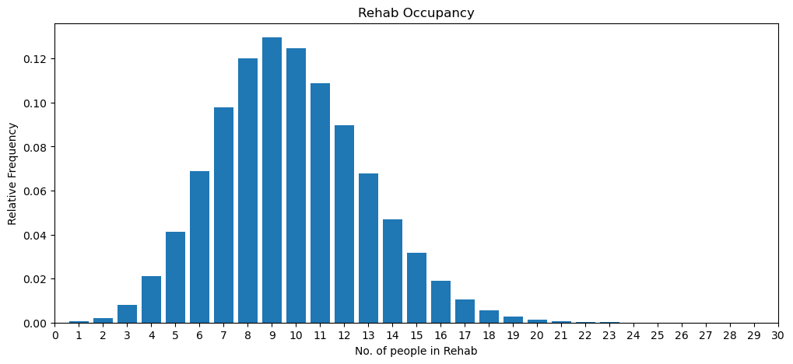
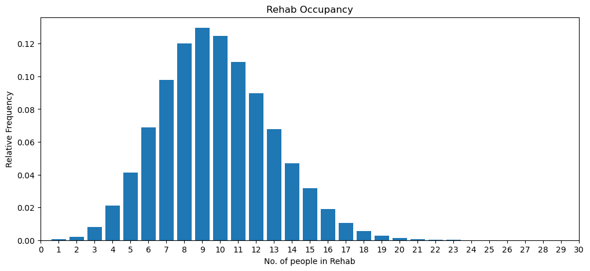

Iteration 24: Common Random Numbers (1) stage 2#
Plain English Summary#
The LLM has generated code using a single numpy random generator stream np.random. We will now begin the process of shifting to a model where each activity and sampling need has its own independent random number stream. This will also allow for common random numbers to be used across experiments.
The steps are as follows:
Create 25 random number generators and host these in the experiment class.
Update the multiple replications function to switch between random number sets
Update the
AcuteStrokeUnitto use the first 14 random number generatorsUpdate the
RehabilitationUnitto use the remaining random number generators.
This notebook focuses on step 1.
Notebook imports#
import math
import statistics
from sim_tools.distributions import Lognormal
LLM Prompt 1 #
LLM Prompt
Modify the Experiment init method as follows:
Add a new parameter called
random_number_setwith default value 0.Add a call to a new method called
setup_streams(random_number_set)
Add a new method to Experiment called setup_streams(random_number_set) that accepts a parameter called random_number_set. It does not return any values.
setup_streams logic is as follows:
create a member variable
streamsas an empty python listcreate a numpy random default_rng generator object using
random_number_setas a seed.Using the generator object create a list of 25 random integer seeds sampled from a uniform distribution with lower bound 0 and an upper bound equal to the systems maximum 64bit integer size.
Loop through “seeds” and for each append a new numpy random default_rng object to
self.streamspassing in each seed as a parameter.
Use correct indentation for all methods.
Show the full Experiment class code and summarise code changes.
class Experiment:
def __init__(self, stroke_mean=1.2, tia_mean=9.3, neuro_mean=3.6, other_mean=3.2,
rehab_mean=7.4, rehab_std_dev=8.6, esd_mean=4.6, esd_std_dev=4.8,
other_dest_mean=7.0, other_dest_std_dev=8.7,
tia_dest_mean=1.8, tia_dest_std_dev=5.0,
neuro_dest_mean=4.0, neuro_dest_std_dev=5.0,
other_dest_mean_2=3.8, other_dest_std_dev_2=5.2,
results_collection_period=1825, trace=False,
rehab_stroke_iat=21.8, rehab_neuro_iat=31.7, rehab_other_iat=28.6,
rehab_stroke_esd_mean=30.3, rehab_stroke_esd_std_dev=23.1,
rehab_stroke_other_mean=28.4, rehab_stroke_other_std_dev=27.2,
rehab_neuro_mean=27.6, rehab_neuro_std_dev=28.4,
rehab_other_mean=16.1, rehab_other_std_dev=14.1,
rehab_stroke_post_destination_prob=[0.4, 0.6],
rehab_neuro_post_destination_prob=[0.09, 0.91],
rehab_other_post_destination_prob=[0.12, 0.88],
warm_up=1095):
self.stroke_interarrival_mean = stroke_mean
self.tia_interarrival_mean = tia_mean
self.neuro_interarrival_mean = neuro_mean
self.other_interarrival_mean = other_mean
self.rehab_mean = rehab_mean
self.rehab_std_dev = rehab_std_dev
self.esd_mean = esd_mean
self.esd_std_dev = esd_std_dev
self.other_dest_mean = other_dest_mean
self.other_dest_std_dev = other_dest_std_dev
self.tia_dest_mean = tia_dest_mean
self.tia_dest_std_dev = tia_dest_std_dev
self.neuro_dest_mean = neuro_dest_mean
self.neuro_dest_std_dev = neuro_dest_std_dev
self.other_dest_mean_2 = other_dest_mean_2
self.other_dest_std_dev_2 = other_dest_std_dev_2
self.results_collection_period = results_collection_period
self.warm_up = warm_up # New member variable for warm-up period
self.trace = trace
self.asu_occupancy = [] # List to store ASU occupancy data
self.rehab_occupancy = [] # List to store Rehabilitation Unit occupancy data
# New parameters for RehabilitationUnit treatment distributions and probabilities
self.rehab_stroke_iat = rehab_stroke_iat
self.rehab_neuro_iat = rehab_neuro_iat
self.rehab_other_iat = rehab_other_iat
self.rehab_stroke_esd_mean = rehab_stroke_esd_mean
self.rehab_stroke_esd_std_dev = rehab_stroke_esd_std_dev
self.rehab_stroke_other_mean = rehab_stroke_other_mean
self.rehab_stroke_other_std_dev = rehab_stroke_other_std_dev
self.rehab_neuro_mean = rehab_neuro_mean
self.rehab_neuro_std_dev = rehab_neuro_std_dev
self.rehab_other_mean = rehab_other_mean
self.rehab_other_std_dev = rehab_other_std_dev
# Probabilities for post-rehab destination sampling for each patient type in RehabilitationUnit
self.rehab_stroke_post_destination_prob = rehab_stroke_post_destination_prob
self.rehab_neuro_post_destination_prob = rehab_neuro_post_destination_prob
self.rehab_other_post_destination_prob = rehab_other_post_destination_prob
def reset_kpi(self):
"""Reset the occupancy lists to empty."""
self.asu_occupancy.clear()
self.rehab_occupancy.clear()
Date and time of input to LLM#
1800 23rd July 2024
Observations on the LLM Output#
BUG FIX - from iteration 23. In ASU class, ASU transfer functions are modified to pass patient_type.name instead of patient_type to Rehab class.
if post_asu_destination == "Rehab":
self.rehab_unit.occupancy += 1
self.rehab_unit.arrivals_from_asu +=1
self.env.process(self.rehab_unit.rehab_treatment(patient_type.name, patient_id))
if self.trace:
print(f" Post-ASU destination (stroke to stroke rehab): {post_asu_destination, patient_id}")
A new perplexity session was used.
The full
Experimentclass for Stage 2 was provided in the prompt.
Sources reported by the LLM#
None reported at time of generation.
Code carried over#
normal_moments_from_lognormal- a function for converting moments of a lognormal to underlying normalcalculate_occupancy_frequencies- calculate relative frequencies of occupancy observationsoccupancy_plot- show occupancy as a bar chart.calculate_prob_delayprob_delay_plotRehabilitationUnitAcuteStrokeUnitPatientTypesingle_run- code that runs the full model ASU+REHABmultiple_replicationscombine_pdelay_resultscombine_occup_resultssummary_table
Model code #
Imports#
import simpy
import numpy as np
import pandas as pd
import matplotlib.pyplot as plt
lognormal function#
def lognormal_to_normal(mean, std):
"""
Convert lognormal moments to normal moments.
Parameters:
mean (float): Mean of the lognormal distribution.
std (float): Standard deviation of the lognormal distribution.
Returns:
tuple: (mean, std) of the corresponding normal distribution.
"""
normal_mean = np.log(mean ** 2 / np.sqrt(std ** 2 + mean ** 2))
normal_std = np.sqrt(np.log(std ** 2 / mean ** 2 + 1))
return normal_mean, normal_std
Experiment class#
This code was generated in iteration 24.
import numpy as np
class Experiment:
def __init__(self, params=None, random_number_set=0):
default_params = {
'results_collection_period': 5 * 365,
'warm_up': 1095,
'trace': False,
'acute_audit_interval': 1,
'rehab_audit_interval': 1,
'rehab_stroke_iat': 21.8,
'rehab_neuro_iat': 31.7,
'rehab_other_iat': 28.6,
'rehab_stroke_esd_los_mean': 30.3,
'rehab_stroke_esd_los_std': 23.1,
'rehab_stroke_other_los_mean': 28.4,
'rehab_stroke_other_los_std': 27.2,
'rehab_complex_neuro_los_mean': 27.6,
'rehab_complex_neuro_los_std': 28.4,
'rehab_other_los_mean': 16.1,
'rehab_other_los_std': 14.1,
'rehab_stroke_post_destination_probs': [0.4, 0.6],
'rehab_complex_neuro_post_destination_probs': [0.09, 0.91],
'rehab_other_post_destination_probs': [0.12, 0.88],
'patient_types': {
'Stroke': {
'interarrival_time': 1.2,
'post_asu_probabilities': [0.24, 0.13, 0.63],
'los_params': {'Rehab': (7.4, 8.6), 'ESD': (4.6, 4.8), 'Other': (7.0, 8.7)}
},
'TIA': {
'interarrival_time': 9.3,
'post_asu_probabilities': [0.01, 0.01, 0.98],
'los_params': (1.8, 5.0)
},
'Complex Neurological': {
'interarrival_time': 3.6,
'post_asu_probabilities': [0.11, 0.05, 0.84],
'los_params': (4.0, 5.0)
},
'Other': {
'interarrival_time': 3.2,
'post_asu_probabilities': [0.05, 0.10, 0.85],
'los_params': (3.8, 5.2)
}
}
}
if params is None:
self.params = default_params
else:
self.params = self.merge_params(default_params, params)
self.asu_occupancy = []
self.rehab_occupancy = []
self.warm_up = self.params['warm_up']
self.setup_streams(random_number_set)
def merge_params(self, default, new):
merged = default.copy()
for key, value in new.items():
if isinstance(value, dict) and key in merged:
merged[key] = self.merge_params(merged[key], value)
else:
merged[key] = value
return merged
def audit_acute_occupancy(self, env, first_interval, audit_interval, asu, experiment):
yield env.timeout(first_interval)
while True:
experiment.asu_occupancy.append(asu.occupancy)
yield env.timeout(audit_interval)
def audit_rehab_occupancy(self, env, first_interval, audit_interval, rehab_unit, experiment):
yield env.timeout(first_interval)
while True:
experiment.rehab_occupancy.append(rehab_unit.occupancy)
yield env.timeout(audit_interval)
def reset_kpi(self):
self.asu_occupancy = []
self.rehab_occupancy = []
def setup_streams(self, random_number_set):
self.streams = []
generator = np.random.default_rng(random_number_set)
seeds = generator.integers(0, np.iinfo(np.int64).max, size=25)
for seed in seeds:
self.streams.append(np.random.default_rng(seed))
ASU Patient type class#
class PatientType:
def __init__(self, name, interarrival_time, post_asu_probabilities, los_params):
self.name = name
self.interarrival_time = interarrival_time
self.count = 0
self.rng = np.random.default_rng()
self.post_asu_probabilities = post_asu_probabilities
self.los_params = los_params
def generate_interarrival_time(self):
return self.rng.exponential(self.interarrival_time)
def sample_post_asu_destination(self):
return self.rng.choice(['Rehab', 'ESD', 'Other'], p=self.post_asu_probabilities)
def sample_length_of_stay(self, destination=None):
if self.name == 'Stroke':
mean, std = self.los_params[destination]
else:
mean, std = self.los_params
normal_mean = math.log(mean**2 / math.sqrt(std**2 + mean**2))
normal_std = math.sqrt(math.log(1 + (std**2 / mean**2)))
return self.rng.lognormal(normal_mean, normal_std)
Acute stroke unit class#
class AcuteStrokeUnit:
def __init__(self, env, experiment, rehab_unit):
self.env = env
self.experiment = experiment
self.rehab_unit = rehab_unit
#self.results_collection_period = experiment.params['results_collection_period']
self.total_arrivals = 0
self.occupancy = 0
self.trace = experiment.params['trace']
self.patient_types = {
name: PatientType(name, params['interarrival_time'], params['post_asu_probabilities'], params['los_params'])
for name, params in experiment.params['patient_types'].items()
}
def run(self):
for patient_type in self.patient_types.values():
self.env.process(self.patient_generator(patient_type))
def patient_generator(self, patient_type):
while True:
interarrival_time = patient_type.generate_interarrival_time()
yield self.env.timeout(interarrival_time)
self.total_arrivals += 1
patient_type.count += 1
patient_id = self.total_arrivals - 1
post_asu_destination = patient_type.sample_post_asu_destination()
if self.trace:
print(f"Time {self.env.now:.2f}: Patient {patient_id} ({patient_type.name}) arrived")
print(f" Total arrivals: {self.total_arrivals}")
print(f" {patient_type.name} arrivals: {patient_type.count}")
print(f" Post-ASU destination: {post_asu_destination}")
print(f" Next {patient_type.name} arrival in {interarrival_time:.2f} days")
self.occupancy += 1
if self.trace:
print(f" Current occupancy: {self.occupancy}")
self.env.process(self.acute_treatment(patient_type, patient_id, post_asu_destination))
def acute_treatment(self, patient_type, patient_id, post_asu_destination):
if patient_type.name == 'Stroke':
yield from self.stroke_acute_treatment(patient_type, patient_id, post_asu_destination)
elif patient_type.name == 'TIA':
yield from self.tia_acute_treatment(patient_type, patient_id, post_asu_destination)
elif patient_type.name == 'Complex Neurological':
yield from self.complex_neurological_acute_treatment(patient_type, patient_id, post_asu_destination)
else: # Other
yield from self.other_acute_treatment(patient_type, patient_id, post_asu_destination)
self.occupancy -= 1
if self.trace:
print(f"Time {self.env.now:.2f}: Patient {patient_id} ({patient_type.name}) left ASU")
print(f" Current occupancy: {self.occupancy}")
def stroke_acute_treatment(self, patient_type, patient_id, post_asu_destination):
los = self.patient_types['Stroke'].sample_length_of_stay(post_asu_destination)
if self.trace:
print(f"Time {self.env.now:.2f}: Patient {patient_id} (Stroke) starting acute treatment")
print(f" Length of stay: {los:.2f} days")
yield self.env.timeout(los)
if self.trace:
print(f"Time {self.env.now:.2f}: Patient {patient_id} (Stroke) finished acute treatment")
if post_asu_destination == "Rehab":
self.rehab_unit.occupancy += 1
self.rehab_unit.arrivals_from_asu +=1
self.env.process(self.rehab_unit.rehab_treatment(patient_type.name, patient_id))
if self.trace:
print(f" Post-ASU destination (stroke to stroke rehab): {post_asu_destination, patient_id}")
def tia_acute_treatment(self, patient_type, patient_id, post_asu_destination):
los = patient_type.sample_length_of_stay()
if self.trace:
print(f"Time {self.env.now:.2f}: Patient {patient_id} (TIA) starting acute treatment")
print(f" Length of stay: {los:.2f} days")
yield self.env.timeout(los)
if self.trace:
print(f"Time {self.env.now:.2f}: Patient {patient_id} (TIA) finished acute treatment")
if post_asu_destination == "Rehab":
self.rehab_unit.occupancy += 1
self.rehab_unit.arrivals_from_asu +=1
self.env.process(self.rehab_unit.rehab_treatment(patient_type.name, patient_id))
if self.trace:
print(f" Post-ASU destination (tia to tia rehab): {post_asu_destination, patient_id}")
def complex_neurological_acute_treatment(self, patient_type, patient_id, post_asu_destination):
los = patient_type.sample_length_of_stay()
if self.trace:
print(f"Time {self.env.now:.2f}: Patient {patient_id} (Complex Neurological) starting acute treatment")
print(f" Length of stay: {los:.2f} days")
yield self.env.timeout(los)
if self.trace:
print(f"Time {self.env.now:.2f}: Patient {patient_id} (Complex Neurological) finished acute treatment")
if post_asu_destination == "Rehab":
self.rehab_unit.occupancy += 1
self.rehab_unit.arrivals_from_asu +=1
self.env.process(self.rehab_unit.rehab_treatment(patient_type.name, patient_id))
if self.trace:
print(f" Post-ASU destination (complex to complex rehab): {post_asu_destination, patient_id}")
def other_acute_treatment(self, patient_type, patient_id, post_asu_destination):
los = patient_type.sample_length_of_stay()
if self.trace:
print(f"Time {self.env.now:.2f}: Patient {patient_id} (Other) starting acute treatment")
print(f" Length of stay: {los:.2f} days")
yield self.env.timeout(los)
if self.trace:
print(f"Time {self.env.now:.2f}: Patient {patient_id} (Other) finished acute treatment")
if post_asu_destination == "Rehab":
self.rehab_unit.occupancy += 1
self.rehab_unit.arrivals_from_asu +=1
self.env.process(self.rehab_unit.rehab_treatment(patient_type.name, patient_id))
if self.trace:
print(f" Post-ASU destination (other to other rehab): {post_asu_destination, patient_id}")
Rehabilitation Unit class #
class RehabilitationUnit:
def __init__(self, env, experiment):
self.env = env
self.experiment = experiment
self.trace = experiment.params['trace']
self.total_arrivals = 0
self.arrivals_from_asu = 0
self.patient_counts = {
'Stroke': 0,
'Complex Neurological': 0,
'Other': 0,
'TIA': 0
}
self.occupancy = 0
self.stroke_iat_external = experiment.params['rehab_stroke_iat']
self.complex_neuro_iat_external = experiment.params['rehab_neuro_iat']
self.other_iat_external = experiment.params['rehab_other_iat']
# Convert lognormal moments to normal moments
self.stroke_esd_mean, self.stroke_esd_std = lognormal_to_normal(
experiment.params['rehab_stroke_esd_los_mean'],
experiment.params['rehab_stroke_esd_los_std']
)
self.stroke_other_mean, self.stroke_other_std = lognormal_to_normal(
experiment.params['rehab_stroke_other_los_mean'],
experiment.params['rehab_stroke_other_los_std']
)
self.complex_neuro_mean, self.complex_neuro_std = lognormal_to_normal(
experiment.params['rehab_complex_neuro_los_mean'],
experiment.params['rehab_complex_neuro_los_std']
)
self.other_mean, self.other_std = lognormal_to_normal(
experiment.params['rehab_other_los_mean'],
experiment.params['rehab_other_los_std']
)
self.tia_mean, self.tia_std = lognormal_to_normal(18.7, 23.5) # TIA parameters
def run(self):
self.env.process(self.stroke_generator())
self.env.process(self.complex_neuro_generator())
self.env.process(self.other_generator())
def stroke_generator(self):
while True:
yield self.env.timeout(np.random.exponential(self.stroke_iat_external))
self.patient_arrival('Stroke')
def complex_neuro_generator(self):
while True:
yield self.env.timeout(np.random.exponential(self.complex_neuro_iat_external))
self.patient_arrival('Complex Neurological')
def other_generator(self):
while True:
yield self.env.timeout(np.random.exponential(self.other_iat_external))
self.patient_arrival('Other')
def patient_arrival(self, patient_type):
patient_id = self.total_arrivals
self.total_arrivals += 1
self.patient_counts[patient_type] += 1
self.occupancy += 1
if self.experiment.params['trace']:
print(f"Time {self.env.now:.2f}: Patient {patient_id} ({patient_type}) arrived at RU")
print(f" Total arrivals: {self.total_arrivals}")
print(f" {patient_type} arrivals: {self.patient_counts[patient_type]}")
print(f" Current patient counts: {self.patient_counts}")
print(f" Current occupancy: {self.occupancy}")
self.env.process(self.rehab_treatment(patient_type, patient_id))
def rehab_treatment(self, patient_type, patient_id):
if patient_type == 'Stroke':
yield from self.stroke_rehab_treatment(patient_id)
elif patient_type == 'Complex Neurological':
yield from self.complex_neurological_rehab_treatment(patient_id)
elif patient_type == 'TIA':
yield from self.tia_rehab_treatment(patient_id)
else:
yield from self.other_rehab_treatment(patient_id)
self.occupancy -= 1
if self.experiment.params['trace']:
print(f"Time {self.env.now:.2f}: Patient {patient_id} ({patient_type}) left RU")
print(f" Current occupancy: {self.occupancy}")
def stroke_rehab_treatment(self, patient_id):
post_rehab_destination = np.random.choice(['ESD', 'Other'], p=self.experiment.params['rehab_stroke_post_destination_probs'])
if post_rehab_destination == 'ESD':
length_of_stay = np.random.lognormal(self.stroke_esd_mean, self.stroke_esd_std)
else:
length_of_stay = np.random.lognormal(self.stroke_other_mean, self.stroke_other_std)
yield self.env.timeout(length_of_stay)
if self.experiment.params['trace']:
print(f"Time {self.env.now:.2f}: Patient {patient_id} (Stroke) completed rehab treatment")
print(f" Post-rehab destination: {post_rehab_destination}")
print(f" Length of stay: {length_of_stay:.2f} days")
def complex_neurological_rehab_treatment(self, patient_id):
post_rehab_destination = np.random.choice(['ESD', 'Other'], p=self.experiment.params['rehab_complex_neuro_post_destination_probs'])
length_of_stay = np.random.lognormal(self.complex_neuro_mean, self.complex_neuro_std)
yield self.env.timeout(length_of_stay)
if self.experiment.params['trace']:
print(f"Time {self.env.now:.2f}: Patient {patient_id} (Complex Neurological) completed rehab treatment")
print(f" Post-rehab destination: {post_rehab_destination}")
print(f" Length of stay: {length_of_stay:.2f} days")
def other_rehab_treatment(self, patient_id):
post_rehab_destination = np.random.choice(['ESD', 'Other'], p=self.experiment.params['rehab_other_post_destination_probs'])
length_of_stay = np.random.lognormal(self.other_mean, self.other_std)
yield self.env.timeout(length_of_stay)
if self.experiment.params['trace']:
print(f"Time {self.env.now:.2f}: Patient {patient_id} (Other) completed rehab treatment")
print(f" Post-rehab destination: {post_rehab_destination}")
print(f" Length of stay: {length_of_stay:.2f} days")
def tia_rehab_treatment(self, patient_id):
post_rehab_destination = np.random.choice(['ESD', 'Other'], p=[0, 1]) # Always 'Other' for TIA patients
length_of_stay = np.random.lognormal(self.tia_mean, self.tia_std)
yield self.env.timeout(length_of_stay)
if self.experiment.params['trace']:
print(f"Time {self.env.now:.2f}: Patient {patient_id} (TIA) completed rehab treatment")
print(f" Post-rehab destination: {post_rehab_destination}")
print(f" Length of stay: {length_of_stay:.2f} days")
Occupancy post-processing code#
def calculate_occupancy_frequencies(occupancy_list):
unique_values, counts = np.unique(occupancy_list, return_counts=True)
relative_freq = counts / len(occupancy_list)
cumulative_freq = np.cumsum(relative_freq)
return relative_freq, cumulative_freq, unique_values
def occupancy_plot(relative_freq, unique_values, x_label="No. people in ward", figsize=(12, 5)):
fig, ax = plt.subplots(figsize=figsize)
ax.bar(unique_values, relative_freq)
ax.set_xlabel(x_label)
ax.set_ylabel("Relative Frequency")
ax.set_title("Occupancy Distribution")
ax.set_xticks(range(0, 31))
ax.set_xlim(0, 30)
return fig, ax
Probability of deplay post-processing code#
def calculate_prob_delay(relative_freq, cumulative_freq):
rel_freq = np.array(relative_freq)
cum_freq = np.array(cumulative_freq)
return rel_freq / cum_freq
def prob_delay_plot(prob_delay, unique_values, x_label="No. acute beds available", figsize=(12, 5)):
fig, ax = plt.subplots(figsize=figsize)
ax.step(unique_values, prob_delay, where='post')
ax.set_xlabel(x_label)
ax.set_ylabel("Probability of Delay")
ax.set_title("Probability of Delay vs. Number of Beds Available")
ax.set_xticks(range(0, 31))
ax.set_xlim(0, 30)
ax.set_ylim(0, 1)
return fig, ax
Function to perform a single run of ASU+REHAB#
def single_run(experiment):
experiment.reset_kpi()
# Create the simulation environment
env = simpy.Environment()
# Create models
rehab_unit = RehabilitationUnit(env, experiment)
asu = AcuteStrokeUnit(env, experiment, rehab_unit)
# Run models
rehab_unit.run()
asu.run()
# Start the audit processes
env.process(experiment.audit_acute_occupancy(env, experiment.warm_up, experiment.params['acute_audit_interval'], asu, experiment))
env.process(experiment.audit_rehab_occupancy(env, experiment.warm_up, experiment.params['rehab_audit_interval'], rehab_unit, experiment))
# Run the simulation
env.run(until=experiment.warm_up + experiment.params['results_collection_period'])
# Calculate occupancy frequencies and probabilities of delay
rel_freq_a, cum_freq_a, unique_vals_a = calculate_occupancy_frequencies(experiment.asu_occupancy)
prob_delay_a = calculate_prob_delay(rel_freq_a, cum_freq_a)
rel_freq_r, cum_freq_r, unique_vals_r = calculate_occupancy_frequencies(experiment.rehab_occupancy)
prob_delay_r = calculate_prob_delay(rel_freq_r, cum_freq_r)
return {
'relative_freq_asu': rel_freq_a,
'prob_delay_asu': prob_delay_a,
'unique_vals_asu': unique_vals_a,
'relative_freq_rehab': rel_freq_r,
'prob_delay_rehab': prob_delay_r,
'unique_vals_rehab': unique_vals_r
}
Multiple Replication function#
def multiple_replications(experiment, num_replications=5):
rep_results = []
for _ in range(num_replications):
result = single_run(experiment)
rep_results.append(result)
return rep_results
Functions to combine replication results#
def combine_pdelay_results(rep_results):
asu_results = []
rehab_results = []
for result in rep_results:
prob_delay_asu = result['prob_delay_asu']
unique_vals_asu = result['unique_vals_asu']
min_occupancy_asu = min(unique_vals_asu)
asu_array = np.zeros(30)
asu_array[unique_vals_asu] = prob_delay_asu
asu_array[:min_occupancy_asu] = 1.0
asu_results.append(asu_array)
prob_delay_rehab = result['prob_delay_rehab']
unique_vals_rehab = result['unique_vals_rehab']
min_occupancy_rehab = min(unique_vals_rehab)
rehab_array = np.zeros(30)
rehab_array[unique_vals_rehab] = prob_delay_rehab
rehab_array[:min_occupancy_rehab] = 1.0
rehab_results.append(rehab_array)
return np.array(asu_results), np.array(rehab_results)
def combine_occup_results(rep_results):
asu_results = []
rehab_results = []
for result in rep_results:
relative_freq_asu = result['relative_freq_asu']
unique_vals_asu = result['unique_vals_asu']
asu_array = np.zeros(30)
asu_array[unique_vals_asu] = relative_freq_asu
asu_results.append(asu_array)
relative_freq_rehab = result['relative_freq_rehab']
unique_vals_rehab = result['unique_vals_rehab']
rehab_array = np.zeros(30)
rehab_array[unique_vals_rehab] = relative_freq_rehab
rehab_results.append(rehab_array)
return np.array(asu_results), np.array(rehab_results)
def mean_results(rep_results):
return np.mean(rep_results, axis=0)
Tabular results for p(delay)#
def summary_table(mean_pdelay, min_beds, max_beds, bed_type):
sliced_pdelay = mean_pdelay[min_beds:max_beds+1]
data = {
"p(delay)": np.round(sliced_pdelay, 2),
"1 in every n patients delayed": np.floor(1 / np.round(sliced_pdelay, 2)).astype(int)
}
df = pd.DataFrame(data, index=range(min_beds, max_beds+1))
df.index.name = f"No. {bed_type} beds"
return df
The script below was created by the Tester iteration 23
# Create the experiment
experiment = Experiment({
'results_collection_period': 365*5, # Run for 5 years
'trace': False, # Set to True if you want to see detailed logs
})
# Run multiple replications
rep_results = multiple_replications(experiment, num_replications=100)
# Combine results
asu_pdelay, rehab_pdelay = combine_pdelay_results(rep_results)
asu_occup, rehab_occup = combine_occup_results(rep_results)
# Calculate mean results
mean_pdelay_asu = mean_results(asu_pdelay)
mean_pdelay_rehab = mean_results(rehab_pdelay)
mean_occup_asu = mean_results(asu_occup)
mean_occup_rehab = mean_results(rehab_occup)
# Create summary tables
asu_summary = summary_table(mean_pdelay_asu, min_beds=9, max_beds=14, bed_type="ASU")
rehab_summary = summary_table(mean_pdelay_rehab, min_beds=10, max_beds=16, bed_type="Rehab")
# Plot ASU Probability of Delay
fig, ax = prob_delay_plot(mean_pdelay_asu, range(30), x_label="No. ASU beds available")
plt.title("ASU Probability of Delay")
plt.show()
# Plot ASU Occupancy
fig, ax = occupancy_plot(mean_occup_asu, range(30), x_label="No. of people in ASU")
plt.title("ASU Occupancy")
plt.show()
# Plot Rehab Probability of Delay
fig, ax = prob_delay_plot(mean_pdelay_rehab, range(30), x_label="No. rehab beds available")
plt.title("Rehab Probability of Delay")
plt.show()
# Plot Rehab Occupancy
fig, ax = occupancy_plot(mean_occup_rehab, range(30), x_label="No. of people in Rehab")
plt.title("Rehab Occupancy")
plt.show()
 

print("ASU Summary Table:")
asu_summary
ASU Summary Table:
| p(delay) | 1 in every n patients delayed | |
|---|---|---|
| No. ASU beds | ||
| 9 | 0.18 | 5 |
| 10 | 0.13 | 7 |
| 11 | 0.08 | 12 |
| 12 | 0.05 | 20 |
| 13 | 0.03 | 33 |
| 14 | 0.02 | 50 |
print("Rehab Summary Table:")
rehab_summary
Rehab Summary Table:
| p(delay) | 1 in every n patients delayed | |
|---|---|---|
| No. Rehab beds | ||
| 10 | 0.21 | 4 |
| 11 | 0.15 | 6 |
| 12 | 0.11 | 9 |
| 13 | 0.08 | 12 |
| 14 | 0.05 | 20 |
| 15 | 0.03 | 33 |
| 16 | 0.02 | 50 |
Testing #
Results processing 1: code correctly calculates relative and cumulative frequencies
Expected result: for [1, 1, 1, 1, 2, 2, 2, 3, 3, 4] relative = [4/10, 3/10, 2/10, 1/10] and cum = [4/10, 7/10, 9/10, 1.0]
Actual result (PASS): for [1, 1, 1, 1, 2, 2, 2, 3, 3, 4] relative = [4/10, 3/10, 2/10, 1/10] and cum = [4/10, 7/10, 9/10, 1.0]
Results processing 2: test that prob delay is calculated correctly.
Expected result: The probability of delay is [1.0, 0.3/0.7, 0.2/0.9, 0.1/1.0]
Actual result (PASS): The probability of delay is [1.0, 0.3/0.7, 0.2/0.9, 0.1/1.0]
Results collection test 1: Test the result collection process for ASU collects ward occupancy every day
Expected result: The number of observations taken is 1 less the number of days the model is run.
Actual result (PASS): The number of observations taken is 1 less the number of days the model is run.
Results collection test 2: Test ASU ward occupancy data collected is in a sensible range.
Expected result: The type collected is int. The values are in the range 0 to 50 with sensible moments.
Actual result (PASS): The type collected is int. The values are in the range 0 to 50 with sensible moments.
Results collection test 3: Test the result collection process for REHAB collects unit occupancy every day
Expected result: The number of observations taken is 1 less the number of days the model is run.
Actual result (PASS): The number of observations taken is 1 less the number of days the model is run.
Results collection test 4: Test REHAB unit occupancy data collected is in a sensible range.
Expected result: The type collected is int. The values are in the range 0 to (10-15) with sensible moments.
Actual result (PASS): The type collected is int. The values are 0 to (10-15) with sensible moments.
Results collection test 5: SYSTEM TEST: Test the result collection process for ASU+REHAB collects ward occupancy every day
Expected result: The number of observations taken is 1 less the number of days the model is run.
Actual result (PASS): The number of observations taken is 1 less the number of days the model is run.
Single run test: SYSTEM TEST: Test that the
single_runfunction returns a dictionary of resultsExpected Result: len(run_results) == 6 and type(run_results) == dict
Actual Result (PASS): len(run_results) == 6 and type(run_results) == dict
Warm-up Period Test: Test warm-up works correctly for ASU+REHAB ward occupancy. Audit interval = 1 and Warm-up > 0
Expected result: The length of the occupancy data collection arrays is equal to the results collection period.
Actual result (PASS): The length of the occupancy data collection arrays is equal to the results collection period.
Suppress simulated trace: Test that setting experiment.trace = False suppresses ASU output by default.
Expected result: The ASU model runs with no simulated log output
Actual result (PASS): The ASU model runs with no simulated log output
Suppress simulated trace 2: Test that setting experiment.trace = False suppresses REHAB output by default.
Expected result: The REHAB model runs with no simulated log output
Actual result (PASS): The REHAB model runs with no simulated log output
Testing lognormal function: Test that lognomal function correctly calculates the moments of the underlying normal dist.
Expected result: The LLM generated function and
sim-tools.distributions.Lognormalperform the same conversion.Actual results (PASS): The functions generate the same values.
Extreme value test 1: TIA, Complex Neuro, Other, have their inter-arrival time is set to \(M\) a very large number
Expected result: The only type of patient to arrive to the model is “Stroke”
Actual result (PASS): The only type of patient to arrive to the model is “Stroke”
Extreme value test 2: All patient types have have their inter-arrival time is set to \(M\) a very large number
Expected result: No patients arrive to the model.
Actual result (PASS): No patients arrive to the model.
Different run length: The run length of the model is set to 10 days.
Expected result: The model should runs no longer than 10 simulated time periods
Actual result (PASS): The model runs no longer than 10 simulated time periods
Extreme value test 3: All patient types have have their mean length of stay time set to \(M\) a very large number
Expected result: No patients depart the model (only arrivals seen in log)
Actual Results (PASS): No patients depart the model.
Extreme value test 4: All patient types apart from stroke->rehab have have their mean length of stay time set to \(M\) a very large number
Expected result: Only stroke patients depart the model (seen in log)
Actual Results (PASS): Only stroke patient depart the model.
Extreme value test 5: In rehab, Complex Neuro, and Other, have their inter-arrival time is set to \(M\) a very large number
Expected result: The only type of patient to arrive to the rehab model is “Stroke”
Actual result (PASS): The only type of patient to arrive to the rehab model is “Stroke”
Extreme value test 6: In the rehab model, all patient types have have their inter-arrival time is set to \(M\) a very large number
Expected result: No patients arrive to the model.
Actual result (PASS): No patients arrive to the model.
Extreme value test 7: In the rehab model, all patient types have their length of stay means set to \(M\) a very larger number.
Expected result: Patients arrive to the model as normal, but do not depart.
Actual result (PASS): Patients arrive to the model as normal, but do not depart.
Results processing 1#
Test that the code correctly calculates the relative and cumulative frequencies of a python list of integer values.
(PASS)
def result_processing_test_1(values, rel_expected, cum_expected):
'''
Test the `calculate_occupancy_frequencies` function works
as expected.
Expected result: relative frequencies and cumulative freqs
are the same as expected values.
Params:
------
values: list
list of values to test
rel_expected: list
list of floats - expected relative freqs
cum_expected: list
list of floats - expected cumulative freqs
Returns:
-------
bool: does the model pass the test.
'''
rel, cum, unique = calculate_occupancy_frequencies(values)
# use all close to allow for minor floating point differences.
return (set(rel) == set(rel_expected)) and np.allclose(np.array(cum_expected), cum)
result_processing_test_1(values=[1, 1, 1, 1, 2, 2, 2, 3, 3, 4],
rel_expected=[0.4, 0.3, 0.2, 0.1],
cum_expected=[0.4, 0.7, 0.9, 1.0])
True
Results Processing test 2#
Test that the calculation of the probability of delay is correct.
(PASS)
def result_processing_test_2(relative, cum, p_delay_expected):
'''
Test the probability of delay is calculated correctly.
Params:
------
relative: list
list of floats - relative freqs
cum: list
list of floats - cumulative freqs
Returns:
-------
bool: does the function pass the test.
'''
p_delay = calculate_prob_delay(relative, cum)
# use all close to allow for minor floating point differences.
return np.allclose(np.array(p_delay_expected), p_delay)
relative = [0.4, 0.3, 0.2, 0.1],
cum = [0.4, 0.7, 0.9, 1.0]
expected = [1.0, 0.3/0.7, 0.2/0.9, 0.1/1.0]
result = result_processing_test_2(relative, cum, expected)
result
True
Results collection test 1#
Test the optional results collection process works correctly. The process should collect acute stroke occupancy every day
(PASS)
def results_collection_test1(audit_interval=1):
'''
Test the model collects acute stroke occupancy every day
Expected result: len(experiment.asu_occupancy) == env.now
Params:
------
audit_interval: 1
duration of audit.
Returns:
-------
bool: does the model pass the test.
'''
# Create the experiment
experiment = Experiment({
'run_length': 365*5, # Run for 5 years
'trace': False, # Set to True if you want to see detailed logs
'acute_audit_interval': audit_interval # Audit interval as specified
})
# Create the simulation environment
env = simpy.Environment()
rehab_unit = RehabilitationUnit(env, experiment)
# Create the AcuteStrokeUnit
asu = AcuteStrokeUnit(env, experiment, rehab_unit)
# modified iteration 21
# start the audit_acute_occupancy to record ASU occupancy at intervals
env.process(experiment.audit_acute_occupancy(env, 1, experiment.params['acute_audit_interval'], asu, experiment))
# Run the model - modified iteration 21
asu.run()
env.run(until=experiment.params['results_collection_period'])
print(f"Number of occupancy audits: {len(experiment.asu_occupancy)}")
print(f'Simulation time: {env.now}')
# The number of audits should be equal to the simulation time
# (assuming audit_interval=1 and the first audit happens at time 1)
return len(experiment.asu_occupancy) == (env.now - 1)
results_collection_test1()
Number of occupancy audits: 1824
Simulation time: 1825
True
Result collection test 2#
(PASS)
def results_collection_test2(audit_interval=1):
'''
Test ASU ward occupancy data collected is in a sensible range.
Expected result: The type collected is int. The values are in
the range in the range 0 to 50 with sensible moments.
prints out:
min
max
mean
deciles
Params:
------
audit_interval: 1
duration of audit.
Returns:
-------
None
'''
# Create the experiment
experiment = Experiment({
'trace': False,
'acute_audit_interval': audit_interval
})
# Create the simulation environment
env = simpy.Environment()
rehab_unit = RehabilitationUnit(env, experiment)
# Create the AcuteStrokeUnit
asu = AcuteStrokeUnit(env, experiment, rehab_unit)
# Start the audit process - modified iteration 21
env.process(experiment.audit_acute_occupancy(env, 1, experiment.params['acute_audit_interval'], asu, experiment))
# Run the model - modified iteration 21
asu.run()
env.run(until=experiment.params['results_collection_period'])
# Calculate statistics
min_occupancy = min(experiment.asu_occupancy)
max_occupancy = max(experiment.asu_occupancy)
mean_occupancy = statistics.fmean(experiment.asu_occupancy)
deciles = [round(q, 1) for q in statistics.quantiles(experiment.asu_occupancy, n=10)]
# Print results
print(f'Minimum occupancy: {min_occupancy}')
print(f'Maximum occupancy: {max_occupancy}')
print(f'Mean occupancy: {mean_occupancy:.2f}')
print(f'Deciles of occupancy: {deciles}')
results_collection_test2()
Minimum occupancy: 1
Maximum occupancy: 19
Mean occupancy: 8.10
Deciles of occupancy: [5.0, 6.0, 6.0, 7.0, 8.0, 9.0, 9.0, 10.0, 12.0]
Results collection test 3#
Test the optional results collection process works correctly for rehab. The process should collect rehab unit occupancy every day.
(PASS)
def results_collection_test3(audit_interval=1):
'''
Test the model collects rehab occupancy every day
Expected result: len(experiment.rehab_occupancy) == env.now - 1
Params:
------
audit_interval: 1
duration of audit.
Returns:
-------
bool: does the model pass the test.
'''
# Create the simulation environment
env = simpy.Environment()
# create experiment
experiment = Experiment()
rehab_unit = RehabilitationUnit(env, experiment)
# Start the audit process - modified iteration 21
env.process(experiment.audit_rehab_occupancy(env, 1, experiment.params['rehab_audit_interval'], rehab_unit, experiment))
# Run the model for the default run length in the experiment - modified in iteration 21
env.run(until=experiment.params['results_collection_period'])
print(f'{len(experiment.rehab_occupancy)=}')
print(f'{env.now=}')
return len(experiment.rehab_occupancy) == (env.now - 1)
results_collection_test3()
len(experiment.rehab_occupancy)=1824
env.now=1825
True
Results Collection Test 4#
(PASS)
def results_collection_test4(audit_interval=1):
'''
Test REHAB ward occupancy data collected is in a sensible range.
Expected result: The type collected is int. The values are in
the range 1 to [10-15] with sensible moments.
Note this is when the Rehab unit is used independently
with external arrivals only i.e. no transfers from ASU.
prints out:
min
max
mean
deciles
Params:
------
audit_interval: 1
duration of audit.
Returns:
-------
None
'''
# Create the simulation environment
env = simpy.Environment()
# create experiment
experiment = Experiment()
rehab_unit = RehabilitationUnit(env, experiment)
rehab_unit.run()
# Start the audit process - modified iteration 21
env.process(experiment.audit_rehab_occupancy(env, 1, experiment.params['rehab_audit_interval'], rehab_unit, experiment))
# Run the model for the default run length in the experiment - modified in iteration 21
env.run(until=experiment.params['results_collection_period'])
print(f'min(experiment.rehab_occupancy)={min(experiment.rehab_occupancy)}')
print(f'max(experiment.rehab_occupancy)={max(experiment.rehab_occupancy)}')
print(f'statistics.fmean(experiment.rehab_occupancy)={statistics.fmean(experiment.rehab_occupancy):.2f}')
print('Deciles:', [round(q, 1) for q in statistics.quantiles(experiment.rehab_occupancy, n=10)])
results_collection_test4()
min(experiment.rehab_occupancy)=0
max(experiment.rehab_occupancy)=9
statistics.fmean(experiment.rehab_occupancy)=2.74
Deciles: [1.0, 1.0, 2.0, 2.0, 3.0, 3.0, 3.0, 4.0, 5.0]
Results Collection Test 5 (SYSTEM TEST)#
Test that when the models are linked that the occupancy is audited correctly.
def results_collection_test5(audit_interval=1):
'''
Test REHAB ward occupancy data collected is in a sensible range
when it is connected to the ASU model.
Expected result: The type collected is int. The values are in
the range in the range 1 to [10-15] with sensible moments.
Expected result:
len(experiment.asu_occupancy) == env.now - 1 AND
len(experiment.rehab_occupancy) == env.now - 1
Params:
------
audit_interval: 1
duration of audit.
Returns:
-------
bool: does the model pass the test.
'''
# Create the simulation environment
env = simpy.Environment()
# Create an experiment with default parameters
experiment = Experiment()
# Create models
rehab_unit = RehabilitationUnit(env, experiment)
asu = AcuteStrokeUnit(env, experiment, rehab_unit)
# Start the ASU patient generators for each type of patient
asu.run()
rehab_unit.run()
# Start the audit process - modified iteration 21
env.process(experiment.audit_rehab_occupancy(env, 1, experiment.params['rehab_audit_interval'], rehab_unit, experiment))
env.process(experiment.audit_acute_occupancy(env, 1, experiment.params['acute_audit_interval'], asu, experiment))
# Run the simulation until the specified run length in the Experiment parameters - modified in iteration 21
env.run(until=experiment.params['results_collection_period'])
# Print info for debug
print(f"Average rehab occupancy: {sum(experiment.rehab_occupancy) / len(experiment.rehab_occupancy):.2f}")
print(f"Maximum rehab occupancy: {max(experiment.rehab_occupancy)}")
print(f"Minimum rehab occupancy: {min(experiment.rehab_occupancy)}")
print(f'{len(experiment.asu_occupancy)=}')
print(f'{len(experiment.rehab_occupancy)=}')
print(f'{env.now=}')
# Test
return len(experiment.asu_occupancy) == (env.now - 1) and \
len(experiment.rehab_occupancy) == (env.now - 1)
results_collection_test5()
Average rehab occupancy: 9.87
Maximum rehab occupancy: 20
Minimum rehab occupancy: 0
len(experiment.asu_occupancy)=1824
len(experiment.rehab_occupancy)=1824
env.now=1825
True
Results Collection Test 6 (SYSTEM TEST)#
def results_collection_test6(audit_interval=1):
'''
Test the model collects acute stroke occupancy every day
Expected result: The type collected is int. The values are in
the range in the range 1 to ~25 with sensible moments.
Note this is when the Rehab unit is linked to the ASU.
I.e. transfers from ASU + external arrivals
prints out:
min
max
mean
deciles
Params:
------
audit_interval: 1
duration of audit.
Returns:
-------
bool: does the model pass the test.
'''
# Create the simulation environment
env = simpy.Environment()
# Create an experiment with default parameters
experiment = Experiment()
# Create models
rehab_unit = RehabilitationUnit(env, experiment)
asu = AcuteStrokeUnit(env, experiment, rehab_unit)
# Start the ASU patient generators for each type of patient
asu.run()
rehab_unit.run()
# Start the audit process - modified iteration 21
env.process(experiment.audit_rehab_occupancy(env, 1, experiment.params['rehab_audit_interval'], rehab_unit, experiment))
env.process(experiment.audit_acute_occupancy(env, 1, experiment.params['acute_audit_interval'], asu, experiment))
# Run the simulation until the specified run length in the Experiment parameters - modified in iteration 21
env.run(until=experiment.params['results_collection_period'])
# Test
print(f'min(experiment.rehab_occupancy)={min(experiment.rehab_occupancy)}')
print(f'max(experiment.rehab_occupancy)={max(experiment.rehab_occupancy)}')
print(f'statistics.fmean(experiment.rehab_occupancy)={statistics.fmean(experiment.rehab_occupancy):.2f}')
print('Deciles:', [round(q, 1) for q in statistics.quantiles(experiment.rehab_occupancy, n=10)])
results_collection_test6()
min(experiment.rehab_occupancy)=0
max(experiment.rehab_occupancy)=17
statistics.fmean(experiment.rehab_occupancy)=9.66
Deciles: [6.0, 7.0, 8.0, 9.0, 10.0, 11.0, 11.5, 12.0, 13.0]
Warm-up Test#
(PASS)
def warm_up_test(warm_up, audit_interval=1):
'''
Test warm-up works correctly for ASU+REHAB ward occupancy
Expected result:
len(experiment.asu_occupancy) == experiment.params['results_collection_period']
AND len(experiment.rehab_occupancy) == experiment.params['results_collection_period']
Params:
------
warm_up: int
Duration of warm-up period.
audit_interval: int, default 1
Duration of audit interval.
Returns:
-------
bool: does the model pass the test.
'''
# Create the experiment with specified warm-up period
experiment = Experiment({
'warm_up': warm_up,
'acute_audit_interval': audit_interval,
'rehab_audit_interval': audit_interval
})
# Create the simulation environment
env = simpy.Environment()
# Create models
rehab_unit = RehabilitationUnit(env, experiment)
asu = AcuteStrokeUnit(env, experiment, rehab_unit)
# Start the ASU patient generators
asu.run()
# Start the REHAB patient generators
rehab_unit.run()
# Start the audit processes
env.process(experiment.audit_acute_occupancy(env, experiment.warm_up, audit_interval, asu, experiment))
env.process(experiment.audit_rehab_occupancy(env, experiment.warm_up, audit_interval, rehab_unit, experiment))
# Run the simulation
env.run(until=experiment.warm_up + experiment.params['results_collection_period'])
# Print info for debug
print(f'{len(experiment.asu_occupancy)=}')
print(f'{len(experiment.rehab_occupancy)=}')
print(f'{env.now=}')
print(f'{experiment.params["results_collection_period"]=}')
print(f'{experiment.warm_up + experiment.params["results_collection_period"]=}')
# Test
return (len(experiment.asu_occupancy) == experiment.params['results_collection_period'] and
len(experiment.rehab_occupancy) == experiment.params['results_collection_period'])
warm_up_test(warm_up=365)
len(experiment.asu_occupancy)=1825
len(experiment.rehab_occupancy)=1825
env.now=2190
experiment.params["results_collection_period"]=1825
experiment.warm_up + experiment.params["results_collection_period"]=2190
True
Single run test (SYSTEM TEST)#
def single_run_test():
'''
Test the single_run function returns a dictionary of
results.
The results dictionary contains the following keys:
'relative_freq_asu'
'prob_delay_asu'
'unique_vals_asu'
'relative_freq_rehab'
'prob_delay_rehab'
'unique_vals_rehab'
Expected result:
len(run_results) == 6 and type(run_results) == dict
Returns:
-------
bool: does the model pass the test.
'''
# a default experiment
default_experiment_params = Experiment()
# run the model
run_results = single_run(default_experiment_params)
# Print the results for debugging
print(f"{run_results['relative_freq_asu']=}")
print(f"{run_results['prob_delay_asu']=}")
print(f"{run_results['unique_vals_asu']=}")
print(f"{run_results['relative_freq_rehab']=}")
print(f"{run_results['prob_delay_rehab']=}")
print(f"{run_results['unique_vals_rehab']=}")
# Test
expected_keys = {
'relative_freq_asu',
'prob_delay_asu',
'unique_vals_asu',
'relative_freq_rehab',
'prob_delay_rehab',
'unique_vals_rehab'
}
return len(run_results) == 6 and type(run_results) == dict and set(run_results.keys()) == expected_keys
single_run_test()
run_results['relative_freq_asu']=array([0.00273973, 0.0109589 , 0.0230137 , 0.05205479, 0.0860274 ,
0.10739726, 0.13315068, 0.14684932, 0.13369863, 0.12767123,
0.07452055, 0.04876712, 0.02958904, 0.01205479, 0.00438356,
0.00328767, 0.00328767, 0.00054795])
run_results['prob_delay_asu']=array([1.00000000e+00, 8.00000000e-01, 6.26865672e-01, 5.86419753e-01,
4.92163009e-01, 3.80582524e-01, 3.20580475e-01, 2.61208577e-01,
1.92125984e-01, 1.55023287e-01, 8.29774253e-02, 5.15046296e-02,
3.03030303e-02, 1.21951220e-02, 4.41501104e-03, 3.30033003e-03,
3.28947368e-03, 5.47945205e-04])
run_results['unique_vals_asu']=array([ 1, 2, 3, 4, 5, 6, 7, 8, 9, 10, 11, 12, 13, 14, 15, 16, 17,
19])
run_results['relative_freq_rehab']=array([0.00876712, 0.02794521, 0.04657534, 0.09643836, 0.09589041,
0.12767123, 0.1369863 , 0.14520548, 0.11452055, 0.08438356,
0.04931507, 0.02958904, 0.02027397, 0.01424658, 0.00054795,
0.00164384])
run_results['prob_delay_rehab']=array([1.00000000e+00, 7.61194030e-01, 5.59210526e-01, 5.36585366e-01,
3.47912525e-01, 3.16576087e-01, 2.53549696e-01, 2.11830536e-01,
1.43150685e-01, 9.54151177e-02, 5.28169014e-02, 3.07167235e-02,
2.06128134e-02, 1.42778693e-02, 5.48847420e-04, 1.64383562e-03])
run_results['unique_vals_rehab']=array([ 4, 5, 6, 7, 8, 9, 10, 11, 12, 13, 14, 15, 16, 17, 18, 19])
True
Test suppress trace 1#
(PASS)
def test_suppress_log(trace):
'''
Test that setting experiment.trace
False suppresses output.
Expected result: patient_count > 0
Params:
------
trace: bool
is trace outputted or not?
Returns:
-------
int: number of patient arrivals.
'''
experiment = Experiment({'trace': trace})
env = simpy.Environment()
rehab_unit = RehabilitationUnit(env, experiment)
model = AcuteStrokeUnit(env, experiment, rehab_unit)
model.run()
env.run(until=experiment.params['results_collection_period'])
print("\nSimulation completed.")
print(f"Total simulation time: {model.env.now:.2f} days")
print(f"Total patient arrivals: {model.total_arrivals}")
for patient_type in model.patient_types.values():
print(f"Total {patient_type.name} arrivals: {patient_type.count}")
test_suppress_log(trace=False)
Simulation completed.
Total simulation time: 1825.00 days
Total patient arrivals: 2822
Total Stroke arrivals: 1575
Total TIA arrivals: 194
Total Complex Neurological arrivals: 494
Total Other arrivals: 559
Test suppress trace 2#
def test_suppress_log_rehab(trace):
'''
Test that setting experiment.trace to
False suppresses output in the rehab model
Expected result: patient_count > 0
Params:
------
trace: bool
is trace outputted or not?
Returns:
-------
int: number of patient arrivals.
'''
# Create the simulation environment
experiment = Experiment({'trace': trace})
env = simpy.Environment()
model = RehabilitationUnit(env, experiment)
asu = AcuteStrokeUnit(env, experiment, model)
model.run()
env.run(until=experiment.params['results_collection_period'])
print("\nSimulation completed.")
print(f"Total simulation time: {model.env.now:.2f} days")
print(f"Total patient arrivals: {model.total_arrivals}")
print(f"Final rehab patient counts: {model.patient_counts}")
test_suppress_log_rehab(False)
Simulation completed.
Total simulation time: 1825.00 days
Total patient arrivals: 217
Final rehab patient counts: {'Stroke': 90, 'Complex Neurological': 62, 'Other': 65, 'TIA': 0}
Lognormal test#
Test that lognomal function correctly calculates the moments of the underlying normal dist.
Result: PASS
def test_lognormal_moments(mean, std):
'''
Test that lognomal function correctly calculates
the moments of the underlying normal dist.
Params:
------
mean: float
mean of the lognormal distribution
std: float
st dev of the lognormal distribution
Returns:
-------
bool
'''
# Lognormal class from sim-tools.
expected_moments = Lognormal(mean, std)
print(expected_moments.mu, expected_moments.sigma)
# Convert lognormal parameters from llm for asu
normal_mean = math.log(mean**2 / math.sqrt(std**2 + mean**2))
normal_std = math.sqrt(math.log(1 + (std**2 / mean**2)))
print(normal_mean, normal_std)
# Check llm lognormal function used in rehab model - changed in iteration 23
normal_mean2 = np.log(mean ** 2 / np.sqrt(std ** 2 + mean ** 2))
normal_std2 = np.sqrt(np.log(std ** 2 / mean ** 2 + 1))
print (normal_mean2, normal_std2)
return (normal_mean, normal_std) == (expected_moments.mu, expected_moments.sigma) == (normal_mean2, normal_std2)
test_lognormal_moments(128.79, 267.51)
4.022977459259615 1.2924439729790718
4.022977459259615 1.2924439729790718
4.022977459259615 1.2924439729790718
True
Extreme value test 1#
The model uses hard coded parameters. The most simple way to modify the code for this test was to change hard coded parameters for \(M\)
Result: PASS
M = 10_000_000
def ev_test_1(large_number):
'''
TIA, Complex Neuro, Other, have their inter-arrival
time set to $M$ a very large number
Expected result: The only type of patient to arrive to the model
is "Stroke". This is seen in the event log
Params:
-------
large_number: int
M a very large number
Returns:
--------
int: the number of patients that arrived to the model.
'''
def main(arrival_rates=None, results_collection_period=None):
custom_params = {}
if arrival_rates:
custom_params['patient_types'] = arrival_rates
if results_collection_period:
custom_params['results_collection_period'] = results_collection_period
# Create an Experiment instance with custom parameters
experiment = Experiment(custom_params)
# Run the simulation with the custom experiment
env = simpy.Environment()
rehab_unit = RehabilitationUnit(env, experiment)
model = AcuteStrokeUnit(env, experiment, rehab_unit)
model.run()
env.run(until=experiment.params['results_collection_period'])
# Print results to check
print("\nSimulation completed.")
print(f"Total simulation time: {model.env.now:.2f} days")
print(f"Total patient arrivals: {model.total_arrivals}")
for patient_type in model.patient_types.values():
print(f"Total {patient_type.name} arrivals: {patient_type.count}")
if __name__ == "__main__":
large_number = M
asu_arrival_rates = {
'Stroke': {'interarrival_time': 1.2},
'TIA': {'interarrival_time': large_number},
'Complex Neurological': {'interarrival_time': large_number},
'Other': {'interarrival_time': large_number}
}
main(asu_arrival_rates, results_collection_period=2*365) # Run for 2 years with custom parameters
ev_test_1(M)
Simulation completed.
Total simulation time: 730.00 days
Total patient arrivals: 620
Total Stroke arrivals: 620
Total TIA arrivals: 0
Total Complex Neurological arrivals: 0
Total Other arrivals: 0
Extreme value test 2#
An experiment is setup so that all patient types have a mean inter-arrival rate of \(M\)
Result: PASS
def ev_test_2(large_number):
'''
All patient types have have their inter-arrival time is
set to $M$ a very large number
Expected result: No patients arrive to the model.
Params:
-------
large_number: int
M a very large number
Returns:
--------
int: the number of patients that arrived to the model.
'''
def main(arrival_rates=None, results_collection_period=None):
custom_params = {}
if arrival_rates:
custom_params['patient_types'] = arrival_rates
if results_collection_period:
custom_params['results_collection_period'] = results_collection_period
# Create an Experiment instance with custom parameters
experiment = Experiment(custom_params)
# Run the simulation with the custom experiment
env = simpy.Environment()
rehab_unit = RehabilitationUnit(env, experiment)
model = AcuteStrokeUnit(env, experiment, rehab_unit)
model.run()
env.run(until=experiment.params['results_collection_period'])
# Print results to check
print("\nSimulation completed.")
print(f"Total simulation time: {model.env.now:.2f} days")
print(f"Total patient arrivals: {model.total_arrivals}")
for patient_type in model.patient_types.values():
print(f"Total {patient_type.name} arrivals: {patient_type.count}")
if __name__ == "__main__":
large_number = M
asu_arrival_rates = {
'Stroke': {'interarrival_time': large_number},
'TIA': {'interarrival_time': large_number},
'Complex Neurological': {'interarrival_time': large_number},
'Other': {'interarrival_time': large_number}
}
main(asu_arrival_rates, results_collection_period=2*365) # Run for 2 years with custom parameters
ev_test_2(M)
Simulation completed.
Total simulation time: 730.00 days
Total patient arrivals: 0
Total Stroke arrivals: 0
Total TIA arrivals: 0
Total Complex Neurological arrivals: 0
Total Other arrivals: 0
Different run length test#
The model has again been modified to use the original code and parameters generated by the LLM.
TEN_DAYS = 10
def test_run_length(results_collection_period):
'''
Test that the run length of the model can be modified.
Expected result: The model should runs no longer than the new run length.
Params:
------
run_length: float
Run length of the model in days.
Returns:
-------
float
Simulation end time.
'''
def main(results_collection_period=None):
custom_params = {}
if results_collection_period:
custom_params['results_collection_period'] = results_collection_period
# Create an Experiment instance with custom parameters
experiment = Experiment(custom_params)
# Run the simulation with the custom experiment
env = simpy.Environment()
rehab_unit = RehabilitationUnit(env, experiment)
model = AcuteStrokeUnit(env, experiment, rehab_unit)
model.run()
env.run(until=experiment.params['results_collection_period'])
# Print results to check
print("\nSimulation completed.")
print(f"Total simulation time: {model.env.now:.2f} days")
print(f"Total patient arrivals: {model.total_arrivals}")
for patient_type in model.patient_types.values():
print(f"Total {patient_type.name} arrivals: {patient_type.count}")
if __name__ == "__main__":
main(results_collection_period=results_collection_period)
test_run_length(TEN_DAYS)
Simulation completed.
Total simulation time: 10.00 days
Total patient arrivals: 13
Total Stroke arrivals: 8
Total TIA arrivals: 0
Total Complex Neurological arrivals: 2
Total Other arrivals: 3
Extreme value test 3#
An experiment is setup so that all patient types have a mean length of stay on the ASU of \(M\)
Result: PASS
def ev_test_3(large_number):
'''
All patient types have have their mean length
of stay time set to $M$ a very large number
Expected result: No patients depart the model
(only arrivals seen in log)
Params:
-------
large_number: int
M a very large number
'''
def main(los_params=None, results_collection_period=None, trace=True):
custom_params = {'patient_types': {}}
if los_params:
for patient_type, los in los_params.items():
if patient_type not in custom_params['patient_types']:
custom_params['patient_types'][patient_type] = {}
custom_params['patient_types'][patient_type]['los_params'] = los
if results_collection_period:
custom_params['results_collection_period'] = results_collection_period
if trace:
custom_params['trace'] = True
# Create an Experiment instance with custom parameters
experiment = Experiment(custom_params)
# Run the simulation with the custom experiment
env = simpy.Environment()
rehab_unit = RehabilitationUnit(env, experiment)
model = AcuteStrokeUnit(env, experiment, rehab_unit)
model.run()
env.run(until=experiment.params['results_collection_period'])
# Print results
print("\nSimulation completed.")
print(f"Total simulation time: {model.env.now:.2f} days")
print(f"Total patient arrivals: {model.total_arrivals}")
print(f"Total occupancy: {model.occupancy}")
for patient_type in model.patient_types.values():
print(f"Total {patient_type.name} arrivals: {patient_type.count}")
return model # Return the model so we can access its attributes
# New length of stay parameters - stdev is default
new_los_params = {
'Stroke': {'Rehab': (large_number, 8.6), 'ESD': (large_number, 4.8), 'Other': (large_number, 8.7)},
'TIA': (large_number, 5.0),
'Complex Neurological': (large_number, 5.0),
'Other': (large_number, 5.2)
}
# Run the simulation with new parameters
model = main(los_params=new_los_params, results_collection_period=2*365)
# Check if the total number of arrivals is greater than the final occupancy
total_arrivals = model.total_arrivals
final_occupancy = model.occupancy
return total_arrivals == final_occupancy
result = ev_test_3(M)
Time 0.66: Patient 0 (Complex Neurological) arrived
Total arrivals: 1
Complex Neurological arrivals: 1
Post-ASU destination: Other
Next Complex Neurological arrival in 0.66 days
Current occupancy: 1
Time 0.66: Patient 0 (Complex Neurological) starting acute treatment
Length of stay: 9999992.39 days
Time 1.19: Patient 1 (Stroke) arrived
Total arrivals: 2
Stroke arrivals: 1
Post-ASU destination: Rehab
Next Stroke arrival in 1.19 days
Current occupancy: 2
Time 1.19: Patient 1 (Stroke) starting acute treatment
Length of stay: 10000001.59 days
Time 1.61: Patient 2 (Complex Neurological) arrived
Total arrivals: 3
Complex Neurological arrivals: 2
Post-ASU destination: Other
Next Complex Neurological arrival in 0.95 days
Current occupancy: 3
Time 1.61: Patient 2 (Complex Neurological) starting acute treatment
Length of stay: 10000011.16 days
Time 1.63: Patient 3 (TIA) arrived
Total arrivals: 4
TIA arrivals: 1
Post-ASU destination: Other
Next TIA arrival in 1.63 days
Current occupancy: 4
Time 1.63: Patient 3 (TIA) starting acute treatment
Length of stay: 10000006.32 days
Time 2.12: Patient 4 (Other) arrived
Total arrivals: 5
Other arrivals: 1
Post-ASU destination: Other
Next Other arrival in 2.12 days
Current occupancy: 5
Time 2.12: Patient 4 (Other) starting acute treatment
Length of stay: 9999992.78 days
Time 2.41: Patient 5 (TIA) arrived
Total arrivals: 6
TIA arrivals: 2
Post-ASU destination: Other
Next TIA arrival in 0.77 days
Current occupancy: 6
Time 2.41: Patient 5 (TIA) starting acute treatment
Length of stay: 10000001.57 days
Time 2.63: Patient 6 (Stroke) arrived
Total arrivals: 7
Stroke arrivals: 2
Post-ASU destination: Other
Next Stroke arrival in 1.44 days
Current occupancy: 7
Time 2.63: Patient 6 (Stroke) starting acute treatment
Length of stay: 9999989.28 days
Time 4.01: Patient 7 (TIA) arrived
Total arrivals: 8
TIA arrivals: 3
Post-ASU destination: Other
Next TIA arrival in 1.60 days
Current occupancy: 8
Time 4.01: Patient 7 (TIA) starting acute treatment
Length of stay: 10000002.16 days
Time 4.34: Patient 8 (Stroke) arrived
Total arrivals: 9
Stroke arrivals: 3
Post-ASU destination: Rehab
Next Stroke arrival in 1.71 days
Current occupancy: 9
Time 4.34: Patient 8 (Stroke) starting acute treatment
Length of stay: 9999987.65 days
Time 7.06: Patient 9 (Stroke) arrived
Total arrivals: 10
Stroke arrivals: 4
Post-ASU destination: Other
Next Stroke arrival in 2.72 days
Current occupancy: 10
Time 7.06: Patient 9 (Stroke) starting acute treatment
Length of stay: 9999991.34 days
Time 7.10: Patient 10 (Stroke) arrived
Total arrivals: 11
Stroke arrivals: 5
Post-ASU destination: Other
Next Stroke arrival in 0.03 days
Current occupancy: 11
Time 7.10: Patient 10 (Stroke) starting acute treatment
Length of stay: 9999995.67 days
Time 7.84: Patient 11 (Other) arrived
Total arrivals: 12
Other arrivals: 2
Post-ASU destination: Other
Next Other arrival in 5.72 days
Current occupancy: 12
Time 7.84: Patient 11 (Other) starting acute treatment
Length of stay: 10000003.36 days
Time 7.95: Patient 12 (Stroke) arrived
Total arrivals: 13
Stroke arrivals: 6
Post-ASU destination: Rehab
Next Stroke arrival in 0.86 days
Current occupancy: 13
Time 7.95: Patient 12 (Stroke) starting acute treatment
Length of stay: 9999992.43 days
Time 8.02: Patient 13 (Complex Neurological) arrived
Total arrivals: 14
Complex Neurological arrivals: 3
Post-ASU destination: Other
Next Complex Neurological arrival in 6.41 days
Current occupancy: 14
Time 8.02: Patient 13 (Complex Neurological) starting acute treatment
Length of stay: 10000004.10 days
Time 8.19: Patient 14 (Stroke) arrived
Total arrivals: 15
Stroke arrivals: 7
Post-ASU destination: Other
Next Stroke arrival in 0.23 days
Current occupancy: 15
Time 8.19: Patient 14 (Stroke) starting acute treatment
Length of stay: 9999981.96 days
Time 8.22: Patient 15 (TIA) arrived
Total arrivals: 16
TIA arrivals: 4
Post-ASU destination: Other
Next TIA arrival in 4.21 days
Current occupancy: 16
Time 8.22: Patient 15 (TIA) starting acute treatment
Length of stay: 10000000.35 days
Time 8.47: Patient 16 (Other) arrived
Total arrivals: 17
Other arrivals: 3
Post-ASU destination: Other
Next Other arrival in 0.62 days
Current occupancy: 17
Time 8.47: Patient 16 (Other) starting acute treatment
Length of stay: 9999995.83 days
Time 9.60: Patient 17 (Stroke) arrived
Total arrivals: 18
Stroke arrivals: 8
Post-ASU destination: Other
Next Stroke arrival in 1.41 days
Current occupancy: 18
Time 9.60: Patient 17 (Stroke) starting acute treatment
Length of stay: 10000000.54 days
Time 9.78: Patient 18 (Stroke) arrived
Total arrivals: 19
Stroke arrivals: 9
Post-ASU destination: Other
Next Stroke arrival in 0.18 days
Current occupancy: 19
Time 9.78: Patient 18 (Stroke) starting acute treatment
Length of stay: 9999986.79 days
Time 13.23: Patient 19 (Stroke) arrived
Total arrivals: 20
Stroke arrivals: 10
Post-ASU destination: Other
Next Stroke arrival in 3.45 days
Current occupancy: 20
Time 13.23: Patient 19 (Stroke) starting acute treatment
Length of stay: 10000010.60 days
Time 14.46: Patient 20 (Stroke) arrived
Total arrivals: 21
Stroke arrivals: 11
Post-ASU destination: Other
Next Stroke arrival in 1.24 days
Current occupancy: 21
Time 14.46: Patient 20 (Stroke) starting acute treatment
Length of stay: 10000015.55 days
Time 14.48: Patient 21 (Stroke) arrived
Total arrivals: 22
Stroke arrivals: 12
Post-ASU destination: Other
Next Stroke arrival in 0.02 days
Current occupancy: 22
Time 14.48: Patient 21 (Stroke) starting acute treatment
Length of stay: 10000004.34 days
Time 15.00: Patient 22 (Stroke) arrived
Total arrivals: 23
Stroke arrivals: 13
Post-ASU destination: Other
Next Stroke arrival in 0.53 days
Current occupancy: 23
Time 15.00: Patient 22 (Stroke) starting acute treatment
Length of stay: 9999978.07 days
Time 15.08: Patient 23 (Other) arrived
Total arrivals: 24
Other arrivals: 4
Post-ASU destination: Other
Next Other arrival in 6.62 days
Current occupancy: 24
Time 15.08: Patient 23 (Other) starting acute treatment
Length of stay: 10000001.83 days
Time 15.78: Patient 24 (Stroke) arrived
Total arrivals: 25
Stroke arrivals: 14
Post-ASU destination: ESD
Next Stroke arrival in 0.78 days
Current occupancy: 25
Time 15.78: Patient 24 (Stroke) starting acute treatment
Length of stay: 10000012.43 days
Time 16.76: Patient 25 (TIA) arrived
Total arrivals: 26
TIA arrivals: 5
Post-ASU destination: Other
Next TIA arrival in 8.54 days
Current occupancy: 26
Time 16.76: Patient 25 (TIA) starting acute treatment
Length of stay: 10000000.72 days
Time 17.67: Patient 26 (Stroke) arrived
Total arrivals: 27
Stroke arrivals: 15
Post-ASU destination: Other
Next Stroke arrival in 1.89 days
Current occupancy: 27
Time 17.67: Patient 26 (Stroke) starting acute treatment
Length of stay: 9999997.26 days
Time 17.90: Patient 27 (Stroke) arrived
Total arrivals: 28
Stroke arrivals: 16
Post-ASU destination: Other
Next Stroke arrival in 0.22 days
Current occupancy: 28
Time 17.90: Patient 27 (Stroke) starting acute treatment
Length of stay: 10000003.28 days
Time 18.34: Patient 28 (Stroke) arrived
Total arrivals: 29
Stroke arrivals: 17
Post-ASU destination: Rehab
Next Stroke arrival in 0.45 days
Current occupancy: 29
Time 18.34: Patient 28 (Stroke) starting acute treatment
Length of stay: 10000013.04 days
Time 19.55: Patient 29 (Other) arrived
Total arrivals: 30
Other arrivals: 5
Post-ASU destination: Other
Next Other arrival in 4.46 days
Current occupancy: 30
Time 19.55: Patient 29 (Other) starting acute treatment
Length of stay: 9999999.09 days
Time 19.96: Patient 30 (Stroke) arrived
Total arrivals: 31
Stroke arrivals: 18
Post-ASU destination: Other
Next Stroke arrival in 1.62 days
Current occupancy: 31
Time 19.96: Patient 30 (Stroke) starting acute treatment
Length of stay: 9999981.80 days
Time 20.88: Patient 31 (TIA) arrived
Total arrivals: 32
TIA arrivals: 6
Post-ASU destination: Other
Next TIA arrival in 4.12 days
Current occupancy: 32
Time 20.88: Patient 31 (TIA) starting acute treatment
Length of stay: 9999994.91 days
Time 21.12: Patient 32 (Stroke) arrived
Total arrivals: 33
Stroke arrivals: 19
Post-ASU destination: Rehab
Next Stroke arrival in 1.16 days
Current occupancy: 33
Time 21.12: Patient 32 (Stroke) starting acute treatment
Length of stay: 9999998.60 days
Time 21.93: Patient 33 (TIA) arrived
Total arrivals: 34
TIA arrivals: 7
Post-ASU destination: Other
Next TIA arrival in 1.05 days
Current occupancy: 34
Time 21.93: Patient 33 (TIA) starting acute treatment
Length of stay: 10000001.62 days
Time 22.02: Patient 34 (Stroke) arrived
Total arrivals: 35
Stroke arrivals: 20
Post-ASU destination: Rehab
Next Stroke arrival in 0.90 days
Current occupancy: 35
Time 22.02: Patient 34 (Stroke) starting acute treatment
Length of stay: 9999986.85 days
Time 22.42: Patient 35 (Complex Neurological) arrived
Total arrivals: 36
Complex Neurological arrivals: 4
Post-ASU destination: Other
Next Complex Neurological arrival in 14.40 days
Current occupancy: 36
Time 22.42: Patient 35 (Complex Neurological) starting acute treatment
Length of stay: 9999993.61 days
Time 23.11: Patient 36 (Stroke) arrived
Total arrivals: 37
Stroke arrivals: 21
Post-ASU destination: Rehab
Next Stroke arrival in 1.09 days
Current occupancy: 37
Time 23.11: Patient 36 (Stroke) starting acute treatment
Length of stay: 9999985.26 days
Time 24.94: Patient 37 (Stroke) arrived
Total arrivals: 38
Stroke arrivals: 22
Post-ASU destination: Other
Next Stroke arrival in 1.83 days
Current occupancy: 38
Time 24.94: Patient 37 (Stroke) starting acute treatment
Length of stay: 10000002.99 days
Time 25.03: Patient 38 (Complex Neurological) arrived
Total arrivals: 39
Complex Neurological arrivals: 5
Post-ASU destination: Other
Next Complex Neurological arrival in 2.61 days
Current occupancy: 39
Time 25.03: Patient 38 (Complex Neurological) starting acute treatment
Length of stay: 10000001.27 days
Time 25.87: Patient 39 (Other) arrived
Total arrivals: 40
Other arrivals: 6
Post-ASU destination: Other
Next Other arrival in 6.32 days
Current occupancy: 40
Time 25.87: Patient 39 (Other) starting acute treatment
Length of stay: 9999993.99 days
Time 26.19: Patient 40 (Stroke) arrived
Total arrivals: 41
Stroke arrivals: 23
Post-ASU destination: Other
Next Stroke arrival in 1.25 days
Current occupancy: 41
Time 26.19: Patient 40 (Stroke) starting acute treatment
Length of stay: 9999999.28 days
Time 26.38: Patient 41 (Stroke) arrived
Total arrivals: 42
Stroke arrivals: 24
Post-ASU destination: Rehab
Next Stroke arrival in 0.19 days
Current occupancy: 42
Time 26.38: Patient 41 (Stroke) starting acute treatment
Length of stay: 10000002.25 days
Time 27.59: Patient 42 (TIA) arrived
Total arrivals: 43
TIA arrivals: 8
Post-ASU destination: Other
Next TIA arrival in 5.66 days
Current occupancy: 43
Time 27.59: Patient 42 (TIA) starting acute treatment
Length of stay: 10000002.62 days
Time 27.80: Patient 43 (Stroke) arrived
Total arrivals: 44
Stroke arrivals: 25
Post-ASU destination: Other
Next Stroke arrival in 1.42 days
Current occupancy: 44
Time 27.80: Patient 43 (Stroke) starting acute treatment
Length of stay: 10000008.06 days
Time 28.80: Patient 44 (Stroke) arrived
Total arrivals: 45
Stroke arrivals: 26
Post-ASU destination: Other
Next Stroke arrival in 1.01 days
Current occupancy: 45
Time 28.80: Patient 44 (Stroke) starting acute treatment
Length of stay: 9999999.59 days
Time 29.50: Patient 45 (Other) arrived
Total arrivals: 46
Other arrivals: 7
Post-ASU destination: Other
Next Other arrival in 3.63 days
Current occupancy: 46
Time 29.50: Patient 45 (Other) starting acute treatment
Length of stay: 10000006.86 days
Time 30.04: Patient 46 (Complex Neurological) arrived
Total arrivals: 47
Complex Neurological arrivals: 6
Post-ASU destination: Other
Next Complex Neurological arrival in 5.00 days
Current occupancy: 47
Time 30.04: Patient 46 (Complex Neurological) starting acute treatment
Length of stay: 10000004.58 days
Time 30.15: Patient 47 (Stroke) arrived
Total arrivals: 48
Stroke arrivals: 27
Post-ASU destination: Other
Next Stroke arrival in 1.35 days
Current occupancy: 48
Time 30.15: Patient 47 (Stroke) starting acute treatment
Length of stay: 9999997.34 days
Time 30.18: Patient 48 (Stroke) arrived
Total arrivals: 49
Stroke arrivals: 28
Post-ASU destination: Other
Next Stroke arrival in 0.03 days
Current occupancy: 49
Time 30.18: Patient 48 (Stroke) starting acute treatment
Length of stay: 10000008.33 days
Time 30.24: Patient 49 (Stroke) arrived
Total arrivals: 50
Stroke arrivals: 29
Post-ASU destination: Other
Next Stroke arrival in 0.06 days
Current occupancy: 50
Time 30.24: Patient 49 (Stroke) starting acute treatment
Length of stay: 10000004.91 days
Time 31.92: Patient 50 (Other) arrived
Total arrivals: 51
Other arrivals: 8
Post-ASU destination: Other
Next Other arrival in 2.42 days
Current occupancy: 51
Time 31.92: Patient 50 (Other) starting acute treatment
Length of stay: 9999998.56 days
Time 33.33: Patient 51 (Stroke) arrived
Total arrivals: 52
Stroke arrivals: 30
Post-ASU destination: Other
Next Stroke arrival in 3.08 days
Current occupancy: 52
Time 33.33: Patient 51 (Stroke) starting acute treatment
Length of stay: 10000006.30 days
Time 34.18: Patient 52 (Stroke) arrived
Total arrivals: 53
Stroke arrivals: 31
Post-ASU destination: Other
Next Stroke arrival in 0.85 days
Current occupancy: 53
Time 34.18: Patient 52 (Stroke) starting acute treatment
Length of stay: 10000003.03 days
Time 34.98: Patient 53 (Other) arrived
Total arrivals: 54
Other arrivals: 9
Post-ASU destination: Other
Next Other arrival in 3.06 days
Current occupancy: 54
Time 34.98: Patient 53 (Other) starting acute treatment
Length of stay: 10000002.76 days
Time 35.18: Patient 54 (TIA) arrived
Total arrivals: 55
TIA arrivals: 9
Post-ASU destination: Other
Next TIA arrival in 7.59 days
Current occupancy: 55
Time 35.18: Patient 54 (TIA) starting acute treatment
Length of stay: 9999994.49 days
Time 35.22: Patient 55 (Stroke) arrived
Total arrivals: 56
Stroke arrivals: 32
Post-ASU destination: Other
Next Stroke arrival in 1.04 days
Current occupancy: 56
Time 35.22: Patient 55 (Stroke) starting acute treatment
Length of stay: 9999986.58 days
Time 35.78: Patient 56 (Stroke) arrived
Total arrivals: 57
Stroke arrivals: 33
Post-ASU destination: Other
Next Stroke arrival in 0.56 days
Current occupancy: 57
Time 35.78: Patient 56 (Stroke) starting acute treatment
Length of stay: 9999980.84 days
Time 36.03: Patient 57 (Complex Neurological) arrived
Total arrivals: 58
Complex Neurological arrivals: 7
Post-ASU destination: Other
Next Complex Neurological arrival in 5.99 days
Current occupancy: 58
Time 36.03: Patient 57 (Complex Neurological) starting acute treatment
Length of stay: 9999996.21 days
Time 36.98: Patient 58 (Other) arrived
Total arrivals: 59
Other arrivals: 10
Post-ASU destination: Other
Next Other arrival in 2.00 days
Current occupancy: 59
Time 36.98: Patient 58 (Other) starting acute treatment
Length of stay: 9999996.14 days
Time 37.10: Patient 59 (Stroke) arrived
Total arrivals: 60
Stroke arrivals: 34
Post-ASU destination: Other
Next Stroke arrival in 1.32 days
Current occupancy: 60
Time 37.10: Patient 59 (Stroke) starting acute treatment
Length of stay: 10000008.14 days
Time 38.31: Patient 60 (Other) arrived
Total arrivals: 61
Other arrivals: 11
Post-ASU destination: ESD
Next Other arrival in 1.33 days
Current occupancy: 61
Time 38.31: Patient 60 (Other) starting acute treatment
Length of stay: 9999999.08 days
Time 38.66: Patient 61 (Stroke) arrived
Total arrivals: 62
Stroke arrivals: 35
Post-ASU destination: Other
Next Stroke arrival in 1.56 days
Current occupancy: 62
Time 38.66: Patient 61 (Stroke) starting acute treatment
Length of stay: 10000002.75 days
Time 38.79: Patient 62 (Stroke) arrived
Total arrivals: 63
Stroke arrivals: 36
Post-ASU destination: Other
Next Stroke arrival in 0.13 days
Current occupancy: 63
Time 38.79: Patient 62 (Stroke) starting acute treatment
Length of stay: 10000010.00 days
Time 38.91: Patient 63 (Other) arrived
Total arrivals: 64
Other arrivals: 12
Post-ASU destination: ESD
Next Other arrival in 0.60 days
Current occupancy: 64
Time 38.91: Patient 63 (Other) starting acute treatment
Length of stay: 10000003.19 days
Time 43.62: Patient 64 (Stroke) arrived
Total arrivals: 65
Stroke arrivals: 37
Post-ASU destination: Other
Next Stroke arrival in 4.82 days
Current occupancy: 65
Time 43.62: Patient 64 (Stroke) starting acute treatment
Length of stay: 10000006.35 days
Time 44.55: Patient 65 (Complex Neurological) arrived
Total arrivals: 66
Complex Neurological arrivals: 8
Post-ASU destination: ESD
Next Complex Neurological arrival in 8.52 days
Current occupancy: 66
Time 44.55: Patient 65 (Complex Neurological) starting acute treatment
Length of stay: 10000009.86 days
Time 44.88: Patient 66 (Stroke) arrived
Total arrivals: 67
Stroke arrivals: 38
Post-ASU destination: Other
Next Stroke arrival in 1.26 days
Current occupancy: 67
Time 44.88: Patient 66 (Stroke) starting acute treatment
Length of stay: 10000001.08 days
Time 45.91: Patient 67 (Other) arrived
Total arrivals: 68
Other arrivals: 13
Post-ASU destination: Other
Next Other arrival in 7.00 days
Current occupancy: 68
Time 45.91: Patient 67 (Other) starting acute treatment
Length of stay: 10000003.94 days
Time 46.32: Patient 68 (Stroke) arrived
Total arrivals: 69
Stroke arrivals: 39
Post-ASU destination: Rehab
Next Stroke arrival in 1.44 days
Current occupancy: 69
Time 46.32: Patient 68 (Stroke) starting acute treatment
Length of stay: 9999997.95 days
Time 46.73: Patient 69 (Stroke) arrived
Total arrivals: 70
Stroke arrivals: 40
Post-ASU destination: Other
Next Stroke arrival in 0.41 days
Current occupancy: 70
Time 46.73: Patient 69 (Stroke) starting acute treatment
Length of stay: 10000002.20 days
Time 47.14: Patient 70 (Stroke) arrived
Total arrivals: 71
Stroke arrivals: 41
Post-ASU destination: Other
Next Stroke arrival in 0.41 days
Current occupancy: 71
Time 47.14: Patient 70 (Stroke) starting acute treatment
Length of stay: 10000010.60 days
Time 48.09: Patient 71 (Complex Neurological) arrived
Total arrivals: 72
Complex Neurological arrivals: 9
Post-ASU destination: Other
Next Complex Neurological arrival in 3.55 days
Current occupancy: 72
Time 48.09: Patient 71 (Complex Neurological) starting acute treatment
Length of stay: 10000006.87 days
Time 48.66: Patient 72 (Stroke) arrived
Total arrivals: 73
Stroke arrivals: 42
Post-ASU destination: ESD
Next Stroke arrival in 1.52 days
Current occupancy: 73
Time 48.66: Patient 72 (Stroke) starting acute treatment
Length of stay: 10000003.91 days
Time 48.91: Patient 73 (Other) arrived
Total arrivals: 74
Other arrivals: 14
Post-ASU destination: Other
Next Other arrival in 3.00 days
Current occupancy: 74
Time 48.91: Patient 73 (Other) starting acute treatment
Length of stay: 10000003.98 days
Time 49.43: Patient 74 (Complex Neurological) arrived
Total arrivals: 75
Complex Neurological arrivals: 10
Post-ASU destination: Other
Next Complex Neurological arrival in 1.33 days
Current occupancy: 75
Time 49.43: Patient 74 (Complex Neurological) starting acute treatment
Length of stay: 9999998.36 days
Time 49.68: Patient 75 (TIA) arrived
Total arrivals: 76
TIA arrivals: 10
Post-ASU destination: Other
Next TIA arrival in 14.50 days
Current occupancy: 76
Time 49.68: Patient 75 (TIA) starting acute treatment
Length of stay: 9999999.81 days
Time 50.08: Patient 76 (Other) arrived
Total arrivals: 77
Other arrivals: 15
Post-ASU destination: Other
Next Other arrival in 1.17 days
Current occupancy: 77
Time 50.08: Patient 76 (Other) starting acute treatment
Length of stay: 10000003.23 days
Time 50.55: Patient 77 (Other) arrived
Total arrivals: 78
Other arrivals: 16
Post-ASU destination: Other
Next Other arrival in 0.47 days
Current occupancy: 78
Time 50.55: Patient 77 (Other) starting acute treatment
Length of stay: 10000003.01 days
Time 51.47: Patient 78 (Stroke) arrived
Total arrivals: 79
Stroke arrivals: 43
Post-ASU destination: Other
Next Stroke arrival in 2.81 days
Current occupancy: 79
Time 51.47: Patient 78 (Stroke) starting acute treatment
Length of stay: 10000007.50 days
Time 52.32: Patient 79 (Stroke) arrived
Total arrivals: 80
Stroke arrivals: 44
Post-ASU destination: Rehab
Next Stroke arrival in 0.85 days
Current occupancy: 80
Time 52.32: Patient 79 (Stroke) starting acute treatment
Length of stay: 9999992.79 days
Time 52.34: Patient 80 (Stroke) arrived
Total arrivals: 81
Stroke arrivals: 45
Post-ASU destination: Rehab
Next Stroke arrival in 0.02 days
Current occupancy: 81
Time 52.34: Patient 80 (Stroke) starting acute treatment
Length of stay: 10000000.77 days
Time 53.07: Patient 81 (Stroke) arrived
Total arrivals: 82
Stroke arrivals: 46
Post-ASU destination: Other
Next Stroke arrival in 0.73 days
Current occupancy: 82
Time 53.07: Patient 81 (Stroke) starting acute treatment
Length of stay: 9999995.97 days
Time 53.98: Patient 82 (Stroke) arrived
Total arrivals: 83
Stroke arrivals: 47
Post-ASU destination: Other
Next Stroke arrival in 0.91 days
Current occupancy: 83
Time 53.98: Patient 82 (Stroke) starting acute treatment
Length of stay: 9999994.07 days
Time 54.54: Patient 83 (Stroke) arrived
Total arrivals: 84
Stroke arrivals: 48
Post-ASU destination: Other
Next Stroke arrival in 0.56 days
Current occupancy: 84
Time 54.54: Patient 83 (Stroke) starting acute treatment
Length of stay: 10000003.72 days
Time 54.91: Patient 84 (Stroke) arrived
Total arrivals: 85
Stroke arrivals: 49
Post-ASU destination: Rehab
Next Stroke arrival in 0.37 days
Current occupancy: 85
Time 54.91: Patient 84 (Stroke) starting acute treatment
Length of stay: 10000012.39 days
Time 55.18: Patient 85 (Complex Neurological) arrived
Total arrivals: 86
Complex Neurological arrivals: 11
Post-ASU destination: Other
Next Complex Neurological arrival in 5.75 days
Current occupancy: 86
Time 55.18: Patient 85 (Complex Neurological) starting acute treatment
Length of stay: 10000000.56 days
Time 55.60: Patient 86 (Stroke) arrived
Total arrivals: 87
Stroke arrivals: 50
Post-ASU destination: Other
Next Stroke arrival in 0.69 days
Current occupancy: 87
Time 55.60: Patient 86 (Stroke) starting acute treatment
Length of stay: 9999996.48 days
Time 55.96: Patient 87 (Stroke) arrived
Total arrivals: 88
Stroke arrivals: 51
Post-ASU destination: Other
Next Stroke arrival in 0.37 days
Current occupancy: 88
Time 55.96: Patient 87 (Stroke) starting acute treatment
Length of stay: 10000008.67 days
Time 56.87: Patient 88 (Stroke) arrived
Total arrivals: 89
Stroke arrivals: 52
Post-ASU destination: Other
Next Stroke arrival in 0.90 days
Current occupancy: 89
Time 56.87: Patient 88 (Stroke) starting acute treatment
Length of stay: 10000007.22 days
Time 57.41: Patient 89 (Stroke) arrived
Total arrivals: 90
Stroke arrivals: 53
Post-ASU destination: Rehab
Next Stroke arrival in 0.54 days
Current occupancy: 90
Time 57.41: Patient 89 (Stroke) starting acute treatment
Length of stay: 10000010.74 days
Time 58.44: Patient 90 (Stroke) arrived
Total arrivals: 91
Stroke arrivals: 54
Post-ASU destination: Rehab
Next Stroke arrival in 1.03 days
Current occupancy: 91
Time 58.44: Patient 90 (Stroke) starting acute treatment
Length of stay: 10000000.20 days
Time 59.25: Patient 91 (Stroke) arrived
Total arrivals: 92
Stroke arrivals: 55
Post-ASU destination: Other
Next Stroke arrival in 0.81 days
Current occupancy: 92
Time 59.25: Patient 91 (Stroke) starting acute treatment
Length of stay: 9999999.70 days
Time 59.64: Patient 92 (Other) arrived
Total arrivals: 93
Other arrivals: 17
Post-ASU destination: Other
Next Other arrival in 9.08 days
Current occupancy: 93
Time 59.64: Patient 92 (Other) starting acute treatment
Length of stay: 9999992.66 days
Time 61.77: Patient 93 (Other) arrived
Total arrivals: 94
Other arrivals: 18
Post-ASU destination: Other
Next Other arrival in 2.13 days
Current occupancy: 94
Time 61.77: Patient 93 (Other) starting acute treatment
Length of stay: 9999994.68 days
Time 61.78: Patient 94 (Stroke) arrived
Total arrivals: 95
Stroke arrivals: 56
Post-ASU destination: Other
Next Stroke arrival in 2.52 days
Current occupancy: 95
Time 61.78: Patient 94 (Stroke) starting acute treatment
Length of stay: 9999997.14 days
Time 62.46: Patient 95 (Stroke) arrived
Total arrivals: 96
Stroke arrivals: 57
Post-ASU destination: Other
Next Stroke arrival in 0.68 days
Current occupancy: 96
Time 62.46: Patient 95 (Stroke) starting acute treatment
Length of stay: 9999996.71 days
Time 62.46: Patient 96 (TIA) arrived
Total arrivals: 97
TIA arrivals: 11
Post-ASU destination: Other
Next TIA arrival in 12.78 days
Current occupancy: 97
Time 62.46: Patient 96 (TIA) starting acute treatment
Length of stay: 10000001.04 days
Time 63.39: Patient 97 (Other) arrived
Total arrivals: 98
Other arrivals: 19
Post-ASU destination: Other
Next Other arrival in 1.63 days
Current occupancy: 98
Time 63.39: Patient 97 (Other) starting acute treatment
Length of stay: 9999997.40 days
Time 63.76: Patient 98 (Stroke) arrived
Total arrivals: 99
Stroke arrivals: 58
Post-ASU destination: Rehab
Next Stroke arrival in 1.30 days
Current occupancy: 99
Time 63.76: Patient 98 (Stroke) starting acute treatment
Length of stay: 9999989.19 days
Time 64.94: Patient 99 (Stroke) arrived
Total arrivals: 100
Stroke arrivals: 59
Post-ASU destination: Other
Next Stroke arrival in 1.18 days
Current occupancy: 100
Time 64.94: Patient 99 (Stroke) starting acute treatment
Length of stay: 9999996.85 days
Time 66.21: Patient 100 (TIA) arrived
Total arrivals: 101
TIA arrivals: 12
Post-ASU destination: Other
Next TIA arrival in 3.75 days
Current occupancy: 101
Time 66.21: Patient 100 (TIA) starting acute treatment
Length of stay: 9999997.00 days
Time 66.88: Patient 101 (Complex Neurological) arrived
Total arrivals: 102
Complex Neurological arrivals: 12
Post-ASU destination: Other
Next Complex Neurological arrival in 11.70 days
Current occupancy: 102
Time 66.88: Patient 101 (Complex Neurological) starting acute treatment
Length of stay: 10000005.28 days
Time 67.22: Patient 102 (TIA) arrived
Total arrivals: 103
TIA arrivals: 13
Post-ASU destination: Other
Next TIA arrival in 1.01 days
Current occupancy: 103
Time 67.22: Patient 102 (TIA) starting acute treatment
Length of stay: 10000008.54 days
Time 67.90: Patient 103 (Complex Neurological) arrived
Total arrivals: 104
Complex Neurological arrivals: 13
Post-ASU destination: Other
Next Complex Neurological arrival in 1.03 days
Current occupancy: 104
Time 67.90: Patient 103 (Complex Neurological) starting acute treatment
Length of stay: 10000002.75 days
Time 68.74: Patient 104 (Other) arrived
Total arrivals: 105
Other arrivals: 20
Post-ASU destination: Other
Next Other arrival in 5.34 days
Current occupancy: 105
Time 68.74: Patient 104 (Other) starting acute treatment
Length of stay: 10000008.08 days
Time 68.97: Patient 105 (TIA) arrived
Total arrivals: 106
TIA arrivals: 14
Post-ASU destination: Other
Next TIA arrival in 1.75 days
Current occupancy: 106
Time 68.97: Patient 105 (TIA) starting acute treatment
Length of stay: 9999990.74 days
Time 69.02: Patient 106 (Other) arrived
Total arrivals: 107
Other arrivals: 21
Post-ASU destination: Other
Next Other arrival in 0.28 days
Current occupancy: 107
Time 69.02: Patient 106 (Other) starting acute treatment
Length of stay: 9999996.68 days
Time 69.98: Patient 107 (Stroke) arrived
Total arrivals: 108
Stroke arrivals: 60
Post-ASU destination: Other
Next Stroke arrival in 5.04 days
Current occupancy: 108
Time 69.98: Patient 107 (Stroke) starting acute treatment
Length of stay: 9999994.20 days
Time 70.37: Patient 108 (Stroke) arrived
Total arrivals: 109
Stroke arrivals: 61
Post-ASU destination: Other
Next Stroke arrival in 0.40 days
Current occupancy: 109
Time 70.37: Patient 108 (Stroke) starting acute treatment
Length of stay: 10000013.05 days
Time 71.69: Patient 109 (Stroke) arrived
Total arrivals: 110
Stroke arrivals: 62
Post-ASU destination: Other
Next Stroke arrival in 1.32 days
Current occupancy: 110
Time 71.69: Patient 109 (Stroke) starting acute treatment
Length of stay: 10000003.81 days
Time 72.06: Patient 110 (Other) arrived
Total arrivals: 111
Other arrivals: 22
Post-ASU destination: Other
Next Other arrival in 3.05 days
Current occupancy: 111
Time 72.06: Patient 110 (Other) starting acute treatment
Length of stay: 9999997.72 days
Time 72.25: Patient 111 (Complex Neurological) arrived
Total arrivals: 112
Complex Neurological arrivals: 14
Post-ASU destination: Other
Next Complex Neurological arrival in 4.34 days
Current occupancy: 112
Time 72.25: Patient 111 (Complex Neurological) starting acute treatment
Length of stay: 10000003.25 days
Time 72.31: Patient 112 (Stroke) arrived
Total arrivals: 113
Stroke arrivals: 63
Post-ASU destination: Other
Next Stroke arrival in 0.62 days
Current occupancy: 113
Time 72.31: Patient 112 (Stroke) starting acute treatment
Length of stay: 10000002.62 days
Time 72.47: Patient 113 (Complex Neurological) arrived
Total arrivals: 114
Complex Neurological arrivals: 15
Post-ASU destination: Other
Next Complex Neurological arrival in 0.23 days
Current occupancy: 114
Time 72.47: Patient 113 (Complex Neurological) starting acute treatment
Length of stay: 10000000.08 days
Time 72.55: Patient 114 (Stroke) arrived
Total arrivals: 115
Stroke arrivals: 64
Post-ASU destination: ESD
Next Stroke arrival in 0.24 days
Current occupancy: 115
Time 72.55: Patient 114 (Stroke) starting acute treatment
Length of stay: 10000003.33 days
Time 73.41: Patient 115 (Stroke) arrived
Total arrivals: 116
Stroke arrivals: 65
Post-ASU destination: Other
Next Stroke arrival in 0.86 days
Current occupancy: 116
Time 73.41: Patient 115 (Stroke) starting acute treatment
Length of stay: 10000009.97 days
Time 73.71: Patient 116 (Complex Neurological) arrived
Total arrivals: 117
Complex Neurological arrivals: 16
Post-ASU destination: Other
Next Complex Neurological arrival in 1.24 days
Current occupancy: 117
Time 73.71: Patient 116 (Complex Neurological) starting acute treatment
Length of stay: 10000001.06 days
Time 76.05: Patient 117 (Stroke) arrived
Total arrivals: 118
Stroke arrivals: 66
Post-ASU destination: Rehab
Next Stroke arrival in 2.64 days
Current occupancy: 118
Time 76.05: Patient 117 (Stroke) starting acute treatment
Length of stay: 10000006.86 days
Time 76.24: Patient 118 (Stroke) arrived
Total arrivals: 119
Stroke arrivals: 67
Post-ASU destination: Other
Next Stroke arrival in 0.19 days
Current occupancy: 119
Time 76.24: Patient 118 (Stroke) starting acute treatment
Length of stay: 9999988.51 days
Time 76.66: Patient 119 (Stroke) arrived
Total arrivals: 120
Stroke arrivals: 68
Post-ASU destination: Other
Next Stroke arrival in 0.43 days
Current occupancy: 120
Time 76.66: Patient 119 (Stroke) starting acute treatment
Length of stay: 10000012.55 days
Time 77.35: Patient 120 (TIA) arrived
Total arrivals: 121
TIA arrivals: 15
Post-ASU destination: Other
Next TIA arrival in 8.39 days
Current occupancy: 121
Time 77.35: Patient 120 (TIA) starting acute treatment
Length of stay: 10000001.50 days
Time 77.58: Patient 121 (Complex Neurological) arrived
Total arrivals: 122
Complex Neurological arrivals: 17
Post-ASU destination: Other
Next Complex Neurological arrival in 3.87 days
Current occupancy: 122
Time 77.58: Patient 121 (Complex Neurological) starting acute treatment
Length of stay: 9999992.72 days
Time 78.61: Patient 122 (Other) arrived
Total arrivals: 123
Other arrivals: 23
Post-ASU destination: Other
Next Other arrival in 6.54 days
Current occupancy: 123
Time 78.61: Patient 122 (Other) starting acute treatment
Length of stay: 9999994.84 days
Time 80.77: Patient 123 (Complex Neurological) arrived
Total arrivals: 124
Complex Neurological arrivals: 18
Post-ASU destination: Other
Next Complex Neurological arrival in 3.19 days
Current occupancy: 124
Time 80.77: Patient 123 (Complex Neurological) starting acute treatment
Length of stay: 10000001.48 days
Time 80.80: Patient 124 (Other) arrived
Total arrivals: 125
Other arrivals: 24
Post-ASU destination: Other
Next Other arrival in 2.20 days
Current occupancy: 125
Time 80.80: Patient 124 (Other) starting acute treatment
Length of stay: 9999996.17 days
Time 81.82: Patient 125 (Complex Neurological) arrived
Total arrivals: 126
Complex Neurological arrivals: 19
Post-ASU destination: Rehab
Next Complex Neurological arrival in 1.05 days
Current occupancy: 126
Time 81.82: Patient 125 (Complex Neurological) starting acute treatment
Length of stay: 9999998.62 days
Time 82.56: Patient 126 (TIA) arrived
Total arrivals: 127
TIA arrivals: 16
Post-ASU destination: Other
Next TIA arrival in 5.20 days
Current occupancy: 127
Time 82.56: Patient 126 (TIA) starting acute treatment
Length of stay: 10000006.82 days
Time 82.61: Patient 127 (Stroke) arrived
Total arrivals: 128
Stroke arrivals: 69
Post-ASU destination: Other
Next Stroke arrival in 5.94 days
Current occupancy: 128
Time 82.61: Patient 127 (Stroke) starting acute treatment
Length of stay: 9999999.00 days
Time 82.71: Patient 128 (Stroke) arrived
Total arrivals: 129
Stroke arrivals: 70
Post-ASU destination: Rehab
Next Stroke arrival in 0.11 days
Current occupancy: 129
Time 82.71: Patient 128 (Stroke) starting acute treatment
Length of stay: 9999996.10 days
Time 83.30: Patient 129 (Complex Neurological) arrived
Total arrivals: 130
Complex Neurological arrivals: 20
Post-ASU destination: Other
Next Complex Neurological arrival in 1.49 days
Current occupancy: 130
Time 83.30: Patient 129 (Complex Neurological) starting acute treatment
Length of stay: 10000004.99 days
Time 83.41: Patient 130 (TIA) arrived
Total arrivals: 131
TIA arrivals: 17
Post-ASU destination: Other
Next TIA arrival in 0.85 days
Current occupancy: 131
Time 83.41: Patient 130 (TIA) starting acute treatment
Length of stay: 10000000.80 days
Time 84.80: Patient 131 (Stroke) arrived
Total arrivals: 132
Stroke arrivals: 71
Post-ASU destination: ESD
Next Stroke arrival in 2.08 days
Current occupancy: 132
Time 84.80: Patient 131 (Stroke) starting acute treatment
Length of stay: 10000011.05 days
Time 85.14: Patient 132 (TIA) arrived
Total arrivals: 133
TIA arrivals: 18
Post-ASU destination: Other
Next TIA arrival in 1.74 days
Current occupancy: 133
Time 85.14: Patient 132 (TIA) starting acute treatment
Length of stay: 9999999.13 days
Time 85.90: Patient 133 (Other) arrived
Total arrivals: 134
Other arrivals: 25
Post-ASU destination: Other
Next Other arrival in 5.10 days
Current occupancy: 134
Time 85.90: Patient 133 (Other) starting acute treatment
Length of stay: 10000004.79 days
Time 86.19: Patient 134 (Other) arrived
Total arrivals: 135
Other arrivals: 26
Post-ASU destination: Other
Next Other arrival in 0.29 days
Current occupancy: 135
Time 86.19: Patient 134 (Other) starting acute treatment
Length of stay: 10000003.44 days
Time 86.24: Patient 135 (Stroke) arrived
Total arrivals: 136
Stroke arrivals: 72
Post-ASU destination: ESD
Next Stroke arrival in 1.44 days
Current occupancy: 136
Time 86.24: Patient 135 (Stroke) starting acute treatment
Length of stay: 9999996.85 days
Time 88.21: Patient 136 (Stroke) arrived
Total arrivals: 137
Stroke arrivals: 73
Post-ASU destination: Rehab
Next Stroke arrival in 1.97 days
Current occupancy: 137
Time 88.21: Patient 136 (Stroke) starting acute treatment
Length of stay: 10000019.58 days
Time 89.33: Patient 137 (Stroke) arrived
Total arrivals: 138
Stroke arrivals: 74
Post-ASU destination: Other
Next Stroke arrival in 1.12 days
Current occupancy: 138
Time 89.33: Patient 137 (Stroke) starting acute treatment
Length of stay: 10000003.05 days
Time 89.90: Patient 138 (Stroke) arrived
Total arrivals: 139
Stroke arrivals: 75
Post-ASU destination: ESD
Next Stroke arrival in 0.57 days
Current occupancy: 139
Time 89.90: Patient 138 (Stroke) starting acute treatment
Length of stay: 9999999.30 days
Time 89.97: Patient 139 (Other) arrived
Total arrivals: 140
Other arrivals: 27
Post-ASU destination: Other
Next Other arrival in 3.78 days
Current occupancy: 140
Time 89.97: Patient 139 (Other) starting acute treatment
Length of stay: 10000005.61 days
Time 90.80: Patient 140 (Stroke) arrived
Total arrivals: 141
Stroke arrivals: 76
Post-ASU destination: Other
Next Stroke arrival in 0.90 days
Current occupancy: 141
Time 90.80: Patient 140 (Stroke) starting acute treatment
Length of stay: 9999994.02 days
Time 91.11: Patient 141 (Complex Neurological) arrived
Total arrivals: 142
Complex Neurological arrivals: 21
Post-ASU destination: Other
Next Complex Neurological arrival in 7.80 days
Current occupancy: 142
Time 91.11: Patient 141 (Complex Neurological) starting acute treatment
Length of stay: 9999999.56 days
Time 92.10: Patient 142 (Complex Neurological) arrived
Total arrivals: 143
Complex Neurological arrivals: 22
Post-ASU destination: Other
Next Complex Neurological arrival in 0.99 days
Current occupancy: 143
Time 92.10: Patient 142 (Complex Neurological) starting acute treatment
Length of stay: 10000000.27 days
Time 92.70: Patient 143 (Other) arrived
Total arrivals: 144
Other arrivals: 28
Post-ASU destination: Other
Next Other arrival in 2.74 days
Current occupancy: 144
Time 92.70: Patient 143 (Other) starting acute treatment
Length of stay: 9999995.40 days
Time 94.85: Patient 144 (Other) arrived
Total arrivals: 145
Other arrivals: 29
Post-ASU destination: Other
Next Other arrival in 2.14 days
Current occupancy: 145
Time 94.85: Patient 144 (Other) starting acute treatment
Length of stay: 9999999.04 days
Time 94.91: Patient 145 (Stroke) arrived
Total arrivals: 146
Stroke arrivals: 77
Post-ASU destination: Other
Next Stroke arrival in 4.11 days
Current occupancy: 146
Time 94.91: Patient 145 (Stroke) starting acute treatment
Length of stay: 9999992.20 days
Time 96.86: Patient 146 (Complex Neurological) arrived
Total arrivals: 147
Complex Neurological arrivals: 23
Post-ASU destination: Other
Next Complex Neurological arrival in 4.76 days
Current occupancy: 147
Time 96.86: Patient 146 (Complex Neurological) starting acute treatment
Length of stay: 9999996.10 days
Time 99.02: Patient 147 (TIA) arrived
Total arrivals: 148
TIA arrivals: 19
Post-ASU destination: Other
Next TIA arrival in 13.87 days
Current occupancy: 148
Time 99.02: Patient 147 (TIA) starting acute treatment
Length of stay: 9999996.62 days
Time 99.64: Patient 148 (Stroke) arrived
Total arrivals: 149
Stroke arrivals: 78
Post-ASU destination: Other
Next Stroke arrival in 4.73 days
Current occupancy: 149
Time 99.64: Patient 148 (Stroke) starting acute treatment
Length of stay: 10000000.11 days
Time 99.95: Patient 149 (Other) arrived
Total arrivals: 150
Other arrivals: 30
Post-ASU destination: Other
Next Other arrival in 5.10 days
Current occupancy: 150
Time 99.95: Patient 149 (Other) starting acute treatment
Length of stay: 10000001.61 days
Time 99.96: Patient 150 (Complex Neurological) arrived
Total arrivals: 151
Complex Neurological arrivals: 24
Post-ASU destination: Other
Next Complex Neurological arrival in 3.10 days
Current occupancy: 151
Time 99.96: Patient 150 (Complex Neurological) starting acute treatment
Length of stay: 10000005.35 days
Time 100.91: Patient 151 (Complex Neurological) arrived
Total arrivals: 152
Complex Neurological arrivals: 25
Post-ASU destination: Other
Next Complex Neurological arrival in 0.95 days
Current occupancy: 152
Time 100.91: Patient 151 (Complex Neurological) starting acute treatment
Length of stay: 10000001.07 days
Time 100.98: Patient 152 (Stroke) arrived
Total arrivals: 153
Stroke arrivals: 79
Post-ASU destination: ESD
Next Stroke arrival in 1.33 days
Current occupancy: 153
Time 100.98: Patient 152 (Stroke) starting acute treatment
Length of stay: 10000005.27 days
Time 101.29: Patient 153 (Complex Neurological) arrived
Total arrivals: 154
Complex Neurological arrivals: 26
Post-ASU destination: Other
Next Complex Neurological arrival in 0.38 days
Current occupancy: 154
Time 101.29: Patient 153 (Complex Neurological) starting acute treatment
Length of stay: 10000003.37 days
Time 102.45: Patient 154 (Stroke) arrived
Total arrivals: 155
Stroke arrivals: 80
Post-ASU destination: Other
Next Stroke arrival in 1.47 days
Current occupancy: 155
Time 102.45: Patient 154 (Stroke) starting acute treatment
Length of stay: 10000002.41 days
Time 102.81: Patient 155 (Stroke) arrived
Total arrivals: 156
Stroke arrivals: 81
Post-ASU destination: Rehab
Next Stroke arrival in 0.36 days
Current occupancy: 156
Time 102.81: Patient 155 (Stroke) starting acute treatment
Length of stay: 9999992.38 days
Time 103.90: Patient 156 (Complex Neurological) arrived
Total arrivals: 157
Complex Neurological arrivals: 27
Post-ASU destination: Other
Next Complex Neurological arrival in 2.60 days
Current occupancy: 157
Time 103.90: Patient 156 (Complex Neurological) starting acute treatment
Length of stay: 9999993.53 days
Time 105.50: Patient 157 (TIA) arrived
Total arrivals: 158
TIA arrivals: 20
Post-ASU destination: Other
Next TIA arrival in 6.49 days
Current occupancy: 158
Time 105.50: Patient 157 (TIA) starting acute treatment
Length of stay: 10000002.11 days
Time 105.66: Patient 158 (Complex Neurological) arrived
Total arrivals: 159
Complex Neurological arrivals: 28
Post-ASU destination: Other
Next Complex Neurological arrival in 1.76 days
Current occupancy: 159
Time 105.66: Patient 158 (Complex Neurological) starting acute treatment
Length of stay: 9999995.99 days
Time 106.83: Patient 159 (Other) arrived
Total arrivals: 160
Other arrivals: 31
Post-ASU destination: Rehab
Next Other arrival in 6.88 days
Current occupancy: 160
Time 106.83: Patient 159 (Other) starting acute treatment
Length of stay: 10000001.55 days
Time 107.12: Patient 160 (Stroke) arrived
Total arrivals: 161
Stroke arrivals: 82
Post-ASU destination: Other
Next Stroke arrival in 4.31 days
Current occupancy: 161
Time 107.12: Patient 160 (Stroke) starting acute treatment
Length of stay: 9999986.65 days
Time 107.89: Patient 161 (Other) arrived
Total arrivals: 162
Other arrivals: 32
Post-ASU destination: Rehab
Next Other arrival in 1.05 days
Current occupancy: 162
Time 107.89: Patient 161 (Other) starting acute treatment
Length of stay: 10000007.00 days
Time 108.43: Patient 162 (Complex Neurological) arrived
Total arrivals: 163
Complex Neurological arrivals: 29
Post-ASU destination: Other
Next Complex Neurological arrival in 2.78 days
Current occupancy: 163
Time 108.43: Patient 162 (Complex Neurological) starting acute treatment
Length of stay: 10000004.08 days
Time 108.58: Patient 163 (TIA) arrived
Total arrivals: 164
TIA arrivals: 21
Post-ASU destination: Other
Next TIA arrival in 3.08 days
Current occupancy: 164
Time 108.58: Patient 163 (TIA) starting acute treatment
Length of stay: 9999998.51 days
Time 108.69: Patient 164 (Complex Neurological) arrived
Total arrivals: 165
Complex Neurological arrivals: 30
Post-ASU destination: Other
Next Complex Neurological arrival in 0.25 days
Current occupancy: 165
Time 108.69: Patient 164 (Complex Neurological) starting acute treatment
Length of stay: 9999992.26 days
Time 109.39: Patient 165 (Complex Neurological) arrived
Total arrivals: 166
Complex Neurological arrivals: 31
Post-ASU destination: Other
Next Complex Neurological arrival in 0.70 days
Current occupancy: 166
Time 109.39: Patient 165 (Complex Neurological) starting acute treatment
Length of stay: 10000003.32 days
Time 109.46: Patient 166 (Stroke) arrived
Total arrivals: 167
Stroke arrivals: 83
Post-ASU destination: Other
Next Stroke arrival in 2.35 days
Current occupancy: 167
Time 109.46: Patient 166 (Stroke) starting acute treatment
Length of stay: 10000000.68 days
Time 109.69: Patient 167 (Stroke) arrived
Total arrivals: 168
Stroke arrivals: 84
Post-ASU destination: Rehab
Next Stroke arrival in 0.23 days
Current occupancy: 168
Time 109.69: Patient 167 (Stroke) starting acute treatment
Length of stay: 9999991.59 days
Time 110.46: Patient 168 (Complex Neurological) arrived
Total arrivals: 169
Complex Neurological arrivals: 32
Post-ASU destination: Rehab
Next Complex Neurological arrival in 1.07 days
Current occupancy: 169
Time 110.46: Patient 168 (Complex Neurological) starting acute treatment
Length of stay: 9999998.49 days
Time 110.49: Patient 169 (Stroke) arrived
Total arrivals: 170
Stroke arrivals: 85
Post-ASU destination: Other
Next Stroke arrival in 0.80 days
Current occupancy: 170
Time 110.49: Patient 169 (Stroke) starting acute treatment
Length of stay: 10000009.36 days
Time 110.78: Patient 170 (Stroke) arrived
Total arrivals: 171
Stroke arrivals: 86
Post-ASU destination: Other
Next Stroke arrival in 0.28 days
Current occupancy: 171
Time 110.78: Patient 170 (Stroke) starting acute treatment
Length of stay: 9999997.56 days
Time 110.98: Patient 171 (Stroke) arrived
Total arrivals: 172
Stroke arrivals: 87
Post-ASU destination: Other
Next Stroke arrival in 0.20 days
Current occupancy: 172
Time 110.98: Patient 171 (Stroke) starting acute treatment
Length of stay: 10000011.96 days
Time 111.03: Patient 172 (TIA) arrived
Total arrivals: 173
TIA arrivals: 22
Post-ASU destination: Other
Next TIA arrival in 2.45 days
Current occupancy: 173
Time 111.03: Patient 172 (TIA) starting acute treatment
Length of stay: 9999997.18 days
Time 112.51: Patient 173 (TIA) arrived
Total arrivals: 174
TIA arrivals: 23
Post-ASU destination: Other
Next TIA arrival in 1.48 days
Current occupancy: 174
Time 112.51: Patient 173 (TIA) starting acute treatment
Length of stay: 9999993.76 days
Time 113.76: Patient 174 (Stroke) arrived
Total arrivals: 175
Stroke arrivals: 88
Post-ASU destination: Rehab
Next Stroke arrival in 2.78 days
Current occupancy: 175
Time 113.76: Patient 174 (Stroke) starting acute treatment
Length of stay: 10000007.34 days
Time 113.90: Patient 175 (Complex Neurological) arrived
Total arrivals: 176
Complex Neurological arrivals: 33
Post-ASU destination: Other
Next Complex Neurological arrival in 3.44 days
Current occupancy: 176
Time 113.90: Patient 175 (Complex Neurological) starting acute treatment
Length of stay: 10000000.14 days
Time 115.86: Patient 176 (Other) arrived
Total arrivals: 177
Other arrivals: 33
Post-ASU destination: Other
Next Other arrival in 7.97 days
Current occupancy: 177
Time 115.86: Patient 176 (Other) starting acute treatment
Length of stay: 9999998.67 days
Time 116.49: Patient 177 (Stroke) arrived
Total arrivals: 178
Stroke arrivals: 89
Post-ASU destination: Other
Next Stroke arrival in 2.73 days
Current occupancy: 178
Time 116.49: Patient 177 (Stroke) starting acute treatment
Length of stay: 10000008.85 days
Time 116.55: Patient 178 (Stroke) arrived
Total arrivals: 179
Stroke arrivals: 90
Post-ASU destination: Other
Next Stroke arrival in 0.06 days
Current occupancy: 179
Time 116.55: Patient 178 (Stroke) starting acute treatment
Length of stay: 10000014.76 days
Time 117.63: Patient 179 (Complex Neurological) arrived
Total arrivals: 180
Complex Neurological arrivals: 34
Post-ASU destination: Other
Next Complex Neurological arrival in 3.73 days
Current occupancy: 180
Time 117.63: Patient 179 (Complex Neurological) starting acute treatment
Length of stay: 9999999.34 days
Time 118.23: Patient 180 (Other) arrived
Total arrivals: 181
Other arrivals: 34
Post-ASU destination: Other
Next Other arrival in 2.37 days
Current occupancy: 181
Time 118.23: Patient 180 (Other) starting acute treatment
Length of stay: 9999998.10 days
Time 118.29: Patient 181 (Stroke) arrived
Total arrivals: 182
Stroke arrivals: 91
Post-ASU destination: Other
Next Stroke arrival in 1.75 days
Current occupancy: 182
Time 118.29: Patient 181 (Stroke) starting acute treatment
Length of stay: 9999994.76 days
Time 118.72: Patient 182 (TIA) arrived
Total arrivals: 183
TIA arrivals: 24
Post-ASU destination: Other
Next TIA arrival in 6.21 days
Current occupancy: 183
Time 118.72: Patient 182 (TIA) starting acute treatment
Length of stay: 10000003.58 days
Time 119.00: Patient 183 (Other) arrived
Total arrivals: 184
Other arrivals: 35
Post-ASU destination: Other
Next Other arrival in 0.77 days
Current occupancy: 184
Time 119.00: Patient 183 (Other) starting acute treatment
Length of stay: 10000001.68 days
Time 120.01: Patient 184 (Other) arrived
Total arrivals: 185
Other arrivals: 36
Post-ASU destination: Other
Next Other arrival in 1.01 days
Current occupancy: 185
Time 120.01: Patient 184 (Other) starting acute treatment
Length of stay: 10000003.17 days
Time 120.48: Patient 185 (Stroke) arrived
Total arrivals: 186
Stroke arrivals: 92
Post-ASU destination: ESD
Next Stroke arrival in 2.19 days
Current occupancy: 186
Time 120.48: Patient 185 (Stroke) starting acute treatment
Length of stay: 9999994.22 days
Time 121.43: Patient 186 (Stroke) arrived
Total arrivals: 187
Stroke arrivals: 93
Post-ASU destination: Rehab
Next Stroke arrival in 0.95 days
Current occupancy: 187
Time 121.43: Patient 186 (Stroke) starting acute treatment
Length of stay: 10000010.42 days
Time 122.09: Patient 187 (Other) arrived
Total arrivals: 188
Other arrivals: 37
Post-ASU destination: Other
Next Other arrival in 2.09 days
Current occupancy: 188
Time 122.09: Patient 187 (Other) starting acute treatment
Length of stay: 9999998.52 days
Time 122.64: Patient 188 (TIA) arrived
Total arrivals: 189
TIA arrivals: 25
Post-ASU destination: Other
Next TIA arrival in 3.92 days
Current occupancy: 189
Time 122.64: Patient 188 (TIA) starting acute treatment
Length of stay: 10000003.01 days
Time 122.72: Patient 189 (Other) arrived
Total arrivals: 190
Other arrivals: 38
Post-ASU destination: Other
Next Other arrival in 0.63 days
Current occupancy: 190
Time 122.72: Patient 189 (Other) starting acute treatment
Length of stay: 9999998.94 days
Time 122.83: Patient 190 (TIA) arrived
Total arrivals: 191
TIA arrivals: 26
Post-ASU destination: Other
Next TIA arrival in 0.20 days
Current occupancy: 191
Time 122.83: Patient 190 (TIA) starting acute treatment
Length of stay: 10000001.19 days
Time 123.03: Patient 191 (Complex Neurological) arrived
Total arrivals: 192
Complex Neurological arrivals: 35
Post-ASU destination: Rehab
Next Complex Neurological arrival in 5.40 days
Current occupancy: 192
Time 123.03: Patient 191 (Complex Neurological) starting acute treatment
Length of stay: 10000003.25 days
Time 123.05: Patient 192 (Stroke) arrived
Total arrivals: 193
Stroke arrivals: 94
Post-ASU destination: ESD
Next Stroke arrival in 1.62 days
Current occupancy: 193
Time 123.05: Patient 192 (Stroke) starting acute treatment
Length of stay: 10000005.53 days
Time 124.19: Patient 193 (Other) arrived
Total arrivals: 194
Other arrivals: 39
Post-ASU destination: Other
Next Other arrival in 1.47 days
Current occupancy: 194
Time 124.19: Patient 193 (Other) starting acute treatment
Length of stay: 10000005.62 days
Time 124.65: Patient 194 (Stroke) arrived
Total arrivals: 195
Stroke arrivals: 95
Post-ASU destination: Other
Next Stroke arrival in 1.60 days
Current occupancy: 195
Time 124.65: Patient 194 (Stroke) starting acute treatment
Length of stay: 10000012.75 days
Time 126.12: Patient 195 (Other) arrived
Total arrivals: 196
Other arrivals: 40
Post-ASU destination: Other
Next Other arrival in 1.92 days
Current occupancy: 196
Time 126.12: Patient 195 (Other) starting acute treatment
Length of stay: 9999997.68 days
Time 126.15: Patient 196 (TIA) arrived
Total arrivals: 197
TIA arrivals: 27
Post-ASU destination: Other
Next TIA arrival in 3.32 days
Current occupancy: 197
Time 126.15: Patient 196 (TIA) starting acute treatment
Length of stay: 9999993.80 days
Time 126.16: Patient 197 (Stroke) arrived
Total arrivals: 198
Stroke arrivals: 96
Post-ASU destination: Other
Next Stroke arrival in 1.51 days
Current occupancy: 198
Time 126.16: Patient 197 (Stroke) starting acute treatment
Length of stay: 9999986.68 days
Time 126.73: Patient 198 (Stroke) arrived
Total arrivals: 199
Stroke arrivals: 97
Post-ASU destination: Other
Next Stroke arrival in 0.57 days
Current occupancy: 199
Time 126.73: Patient 198 (Stroke) starting acute treatment
Length of stay: 10000006.20 days
Time 128.30: Patient 199 (Stroke) arrived
Total arrivals: 200
Stroke arrivals: 98
Post-ASU destination: Rehab
Next Stroke arrival in 1.57 days
Current occupancy: 200
Time 128.30: Patient 199 (Stroke) starting acute treatment
Length of stay: 10000011.06 days
Time 128.32: Patient 200 (Stroke) arrived
Total arrivals: 201
Stroke arrivals: 99
Post-ASU destination: Rehab
Next Stroke arrival in 0.02 days
Current occupancy: 201
Time 128.32: Patient 200 (Stroke) starting acute treatment
Length of stay: 10000004.55 days
Time 128.45: Patient 201 (Other) arrived
Total arrivals: 202
Other arrivals: 41
Post-ASU destination: Other
Next Other arrival in 2.33 days
Current occupancy: 202
Time 128.45: Patient 201 (Other) starting acute treatment
Length of stay: 9999996.33 days
Time 129.00: Patient 202 (Stroke) arrived
Total arrivals: 203
Stroke arrivals: 100
Post-ASU destination: ESD
Next Stroke arrival in 0.68 days
Current occupancy: 203
Time 129.00: Patient 202 (Stroke) starting acute treatment
Length of stay: 9999989.08 days
Time 129.14: Patient 203 (Complex Neurological) arrived
Total arrivals: 204
Complex Neurological arrivals: 36
Post-ASU destination: Other
Next Complex Neurological arrival in 6.11 days
Current occupancy: 204
Time 129.14: Patient 203 (Complex Neurological) starting acute treatment
Length of stay: 10000008.36 days
Time 129.82: Patient 204 (Stroke) arrived
Total arrivals: 205
Stroke arrivals: 101
Post-ASU destination: Rehab
Next Stroke arrival in 0.81 days
Current occupancy: 205
Time 129.82: Patient 204 (Stroke) starting acute treatment
Length of stay: 9999997.19 days
Time 130.05: Patient 205 (Stroke) arrived
Total arrivals: 206
Stroke arrivals: 102
Post-ASU destination: Other
Next Stroke arrival in 0.23 days
Current occupancy: 206
Time 130.05: Patient 205 (Stroke) starting acute treatment
Length of stay: 10000010.69 days
Time 130.10: Patient 206 (Stroke) arrived
Total arrivals: 207
Stroke arrivals: 103
Post-ASU destination: Other
Next Stroke arrival in 0.05 days
Current occupancy: 207
Time 130.10: Patient 206 (Stroke) starting acute treatment
Length of stay: 10000007.39 days
Time 130.48: Patient 207 (Stroke) arrived
Total arrivals: 208
Stroke arrivals: 104
Post-ASU destination: Other
Next Stroke arrival in 0.38 days
Current occupancy: 208
Time 130.48: Patient 207 (Stroke) starting acute treatment
Length of stay: 9999991.91 days
Time 130.81: Patient 208 (Stroke) arrived
Total arrivals: 209
Stroke arrivals: 105
Post-ASU destination: Other
Next Stroke arrival in 0.33 days
Current occupancy: 209
Time 130.81: Patient 208 (Stroke) starting acute treatment
Length of stay: 10000006.68 days
Time 131.80: Patient 209 (TIA) arrived
Total arrivals: 210
TIA arrivals: 28
Post-ASU destination: Other
Next TIA arrival in 5.64 days
Current occupancy: 210
Time 131.80: Patient 209 (TIA) starting acute treatment
Length of stay: 9999999.63 days
Time 131.81: Patient 210 (Stroke) arrived
Total arrivals: 211
Stroke arrivals: 106
Post-ASU destination: Other
Next Stroke arrival in 1.00 days
Current occupancy: 211
Time 131.81: Patient 210 (Stroke) starting acute treatment
Length of stay: 10000005.29 days
Time 132.83: Patient 211 (Other) arrived
Total arrivals: 212
Other arrivals: 42
Post-ASU destination: Other
Next Other arrival in 4.38 days
Current occupancy: 212
Time 132.83: Patient 211 (Other) starting acute treatment
Length of stay: 10000000.74 days
Time 133.43: Patient 212 (Stroke) arrived
Total arrivals: 213
Stroke arrivals: 107
Post-ASU destination: Other
Next Stroke arrival in 1.62 days
Current occupancy: 213
Time 133.43: Patient 212 (Stroke) starting acute treatment
Length of stay: 10000007.98 days
Time 133.85: Patient 213 (Stroke) arrived
Total arrivals: 214
Stroke arrivals: 108
Post-ASU destination: Rehab
Next Stroke arrival in 0.43 days
Current occupancy: 214
Time 133.85: Patient 213 (Stroke) starting acute treatment
Length of stay: 9999994.52 days
Time 134.45: Patient 214 (Other) arrived
Total arrivals: 215
Other arrivals: 43
Post-ASU destination: Other
Next Other arrival in 1.62 days
Current occupancy: 215
Time 134.45: Patient 214 (Other) starting acute treatment
Length of stay: 10000003.17 days
Time 134.67: Patient 215 (Other) arrived
Total arrivals: 216
Other arrivals: 44
Post-ASU destination: Other
Next Other arrival in 0.22 days
Current occupancy: 216
Time 134.67: Patient 215 (Other) starting acute treatment
Length of stay: 10000002.36 days
Time 134.68: Patient 216 (Other) arrived
Total arrivals: 217
Other arrivals: 45
Post-ASU destination: ESD
Next Other arrival in 0.01 days
Current occupancy: 217
Time 134.68: Patient 216 (Other) starting acute treatment
Length of stay: 9999999.25 days
Time 135.15: Patient 217 (Stroke) arrived
Total arrivals: 218
Stroke arrivals: 109
Post-ASU destination: Other
Next Stroke arrival in 1.30 days
Current occupancy: 218
Time 135.15: Patient 217 (Stroke) starting acute treatment
Length of stay: 10000013.33 days
Time 136.94: Patient 218 (Stroke) arrived
Total arrivals: 219
Stroke arrivals: 110
Post-ASU destination: Other
Next Stroke arrival in 1.78 days
Current occupancy: 219
Time 136.94: Patient 218 (Stroke) starting acute treatment
Length of stay: 9999999.31 days
Time 137.55: Patient 219 (Complex Neurological) arrived
Total arrivals: 220
Complex Neurological arrivals: 37
Post-ASU destination: Rehab
Next Complex Neurological arrival in 8.41 days
Current occupancy: 220
Time 137.55: Patient 219 (Complex Neurological) starting acute treatment
Length of stay: 9999998.60 days
Time 137.78: Patient 220 (Complex Neurological) arrived
Total arrivals: 221
Complex Neurological arrivals: 38
Post-ASU destination: Other
Next Complex Neurological arrival in 0.23 days
Current occupancy: 221
Time 137.78: Patient 220 (Complex Neurological) starting acute treatment
Length of stay: 9999999.75 days
Time 137.93: Patient 221 (Other) arrived
Total arrivals: 222
Other arrivals: 46
Post-ASU destination: Other
Next Other arrival in 3.25 days
Current occupancy: 222
Time 137.93: Patient 221 (Other) starting acute treatment
Length of stay: 10000002.91 days
Time 139.00: Patient 222 (Other) arrived
Total arrivals: 223
Other arrivals: 47
Post-ASU destination: Other
Next Other arrival in 1.07 days
Current occupancy: 223
Time 139.00: Patient 222 (Other) starting acute treatment
Length of stay: 10000014.22 days
Time 140.45: Patient 223 (Stroke) arrived
Total arrivals: 224
Stroke arrivals: 111
Post-ASU destination: Other
Next Stroke arrival in 3.51 days
Current occupancy: 224
Time 140.45: Patient 223 (Stroke) starting acute treatment
Length of stay: 10000003.11 days
Time 140.90: Patient 224 (Stroke) arrived
Total arrivals: 225
Stroke arrivals: 112
Post-ASU destination: Other
Next Stroke arrival in 0.45 days
Current occupancy: 225
Time 140.90: Patient 224 (Stroke) starting acute treatment
Length of stay: 10000008.64 days
Time 141.85: Patient 225 (Stroke) arrived
Total arrivals: 226
Stroke arrivals: 113
Post-ASU destination: ESD
Next Stroke arrival in 0.94 days
Current occupancy: 226
Time 141.85: Patient 225 (Stroke) starting acute treatment
Length of stay: 9999997.12 days
Time 142.41: Patient 226 (Stroke) arrived
Total arrivals: 227
Stroke arrivals: 114
Post-ASU destination: Other
Next Stroke arrival in 0.56 days
Current occupancy: 227
Time 142.41: Patient 226 (Stroke) starting acute treatment
Length of stay: 9999992.66 days
Time 142.92: Patient 227 (Stroke) arrived
Total arrivals: 228
Stroke arrivals: 115
Post-ASU destination: Other
Next Stroke arrival in 0.51 days
Current occupancy: 228
Time 142.92: Patient 227 (Stroke) starting acute treatment
Length of stay: 10000000.61 days
Time 143.26: Patient 228 (Other) arrived
Total arrivals: 229
Other arrivals: 48
Post-ASU destination: Other
Next Other arrival in 4.27 days
Current occupancy: 229
Time 143.26: Patient 228 (Other) starting acute treatment
Length of stay: 9999999.89 days
Time 143.43: Patient 229 (Stroke) arrived
Total arrivals: 230
Stroke arrivals: 116
Post-ASU destination: Other
Next Stroke arrival in 0.52 days
Current occupancy: 230
Time 143.43: Patient 229 (Stroke) starting acute treatment
Length of stay: 9999999.22 days
Time 144.11: Patient 230 (Stroke) arrived
Total arrivals: 231
Stroke arrivals: 117
Post-ASU destination: Other
Next Stroke arrival in 0.68 days
Current occupancy: 231
Time 144.11: Patient 230 (Stroke) starting acute treatment
Length of stay: 9999997.34 days
Time 145.13: Patient 231 (Complex Neurological) arrived
Total arrivals: 232
Complex Neurological arrivals: 39
Post-ASU destination: Other
Next Complex Neurological arrival in 7.35 days
Current occupancy: 232
Time 145.13: Patient 231 (Complex Neurological) starting acute treatment
Length of stay: 10000006.34 days
Time 145.47: Patient 232 (Stroke) arrived
Total arrivals: 233
Stroke arrivals: 118
Post-ASU destination: Other
Next Stroke arrival in 1.35 days
Current occupancy: 233
Time 145.47: Patient 232 (Stroke) starting acute treatment
Length of stay: 10000002.83 days
Time 146.67: Patient 233 (Stroke) arrived
Total arrivals: 234
Stroke arrivals: 119
Post-ASU destination: Other
Next Stroke arrival in 1.21 days
Current occupancy: 234
Time 146.67: Patient 233 (Stroke) starting acute treatment
Length of stay: 9999993.42 days
Time 146.69: Patient 234 (Stroke) arrived
Total arrivals: 235
Stroke arrivals: 120
Post-ASU destination: Other
Next Stroke arrival in 0.02 days
Current occupancy: 235
Time 146.69: Patient 234 (Stroke) starting acute treatment
Length of stay: 9999998.71 days
Time 146.81: Patient 235 (Stroke) arrived
Total arrivals: 236
Stroke arrivals: 121
Post-ASU destination: ESD
Next Stroke arrival in 0.11 days
Current occupancy: 236
Time 146.81: Patient 235 (Stroke) starting acute treatment
Length of stay: 9999999.03 days
Time 146.89: Patient 236 (Complex Neurological) arrived
Total arrivals: 237
Complex Neurological arrivals: 40
Post-ASU destination: Other
Next Complex Neurological arrival in 1.76 days
Current occupancy: 237
Time 146.89: Patient 236 (Complex Neurological) starting acute treatment
Length of stay: 10000001.16 days
Time 146.95: Patient 237 (Stroke) arrived
Total arrivals: 238
Stroke arrivals: 122
Post-ASU destination: ESD
Next Stroke arrival in 0.15 days
Current occupancy: 238
Time 146.95: Patient 237 (Stroke) starting acute treatment
Length of stay: 9999998.96 days
Time 148.46: Patient 238 (Stroke) arrived
Total arrivals: 239
Stroke arrivals: 123
Post-ASU destination: Other
Next Stroke arrival in 1.50 days
Current occupancy: 239
Time 148.46: Patient 238 (Stroke) starting acute treatment
Length of stay: 9999979.44 days
Time 148.47: Patient 239 (TIA) arrived
Total arrivals: 240
TIA arrivals: 29
Post-ASU destination: Other
Next TIA arrival in 16.67 days
Current occupancy: 240
Time 148.47: Patient 239 (TIA) starting acute treatment
Length of stay: 9999998.14 days
Time 148.64: Patient 240 (Stroke) arrived
Total arrivals: 241
Stroke arrivals: 124
Post-ASU destination: Rehab
Next Stroke arrival in 0.18 days
Current occupancy: 241
Time 148.64: Patient 240 (Stroke) starting acute treatment
Length of stay: 9999994.05 days
Time 149.97: Patient 241 (TIA) arrived
Total arrivals: 242
TIA arrivals: 30
Post-ASU destination: Other
Next TIA arrival in 1.50 days
Current occupancy: 242
Time 149.97: Patient 241 (TIA) starting acute treatment
Length of stay: 9999992.65 days
Time 150.31: Patient 242 (Other) arrived
Total arrivals: 243
Other arrivals: 49
Post-ASU destination: Other
Next Other arrival in 7.05 days
Current occupancy: 243
Time 150.31: Patient 242 (Other) starting acute treatment
Length of stay: 9999994.15 days
Time 150.63: Patient 243 (Stroke) arrived
Total arrivals: 244
Stroke arrivals: 125
Post-ASU destination: Other
Next Stroke arrival in 2.00 days
Current occupancy: 244
Time 150.63: Patient 243 (Stroke) starting acute treatment
Length of stay: 9999989.51 days
Time 151.39: Patient 244 (Other) arrived
Total arrivals: 245
Other arrivals: 50
Post-ASU destination: Other
Next Other arrival in 1.08 days
Current occupancy: 245
Time 151.39: Patient 244 (Other) starting acute treatment
Length of stay: 10000004.01 days
Time 151.63: Patient 245 (Complex Neurological) arrived
Total arrivals: 246
Complex Neurological arrivals: 41
Post-ASU destination: Other
Next Complex Neurological arrival in 4.73 days
Current occupancy: 246
Time 151.63: Patient 245 (Complex Neurological) starting acute treatment
Length of stay: 9999998.92 days
Time 151.64: Patient 246 (Stroke) arrived
Total arrivals: 247
Stroke arrivals: 126
Post-ASU destination: Other
Next Stroke arrival in 1.00 days
Current occupancy: 247
Time 151.64: Patient 246 (Stroke) starting acute treatment
Length of stay: 10000005.04 days
Time 152.17: Patient 247 (Stroke) arrived
Total arrivals: 248
Stroke arrivals: 127
Post-ASU destination: ESD
Next Stroke arrival in 0.54 days
Current occupancy: 248
Time 152.17: Patient 247 (Stroke) starting acute treatment
Length of stay: 9999999.93 days
Time 152.72: Patient 248 (Complex Neurological) arrived
Total arrivals: 249
Complex Neurological arrivals: 42
Post-ASU destination: Other
Next Complex Neurological arrival in 1.10 days
Current occupancy: 249
Time 152.72: Patient 248 (Complex Neurological) starting acute treatment
Length of stay: 9999997.00 days
Time 153.30: Patient 249 (Complex Neurological) arrived
Total arrivals: 250
Complex Neurological arrivals: 43
Post-ASU destination: ESD
Next Complex Neurological arrival in 0.58 days
Current occupancy: 250
Time 153.30: Patient 249 (Complex Neurological) starting acute treatment
Length of stay: 10000001.98 days
Time 154.58: Patient 250 (Other) arrived
Total arrivals: 251
Other arrivals: 51
Post-ASU destination: Other
Next Other arrival in 3.20 days
Current occupancy: 251
Time 154.58: Patient 250 (Other) starting acute treatment
Length of stay: 9999993.52 days
Time 155.04: Patient 251 (TIA) arrived
Total arrivals: 252
TIA arrivals: 31
Post-ASU destination: Other
Next TIA arrival in 5.07 days
Current occupancy: 252
Time 155.04: Patient 251 (TIA) starting acute treatment
Length of stay: 10000001.64 days
Time 155.56: Patient 252 (Complex Neurological) arrived
Total arrivals: 253
Complex Neurological arrivals: 44
Post-ASU destination: Other
Next Complex Neurological arrival in 2.25 days
Current occupancy: 253
Time 155.56: Patient 252 (Complex Neurological) starting acute treatment
Length of stay: 9999997.54 days
Time 155.62: Patient 253 (Stroke) arrived
Total arrivals: 254
Stroke arrivals: 128
Post-ASU destination: Other
Next Stroke arrival in 3.44 days
Current occupancy: 254
Time 155.62: Patient 253 (Stroke) starting acute treatment
Length of stay: 9999994.84 days
Time 155.95: Patient 254 (Stroke) arrived
Total arrivals: 255
Stroke arrivals: 129
Post-ASU destination: Other
Next Stroke arrival in 0.33 days
Current occupancy: 255
Time 155.95: Patient 254 (Stroke) starting acute treatment
Length of stay: 10000009.42 days
Time 156.94: Patient 255 (Stroke) arrived
Total arrivals: 256
Stroke arrivals: 130
Post-ASU destination: Other
Next Stroke arrival in 0.99 days
Current occupancy: 256
Time 156.94: Patient 255 (Stroke) starting acute treatment
Length of stay: 10000005.20 days
Time 157.26: Patient 256 (Other) arrived
Total arrivals: 257
Other arrivals: 52
Post-ASU destination: ESD
Next Other arrival in 2.67 days
Current occupancy: 257
Time 157.26: Patient 256 (Other) starting acute treatment
Length of stay: 10000002.76 days
Time 158.43: Patient 257 (Stroke) arrived
Total arrivals: 258
Stroke arrivals: 131
Post-ASU destination: Rehab
Next Stroke arrival in 1.49 days
Current occupancy: 258
Time 158.43: Patient 257 (Stroke) starting acute treatment
Length of stay: 10000003.85 days
Time 158.85: Patient 258 (Stroke) arrived
Total arrivals: 259
Stroke arrivals: 132
Post-ASU destination: Other
Next Stroke arrival in 0.42 days
Current occupancy: 259
Time 158.85: Patient 258 (Stroke) starting acute treatment
Length of stay: 9999987.05 days
Time 159.02: Patient 259 (Other) arrived
Total arrivals: 260
Other arrivals: 53
Post-ASU destination: Other
Next Other arrival in 1.76 days
Current occupancy: 260
Time 159.02: Patient 259 (Other) starting acute treatment
Length of stay: 10000004.59 days
Time 162.31: Patient 260 (Stroke) arrived
Total arrivals: 261
Stroke arrivals: 133
Post-ASU destination: Other
Next Stroke arrival in 3.46 days
Current occupancy: 261
Time 162.31: Patient 260 (Stroke) starting acute treatment
Length of stay: 10000009.92 days
Time 163.11: Patient 261 (Stroke) arrived
Total arrivals: 262
Stroke arrivals: 134
Post-ASU destination: ESD
Next Stroke arrival in 0.80 days
Current occupancy: 262
Time 163.11: Patient 261 (Stroke) starting acute treatment
Length of stay: 10000001.63 days
Time 163.20: Patient 262 (Other) arrived
Total arrivals: 263
Other arrivals: 54
Post-ASU destination: Other
Next Other arrival in 4.18 days
Current occupancy: 263
Time 163.20: Patient 262 (Other) starting acute treatment
Length of stay: 9999996.89 days
Time 163.27: Patient 263 (Stroke) arrived
Total arrivals: 264
Stroke arrivals: 135
Post-ASU destination: Rehab
Next Stroke arrival in 0.15 days
Current occupancy: 264
Time 163.27: Patient 263 (Stroke) starting acute treatment
Length of stay: 10000005.28 days
Time 165.16: Patient 264 (Stroke) arrived
Total arrivals: 265
Stroke arrivals: 136
Post-ASU destination: Other
Next Stroke arrival in 1.89 days
Current occupancy: 265
Time 165.16: Patient 264 (Stroke) starting acute treatment
Length of stay: 10000006.69 days
Time 166.64: Patient 265 (Other) arrived
Total arrivals: 266
Other arrivals: 55
Post-ASU destination: Other
Next Other arrival in 3.44 days
Current occupancy: 266
Time 166.64: Patient 265 (Other) starting acute treatment
Length of stay: 10000002.56 days
Time 167.95: Patient 266 (TIA) arrived
Total arrivals: 267
TIA arrivals: 32
Post-ASU destination: Other
Next TIA arrival in 12.91 days
Current occupancy: 267
Time 167.95: Patient 266 (TIA) starting acute treatment
Length of stay: 10000003.86 days
Time 168.00: Patient 267 (Complex Neurological) arrived
Total arrivals: 268
Complex Neurological arrivals: 45
Post-ASU destination: Other
Next Complex Neurological arrival in 12.45 days
Current occupancy: 268
Time 168.00: Patient 267 (Complex Neurological) starting acute treatment
Length of stay: 9999998.21 days
Time 168.09: Patient 268 (Stroke) arrived
Total arrivals: 269
Stroke arrivals: 137
Post-ASU destination: Other
Next Stroke arrival in 2.93 days
Current occupancy: 269
Time 168.09: Patient 268 (Stroke) starting acute treatment
Length of stay: 10000004.13 days
Time 169.42: Patient 269 (Other) arrived
Total arrivals: 270
Other arrivals: 56
Post-ASU destination: Other
Next Other arrival in 2.77 days
Current occupancy: 270
Time 169.42: Patient 269 (Other) starting acute treatment
Length of stay: 9999999.62 days
Time 170.07: Patient 270 (Stroke) arrived
Total arrivals: 271
Stroke arrivals: 138
Post-ASU destination: ESD
Next Stroke arrival in 1.98 days
Current occupancy: 271
Time 170.07: Patient 270 (Stroke) starting acute treatment
Length of stay: 9999995.13 days
Time 171.02: Patient 271 (Complex Neurological) arrived
Total arrivals: 272
Complex Neurological arrivals: 46
Post-ASU destination: Rehab
Next Complex Neurological arrival in 3.01 days
Current occupancy: 272
Time 171.02: Patient 271 (Complex Neurological) starting acute treatment
Length of stay: 10000001.97 days
Time 172.64: Patient 272 (Stroke) arrived
Total arrivals: 273
Stroke arrivals: 139
Post-ASU destination: Other
Next Stroke arrival in 2.57 days
Current occupancy: 273
Time 172.64: Patient 272 (Stroke) starting acute treatment
Length of stay: 9999992.54 days
Time 173.24: Patient 273 (Other) arrived
Total arrivals: 274
Other arrivals: 57
Post-ASU destination: Other
Next Other arrival in 3.82 days
Current occupancy: 274
Time 173.24: Patient 273 (Other) starting acute treatment
Length of stay: 9999996.70 days
Time 173.94: Patient 274 (Other) arrived
Total arrivals: 275
Other arrivals: 58
Post-ASU destination: Other
Next Other arrival in 0.70 days
Current occupancy: 275
Time 173.94: Patient 274 (Other) starting acute treatment
Length of stay: 10000013.34 days
Time 174.29: Patient 275 (Stroke) arrived
Total arrivals: 276
Stroke arrivals: 140
Post-ASU destination: Rehab
Next Stroke arrival in 1.64 days
Current occupancy: 276
Time 174.29: Patient 275 (Stroke) starting acute treatment
Length of stay: 9999988.85 days
Time 174.58: Patient 276 (Stroke) arrived
Total arrivals: 277
Stroke arrivals: 141
Post-ASU destination: Other
Next Stroke arrival in 0.29 days
Current occupancy: 277
Time 174.58: Patient 276 (Stroke) starting acute treatment
Length of stay: 9999999.90 days
Time 175.55: Patient 277 (Stroke) arrived
Total arrivals: 278
Stroke arrivals: 142
Post-ASU destination: Other
Next Stroke arrival in 0.98 days
Current occupancy: 278
Time 175.55: Patient 277 (Stroke) starting acute treatment
Length of stay: 9999999.43 days
Time 175.95: Patient 278 (Other) arrived
Total arrivals: 279
Other arrivals: 59
Post-ASU destination: ESD
Next Other arrival in 2.01 days
Current occupancy: 279
Time 175.95: Patient 278 (Other) starting acute treatment
Length of stay: 9999993.32 days
Time 176.01: Patient 279 (Other) arrived
Total arrivals: 280
Other arrivals: 60
Post-ASU destination: Other
Next Other arrival in 0.06 days
Current occupancy: 280
Time 176.01: Patient 279 (Other) starting acute treatment
Length of stay: 10000002.58 days
Time 177.25: Patient 280 (Other) arrived
Total arrivals: 281
Other arrivals: 61
Post-ASU destination: ESD
Next Other arrival in 1.23 days
Current occupancy: 281
Time 177.25: Patient 280 (Other) starting acute treatment
Length of stay: 10000003.12 days
Time 177.63: Patient 281 (Other) arrived
Total arrivals: 282
Other arrivals: 62
Post-ASU destination: Other
Next Other arrival in 0.39 days
Current occupancy: 282
Time 177.63: Patient 281 (Other) starting acute treatment
Length of stay: 10000005.45 days
Time 178.74: Patient 282 (Stroke) arrived
Total arrivals: 283
Stroke arrivals: 143
Post-ASU destination: Other
Next Stroke arrival in 3.18 days
Current occupancy: 283
Time 178.74: Patient 282 (Stroke) starting acute treatment
Length of stay: 9999992.02 days
Time 179.16: Patient 283 (Stroke) arrived
Total arrivals: 284
Stroke arrivals: 144
Post-ASU destination: Other
Next Stroke arrival in 0.42 days
Current occupancy: 284
Time 179.16: Patient 283 (Stroke) starting acute treatment
Length of stay: 10000015.06 days
Time 179.33: Patient 284 (Stroke) arrived
Total arrivals: 285
Stroke arrivals: 145
Post-ASU destination: Rehab
Next Stroke arrival in 0.18 days
Current occupancy: 285
Time 179.33: Patient 284 (Stroke) starting acute treatment
Length of stay: 10000016.50 days
Time 180.42: Patient 285 (Complex Neurological) arrived
Total arrivals: 286
Complex Neurological arrivals: 47
Post-ASU destination: Other
Next Complex Neurological arrival in 9.40 days
Current occupancy: 286
Time 180.42: Patient 285 (Complex Neurological) starting acute treatment
Length of stay: 9999999.96 days
Time 181.05: Patient 286 (Stroke) arrived
Total arrivals: 287
Stroke arrivals: 146
Post-ASU destination: Rehab
Next Stroke arrival in 1.72 days
Current occupancy: 287
Time 181.05: Patient 286 (Stroke) starting acute treatment
Length of stay: 9999999.98 days
Time 181.38: Patient 287 (Stroke) arrived
Total arrivals: 288
Stroke arrivals: 147
Post-ASU destination: Rehab
Next Stroke arrival in 0.33 days
Current occupancy: 288
Time 181.38: Patient 287 (Stroke) starting acute treatment
Length of stay: 9999975.69 days
Time 181.50: Patient 288 (Complex Neurological) arrived
Total arrivals: 289
Complex Neurological arrivals: 48
Post-ASU destination: ESD
Next Complex Neurological arrival in 1.08 days
Current occupancy: 289
Time 181.50: Patient 288 (Complex Neurological) starting acute treatment
Length of stay: 9999998.57 days
Time 181.85: Patient 289 (Other) arrived
Total arrivals: 290
Other arrivals: 63
Post-ASU destination: ESD
Next Other arrival in 4.22 days
Current occupancy: 290
Time 181.85: Patient 289 (Other) starting acute treatment
Length of stay: 10000003.00 days
Time 181.93: Patient 290 (Stroke) arrived
Total arrivals: 291
Stroke arrivals: 148
Post-ASU destination: Rehab
Next Stroke arrival in 0.54 days
Current occupancy: 291
Time 181.93: Patient 290 (Stroke) starting acute treatment
Length of stay: 10000014.05 days
Time 183.07: Patient 291 (Stroke) arrived
Total arrivals: 292
Stroke arrivals: 149
Post-ASU destination: Other
Next Stroke arrival in 1.14 days
Current occupancy: 292
Time 183.07: Patient 291 (Stroke) starting acute treatment
Length of stay: 9999998.13 days
Time 183.83: Patient 292 (Stroke) arrived
Total arrivals: 293
Stroke arrivals: 150
Post-ASU destination: Other
Next Stroke arrival in 0.76 days
Current occupancy: 293
Time 183.83: Patient 292 (Stroke) starting acute treatment
Length of stay: 10000004.52 days
Time 184.12: Patient 293 (Stroke) arrived
Total arrivals: 294
Stroke arrivals: 151
Post-ASU destination: Other
Next Stroke arrival in 0.29 days
Current occupancy: 294
Time 184.12: Patient 293 (Stroke) starting acute treatment
Length of stay: 10000001.24 days
Time 185.54: Patient 294 (Stroke) arrived
Total arrivals: 295
Stroke arrivals: 152
Post-ASU destination: Rehab
Next Stroke arrival in 1.42 days
Current occupancy: 295
Time 185.54: Patient 294 (Stroke) starting acute treatment
Length of stay: 9999996.42 days
Time 186.81: Patient 295 (Complex Neurological) arrived
Total arrivals: 296
Complex Neurological arrivals: 49
Post-ASU destination: Other
Next Complex Neurological arrival in 5.31 days
Current occupancy: 296
Time 186.81: Patient 295 (Complex Neurological) starting acute treatment
Length of stay: 9999998.80 days
Time 187.36: Patient 296 (Stroke) arrived
Total arrivals: 297
Stroke arrivals: 153
Post-ASU destination: Other
Next Stroke arrival in 1.82 days
Current occupancy: 297
Time 187.36: Patient 296 (Stroke) starting acute treatment
Length of stay: 10000011.38 days
Time 187.75: Patient 297 (Complex Neurological) arrived
Total arrivals: 298
Complex Neurological arrivals: 50
Post-ASU destination: Other
Next Complex Neurological arrival in 0.94 days
Current occupancy: 298
Time 187.75: Patient 297 (Complex Neurological) starting acute treatment
Length of stay: 10000000.72 days
Time 188.43: Patient 298 (Stroke) arrived
Total arrivals: 299
Stroke arrivals: 154
Post-ASU destination: Other
Next Stroke arrival in 1.07 days
Current occupancy: 299
Time 188.43: Patient 298 (Stroke) starting acute treatment
Length of stay: 10000002.49 days
Time 188.48: Patient 299 (Complex Neurological) arrived
Total arrivals: 300
Complex Neurological arrivals: 51
Post-ASU destination: Other
Next Complex Neurological arrival in 0.73 days
Current occupancy: 300
Time 188.48: Patient 299 (Complex Neurological) starting acute treatment
Length of stay: 10000005.06 days
Time 189.46: Patient 300 (Complex Neurological) arrived
Total arrivals: 301
Complex Neurological arrivals: 52
Post-ASU destination: Other
Next Complex Neurological arrival in 0.98 days
Current occupancy: 301
Time 189.46: Patient 300 (Complex Neurological) starting acute treatment
Length of stay: 9999994.38 days
Time 190.20: Patient 301 (TIA) arrived
Total arrivals: 302
TIA arrivals: 33
Post-ASU destination: Other
Next TIA arrival in 22.25 days
Current occupancy: 302
Time 190.20: Patient 301 (TIA) starting acute treatment
Length of stay: 10000003.31 days
Time 190.29: Patient 302 (Complex Neurological) arrived
Total arrivals: 303
Complex Neurological arrivals: 53
Post-ASU destination: Other
Next Complex Neurological arrival in 0.83 days
Current occupancy: 303
Time 190.29: Patient 302 (Complex Neurological) starting acute treatment
Length of stay: 9999993.35 days
Time 190.81: Patient 303 (Stroke) arrived
Total arrivals: 304
Stroke arrivals: 155
Post-ASU destination: Other
Next Stroke arrival in 2.38 days
Current occupancy: 304
Time 190.81: Patient 303 (Stroke) starting acute treatment
Length of stay: 9999995.94 days
Time 193.41: Patient 304 (Complex Neurological) arrived
Total arrivals: 305
Complex Neurological arrivals: 54
Post-ASU destination: Other
Next Complex Neurological arrival in 3.12 days
Current occupancy: 305
Time 193.41: Patient 304 (Complex Neurological) starting acute treatment
Length of stay: 9999994.96 days
Time 193.64: Patient 305 (Stroke) arrived
Total arrivals: 306
Stroke arrivals: 156
Post-ASU destination: Other
Next Stroke arrival in 2.83 days
Current occupancy: 306
Time 193.64: Patient 305 (Stroke) starting acute treatment
Length of stay: 9999997.87 days
Time 195.10: Patient 306 (Other) arrived
Total arrivals: 307
Other arrivals: 64
Post-ASU destination: ESD
Next Other arrival in 13.25 days
Current occupancy: 307
Time 195.10: Patient 306 (Other) starting acute treatment
Length of stay: 9999996.58 days
Time 195.49: Patient 307 (Other) arrived
Total arrivals: 308
Other arrivals: 65
Post-ASU destination: Other
Next Other arrival in 0.39 days
Current occupancy: 308
Time 195.49: Patient 307 (Other) starting acute treatment
Length of stay: 10000000.66 days
Time 196.25: Patient 308 (TIA) arrived
Total arrivals: 309
TIA arrivals: 34
Post-ASU destination: Other
Next TIA arrival in 6.05 days
Current occupancy: 309
Time 196.25: Patient 308 (TIA) starting acute treatment
Length of stay: 9999996.25 days
Time 197.29: Patient 309 (Other) arrived
Total arrivals: 310
Other arrivals: 66
Post-ASU destination: Other
Next Other arrival in 1.80 days
Current occupancy: 310
Time 197.29: Patient 309 (Other) starting acute treatment
Length of stay: 9999990.59 days
Time 197.94: Patient 310 (Stroke) arrived
Total arrivals: 311
Stroke arrivals: 157
Post-ASU destination: Other
Next Stroke arrival in 4.30 days
Current occupancy: 311
Time 197.94: Patient 310 (Stroke) starting acute treatment
Length of stay: 10000006.26 days
Time 198.48: Patient 311 (Complex Neurological) arrived
Total arrivals: 312
Complex Neurological arrivals: 55
Post-ASU destination: Other
Next Complex Neurological arrival in 5.07 days
Current occupancy: 312
Time 198.48: Patient 311 (Complex Neurological) starting acute treatment
Length of stay: 9999999.08 days
Time 199.23: Patient 312 (Stroke) arrived
Total arrivals: 313
Stroke arrivals: 158
Post-ASU destination: Rehab
Next Stroke arrival in 1.29 days
Current occupancy: 313
Time 199.23: Patient 312 (Stroke) starting acute treatment
Length of stay: 9999990.06 days
Time 199.27: Patient 313 (Stroke) arrived
Total arrivals: 314
Stroke arrivals: 159
Post-ASU destination: ESD
Next Stroke arrival in 0.04 days
Current occupancy: 314
Time 199.27: Patient 313 (Stroke) starting acute treatment
Length of stay: 9999997.21 days
Time 199.48: Patient 314 (Complex Neurological) arrived
Total arrivals: 315
Complex Neurological arrivals: 56
Post-ASU destination: Other
Next Complex Neurological arrival in 1.00 days
Current occupancy: 315
Time 199.48: Patient 314 (Complex Neurological) starting acute treatment
Length of stay: 10000004.59 days
Time 201.86: Patient 315 (Stroke) arrived
Total arrivals: 316
Stroke arrivals: 160
Post-ASU destination: Rehab
Next Stroke arrival in 2.59 days
Current occupancy: 316
Time 201.86: Patient 315 (Stroke) starting acute treatment
Length of stay: 9999998.05 days
Time 204.00: Patient 316 (Complex Neurological) arrived
Total arrivals: 317
Complex Neurological arrivals: 57
Post-ASU destination: Other
Next Complex Neurological arrival in 4.52 days
Current occupancy: 317
Time 204.00: Patient 316 (Complex Neurological) starting acute treatment
Length of stay: 10000002.60 days
Time 204.19: Patient 317 (Other) arrived
Total arrivals: 318
Other arrivals: 67
Post-ASU destination: Other
Next Other arrival in 6.90 days
Current occupancy: 318
Time 204.19: Patient 317 (Other) starting acute treatment
Length of stay: 10000004.53 days
Time 204.23: Patient 318 (Stroke) arrived
Total arrivals: 319
Stroke arrivals: 161
Post-ASU destination: Other
Next Stroke arrival in 2.37 days
Current occupancy: 319
Time 204.23: Patient 318 (Stroke) starting acute treatment
Length of stay: 10000004.86 days
Time 204.73: Patient 319 (Other) arrived
Total arrivals: 320
Other arrivals: 68
Post-ASU destination: Other
Next Other arrival in 0.54 days
Current occupancy: 320
Time 204.73: Patient 319 (Other) starting acute treatment
Length of stay: 9999998.71 days
Time 205.53: Patient 320 (Stroke) arrived
Total arrivals: 321
Stroke arrivals: 162
Post-ASU destination: Other
Next Stroke arrival in 1.30 days
Current occupancy: 321
Time 205.53: Patient 320 (Stroke) starting acute treatment
Length of stay: 9999986.33 days
Time 206.44: Patient 321 (Other) arrived
Total arrivals: 322
Other arrivals: 69
Post-ASU destination: Other
Next Other arrival in 1.71 days
Current occupancy: 322
Time 206.44: Patient 321 (Other) starting acute treatment
Length of stay: 9999993.74 days
Time 206.56: Patient 322 (Stroke) arrived
Total arrivals: 323
Stroke arrivals: 163
Post-ASU destination: Other
Next Stroke arrival in 1.03 days
Current occupancy: 323
Time 206.56: Patient 322 (Stroke) starting acute treatment
Length of stay: 10000013.93 days
Time 207.65: Patient 323 (Stroke) arrived
Total arrivals: 324
Stroke arrivals: 164
Post-ASU destination: Other
Next Stroke arrival in 1.08 days
Current occupancy: 324
Time 207.65: Patient 323 (Stroke) starting acute treatment
Length of stay: 9999995.66 days
Time 207.94: Patient 324 (Stroke) arrived
Total arrivals: 325
Stroke arrivals: 165
Post-ASU destination: Other
Next Stroke arrival in 0.30 days
Current occupancy: 325
Time 207.94: Patient 324 (Stroke) starting acute treatment
Length of stay: 9999996.14 days
Time 209.30: Patient 325 (Stroke) arrived
Total arrivals: 326
Stroke arrivals: 166
Post-ASU destination: Other
Next Stroke arrival in 1.36 days
Current occupancy: 326
Time 209.30: Patient 325 (Stroke) starting acute treatment
Length of stay: 10000005.63 days
Time 210.04: Patient 326 (Stroke) arrived
Total arrivals: 327
Stroke arrivals: 167
Post-ASU destination: Other
Next Stroke arrival in 0.73 days
Current occupancy: 327
Time 210.04: Patient 326 (Stroke) starting acute treatment
Length of stay: 10000008.48 days
Time 211.41: Patient 327 (Stroke) arrived
Total arrivals: 328
Stroke arrivals: 168
Post-ASU destination: Other
Next Stroke arrival in 1.38 days
Current occupancy: 328
Time 211.41: Patient 327 (Stroke) starting acute treatment
Length of stay: 10000000.91 days
Time 211.80: Patient 328 (Stroke) arrived
Total arrivals: 329
Stroke arrivals: 169
Post-ASU destination: Rehab
Next Stroke arrival in 0.38 days
Current occupancy: 329
Time 211.80: Patient 328 (Stroke) starting acute treatment
Length of stay: 9999992.49 days
Time 212.66: Patient 329 (Stroke) arrived
Total arrivals: 330
Stroke arrivals: 170
Post-ASU destination: Other
Next Stroke arrival in 0.87 days
Current occupancy: 330
Time 212.66: Patient 329 (Stroke) starting acute treatment
Length of stay: 10000009.43 days
Time 213.80: Patient 330 (Stroke) arrived
Total arrivals: 331
Stroke arrivals: 171
Post-ASU destination: Rehab
Next Stroke arrival in 1.14 days
Current occupancy: 331
Time 213.80: Patient 330 (Stroke) starting acute treatment
Length of stay: 10000010.27 days
Time 216.23: Patient 331 (Other) arrived
Total arrivals: 332
Other arrivals: 70
Post-ASU destination: Other
Next Other arrival in 9.79 days
Current occupancy: 332
Time 216.23: Patient 331 (Other) starting acute treatment
Length of stay: 10000004.72 days
Time 217.48: Patient 332 (Complex Neurological) arrived
Total arrivals: 333
Complex Neurological arrivals: 58
Post-ASU destination: Other
Next Complex Neurological arrival in 13.48 days
Current occupancy: 333
Time 217.48: Patient 332 (Complex Neurological) starting acute treatment
Length of stay: 9999998.60 days
Time 217.85: Patient 333 (Stroke) arrived
Total arrivals: 334
Stroke arrivals: 172
Post-ASU destination: Other
Next Stroke arrival in 4.05 days
Current occupancy: 334
Time 217.85: Patient 333 (Stroke) starting acute treatment
Length of stay: 9999987.13 days
Time 218.41: Patient 334 (Complex Neurological) arrived
Total arrivals: 335
Complex Neurological arrivals: 59
Post-ASU destination: Rehab
Next Complex Neurological arrival in 0.93 days
Current occupancy: 335
Time 218.41: Patient 334 (Complex Neurological) starting acute treatment
Length of stay: 9999994.89 days
Time 219.16: Patient 335 (Stroke) arrived
Total arrivals: 336
Stroke arrivals: 173
Post-ASU destination: Other
Next Stroke arrival in 1.31 days
Current occupancy: 336
Time 219.16: Patient 335 (Stroke) starting acute treatment
Length of stay: 9999994.26 days
Time 220.10: Patient 336 (Stroke) arrived
Total arrivals: 337
Stroke arrivals: 174
Post-ASU destination: Other
Next Stroke arrival in 0.95 days
Current occupancy: 337
Time 220.10: Patient 336 (Stroke) starting acute treatment
Length of stay: 9999997.93 days
Time 220.39: Patient 337 (Stroke) arrived
Total arrivals: 338
Stroke arrivals: 175
Post-ASU destination: Rehab
Next Stroke arrival in 0.29 days
Current occupancy: 338
Time 220.39: Patient 337 (Stroke) starting acute treatment
Length of stay: 9999998.99 days
Time 221.04: Patient 338 (Stroke) arrived
Total arrivals: 339
Stroke arrivals: 176
Post-ASU destination: Rehab
Next Stroke arrival in 0.65 days
Current occupancy: 339
Time 221.04: Patient 338 (Stroke) starting acute treatment
Length of stay: 10000003.66 days
Time 222.04: Patient 339 (Stroke) arrived
Total arrivals: 340
Stroke arrivals: 177
Post-ASU destination: Rehab
Next Stroke arrival in 1.00 days
Current occupancy: 340
Time 222.04: Patient 339 (Stroke) starting acute treatment
Length of stay: 9999996.72 days
Time 222.39: Patient 340 (Stroke) arrived
Total arrivals: 341
Stroke arrivals: 178
Post-ASU destination: Other
Next Stroke arrival in 0.35 days
Current occupancy: 341
Time 222.39: Patient 340 (Stroke) starting acute treatment
Length of stay: 10000008.05 days
Time 222.79: Patient 341 (Stroke) arrived
Total arrivals: 342
Stroke arrivals: 179
Post-ASU destination: Other
Next Stroke arrival in 0.40 days
Current occupancy: 342
Time 222.79: Patient 341 (Stroke) starting acute treatment
Length of stay: 9999986.69 days
Time 223.36: Patient 342 (Stroke) arrived
Total arrivals: 343
Stroke arrivals: 180
Post-ASU destination: Other
Next Stroke arrival in 0.57 days
Current occupancy: 343
Time 223.36: Patient 342 (Stroke) starting acute treatment
Length of stay: 9999998.77 days
Time 223.83: Patient 343 (Complex Neurological) arrived
Total arrivals: 344
Complex Neurological arrivals: 60
Post-ASU destination: Other
Next Complex Neurological arrival in 5.43 days
Current occupancy: 344
Time 223.83: Patient 343 (Complex Neurological) starting acute treatment
Length of stay: 9999989.40 days
Time 224.53: Patient 344 (Complex Neurological) arrived
Total arrivals: 345
Complex Neurological arrivals: 61
Post-ASU destination: Other
Next Complex Neurological arrival in 0.70 days
Current occupancy: 345
Time 224.53: Patient 344 (Complex Neurological) starting acute treatment
Length of stay: 10000003.34 days
Time 224.67: Patient 345 (Complex Neurological) arrived
Total arrivals: 346
Complex Neurological arrivals: 62
Post-ASU destination: Other
Next Complex Neurological arrival in 0.14 days
Current occupancy: 346
Time 224.67: Patient 345 (Complex Neurological) starting acute treatment
Length of stay: 9999998.97 days
Time 228.18: Patient 346 (Stroke) arrived
Total arrivals: 347
Stroke arrivals: 181
Post-ASU destination: Rehab
Next Stroke arrival in 4.82 days
Current occupancy: 347
Time 228.18: Patient 346 (Stroke) starting acute treatment
Length of stay: 10000003.18 days
Time 228.47: Patient 347 (Stroke) arrived
Total arrivals: 348
Stroke arrivals: 182
Post-ASU destination: Rehab
Next Stroke arrival in 0.29 days
Current occupancy: 348
Time 228.47: Patient 347 (Stroke) starting acute treatment
Length of stay: 9999990.95 days
Time 228.90: Patient 348 (Stroke) arrived
Total arrivals: 349
Stroke arrivals: 183
Post-ASU destination: Rehab
Next Stroke arrival in 0.43 days
Current occupancy: 349
Time 228.90: Patient 348 (Stroke) starting acute treatment
Length of stay: 9999993.17 days
Time 229.82: Patient 349 (Stroke) arrived
Total arrivals: 350
Stroke arrivals: 184
Post-ASU destination: Other
Next Stroke arrival in 0.92 days
Current occupancy: 350
Time 229.82: Patient 349 (Stroke) starting acute treatment
Length of stay: 10000004.81 days
Time 230.58: Patient 350 (Stroke) arrived
Total arrivals: 351
Stroke arrivals: 185
Post-ASU destination: Other
Next Stroke arrival in 0.76 days
Current occupancy: 351
Time 230.58: Patient 350 (Stroke) starting acute treatment
Length of stay: 9999992.78 days
Time 230.83: Patient 351 (Complex Neurological) arrived
Total arrivals: 352
Complex Neurological arrivals: 63
Post-ASU destination: Rehab
Next Complex Neurological arrival in 6.16 days
Current occupancy: 352
Time 230.83: Patient 351 (Complex Neurological) starting acute treatment
Length of stay: 10000001.10 days
Time 231.30: Patient 352 (Stroke) arrived
Total arrivals: 353
Stroke arrivals: 186
Post-ASU destination: Other
Next Stroke arrival in 0.72 days
Current occupancy: 353
Time 231.30: Patient 352 (Stroke) starting acute treatment
Length of stay: 10000004.87 days
Time 231.69: Patient 353 (Stroke) arrived
Total arrivals: 354
Stroke arrivals: 187
Post-ASU destination: Other
Next Stroke arrival in 0.39 days
Current occupancy: 354
Time 231.69: Patient 353 (Stroke) starting acute treatment
Length of stay: 10000018.30 days
Time 231.72: Patient 354 (Complex Neurological) arrived
Total arrivals: 355
Complex Neurological arrivals: 64
Post-ASU destination: ESD
Next Complex Neurological arrival in 0.89 days
Current occupancy: 355
Time 231.72: Patient 354 (Complex Neurological) starting acute treatment
Length of stay: 9999997.78 days
Time 232.11: Patient 355 (Stroke) arrived
Total arrivals: 356
Stroke arrivals: 188
Post-ASU destination: ESD
Next Stroke arrival in 0.42 days
Current occupancy: 356
Time 232.11: Patient 355 (Stroke) starting acute treatment
Length of stay: 10000001.31 days
Time 233.41: Patient 356 (Complex Neurological) arrived
Total arrivals: 357
Complex Neurological arrivals: 65
Post-ASU destination: Other
Next Complex Neurological arrival in 1.69 days
Current occupancy: 357
Time 233.41: Patient 356 (Complex Neurological) starting acute treatment
Length of stay: 10000001.00 days
Time 235.85: Patient 357 (TIA) arrived
Total arrivals: 358
TIA arrivals: 35
Post-ASU destination: Other
Next TIA arrival in 39.60 days
Current occupancy: 358
Time 235.85: Patient 357 (TIA) starting acute treatment
Length of stay: 10000007.72 days
Time 235.99: Patient 358 (Other) arrived
Total arrivals: 359
Other arrivals: 71
Post-ASU destination: Other
Next Other arrival in 19.76 days
Current occupancy: 359
Time 235.99: Patient 358 (Other) starting acute treatment
Length of stay: 9999993.20 days
Time 236.10: Patient 359 (Complex Neurological) arrived
Total arrivals: 360
Complex Neurological arrivals: 66
Post-ASU destination: Other
Next Complex Neurological arrival in 2.68 days
Current occupancy: 360
Time 236.10: Patient 359 (Complex Neurological) starting acute treatment
Length of stay: 10000004.52 days
Time 237.79: Patient 360 (Other) arrived
Total arrivals: 361
Other arrivals: 72
Post-ASU destination: Other
Next Other arrival in 1.80 days
Current occupancy: 361
Time 237.79: Patient 360 (Other) starting acute treatment
Length of stay: 9999999.49 days
Time 237.85: Patient 361 (Stroke) arrived
Total arrivals: 362
Stroke arrivals: 189
Post-ASU destination: Other
Next Stroke arrival in 5.73 days
Current occupancy: 362
Time 237.85: Patient 361 (Stroke) starting acute treatment
Length of stay: 9999994.96 days
Time 238.29: Patient 362 (Stroke) arrived
Total arrivals: 363
Stroke arrivals: 190
Post-ASU destination: Other
Next Stroke arrival in 0.44 days
Current occupancy: 363
Time 238.29: Patient 362 (Stroke) starting acute treatment
Length of stay: 9999987.98 days
Time 238.49: Patient 363 (Stroke) arrived
Total arrivals: 364
Stroke arrivals: 191
Post-ASU destination: Rehab
Next Stroke arrival in 0.20 days
Current occupancy: 364
Time 238.49: Patient 363 (Stroke) starting acute treatment
Length of stay: 10000003.03 days
Time 239.73: Patient 364 (Stroke) arrived
Total arrivals: 365
Stroke arrivals: 192
Post-ASU destination: Other
Next Stroke arrival in 1.24 days
Current occupancy: 365
Time 239.73: Patient 364 (Stroke) starting acute treatment
Length of stay: 9999996.96 days
Time 240.18: Patient 365 (Other) arrived
Total arrivals: 366
Other arrivals: 73
Post-ASU destination: Other
Next Other arrival in 2.39 days
Current occupancy: 366
Time 240.18: Patient 365 (Other) starting acute treatment
Length of stay: 9999990.28 days
Time 240.33: Patient 366 (Stroke) arrived
Total arrivals: 367
Stroke arrivals: 193
Post-ASU destination: Other
Next Stroke arrival in 0.60 days
Current occupancy: 367
Time 240.33: Patient 366 (Stroke) starting acute treatment
Length of stay: 9999994.07 days
Time 241.40: Patient 367 (Complex Neurological) arrived
Total arrivals: 368
Complex Neurological arrivals: 67
Post-ASU destination: Other
Next Complex Neurological arrival in 5.30 days
Current occupancy: 368
Time 241.40: Patient 367 (Complex Neurological) starting acute treatment
Length of stay: 9999998.88 days
Time 242.16: Patient 368 (Stroke) arrived
Total arrivals: 369
Stroke arrivals: 194
Post-ASU destination: Rehab
Next Stroke arrival in 1.83 days
Current occupancy: 369
Time 242.16: Patient 368 (Stroke) starting acute treatment
Length of stay: 9999997.59 days
Time 242.44: Patient 369 (Stroke) arrived
Total arrivals: 370
Stroke arrivals: 195
Post-ASU destination: Other
Next Stroke arrival in 0.29 days
Current occupancy: 370
Time 242.44: Patient 369 (Stroke) starting acute treatment
Length of stay: 9999981.38 days
Time 242.68: Patient 370 (Stroke) arrived
Total arrivals: 371
Stroke arrivals: 196
Post-ASU destination: Other
Next Stroke arrival in 0.24 days
Current occupancy: 371
Time 242.68: Patient 370 (Stroke) starting acute treatment
Length of stay: 10000002.94 days
Time 243.75: Patient 371 (Stroke) arrived
Total arrivals: 372
Stroke arrivals: 197
Post-ASU destination: Rehab
Next Stroke arrival in 1.07 days
Current occupancy: 372
Time 243.75: Patient 371 (Stroke) starting acute treatment
Length of stay: 9999993.90 days
Time 243.80: Patient 372 (Stroke) arrived
Total arrivals: 373
Stroke arrivals: 198
Post-ASU destination: Other
Next Stroke arrival in 0.05 days
Current occupancy: 373
Time 243.80: Patient 372 (Stroke) starting acute treatment
Length of stay: 10000003.88 days
Time 243.98: Patient 373 (Complex Neurological) arrived
Total arrivals: 374
Complex Neurological arrivals: 68
Post-ASU destination: Other
Next Complex Neurological arrival in 2.58 days
Current occupancy: 374
Time 243.98: Patient 373 (Complex Neurological) starting acute treatment
Length of stay: 9999998.06 days
Time 246.26: Patient 374 (Complex Neurological) arrived
Total arrivals: 375
Complex Neurological arrivals: 69
Post-ASU destination: Other
Next Complex Neurological arrival in 2.28 days
Current occupancy: 375
Time 246.26: Patient 374 (Complex Neurological) starting acute treatment
Length of stay: 10000002.81 days
Time 246.75: Patient 375 (Stroke) arrived
Total arrivals: 376
Stroke arrivals: 199
Post-ASU destination: Rehab
Next Stroke arrival in 2.95 days
Current occupancy: 376
Time 246.75: Patient 375 (Stroke) starting acute treatment
Length of stay: 9999989.55 days
Time 246.78: Patient 376 (Stroke) arrived
Total arrivals: 377
Stroke arrivals: 200
Post-ASU destination: Other
Next Stroke arrival in 0.03 days
Current occupancy: 377
Time 246.78: Patient 376 (Stroke) starting acute treatment
Length of stay: 9999996.94 days
Time 247.25: Patient 377 (Stroke) arrived
Total arrivals: 378
Stroke arrivals: 201
Post-ASU destination: Other
Next Stroke arrival in 0.47 days
Current occupancy: 378
Time 247.25: Patient 377 (Stroke) starting acute treatment
Length of stay: 10000003.31 days
Time 248.34: Patient 378 (Stroke) arrived
Total arrivals: 379
Stroke arrivals: 202
Post-ASU destination: Other
Next Stroke arrival in 1.09 days
Current occupancy: 379
Time 248.34: Patient 378 (Stroke) starting acute treatment
Length of stay: 10000004.01 days
Time 248.71: Patient 379 (Other) arrived
Total arrivals: 380
Other arrivals: 74
Post-ASU destination: Other
Next Other arrival in 8.52 days
Current occupancy: 380
Time 248.71: Patient 379 (Other) starting acute treatment
Length of stay: 9999999.66 days
Time 248.80: Patient 380 (Complex Neurological) arrived
Total arrivals: 381
Complex Neurological arrivals: 70
Post-ASU destination: Other
Next Complex Neurological arrival in 2.55 days
Current occupancy: 381
Time 248.80: Patient 380 (Complex Neurological) starting acute treatment
Length of stay: 10000001.81 days
Time 249.45: Patient 381 (Complex Neurological) arrived
Total arrivals: 382
Complex Neurological arrivals: 71
Post-ASU destination: Other
Next Complex Neurological arrival in 0.65 days
Current occupancy: 382
Time 249.45: Patient 381 (Complex Neurological) starting acute treatment
Length of stay: 9999997.17 days
Time 250.47: Patient 382 (Stroke) arrived
Total arrivals: 383
Stroke arrivals: 203
Post-ASU destination: Other
Next Stroke arrival in 2.12 days
Current occupancy: 383
Time 250.47: Patient 382 (Stroke) starting acute treatment
Length of stay: 10000010.61 days
Time 250.70: Patient 383 (Complex Neurological) arrived
Total arrivals: 384
Complex Neurological arrivals: 72
Post-ASU destination: Other
Next Complex Neurological arrival in 1.25 days
Current occupancy: 384
Time 250.70: Patient 383 (Complex Neurological) starting acute treatment
Length of stay: 10000004.76 days
Time 251.48: Patient 384 (Complex Neurological) arrived
Total arrivals: 385
Complex Neurological arrivals: 73
Post-ASU destination: Other
Next Complex Neurological arrival in 0.78 days
Current occupancy: 385
Time 251.48: Patient 384 (Complex Neurological) starting acute treatment
Length of stay: 9999998.68 days
Time 251.53: Patient 385 (Complex Neurological) arrived
Total arrivals: 386
Complex Neurological arrivals: 74
Post-ASU destination: Other
Next Complex Neurological arrival in 0.05 days
Current occupancy: 386
Time 251.53: Patient 385 (Complex Neurological) starting acute treatment
Length of stay: 9999999.04 days
Time 252.64: Patient 386 (Stroke) arrived
Total arrivals: 387
Stroke arrivals: 204
Post-ASU destination: ESD
Next Stroke arrival in 2.18 days
Current occupancy: 387
Time 252.64: Patient 386 (Stroke) starting acute treatment
Length of stay: 9999999.59 days
Time 253.32: Patient 387 (Complex Neurological) arrived
Total arrivals: 388
Complex Neurological arrivals: 75
Post-ASU destination: Other
Next Complex Neurological arrival in 1.79 days
Current occupancy: 388
Time 253.32: Patient 387 (Complex Neurological) starting acute treatment
Length of stay: 10000005.98 days
Time 254.38: Patient 388 (Complex Neurological) arrived
Total arrivals: 389
Complex Neurological arrivals: 76
Post-ASU destination: Other
Next Complex Neurological arrival in 1.05 days
Current occupancy: 389
Time 254.38: Patient 388 (Complex Neurological) starting acute treatment
Length of stay: 9999998.78 days
Time 254.44: Patient 389 (TIA) arrived
Total arrivals: 390
TIA arrivals: 36
Post-ASU destination: Other
Next TIA arrival in 18.59 days
Current occupancy: 390
Time 254.44: Patient 389 (TIA) starting acute treatment
Length of stay: 9999994.88 days
Time 255.21: Patient 390 (Stroke) arrived
Total arrivals: 391
Stroke arrivals: 205
Post-ASU destination: ESD
Next Stroke arrival in 2.57 days
Current occupancy: 391
Time 255.21: Patient 390 (Stroke) starting acute treatment
Length of stay: 10000008.65 days
Time 255.43: Patient 391 (Stroke) arrived
Total arrivals: 392
Stroke arrivals: 206
Post-ASU destination: Rehab
Next Stroke arrival in 0.22 days
Current occupancy: 392
Time 255.43: Patient 391 (Stroke) starting acute treatment
Length of stay: 10000003.97 days
Time 256.79: Patient 392 (Stroke) arrived
Total arrivals: 393
Stroke arrivals: 207
Post-ASU destination: Rehab
Next Stroke arrival in 1.35 days
Current occupancy: 393
Time 256.79: Patient 392 (Stroke) starting acute treatment
Length of stay: 9999998.29 days
Time 257.01: Patient 393 (TIA) arrived
Total arrivals: 394
TIA arrivals: 37
Post-ASU destination: Other
Next TIA arrival in 2.57 days
Current occupancy: 394
Time 257.01: Patient 393 (TIA) starting acute treatment
Length of stay: 9999994.49 days
Time 258.29: Patient 394 (Stroke) arrived
Total arrivals: 395
Stroke arrivals: 208
Post-ASU destination: Other
Next Stroke arrival in 1.51 days
Current occupancy: 395
Time 258.29: Patient 394 (Stroke) starting acute treatment
Length of stay: 9999991.30 days
Time 258.35: Patient 395 (Stroke) arrived
Total arrivals: 396
Stroke arrivals: 209
Post-ASU destination: Other
Next Stroke arrival in 0.05 days
Current occupancy: 396
Time 258.35: Patient 395 (Stroke) starting acute treatment
Length of stay: 9999996.43 days
Time 258.37: Patient 396 (Complex Neurological) arrived
Total arrivals: 397
Complex Neurological arrivals: 77
Post-ASU destination: Other
Next Complex Neurological arrival in 3.99 days
Current occupancy: 397
Time 258.37: Patient 396 (Complex Neurological) starting acute treatment
Length of stay: 9999996.43 days
Time 258.68: Patient 397 (Complex Neurological) arrived
Total arrivals: 398
Complex Neurological arrivals: 78
Post-ASU destination: Other
Next Complex Neurological arrival in 0.31 days
Current occupancy: 398
Time 258.68: Patient 397 (Complex Neurological) starting acute treatment
Length of stay: 9999993.89 days
Time 259.00: Patient 398 (Stroke) arrived
Total arrivals: 399
Stroke arrivals: 210
Post-ASU destination: Other
Next Stroke arrival in 0.66 days
Current occupancy: 399
Time 259.00: Patient 398 (Stroke) starting acute treatment
Length of stay: 9999996.54 days
Time 259.03: Patient 399 (Stroke) arrived
Total arrivals: 400
Stroke arrivals: 211
Post-ASU destination: Other
Next Stroke arrival in 0.02 days
Current occupancy: 400
Time 259.03: Patient 399 (Stroke) starting acute treatment
Length of stay: 10000005.16 days
Time 259.79: Patient 400 (Other) arrived
Total arrivals: 401
Other arrivals: 75
Post-ASU destination: Other
Next Other arrival in 11.08 days
Current occupancy: 401
Time 259.79: Patient 400 (Other) starting acute treatment
Length of stay: 10000008.35 days
Time 260.24: Patient 401 (Complex Neurological) arrived
Total arrivals: 402
Complex Neurological arrivals: 79
Post-ASU destination: Rehab
Next Complex Neurological arrival in 1.56 days
Current occupancy: 402
Time 260.24: Patient 401 (Complex Neurological) starting acute treatment
Length of stay: 10000003.58 days
Time 260.55: Patient 402 (Stroke) arrived
Total arrivals: 403
Stroke arrivals: 212
Post-ASU destination: Other
Next Stroke arrival in 1.52 days
Current occupancy: 403
Time 260.55: Patient 402 (Stroke) starting acute treatment
Length of stay: 10000008.18 days
Time 261.03: Patient 403 (Stroke) arrived
Total arrivals: 404
Stroke arrivals: 213
Post-ASU destination: Other
Next Stroke arrival in 0.48 days
Current occupancy: 404
Time 261.03: Patient 403 (Stroke) starting acute treatment
Length of stay: 9999995.22 days
Time 261.42: Patient 404 (Stroke) arrived
Total arrivals: 405
Stroke arrivals: 214
Post-ASU destination: Other
Next Stroke arrival in 0.39 days
Current occupancy: 405
Time 261.42: Patient 404 (Stroke) starting acute treatment
Length of stay: 10000001.19 days
Time 263.23: Patient 405 (TIA) arrived
Total arrivals: 406
TIA arrivals: 38
Post-ASU destination: Other
Next TIA arrival in 6.22 days
Current occupancy: 406
Time 263.23: Patient 405 (TIA) starting acute treatment
Length of stay: 10000009.55 days
Time 263.59: Patient 406 (Other) arrived
Total arrivals: 407
Other arrivals: 76
Post-ASU destination: Rehab
Next Other arrival in 3.80 days
Current occupancy: 407
Time 263.59: Patient 406 (Other) starting acute treatment
Length of stay: 9999998.41 days
Time 264.34: Patient 407 (Other) arrived
Total arrivals: 408
Other arrivals: 77
Post-ASU destination: Other
Next Other arrival in 0.75 days
Current occupancy: 408
Time 264.34: Patient 407 (Other) starting acute treatment
Length of stay: 10000001.88 days
Time 265.03: Patient 408 (Complex Neurological) arrived
Total arrivals: 409
Complex Neurological arrivals: 80
Post-ASU destination: Other
Next Complex Neurological arrival in 4.79 days
Current occupancy: 409
Time 265.03: Patient 408 (Complex Neurological) starting acute treatment
Length of stay: 9999994.40 days
Time 265.34: Patient 409 (Complex Neurological) arrived
Total arrivals: 410
Complex Neurological arrivals: 81
Post-ASU destination: ESD
Next Complex Neurological arrival in 0.32 days
Current occupancy: 410
Time 265.34: Patient 409 (Complex Neurological) starting acute treatment
Length of stay: 9999998.64 days
Time 265.69: Patient 410 (Stroke) arrived
Total arrivals: 411
Stroke arrivals: 215
Post-ASU destination: Rehab
Next Stroke arrival in 4.28 days
Current occupancy: 411
Time 265.69: Patient 410 (Stroke) starting acute treatment
Length of stay: 9999997.22 days
Time 267.19: Patient 411 (Other) arrived
Total arrivals: 412
Other arrivals: 78
Post-ASU destination: Other
Next Other arrival in 2.85 days
Current occupancy: 412
Time 267.19: Patient 411 (Other) starting acute treatment
Length of stay: 9999993.27 days
Time 268.06: Patient 412 (Other) arrived
Total arrivals: 413
Other arrivals: 79
Post-ASU destination: Other
Next Other arrival in 0.87 days
Current occupancy: 413
Time 268.06: Patient 412 (Other) starting acute treatment
Length of stay: 9999997.80 days
Time 268.84: Patient 413 (Stroke) arrived
Total arrivals: 414
Stroke arrivals: 216
Post-ASU destination: Other
Next Stroke arrival in 3.15 days
Current occupancy: 414
Time 268.84: Patient 413 (Stroke) starting acute treatment
Length of stay: 10000003.39 days
Time 268.97: Patient 414 (Complex Neurological) arrived
Total arrivals: 415
Complex Neurological arrivals: 82
Post-ASU destination: Rehab
Next Complex Neurological arrival in 3.63 days
Current occupancy: 415
Time 268.97: Patient 414 (Complex Neurological) starting acute treatment
Length of stay: 10000001.53 days
Time 268.99: Patient 415 (Other) arrived
Total arrivals: 416
Other arrivals: 80
Post-ASU destination: Other
Next Other arrival in 0.93 days
Current occupancy: 416
Time 268.99: Patient 415 (Other) starting acute treatment
Length of stay: 10000001.39 days
Time 269.21: Patient 416 (Complex Neurological) arrived
Total arrivals: 417
Complex Neurological arrivals: 83
Post-ASU destination: Other
Next Complex Neurological arrival in 0.24 days
Current occupancy: 417
Time 269.21: Patient 416 (Complex Neurological) starting acute treatment
Length of stay: 9999996.40 days
Time 272.90: Patient 417 (Other) arrived
Total arrivals: 418
Other arrivals: 81
Post-ASU destination: Other
Next Other arrival in 3.91 days
Current occupancy: 418
Time 272.90: Patient 417 (Other) starting acute treatment
Length of stay: 10000000.35 days
Time 273.70: Patient 418 (Stroke) arrived
Total arrivals: 419
Stroke arrivals: 217
Post-ASU destination: Rehab
Next Stroke arrival in 4.86 days
Current occupancy: 419
Time 273.70: Patient 418 (Stroke) starting acute treatment
Length of stay: 10000007.32 days
Time 273.92: Patient 419 (Stroke) arrived
Total arrivals: 420
Stroke arrivals: 218
Post-ASU destination: Rehab
Next Stroke arrival in 0.22 days
Current occupancy: 420
Time 273.92: Patient 419 (Stroke) starting acute treatment
Length of stay: 10000010.12 days
Time 273.92: Patient 420 (Stroke) arrived
Total arrivals: 421
Stroke arrivals: 219
Post-ASU destination: Other
Next Stroke arrival in 0.00 days
Current occupancy: 421
Time 273.92: Patient 420 (Stroke) starting acute treatment
Length of stay: 10000000.21 days
Time 274.22: Patient 421 (Complex Neurological) arrived
Total arrivals: 422
Complex Neurological arrivals: 84
Post-ASU destination: Other
Next Complex Neurological arrival in 5.02 days
Current occupancy: 422
Time 274.22: Patient 421 (Complex Neurological) starting acute treatment
Length of stay: 10000004.57 days
Time 274.59: Patient 422 (Stroke) arrived
Total arrivals: 423
Stroke arrivals: 220
Post-ASU destination: Other
Next Stroke arrival in 0.67 days
Current occupancy: 423
Time 274.59: Patient 422 (Stroke) starting acute treatment
Length of stay: 9999996.75 days
Time 274.94: Patient 423 (Stroke) arrived
Total arrivals: 424
Stroke arrivals: 221
Post-ASU destination: Other
Next Stroke arrival in 0.34 days
Current occupancy: 424
Time 274.94: Patient 423 (Stroke) starting acute treatment
Length of stay: 9999990.53 days
Time 278.35: Patient 424 (Other) arrived
Total arrivals: 425
Other arrivals: 82
Post-ASU destination: Other
Next Other arrival in 5.45 days
Current occupancy: 425
Time 278.35: Patient 424 (Other) starting acute treatment
Length of stay: 9999999.25 days
Time 278.63: Patient 425 (Stroke) arrived
Total arrivals: 426
Stroke arrivals: 222
Post-ASU destination: Rehab
Next Stroke arrival in 3.70 days
Current occupancy: 426
Time 278.63: Patient 425 (Stroke) starting acute treatment
Length of stay: 9999989.76 days
Time 279.01: Patient 426 (Stroke) arrived
Total arrivals: 427
Stroke arrivals: 223
Post-ASU destination: ESD
Next Stroke arrival in 0.37 days
Current occupancy: 427
Time 279.01: Patient 426 (Stroke) starting acute treatment
Length of stay: 10000000.30 days
Time 280.20: Patient 427 (Stroke) arrived
Total arrivals: 428
Stroke arrivals: 224
Post-ASU destination: Other
Next Stroke arrival in 1.20 days
Current occupancy: 428
Time 280.20: Patient 427 (Stroke) starting acute treatment
Length of stay: 9999982.81 days
Time 280.24: Patient 428 (Complex Neurological) arrived
Total arrivals: 429
Complex Neurological arrivals: 85
Post-ASU destination: Other
Next Complex Neurological arrival in 6.01 days
Current occupancy: 429
Time 280.24: Patient 428 (Complex Neurological) starting acute treatment
Length of stay: 9999995.62 days
Time 280.52: Patient 429 (Stroke) arrived
Total arrivals: 430
Stroke arrivals: 225
Post-ASU destination: Other
Next Stroke arrival in 0.31 days
Current occupancy: 430
Time 280.52: Patient 429 (Stroke) starting acute treatment
Length of stay: 10000007.55 days
Time 283.37: Patient 430 (Stroke) arrived
Total arrivals: 431
Stroke arrivals: 226
Post-ASU destination: Other
Next Stroke arrival in 2.86 days
Current occupancy: 431
Time 283.37: Patient 430 (Stroke) starting acute treatment
Length of stay: 10000007.77 days
Time 283.80: Patient 431 (TIA) arrived
Total arrivals: 432
TIA arrivals: 39
Post-ASU destination: Other
Next TIA arrival in 20.57 days
Current occupancy: 432
Time 283.80: Patient 431 (TIA) starting acute treatment
Length of stay: 9999996.47 days
Time 284.38: Patient 432 (Stroke) arrived
Total arrivals: 433
Stroke arrivals: 227
Post-ASU destination: Other
Next Stroke arrival in 1.01 days
Current occupancy: 433
Time 284.38: Patient 432 (Stroke) starting acute treatment
Length of stay: 9999985.56 days
Time 284.70: Patient 433 (Complex Neurological) arrived
Total arrivals: 434
Complex Neurological arrivals: 86
Post-ASU destination: Other
Next Complex Neurological arrival in 4.47 days
Current occupancy: 434
Time 284.70: Patient 433 (Complex Neurological) starting acute treatment
Length of stay: 10000001.78 days
Time 284.72: Patient 434 (Stroke) arrived
Total arrivals: 435
Stroke arrivals: 228
Post-ASU destination: ESD
Next Stroke arrival in 0.34 days
Current occupancy: 435
Time 284.72: Patient 434 (Stroke) starting acute treatment
Length of stay: 9999998.83 days
Time 285.21: Patient 435 (Complex Neurological) arrived
Total arrivals: 436
Complex Neurological arrivals: 87
Post-ASU destination: Other
Next Complex Neurological arrival in 0.51 days
Current occupancy: 436
Time 285.21: Patient 435 (Complex Neurological) starting acute treatment
Length of stay: 10000004.09 days
Time 285.40: Patient 436 (Stroke) arrived
Total arrivals: 437
Stroke arrivals: 229
Post-ASU destination: Rehab
Next Stroke arrival in 0.68 days
Current occupancy: 437
Time 285.40: Patient 436 (Stroke) starting acute treatment
Length of stay: 9999988.92 days
Time 285.61: Patient 437 (Other) arrived
Total arrivals: 438
Other arrivals: 83
Post-ASU destination: Other
Next Other arrival in 7.26 days
Current occupancy: 438
Time 285.61: Patient 437 (Other) starting acute treatment
Length of stay: 9999994.10 days
Time 285.83: Patient 438 (Stroke) arrived
Total arrivals: 439
Stroke arrivals: 230
Post-ASU destination: Other
Next Stroke arrival in 0.43 days
Current occupancy: 439
Time 285.83: Patient 438 (Stroke) starting acute treatment
Length of stay: 10000003.00 days
Time 288.25: Patient 439 (Complex Neurological) arrived
Total arrivals: 440
Complex Neurological arrivals: 88
Post-ASU destination: Other
Next Complex Neurological arrival in 3.04 days
Current occupancy: 440
Time 288.25: Patient 439 (Complex Neurological) starting acute treatment
Length of stay: 9999998.91 days
Time 288.26: Patient 440 (Stroke) arrived
Total arrivals: 441
Stroke arrivals: 231
Post-ASU destination: Rehab
Next Stroke arrival in 2.44 days
Current occupancy: 441
Time 288.26: Patient 440 (Stroke) starting acute treatment
Length of stay: 9999994.75 days
Time 288.60: Patient 441 (Stroke) arrived
Total arrivals: 442
Stroke arrivals: 232
Post-ASU destination: Other
Next Stroke arrival in 0.34 days
Current occupancy: 442
Time 288.60: Patient 441 (Stroke) starting acute treatment
Length of stay: 9999987.62 days
Time 289.50: Patient 442 (Stroke) arrived
Total arrivals: 443
Stroke arrivals: 233
Post-ASU destination: Other
Next Stroke arrival in 0.90 days
Current occupancy: 443
Time 289.50: Patient 442 (Stroke) starting acute treatment
Length of stay: 9999997.22 days
Time 290.30: Patient 443 (Stroke) arrived
Total arrivals: 444
Stroke arrivals: 234
Post-ASU destination: Other
Next Stroke arrival in 0.80 days
Current occupancy: 444
Time 290.30: Patient 443 (Stroke) starting acute treatment
Length of stay: 9999997.09 days
Time 290.40: Patient 444 (Stroke) arrived
Total arrivals: 445
Stroke arrivals: 235
Post-ASU destination: Other
Next Stroke arrival in 0.11 days
Current occupancy: 445
Time 290.40: Patient 444 (Stroke) starting acute treatment
Length of stay: 9999989.14 days
Time 290.50: Patient 445 (Stroke) arrived
Total arrivals: 446
Stroke arrivals: 236
Post-ASU destination: Rehab
Next Stroke arrival in 0.09 days
Current occupancy: 446
Time 290.50: Patient 445 (Stroke) starting acute treatment
Length of stay: 10000002.79 days
Time 290.74: Patient 446 (Complex Neurological) arrived
Total arrivals: 447
Complex Neurological arrivals: 89
Post-ASU destination: Other
Next Complex Neurological arrival in 2.48 days
Current occupancy: 447
Time 290.74: Patient 446 (Complex Neurological) starting acute treatment
Length of stay: 10000006.74 days
Time 291.27: Patient 447 (Stroke) arrived
Total arrivals: 448
Stroke arrivals: 237
Post-ASU destination: Rehab
Next Stroke arrival in 0.78 days
Current occupancy: 448
Time 291.27: Patient 447 (Stroke) starting acute treatment
Length of stay: 9999994.00 days
Time 291.98: Patient 448 (Stroke) arrived
Total arrivals: 449
Stroke arrivals: 238
Post-ASU destination: Other
Next Stroke arrival in 0.71 days
Current occupancy: 449
Time 291.98: Patient 448 (Stroke) starting acute treatment
Length of stay: 10000001.38 days
Time 294.37: Patient 449 (Stroke) arrived
Total arrivals: 450
Stroke arrivals: 239
Post-ASU destination: Other
Next Stroke arrival in 2.39 days
Current occupancy: 450
Time 294.37: Patient 449 (Stroke) starting acute treatment
Length of stay: 9999982.79 days
Time 294.64: Patient 450 (Stroke) arrived
Total arrivals: 451
Stroke arrivals: 240
Post-ASU destination: Other
Next Stroke arrival in 0.28 days
Current occupancy: 451
Time 294.64: Patient 450 (Stroke) starting acute treatment
Length of stay: 10000009.84 days
Time 295.30: Patient 451 (Stroke) arrived
Total arrivals: 452
Stroke arrivals: 241
Post-ASU destination: Rehab
Next Stroke arrival in 0.66 days
Current occupancy: 452
Time 295.30: Patient 451 (Stroke) starting acute treatment
Length of stay: 10000004.23 days
Time 296.25: Patient 452 (TIA) arrived
Total arrivals: 453
TIA arrivals: 40
Post-ASU destination: Other
Next TIA arrival in 12.46 days
Current occupancy: 453
Time 296.25: Patient 452 (TIA) starting acute treatment
Length of stay: 10000001.52 days
Time 296.71: Patient 453 (Other) arrived
Total arrivals: 454
Other arrivals: 84
Post-ASU destination: Other
Next Other arrival in 11.10 days
Current occupancy: 454
Time 296.71: Patient 453 (Other) starting acute treatment
Length of stay: 9999993.62 days
Time 297.29: Patient 454 (TIA) arrived
Total arrivals: 455
TIA arrivals: 41
Post-ASU destination: Other
Next TIA arrival in 1.03 days
Current occupancy: 455
Time 297.29: Patient 454 (TIA) starting acute treatment
Length of stay: 10000000.22 days
Time 297.75: Patient 455 (Stroke) arrived
Total arrivals: 456
Stroke arrivals: 242
Post-ASU destination: Rehab
Next Stroke arrival in 2.44 days
Current occupancy: 456
Time 297.75: Patient 455 (Stroke) starting acute treatment
Length of stay: 9999998.93 days
Time 298.51: Patient 456 (Stroke) arrived
Total arrivals: 457
Stroke arrivals: 243
Post-ASU destination: Other
Next Stroke arrival in 0.76 days
Current occupancy: 457
Time 298.51: Patient 456 (Stroke) starting acute treatment
Length of stay: 9999989.54 days
Time 298.82: Patient 457 (Stroke) arrived
Total arrivals: 458
Stroke arrivals: 244
Post-ASU destination: Rehab
Next Stroke arrival in 0.31 days
Current occupancy: 458
Time 298.82: Patient 457 (Stroke) starting acute treatment
Length of stay: 10000003.55 days
Time 299.24: Patient 458 (Other) arrived
Total arrivals: 459
Other arrivals: 85
Post-ASU destination: Other
Next Other arrival in 2.53 days
Current occupancy: 459
Time 299.24: Patient 458 (Other) starting acute treatment
Length of stay: 9999995.63 days
Time 299.29: Patient 459 (Complex Neurological) arrived
Total arrivals: 460
Complex Neurological arrivals: 90
Post-ASU destination: Other
Next Complex Neurological arrival in 8.55 days
Current occupancy: 460
Time 299.29: Patient 459 (Complex Neurological) starting acute treatment
Length of stay: 9999998.45 days
Time 299.64: Patient 460 (Stroke) arrived
Total arrivals: 461
Stroke arrivals: 245
Post-ASU destination: Other
Next Stroke arrival in 0.82 days
Current occupancy: 461
Time 299.64: Patient 460 (Stroke) starting acute treatment
Length of stay: 10000000.06 days
Time 300.21: Patient 461 (Other) arrived
Total arrivals: 462
Other arrivals: 86
Post-ASU destination: Other
Next Other arrival in 0.97 days
Current occupancy: 462
Time 300.21: Patient 461 (Other) starting acute treatment
Length of stay: 10000000.08 days
Time 301.30: Patient 462 (Stroke) arrived
Total arrivals: 463
Stroke arrivals: 246
Post-ASU destination: Other
Next Stroke arrival in 1.66 days
Current occupancy: 463
Time 301.30: Patient 462 (Stroke) starting acute treatment
Length of stay: 10000002.48 days
Time 301.81: Patient 463 (Stroke) arrived
Total arrivals: 464
Stroke arrivals: 247
Post-ASU destination: Rehab
Next Stroke arrival in 0.51 days
Current occupancy: 464
Time 301.81: Patient 463 (Stroke) starting acute treatment
Length of stay: 10000007.86 days
Time 303.82: Patient 464 (Stroke) arrived
Total arrivals: 465
Stroke arrivals: 248
Post-ASU destination: Other
Next Stroke arrival in 2.01 days
Current occupancy: 465
Time 303.82: Patient 464 (Stroke) starting acute treatment
Length of stay: 10000011.34 days
Time 304.65: Patient 465 (Other) arrived
Total arrivals: 466
Other arrivals: 87
Post-ASU destination: ESD
Next Other arrival in 4.44 days
Current occupancy: 466
Time 304.65: Patient 465 (Other) starting acute treatment
Length of stay: 10000008.68 days
Time 305.30: Patient 466 (Stroke) arrived
Total arrivals: 467
Stroke arrivals: 249
Post-ASU destination: Other
Next Stroke arrival in 1.48 days
Current occupancy: 467
Time 305.30: Patient 466 (Stroke) starting acute treatment
Length of stay: 9999991.64 days
Time 305.87: Patient 467 (Other) arrived
Total arrivals: 468
Other arrivals: 88
Post-ASU destination: Other
Next Other arrival in 1.22 days
Current occupancy: 468
Time 305.87: Patient 467 (Other) starting acute treatment
Length of stay: 10000004.83 days
Time 305.91: Patient 468 (Stroke) arrived
Total arrivals: 469
Stroke arrivals: 250
Post-ASU destination: Other
Next Stroke arrival in 0.62 days
Current occupancy: 469
Time 305.91: Patient 468 (Stroke) starting acute treatment
Length of stay: 9999994.89 days
Time 306.80: Patient 469 (Complex Neurological) arrived
Total arrivals: 470
Complex Neurological arrivals: 91
Post-ASU destination: Other
Next Complex Neurological arrival in 7.52 days
Current occupancy: 470
Time 306.80: Patient 469 (Complex Neurological) starting acute treatment
Length of stay: 9999994.57 days
Time 307.15: Patient 470 (Complex Neurological) arrived
Total arrivals: 471
Complex Neurological arrivals: 92
Post-ASU destination: Other
Next Complex Neurological arrival in 0.35 days
Current occupancy: 471
Time 307.15: Patient 470 (Complex Neurological) starting acute treatment
Length of stay: 10000001.19 days
Time 307.82: Patient 471 (Complex Neurological) arrived
Total arrivals: 472
Complex Neurological arrivals: 93
Post-ASU destination: Other
Next Complex Neurological arrival in 0.67 days
Current occupancy: 472
Time 307.82: Patient 471 (Complex Neurological) starting acute treatment
Length of stay: 10000002.48 days
Time 307.91: Patient 472 (Stroke) arrived
Total arrivals: 473
Stroke arrivals: 251
Post-ASU destination: Other
Next Stroke arrival in 2.00 days
Current occupancy: 473
Time 307.91: Patient 472 (Stroke) starting acute treatment
Length of stay: 10000002.81 days
Time 308.79: Patient 473 (Stroke) arrived
Total arrivals: 474
Stroke arrivals: 252
Post-ASU destination: Other
Next Stroke arrival in 0.87 days
Current occupancy: 474
Time 308.79: Patient 473 (Stroke) starting acute treatment
Length of stay: 9999992.91 days
Time 309.43: Patient 474 (Stroke) arrived
Total arrivals: 475
Stroke arrivals: 253
Post-ASU destination: Other
Next Stroke arrival in 0.64 days
Current occupancy: 475
Time 309.43: Patient 474 (Stroke) starting acute treatment
Length of stay: 9999993.17 days
Time 311.40: Patient 475 (Stroke) arrived
Total arrivals: 476
Stroke arrivals: 254
Post-ASU destination: ESD
Next Stroke arrival in 1.97 days
Current occupancy: 476
Time 311.40: Patient 475 (Stroke) starting acute treatment
Length of stay: 10000001.74 days
Time 311.74: Patient 476 (Complex Neurological) arrived
Total arrivals: 477
Complex Neurological arrivals: 94
Post-ASU destination: Other
Next Complex Neurological arrival in 3.92 days
Current occupancy: 477
Time 311.74: Patient 476 (Complex Neurological) starting acute treatment
Length of stay: 10000005.52 days
Time 311.82: Patient 477 (Complex Neurological) arrived
Total arrivals: 478
Complex Neurological arrivals: 95
Post-ASU destination: Rehab
Next Complex Neurological arrival in 0.08 days
Current occupancy: 478
Time 311.82: Patient 477 (Complex Neurological) starting acute treatment
Length of stay: 10000006.81 days
Time 313.55: Patient 478 (Other) arrived
Total arrivals: 479
Other arrivals: 89
Post-ASU destination: Other
Next Other arrival in 7.68 days
Current occupancy: 479
Time 313.55: Patient 478 (Other) starting acute treatment
Length of stay: 9999994.06 days
Time 314.50: Patient 479 (Other) arrived
Total arrivals: 480
Other arrivals: 90
Post-ASU destination: Other
Next Other arrival in 0.95 days
Current occupancy: 480
Time 314.50: Patient 479 (Other) starting acute treatment
Length of stay: 10000004.12 days
Time 315.39: Patient 480 (Other) arrived
Total arrivals: 481
Other arrivals: 91
Post-ASU destination: Other
Next Other arrival in 0.89 days
Current occupancy: 481
Time 315.39: Patient 480 (Other) starting acute treatment
Length of stay: 10000002.99 days
Time 316.76: Patient 481 (Stroke) arrived
Total arrivals: 482
Stroke arrivals: 255
Post-ASU destination: Other
Next Stroke arrival in 5.36 days
Current occupancy: 482
Time 316.76: Patient 481 (Stroke) starting acute treatment
Length of stay: 9999991.91 days
Time 316.81: Patient 482 (Stroke) arrived
Total arrivals: 483
Stroke arrivals: 256
Post-ASU destination: Other
Next Stroke arrival in 0.05 days
Current occupancy: 483
Time 316.81: Patient 482 (Stroke) starting acute treatment
Length of stay: 10000007.52 days
Time 318.20: Patient 483 (TIA) arrived
Total arrivals: 484
TIA arrivals: 42
Post-ASU destination: Other
Next TIA arrival in 20.91 days
Current occupancy: 484
Time 318.20: Patient 483 (TIA) starting acute treatment
Length of stay: 9999998.01 days
Time 319.53: Patient 484 (Complex Neurological) arrived
Total arrivals: 485
Complex Neurological arrivals: 96
Post-ASU destination: Other
Next Complex Neurological arrival in 7.71 days
Current occupancy: 485
Time 319.53: Patient 484 (Complex Neurological) starting acute treatment
Length of stay: 10000005.68 days
Time 320.38: Patient 485 (Complex Neurological) arrived
Total arrivals: 486
Complex Neurological arrivals: 97
Post-ASU destination: Other
Next Complex Neurological arrival in 0.85 days
Current occupancy: 486
Time 320.38: Patient 485 (Complex Neurological) starting acute treatment
Length of stay: 10000001.44 days
Time 320.58: Patient 486 (Complex Neurological) arrived
Total arrivals: 487
Complex Neurological arrivals: 98
Post-ASU destination: Other
Next Complex Neurological arrival in 0.20 days
Current occupancy: 487
Time 320.58: Patient 486 (Complex Neurological) starting acute treatment
Length of stay: 10000003.83 days
Time 320.90: Patient 487 (Complex Neurological) arrived
Total arrivals: 488
Complex Neurological arrivals: 99
Post-ASU destination: ESD
Next Complex Neurological arrival in 0.32 days
Current occupancy: 488
Time 320.90: Patient 487 (Complex Neurological) starting acute treatment
Length of stay: 9999998.26 days
Time 321.46: Patient 488 (Complex Neurological) arrived
Total arrivals: 489
Complex Neurological arrivals: 100
Post-ASU destination: Other
Next Complex Neurological arrival in 0.57 days
Current occupancy: 489
Time 321.46: Patient 488 (Complex Neurological) starting acute treatment
Length of stay: 10000009.37 days
Time 321.59: Patient 489 (Stroke) arrived
Total arrivals: 490
Stroke arrivals: 257
Post-ASU destination: Other
Next Stroke arrival in 4.78 days
Current occupancy: 490
Time 321.59: Patient 489 (Stroke) starting acute treatment
Length of stay: 9999993.80 days
Time 321.91: Patient 490 (Other) arrived
Total arrivals: 491
Other arrivals: 92
Post-ASU destination: Other
Next Other arrival in 6.53 days
Current occupancy: 491
Time 321.91: Patient 490 (Other) starting acute treatment
Length of stay: 9999999.72 days
Time 322.55: Patient 491 (TIA) arrived
Total arrivals: 492
TIA arrivals: 43
Post-ASU destination: Other
Next TIA arrival in 4.35 days
Current occupancy: 492
Time 322.55: Patient 491 (TIA) starting acute treatment
Length of stay: 10000010.75 days
Time 322.80: Patient 492 (Stroke) arrived
Total arrivals: 493
Stroke arrivals: 258
Post-ASU destination: Rehab
Next Stroke arrival in 1.21 days
Current occupancy: 493
Time 322.80: Patient 492 (Stroke) starting acute treatment
Length of stay: 9999985.73 days
Time 323.60: Patient 493 (TIA) arrived
Total arrivals: 494
TIA arrivals: 44
Post-ASU destination: Other
Next TIA arrival in 1.06 days
Current occupancy: 494
Time 323.60: Patient 493 (TIA) starting acute treatment
Length of stay: 9999998.31 days
Time 324.08: Patient 494 (Stroke) arrived
Total arrivals: 495
Stroke arrivals: 259
Post-ASU destination: ESD
Next Stroke arrival in 1.28 days
Current occupancy: 495
Time 324.08: Patient 494 (Stroke) starting acute treatment
Length of stay: 10000002.04 days
Time 324.28: Patient 495 (Stroke) arrived
Total arrivals: 496
Stroke arrivals: 260
Post-ASU destination: Rehab
Next Stroke arrival in 0.20 days
Current occupancy: 496
Time 324.28: Patient 495 (Stroke) starting acute treatment
Length of stay: 9999987.02 days
Time 324.37: Patient 496 (Stroke) arrived
Total arrivals: 497
Stroke arrivals: 261
Post-ASU destination: Rehab
Next Stroke arrival in 0.09 days
Current occupancy: 497
Time 324.37: Patient 496 (Stroke) starting acute treatment
Length of stay: 9999999.80 days
Time 324.52: Patient 497 (Stroke) arrived
Total arrivals: 498
Stroke arrivals: 262
Post-ASU destination: Other
Next Stroke arrival in 0.15 days
Current occupancy: 498
Time 324.52: Patient 497 (Stroke) starting acute treatment
Length of stay: 9999993.82 days
Time 324.91: Patient 498 (TIA) arrived
Total arrivals: 499
TIA arrivals: 45
Post-ASU destination: Other
Next TIA arrival in 1.31 days
Current occupancy: 499
Time 324.91: Patient 498 (TIA) starting acute treatment
Length of stay: 10000012.49 days
Time 325.30: Patient 499 (Complex Neurological) arrived
Total arrivals: 500
Complex Neurological arrivals: 101
Post-ASU destination: Other
Next Complex Neurological arrival in 3.84 days
Current occupancy: 500
Time 325.30: Patient 499 (Complex Neurological) starting acute treatment
Length of stay: 9999996.58 days
Time 325.74: Patient 500 (Stroke) arrived
Total arrivals: 501
Stroke arrivals: 263
Post-ASU destination: Other
Next Stroke arrival in 1.22 days
Current occupancy: 501
Time 325.74: Patient 500 (Stroke) starting acute treatment
Length of stay: 9999997.99 days
Time 327.72: Patient 501 (Stroke) arrived
Total arrivals: 502
Stroke arrivals: 264
Post-ASU destination: Other
Next Stroke arrival in 1.98 days
Current occupancy: 502
Time 327.72: Patient 501 (Stroke) starting acute treatment
Length of stay: 10000000.31 days
Time 328.03: Patient 502 (TIA) arrived
Total arrivals: 503
TIA arrivals: 46
Post-ASU destination: Other
Next TIA arrival in 3.12 days
Current occupancy: 503
Time 328.03: Patient 502 (TIA) starting acute treatment
Length of stay: 10000002.08 days
Time 328.66: Patient 503 (Complex Neurological) arrived
Total arrivals: 504
Complex Neurological arrivals: 102
Post-ASU destination: Rehab
Next Complex Neurological arrival in 3.36 days
Current occupancy: 504
Time 328.66: Patient 503 (Complex Neurological) starting acute treatment
Length of stay: 10000004.99 days
Time 328.99: Patient 504 (Stroke) arrived
Total arrivals: 505
Stroke arrivals: 265
Post-ASU destination: Other
Next Stroke arrival in 1.27 days
Current occupancy: 505
Time 328.99: Patient 504 (Stroke) starting acute treatment
Length of stay: 9999995.80 days
Time 329.74: Patient 505 (Stroke) arrived
Total arrivals: 506
Stroke arrivals: 266
Post-ASU destination: Other
Next Stroke arrival in 0.76 days
Current occupancy: 506
Time 329.74: Patient 505 (Stroke) starting acute treatment
Length of stay: 10000001.29 days
Time 330.10: Patient 506 (TIA) arrived
Total arrivals: 507
TIA arrivals: 47
Post-ASU destination: Other
Next TIA arrival in 2.07 days
Current occupancy: 507
Time 330.10: Patient 506 (TIA) starting acute treatment
Length of stay: 10000003.32 days
Time 330.62: Patient 507 (Other) arrived
Total arrivals: 508
Other arrivals: 93
Post-ASU destination: Other
Next Other arrival in 8.71 days
Current occupancy: 508
Time 330.62: Patient 507 (Other) starting acute treatment
Length of stay: 9999997.29 days
Time 331.02: Patient 508 (Other) arrived
Total arrivals: 509
Other arrivals: 94
Post-ASU destination: Other
Next Other arrival in 0.40 days
Current occupancy: 509
Time 331.02: Patient 508 (Other) starting acute treatment
Length of stay: 10000004.50 days
Time 331.55: Patient 509 (Stroke) arrived
Total arrivals: 510
Stroke arrivals: 267
Post-ASU destination: Other
Next Stroke arrival in 1.81 days
Current occupancy: 510
Time 331.55: Patient 509 (Stroke) starting acute treatment
Length of stay: 10000012.77 days
Time 331.61: Patient 510 (TIA) arrived
Total arrivals: 511
TIA arrivals: 48
Post-ASU destination: Other
Next TIA arrival in 1.52 days
Current occupancy: 511
Time 331.61: Patient 510 (TIA) starting acute treatment
Length of stay: 10000008.26 days
Time 332.24: Patient 511 (Stroke) arrived
Total arrivals: 512
Stroke arrivals: 268
Post-ASU destination: Other
Next Stroke arrival in 0.69 days
Current occupancy: 512
Time 332.24: Patient 511 (Stroke) starting acute treatment
Length of stay: 9999996.91 days
Time 332.43: Patient 512 (Stroke) arrived
Total arrivals: 513
Stroke arrivals: 269
Post-ASU destination: Rehab
Next Stroke arrival in 0.18 days
Current occupancy: 513
Time 332.43: Patient 512 (Stroke) starting acute treatment
Length of stay: 9999993.66 days
Time 332.57: Patient 513 (Stroke) arrived
Total arrivals: 514
Stroke arrivals: 270
Post-ASU destination: Other
Next Stroke arrival in 0.15 days
Current occupancy: 514
Time 332.57: Patient 513 (Stroke) starting acute treatment
Length of stay: 10000004.38 days
Time 332.68: Patient 514 (Stroke) arrived
Total arrivals: 515
Stroke arrivals: 271
Post-ASU destination: Other
Next Stroke arrival in 0.11 days
Current occupancy: 515
Time 332.68: Patient 514 (Stroke) starting acute treatment
Length of stay: 10000000.14 days
Time 332.75: Patient 515 (TIA) arrived
Total arrivals: 516
TIA arrivals: 49
Post-ASU destination: Other
Next TIA arrival in 1.14 days
Current occupancy: 516
Time 332.75: Patient 515 (TIA) starting acute treatment
Length of stay: 10000003.07 days
Time 332.82: Patient 516 (Complex Neurological) arrived
Total arrivals: 517
Complex Neurological arrivals: 103
Post-ASU destination: ESD
Next Complex Neurological arrival in 4.16 days
Current occupancy: 517
Time 332.82: Patient 516 (Complex Neurological) starting acute treatment
Length of stay: 9999996.05 days
Time 332.83: Patient 517 (Complex Neurological) arrived
Total arrivals: 518
Complex Neurological arrivals: 104
Post-ASU destination: Other
Next Complex Neurological arrival in 0.01 days
Current occupancy: 518
Time 332.83: Patient 517 (Complex Neurological) starting acute treatment
Length of stay: 9999997.03 days
Time 333.35: Patient 518 (Stroke) arrived
Total arrivals: 519
Stroke arrivals: 272
Post-ASU destination: Rehab
Next Stroke arrival in 0.67 days
Current occupancy: 519
Time 333.35: Patient 518 (Stroke) starting acute treatment
Length of stay: 9999995.54 days
Time 334.23: Patient 519 (Other) arrived
Total arrivals: 520
Other arrivals: 95
Post-ASU destination: Rehab
Next Other arrival in 3.21 days
Current occupancy: 520
Time 334.23: Patient 519 (Other) starting acute treatment
Length of stay: 10000002.69 days
Time 335.29: Patient 520 (Stroke) arrived
Total arrivals: 521
Stroke arrivals: 273
Post-ASU destination: Other
Next Stroke arrival in 1.94 days
Current occupancy: 521
Time 335.29: Patient 520 (Stroke) starting acute treatment
Length of stay: 10000004.43 days
Time 335.93: Patient 521 (TIA) arrived
Total arrivals: 522
TIA arrivals: 50
Post-ASU destination: Other
Next TIA arrival in 3.19 days
Current occupancy: 522
Time 335.93: Patient 521 (TIA) starting acute treatment
Length of stay: 9999997.53 days
Time 336.09: Patient 522 (Other) arrived
Total arrivals: 523
Other arrivals: 96
Post-ASU destination: Other
Next Other arrival in 1.86 days
Current occupancy: 523
Time 336.09: Patient 522 (Other) starting acute treatment
Length of stay: 10000000.45 days
Time 336.13: Patient 523 (Other) arrived
Total arrivals: 524
Other arrivals: 97
Post-ASU destination: Other
Next Other arrival in 0.05 days
Current occupancy: 524
Time 336.13: Patient 523 (Other) starting acute treatment
Length of stay: 10000004.33 days
Time 336.51: Patient 524 (Stroke) arrived
Total arrivals: 525
Stroke arrivals: 274
Post-ASU destination: Other
Next Stroke arrival in 1.22 days
Current occupancy: 525
Time 336.51: Patient 524 (Stroke) starting acute treatment
Length of stay: 10000017.46 days
Time 336.92: Patient 525 (TIA) arrived
Total arrivals: 526
TIA arrivals: 51
Post-ASU destination: ESD
Next TIA arrival in 0.98 days
Current occupancy: 526
Time 336.92: Patient 525 (TIA) starting acute treatment
Length of stay: 10000003.13 days
Time 337.84: Patient 526 (Stroke) arrived
Total arrivals: 527
Stroke arrivals: 275
Post-ASU destination: Other
Next Stroke arrival in 1.32 days
Current occupancy: 527
Time 337.84: Patient 526 (Stroke) starting acute treatment
Length of stay: 10000001.38 days
Time 338.04: Patient 527 (Other) arrived
Total arrivals: 528
Other arrivals: 98
Post-ASU destination: Other
Next Other arrival in 1.91 days
Current occupancy: 528
Time 338.04: Patient 527 (Other) starting acute treatment
Length of stay: 10000002.44 days
Time 338.37: Patient 528 (Other) arrived
Total arrivals: 529
Other arrivals: 99
Post-ASU destination: Other
Next Other arrival in 0.33 days
Current occupancy: 529
Time 338.37: Patient 528 (Other) starting acute treatment
Length of stay: 10000003.24 days
Time 339.43: Patient 529 (Complex Neurological) arrived
Total arrivals: 530
Complex Neurological arrivals: 105
Post-ASU destination: Other
Next Complex Neurological arrival in 6.60 days
Current occupancy: 530
Time 339.43: Patient 529 (Complex Neurological) starting acute treatment
Length of stay: 10000006.45 days
Time 339.44: Patient 530 (Stroke) arrived
Total arrivals: 531
Stroke arrivals: 276
Post-ASU destination: Other
Next Stroke arrival in 1.60 days
Current occupancy: 531
Time 339.44: Patient 530 (Stroke) starting acute treatment
Length of stay: 10000010.01 days
Time 340.03: Patient 531 (Complex Neurological) arrived
Total arrivals: 532
Complex Neurological arrivals: 106
Post-ASU destination: Other
Next Complex Neurological arrival in 0.61 days
Current occupancy: 532
Time 340.03: Patient 531 (Complex Neurological) starting acute treatment
Length of stay: 10000000.34 days
Time 340.14: Patient 532 (Stroke) arrived
Total arrivals: 533
Stroke arrivals: 277
Post-ASU destination: ESD
Next Stroke arrival in 0.70 days
Current occupancy: 533
Time 340.14: Patient 532 (Stroke) starting acute treatment
Length of stay: 9999995.89 days
Time 340.18: Patient 533 (Other) arrived
Total arrivals: 534
Other arrivals: 100
Post-ASU destination: Other
Next Other arrival in 1.81 days
Current occupancy: 534
Time 340.18: Patient 533 (Other) starting acute treatment
Length of stay: 10000003.32 days
Time 340.86: Patient 534 (Stroke) arrived
Total arrivals: 535
Stroke arrivals: 278
Post-ASU destination: Other
Next Stroke arrival in 0.72 days
Current occupancy: 535
Time 340.86: Patient 534 (Stroke) starting acute treatment
Length of stay: 9999998.67 days
Time 343.57: Patient 535 (Other) arrived
Total arrivals: 536
Other arrivals: 101
Post-ASU destination: Other
Next Other arrival in 3.39 days
Current occupancy: 536
Time 343.57: Patient 535 (Other) starting acute treatment
Length of stay: 9999999.77 days
Time 345.54: Patient 536 (Stroke) arrived
Total arrivals: 537
Stroke arrivals: 279
Post-ASU destination: Other
Next Stroke arrival in 4.68 days
Current occupancy: 537
Time 345.54: Patient 536 (Stroke) starting acute treatment
Length of stay: 9999999.80 days
Time 349.71: Patient 537 (Stroke) arrived
Total arrivals: 538
Stroke arrivals: 280
Post-ASU destination: Other
Next Stroke arrival in 4.17 days
Current occupancy: 538
Time 349.71: Patient 537 (Stroke) starting acute treatment
Length of stay: 10000009.49 days
Time 351.78: Patient 538 (Stroke) arrived
Total arrivals: 539
Stroke arrivals: 281
Post-ASU destination: ESD
Next Stroke arrival in 2.07 days
Current occupancy: 539
Time 351.78: Patient 538 (Stroke) starting acute treatment
Length of stay: 10000001.26 days
Time 352.12: Patient 539 (Complex Neurological) arrived
Total arrivals: 540
Complex Neurological arrivals: 107
Post-ASU destination: Other
Next Complex Neurological arrival in 12.09 days
Current occupancy: 540
Time 352.12: Patient 539 (Complex Neurological) starting acute treatment
Length of stay: 10000002.30 days
Time 352.35: Patient 540 (Stroke) arrived
Total arrivals: 541
Stroke arrivals: 282
Post-ASU destination: Rehab
Next Stroke arrival in 0.56 days
Current occupancy: 541
Time 352.35: Patient 540 (Stroke) starting acute treatment
Length of stay: 10000002.60 days
Time 352.57: Patient 541 (Stroke) arrived
Total arrivals: 542
Stroke arrivals: 283
Post-ASU destination: Other
Next Stroke arrival in 0.23 days
Current occupancy: 542
Time 352.57: Patient 541 (Stroke) starting acute treatment
Length of stay: 9999999.68 days
Time 353.34: Patient 542 (Complex Neurological) arrived
Total arrivals: 543
Complex Neurological arrivals: 108
Post-ASU destination: Other
Next Complex Neurological arrival in 1.22 days
Current occupancy: 543
Time 353.34: Patient 542 (Complex Neurological) starting acute treatment
Length of stay: 9999997.40 days
Time 353.52: Patient 543 (Complex Neurological) arrived
Total arrivals: 544
Complex Neurological arrivals: 109
Post-ASU destination: Other
Next Complex Neurological arrival in 0.17 days
Current occupancy: 544
Time 353.52: Patient 543 (Complex Neurological) starting acute treatment
Length of stay: 9999999.80 days
Time 353.58: Patient 544 (Complex Neurological) arrived
Total arrivals: 545
Complex Neurological arrivals: 110
Post-ASU destination: Other
Next Complex Neurological arrival in 0.06 days
Current occupancy: 545
Time 353.58: Patient 544 (Complex Neurological) starting acute treatment
Length of stay: 10000002.56 days
Time 354.17: Patient 545 (Stroke) arrived
Total arrivals: 546
Stroke arrivals: 284
Post-ASU destination: Other
Next Stroke arrival in 1.60 days
Current occupancy: 546
Time 354.17: Patient 545 (Stroke) starting acute treatment
Length of stay: 9999988.68 days
Time 354.32: Patient 546 (Stroke) arrived
Total arrivals: 547
Stroke arrivals: 285
Post-ASU destination: Rehab
Next Stroke arrival in 0.14 days
Current occupancy: 547
Time 354.32: Patient 546 (Stroke) starting acute treatment
Length of stay: 9999990.06 days
Time 354.49: Patient 547 (Other) arrived
Total arrivals: 548
Other arrivals: 102
Post-ASU destination: Other
Next Other arrival in 10.92 days
Current occupancy: 548
Time 354.49: Patient 547 (Other) starting acute treatment
Length of stay: 9999998.09 days
Time 354.87: Patient 548 (Stroke) arrived
Total arrivals: 549
Stroke arrivals: 286
Post-ASU destination: Rehab
Next Stroke arrival in 0.55 days
Current occupancy: 549
Time 354.87: Patient 548 (Stroke) starting acute treatment
Length of stay: 10000003.63 days
Time 357.37: Patient 549 (Stroke) arrived
Total arrivals: 550
Stroke arrivals: 287
Post-ASU destination: Other
Next Stroke arrival in 2.50 days
Current occupancy: 550
Time 357.37: Patient 549 (Stroke) starting acute treatment
Length of stay: 9999985.17 days
Time 359.70: Patient 550 (Other) arrived
Total arrivals: 551
Other arrivals: 103
Post-ASU destination: Other
Next Other arrival in 5.21 days
Current occupancy: 551
Time 359.70: Patient 550 (Other) starting acute treatment
Length of stay: 10000003.56 days
Time 359.77: Patient 551 (Stroke) arrived
Total arrivals: 552
Stroke arrivals: 288
Post-ASU destination: Rehab
Next Stroke arrival in 2.40 days
Current occupancy: 552
Time 359.77: Patient 551 (Stroke) starting acute treatment
Length of stay: 9999998.73 days
Time 359.94: Patient 552 (Other) arrived
Total arrivals: 553
Other arrivals: 104
Post-ASU destination: Other
Next Other arrival in 0.25 days
Current occupancy: 553
Time 359.94: Patient 552 (Other) starting acute treatment
Length of stay: 9999991.95 days
Time 361.26: Patient 553 (Stroke) arrived
Total arrivals: 554
Stroke arrivals: 289
Post-ASU destination: Other
Next Stroke arrival in 1.48 days
Current occupancy: 554
Time 361.26: Patient 553 (Stroke) starting acute treatment
Length of stay: 9999986.01 days
Time 366.37: Patient 554 (Complex Neurological) arrived
Total arrivals: 555
Complex Neurological arrivals: 111
Post-ASU destination: Other
Next Complex Neurological arrival in 12.79 days
Current occupancy: 555
Time 366.37: Patient 554 (Complex Neurological) starting acute treatment
Length of stay: 10000006.49 days
Time 366.37: Patient 555 (Complex Neurological) arrived
Total arrivals: 556
Complex Neurological arrivals: 112
Post-ASU destination: ESD
Next Complex Neurological arrival in 0.00 days
Current occupancy: 556
Time 366.37: Patient 555 (Complex Neurological) starting acute treatment
Length of stay: 9999988.55 days
Time 366.65: Patient 556 (Stroke) arrived
Total arrivals: 557
Stroke arrivals: 290
Post-ASU destination: Rehab
Next Stroke arrival in 5.39 days
Current occupancy: 557
Time 366.65: Patient 556 (Stroke) starting acute treatment
Length of stay: 9999997.23 days
Time 367.68: Patient 557 (Stroke) arrived
Total arrivals: 558
Stroke arrivals: 291
Post-ASU destination: Other
Next Stroke arrival in 1.03 days
Current occupancy: 558
Time 367.68: Patient 557 (Stroke) starting acute treatment
Length of stay: 10000012.32 days
Time 367.91: Patient 558 (Complex Neurological) arrived
Total arrivals: 559
Complex Neurological arrivals: 113
Post-ASU destination: Other
Next Complex Neurological arrival in 1.54 days
Current occupancy: 559
Time 367.91: Patient 558 (Complex Neurological) starting acute treatment
Length of stay: 10000001.13 days
Time 370.17: Patient 559 (Other) arrived
Total arrivals: 560
Other arrivals: 105
Post-ASU destination: Other
Next Other arrival in 10.22 days
Current occupancy: 560
Time 370.17: Patient 559 (Other) starting acute treatment
Length of stay: 10000006.93 days
Time 370.43: Patient 560 (Stroke) arrived
Total arrivals: 561
Stroke arrivals: 292
Post-ASU destination: Other
Next Stroke arrival in 2.75 days
Current occupancy: 561
Time 370.43: Patient 560 (Stroke) starting acute treatment
Length of stay: 9999990.19 days
Time 370.54: Patient 561 (Stroke) arrived
Total arrivals: 562
Stroke arrivals: 293
Post-ASU destination: Rehab
Next Stroke arrival in 0.11 days
Current occupancy: 562
Time 370.54: Patient 561 (Stroke) starting acute treatment
Length of stay: 9999990.93 days
Time 370.82: Patient 562 (Other) arrived
Total arrivals: 563
Other arrivals: 106
Post-ASU destination: Other
Next Other arrival in 0.66 days
Current occupancy: 563
Time 370.82: Patient 562 (Other) starting acute treatment
Length of stay: 9999993.67 days
Time 370.85: Patient 563 (Other) arrived
Total arrivals: 564
Other arrivals: 107
Post-ASU destination: ESD
Next Other arrival in 0.03 days
Current occupancy: 564
Time 370.85: Patient 563 (Other) starting acute treatment
Length of stay: 9999990.90 days
Time 371.27: Patient 564 (Stroke) arrived
Total arrivals: 565
Stroke arrivals: 294
Post-ASU destination: ESD
Next Stroke arrival in 0.73 days
Current occupancy: 565
Time 371.27: Patient 564 (Stroke) starting acute treatment
Length of stay: 9999992.81 days
Time 372.01: Patient 565 (Stroke) arrived
Total arrivals: 566
Stroke arrivals: 295
Post-ASU destination: Other
Next Stroke arrival in 0.74 days
Current occupancy: 566
Time 372.01: Patient 565 (Stroke) starting acute treatment
Length of stay: 9999996.36 days
Time 372.15: Patient 566 (Stroke) arrived
Total arrivals: 567
Stroke arrivals: 296
Post-ASU destination: Other
Next Stroke arrival in 0.14 days
Current occupancy: 567
Time 372.15: Patient 566 (Stroke) starting acute treatment
Length of stay: 9999997.38 days
Time 372.91: Patient 567 (Stroke) arrived
Total arrivals: 568
Stroke arrivals: 297
Post-ASU destination: Other
Next Stroke arrival in 0.76 days
Current occupancy: 568
Time 372.91: Patient 567 (Stroke) starting acute treatment
Length of stay: 9999994.44 days
Time 373.51: Patient 568 (Stroke) arrived
Total arrivals: 569
Stroke arrivals: 298
Post-ASU destination: Other
Next Stroke arrival in 0.60 days
Current occupancy: 569
Time 373.51: Patient 568 (Stroke) starting acute treatment
Length of stay: 10000010.23 days
Time 375.02: Patient 569 (Stroke) arrived
Total arrivals: 570
Stroke arrivals: 299
Post-ASU destination: Rehab
Next Stroke arrival in 1.51 days
Current occupancy: 570
Time 375.02: Patient 569 (Stroke) starting acute treatment
Length of stay: 10000002.11 days
Time 376.92: Patient 570 (Stroke) arrived
Total arrivals: 571
Stroke arrivals: 300
Post-ASU destination: Other
Next Stroke arrival in 1.90 days
Current occupancy: 571
Time 376.92: Patient 570 (Stroke) starting acute treatment
Length of stay: 10000014.68 days
Time 377.04: Patient 571 (Stroke) arrived
Total arrivals: 572
Stroke arrivals: 301
Post-ASU destination: Rehab
Next Stroke arrival in 0.12 days
Current occupancy: 572
Time 377.04: Patient 571 (Stroke) starting acute treatment
Length of stay: 9999990.89 days
Time 377.21: Patient 572 (Other) arrived
Total arrivals: 573
Other arrivals: 108
Post-ASU destination: ESD
Next Other arrival in 6.36 days
Current occupancy: 573
Time 377.21: Patient 572 (Other) starting acute treatment
Length of stay: 10000006.01 days
Time 379.27: Patient 573 (Stroke) arrived
Total arrivals: 574
Stroke arrivals: 302
Post-ASU destination: Rehab
Next Stroke arrival in 2.23 days
Current occupancy: 574
Time 379.27: Patient 573 (Stroke) starting acute treatment
Length of stay: 9999989.67 days
Time 379.77: Patient 574 (Complex Neurological) arrived
Total arrivals: 575
Complex Neurological arrivals: 114
Post-ASU destination: Other
Next Complex Neurological arrival in 11.86 days
Current occupancy: 575
Time 379.77: Patient 574 (Complex Neurological) starting acute treatment
Length of stay: 9999999.77 days
Time 380.27: Patient 575 (Other) arrived
Total arrivals: 576
Other arrivals: 109
Post-ASU destination: Other
Next Other arrival in 3.06 days
Current occupancy: 576
Time 380.27: Patient 575 (Other) starting acute treatment
Length of stay: 10000008.56 days
Time 381.17: Patient 576 (Stroke) arrived
Total arrivals: 577
Stroke arrivals: 303
Post-ASU destination: Other
Next Stroke arrival in 1.91 days
Current occupancy: 577
Time 381.17: Patient 576 (Stroke) starting acute treatment
Length of stay: 10000003.91 days
Time 381.34: Patient 577 (Complex Neurological) arrived
Total arrivals: 578
Complex Neurological arrivals: 115
Post-ASU destination: Other
Next Complex Neurological arrival in 1.57 days
Current occupancy: 578
Time 381.34: Patient 577 (Complex Neurological) starting acute treatment
Length of stay: 10000001.30 days
Time 383.55: Patient 578 (Other) arrived
Total arrivals: 579
Other arrivals: 110
Post-ASU destination: Other
Next Other arrival in 3.27 days
Current occupancy: 579
Time 383.55: Patient 578 (Other) starting acute treatment
Length of stay: 9999996.89 days
Time 384.28: Patient 579 (Stroke) arrived
Total arrivals: 580
Stroke arrivals: 304
Post-ASU destination: Other
Next Stroke arrival in 3.11 days
Current occupancy: 580
Time 384.28: Patient 579 (Stroke) starting acute treatment
Length of stay: 9999996.44 days
Time 384.77: Patient 580 (Other) arrived
Total arrivals: 581
Other arrivals: 111
Post-ASU destination: Other
Next Other arrival in 1.22 days
Current occupancy: 581
Time 384.77: Patient 580 (Other) starting acute treatment
Length of stay: 9999994.75 days
Time 385.14: Patient 581 (Stroke) arrived
Total arrivals: 582
Stroke arrivals: 305
Post-ASU destination: Other
Next Stroke arrival in 0.86 days
Current occupancy: 582
Time 385.14: Patient 581 (Stroke) starting acute treatment
Length of stay: 10000001.68 days
Time 385.50: Patient 582 (Stroke) arrived
Total arrivals: 583
Stroke arrivals: 306
Post-ASU destination: Other
Next Stroke arrival in 0.36 days
Current occupancy: 583
Time 385.50: Patient 582 (Stroke) starting acute treatment
Length of stay: 10000013.55 days
Time 386.60: Patient 583 (Complex Neurological) arrived
Total arrivals: 584
Complex Neurological arrivals: 116
Post-ASU destination: Other
Next Complex Neurological arrival in 5.26 days
Current occupancy: 584
Time 386.60: Patient 583 (Complex Neurological) starting acute treatment
Length of stay: 10000007.74 days
Time 387.50: Patient 584 (Other) arrived
Total arrivals: 585
Other arrivals: 112
Post-ASU destination: ESD
Next Other arrival in 2.73 days
Current occupancy: 585
Time 387.50: Patient 584 (Other) starting acute treatment
Length of stay: 9999995.66 days
Time 388.85: Patient 585 (Stroke) arrived
Total arrivals: 586
Stroke arrivals: 307
Post-ASU destination: Other
Next Stroke arrival in 3.35 days
Current occupancy: 586
Time 388.85: Patient 585 (Stroke) starting acute treatment
Length of stay: 10000000.83 days
Time 389.06: Patient 586 (Stroke) arrived
Total arrivals: 587
Stroke arrivals: 308
Post-ASU destination: Rehab
Next Stroke arrival in 0.21 days
Current occupancy: 587
Time 389.06: Patient 586 (Stroke) starting acute treatment
Length of stay: 9999999.18 days
Time 389.08: Patient 587 (Other) arrived
Total arrivals: 588
Other arrivals: 113
Post-ASU destination: Other
Next Other arrival in 1.57 days
Current occupancy: 588
Time 389.08: Patient 587 (Other) starting acute treatment
Length of stay: 9999999.07 days
Time 389.20: Patient 588 (Other) arrived
Total arrivals: 589
Other arrivals: 114
Post-ASU destination: Other
Next Other arrival in 0.13 days
Current occupancy: 589
Time 389.20: Patient 588 (Other) starting acute treatment
Length of stay: 9999995.77 days
Time 389.75: Patient 589 (Stroke) arrived
Total arrivals: 590
Stroke arrivals: 309
Post-ASU destination: ESD
Next Stroke arrival in 0.69 days
Current occupancy: 590
Time 389.75: Patient 589 (Stroke) starting acute treatment
Length of stay: 10000007.56 days
Time 390.00: Patient 590 (Stroke) arrived
Total arrivals: 591
Stroke arrivals: 310
Post-ASU destination: Rehab
Next Stroke arrival in 0.24 days
Current occupancy: 591
Time 390.00: Patient 590 (Stroke) starting acute treatment
Length of stay: 10000002.09 days
Time 391.18: Patient 591 (Other) arrived
Total arrivals: 592
Other arrivals: 115
Post-ASU destination: Other
Next Other arrival in 1.98 days
Current occupancy: 592
Time 391.18: Patient 591 (Other) starting acute treatment
Length of stay: 9999996.04 days
Time 391.73: Patient 592 (Stroke) arrived
Total arrivals: 593
Stroke arrivals: 311
Post-ASU destination: Other
Next Stroke arrival in 1.73 days
Current occupancy: 593
Time 391.73: Patient 592 (Stroke) starting acute treatment
Length of stay: 10000003.41 days
Time 392.91: Patient 593 (TIA) arrived
Total arrivals: 594
TIA arrivals: 52
Post-ASU destination: Other
Next TIA arrival in 56.00 days
Current occupancy: 594
Time 392.91: Patient 593 (TIA) starting acute treatment
Length of stay: 9999995.58 days
Time 392.92: Patient 594 (TIA) arrived
Total arrivals: 595
TIA arrivals: 53
Post-ASU destination: Other
Next TIA arrival in 0.01 days
Current occupancy: 595
Time 392.92: Patient 594 (TIA) starting acute treatment
Length of stay: 10000002.21 days
Time 394.41: Patient 595 (Stroke) arrived
Total arrivals: 596
Stroke arrivals: 312
Post-ASU destination: Other
Next Stroke arrival in 2.68 days
Current occupancy: 596
Time 394.41: Patient 595 (Stroke) starting acute treatment
Length of stay: 9999990.80 days
Time 394.84: Patient 596 (Complex Neurological) arrived
Total arrivals: 597
Complex Neurological arrivals: 117
Post-ASU destination: Rehab
Next Complex Neurological arrival in 8.23 days
Current occupancy: 597
Time 394.84: Patient 596 (Complex Neurological) starting acute treatment
Length of stay: 9999992.67 days
Time 395.42: Patient 597 (Stroke) arrived
Total arrivals: 598
Stroke arrivals: 313
Post-ASU destination: Rehab
Next Stroke arrival in 1.02 days
Current occupancy: 598
Time 395.42: Patient 597 (Stroke) starting acute treatment
Length of stay: 9999975.99 days
Time 395.45: Patient 598 (TIA) arrived
Total arrivals: 599
TIA arrivals: 54
Post-ASU destination: Other
Next TIA arrival in 2.53 days
Current occupancy: 599
Time 395.45: Patient 598 (TIA) starting acute treatment
Length of stay: 9999996.70 days
Time 397.17: Patient 599 (Stroke) arrived
Total arrivals: 600
Stroke arrivals: 314
Post-ASU destination: Other
Next Stroke arrival in 1.74 days
Current occupancy: 600
Time 397.17: Patient 599 (Stroke) starting acute treatment
Length of stay: 9999990.61 days
Time 397.29: Patient 600 (Other) arrived
Total arrivals: 601
Other arrivals: 116
Post-ASU destination: Other
Next Other arrival in 6.11 days
Current occupancy: 601
Time 397.29: Patient 600 (Other) starting acute treatment
Length of stay: 10000004.78 days
Time 397.50: Patient 601 (Stroke) arrived
Total arrivals: 602
Stroke arrivals: 315
Post-ASU destination: Other
Next Stroke arrival in 0.33 days
Current occupancy: 602
Time 397.50: Patient 601 (Stroke) starting acute treatment
Length of stay: 10000002.75 days
Time 399.06: Patient 602 (Stroke) arrived
Total arrivals: 603
Stroke arrivals: 316
Post-ASU destination: ESD
Next Stroke arrival in 1.56 days
Current occupancy: 603
Time 399.06: Patient 602 (Stroke) starting acute treatment
Length of stay: 9999999.35 days
Time 399.88: Patient 603 (Stroke) arrived
Total arrivals: 604
Stroke arrivals: 317
Post-ASU destination: Other
Next Stroke arrival in 0.82 days
Current occupancy: 604
Time 399.88: Patient 603 (Stroke) starting acute treatment
Length of stay: 9999999.31 days
Time 399.92: Patient 604 (Stroke) arrived
Total arrivals: 605
Stroke arrivals: 318
Post-ASU destination: ESD
Next Stroke arrival in 0.05 days
Current occupancy: 605
Time 399.92: Patient 604 (Stroke) starting acute treatment
Length of stay: 9999996.28 days
Time 400.91: Patient 605 (Stroke) arrived
Total arrivals: 606
Stroke arrivals: 319
Post-ASU destination: Rehab
Next Stroke arrival in 0.98 days
Current occupancy: 606
Time 400.91: Patient 605 (Stroke) starting acute treatment
Length of stay: 10000003.16 days
Time 401.75: Patient 606 (Other) arrived
Total arrivals: 607
Other arrivals: 117
Post-ASU destination: ESD
Next Other arrival in 4.46 days
Current occupancy: 607
Time 401.75: Patient 606 (Other) starting acute treatment
Length of stay: 10000005.20 days
Time 404.25: Patient 607 (Stroke) arrived
Total arrivals: 608
Stroke arrivals: 320
Post-ASU destination: Other
Next Stroke arrival in 3.34 days
Current occupancy: 608
Time 404.25: Patient 607 (Stroke) starting acute treatment
Length of stay: 10000001.65 days
Time 405.06: Patient 608 (TIA) arrived
Total arrivals: 609
TIA arrivals: 55
Post-ASU destination: Other
Next TIA arrival in 9.60 days
Current occupancy: 609
Time 405.06: Patient 608 (TIA) starting acute treatment
Length of stay: 10000002.78 days
Time 405.70: Patient 609 (Stroke) arrived
Total arrivals: 610
Stroke arrivals: 321
Post-ASU destination: ESD
Next Stroke arrival in 1.45 days
Current occupancy: 610
Time 405.70: Patient 609 (Stroke) starting acute treatment
Length of stay: 9999986.81 days
Time 406.18: Patient 610 (Other) arrived
Total arrivals: 611
Other arrivals: 118
Post-ASU destination: Other
Next Other arrival in 4.42 days
Current occupancy: 611
Time 406.18: Patient 610 (Other) starting acute treatment
Length of stay: 10000004.18 days
Time 406.54: Patient 611 (Other) arrived
Total arrivals: 612
Other arrivals: 119
Post-ASU destination: Other
Next Other arrival in 0.36 days
Current occupancy: 612
Time 406.54: Patient 611 (Other) starting acute treatment
Length of stay: 10000005.47 days
Time 406.82: Patient 612 (Stroke) arrived
Total arrivals: 613
Stroke arrivals: 322
Post-ASU destination: Other
Next Stroke arrival in 1.11 days
Current occupancy: 613
Time 406.82: Patient 612 (Stroke) starting acute treatment
Length of stay: 9999998.86 days
Time 407.09: Patient 613 (Stroke) arrived
Total arrivals: 614
Stroke arrivals: 323
Post-ASU destination: Other
Next Stroke arrival in 0.27 days
Current occupancy: 614
Time 407.09: Patient 613 (Stroke) starting acute treatment
Length of stay: 10000002.12 days
Time 407.12: Patient 614 (Complex Neurological) arrived
Total arrivals: 615
Complex Neurological arrivals: 118
Post-ASU destination: Other
Next Complex Neurological arrival in 12.28 days
Current occupancy: 615
Time 407.12: Patient 614 (Complex Neurological) starting acute treatment
Length of stay: 10000001.80 days
Time 407.42: Patient 615 (Stroke) arrived
Total arrivals: 616
Stroke arrivals: 324
Post-ASU destination: Other
Next Stroke arrival in 0.34 days
Current occupancy: 616
Time 407.42: Patient 615 (Stroke) starting acute treatment
Length of stay: 9999996.71 days
Time 409.03: Patient 616 (TIA) arrived
Total arrivals: 617
TIA arrivals: 56
Post-ASU destination: Other
Next TIA arrival in 3.97 days
Current occupancy: 617
Time 409.03: Patient 616 (TIA) starting acute treatment
Length of stay: 9999999.69 days
Time 409.38: Patient 617 (Complex Neurological) arrived
Total arrivals: 618
Complex Neurological arrivals: 119
Post-ASU destination: Other
Next Complex Neurological arrival in 2.26 days
Current occupancy: 618
Time 409.38: Patient 617 (Complex Neurological) starting acute treatment
Length of stay: 9999991.16 days
Time 409.51: Patient 618 (Stroke) arrived
Total arrivals: 619
Stroke arrivals: 325
Post-ASU destination: ESD
Next Stroke arrival in 2.09 days
Current occupancy: 619
Time 409.51: Patient 618 (Stroke) starting acute treatment
Length of stay: 9999997.10 days
Time 409.95: Patient 619 (Stroke) arrived
Total arrivals: 620
Stroke arrivals: 326
Post-ASU destination: Other
Next Stroke arrival in 0.44 days
Current occupancy: 620
Time 409.95: Patient 619 (Stroke) starting acute treatment
Length of stay: 10000015.49 days
Time 410.11: Patient 620 (Stroke) arrived
Total arrivals: 621
Stroke arrivals: 327
Post-ASU destination: Other
Next Stroke arrival in 0.16 days
Current occupancy: 621
Time 410.11: Patient 620 (Stroke) starting acute treatment
Length of stay: 9999999.10 days
Time 410.68: Patient 621 (TIA) arrived
Total arrivals: 622
TIA arrivals: 57
Post-ASU destination: Other
Next TIA arrival in 1.66 days
Current occupancy: 622
Time 410.68: Patient 621 (TIA) starting acute treatment
Length of stay: 10000000.07 days
Time 413.63: Patient 622 (Complex Neurological) arrived
Total arrivals: 623
Complex Neurological arrivals: 120
Post-ASU destination: Other
Next Complex Neurological arrival in 4.25 days
Current occupancy: 623
Time 413.63: Patient 622 (Complex Neurological) starting acute treatment
Length of stay: 9999999.62 days
Time 413.92: Patient 623 (Stroke) arrived
Total arrivals: 624
Stroke arrivals: 328
Post-ASU destination: ESD
Next Stroke arrival in 3.82 days
Current occupancy: 624
Time 413.92: Patient 623 (Stroke) starting acute treatment
Length of stay: 9999997.80 days
Time 414.43: Patient 624 (Complex Neurological) arrived
Total arrivals: 625
Complex Neurological arrivals: 121
Post-ASU destination: Other
Next Complex Neurological arrival in 0.79 days
Current occupancy: 625
Time 414.43: Patient 624 (Complex Neurological) starting acute treatment
Length of stay: 10000006.14 days
Time 416.05: Patient 625 (Other) arrived
Total arrivals: 626
Other arrivals: 120
Post-ASU destination: Other
Next Other arrival in 9.51 days
Current occupancy: 626
Time 416.05: Patient 625 (Other) starting acute treatment
Length of stay: 10000004.73 days
Time 416.19: Patient 626 (Stroke) arrived
Total arrivals: 627
Stroke arrivals: 329
Post-ASU destination: Rehab
Next Stroke arrival in 2.27 days
Current occupancy: 627
Time 416.19: Patient 626 (Stroke) starting acute treatment
Length of stay: 10000006.01 days
Time 416.22: Patient 627 (Stroke) arrived
Total arrivals: 628
Stroke arrivals: 330
Post-ASU destination: Other
Next Stroke arrival in 0.03 days
Current occupancy: 628
Time 416.22: Patient 627 (Stroke) starting acute treatment
Length of stay: 10000005.95 days
Time 416.82: Patient 628 (Other) arrived
Total arrivals: 629
Other arrivals: 121
Post-ASU destination: Other
Next Other arrival in 0.77 days
Current occupancy: 629
Time 416.82: Patient 628 (Other) starting acute treatment
Length of stay: 10000007.45 days
Time 417.27: Patient 629 (Stroke) arrived
Total arrivals: 630
Stroke arrivals: 331
Post-ASU destination: Other
Next Stroke arrival in 1.05 days
Current occupancy: 630
Time 417.27: Patient 629 (Stroke) starting acute treatment
Length of stay: 10000001.83 days
Time 417.83: Patient 630 (Stroke) arrived
Total arrivals: 631
Stroke arrivals: 332
Post-ASU destination: Other
Next Stroke arrival in 0.56 days
Current occupancy: 631
Time 417.83: Patient 630 (Stroke) starting acute treatment
Length of stay: 9999988.31 days
Time 419.32: Patient 631 (Other) arrived
Total arrivals: 632
Other arrivals: 122
Post-ASU destination: Other
Next Other arrival in 2.50 days
Current occupancy: 632
Time 419.32: Patient 631 (Other) starting acute treatment
Length of stay: 9999998.36 days
Time 419.96: Patient 632 (Complex Neurological) arrived
Total arrivals: 633
Complex Neurological arrivals: 122
Post-ASU destination: Other
Next Complex Neurological arrival in 5.53 days
Current occupancy: 633
Time 419.96: Patient 632 (Complex Neurological) starting acute treatment
Length of stay: 10000006.46 days
Time 420.35: Patient 633 (TIA) arrived
Total arrivals: 634
TIA arrivals: 58
Post-ASU destination: Other
Next TIA arrival in 9.67 days
Current occupancy: 634
Time 420.35: Patient 633 (TIA) starting acute treatment
Length of stay: 10000007.52 days
Time 420.42: Patient 634 (Stroke) arrived
Total arrivals: 635
Stroke arrivals: 333
Post-ASU destination: Other
Next Stroke arrival in 2.59 days
Current occupancy: 635
Time 420.42: Patient 634 (Stroke) starting acute treatment
Length of stay: 10000006.52 days
Time 422.72: Patient 635 (Stroke) arrived
Total arrivals: 636
Stroke arrivals: 334
Post-ASU destination: Other
Next Stroke arrival in 2.30 days
Current occupancy: 636
Time 422.72: Patient 635 (Stroke) starting acute treatment
Length of stay: 9999983.97 days
Time 423.31: Patient 636 (Stroke) arrived
Total arrivals: 637
Stroke arrivals: 335
Post-ASU destination: Other
Next Stroke arrival in 0.59 days
Current occupancy: 637
Time 423.31: Patient 636 (Stroke) starting acute treatment
Length of stay: 10000006.42 days
Time 424.35: Patient 637 (Stroke) arrived
Total arrivals: 638
Stroke arrivals: 336
Post-ASU destination: ESD
Next Stroke arrival in 1.04 days
Current occupancy: 638
Time 424.35: Patient 637 (Stroke) starting acute treatment
Length of stay: 9999999.59 days
Time 424.54: Patient 638 (Stroke) arrived
Total arrivals: 639
Stroke arrivals: 337
Post-ASU destination: Other
Next Stroke arrival in 0.19 days
Current occupancy: 639
Time 424.54: Patient 638 (Stroke) starting acute treatment
Length of stay: 10000007.57 days
Time 424.72: Patient 639 (Complex Neurological) arrived
Total arrivals: 640
Complex Neurological arrivals: 123
Post-ASU destination: Other
Next Complex Neurological arrival in 4.77 days
Current occupancy: 640
Time 424.72: Patient 639 (Complex Neurological) starting acute treatment
Length of stay: 9999993.28 days
Time 425.20: Patient 640 (Complex Neurological) arrived
Total arrivals: 641
Complex Neurological arrivals: 124
Post-ASU destination: ESD
Next Complex Neurological arrival in 0.48 days
Current occupancy: 641
Time 425.20: Patient 640 (Complex Neurological) starting acute treatment
Length of stay: 10000011.59 days
Time 427.38: Patient 641 (TIA) arrived
Total arrivals: 642
TIA arrivals: 59
Post-ASU destination: Other
Next TIA arrival in 7.03 days
Current occupancy: 642
Time 427.38: Patient 641 (TIA) starting acute treatment
Length of stay: 9999997.85 days
Time 427.63: Patient 642 (Stroke) arrived
Total arrivals: 643
Stroke arrivals: 338
Post-ASU destination: Other
Next Stroke arrival in 3.09 days
Current occupancy: 643
Time 427.63: Patient 642 (Stroke) starting acute treatment
Length of stay: 10000014.20 days
Time 427.66: Patient 643 (TIA) arrived
Total arrivals: 644
TIA arrivals: 60
Post-ASU destination: Other
Next TIA arrival in 0.28 days
Current occupancy: 644
Time 427.66: Patient 643 (TIA) starting acute treatment
Length of stay: 10000005.29 days
Time 427.96: Patient 644 (Other) arrived
Total arrivals: 645
Other arrivals: 123
Post-ASU destination: Other
Next Other arrival in 8.64 days
Current occupancy: 645
Time 427.96: Patient 644 (Other) starting acute treatment
Length of stay: 10000008.34 days
Time 428.43: Patient 645 (Stroke) arrived
Total arrivals: 646
Stroke arrivals: 339
Post-ASU destination: Other
Next Stroke arrival in 0.80 days
Current occupancy: 646
Time 428.43: Patient 645 (Stroke) starting acute treatment
Length of stay: 9999997.94 days
Time 429.98: Patient 646 (Stroke) arrived
Total arrivals: 647
Stroke arrivals: 340
Post-ASU destination: Other
Next Stroke arrival in 1.55 days
Current occupancy: 647
Time 429.98: Patient 646 (Stroke) starting acute treatment
Length of stay: 9999994.77 days
Time 430.32: Patient 647 (Stroke) arrived
Total arrivals: 648
Stroke arrivals: 341
Post-ASU destination: Other
Next Stroke arrival in 0.34 days
Current occupancy: 648
Time 430.32: Patient 647 (Stroke) starting acute treatment
Length of stay: 9999996.34 days
Time 430.96: Patient 648 (Stroke) arrived
Total arrivals: 649
Stroke arrivals: 342
Post-ASU destination: Rehab
Next Stroke arrival in 0.64 days
Current occupancy: 649
Time 430.96: Patient 648 (Stroke) starting acute treatment
Length of stay: 9999997.09 days
Time 431.90: Patient 649 (Stroke) arrived
Total arrivals: 650
Stroke arrivals: 343
Post-ASU destination: Other
Next Stroke arrival in 0.94 days
Current occupancy: 650
Time 431.90: Patient 649 (Stroke) starting acute treatment
Length of stay: 10000009.20 days
Time 432.29: Patient 650 (TIA) arrived
Total arrivals: 651
TIA arrivals: 61
Post-ASU destination: Other
Next TIA arrival in 4.63 days
Current occupancy: 651
Time 432.29: Patient 650 (TIA) starting acute treatment
Length of stay: 9999997.02 days
Time 433.23: Patient 651 (Stroke) arrived
Total arrivals: 652
Stroke arrivals: 344
Post-ASU destination: Other
Next Stroke arrival in 1.34 days
Current occupancy: 652
Time 433.23: Patient 651 (Stroke) starting acute treatment
Length of stay: 9999982.51 days
Time 433.31: Patient 652 (TIA) arrived
Total arrivals: 653
TIA arrivals: 62
Post-ASU destination: Other
Next TIA arrival in 1.02 days
Current occupancy: 653
Time 433.31: Patient 652 (TIA) starting acute treatment
Length of stay: 10000009.01 days
Time 433.44: Patient 653 (Stroke) arrived
Total arrivals: 654
Stroke arrivals: 345
Post-ASU destination: Rehab
Next Stroke arrival in 0.21 days
Current occupancy: 654
Time 433.44: Patient 653 (Stroke) starting acute treatment
Length of stay: 9999997.21 days
Time 433.65: Patient 654 (Stroke) arrived
Total arrivals: 655
Stroke arrivals: 346
Post-ASU destination: ESD
Next Stroke arrival in 0.21 days
Current occupancy: 655
Time 433.65: Patient 654 (Stroke) starting acute treatment
Length of stay: 10000000.06 days
Time 433.66: Patient 655 (Stroke) arrived
Total arrivals: 656
Stroke arrivals: 347
Post-ASU destination: Rehab
Next Stroke arrival in 0.01 days
Current occupancy: 656
Time 433.66: Patient 655 (Stroke) starting acute treatment
Length of stay: 10000005.34 days
Time 434.26: Patient 656 (Other) arrived
Total arrivals: 657
Other arrivals: 124
Post-ASU destination: Other
Next Other arrival in 6.30 days
Current occupancy: 657
Time 434.26: Patient 656 (Other) starting acute treatment
Length of stay: 9999991.70 days
Time 436.07: Patient 657 (Complex Neurological) arrived
Total arrivals: 658
Complex Neurological arrivals: 125
Post-ASU destination: Other
Next Complex Neurological arrival in 10.87 days
Current occupancy: 658
Time 436.07: Patient 657 (Complex Neurological) starting acute treatment
Length of stay: 9999995.65 days
Time 436.30: Patient 658 (Stroke) arrived
Total arrivals: 659
Stroke arrivals: 348
Post-ASU destination: Other
Next Stroke arrival in 2.63 days
Current occupancy: 659
Time 436.30: Patient 658 (Stroke) starting acute treatment
Length of stay: 9999993.28 days
Time 436.31: Patient 659 (Complex Neurological) arrived
Total arrivals: 660
Complex Neurological arrivals: 126
Post-ASU destination: Other
Next Complex Neurological arrival in 0.24 days
Current occupancy: 660
Time 436.31: Patient 659 (Complex Neurological) starting acute treatment
Length of stay: 9999996.72 days
Time 436.46: Patient 660 (Stroke) arrived
Total arrivals: 661
Stroke arrivals: 349
Post-ASU destination: Other
Next Stroke arrival in 0.17 days
Current occupancy: 661
Time 436.46: Patient 660 (Stroke) starting acute treatment
Length of stay: 9999996.00 days
Time 436.76: Patient 661 (Stroke) arrived
Total arrivals: 662
Stroke arrivals: 350
Post-ASU destination: Rehab
Next Stroke arrival in 0.29 days
Current occupancy: 662
Time 436.76: Patient 661 (Stroke) starting acute treatment
Length of stay: 9999985.09 days
Time 437.01: Patient 662 (Complex Neurological) arrived
Total arrivals: 663
Complex Neurological arrivals: 127
Post-ASU destination: Other
Next Complex Neurological arrival in 0.70 days
Current occupancy: 663
Time 437.01: Patient 662 (Complex Neurological) starting acute treatment
Length of stay: 9999998.38 days
Time 438.39: Patient 663 (Other) arrived
Total arrivals: 664
Other arrivals: 125
Post-ASU destination: Other
Next Other arrival in 4.14 days
Current occupancy: 664
Time 438.39: Patient 663 (Other) starting acute treatment
Length of stay: 10000003.18 days
Time 439.07: Patient 664 (Stroke) arrived
Total arrivals: 665
Stroke arrivals: 351
Post-ASU destination: Rehab
Next Stroke arrival in 2.32 days
Current occupancy: 665
Time 439.07: Patient 664 (Stroke) starting acute treatment
Length of stay: 9999993.29 days
Time 439.26: Patient 665 (Other) arrived
Total arrivals: 666
Other arrivals: 126
Post-ASU destination: Other
Next Other arrival in 0.87 days
Current occupancy: 666
Time 439.26: Patient 665 (Other) starting acute treatment
Length of stay: 10000000.44 days
Time 439.52: Patient 666 (Other) arrived
Total arrivals: 667
Other arrivals: 127
Post-ASU destination: ESD
Next Other arrival in 0.26 days
Current occupancy: 667
Time 439.52: Patient 666 (Other) starting acute treatment
Length of stay: 10000000.98 days
Time 440.73: Patient 667 (Complex Neurological) arrived
Total arrivals: 668
Complex Neurological arrivals: 128
Post-ASU destination: ESD
Next Complex Neurological arrival in 3.72 days
Current occupancy: 668
Time 440.73: Patient 667 (Complex Neurological) starting acute treatment
Length of stay: 9999998.41 days
Time 441.05: Patient 668 (Stroke) arrived
Total arrivals: 669
Stroke arrivals: 352
Post-ASU destination: Rehab
Next Stroke arrival in 1.97 days
Current occupancy: 669
Time 441.05: Patient 668 (Stroke) starting acute treatment
Length of stay: 9999992.82 days
Time 441.67: Patient 669 (Stroke) arrived
Total arrivals: 670
Stroke arrivals: 353
Post-ASU destination: Other
Next Stroke arrival in 0.62 days
Current occupancy: 670
Time 441.67: Patient 669 (Stroke) starting acute treatment
Length of stay: 9999997.30 days
Time 442.22: Patient 670 (Stroke) arrived
Total arrivals: 671
Stroke arrivals: 354
Post-ASU destination: Rehab
Next Stroke arrival in 0.55 days
Current occupancy: 671
Time 442.22: Patient 670 (Stroke) starting acute treatment
Length of stay: 9999994.30 days
Time 443.18: Patient 671 (Complex Neurological) arrived
Total arrivals: 672
Complex Neurological arrivals: 129
Post-ASU destination: ESD
Next Complex Neurological arrival in 2.45 days
Current occupancy: 672
Time 443.18: Patient 671 (Complex Neurological) starting acute treatment
Length of stay: 9999996.08 days
Time 443.40: Patient 672 (Stroke) arrived
Total arrivals: 673
Stroke arrivals: 355
Post-ASU destination: Other
Next Stroke arrival in 1.18 days
Current occupancy: 673
Time 443.40: Patient 672 (Stroke) starting acute treatment
Length of stay: 10000001.41 days
Time 443.41: Patient 673 (Other) arrived
Total arrivals: 674
Other arrivals: 128
Post-ASU destination: Other
Next Other arrival in 3.89 days
Current occupancy: 674
Time 443.41: Patient 673 (Other) starting acute treatment
Length of stay: 9999992.66 days
Time 443.46: Patient 674 (TIA) arrived
Total arrivals: 675
TIA arrivals: 63
Post-ASU destination: Other
Next TIA arrival in 10.15 days
Current occupancy: 675
Time 443.46: Patient 674 (TIA) starting acute treatment
Length of stay: 9999998.26 days
Time 443.95: Patient 675 (Stroke) arrived
Total arrivals: 676
Stroke arrivals: 356
Post-ASU destination: Rehab
Next Stroke arrival in 0.54 days
Current occupancy: 676
Time 443.95: Patient 675 (Stroke) starting acute treatment
Length of stay: 9999992.75 days
Time 444.52: Patient 676 (Complex Neurological) arrived
Total arrivals: 677
Complex Neurological arrivals: 130
Post-ASU destination: Other
Next Complex Neurological arrival in 1.34 days
Current occupancy: 677
Time 444.52: Patient 676 (Complex Neurological) starting acute treatment
Length of stay: 9999996.66 days
Time 446.53: Patient 677 (Stroke) arrived
Total arrivals: 678
Stroke arrivals: 357
Post-ASU destination: Other
Next Stroke arrival in 2.59 days
Current occupancy: 678
Time 446.53: Patient 677 (Stroke) starting acute treatment
Length of stay: 10000014.00 days
Time 446.70: Patient 678 (Stroke) arrived
Total arrivals: 679
Stroke arrivals: 358
Post-ASU destination: Other
Next Stroke arrival in 0.17 days
Current occupancy: 679
Time 446.70: Patient 678 (Stroke) starting acute treatment
Length of stay: 10000009.16 days
Time 447.06: Patient 679 (Other) arrived
Total arrivals: 680
Other arrivals: 129
Post-ASU destination: Other
Next Other arrival in 3.65 days
Current occupancy: 680
Time 447.06: Patient 679 (Other) starting acute treatment
Length of stay: 9999995.86 days
Time 447.45: Patient 680 (Stroke) arrived
Total arrivals: 681
Stroke arrivals: 359
Post-ASU destination: Other
Next Stroke arrival in 0.75 days
Current occupancy: 681
Time 447.45: Patient 680 (Stroke) starting acute treatment
Length of stay: 9999998.46 days
Time 448.12: Patient 681 (Complex Neurological) arrived
Total arrivals: 682
Complex Neurological arrivals: 131
Post-ASU destination: Other
Next Complex Neurological arrival in 3.60 days
Current occupancy: 682
Time 448.12: Patient 681 (Complex Neurological) starting acute treatment
Length of stay: 9999993.45 days
Time 448.49: Patient 682 (Other) arrived
Total arrivals: 683
Other arrivals: 130
Post-ASU destination: Other
Next Other arrival in 1.43 days
Current occupancy: 683
Time 448.49: Patient 682 (Other) starting acute treatment
Length of stay: 10000000.26 days
Time 448.79: Patient 683 (Stroke) arrived
Total arrivals: 684
Stroke arrivals: 360
Post-ASU destination: Other
Next Stroke arrival in 1.34 days
Current occupancy: 684
Time 448.79: Patient 683 (Stroke) starting acute treatment
Length of stay: 10000000.42 days
Time 449.86: Patient 684 (Complex Neurological) arrived
Total arrivals: 685
Complex Neurological arrivals: 132
Post-ASU destination: Other
Next Complex Neurological arrival in 1.74 days
Current occupancy: 685
Time 449.86: Patient 684 (Complex Neurological) starting acute treatment
Length of stay: 10000008.67 days
Time 450.70: Patient 685 (Stroke) arrived
Total arrivals: 686
Stroke arrivals: 361
Post-ASU destination: Other
Next Stroke arrival in 1.92 days
Current occupancy: 686
Time 450.70: Patient 685 (Stroke) starting acute treatment
Length of stay: 10000001.48 days
Time 450.80: Patient 686 (Stroke) arrived
Total arrivals: 687
Stroke arrivals: 362
Post-ASU destination: Rehab
Next Stroke arrival in 0.09 days
Current occupancy: 687
Time 450.80: Patient 686 (Stroke) starting acute treatment
Length of stay: 9999992.34 days
Time 451.11: Patient 687 (Stroke) arrived
Total arrivals: 688
Stroke arrivals: 363
Post-ASU destination: Rehab
Next Stroke arrival in 0.31 days
Current occupancy: 688
Time 451.11: Patient 687 (Stroke) starting acute treatment
Length of stay: 10000000.08 days
Time 452.45: Patient 688 (Stroke) arrived
Total arrivals: 689
Stroke arrivals: 364
Post-ASU destination: Other
Next Stroke arrival in 1.34 days
Current occupancy: 689
Time 452.45: Patient 688 (Stroke) starting acute treatment
Length of stay: 10000001.29 days
Time 452.53: Patient 689 (Other) arrived
Total arrivals: 690
Other arrivals: 131
Post-ASU destination: Other
Next Other arrival in 4.04 days
Current occupancy: 690
Time 452.53: Patient 689 (Other) starting acute treatment
Length of stay: 9999992.26 days
Time 453.50: Patient 690 (Stroke) arrived
Total arrivals: 691
Stroke arrivals: 365
Post-ASU destination: Rehab
Next Stroke arrival in 1.04 days
Current occupancy: 691
Time 453.50: Patient 690 (Stroke) starting acute treatment
Length of stay: 9999982.48 days
Time 454.15: Patient 691 (Complex Neurological) arrived
Total arrivals: 692
Complex Neurological arrivals: 133
Post-ASU destination: Other
Next Complex Neurological arrival in 4.29 days
Current occupancy: 692
Time 454.15: Patient 691 (Complex Neurological) starting acute treatment
Length of stay: 9999995.88 days
Time 455.87: Patient 692 (Stroke) arrived
Total arrivals: 693
Stroke arrivals: 366
Post-ASU destination: Other
Next Stroke arrival in 2.37 days
Current occupancy: 693
Time 455.87: Patient 692 (Stroke) starting acute treatment
Length of stay: 10000000.33 days
Time 456.41: Patient 693 (Other) arrived
Total arrivals: 694
Other arrivals: 132
Post-ASU destination: Other
Next Other arrival in 3.88 days
Current occupancy: 694
Time 456.41: Patient 693 (Other) starting acute treatment
Length of stay: 9999996.93 days
Time 456.92: Patient 694 (Stroke) arrived
Total arrivals: 695
Stroke arrivals: 367
Post-ASU destination: Other
Next Stroke arrival in 1.05 days
Current occupancy: 695
Time 456.92: Patient 694 (Stroke) starting acute treatment
Length of stay: 9999981.42 days
Time 457.38: Patient 695 (Complex Neurological) arrived
Total arrivals: 696
Complex Neurological arrivals: 134
Post-ASU destination: Other
Next Complex Neurological arrival in 3.24 days
Current occupancy: 696
Time 457.38: Patient 695 (Complex Neurological) starting acute treatment
Length of stay: 10000005.51 days
Time 457.44: Patient 696 (Stroke) arrived
Total arrivals: 697
Stroke arrivals: 368
Post-ASU destination: Rehab
Next Stroke arrival in 0.52 days
Current occupancy: 697
Time 457.44: Patient 696 (Stroke) starting acute treatment
Length of stay: 9999987.90 days
Time 457.99: Patient 697 (Other) arrived
Total arrivals: 698
Other arrivals: 133
Post-ASU destination: Other
Next Other arrival in 1.58 days
Current occupancy: 698
Time 457.99: Patient 697 (Other) starting acute treatment
Length of stay: 9999993.82 days
Time 458.92: Patient 698 (TIA) arrived
Total arrivals: 699
TIA arrivals: 64
Post-ASU destination: Other
Next TIA arrival in 15.46 days
Current occupancy: 699
Time 458.92: Patient 698 (TIA) starting acute treatment
Length of stay: 9999991.66 days
Time 459.00: Patient 699 (Other) arrived
Total arrivals: 700
Other arrivals: 134
Post-ASU destination: Other
Next Other arrival in 1.02 days
Current occupancy: 700
Time 459.00: Patient 699 (Other) starting acute treatment
Length of stay: 9999995.16 days
Time 460.07: Patient 700 (Complex Neurological) arrived
Total arrivals: 701
Complex Neurological arrivals: 135
Post-ASU destination: Other
Next Complex Neurological arrival in 2.68 days
Current occupancy: 701
Time 460.07: Patient 700 (Complex Neurological) starting acute treatment
Length of stay: 10000002.18 days
Time 461.75: Patient 701 (Other) arrived
Total arrivals: 702
Other arrivals: 135
Post-ASU destination: Other
Next Other arrival in 2.74 days
Current occupancy: 702
Time 461.75: Patient 701 (Other) starting acute treatment
Length of stay: 10000008.94 days
Time 462.97: Patient 702 (Stroke) arrived
Total arrivals: 703
Stroke arrivals: 369
Post-ASU destination: Other
Next Stroke arrival in 5.53 days
Current occupancy: 703
Time 462.97: Patient 702 (Stroke) starting acute treatment
Length of stay: 10000001.50 days
Time 463.15: Patient 703 (TIA) arrived
Total arrivals: 704
TIA arrivals: 65
Post-ASU destination: Other
Next TIA arrival in 4.23 days
Current occupancy: 704
Time 463.15: Patient 703 (TIA) starting acute treatment
Length of stay: 10000006.25 days
Time 463.22: Patient 704 (Complex Neurological) arrived
Total arrivals: 705
Complex Neurological arrivals: 136
Post-ASU destination: Other
Next Complex Neurological arrival in 3.15 days
Current occupancy: 705
Time 463.22: Patient 704 (Complex Neurological) starting acute treatment
Length of stay: 10000000.10 days
Time 464.40: Patient 705 (Stroke) arrived
Total arrivals: 706
Stroke arrivals: 370
Post-ASU destination: Other
Next Stroke arrival in 1.43 days
Current occupancy: 706
Time 464.40: Patient 705 (Stroke) starting acute treatment
Length of stay: 9999993.63 days
Time 464.81: Patient 706 (Stroke) arrived
Total arrivals: 707
Stroke arrivals: 371
Post-ASU destination: Other
Next Stroke arrival in 0.41 days
Current occupancy: 707
Time 464.81: Patient 706 (Stroke) starting acute treatment
Length of stay: 9999992.57 days
Time 464.90: Patient 707 (Stroke) arrived
Total arrivals: 708
Stroke arrivals: 372
Post-ASU destination: Rehab
Next Stroke arrival in 0.09 days
Current occupancy: 708
Time 464.90: Patient 707 (Stroke) starting acute treatment
Length of stay: 10000010.54 days
Time 466.94: Patient 708 (Stroke) arrived
Total arrivals: 709
Stroke arrivals: 373
Post-ASU destination: Rehab
Next Stroke arrival in 2.04 days
Current occupancy: 709
Time 466.94: Patient 708 (Stroke) starting acute treatment
Length of stay: 9999990.20 days
Time 467.81: Patient 709 (Stroke) arrived
Total arrivals: 710
Stroke arrivals: 374
Post-ASU destination: Other
Next Stroke arrival in 0.87 days
Current occupancy: 710
Time 467.81: Patient 709 (Stroke) starting acute treatment
Length of stay: 9999992.62 days
Time 468.65: Patient 710 (Complex Neurological) arrived
Total arrivals: 711
Complex Neurological arrivals: 137
Post-ASU destination: Other
Next Complex Neurological arrival in 5.43 days
Current occupancy: 711
Time 468.65: Patient 710 (Complex Neurological) starting acute treatment
Length of stay: 9999994.32 days
Time 468.99: Patient 711 (Stroke) arrived
Total arrivals: 712
Stroke arrivals: 375
Post-ASU destination: Other
Next Stroke arrival in 1.18 days
Current occupancy: 712
Time 468.99: Patient 711 (Stroke) starting acute treatment
Length of stay: 10000003.88 days
Time 470.24: Patient 712 (Other) arrived
Total arrivals: 713
Other arrivals: 136
Post-ASU destination: Other
Next Other arrival in 8.50 days
Current occupancy: 713
Time 470.24: Patient 712 (Other) starting acute treatment
Length of stay: 10000002.78 days
Time 470.99: Patient 713 (Other) arrived
Total arrivals: 714
Other arrivals: 137
Post-ASU destination: Other
Next Other arrival in 0.74 days
Current occupancy: 714
Time 470.99: Patient 713 (Other) starting acute treatment
Length of stay: 10000008.52 days
Time 471.42: Patient 714 (Complex Neurological) arrived
Total arrivals: 715
Complex Neurological arrivals: 138
Post-ASU destination: Other
Next Complex Neurological arrival in 2.77 days
Current occupancy: 715
Time 471.42: Patient 714 (Complex Neurological) starting acute treatment
Length of stay: 9999992.82 days
Time 471.96: Patient 715 (Stroke) arrived
Total arrivals: 716
Stroke arrivals: 376
Post-ASU destination: Other
Next Stroke arrival in 2.96 days
Current occupancy: 716
Time 471.96: Patient 715 (Stroke) starting acute treatment
Length of stay: 9999999.19 days
Time 473.02: Patient 716 (Other) arrived
Total arrivals: 717
Other arrivals: 138
Post-ASU destination: Other
Next Other arrival in 2.03 days
Current occupancy: 717
Time 473.02: Patient 716 (Other) starting acute treatment
Length of stay: 9999994.83 days
Time 473.59: Patient 717 (Stroke) arrived
Total arrivals: 718
Stroke arrivals: 377
Post-ASU destination: ESD
Next Stroke arrival in 1.63 days
Current occupancy: 718
Time 473.59: Patient 717 (Stroke) starting acute treatment
Length of stay: 9999998.30 days
Time 474.14: Patient 718 (Stroke) arrived
Total arrivals: 719
Stroke arrivals: 378
Post-ASU destination: Rehab
Next Stroke arrival in 0.56 days
Current occupancy: 719
Time 474.14: Patient 718 (Stroke) starting acute treatment
Length of stay: 9999983.46 days
Time 474.57: Patient 719 (Stroke) arrived
Total arrivals: 720
Stroke arrivals: 379
Post-ASU destination: Other
Next Stroke arrival in 0.43 days
Current occupancy: 720
Time 474.57: Patient 719 (Stroke) starting acute treatment
Length of stay: 9999990.94 days
Time 474.79: Patient 720 (Stroke) arrived
Total arrivals: 721
Stroke arrivals: 380
Post-ASU destination: Rehab
Next Stroke arrival in 0.22 days
Current occupancy: 721
Time 474.79: Patient 720 (Stroke) starting acute treatment
Length of stay: 10000005.77 days
Time 475.17: Patient 721 (Stroke) arrived
Total arrivals: 722
Stroke arrivals: 381
Post-ASU destination: Rehab
Next Stroke arrival in 0.38 days
Current occupancy: 722
Time 475.17: Patient 721 (Stroke) starting acute treatment
Length of stay: 10000003.29 days
Time 475.43: Patient 722 (Stroke) arrived
Total arrivals: 723
Stroke arrivals: 382
Post-ASU destination: Other
Next Stroke arrival in 0.25 days
Current occupancy: 723
Time 475.43: Patient 722 (Stroke) starting acute treatment
Length of stay: 9999996.84 days
Time 476.45: Patient 723 (TIA) arrived
Total arrivals: 724
TIA arrivals: 66
Post-ASU destination: Other
Next TIA arrival in 13.30 days
Current occupancy: 724
Time 476.45: Patient 723 (TIA) starting acute treatment
Length of stay: 9999994.05 days
Time 476.69: Patient 724 (Complex Neurological) arrived
Total arrivals: 725
Complex Neurological arrivals: 139
Post-ASU destination: Other
Next Complex Neurological arrival in 5.26 days
Current occupancy: 725
Time 476.69: Patient 724 (Complex Neurological) starting acute treatment
Length of stay: 10000005.99 days
Time 478.07: Patient 725 (Stroke) arrived
Total arrivals: 726
Stroke arrivals: 383
Post-ASU destination: Other
Next Stroke arrival in 2.64 days
Current occupancy: 726
Time 478.07: Patient 725 (Stroke) starting acute treatment
Length of stay: 9999994.11 days
Time 478.51: Patient 726 (Stroke) arrived
Total arrivals: 727
Stroke arrivals: 384
Post-ASU destination: Other
Next Stroke arrival in 0.45 days
Current occupancy: 727
Time 478.51: Patient 726 (Stroke) starting acute treatment
Length of stay: 9999990.34 days
Time 478.78: Patient 727 (Stroke) arrived
Total arrivals: 728
Stroke arrivals: 385
Post-ASU destination: Other
Next Stroke arrival in 0.26 days
Current occupancy: 728
Time 478.78: Patient 727 (Stroke) starting acute treatment
Length of stay: 10000015.39 days
Time 479.58: Patient 728 (Stroke) arrived
Total arrivals: 729
Stroke arrivals: 386
Post-ASU destination: Other
Next Stroke arrival in 0.81 days
Current occupancy: 729
Time 479.58: Patient 728 (Stroke) starting acute treatment
Length of stay: 9999995.51 days
Time 481.47: Patient 729 (Other) arrived
Total arrivals: 730
Other arrivals: 139
Post-ASU destination: Other
Next Other arrival in 8.45 days
Current occupancy: 730
Time 481.47: Patient 729 (Other) starting acute treatment
Length of stay: 10000004.19 days
Time 481.84: Patient 730 (Stroke) arrived
Total arrivals: 731
Stroke arrivals: 387
Post-ASU destination: ESD
Next Stroke arrival in 2.26 days
Current occupancy: 731
Time 481.84: Patient 730 (Stroke) starting acute treatment
Length of stay: 10000001.28 days
Time 483.00: Patient 731 (Stroke) arrived
Total arrivals: 732
Stroke arrivals: 388
Post-ASU destination: Other
Next Stroke arrival in 1.15 days
Current occupancy: 732
Time 483.00: Patient 731 (Stroke) starting acute treatment
Length of stay: 10000000.31 days
Time 483.60: Patient 732 (Stroke) arrived
Total arrivals: 733
Stroke arrivals: 389
Post-ASU destination: Other
Next Stroke arrival in 0.60 days
Current occupancy: 733
Time 483.60: Patient 732 (Stroke) starting acute treatment
Length of stay: 10000010.19 days
Time 484.75: Patient 733 (TIA) arrived
Total arrivals: 734
TIA arrivals: 67
Post-ASU destination: Other
Next TIA arrival in 8.30 days
Current occupancy: 734
Time 484.75: Patient 733 (TIA) starting acute treatment
Length of stay: 9999997.20 days
Time 485.21: Patient 734 (Stroke) arrived
Total arrivals: 735
Stroke arrivals: 390
Post-ASU destination: ESD
Next Stroke arrival in 1.61 days
Current occupancy: 735
Time 485.21: Patient 734 (Stroke) starting acute treatment
Length of stay: 10000006.80 days
Time 486.10: Patient 735 (Stroke) arrived
Total arrivals: 736
Stroke arrivals: 391
Post-ASU destination: Other
Next Stroke arrival in 0.89 days
Current occupancy: 736
Time 486.10: Patient 735 (Stroke) starting acute treatment
Length of stay: 9999988.56 days
Time 486.23: Patient 736 (TIA) arrived
Total arrivals: 737
TIA arrivals: 68
Post-ASU destination: Other
Next TIA arrival in 1.48 days
Current occupancy: 737
Time 486.23: Patient 736 (TIA) starting acute treatment
Length of stay: 9999995.43 days
Time 486.73: Patient 737 (Other) arrived
Total arrivals: 738
Other arrivals: 140
Post-ASU destination: Other
Next Other arrival in 5.26 days
Current occupancy: 738
Time 486.73: Patient 737 (Other) starting acute treatment
Length of stay: 10000005.86 days
Time 486.91: Patient 738 (Stroke) arrived
Total arrivals: 739
Stroke arrivals: 392
Post-ASU destination: Other
Next Stroke arrival in 0.81 days
Current occupancy: 739
Time 486.91: Patient 738 (Stroke) starting acute treatment
Length of stay: 9999990.98 days
Time 488.19: Patient 739 (Stroke) arrived
Total arrivals: 740
Stroke arrivals: 393
Post-ASU destination: ESD
Next Stroke arrival in 1.28 days
Current occupancy: 740
Time 488.19: Patient 739 (Stroke) starting acute treatment
Length of stay: 10000002.64 days
Time 489.53: Patient 740 (Stroke) arrived
Total arrivals: 741
Stroke arrivals: 394
Post-ASU destination: Other
Next Stroke arrival in 1.34 days
Current occupancy: 741
Time 489.53: Patient 740 (Stroke) starting acute treatment
Length of stay: 10000020.13 days
Time 490.30: Patient 741 (Other) arrived
Total arrivals: 742
Other arrivals: 141
Post-ASU destination: Other
Next Other arrival in 3.58 days
Current occupancy: 742
Time 490.30: Patient 741 (Other) starting acute treatment
Length of stay: 9999998.65 days
Time 490.56: Patient 742 (Stroke) arrived
Total arrivals: 743
Stroke arrivals: 395
Post-ASU destination: Other
Next Stroke arrival in 1.03 days
Current occupancy: 743
Time 490.56: Patient 742 (Stroke) starting acute treatment
Length of stay: 10000000.43 days
Time 492.22: Patient 743 (Stroke) arrived
Total arrivals: 744
Stroke arrivals: 396
Post-ASU destination: Other
Next Stroke arrival in 1.67 days
Current occupancy: 744
Time 492.22: Patient 743 (Stroke) starting acute treatment
Length of stay: 9999999.05 days
Time 492.95: Patient 744 (Complex Neurological) arrived
Total arrivals: 745
Complex Neurological arrivals: 140
Post-ASU destination: Rehab
Next Complex Neurological arrival in 16.26 days
Current occupancy: 745
Time 492.95: Patient 744 (Complex Neurological) starting acute treatment
Length of stay: 10000003.07 days
Time 494.03: Patient 745 (Stroke) arrived
Total arrivals: 746
Stroke arrivals: 397
Post-ASU destination: Other
Next Stroke arrival in 1.81 days
Current occupancy: 746
Time 494.03: Patient 745 (Stroke) starting acute treatment
Length of stay: 9999989.04 days
Time 494.98: Patient 746 (Stroke) arrived
Total arrivals: 747
Stroke arrivals: 398
Post-ASU destination: Rehab
Next Stroke arrival in 0.95 days
Current occupancy: 747
Time 494.98: Patient 746 (Stroke) starting acute treatment
Length of stay: 10000006.72 days
Time 495.38: Patient 747 (Stroke) arrived
Total arrivals: 748
Stroke arrivals: 399
Post-ASU destination: Other
Next Stroke arrival in 0.40 days
Current occupancy: 748
Time 495.38: Patient 747 (Stroke) starting acute treatment
Length of stay: 10000000.03 days
Time 496.01: Patient 748 (TIA) arrived
Total arrivals: 749
TIA arrivals: 69
Post-ASU destination: Other
Next TIA arrival in 9.77 days
Current occupancy: 749
Time 496.01: Patient 748 (TIA) starting acute treatment
Length of stay: 10000001.10 days
Time 497.36: Patient 749 (Stroke) arrived
Total arrivals: 750
Stroke arrivals: 400
Post-ASU destination: Other
Next Stroke arrival in 1.98 days
Current occupancy: 750
Time 497.36: Patient 749 (Stroke) starting acute treatment
Length of stay: 9999995.73 days
Time 497.49: Patient 750 (Stroke) arrived
Total arrivals: 751
Stroke arrivals: 401
Post-ASU destination: ESD
Next Stroke arrival in 0.13 days
Current occupancy: 751
Time 497.49: Patient 750 (Stroke) starting acute treatment
Length of stay: 9999990.21 days
Time 497.51: Patient 751 (Other) arrived
Total arrivals: 752
Other arrivals: 142
Post-ASU destination: Other
Next Other arrival in 7.20 days
Current occupancy: 752
Time 497.51: Patient 751 (Other) starting acute treatment
Length of stay: 9999998.49 days
Time 499.00: Patient 752 (Complex Neurological) arrived
Total arrivals: 753
Complex Neurological arrivals: 141
Post-ASU destination: Rehab
Next Complex Neurological arrival in 6.05 days
Current occupancy: 753
Time 499.00: Patient 752 (Complex Neurological) starting acute treatment
Length of stay: 10000009.00 days
Time 500.40: Patient 753 (TIA) arrived
Total arrivals: 754
TIA arrivals: 70
Post-ASU destination: Other
Next TIA arrival in 4.39 days
Current occupancy: 754
Time 500.40: Patient 753 (TIA) starting acute treatment
Length of stay: 9999996.68 days
Time 501.25: Patient 754 (Other) arrived
Total arrivals: 755
Other arrivals: 143
Post-ASU destination: Other
Next Other arrival in 3.75 days
Current occupancy: 755
Time 501.25: Patient 754 (Other) starting acute treatment
Length of stay: 9999994.87 days
Time 502.46: Patient 755 (Stroke) arrived
Total arrivals: 756
Stroke arrivals: 402
Post-ASU destination: ESD
Next Stroke arrival in 4.97 days
Current occupancy: 756
Time 502.46: Patient 755 (Stroke) starting acute treatment
Length of stay: 9999995.57 days
Time 504.20: Patient 756 (Other) arrived
Total arrivals: 757
Other arrivals: 144
Post-ASU destination: Other
Next Other arrival in 2.95 days
Current occupancy: 757
Time 504.20: Patient 756 (Other) starting acute treatment
Length of stay: 10000000.40 days
Time 504.56: Patient 757 (TIA) arrived
Total arrivals: 758
TIA arrivals: 71
Post-ASU destination: Other
Next TIA arrival in 4.16 days
Current occupancy: 758
Time 504.56: Patient 757 (TIA) starting acute treatment
Length of stay: 9999997.86 days
Time 504.65: Patient 758 (Stroke) arrived
Total arrivals: 759
Stroke arrivals: 403
Post-ASU destination: Other
Next Stroke arrival in 2.19 days
Current occupancy: 759
Time 504.65: Patient 758 (Stroke) starting acute treatment
Length of stay: 9999993.01 days
Time 504.91: Patient 759 (Stroke) arrived
Total arrivals: 760
Stroke arrivals: 404
Post-ASU destination: Other
Next Stroke arrival in 0.26 days
Current occupancy: 760
Time 504.91: Patient 759 (Stroke) starting acute treatment
Length of stay: 10000003.17 days
Time 505.31: Patient 760 (Stroke) arrived
Total arrivals: 761
Stroke arrivals: 405
Post-ASU destination: Rehab
Next Stroke arrival in 0.39 days
Current occupancy: 761
Time 505.31: Patient 760 (Stroke) starting acute treatment
Length of stay: 10000007.81 days
Time 506.63: Patient 761 (Complex Neurological) arrived
Total arrivals: 762
Complex Neurological arrivals: 142
Post-ASU destination: Other
Next Complex Neurological arrival in 7.63 days
Current occupancy: 762
Time 506.63: Patient 761 (Complex Neurological) starting acute treatment
Length of stay: 9999989.83 days
Time 507.05: Patient 762 (Other) arrived
Total arrivals: 763
Other arrivals: 145
Post-ASU destination: Other
Next Other arrival in 2.85 days
Current occupancy: 763
Time 507.05: Patient 762 (Other) starting acute treatment
Length of stay: 9999992.95 days
Time 507.15: Patient 763 (Stroke) arrived
Total arrivals: 764
Stroke arrivals: 406
Post-ASU destination: ESD
Next Stroke arrival in 1.84 days
Current occupancy: 764
Time 507.15: Patient 763 (Stroke) starting acute treatment
Length of stay: 9999989.33 days
Time 508.07: Patient 764 (TIA) arrived
Total arrivals: 765
TIA arrivals: 72
Post-ASU destination: Other
Next TIA arrival in 3.51 days
Current occupancy: 765
Time 508.07: Patient 764 (TIA) starting acute treatment
Length of stay: 9999995.56 days
Time 508.66: Patient 765 (Stroke) arrived
Total arrivals: 766
Stroke arrivals: 407
Post-ASU destination: Other
Next Stroke arrival in 1.51 days
Current occupancy: 766
Time 508.66: Patient 765 (Stroke) starting acute treatment
Length of stay: 10000006.32 days
Time 509.24: Patient 766 (Other) arrived
Total arrivals: 767
Other arrivals: 146
Post-ASU destination: Other
Next Other arrival in 2.19 days
Current occupancy: 767
Time 509.24: Patient 766 (Other) starting acute treatment
Length of stay: 9999998.27 days
Time 509.27: Patient 767 (Stroke) arrived
Total arrivals: 768
Stroke arrivals: 408
Post-ASU destination: Rehab
Next Stroke arrival in 0.62 days
Current occupancy: 768
Time 509.27: Patient 767 (Stroke) starting acute treatment
Length of stay: 9999982.09 days
Time 509.40: Patient 768 (Stroke) arrived
Total arrivals: 769
Stroke arrivals: 409
Post-ASU destination: Other
Next Stroke arrival in 0.12 days
Current occupancy: 769
Time 509.40: Patient 768 (Stroke) starting acute treatment
Length of stay: 10000003.95 days
Time 509.58: Patient 769 (Stroke) arrived
Total arrivals: 770
Stroke arrivals: 410
Post-ASU destination: Other
Next Stroke arrival in 0.18 days
Current occupancy: 770
Time 509.58: Patient 769 (Stroke) starting acute treatment
Length of stay: 9999987.41 days
Time 511.00: Patient 770 (Stroke) arrived
Total arrivals: 771
Stroke arrivals: 411
Post-ASU destination: Rehab
Next Stroke arrival in 1.42 days
Current occupancy: 771
Time 511.00: Patient 770 (Stroke) starting acute treatment
Length of stay: 10000015.50 days
Time 511.41: Patient 771 (Complex Neurological) arrived
Total arrivals: 772
Complex Neurological arrivals: 143
Post-ASU destination: Rehab
Next Complex Neurological arrival in 4.79 days
Current occupancy: 772
Time 511.41: Patient 771 (Complex Neurological) starting acute treatment
Length of stay: 10000000.89 days
Time 511.71: Patient 772 (Stroke) arrived
Total arrivals: 773
Stroke arrivals: 412
Post-ASU destination: Rehab
Next Stroke arrival in 0.71 days
Current occupancy: 773
Time 511.71: Patient 772 (Stroke) starting acute treatment
Length of stay: 9999999.90 days
Time 511.95: Patient 773 (Complex Neurological) arrived
Total arrivals: 774
Complex Neurological arrivals: 144
Post-ASU destination: Other
Next Complex Neurological arrival in 0.54 days
Current occupancy: 774
Time 511.95: Patient 773 (Complex Neurological) starting acute treatment
Length of stay: 9999993.52 days
Time 512.93: Patient 774 (Stroke) arrived
Total arrivals: 775
Stroke arrivals: 413
Post-ASU destination: ESD
Next Stroke arrival in 1.22 days
Current occupancy: 775
Time 512.93: Patient 774 (Stroke) starting acute treatment
Length of stay: 9999993.32 days
Time 513.47: Patient 775 (Stroke) arrived
Total arrivals: 776
Stroke arrivals: 414
Post-ASU destination: Other
Next Stroke arrival in 0.54 days
Current occupancy: 776
Time 513.47: Patient 775 (Stroke) starting acute treatment
Length of stay: 9999997.53 days
Time 513.55: Patient 776 (Other) arrived
Total arrivals: 777
Other arrivals: 147
Post-ASU destination: Other
Next Other arrival in 4.31 days
Current occupancy: 777
Time 513.55: Patient 776 (Other) starting acute treatment
Length of stay: 10000000.10 days
Time 513.92: Patient 777 (Stroke) arrived
Total arrivals: 778
Stroke arrivals: 415
Post-ASU destination: Other
Next Stroke arrival in 0.45 days
Current occupancy: 778
Time 513.92: Patient 777 (Stroke) starting acute treatment
Length of stay: 10000001.30 days
Time 514.00: Patient 778 (Stroke) arrived
Total arrivals: 779
Stroke arrivals: 416
Post-ASU destination: Rehab
Next Stroke arrival in 0.08 days
Current occupancy: 779
Time 514.00: Patient 778 (Stroke) starting acute treatment
Length of stay: 9999984.06 days
Time 515.26: Patient 779 (Stroke) arrived
Total arrivals: 780
Stroke arrivals: 417
Post-ASU destination: Other
Next Stroke arrival in 1.26 days
Current occupancy: 780
Time 515.26: Patient 779 (Stroke) starting acute treatment
Length of stay: 9999984.24 days
Time 515.36: Patient 780 (Stroke) arrived
Total arrivals: 781
Stroke arrivals: 418
Post-ASU destination: Other
Next Stroke arrival in 0.11 days
Current occupancy: 781
Time 515.36: Patient 780 (Stroke) starting acute treatment
Length of stay: 9999984.68 days
Time 516.79: Patient 781 (Stroke) arrived
Total arrivals: 782
Stroke arrivals: 419
Post-ASU destination: Other
Next Stroke arrival in 1.43 days
Current occupancy: 782
Time 516.79: Patient 781 (Stroke) starting acute treatment
Length of stay: 10000001.09 days
Time 517.14: Patient 782 (Stroke) arrived
Total arrivals: 783
Stroke arrivals: 420
Post-ASU destination: Other
Next Stroke arrival in 0.34 days
Current occupancy: 783
Time 517.14: Patient 782 (Stroke) starting acute treatment
Length of stay: 10000002.26 days
Time 518.04: Patient 783 (Stroke) arrived
Total arrivals: 784
Stroke arrivals: 421
Post-ASU destination: ESD
Next Stroke arrival in 0.90 days
Current occupancy: 784
Time 518.04: Patient 783 (Stroke) starting acute treatment
Length of stay: 10000008.75 days
Time 519.44: Patient 784 (Other) arrived
Total arrivals: 785
Other arrivals: 148
Post-ASU destination: ESD
Next Other arrival in 5.90 days
Current occupancy: 785
Time 519.44: Patient 784 (Other) starting acute treatment
Length of stay: 10000002.41 days
Time 519.54: Patient 785 (Other) arrived
Total arrivals: 786
Other arrivals: 149
Post-ASU destination: Other
Next Other arrival in 0.09 days
Current occupancy: 786
Time 519.54: Patient 785 (Other) starting acute treatment
Length of stay: 10000000.43 days
Time 520.15: Patient 786 (TIA) arrived
Total arrivals: 787
TIA arrivals: 73
Post-ASU destination: Other
Next TIA arrival in 12.08 days
Current occupancy: 787
Time 520.15: Patient 786 (TIA) starting acute treatment
Length of stay: 10000001.43 days
Time 520.79: Patient 787 (Complex Neurological) arrived
Total arrivals: 788
Complex Neurological arrivals: 145
Post-ASU destination: Other
Next Complex Neurological arrival in 8.84 days
Current occupancy: 788
Time 520.79: Patient 787 (Complex Neurological) starting acute treatment
Length of stay: 10000004.99 days
Time 521.11: Patient 788 (Stroke) arrived
Total arrivals: 789
Stroke arrivals: 422
Post-ASU destination: Other
Next Stroke arrival in 3.07 days
Current occupancy: 789
Time 521.11: Patient 788 (Stroke) starting acute treatment
Length of stay: 10000008.75 days
Time 522.28: Patient 789 (Other) arrived
Total arrivals: 790
Other arrivals: 150
Post-ASU destination: Other
Next Other arrival in 2.74 days
Current occupancy: 790
Time 522.28: Patient 789 (Other) starting acute treatment
Length of stay: 10000008.96 days
Time 522.45: Patient 790 (Stroke) arrived
Total arrivals: 791
Stroke arrivals: 423
Post-ASU destination: Other
Next Stroke arrival in 1.35 days
Current occupancy: 791
Time 522.45: Patient 790 (Stroke) starting acute treatment
Length of stay: 9999984.23 days
Time 523.44: Patient 791 (Stroke) arrived
Total arrivals: 792
Stroke arrivals: 424
Post-ASU destination: Rehab
Next Stroke arrival in 0.99 days
Current occupancy: 792
Time 523.44: Patient 791 (Stroke) starting acute treatment
Length of stay: 9999997.37 days
Time 526.76: Patient 792 (Stroke) arrived
Total arrivals: 793
Stroke arrivals: 425
Post-ASU destination: Other
Next Stroke arrival in 3.31 days
Current occupancy: 793
Time 526.76: Patient 792 (Stroke) starting acute treatment
Length of stay: 9999986.18 days
Time 528.06: Patient 793 (Stroke) arrived
Total arrivals: 794
Stroke arrivals: 426
Post-ASU destination: Other
Next Stroke arrival in 1.31 days
Current occupancy: 794
Time 528.06: Patient 793 (Stroke) starting acute treatment
Length of stay: 10000001.42 days
Time 529.04: Patient 794 (Complex Neurological) arrived
Total arrivals: 795
Complex Neurological arrivals: 146
Post-ASU destination: Other
Next Complex Neurological arrival in 8.25 days
Current occupancy: 795
Time 529.04: Patient 794 (Complex Neurological) starting acute treatment
Length of stay: 9999996.04 days
Time 529.05: Patient 795 (Stroke) arrived
Total arrivals: 796
Stroke arrivals: 427
Post-ASU destination: Other
Next Stroke arrival in 0.99 days
Current occupancy: 796
Time 529.05: Patient 795 (Stroke) starting acute treatment
Length of stay: 10000002.63 days
Time 529.33: Patient 796 (Stroke) arrived
Total arrivals: 797
Stroke arrivals: 428
Post-ASU destination: Rehab
Next Stroke arrival in 0.28 days
Current occupancy: 797
Time 529.33: Patient 796 (Stroke) starting acute treatment
Length of stay: 10000005.50 days
Time 529.58: Patient 797 (Complex Neurological) arrived
Total arrivals: 798
Complex Neurological arrivals: 147
Post-ASU destination: Other
Next Complex Neurological arrival in 0.54 days
Current occupancy: 798
Time 529.58: Patient 797 (Complex Neurological) starting acute treatment
Length of stay: 10000000.16 days
Time 529.71: Patient 798 (Other) arrived
Total arrivals: 799
Other arrivals: 151
Post-ASU destination: ESD
Next Other arrival in 7.43 days
Current occupancy: 799
Time 529.71: Patient 798 (Other) starting acute treatment
Length of stay: 9999995.59 days
Time 530.38: Patient 799 (Other) arrived
Total arrivals: 800
Other arrivals: 152
Post-ASU destination: Other
Next Other arrival in 0.67 days
Current occupancy: 800
Time 530.38: Patient 799 (Other) starting acute treatment
Length of stay: 10000004.59 days
Time 531.38: Patient 800 (TIA) arrived
Total arrivals: 801
TIA arrivals: 74
Post-ASU destination: Other
Next TIA arrival in 11.24 days
Current occupancy: 801
Time 531.38: Patient 800 (TIA) starting acute treatment
Length of stay: 10000001.82 days
Time 532.05: Patient 801 (Stroke) arrived
Total arrivals: 802
Stroke arrivals: 429
Post-ASU destination: Other
Next Stroke arrival in 2.72 days
Current occupancy: 802
Time 532.05: Patient 801 (Stroke) starting acute treatment
Length of stay: 10000001.37 days
Time 532.53: Patient 802 (Stroke) arrived
Total arrivals: 803
Stroke arrivals: 430
Post-ASU destination: Other
Next Stroke arrival in 0.48 days
Current occupancy: 803
Time 532.53: Patient 802 (Stroke) starting acute treatment
Length of stay: 9999993.32 days
Time 532.71: Patient 803 (Stroke) arrived
Total arrivals: 804
Stroke arrivals: 431
Post-ASU destination: Rehab
Next Stroke arrival in 0.18 days
Current occupancy: 804
Time 532.71: Patient 803 (Stroke) starting acute treatment
Length of stay: 10000009.86 days
Time 532.93: Patient 804 (Stroke) arrived
Total arrivals: 805
Stroke arrivals: 432
Post-ASU destination: Other
Next Stroke arrival in 0.22 days
Current occupancy: 805
Time 532.93: Patient 804 (Stroke) starting acute treatment
Length of stay: 9999994.61 days
Time 533.28: Patient 805 (Stroke) arrived
Total arrivals: 806
Stroke arrivals: 433
Post-ASU destination: Rehab
Next Stroke arrival in 0.35 days
Current occupancy: 806
Time 533.28: Patient 805 (Stroke) starting acute treatment
Length of stay: 10000001.02 days
Time 533.45: Patient 806 (Complex Neurological) arrived
Total arrivals: 807
Complex Neurological arrivals: 148
Post-ASU destination: Other
Next Complex Neurological arrival in 3.87 days
Current occupancy: 807
Time 533.45: Patient 806 (Complex Neurological) starting acute treatment
Length of stay: 9999987.70 days
Time 533.60: Patient 807 (Complex Neurological) arrived
Total arrivals: 808
Complex Neurological arrivals: 149
Post-ASU destination: Other
Next Complex Neurological arrival in 0.15 days
Current occupancy: 808
Time 533.60: Patient 807 (Complex Neurological) starting acute treatment
Length of stay: 9999999.61 days
Time 533.77: Patient 808 (Stroke) arrived
Total arrivals: 809
Stroke arrivals: 434
Post-ASU destination: Rehab
Next Stroke arrival in 0.49 days
Current occupancy: 809
Time 533.77: Patient 808 (Stroke) starting acute treatment
Length of stay: 10000008.62 days
Time 533.77: Patient 809 (Stroke) arrived
Total arrivals: 810
Stroke arrivals: 435
Post-ASU destination: Rehab
Next Stroke arrival in 0.00 days
Current occupancy: 810
Time 533.77: Patient 809 (Stroke) starting acute treatment
Length of stay: 10000008.16 days
Time 534.01: Patient 810 (Stroke) arrived
Total arrivals: 811
Stroke arrivals: 436
Post-ASU destination: ESD
Next Stroke arrival in 0.24 days
Current occupancy: 811
Time 534.01: Patient 810 (Stroke) starting acute treatment
Length of stay: 10000003.48 days
Time 534.22: Patient 811 (Complex Neurological) arrived
Total arrivals: 812
Complex Neurological arrivals: 150
Post-ASU destination: Other
Next Complex Neurological arrival in 0.62 days
Current occupancy: 812
Time 534.22: Patient 811 (Complex Neurological) starting acute treatment
Length of stay: 9999995.13 days
Time 534.25: Patient 812 (Complex Neurological) arrived
Total arrivals: 813
Complex Neurological arrivals: 151
Post-ASU destination: Other
Next Complex Neurological arrival in 0.03 days
Current occupancy: 813
Time 534.25: Patient 812 (Complex Neurological) starting acute treatment
Length of stay: 10000003.60 days
Time 534.29: Patient 813 (Stroke) arrived
Total arrivals: 814
Stroke arrivals: 437
Post-ASU destination: Other
Next Stroke arrival in 0.28 days
Current occupancy: 814
Time 534.29: Patient 813 (Stroke) starting acute treatment
Length of stay: 10000020.67 days
Time 534.60: Patient 814 (Stroke) arrived
Total arrivals: 815
Stroke arrivals: 438
Post-ASU destination: Other
Next Stroke arrival in 0.31 days
Current occupancy: 815
Time 534.60: Patient 814 (Stroke) starting acute treatment
Length of stay: 9999986.60 days
Time 535.19: Patient 815 (Stroke) arrived
Total arrivals: 816
Stroke arrivals: 439
Post-ASU destination: ESD
Next Stroke arrival in 0.59 days
Current occupancy: 816
Time 535.19: Patient 815 (Stroke) starting acute treatment
Length of stay: 9999998.39 days
Time 535.36: Patient 816 (Stroke) arrived
Total arrivals: 817
Stroke arrivals: 440
Post-ASU destination: Other
Next Stroke arrival in 0.17 days
Current occupancy: 817
Time 535.36: Patient 816 (Stroke) starting acute treatment
Length of stay: 9999992.45 days
Time 535.47: Patient 817 (Stroke) arrived
Total arrivals: 818
Stroke arrivals: 441
Post-ASU destination: Other
Next Stroke arrival in 0.11 days
Current occupancy: 818
Time 535.47: Patient 817 (Stroke) starting acute treatment
Length of stay: 10000004.79 days
Time 536.24: Patient 818 (Complex Neurological) arrived
Total arrivals: 819
Complex Neurological arrivals: 152
Post-ASU destination: Other
Next Complex Neurological arrival in 1.99 days
Current occupancy: 819
Time 536.24: Patient 818 (Complex Neurological) starting acute treatment
Length of stay: 10000012.01 days
Time 536.34: Patient 819 (Stroke) arrived
Total arrivals: 820
Stroke arrivals: 442
Post-ASU destination: ESD
Next Stroke arrival in 0.87 days
Current occupancy: 820
Time 536.34: Patient 819 (Stroke) starting acute treatment
Length of stay: 9999994.69 days
Time 536.74: Patient 820 (Stroke) arrived
Total arrivals: 821
Stroke arrivals: 443
Post-ASU destination: Other
Next Stroke arrival in 0.40 days
Current occupancy: 821
Time 536.74: Patient 820 (Stroke) starting acute treatment
Length of stay: 10000008.09 days
Time 537.22: Patient 821 (Complex Neurological) arrived
Total arrivals: 822
Complex Neurological arrivals: 153
Post-ASU destination: Other
Next Complex Neurological arrival in 0.98 days
Current occupancy: 822
Time 537.22: Patient 821 (Complex Neurological) starting acute treatment
Length of stay: 9999996.69 days
Time 537.26: Patient 822 (Other) arrived
Total arrivals: 823
Other arrivals: 153
Post-ASU destination: Other
Next Other arrival in 6.88 days
Current occupancy: 823
Time 537.26: Patient 822 (Other) starting acute treatment
Length of stay: 9999999.12 days
Time 537.28: Patient 823 (TIA) arrived
Total arrivals: 824
TIA arrivals: 75
Post-ASU destination: Other
Next TIA arrival in 5.89 days
Current occupancy: 824
Time 537.28: Patient 823 (TIA) starting acute treatment
Length of stay: 10000001.33 days
Time 539.03: Patient 824 (Stroke) arrived
Total arrivals: 825
Stroke arrivals: 444
Post-ASU destination: Other
Next Stroke arrival in 2.29 days
Current occupancy: 825
Time 539.03: Patient 824 (Stroke) starting acute treatment
Length of stay: 10000011.44 days
Time 539.09: Patient 825 (Other) arrived
Total arrivals: 826
Other arrivals: 154
Post-ASU destination: Other
Next Other arrival in 1.83 days
Current occupancy: 826
Time 539.09: Patient 825 (Other) starting acute treatment
Length of stay: 9999990.49 days
Time 541.60: Patient 826 (TIA) arrived
Total arrivals: 827
TIA arrivals: 76
Post-ASU destination: Other
Next TIA arrival in 4.33 days
Current occupancy: 827
Time 541.60: Patient 826 (TIA) starting acute treatment
Length of stay: 9999992.97 days
Time 541.74: Patient 827 (Stroke) arrived
Total arrivals: 828
Stroke arrivals: 445
Post-ASU destination: Other
Next Stroke arrival in 2.71 days
Current occupancy: 828
Time 541.74: Patient 827 (Stroke) starting acute treatment
Length of stay: 10000011.54 days
Time 541.77: Patient 828 (Other) arrived
Total arrivals: 829
Other arrivals: 155
Post-ASU destination: Other
Next Other arrival in 2.68 days
Current occupancy: 829
Time 541.77: Patient 828 (Other) starting acute treatment
Length of stay: 9999991.11 days
Time 541.93: Patient 829 (Stroke) arrived
Total arrivals: 830
Stroke arrivals: 446
Post-ASU destination: Other
Next Stroke arrival in 0.19 days
Current occupancy: 830
Time 541.93: Patient 829 (Stroke) starting acute treatment
Length of stay: 9999994.74 days
Time 542.06: Patient 830 (Stroke) arrived
Total arrivals: 831
Stroke arrivals: 447
Post-ASU destination: Rehab
Next Stroke arrival in 0.13 days
Current occupancy: 831
Time 542.06: Patient 830 (Stroke) starting acute treatment
Length of stay: 9999999.52 days
Time 542.20: Patient 831 (Other) arrived
Total arrivals: 832
Other arrivals: 156
Post-ASU destination: Other
Next Other arrival in 0.43 days
Current occupancy: 832
Time 542.20: Patient 831 (Other) starting acute treatment
Length of stay: 10000000.32 days
Time 542.76: Patient 832 (Other) arrived
Total arrivals: 833
Other arrivals: 157
Post-ASU destination: Other
Next Other arrival in 0.56 days
Current occupancy: 833
Time 542.76: Patient 832 (Other) starting acute treatment
Length of stay: 9999991.04 days
Time 544.01: Patient 833 (Complex Neurological) arrived
Total arrivals: 834
Complex Neurological arrivals: 154
Post-ASU destination: Other
Next Complex Neurological arrival in 6.79 days
Current occupancy: 834
Time 544.01: Patient 833 (Complex Neurological) starting acute treatment
Length of stay: 10000004.17 days
Time 545.64: Patient 834 (Stroke) arrived
Total arrivals: 835
Stroke arrivals: 448
Post-ASU destination: Rehab
Next Stroke arrival in 3.58 days
Current occupancy: 835
Time 545.64: Patient 834 (Stroke) starting acute treatment
Length of stay: 9999994.68 days
Time 546.58: Patient 835 (Stroke) arrived
Total arrivals: 836
Stroke arrivals: 449
Post-ASU destination: Other
Next Stroke arrival in 0.94 days
Current occupancy: 836
Time 546.58: Patient 835 (Stroke) starting acute treatment
Length of stay: 9999992.20 days
Time 547.41: Patient 836 (Stroke) arrived
Total arrivals: 837
Stroke arrivals: 450
Post-ASU destination: Rehab
Next Stroke arrival in 0.83 days
Current occupancy: 837
Time 547.41: Patient 836 (Stroke) starting acute treatment
Length of stay: 10000005.20 days
Time 547.64: Patient 837 (Other) arrived
Total arrivals: 838
Other arrivals: 158
Post-ASU destination: ESD
Next Other arrival in 4.88 days
Current occupancy: 838
Time 547.64: Patient 837 (Other) starting acute treatment
Length of stay: 9999993.04 days
Time 549.02: Patient 838 (Stroke) arrived
Total arrivals: 839
Stroke arrivals: 451
Post-ASU destination: Other
Next Stroke arrival in 1.61 days
Current occupancy: 839
Time 549.02: Patient 838 (Stroke) starting acute treatment
Length of stay: 9999993.37 days
Time 551.24: Patient 839 (Stroke) arrived
Total arrivals: 840
Stroke arrivals: 452
Post-ASU destination: Other
Next Stroke arrival in 2.22 days
Current occupancy: 840
Time 551.24: Patient 839 (Stroke) starting acute treatment
Length of stay: 10000001.15 days
Time 551.49: Patient 840 (Other) arrived
Total arrivals: 841
Other arrivals: 159
Post-ASU destination: Other
Next Other arrival in 3.85 days
Current occupancy: 841
Time 551.49: Patient 840 (Other) starting acute treatment
Length of stay: 10000009.85 days
Time 552.14: Patient 841 (Complex Neurological) arrived
Total arrivals: 842
Complex Neurological arrivals: 155
Post-ASU destination: Other
Next Complex Neurological arrival in 8.13 days
Current occupancy: 842
Time 552.14: Patient 841 (Complex Neurological) starting acute treatment
Length of stay: 9999996.38 days
Time 552.20: Patient 842 (Stroke) arrived
Total arrivals: 843
Stroke arrivals: 453
Post-ASU destination: ESD
Next Stroke arrival in 0.96 days
Current occupancy: 843
Time 552.20: Patient 842 (Stroke) starting acute treatment
Length of stay: 9999994.65 days
Time 552.30: Patient 843 (Stroke) arrived
Total arrivals: 844
Stroke arrivals: 454
Post-ASU destination: Other
Next Stroke arrival in 0.10 days
Current occupancy: 844
Time 552.30: Patient 843 (Stroke) starting acute treatment
Length of stay: 10000008.93 days
Time 552.88: Patient 844 (Stroke) arrived
Total arrivals: 845
Stroke arrivals: 455
Post-ASU destination: ESD
Next Stroke arrival in 0.58 days
Current occupancy: 845
Time 552.88: Patient 844 (Stroke) starting acute treatment
Length of stay: 9999995.41 days
Time 553.32: Patient 845 (Stroke) arrived
Total arrivals: 846
Stroke arrivals: 456
Post-ASU destination: Other
Next Stroke arrival in 0.45 days
Current occupancy: 846
Time 553.32: Patient 845 (Stroke) starting acute treatment
Length of stay: 9999994.02 days
Time 553.75: Patient 846 (TIA) arrived
Total arrivals: 847
TIA arrivals: 77
Post-ASU destination: Other
Next TIA arrival in 12.15 days
Current occupancy: 847
Time 553.75: Patient 846 (TIA) starting acute treatment
Length of stay: 9999998.04 days
Time 553.90: Patient 847 (Complex Neurological) arrived
Total arrivals: 848
Complex Neurological arrivals: 156
Post-ASU destination: Other
Next Complex Neurological arrival in 1.76 days
Current occupancy: 848
Time 553.90: Patient 847 (Complex Neurological) starting acute treatment
Length of stay: 9999992.81 days
Time 554.61: Patient 848 (Other) arrived
Total arrivals: 849
Other arrivals: 160
Post-ASU destination: Other
Next Other arrival in 3.12 days
Current occupancy: 849
Time 554.61: Patient 848 (Other) starting acute treatment
Length of stay: 10000005.67 days
Time 555.07: Patient 849 (Stroke) arrived
Total arrivals: 850
Stroke arrivals: 457
Post-ASU destination: Other
Next Stroke arrival in 1.75 days
Current occupancy: 850
Time 555.07: Patient 849 (Stroke) starting acute treatment
Length of stay: 9999997.32 days
Time 555.28: Patient 850 (Complex Neurological) arrived
Total arrivals: 851
Complex Neurological arrivals: 157
Post-ASU destination: Other
Next Complex Neurological arrival in 1.38 days
Current occupancy: 851
Time 555.28: Patient 850 (Complex Neurological) starting acute treatment
Length of stay: 10000001.72 days
Time 555.53: Patient 851 (Complex Neurological) arrived
Total arrivals: 852
Complex Neurological arrivals: 158
Post-ASU destination: Rehab
Next Complex Neurological arrival in 0.24 days
Current occupancy: 852
Time 555.53: Patient 851 (Complex Neurological) starting acute treatment
Length of stay: 9999995.21 days
Time 555.99: Patient 852 (Stroke) arrived
Total arrivals: 853
Stroke arrivals: 458
Post-ASU destination: ESD
Next Stroke arrival in 0.92 days
Current occupancy: 853
Time 555.99: Patient 852 (Stroke) starting acute treatment
Length of stay: 10000001.28 days
Time 556.59: Patient 853 (Stroke) arrived
Total arrivals: 854
Stroke arrivals: 459
Post-ASU destination: Other
Next Stroke arrival in 0.60 days
Current occupancy: 854
Time 556.59: Patient 853 (Stroke) starting acute treatment
Length of stay: 10000010.61 days
Time 556.78: Patient 854 (Complex Neurological) arrived
Total arrivals: 855
Complex Neurological arrivals: 159
Post-ASU destination: Other
Next Complex Neurological arrival in 1.26 days
Current occupancy: 855
Time 556.78: Patient 854 (Complex Neurological) starting acute treatment
Length of stay: 9999996.99 days
Time 557.79: Patient 855 (Stroke) arrived
Total arrivals: 856
Stroke arrivals: 460
Post-ASU destination: Rehab
Next Stroke arrival in 1.20 days
Current occupancy: 856
Time 557.79: Patient 855 (Stroke) starting acute treatment
Length of stay: 9999999.03 days
Time 557.83: Patient 856 (Complex Neurological) arrived
Total arrivals: 857
Complex Neurological arrivals: 160
Post-ASU destination: Rehab
Next Complex Neurological arrival in 1.04 days
Current occupancy: 857
Time 557.83: Patient 856 (Complex Neurological) starting acute treatment
Length of stay: 9999994.94 days
Time 557.88: Patient 857 (Stroke) arrived
Total arrivals: 858
Stroke arrivals: 461
Post-ASU destination: Other
Next Stroke arrival in 0.10 days
Current occupancy: 858
Time 557.88: Patient 857 (Stroke) starting acute treatment
Length of stay: 10000000.71 days
Time 558.19: Patient 858 (Complex Neurological) arrived
Total arrivals: 859
Complex Neurological arrivals: 161
Post-ASU destination: Other
Next Complex Neurological arrival in 0.36 days
Current occupancy: 859
Time 558.19: Patient 858 (Complex Neurological) starting acute treatment
Length of stay: 9999999.99 days
Time 558.49: Patient 859 (Other) arrived
Total arrivals: 860
Other arrivals: 161
Post-ASU destination: Other
Next Other arrival in 3.88 days
Current occupancy: 860
Time 558.49: Patient 859 (Other) starting acute treatment
Length of stay: 9999994.51 days
Time 558.99: Patient 860 (Complex Neurological) arrived
Total arrivals: 861
Complex Neurological arrivals: 162
Post-ASU destination: Rehab
Next Complex Neurological arrival in 0.79 days
Current occupancy: 861
Time 558.99: Patient 860 (Complex Neurological) starting acute treatment
Length of stay: 10000007.73 days
Time 559.06: Patient 861 (Complex Neurological) arrived
Total arrivals: 862
Complex Neurological arrivals: 163
Post-ASU destination: Other
Next Complex Neurological arrival in 0.07 days
Current occupancy: 862
Time 559.06: Patient 861 (Complex Neurological) starting acute treatment
Length of stay: 9999997.31 days
Time 559.08: Patient 862 (Complex Neurological) arrived
Total arrivals: 863
Complex Neurological arrivals: 164
Post-ASU destination: Other
Next Complex Neurological arrival in 0.02 days
Current occupancy: 863
Time 559.08: Patient 862 (Complex Neurological) starting acute treatment
Length of stay: 9999995.79 days
Time 559.36: Patient 863 (Complex Neurological) arrived
Total arrivals: 864
Complex Neurological arrivals: 165
Post-ASU destination: Other
Next Complex Neurological arrival in 0.28 days
Current occupancy: 864
Time 559.36: Patient 863 (Complex Neurological) starting acute treatment
Length of stay: 9999993.75 days
Time 560.22: Patient 864 (Stroke) arrived
Total arrivals: 865
Stroke arrivals: 462
Post-ASU destination: Other
Next Stroke arrival in 2.34 days
Current occupancy: 865
Time 560.22: Patient 864 (Stroke) starting acute treatment
Length of stay: 9999989.75 days
Time 560.73: Patient 865 (Stroke) arrived
Total arrivals: 866
Stroke arrivals: 463
Post-ASU destination: Other
Next Stroke arrival in 0.51 days
Current occupancy: 866
Time 560.73: Patient 865 (Stroke) starting acute treatment
Length of stay: 10000002.58 days
Time 561.08: Patient 866 (Stroke) arrived
Total arrivals: 867
Stroke arrivals: 464
Post-ASU destination: Rehab
Next Stroke arrival in 0.35 days
Current occupancy: 867
Time 561.08: Patient 866 (Stroke) starting acute treatment
Length of stay: 10000003.89 days
Time 561.52: Patient 867 (Other) arrived
Total arrivals: 868
Other arrivals: 162
Post-ASU destination: Other
Next Other arrival in 3.03 days
Current occupancy: 868
Time 561.52: Patient 867 (Other) starting acute treatment
Length of stay: 9999999.56 days
Time 562.56: Patient 868 (Stroke) arrived
Total arrivals: 869
Stroke arrivals: 465
Post-ASU destination: Other
Next Stroke arrival in 1.48 days
Current occupancy: 869
Time 562.56: Patient 868 (Stroke) starting acute treatment
Length of stay: 10000000.76 days
Time 563.65: Patient 869 (Stroke) arrived
Total arrivals: 870
Stroke arrivals: 466
Post-ASU destination: Other
Next Stroke arrival in 1.09 days
Current occupancy: 870
Time 563.65: Patient 869 (Stroke) starting acute treatment
Length of stay: 9999972.25 days
Time 564.01: Patient 870 (Other) arrived
Total arrivals: 871
Other arrivals: 163
Post-ASU destination: Other
Next Other arrival in 2.49 days
Current occupancy: 871
Time 564.01: Patient 870 (Other) starting acute treatment
Length of stay: 10000004.99 days
Time 564.42: Patient 871 (Complex Neurological) arrived
Total arrivals: 872
Complex Neurological arrivals: 166
Post-ASU destination: Other
Next Complex Neurological arrival in 5.06 days
Current occupancy: 872
Time 564.42: Patient 871 (Complex Neurological) starting acute treatment
Length of stay: 9999998.36 days
Time 565.28: Patient 872 (TIA) arrived
Total arrivals: 873
TIA arrivals: 78
Post-ASU destination: Other
Next TIA arrival in 11.53 days
Current occupancy: 873
Time 565.28: Patient 872 (TIA) starting acute treatment
Length of stay: 9999991.62 days
Time 565.95: Patient 873 (TIA) arrived
Total arrivals: 874
TIA arrivals: 79
Post-ASU destination: Other
Next TIA arrival in 0.67 days
Current occupancy: 874
Time 565.95: Patient 873 (TIA) starting acute treatment
Length of stay: 10000001.31 days
Time 567.29: Patient 874 (Stroke) arrived
Total arrivals: 875
Stroke arrivals: 467
Post-ASU destination: Rehab
Next Stroke arrival in 3.63 days
Current occupancy: 875
Time 567.29: Patient 874 (Stroke) starting acute treatment
Length of stay: 9999985.93 days
Time 568.68: Patient 875 (Stroke) arrived
Total arrivals: 876
Stroke arrivals: 468
Post-ASU destination: Other
Next Stroke arrival in 1.39 days
Current occupancy: 876
Time 568.68: Patient 875 (Stroke) starting acute treatment
Length of stay: 10000010.11 days
Time 570.18: Patient 876 (Other) arrived
Total arrivals: 877
Other arrivals: 164
Post-ASU destination: Other
Next Other arrival in 6.17 days
Current occupancy: 877
Time 570.18: Patient 876 (Other) starting acute treatment
Length of stay: 10000009.46 days
Time 570.91: Patient 877 (Stroke) arrived
Total arrivals: 878
Stroke arrivals: 469
Post-ASU destination: Rehab
Next Stroke arrival in 2.22 days
Current occupancy: 878
Time 570.91: Patient 877 (Stroke) starting acute treatment
Length of stay: 9999989.95 days
Time 571.98: Patient 878 (Other) arrived
Total arrivals: 879
Other arrivals: 165
Post-ASU destination: Other
Next Other arrival in 1.80 days
Current occupancy: 879
Time 571.98: Patient 878 (Other) starting acute treatment
Length of stay: 10000010.71 days
Time 572.37: Patient 879 (Stroke) arrived
Total arrivals: 880
Stroke arrivals: 470
Post-ASU destination: Other
Next Stroke arrival in 1.46 days
Current occupancy: 880
Time 572.37: Patient 879 (Stroke) starting acute treatment
Length of stay: 10000012.27 days
Time 572.53: Patient 880 (TIA) arrived
Total arrivals: 881
TIA arrivals: 80
Post-ASU destination: Other
Next TIA arrival in 6.59 days
Current occupancy: 881
Time 572.53: Patient 880 (TIA) starting acute treatment
Length of stay: 9999991.32 days
Time 574.04: Patient 881 (Complex Neurological) arrived
Total arrivals: 882
Complex Neurological arrivals: 167
Post-ASU destination: Other
Next Complex Neurological arrival in 9.62 days
Current occupancy: 882
Time 574.04: Patient 881 (Complex Neurological) starting acute treatment
Length of stay: 9999999.23 days
Time 574.17: Patient 882 (Complex Neurological) arrived
Total arrivals: 883
Complex Neurological arrivals: 168
Post-ASU destination: Other
Next Complex Neurological arrival in 0.13 days
Current occupancy: 883
Time 574.17: Patient 882 (Complex Neurological) starting acute treatment
Length of stay: 10000003.23 days
Time 574.64: Patient 883 (Stroke) arrived
Total arrivals: 884
Stroke arrivals: 471
Post-ASU destination: Rehab
Next Stroke arrival in 2.27 days
Current occupancy: 884
Time 574.64: Patient 883 (Stroke) starting acute treatment
Length of stay: 10000004.32 days
Time 575.05: Patient 884 (Stroke) arrived
Total arrivals: 885
Stroke arrivals: 472
Post-ASU destination: ESD
Next Stroke arrival in 0.41 days
Current occupancy: 885
Time 575.05: Patient 884 (Stroke) starting acute treatment
Length of stay: 10000000.52 days
Time 575.23: Patient 885 (Stroke) arrived
Total arrivals: 886
Stroke arrivals: 473
Post-ASU destination: Other
Next Stroke arrival in 0.18 days
Current occupancy: 886
Time 575.23: Patient 885 (Stroke) starting acute treatment
Length of stay: 9999991.52 days
Time 575.75: Patient 886 (TIA) arrived
Total arrivals: 887
TIA arrivals: 81
Post-ASU destination: Other
Next TIA arrival in 3.22 days
Current occupancy: 887
Time 575.75: Patient 886 (TIA) starting acute treatment
Length of stay: 10000001.28 days
Time 577.02: Patient 887 (Stroke) arrived
Total arrivals: 888
Stroke arrivals: 474
Post-ASU destination: Other
Next Stroke arrival in 1.79 days
Current occupancy: 888
Time 577.02: Patient 887 (Stroke) starting acute treatment
Length of stay: 10000001.28 days
Time 579.11: Patient 888 (Stroke) arrived
Total arrivals: 889
Stroke arrivals: 475
Post-ASU destination: Other
Next Stroke arrival in 2.09 days
Current occupancy: 889
Time 579.11: Patient 888 (Stroke) starting acute treatment
Length of stay: 10000008.07 days
Time 579.35: Patient 889 (Complex Neurological) arrived
Total arrivals: 890
Complex Neurological arrivals: 169
Post-ASU destination: Other
Next Complex Neurological arrival in 5.18 days
Current occupancy: 890
Time 579.35: Patient 889 (Complex Neurological) starting acute treatment
Length of stay: 10000006.45 days
Time 579.50: Patient 890 (Complex Neurological) arrived
Total arrivals: 891
Complex Neurological arrivals: 170
Post-ASU destination: Other
Next Complex Neurological arrival in 0.15 days
Current occupancy: 891
Time 579.50: Patient 890 (Complex Neurological) starting acute treatment
Length of stay: 9999997.96 days
Time 579.57: Patient 891 (Stroke) arrived
Total arrivals: 892
Stroke arrivals: 476
Post-ASU destination: Other
Next Stroke arrival in 0.46 days
Current occupancy: 892
Time 579.57: Patient 891 (Stroke) starting acute treatment
Length of stay: 10000007.38 days
Time 580.58: Patient 892 (Stroke) arrived
Total arrivals: 893
Stroke arrivals: 477
Post-ASU destination: Rehab
Next Stroke arrival in 1.01 days
Current occupancy: 893
Time 580.58: Patient 892 (Stroke) starting acute treatment
Length of stay: 9999990.63 days
Time 581.63: Patient 893 (Stroke) arrived
Total arrivals: 894
Stroke arrivals: 478
Post-ASU destination: Other
Next Stroke arrival in 1.05 days
Current occupancy: 894
Time 581.63: Patient 893 (Stroke) starting acute treatment
Length of stay: 9999998.49 days
Time 581.78: Patient 894 (Stroke) arrived
Total arrivals: 895
Stroke arrivals: 479
Post-ASU destination: Other
Next Stroke arrival in 0.15 days
Current occupancy: 895
Time 581.78: Patient 894 (Stroke) starting acute treatment
Length of stay: 9999990.72 days
Time 581.86: Patient 895 (Stroke) arrived
Total arrivals: 896
Stroke arrivals: 480
Post-ASU destination: Other
Next Stroke arrival in 0.08 days
Current occupancy: 896
Time 581.86: Patient 895 (Stroke) starting acute treatment
Length of stay: 10000014.66 days
Time 581.94: Patient 896 (Stroke) arrived
Total arrivals: 897
Stroke arrivals: 481
Post-ASU destination: Other
Next Stroke arrival in 0.08 days
Current occupancy: 897
Time 581.94: Patient 896 (Stroke) starting acute treatment
Length of stay: 9999993.64 days
Time 582.33: Patient 897 (Stroke) arrived
Total arrivals: 898
Stroke arrivals: 482
Post-ASU destination: Rehab
Next Stroke arrival in 0.39 days
Current occupancy: 898
Time 582.33: Patient 897 (Stroke) starting acute treatment
Length of stay: 10000002.39 days
Time 582.87: Patient 898 (Stroke) arrived
Total arrivals: 899
Stroke arrivals: 483
Post-ASU destination: Rehab
Next Stroke arrival in 0.54 days
Current occupancy: 899
Time 582.87: Patient 898 (Stroke) starting acute treatment
Length of stay: 10000010.56 days
Time 583.16: Patient 899 (Stroke) arrived
Total arrivals: 900
Stroke arrivals: 484
Post-ASU destination: Other
Next Stroke arrival in 0.29 days
Current occupancy: 900
Time 583.16: Patient 899 (Stroke) starting acute treatment
Length of stay: 9999994.89 days
Time 583.41: Patient 900 (Complex Neurological) arrived
Total arrivals: 901
Complex Neurological arrivals: 171
Post-ASU destination: Other
Next Complex Neurological arrival in 3.91 days
Current occupancy: 901
Time 583.41: Patient 900 (Complex Neurological) starting acute treatment
Length of stay: 9999992.27 days
Time 583.91: Patient 901 (TIA) arrived
Total arrivals: 902
TIA arrivals: 82
Post-ASU destination: Other
Next TIA arrival in 8.16 days
Current occupancy: 902
Time 583.91: Patient 901 (TIA) starting acute treatment
Length of stay: 10000000.90 days
Time 585.89: Patient 902 (Complex Neurological) arrived
Total arrivals: 903
Complex Neurological arrivals: 172
Post-ASU destination: Other
Next Complex Neurological arrival in 2.48 days
Current occupancy: 903
Time 585.89: Patient 902 (Complex Neurological) starting acute treatment
Length of stay: 10000003.26 days
Time 586.76: Patient 903 (Other) arrived
Total arrivals: 904
Other arrivals: 166
Post-ASU destination: Other
Next Other arrival in 14.78 days
Current occupancy: 904
Time 586.76: Patient 903 (Other) starting acute treatment
Length of stay: 9999995.82 days
Time 587.18: Patient 904 (Stroke) arrived
Total arrivals: 905
Stroke arrivals: 485
Post-ASU destination: Other
Next Stroke arrival in 4.02 days
Current occupancy: 905
Time 587.18: Patient 904 (Stroke) starting acute treatment
Length of stay: 9999995.97 days
Time 587.35: Patient 905 (Other) arrived
Total arrivals: 906
Other arrivals: 167
Post-ASU destination: Other
Next Other arrival in 0.59 days
Current occupancy: 906
Time 587.35: Patient 905 (Other) starting acute treatment
Length of stay: 9999989.00 days
Time 588.01: Patient 906 (Stroke) arrived
Total arrivals: 907
Stroke arrivals: 486
Post-ASU destination: Rehab
Next Stroke arrival in 0.83 days
Current occupancy: 907
Time 588.01: Patient 906 (Stroke) starting acute treatment
Length of stay: 9999992.86 days
Time 588.28: Patient 907 (Stroke) arrived
Total arrivals: 908
Stroke arrivals: 487
Post-ASU destination: ESD
Next Stroke arrival in 0.27 days
Current occupancy: 908
Time 588.28: Patient 907 (Stroke) starting acute treatment
Length of stay: 10000001.54 days
Time 588.54: Patient 908 (Stroke) arrived
Total arrivals: 909
Stroke arrivals: 488
Post-ASU destination: Other
Next Stroke arrival in 0.26 days
Current occupancy: 909
Time 588.54: Patient 908 (Stroke) starting acute treatment
Length of stay: 10000008.32 days
Time 588.96: Patient 909 (Stroke) arrived
Total arrivals: 910
Stroke arrivals: 489
Post-ASU destination: Rehab
Next Stroke arrival in 0.42 days
Current occupancy: 910
Time 588.96: Patient 909 (Stroke) starting acute treatment
Length of stay: 9999995.59 days
Time 589.60: Patient 910 (Stroke) arrived
Total arrivals: 911
Stroke arrivals: 490
Post-ASU destination: Other
Next Stroke arrival in 0.64 days
Current occupancy: 911
Time 589.60: Patient 910 (Stroke) starting acute treatment
Length of stay: 10000002.17 days
Time 590.20: Patient 911 (Stroke) arrived
Total arrivals: 912
Stroke arrivals: 491
Post-ASU destination: Rehab
Next Stroke arrival in 0.60 days
Current occupancy: 912
Time 590.20: Patient 911 (Stroke) starting acute treatment
Length of stay: 9999996.58 days
Time 590.40: Patient 912 (Stroke) arrived
Total arrivals: 913
Stroke arrivals: 492
Post-ASU destination: Other
Next Stroke arrival in 0.20 days
Current occupancy: 913
Time 590.40: Patient 912 (Stroke) starting acute treatment
Length of stay: 10000000.32 days
Time 591.13: Patient 913 (Stroke) arrived
Total arrivals: 914
Stroke arrivals: 493
Post-ASU destination: Other
Next Stroke arrival in 0.73 days
Current occupancy: 914
Time 591.13: Patient 913 (Stroke) starting acute treatment
Length of stay: 10000004.65 days
Time 591.67: Patient 914 (Stroke) arrived
Total arrivals: 915
Stroke arrivals: 494
Post-ASU destination: Other
Next Stroke arrival in 0.54 days
Current occupancy: 915
Time 591.67: Patient 914 (Stroke) starting acute treatment
Length of stay: 9999999.14 days
Time 592.10: Patient 915 (Other) arrived
Total arrivals: 916
Other arrivals: 168
Post-ASU destination: Other
Next Other arrival in 4.75 days
Current occupancy: 916
Time 592.10: Patient 915 (Other) starting acute treatment
Length of stay: 9999999.99 days
Time 592.89: Patient 916 (Stroke) arrived
Total arrivals: 917
Stroke arrivals: 495
Post-ASU destination: Other
Next Stroke arrival in 1.22 days
Current occupancy: 917
Time 592.89: Patient 916 (Stroke) starting acute treatment
Length of stay: 10000011.27 days
Time 593.83: Patient 917 (Complex Neurological) arrived
Total arrivals: 918
Complex Neurological arrivals: 173
Post-ASU destination: Other
Next Complex Neurological arrival in 7.94 days
Current occupancy: 918
Time 593.83: Patient 917 (Complex Neurological) starting acute treatment
Length of stay: 10000000.96 days
Time 594.58: Patient 918 (Complex Neurological) arrived
Total arrivals: 919
Complex Neurological arrivals: 174
Post-ASU destination: Rehab
Next Complex Neurological arrival in 0.75 days
Current occupancy: 919
Time 594.58: Patient 918 (Complex Neurological) starting acute treatment
Length of stay: 9999992.91 days
Time 595.22: Patient 919 (TIA) arrived
Total arrivals: 920
TIA arrivals: 83
Post-ASU destination: Other
Next TIA arrival in 11.31 days
Current occupancy: 920
Time 595.22: Patient 919 (TIA) starting acute treatment
Length of stay: 9999992.68 days
Time 595.24: Patient 920 (Other) arrived
Total arrivals: 921
Other arrivals: 169
Post-ASU destination: Other
Next Other arrival in 3.13 days
Current occupancy: 921
Time 595.24: Patient 920 (Other) starting acute treatment
Length of stay: 9999998.73 days
Time 595.75: Patient 921 (Complex Neurological) arrived
Total arrivals: 922
Complex Neurological arrivals: 175
Post-ASU destination: Other
Next Complex Neurological arrival in 1.17 days
Current occupancy: 922
Time 595.75: Patient 921 (Complex Neurological) starting acute treatment
Length of stay: 9999993.71 days
Time 596.60: Patient 922 (Stroke) arrived
Total arrivals: 923
Stroke arrivals: 496
Post-ASU destination: Other
Next Stroke arrival in 3.71 days
Current occupancy: 923
Time 596.60: Patient 922 (Stroke) starting acute treatment
Length of stay: 10000015.59 days
Time 596.68: Patient 923 (Other) arrived
Total arrivals: 924
Other arrivals: 170
Post-ASU destination: Other
Next Other arrival in 1.44 days
Current occupancy: 924
Time 596.68: Patient 923 (Other) starting acute treatment
Length of stay: 9999997.79 days
Time 596.92: Patient 924 (Stroke) arrived
Total arrivals: 925
Stroke arrivals: 497
Post-ASU destination: Rehab
Next Stroke arrival in 0.32 days
Current occupancy: 925
Time 596.92: Patient 924 (Stroke) starting acute treatment
Length of stay: 10000012.27 days
Time 596.92: Patient 925 (Stroke) arrived
Total arrivals: 926
Stroke arrivals: 498
Post-ASU destination: ESD
Next Stroke arrival in 0.00 days
Current occupancy: 926
Time 596.92: Patient 925 (Stroke) starting acute treatment
Length of stay: 9999995.88 days
Time 599.79: Patient 926 (Other) arrived
Total arrivals: 927
Other arrivals: 171
Post-ASU destination: Other
Next Other arrival in 3.11 days
Current occupancy: 927
Time 599.79: Patient 926 (Other) starting acute treatment
Length of stay: 10000006.90 days
Time 599.91: Patient 927 (Stroke) arrived
Total arrivals: 928
Stroke arrivals: 499
Post-ASU destination: ESD
Next Stroke arrival in 2.99 days
Current occupancy: 928
Time 599.91: Patient 927 (Stroke) starting acute treatment
Length of stay: 10000009.71 days
Time 600.96: Patient 928 (TIA) arrived
Total arrivals: 929
TIA arrivals: 84
Post-ASU destination: Other
Next TIA arrival in 5.74 days
Current occupancy: 929
Time 600.96: Patient 928 (TIA) starting acute treatment
Length of stay: 10000011.58 days
Time 600.99: Patient 929 (Stroke) arrived
Total arrivals: 930
Stroke arrivals: 500
Post-ASU destination: ESD
Next Stroke arrival in 1.08 days
Current occupancy: 930
Time 600.99: Patient 929 (Stroke) starting acute treatment
Length of stay: 10000006.03 days
Time 601.07: Patient 930 (Stroke) arrived
Total arrivals: 931
Stroke arrivals: 501
Post-ASU destination: Other
Next Stroke arrival in 0.08 days
Current occupancy: 931
Time 601.07: Patient 930 (Stroke) starting acute treatment
Length of stay: 10000003.06 days
Time 601.18: Patient 931 (Stroke) arrived
Total arrivals: 932
Stroke arrivals: 502
Post-ASU destination: Other
Next Stroke arrival in 0.10 days
Current occupancy: 932
Time 601.18: Patient 931 (Stroke) starting acute treatment
Length of stay: 9999994.06 days
Time 601.63: Patient 932 (Stroke) arrived
Total arrivals: 933
Stroke arrivals: 503
Post-ASU destination: Rehab
Next Stroke arrival in 0.46 days
Current occupancy: 933
Time 601.63: Patient 932 (Stroke) starting acute treatment
Length of stay: 10000000.10 days
Time 601.92: Patient 933 (Stroke) arrived
Total arrivals: 934
Stroke arrivals: 504
Post-ASU destination: Rehab
Next Stroke arrival in 0.28 days
Current occupancy: 934
Time 601.92: Patient 933 (Stroke) starting acute treatment
Length of stay: 9999997.62 days
Time 605.99: Patient 934 (Stroke) arrived
Total arrivals: 935
Stroke arrivals: 505
Post-ASU destination: Rehab
Next Stroke arrival in 4.07 days
Current occupancy: 935
Time 605.99: Patient 934 (Stroke) starting acute treatment
Length of stay: 10000008.77 days
Time 607.93: Patient 935 (Complex Neurological) arrived
Total arrivals: 936
Complex Neurological arrivals: 176
Post-ASU destination: Other
Next Complex Neurological arrival in 12.18 days
Current occupancy: 936
Time 607.93: Patient 935 (Complex Neurological) starting acute treatment
Length of stay: 9999997.26 days
Time 611.50: Patient 936 (Stroke) arrived
Total arrivals: 937
Stroke arrivals: 506
Post-ASU destination: Other
Next Stroke arrival in 5.51 days
Current occupancy: 937
Time 611.50: Patient 936 (Stroke) starting acute treatment
Length of stay: 9999991.90 days
Time 612.02: Patient 937 (Complex Neurological) arrived
Total arrivals: 938
Complex Neurological arrivals: 177
Post-ASU destination: Other
Next Complex Neurological arrival in 4.09 days
Current occupancy: 938
Time 612.02: Patient 937 (Complex Neurological) starting acute treatment
Length of stay: 9999997.41 days
Time 612.45: Patient 938 (Stroke) arrived
Total arrivals: 939
Stroke arrivals: 507
Post-ASU destination: ESD
Next Stroke arrival in 0.96 days
Current occupancy: 939
Time 612.45: Patient 938 (Stroke) starting acute treatment
Length of stay: 9999995.90 days
Time 613.18: Patient 939 (Stroke) arrived
Total arrivals: 940
Stroke arrivals: 508
Post-ASU destination: Other
Next Stroke arrival in 0.72 days
Current occupancy: 940
Time 613.18: Patient 939 (Stroke) starting acute treatment
Length of stay: 9999985.47 days
Time 614.14: Patient 940 (Stroke) arrived
Total arrivals: 941
Stroke arrivals: 509
Post-ASU destination: Rehab
Next Stroke arrival in 0.96 days
Current occupancy: 941
Time 614.14: Patient 940 (Stroke) starting acute treatment
Length of stay: 10000007.66 days
Time 614.94: Patient 941 (Stroke) arrived
Total arrivals: 942
Stroke arrivals: 510
Post-ASU destination: Rehab
Next Stroke arrival in 0.79 days
Current occupancy: 942
Time 614.94: Patient 941 (Stroke) starting acute treatment
Length of stay: 9999990.07 days
Time 615.18: Patient 942 (Stroke) arrived
Total arrivals: 943
Stroke arrivals: 511
Post-ASU destination: Rehab
Next Stroke arrival in 0.24 days
Current occupancy: 943
Time 615.18: Patient 942 (Stroke) starting acute treatment
Length of stay: 10000001.49 days
Time 615.66: Patient 943 (Stroke) arrived
Total arrivals: 944
Stroke arrivals: 512
Post-ASU destination: Other
Next Stroke arrival in 0.48 days
Current occupancy: 944
Time 615.66: Patient 943 (Stroke) starting acute treatment
Length of stay: 9999998.52 days
Time 615.79: Patient 944 (Other) arrived
Total arrivals: 945
Other arrivals: 172
Post-ASU destination: ESD
Next Other arrival in 16.00 days
Current occupancy: 945
Time 615.79: Patient 944 (Other) starting acute treatment
Length of stay: 10000003.91 days
Time 616.19: Patient 945 (Stroke) arrived
Total arrivals: 946
Stroke arrivals: 513
Post-ASU destination: Other
Next Stroke arrival in 0.53 days
Current occupancy: 946
Time 616.19: Patient 945 (Stroke) starting acute treatment
Length of stay: 9999995.49 days
Time 616.41: Patient 946 (Stroke) arrived
Total arrivals: 947
Stroke arrivals: 514
Post-ASU destination: Other
Next Stroke arrival in 0.22 days
Current occupancy: 947
Time 616.41: Patient 946 (Stroke) starting acute treatment
Length of stay: 10000016.56 days
Time 616.77: Patient 947 (Other) arrived
Total arrivals: 948
Other arrivals: 173
Post-ASU destination: Other
Next Other arrival in 0.98 days
Current occupancy: 948
Time 616.77: Patient 947 (Other) starting acute treatment
Length of stay: 9999999.53 days
Time 618.47: Patient 948 (Other) arrived
Total arrivals: 949
Other arrivals: 174
Post-ASU destination: Other
Next Other arrival in 1.70 days
Current occupancy: 949
Time 618.47: Patient 948 (Other) starting acute treatment
Length of stay: 10000002.38 days
Time 619.05: Patient 949 (Complex Neurological) arrived
Total arrivals: 950
Complex Neurological arrivals: 178
Post-ASU destination: Other
Next Complex Neurological arrival in 7.03 days
Current occupancy: 950
Time 619.05: Patient 949 (Complex Neurological) starting acute treatment
Length of stay: 10000004.41 days
Time 619.37: Patient 950 (Other) arrived
Total arrivals: 951
Other arrivals: 175
Post-ASU destination: Other
Next Other arrival in 0.90 days
Current occupancy: 951
Time 619.37: Patient 950 (Other) starting acute treatment
Length of stay: 10000004.02 days
Time 619.57: Patient 951 (Complex Neurological) arrived
Total arrivals: 952
Complex Neurological arrivals: 179
Post-ASU destination: Other
Next Complex Neurological arrival in 0.52 days
Current occupancy: 952
Time 619.57: Patient 951 (Complex Neurological) starting acute treatment
Length of stay: 10000003.86 days
Time 620.34: Patient 952 (Stroke) arrived
Total arrivals: 953
Stroke arrivals: 515
Post-ASU destination: ESD
Next Stroke arrival in 3.93 days
Current occupancy: 953
Time 620.34: Patient 952 (Stroke) starting acute treatment
Length of stay: 10000001.76 days
Time 621.03: Patient 953 (Stroke) arrived
Total arrivals: 954
Stroke arrivals: 516
Post-ASU destination: Rehab
Next Stroke arrival in 0.69 days
Current occupancy: 954
Time 621.03: Patient 953 (Stroke) starting acute treatment
Length of stay: 9999992.74 days
Time 621.34: Patient 954 (Stroke) arrived
Total arrivals: 955
Stroke arrivals: 517
Post-ASU destination: Other
Next Stroke arrival in 0.31 days
Current occupancy: 955
Time 621.34: Patient 954 (Stroke) starting acute treatment
Length of stay: 9999997.39 days
Time 621.84: Patient 955 (Other) arrived
Total arrivals: 956
Other arrivals: 176
Post-ASU destination: Other
Next Other arrival in 2.47 days
Current occupancy: 956
Time 621.84: Patient 955 (Other) starting acute treatment
Length of stay: 9999994.21 days
Time 623.02: Patient 956 (Stroke) arrived
Total arrivals: 957
Stroke arrivals: 518
Post-ASU destination: Other
Next Stroke arrival in 1.67 days
Current occupancy: 957
Time 623.02: Patient 956 (Stroke) starting acute treatment
Length of stay: 9999990.79 days
Time 623.29: Patient 957 (Stroke) arrived
Total arrivals: 958
Stroke arrivals: 519
Post-ASU destination: Other
Next Stroke arrival in 0.27 days
Current occupancy: 958
Time 623.29: Patient 957 (Stroke) starting acute treatment
Length of stay: 9999997.40 days
Time 623.35: Patient 958 (Stroke) arrived
Total arrivals: 959
Stroke arrivals: 520
Post-ASU destination: Other
Next Stroke arrival in 0.06 days
Current occupancy: 959
Time 623.35: Patient 958 (Stroke) starting acute treatment
Length of stay: 9999984.63 days
Time 625.52: Patient 959 (Stroke) arrived
Total arrivals: 960
Stroke arrivals: 521
Post-ASU destination: ESD
Next Stroke arrival in 2.17 days
Current occupancy: 960
Time 625.52: Patient 959 (Stroke) starting acute treatment
Length of stay: 10000001.18 days
Time 625.80: Patient 960 (Stroke) arrived
Total arrivals: 961
Stroke arrivals: 522
Post-ASU destination: Other
Next Stroke arrival in 0.29 days
Current occupancy: 961
Time 625.80: Patient 960 (Stroke) starting acute treatment
Length of stay: 10000007.64 days
Time 626.12: Patient 961 (Complex Neurological) arrived
Total arrivals: 962
Complex Neurological arrivals: 180
Post-ASU destination: Other
Next Complex Neurological arrival in 6.55 days
Current occupancy: 962
Time 626.12: Patient 961 (Complex Neurological) starting acute treatment
Length of stay: 9999994.78 days
Time 626.17: Patient 962 (Stroke) arrived
Total arrivals: 963
Stroke arrivals: 523
Post-ASU destination: Rehab
Next Stroke arrival in 0.36 days
Current occupancy: 963
Time 626.17: Patient 962 (Stroke) starting acute treatment
Length of stay: 10000008.11 days
Time 627.05: Patient 963 (Stroke) arrived
Total arrivals: 964
Stroke arrivals: 524
Post-ASU destination: Other
Next Stroke arrival in 0.88 days
Current occupancy: 964
Time 627.05: Patient 963 (Stroke) starting acute treatment
Length of stay: 9999999.86 days
Time 627.85: Patient 964 (Stroke) arrived
Total arrivals: 965
Stroke arrivals: 525
Post-ASU destination: Rehab
Next Stroke arrival in 0.80 days
Current occupancy: 965
Time 627.85: Patient 964 (Stroke) starting acute treatment
Length of stay: 10000002.77 days
Time 628.13: Patient 965 (Stroke) arrived
Total arrivals: 966
Stroke arrivals: 526
Post-ASU destination: Other
Next Stroke arrival in 0.28 days
Current occupancy: 966
Time 628.13: Patient 965 (Stroke) starting acute treatment
Length of stay: 9999993.48 days
Time 628.37: Patient 966 (TIA) arrived
Total arrivals: 967
TIA arrivals: 85
Post-ASU destination: Other
Next TIA arrival in 27.41 days
Current occupancy: 967
Time 628.37: Patient 966 (TIA) starting acute treatment
Length of stay: 9999997.79 days
Time 630.51: Patient 967 (Other) arrived
Total arrivals: 968
Other arrivals: 177
Post-ASU destination: ESD
Next Other arrival in 8.67 days
Current occupancy: 968
Time 630.51: Patient 967 (Other) starting acute treatment
Length of stay: 9999993.91 days
Time 630.81: Patient 968 (Stroke) arrived
Total arrivals: 969
Stroke arrivals: 527
Post-ASU destination: ESD
Next Stroke arrival in 2.68 days
Current occupancy: 969
Time 630.81: Patient 968 (Stroke) starting acute treatment
Length of stay: 10000005.20 days
Time 631.74: Patient 969 (Stroke) arrived
Total arrivals: 970
Stroke arrivals: 528
Post-ASU destination: Other
Next Stroke arrival in 0.93 days
Current occupancy: 970
Time 631.74: Patient 969 (Stroke) starting acute treatment
Length of stay: 9999996.30 days
Time 632.67: Patient 970 (Stroke) arrived
Total arrivals: 971
Stroke arrivals: 529
Post-ASU destination: Other
Next Stroke arrival in 0.92 days
Current occupancy: 971
Time 632.67: Patient 970 (Stroke) starting acute treatment
Length of stay: 10000009.97 days
Time 632.96: Patient 971 (Stroke) arrived
Total arrivals: 972
Stroke arrivals: 530
Post-ASU destination: ESD
Next Stroke arrival in 0.30 days
Current occupancy: 972
Time 632.96: Patient 971 (Stroke) starting acute treatment
Length of stay: 10000007.45 days
Time 634.51: Patient 972 (Other) arrived
Total arrivals: 973
Other arrivals: 178
Post-ASU destination: Other
Next Other arrival in 4.00 days
Current occupancy: 973
Time 634.51: Patient 972 (Other) starting acute treatment
Length of stay: 10000000.90 days
Time 636.01: Patient 973 (Other) arrived
Total arrivals: 974
Other arrivals: 179
Post-ASU destination: Other
Next Other arrival in 1.50 days
Current occupancy: 974
Time 636.01: Patient 973 (Other) starting acute treatment
Length of stay: 9999997.74 days
Time 636.49: Patient 974 (Stroke) arrived
Total arrivals: 975
Stroke arrivals: 531
Post-ASU destination: Other
Next Stroke arrival in 3.53 days
Current occupancy: 975
Time 636.49: Patient 974 (Stroke) starting acute treatment
Length of stay: 9999997.75 days
Time 636.61: Patient 975 (Stroke) arrived
Total arrivals: 976
Stroke arrivals: 532
Post-ASU destination: Other
Next Stroke arrival in 0.11 days
Current occupancy: 976
Time 636.61: Patient 975 (Stroke) starting acute treatment
Length of stay: 10000001.84 days
Time 637.15: Patient 976 (Stroke) arrived
Total arrivals: 977
Stroke arrivals: 533
Post-ASU destination: Other
Next Stroke arrival in 0.55 days
Current occupancy: 977
Time 637.15: Patient 976 (Stroke) starting acute treatment
Length of stay: 9999995.99 days
Time 638.51: Patient 977 (Stroke) arrived
Total arrivals: 978
Stroke arrivals: 534
Post-ASU destination: Other
Next Stroke arrival in 1.35 days
Current occupancy: 978
Time 638.51: Patient 977 (Stroke) starting acute treatment
Length of stay: 9999984.23 days
Time 639.39: Patient 978 (Stroke) arrived
Total arrivals: 979
Stroke arrivals: 535
Post-ASU destination: Other
Next Stroke arrival in 0.88 days
Current occupancy: 979
Time 639.39: Patient 978 (Stroke) starting acute treatment
Length of stay: 10000010.08 days
Time 639.98: Patient 979 (Stroke) arrived
Total arrivals: 980
Stroke arrivals: 536
Post-ASU destination: Other
Next Stroke arrival in 0.59 days
Current occupancy: 980
Time 639.98: Patient 979 (Stroke) starting acute treatment
Length of stay: 10000008.44 days
Time 640.21: Patient 980 (Complex Neurological) arrived
Total arrivals: 981
Complex Neurological arrivals: 181
Post-ASU destination: Other
Next Complex Neurological arrival in 14.09 days
Current occupancy: 981
Time 640.21: Patient 980 (Complex Neurological) starting acute treatment
Length of stay: 10000007.10 days
Time 641.01: Patient 981 (Stroke) arrived
Total arrivals: 982
Stroke arrivals: 537
Post-ASU destination: Other
Next Stroke arrival in 1.03 days
Current occupancy: 982
Time 641.01: Patient 981 (Stroke) starting acute treatment
Length of stay: 9999992.76 days
Time 644.66: Patient 982 (Stroke) arrived
Total arrivals: 983
Stroke arrivals: 538
Post-ASU destination: Rehab
Next Stroke arrival in 3.65 days
Current occupancy: 983
Time 644.66: Patient 982 (Stroke) starting acute treatment
Length of stay: 10000019.38 days
Time 644.69: Patient 983 (Stroke) arrived
Total arrivals: 984
Stroke arrivals: 539
Post-ASU destination: Rehab
Next Stroke arrival in 0.03 days
Current occupancy: 984
Time 644.69: Patient 983 (Stroke) starting acute treatment
Length of stay: 10000003.27 days
Time 645.54: Patient 984 (TIA) arrived
Total arrivals: 985
TIA arrivals: 86
Post-ASU destination: Other
Next TIA arrival in 17.17 days
Current occupancy: 985
Time 645.54: Patient 984 (TIA) starting acute treatment
Length of stay: 9999998.45 days
Time 646.05: Patient 985 (Complex Neurological) arrived
Total arrivals: 986
Complex Neurological arrivals: 182
Post-ASU destination: Other
Next Complex Neurological arrival in 5.84 days
Current occupancy: 986
Time 646.05: Patient 985 (Complex Neurological) starting acute treatment
Length of stay: 10000000.87 days
Time 647.21: Patient 986 (Stroke) arrived
Total arrivals: 987
Stroke arrivals: 540
Post-ASU destination: Other
Next Stroke arrival in 2.52 days
Current occupancy: 987
Time 647.21: Patient 986 (Stroke) starting acute treatment
Length of stay: 10000013.97 days
Time 647.21: Patient 987 (Stroke) arrived
Total arrivals: 988
Stroke arrivals: 541
Post-ASU destination: Other
Next Stroke arrival in 0.00 days
Current occupancy: 988
Time 647.21: Patient 987 (Stroke) starting acute treatment
Length of stay: 10000003.78 days
Time 647.30: Patient 988 (Stroke) arrived
Total arrivals: 989
Stroke arrivals: 542
Post-ASU destination: Other
Next Stroke arrival in 0.08 days
Current occupancy: 989
Time 647.30: Patient 988 (Stroke) starting acute treatment
Length of stay: 9999989.14 days
Time 647.87: Patient 989 (Complex Neurological) arrived
Total arrivals: 990
Complex Neurological arrivals: 183
Post-ASU destination: Other
Next Complex Neurological arrival in 1.81 days
Current occupancy: 990
Time 647.87: Patient 989 (Complex Neurological) starting acute treatment
Length of stay: 9999994.83 days
Time 648.39: Patient 990 (Complex Neurological) arrived
Total arrivals: 991
Complex Neurological arrivals: 184
Post-ASU destination: Other
Next Complex Neurological arrival in 0.52 days
Current occupancy: 991
Time 648.39: Patient 990 (Complex Neurological) starting acute treatment
Length of stay: 9999997.53 days
Time 648.53: Patient 991 (Stroke) arrived
Total arrivals: 992
Stroke arrivals: 543
Post-ASU destination: Other
Next Stroke arrival in 1.23 days
Current occupancy: 992
Time 648.53: Patient 991 (Stroke) starting acute treatment
Length of stay: 9999987.61 days
Time 649.16: Patient 992 (Stroke) arrived
Total arrivals: 993
Stroke arrivals: 544
Post-ASU destination: Rehab
Next Stroke arrival in 0.63 days
Current occupancy: 993
Time 649.16: Patient 992 (Stroke) starting acute treatment
Length of stay: 9999998.77 days
Time 650.57: Patient 993 (Complex Neurological) arrived
Total arrivals: 994
Complex Neurological arrivals: 185
Post-ASU destination: Rehab
Next Complex Neurological arrival in 2.18 days
Current occupancy: 994
Time 650.57: Patient 993 (Complex Neurological) starting acute treatment
Length of stay: 9999984.66 days
Time 650.70: Patient 994 (Stroke) arrived
Total arrivals: 995
Stroke arrivals: 545
Post-ASU destination: Rehab
Next Stroke arrival in 1.54 days
Current occupancy: 995
Time 650.70: Patient 994 (Stroke) starting acute treatment
Length of stay: 10000006.54 days
Time 650.92: Patient 995 (TIA) arrived
Total arrivals: 996
TIA arrivals: 87
Post-ASU destination: Other
Next TIA arrival in 5.38 days
Current occupancy: 996
Time 650.92: Patient 995 (TIA) starting acute treatment
Length of stay: 10000000.61 days
Time 651.98: Patient 996 (Stroke) arrived
Total arrivals: 997
Stroke arrivals: 546
Post-ASU destination: ESD
Next Stroke arrival in 1.29 days
Current occupancy: 997
Time 651.98: Patient 996 (Stroke) starting acute treatment
Length of stay: 9999992.54 days
Time 653.62: Patient 997 (Stroke) arrived
Total arrivals: 998
Stroke arrivals: 547
Post-ASU destination: ESD
Next Stroke arrival in 1.63 days
Current occupancy: 998
Time 653.62: Patient 997 (Stroke) starting acute treatment
Length of stay: 10000004.24 days
Time 654.05: Patient 998 (Other) arrived
Total arrivals: 999
Other arrivals: 180
Post-ASU destination: Other
Next Other arrival in 18.04 days
Current occupancy: 999
Time 654.05: Patient 998 (Other) starting acute treatment
Length of stay: 10000002.56 days
Time 654.10: Patient 999 (Stroke) arrived
Total arrivals: 1000
Stroke arrivals: 548
Post-ASU destination: Rehab
Next Stroke arrival in 0.48 days
Current occupancy: 1000
Time 654.10: Patient 999 (Stroke) starting acute treatment
Length of stay: 9999997.01 days
Time 655.20: Patient 1000 (Complex Neurological) arrived
Total arrivals: 1001
Complex Neurological arrivals: 186
Post-ASU destination: Other
Next Complex Neurological arrival in 4.63 days
Current occupancy: 1001
Time 655.20: Patient 1000 (Complex Neurological) starting acute treatment
Length of stay: 9999993.70 days
Time 655.92: Patient 1001 (Complex Neurological) arrived
Total arrivals: 1002
Complex Neurological arrivals: 187
Post-ASU destination: Other
Next Complex Neurological arrival in 0.73 days
Current occupancy: 1002
Time 655.92: Patient 1001 (Complex Neurological) starting acute treatment
Length of stay: 9999998.15 days
Time 656.28: Patient 1002 (Stroke) arrived
Total arrivals: 1003
Stroke arrivals: 549
Post-ASU destination: Rehab
Next Stroke arrival in 2.18 days
Current occupancy: 1003
Time 656.28: Patient 1002 (Stroke) starting acute treatment
Length of stay: 10000008.90 days
Time 656.61: Patient 1003 (Stroke) arrived
Total arrivals: 1004
Stroke arrivals: 550
Post-ASU destination: ESD
Next Stroke arrival in 0.33 days
Current occupancy: 1004
Time 656.61: Patient 1003 (Stroke) starting acute treatment
Length of stay: 10000001.43 days
Time 657.28: Patient 1004 (Stroke) arrived
Total arrivals: 1005
Stroke arrivals: 551
Post-ASU destination: Other
Next Stroke arrival in 0.67 days
Current occupancy: 1005
Time 657.28: Patient 1004 (Stroke) starting acute treatment
Length of stay: 10000011.08 days
Time 658.83: Patient 1005 (Stroke) arrived
Total arrivals: 1006
Stroke arrivals: 552
Post-ASU destination: Rehab
Next Stroke arrival in 1.56 days
Current occupancy: 1006
Time 658.83: Patient 1005 (Stroke) starting acute treatment
Length of stay: 9999997.87 days
Time 661.64: Patient 1006 (Stroke) arrived
Total arrivals: 1007
Stroke arrivals: 553
Post-ASU destination: Other
Next Stroke arrival in 2.81 days
Current occupancy: 1007
Time 661.64: Patient 1006 (Stroke) starting acute treatment
Length of stay: 9999991.99 days
Time 661.75: Patient 1007 (Stroke) arrived
Total arrivals: 1008
Stroke arrivals: 554
Post-ASU destination: Other
Next Stroke arrival in 0.11 days
Current occupancy: 1008
Time 661.75: Patient 1007 (Stroke) starting acute treatment
Length of stay: 10000004.66 days
Time 662.10: Patient 1008 (Other) arrived
Total arrivals: 1009
Other arrivals: 181
Post-ASU destination: Other
Next Other arrival in 8.05 days
Current occupancy: 1009
Time 662.10: Patient 1008 (Other) starting acute treatment
Length of stay: 9999996.67 days
Time 662.23: Patient 1009 (Stroke) arrived
Total arrivals: 1010
Stroke arrivals: 555
Post-ASU destination: Other
Next Stroke arrival in 0.48 days
Current occupancy: 1010
Time 662.23: Patient 1009 (Stroke) starting acute treatment
Length of stay: 9999996.51 days
Time 663.29: Patient 1010 (Other) arrived
Total arrivals: 1011
Other arrivals: 182
Post-ASU destination: Other
Next Other arrival in 1.19 days
Current occupancy: 1011
Time 663.29: Patient 1010 (Other) starting acute treatment
Length of stay: 9999998.06 days
Time 664.09: Patient 1011 (Stroke) arrived
Total arrivals: 1012
Stroke arrivals: 556
Post-ASU destination: Other
Next Stroke arrival in 1.86 days
Current occupancy: 1012
Time 664.09: Patient 1011 (Stroke) starting acute treatment
Length of stay: 10000001.22 days
Time 664.96: Patient 1012 (Other) arrived
Total arrivals: 1013
Other arrivals: 183
Post-ASU destination: Other
Next Other arrival in 1.67 days
Current occupancy: 1013
Time 664.96: Patient 1012 (Other) starting acute treatment
Length of stay: 10000005.62 days
Time 665.06: Patient 1013 (Other) arrived
Total arrivals: 1014
Other arrivals: 184
Post-ASU destination: ESD
Next Other arrival in 0.11 days
Current occupancy: 1014
Time 665.06: Patient 1013 (Other) starting acute treatment
Length of stay: 10000003.69 days
Time 665.61: Patient 1014 (Stroke) arrived
Total arrivals: 1015
Stroke arrivals: 557
Post-ASU destination: Other
Next Stroke arrival in 1.52 days
Current occupancy: 1015
Time 665.61: Patient 1014 (Stroke) starting acute treatment
Length of stay: 9999994.28 days
Time 667.88: Patient 1015 (Stroke) arrived
Total arrivals: 1016
Stroke arrivals: 558
Post-ASU destination: Other
Next Stroke arrival in 2.27 days
Current occupancy: 1016
Time 667.88: Patient 1015 (Stroke) starting acute treatment
Length of stay: 10000013.73 days
Time 667.99: Patient 1016 (Stroke) arrived
Total arrivals: 1017
Stroke arrivals: 559
Post-ASU destination: Rehab
Next Stroke arrival in 0.11 days
Current occupancy: 1017
Time 667.99: Patient 1016 (Stroke) starting acute treatment
Length of stay: 9999997.37 days
Time 669.04: Patient 1017 (Stroke) arrived
Total arrivals: 1018
Stroke arrivals: 560
Post-ASU destination: Other
Next Stroke arrival in 1.05 days
Current occupancy: 1018
Time 669.04: Patient 1017 (Stroke) starting acute treatment
Length of stay: 10000005.52 days
Time 669.28: Patient 1018 (Stroke) arrived
Total arrivals: 1019
Stroke arrivals: 561
Post-ASU destination: Other
Next Stroke arrival in 0.24 days
Current occupancy: 1019
Time 669.28: Patient 1018 (Stroke) starting acute treatment
Length of stay: 9999988.74 days
Time 669.82: Patient 1019 (Other) arrived
Total arrivals: 1020
Other arrivals: 185
Post-ASU destination: Other
Next Other arrival in 4.76 days
Current occupancy: 1020
Time 669.82: Patient 1019 (Other) starting acute treatment
Length of stay: 9999996.36 days
Time 670.05: Patient 1020 (Stroke) arrived
Total arrivals: 1021
Stroke arrivals: 562
Post-ASU destination: Rehab
Next Stroke arrival in 0.77 days
Current occupancy: 1021
Time 670.05: Patient 1020 (Stroke) starting acute treatment
Length of stay: 9999985.22 days
Time 670.13: Patient 1021 (Other) arrived
Total arrivals: 1022
Other arrivals: 186
Post-ASU destination: ESD
Next Other arrival in 0.31 days
Current occupancy: 1022
Time 670.13: Patient 1021 (Other) starting acute treatment
Length of stay: 9999997.31 days
Time 670.34: Patient 1022 (Stroke) arrived
Total arrivals: 1023
Stroke arrivals: 563
Post-ASU destination: Other
Next Stroke arrival in 0.29 days
Current occupancy: 1023
Time 670.34: Patient 1022 (Stroke) starting acute treatment
Length of stay: 10000000.78 days
Time 671.12: Patient 1023 (Stroke) arrived
Total arrivals: 1024
Stroke arrivals: 564
Post-ASU destination: Other
Next Stroke arrival in 0.78 days
Current occupancy: 1024
Time 671.12: Patient 1023 (Stroke) starting acute treatment
Length of stay: 9999998.41 days
Time 672.12: Patient 1024 (Other) arrived
Total arrivals: 1025
Other arrivals: 187
Post-ASU destination: Other
Next Other arrival in 1.99 days
Current occupancy: 1025
Time 672.12: Patient 1024 (Other) starting acute treatment
Length of stay: 9999997.10 days
Time 673.30: Patient 1025 (Stroke) arrived
Total arrivals: 1026
Stroke arrivals: 565
Post-ASU destination: Rehab
Next Stroke arrival in 2.18 days
Current occupancy: 1026
Time 673.30: Patient 1025 (Stroke) starting acute treatment
Length of stay: 10000003.45 days
Time 673.66: Patient 1026 (Stroke) arrived
Total arrivals: 1027
Stroke arrivals: 566
Post-ASU destination: Rehab
Next Stroke arrival in 0.36 days
Current occupancy: 1027
Time 673.66: Patient 1026 (Stroke) starting acute treatment
Length of stay: 9999998.70 days
Time 673.80: Patient 1027 (Stroke) arrived
Total arrivals: 1028
Stroke arrivals: 567
Post-ASU destination: Other
Next Stroke arrival in 0.14 days
Current occupancy: 1028
Time 673.80: Patient 1027 (Stroke) starting acute treatment
Length of stay: 9999999.70 days
Time 675.29: Patient 1028 (TIA) arrived
Total arrivals: 1029
TIA arrivals: 88
Post-ASU destination: Other
Next TIA arrival in 24.37 days
Current occupancy: 1029
Time 675.29: Patient 1028 (TIA) starting acute treatment
Length of stay: 9999997.26 days
Time 675.31: Patient 1029 (Other) arrived
Total arrivals: 1030
Other arrivals: 188
Post-ASU destination: Other
Next Other arrival in 3.20 days
Current occupancy: 1030
Time 675.31: Patient 1029 (Other) starting acute treatment
Length of stay: 9999998.77 days
Time 676.35: Patient 1030 (Stroke) arrived
Total arrivals: 1031
Stroke arrivals: 568
Post-ASU destination: Other
Next Stroke arrival in 2.55 days
Current occupancy: 1031
Time 676.35: Patient 1030 (Stroke) starting acute treatment
Length of stay: 10000026.43 days
Time 677.38: Patient 1031 (Stroke) arrived
Total arrivals: 1032
Stroke arrivals: 569
Post-ASU destination: Other
Next Stroke arrival in 1.03 days
Current occupancy: 1032
Time 677.38: Patient 1031 (Stroke) starting acute treatment
Length of stay: 10000007.03 days
Time 677.57: Patient 1032 (Stroke) arrived
Total arrivals: 1033
Stroke arrivals: 570
Post-ASU destination: Rehab
Next Stroke arrival in 0.19 days
Current occupancy: 1033
Time 677.57: Patient 1032 (Stroke) starting acute treatment
Length of stay: 9999992.49 days
Time 678.57: Patient 1033 (Other) arrived
Total arrivals: 1034
Other arrivals: 189
Post-ASU destination: Other
Next Other arrival in 3.25 days
Current occupancy: 1034
Time 678.57: Patient 1033 (Other) starting acute treatment
Length of stay: 9999995.11 days
Time 678.73: Patient 1034 (Complex Neurological) arrived
Total arrivals: 1035
Complex Neurological arrivals: 188
Post-ASU destination: Other
Next Complex Neurological arrival in 22.81 days
Current occupancy: 1035
Time 678.73: Patient 1034 (Complex Neurological) starting acute treatment
Length of stay: 10000001.86 days
Time 679.03: Patient 1035 (Other) arrived
Total arrivals: 1036
Other arrivals: 190
Post-ASU destination: Other
Next Other arrival in 0.47 days
Current occupancy: 1036
Time 679.03: Patient 1035 (Other) starting acute treatment
Length of stay: 9999996.98 days
Time 680.83: Patient 1036 (TIA) arrived
Total arrivals: 1037
TIA arrivals: 89
Post-ASU destination: Other
Next TIA arrival in 5.54 days
Current occupancy: 1037
Time 680.83: Patient 1036 (TIA) starting acute treatment
Length of stay: 9999993.53 days
Time 681.41: Patient 1037 (Stroke) arrived
Total arrivals: 1038
Stroke arrivals: 571
Post-ASU destination: Other
Next Stroke arrival in 3.84 days
Current occupancy: 1038
Time 681.41: Patient 1037 (Stroke) starting acute treatment
Length of stay: 9999994.92 days
Time 686.01: Patient 1038 (Other) arrived
Total arrivals: 1039
Other arrivals: 191
Post-ASU destination: Other
Next Other arrival in 6.98 days
Current occupancy: 1039
Time 686.01: Patient 1038 (Other) starting acute treatment
Length of stay: 9999999.00 days
Time 689.10: Patient 1039 (Complex Neurological) arrived
Total arrivals: 1040
Complex Neurological arrivals: 189
Post-ASU destination: Other
Next Complex Neurological arrival in 10.37 days
Current occupancy: 1040
Time 689.10: Patient 1039 (Complex Neurological) starting acute treatment
Length of stay: 9999996.01 days
Time 689.40: Patient 1040 (Other) arrived
Total arrivals: 1041
Other arrivals: 192
Post-ASU destination: Other
Next Other arrival in 3.39 days
Current occupancy: 1041
Time 689.40: Patient 1040 (Other) starting acute treatment
Length of stay: 10000001.70 days
Time 689.78: Patient 1041 (Other) arrived
Total arrivals: 1042
Other arrivals: 193
Post-ASU destination: Other
Next Other arrival in 0.38 days
Current occupancy: 1042
Time 689.78: Patient 1041 (Other) starting acute treatment
Length of stay: 10000005.91 days
Time 690.54: Patient 1042 (TIA) arrived
Total arrivals: 1043
TIA arrivals: 90
Post-ASU destination: Other
Next TIA arrival in 9.71 days
Current occupancy: 1043
Time 690.54: Patient 1042 (TIA) starting acute treatment
Length of stay: 9999999.92 days
Time 690.61: Patient 1043 (Complex Neurological) arrived
Total arrivals: 1044
Complex Neurological arrivals: 190
Post-ASU destination: Other
Next Complex Neurological arrival in 1.51 days
Current occupancy: 1044
Time 690.61: Patient 1043 (Complex Neurological) starting acute treatment
Length of stay: 9999999.13 days
Time 691.89: Patient 1044 (Stroke) arrived
Total arrivals: 1045
Stroke arrivals: 572
Post-ASU destination: Rehab
Next Stroke arrival in 10.48 days
Current occupancy: 1045
Time 691.89: Patient 1044 (Stroke) starting acute treatment
Length of stay: 9999996.65 days
Time 692.07: Patient 1045 (Stroke) arrived
Total arrivals: 1046
Stroke arrivals: 573
Post-ASU destination: Other
Next Stroke arrival in 0.18 days
Current occupancy: 1046
Time 692.07: Patient 1045 (Stroke) starting acute treatment
Length of stay: 10000001.24 days
Time 693.09: Patient 1046 (Complex Neurological) arrived
Total arrivals: 1047
Complex Neurological arrivals: 191
Post-ASU destination: Other
Next Complex Neurological arrival in 2.48 days
Current occupancy: 1047
Time 693.09: Patient 1046 (Complex Neurological) starting acute treatment
Length of stay: 9999999.89 days
Time 693.28: Patient 1047 (Stroke) arrived
Total arrivals: 1048
Stroke arrivals: 574
Post-ASU destination: ESD
Next Stroke arrival in 1.21 days
Current occupancy: 1048
Time 693.28: Patient 1047 (Stroke) starting acute treatment
Length of stay: 9999985.29 days
Time 694.15: Patient 1048 (Other) arrived
Total arrivals: 1049
Other arrivals: 194
Post-ASU destination: Other
Next Other arrival in 4.36 days
Current occupancy: 1049
Time 694.15: Patient 1048 (Other) starting acute treatment
Length of stay: 9999994.39 days
Time 694.91: Patient 1049 (Stroke) arrived
Total arrivals: 1050
Stroke arrivals: 575
Post-ASU destination: Other
Next Stroke arrival in 1.64 days
Current occupancy: 1050
Time 694.91: Patient 1049 (Stroke) starting acute treatment
Length of stay: 9999989.81 days
Time 695.70: Patient 1050 (Other) arrived
Total arrivals: 1051
Other arrivals: 195
Post-ASU destination: Other
Next Other arrival in 1.56 days
Current occupancy: 1051
Time 695.70: Patient 1050 (Other) starting acute treatment
Length of stay: 9999992.71 days
Time 697.61: Patient 1051 (Stroke) arrived
Total arrivals: 1052
Stroke arrivals: 576
Post-ASU destination: Other
Next Stroke arrival in 2.70 days
Current occupancy: 1052
Time 697.61: Patient 1051 (Stroke) starting acute treatment
Length of stay: 9999988.97 days
Time 697.80: Patient 1052 (Stroke) arrived
Total arrivals: 1053
Stroke arrivals: 577
Post-ASU destination: Rehab
Next Stroke arrival in 0.19 days
Current occupancy: 1053
Time 697.80: Patient 1052 (Stroke) starting acute treatment
Length of stay: 9999998.31 days
Time 697.81: Patient 1053 (TIA) arrived
Total arrivals: 1054
TIA arrivals: 91
Post-ASU destination: Other
Next TIA arrival in 7.27 days
Current occupancy: 1054
Time 697.81: Patient 1053 (TIA) starting acute treatment
Length of stay: 10000003.68 days
Time 698.05: Patient 1054 (Stroke) arrived
Total arrivals: 1055
Stroke arrivals: 578
Post-ASU destination: Other
Next Stroke arrival in 0.25 days
Current occupancy: 1055
Time 698.05: Patient 1054 (Stroke) starting acute treatment
Length of stay: 10000011.34 days
Time 698.50: Patient 1055 (Other) arrived
Total arrivals: 1056
Other arrivals: 196
Post-ASU destination: Other
Next Other arrival in 2.80 days
Current occupancy: 1056
Time 698.50: Patient 1055 (Other) starting acute treatment
Length of stay: 9999996.56 days
Time 699.05: Patient 1056 (Stroke) arrived
Total arrivals: 1057
Stroke arrivals: 579
Post-ASU destination: Rehab
Next Stroke arrival in 1.01 days
Current occupancy: 1057
Time 699.05: Patient 1056 (Stroke) starting acute treatment
Length of stay: 10000006.05 days
Time 699.29: Patient 1057 (Stroke) arrived
Total arrivals: 1058
Stroke arrivals: 580
Post-ASU destination: Other
Next Stroke arrival in 0.24 days
Current occupancy: 1058
Time 699.29: Patient 1057 (Stroke) starting acute treatment
Length of stay: 9999997.75 days
Time 699.60: Patient 1058 (Stroke) arrived
Total arrivals: 1059
Stroke arrivals: 581
Post-ASU destination: Other
Next Stroke arrival in 0.31 days
Current occupancy: 1059
Time 699.60: Patient 1058 (Stroke) starting acute treatment
Length of stay: 10000017.25 days
Time 701.59: Patient 1059 (TIA) arrived
Total arrivals: 1060
TIA arrivals: 92
Post-ASU destination: Other
Next TIA arrival in 3.78 days
Current occupancy: 1060
Time 701.59: Patient 1059 (TIA) starting acute treatment
Length of stay: 10000001.53 days
Time 701.91: Patient 1060 (Other) arrived
Total arrivals: 1061
Other arrivals: 197
Post-ASU destination: Other
Next Other arrival in 3.40 days
Current occupancy: 1061
Time 701.91: Patient 1060 (Other) starting acute treatment
Length of stay: 9999998.30 days
Time 701.93: Patient 1061 (Stroke) arrived
Total arrivals: 1062
Stroke arrivals: 582
Post-ASU destination: Other
Next Stroke arrival in 2.33 days
Current occupancy: 1062
Time 701.93: Patient 1061 (Stroke) starting acute treatment
Length of stay: 10000007.22 days
Time 703.34: Patient 1062 (Stroke) arrived
Total arrivals: 1063
Stroke arrivals: 583
Post-ASU destination: Other
Next Stroke arrival in 1.41 days
Current occupancy: 1063
Time 703.34: Patient 1062 (Stroke) starting acute treatment
Length of stay: 10000005.94 days
Time 703.70: Patient 1063 (Stroke) arrived
Total arrivals: 1064
Stroke arrivals: 584
Post-ASU destination: Rehab
Next Stroke arrival in 0.35 days
Current occupancy: 1064
Time 703.70: Patient 1063 (Stroke) starting acute treatment
Length of stay: 9999993.82 days
Time 705.04: Patient 1064 (Stroke) arrived
Total arrivals: 1065
Stroke arrivals: 585
Post-ASU destination: Other
Next Stroke arrival in 1.34 days
Current occupancy: 1065
Time 705.04: Patient 1064 (Stroke) starting acute treatment
Length of stay: 9999986.67 days
Time 705.53: Patient 1065 (Stroke) arrived
Total arrivals: 1066
Stroke arrivals: 586
Post-ASU destination: Rehab
Next Stroke arrival in 0.50 days
Current occupancy: 1066
Time 705.53: Patient 1065 (Stroke) starting acute treatment
Length of stay: 10000004.06 days
Time 706.68: Patient 1066 (Stroke) arrived
Total arrivals: 1067
Stroke arrivals: 587
Post-ASU destination: Rehab
Next Stroke arrival in 1.15 days
Current occupancy: 1067
Time 706.68: Patient 1066 (Stroke) starting acute treatment
Length of stay: 9999983.98 days
Time 707.36: Patient 1067 (Complex Neurological) arrived
Total arrivals: 1068
Complex Neurological arrivals: 192
Post-ASU destination: Rehab
Next Complex Neurological arrival in 14.28 days
Current occupancy: 1068
Time 707.36: Patient 1067 (Complex Neurological) starting acute treatment
Length of stay: 10000010.56 days
Time 707.70: Patient 1068 (Stroke) arrived
Total arrivals: 1069
Stroke arrivals: 588
Post-ASU destination: Rehab
Next Stroke arrival in 1.02 days
Current occupancy: 1069
Time 707.70: Patient 1068 (Stroke) starting acute treatment
Length of stay: 9999998.33 days
Time 708.05: Patient 1069 (Other) arrived
Total arrivals: 1070
Other arrivals: 198
Post-ASU destination: Other
Next Other arrival in 6.15 days
Current occupancy: 1070
Time 708.05: Patient 1069 (Other) starting acute treatment
Length of stay: 10000004.06 days
Time 708.98: Patient 1070 (Complex Neurological) arrived
Total arrivals: 1071
Complex Neurological arrivals: 193
Post-ASU destination: Other
Next Complex Neurological arrival in 1.61 days
Current occupancy: 1071
Time 708.98: Patient 1070 (Complex Neurological) starting acute treatment
Length of stay: 10000001.48 days
Time 709.04: Patient 1071 (Other) arrived
Total arrivals: 1072
Other arrivals: 199
Post-ASU destination: Other
Next Other arrival in 0.99 days
Current occupancy: 1072
Time 709.04: Patient 1071 (Other) starting acute treatment
Length of stay: 9999994.11 days
Time 709.29: Patient 1072 (Other) arrived
Total arrivals: 1073
Other arrivals: 200
Post-ASU destination: Other
Next Other arrival in 0.25 days
Current occupancy: 1073
Time 709.29: Patient 1072 (Other) starting acute treatment
Length of stay: 10000007.82 days
Time 709.38: Patient 1073 (Complex Neurological) arrived
Total arrivals: 1074
Complex Neurological arrivals: 194
Post-ASU destination: Other
Next Complex Neurological arrival in 0.40 days
Current occupancy: 1074
Time 709.38: Patient 1073 (Complex Neurological) starting acute treatment
Length of stay: 9999997.61 days
Time 710.16: Patient 1074 (Stroke) arrived
Total arrivals: 1075
Stroke arrivals: 589
Post-ASU destination: ESD
Next Stroke arrival in 2.47 days
Current occupancy: 1075
Time 710.16: Patient 1074 (Stroke) starting acute treatment
Length of stay: 10000001.58 days
Time 711.05: Patient 1075 (Other) arrived
Total arrivals: 1076
Other arrivals: 201
Post-ASU destination: Other
Next Other arrival in 1.75 days
Current occupancy: 1076
Time 711.05: Patient 1075 (Other) starting acute treatment
Length of stay: 10000000.85 days
Time 714.11: Patient 1076 (Stroke) arrived
Total arrivals: 1077
Stroke arrivals: 590
Post-ASU destination: ESD
Next Stroke arrival in 3.95 days
Current occupancy: 1077
Time 714.11: Patient 1076 (Stroke) starting acute treatment
Length of stay: 9999997.02 days
Time 715.03: Patient 1077 (Stroke) arrived
Total arrivals: 1078
Stroke arrivals: 591
Post-ASU destination: Rehab
Next Stroke arrival in 0.92 days
Current occupancy: 1078
Time 715.03: Patient 1077 (Stroke) starting acute treatment
Length of stay: 9999989.99 days
Time 715.25: Patient 1078 (Other) arrived
Total arrivals: 1079
Other arrivals: 202
Post-ASU destination: ESD
Next Other arrival in 4.20 days
Current occupancy: 1079
Time 715.25: Patient 1078 (Other) starting acute treatment
Length of stay: 9999996.14 days
Time 715.75: Patient 1079 (Stroke) arrived
Total arrivals: 1080
Stroke arrivals: 592
Post-ASU destination: Other
Next Stroke arrival in 0.72 days
Current occupancy: 1080
Time 715.75: Patient 1079 (Stroke) starting acute treatment
Length of stay: 9999995.36 days
Time 716.42: Patient 1080 (Complex Neurological) arrived
Total arrivals: 1081
Complex Neurological arrivals: 195
Post-ASU destination: Other
Next Complex Neurological arrival in 7.04 days
Current occupancy: 1081
Time 716.42: Patient 1080 (Complex Neurological) starting acute treatment
Length of stay: 10000000.26 days
Time 716.57: Patient 1081 (Stroke) arrived
Total arrivals: 1082
Stroke arrivals: 593
Post-ASU destination: Other
Next Stroke arrival in 0.82 days
Current occupancy: 1082
Time 716.57: Patient 1081 (Stroke) starting acute treatment
Length of stay: 9999996.38 days
Time 716.61: Patient 1082 (Stroke) arrived
Total arrivals: 1083
Stroke arrivals: 594
Post-ASU destination: Other
Next Stroke arrival in 0.03 days
Current occupancy: 1083
Time 716.61: Patient 1082 (Stroke) starting acute treatment
Length of stay: 10000004.55 days
Time 716.90: Patient 1083 (Stroke) arrived
Total arrivals: 1084
Stroke arrivals: 595
Post-ASU destination: Other
Next Stroke arrival in 0.29 days
Current occupancy: 1084
Time 716.90: Patient 1083 (Stroke) starting acute treatment
Length of stay: 9999999.95 days
Time 718.01: Patient 1084 (Other) arrived
Total arrivals: 1085
Other arrivals: 203
Post-ASU destination: Other
Next Other arrival in 2.76 days
Current occupancy: 1085
Time 718.01: Patient 1084 (Other) starting acute treatment
Length of stay: 10000006.36 days
Time 720.16: Patient 1085 (Stroke) arrived
Total arrivals: 1086
Stroke arrivals: 596
Post-ASU destination: Rehab
Next Stroke arrival in 3.27 days
Current occupancy: 1086
Time 720.16: Patient 1085 (Stroke) starting acute treatment
Length of stay: 10000014.84 days
Time 720.50: Patient 1086 (Other) arrived
Total arrivals: 1087
Other arrivals: 204
Post-ASU destination: Rehab
Next Other arrival in 2.49 days
Current occupancy: 1087
Time 720.50: Patient 1086 (Other) starting acute treatment
Length of stay: 10000000.46 days
Time 720.90: Patient 1087 (Stroke) arrived
Total arrivals: 1088
Stroke arrivals: 597
Post-ASU destination: Other
Next Stroke arrival in 0.74 days
Current occupancy: 1088
Time 720.90: Patient 1087 (Stroke) starting acute treatment
Length of stay: 9999997.50 days
Time 720.96: Patient 1088 (Other) arrived
Total arrivals: 1089
Other arrivals: 205
Post-ASU destination: Other
Next Other arrival in 0.47 days
Current occupancy: 1089
Time 720.96: Patient 1088 (Other) starting acute treatment
Length of stay: 9999998.47 days
Time 721.51: Patient 1089 (Other) arrived
Total arrivals: 1090
Other arrivals: 206
Post-ASU destination: Other
Next Other arrival in 0.54 days
Current occupancy: 1090
Time 721.51: Patient 1089 (Other) starting acute treatment
Length of stay: 9999995.03 days
Time 721.64: Patient 1090 (Other) arrived
Total arrivals: 1091
Other arrivals: 207
Post-ASU destination: Other
Next Other arrival in 0.13 days
Current occupancy: 1091
Time 721.64: Patient 1090 (Other) starting acute treatment
Length of stay: 9999997.09 days
Time 722.57: Patient 1091 (Stroke) arrived
Total arrivals: 1092
Stroke arrivals: 598
Post-ASU destination: Other
Next Stroke arrival in 1.67 days
Current occupancy: 1092
Time 722.57: Patient 1091 (Stroke) starting acute treatment
Length of stay: 9999994.96 days
Time 723.25: Patient 1092 (Complex Neurological) arrived
Total arrivals: 1093
Complex Neurological arrivals: 196
Post-ASU destination: Other
Next Complex Neurological arrival in 6.83 days
Current occupancy: 1093
Time 723.25: Patient 1092 (Complex Neurological) starting acute treatment
Length of stay: 10000000.69 days
Time 723.71: Patient 1093 (Stroke) arrived
Total arrivals: 1094
Stroke arrivals: 599
Post-ASU destination: Other
Next Stroke arrival in 1.14 days
Current occupancy: 1094
Time 723.71: Patient 1093 (Stroke) starting acute treatment
Length of stay: 10000015.02 days
Time 723.79: Patient 1094 (Stroke) arrived
Total arrivals: 1095
Stroke arrivals: 600
Post-ASU destination: Other
Next Stroke arrival in 0.08 days
Current occupancy: 1095
Time 723.79: Patient 1094 (Stroke) starting acute treatment
Length of stay: 10000001.85 days
Time 723.89: Patient 1095 (Stroke) arrived
Total arrivals: 1096
Stroke arrivals: 601
Post-ASU destination: Other
Next Stroke arrival in 0.10 days
Current occupancy: 1096
Time 723.89: Patient 1095 (Stroke) starting acute treatment
Length of stay: 9999991.32 days
Time 724.82: Patient 1096 (Stroke) arrived
Total arrivals: 1097
Stroke arrivals: 602
Post-ASU destination: Other
Next Stroke arrival in 0.94 days
Current occupancy: 1097
Time 724.82: Patient 1096 (Stroke) starting acute treatment
Length of stay: 10000001.84 days
Time 724.84: Patient 1097 (Stroke) arrived
Total arrivals: 1098
Stroke arrivals: 603
Post-ASU destination: Other
Next Stroke arrival in 0.01 days
Current occupancy: 1098
Time 724.84: Patient 1097 (Stroke) starting acute treatment
Length of stay: 9999996.29 days
Time 725.09: Patient 1098 (Other) arrived
Total arrivals: 1099
Other arrivals: 208
Post-ASU destination: Other
Next Other arrival in 3.45 days
Current occupancy: 1099
Time 725.09: Patient 1098 (Other) starting acute treatment
Length of stay: 9999991.25 days
Time 725.63: Patient 1099 (Complex Neurological) arrived
Total arrivals: 1100
Complex Neurological arrivals: 197
Post-ASU destination: Other
Next Complex Neurological arrival in 2.38 days
Current occupancy: 1100
Time 725.63: Patient 1099 (Complex Neurological) starting acute treatment
Length of stay: 10000008.61 days
Time 726.76: Patient 1100 (Other) arrived
Total arrivals: 1101
Other arrivals: 209
Post-ASU destination: Other
Next Other arrival in 1.67 days
Current occupancy: 1101
Time 726.76: Patient 1100 (Other) starting acute treatment
Length of stay: 9999996.01 days
Time 726.81: Patient 1101 (Complex Neurological) arrived
Total arrivals: 1102
Complex Neurological arrivals: 198
Post-ASU destination: Rehab
Next Complex Neurological arrival in 1.18 days
Current occupancy: 1102
Time 726.81: Patient 1101 (Complex Neurological) starting acute treatment
Length of stay: 10000001.05 days
Time 726.83: Patient 1102 (Stroke) arrived
Total arrivals: 1103
Stroke arrivals: 604
Post-ASU destination: Other
Next Stroke arrival in 1.99 days
Current occupancy: 1103
Time 726.83: Patient 1102 (Stroke) starting acute treatment
Length of stay: 9999990.94 days
Time 727.00: Patient 1103 (Other) arrived
Total arrivals: 1104
Other arrivals: 210
Post-ASU destination: Other
Next Other arrival in 0.23 days
Current occupancy: 1104
Time 727.00: Patient 1103 (Other) starting acute treatment
Length of stay: 9999999.16 days
Time 727.35: Patient 1104 (TIA) arrived
Total arrivals: 1105
TIA arrivals: 93
Post-ASU destination: Other
Next TIA arrival in 25.77 days
Current occupancy: 1105
Time 727.35: Patient 1104 (TIA) starting acute treatment
Length of stay: 10000001.48 days
Time 727.68: Patient 1105 (Complex Neurological) arrived
Total arrivals: 1106
Complex Neurological arrivals: 199
Post-ASU destination: Other
Next Complex Neurological arrival in 0.87 days
Current occupancy: 1106
Time 727.68: Patient 1105 (Complex Neurological) starting acute treatment
Length of stay: 10000000.36 days
Time 727.73: Patient 1106 (Stroke) arrived
Total arrivals: 1107
Stroke arrivals: 605
Post-ASU destination: Other
Next Stroke arrival in 0.90 days
Current occupancy: 1107
Time 727.73: Patient 1106 (Stroke) starting acute treatment
Length of stay: 9999984.50 days
Time 727.91: Patient 1107 (Stroke) arrived
Total arrivals: 1108
Stroke arrivals: 606
Post-ASU destination: Rehab
Next Stroke arrival in 0.18 days
Current occupancy: 1108
Time 727.91: Patient 1107 (Stroke) starting acute treatment
Length of stay: 9999987.23 days
Time 728.31: Patient 1108 (Other) arrived
Total arrivals: 1109
Other arrivals: 211
Post-ASU destination: Rehab
Next Other arrival in 1.31 days
Current occupancy: 1109
Time 728.31: Patient 1108 (Other) starting acute treatment
Length of stay: 10000006.08 days
Simulation completed.
Total simulation time: 730.00 days
Total patient arrivals: 1109
Total occupancy: 1109
Total Stroke arrivals: 606
Total TIA arrivals: 93
Total Complex Neurological arrivals: 199
Total Other arrivals: 211
result
True
Extreme value test 4#
An experiment is setup so that all patient types other than stroke->rehab have a mean length of stay on the ASU of \(M\)
Result: PASS
def ev_test_4(large_number):
'''
All patient types apart from stroke-rehab patients
have have their mean length
of stay time set to $M$ a very large number
Expected result: Only stroke patients depart the
model.
(only arrivals seen in log)
Params:
-------
large_number: int
M a very large number
'''
def main(los_params=None, results_collection_period=None, trace=True):
custom_params = {'patient_types': {}}
if los_params:
for patient_type, los in los_params.items():
if patient_type not in custom_params['patient_types']:
custom_params['patient_types'][patient_type] = {}
custom_params['patient_types'][patient_type]['los_params'] = los
if results_collection_period:
custom_params['results_collection_period'] = results_collection_period
if trace:
custom_params['trace'] = True
# Create an Experiment instance with custom parameters
experiment = Experiment(custom_params)
# Run the simulation with the custom experiment
env = simpy.Environment()
rehab_unit = RehabilitationUnit(env, experiment)
model = AcuteStrokeUnit(env, experiment, rehab_unit)
model.run()
env.run(until=experiment.params['results_collection_period'])
# Print results
print("\nSimulation completed.")
print(f"Total simulation time: {model.env.now:.2f} days")
print(f"Total patient arrivals: {model.total_arrivals}")
print(f"Total occupancy: {model.occupancy}")
for patient_type in model.patient_types.values():
print(f"Total {patient_type.name} arrivals: {patient_type.count}")
return model # Return the model so we can access its attributes
# New length of stay parameters - stdev is default
new_los_params = {
'Stroke': {'Rehab': (7.4, 8.6), 'ESD': (large_number, 4.8), 'Other': (large_number, 8.7)},
'TIA': (large_number, 5.0),
'Complex Neurological': (large_number, 5.0),
'Other': (large_number, 5.2)
}
# Run the simulation with new parameters
model = main(los_params=new_los_params, results_collection_period=2*365)
# Check if the total number of arrivals is greater than the final occupancy
total_arrivals = model.total_arrivals
final_occupancy = model.occupancy
return total_arrivals > final_occupancy
results = ev_test_4(M)
Time 0.35: Patient 0 (Stroke) arrived
Total arrivals: 1
Stroke arrivals: 1
Post-ASU destination: Other
Next Stroke arrival in 0.35 days
Current occupancy: 1
Time 0.35: Patient 0 (Stroke) starting acute treatment
Length of stay: 10000001.78 days
Time 0.74: Patient 1 (Stroke) arrived
Total arrivals: 2
Stroke arrivals: 2
Post-ASU destination: Other
Next Stroke arrival in 0.39 days
Current occupancy: 2
Time 0.74: Patient 1 (Stroke) starting acute treatment
Length of stay: 10000001.25 days
Time 1.31: Patient 2 (Stroke) arrived
Total arrivals: 3
Stroke arrivals: 3
Post-ASU destination: Other
Next Stroke arrival in 0.57 days
Current occupancy: 3
Time 1.31: Patient 2 (Stroke) starting acute treatment
Length of stay: 10000000.56 days
Time 2.41: Patient 3 (Stroke) arrived
Total arrivals: 4
Stroke arrivals: 4
Post-ASU destination: ESD
Next Stroke arrival in 1.10 days
Current occupancy: 4
Time 2.41: Patient 3 (Stroke) starting acute treatment
Length of stay: 10000007.47 days
Time 2.46: Patient 4 (Other) arrived
Total arrivals: 5
Other arrivals: 1
Post-ASU destination: Other
Next Other arrival in 2.46 days
Current occupancy: 5
Time 2.46: Patient 4 (Other) starting acute treatment
Length of stay: 9999995.03 days
Time 2.65: Patient 5 (Stroke) arrived
Total arrivals: 6
Stroke arrivals: 5
Post-ASU destination: Rehab
Next Stroke arrival in 0.24 days
Current occupancy: 6
Time 2.65: Patient 5 (Stroke) starting acute treatment
Length of stay: 2.03 days
Time 3.94: Patient 6 (Stroke) arrived
Total arrivals: 7
Stroke arrivals: 6
Post-ASU destination: ESD
Next Stroke arrival in 1.29 days
Current occupancy: 7
Time 3.94: Patient 6 (Stroke) starting acute treatment
Length of stay: 9999989.90 days
Time 4.09: Patient 7 (Stroke) arrived
Total arrivals: 8
Stroke arrivals: 7
Post-ASU destination: Rehab
Next Stroke arrival in 0.15 days
Current occupancy: 8
Time 4.09: Patient 7 (Stroke) starting acute treatment
Length of stay: 0.23 days
Time 4.33: Patient 7 (Stroke) finished acute treatment
Post-ASU destination (stroke to stroke rehab): ('Rehab', 7)
Time 4.33: Patient 7 (Stroke) left ASU
Current occupancy: 7
Time 4.68: Patient 5 (Stroke) finished acute treatment
Post-ASU destination (stroke to stroke rehab): ('Rehab', 5)
Time 4.68: Patient 5 (Stroke) left ASU
Current occupancy: 6
Time 5.16: Patient 8 (Stroke) arrived
Total arrivals: 9
Stroke arrivals: 8
Post-ASU destination: Rehab
Next Stroke arrival in 1.07 days
Current occupancy: 7
Time 5.16: Patient 8 (Stroke) starting acute treatment
Length of stay: 5.52 days
Time 6.26: Patient 9 (Complex Neurological) arrived
Total arrivals: 10
Complex Neurological arrivals: 1
Post-ASU destination: Rehab
Next Complex Neurological arrival in 6.26 days
Current occupancy: 8
Time 6.26: Patient 9 (Complex Neurological) starting acute treatment
Length of stay: 10000002.68 days
Time 7.40: Patient 10 (Other) arrived
Total arrivals: 11
Other arrivals: 2
Post-ASU destination: Other
Next Other arrival in 4.95 days
Current occupancy: 9
Time 7.40: Patient 10 (Other) starting acute treatment
Length of stay: 10000001.35 days
Time 7.45: Patient 11 (Complex Neurological) arrived
Total arrivals: 12
Complex Neurological arrivals: 2
Post-ASU destination: Other
Next Complex Neurological arrival in 1.19 days
Current occupancy: 10
Time 7.45: Patient 11 (Complex Neurological) starting acute treatment
Length of stay: 9999997.79 days
Time 8.07: Patient 12 (Stroke) arrived
Total arrivals: 13
Stroke arrivals: 9
Post-ASU destination: Other
Next Stroke arrival in 2.90 days
Current occupancy: 11
Time 8.07: Patient 12 (Stroke) starting acute treatment
Length of stay: 10000009.14 days
Time 8.84: Patient 13 (Complex Neurological) arrived
Total arrivals: 14
Complex Neurological arrivals: 3
Post-ASU destination: Other
Next Complex Neurological arrival in 1.39 days
Current occupancy: 12
Time 8.84: Patient 13 (Complex Neurological) starting acute treatment
Length of stay: 9999995.29 days
Time 9.12: Patient 14 (Stroke) arrived
Total arrivals: 15
Stroke arrivals: 10
Post-ASU destination: Other
Next Stroke arrival in 1.06 days
Current occupancy: 13
Time 9.12: Patient 14 (Stroke) starting acute treatment
Length of stay: 10000020.91 days
Time 9.82: Patient 15 (Stroke) arrived
Total arrivals: 16
Stroke arrivals: 11
Post-ASU destination: ESD
Next Stroke arrival in 0.69 days
Current occupancy: 14
Time 9.82: Patient 15 (Stroke) starting acute treatment
Length of stay: 9999996.03 days
Time 9.85: Patient 16 (Complex Neurological) arrived
Total arrivals: 17
Complex Neurological arrivals: 4
Post-ASU destination: Other
Next Complex Neurological arrival in 1.01 days
Current occupancy: 15
Time 9.85: Patient 16 (Complex Neurological) starting acute treatment
Length of stay: 9999993.99 days
Time 9.98: Patient 17 (Complex Neurological) arrived
Total arrivals: 18
Complex Neurological arrivals: 5
Post-ASU destination: Other
Next Complex Neurological arrival in 0.13 days
Current occupancy: 16
Time 9.98: Patient 17 (Complex Neurological) starting acute treatment
Length of stay: 9999996.94 days
Time 10.68: Patient 8 (Stroke) finished acute treatment
Post-ASU destination (stroke to stroke rehab): ('Rehab', 8)
Time 10.68: Patient 8 (Stroke) left ASU
Current occupancy: 15
Time 10.89: Patient 7 (Stroke) completed rehab treatment
Post-rehab destination: Other
Length of stay: 6.56 days
Time 10.89: Patient 7 (Stroke) left RU
Current occupancy: 2
Time 11.30: Patient 18 (Stroke) arrived
Total arrivals: 19
Stroke arrivals: 12
Post-ASU destination: Other
Next Stroke arrival in 1.48 days
Current occupancy: 16
Time 11.30: Patient 18 (Stroke) starting acute treatment
Length of stay: 10000008.66 days
Time 11.54: Patient 19 (Stroke) arrived
Total arrivals: 20
Stroke arrivals: 13
Post-ASU destination: Other
Next Stroke arrival in 0.24 days
Current occupancy: 17
Time 11.54: Patient 19 (Stroke) starting acute treatment
Length of stay: 9999997.71 days
Time 12.17: Patient 20 (Stroke) arrived
Total arrivals: 21
Stroke arrivals: 14
Post-ASU destination: Other
Next Stroke arrival in 0.63 days
Current occupancy: 18
Time 12.17: Patient 20 (Stroke) starting acute treatment
Length of stay: 10000015.98 days
Time 12.61: Patient 21 (Other) arrived
Total arrivals: 22
Other arrivals: 3
Post-ASU destination: Other
Next Other arrival in 5.21 days
Current occupancy: 19
Time 12.61: Patient 21 (Other) starting acute treatment
Length of stay: 9999998.12 days
Time 13.13: Patient 22 (TIA) arrived
Total arrivals: 23
TIA arrivals: 1
Post-ASU destination: Other
Next TIA arrival in 13.13 days
Current occupancy: 20
Time 13.13: Patient 22 (TIA) starting acute treatment
Length of stay: 9999991.58 days
Time 13.49: Patient 23 (TIA) arrived
Total arrivals: 24
TIA arrivals: 2
Post-ASU destination: Other
Next TIA arrival in 0.37 days
Current occupancy: 21
Time 13.49: Patient 23 (TIA) starting acute treatment
Length of stay: 10000007.36 days
Time 14.60: Patient 24 (Other) arrived
Total arrivals: 25
Other arrivals: 4
Post-ASU destination: Other
Next Other arrival in 1.98 days
Current occupancy: 22
Time 14.60: Patient 24 (Other) starting acute treatment
Length of stay: 9999995.47 days
Time 15.45: Patient 25 (Other) arrived
Total arrivals: 26
Other arrivals: 5
Post-ASU destination: Other
Next Other arrival in 0.85 days
Current occupancy: 23
Time 15.45: Patient 25 (Other) starting acute treatment
Length of stay: 10000001.74 days
Time 15.74: Patient 26 (Complex Neurological) arrived
Total arrivals: 27
Complex Neurological arrivals: 6
Post-ASU destination: Other
Next Complex Neurological arrival in 5.76 days
Current occupancy: 24
Time 15.74: Patient 26 (Complex Neurological) starting acute treatment
Length of stay: 9999994.63 days
Time 16.03: Patient 27 (Complex Neurological) arrived
Total arrivals: 28
Complex Neurological arrivals: 7
Post-ASU destination: Other
Next Complex Neurological arrival in 0.29 days
Current occupancy: 25
Time 16.03: Patient 27 (Complex Neurological) starting acute treatment
Length of stay: 10000002.35 days
Time 17.10: Patient 28 (Stroke) arrived
Total arrivals: 29
Stroke arrivals: 15
Post-ASU destination: Other
Next Stroke arrival in 4.93 days
Current occupancy: 26
Time 17.10: Patient 28 (Stroke) starting acute treatment
Length of stay: 10000013.45 days
Time 17.53: Patient 29 (Stroke) arrived
Total arrivals: 30
Stroke arrivals: 16
Post-ASU destination: Rehab
Next Stroke arrival in 0.43 days
Current occupancy: 27
Time 17.53: Patient 29 (Stroke) starting acute treatment
Length of stay: 2.60 days
Time 17.69: Patient 30 (Other) arrived
Total arrivals: 31
Other arrivals: 6
Post-ASU destination: Other
Next Other arrival in 2.24 days
Current occupancy: 28
Time 17.69: Patient 30 (Other) starting acute treatment
Length of stay: 10000003.98 days
Time 20.12: Patient 29 (Stroke) finished acute treatment
Post-ASU destination (stroke to stroke rehab): ('Rehab', 29)
Time 20.12: Patient 29 (Stroke) left ASU
Current occupancy: 27
Time 20.27: Patient 31 (Stroke) arrived
Total arrivals: 32
Stroke arrivals: 17
Post-ASU destination: Rehab
Next Stroke arrival in 2.75 days
Current occupancy: 28
Time 20.27: Patient 31 (Stroke) starting acute treatment
Length of stay: 2.21 days
Time 21.18: Patient 32 (Stroke) arrived
Total arrivals: 33
Stroke arrivals: 18
Post-ASU destination: Other
Next Stroke arrival in 0.91 days
Current occupancy: 29
Time 21.18: Patient 32 (Stroke) starting acute treatment
Length of stay: 9999993.75 days
Time 22.48: Patient 31 (Stroke) finished acute treatment
Post-ASU destination (stroke to stroke rehab): ('Rehab', 31)
Time 22.48: Patient 31 (Stroke) left ASU
Current occupancy: 28
Time 22.97: Patient 5 (Stroke) completed rehab treatment
Post-rehab destination: ESD
Length of stay: 18.30 days
Time 22.97: Patient 5 (Stroke) left RU
Current occupancy: 3
Time 23.71: Patient 33 (Stroke) arrived
Total arrivals: 34
Stroke arrivals: 19
Post-ASU destination: Rehab
Next Stroke arrival in 2.54 days
Current occupancy: 29
Time 23.71: Patient 33 (Stroke) starting acute treatment
Length of stay: 11.49 days
Time 24.95: Patient 34 (Other) arrived
Total arrivals: 35
Other arrivals: 7
Post-ASU destination: Other
Next Other arrival in 7.27 days
Current occupancy: 30
Time 24.95: Patient 34 (Other) starting acute treatment
Length of stay: 9999998.76 days
Time 25.38: Patient 35 (Other) arrived
Total arrivals: 36
Other arrivals: 8
Post-ASU destination: Other
Next Other arrival in 0.42 days
Current occupancy: 31
Time 25.38: Patient 35 (Other) starting acute treatment
Length of stay: 9999999.61 days
Time 25.66: Patient 36 (Stroke) arrived
Total arrivals: 37
Stroke arrivals: 20
Post-ASU destination: Other
Next Stroke arrival in 1.95 days
Current occupancy: 32
Time 25.66: Patient 36 (Stroke) starting acute treatment
Length of stay: 9999995.62 days
Time 26.44: Patient 37 (Stroke) arrived
Total arrivals: 38
Stroke arrivals: 21
Post-ASU destination: Rehab
Next Stroke arrival in 0.78 days
Current occupancy: 33
Time 26.44: Patient 37 (Stroke) starting acute treatment
Length of stay: 3.11 days
Time 26.48: Patient 38 (Other) arrived
Total arrivals: 39
Other arrivals: 9
Post-ASU destination: ESD
Next Other arrival in 1.10 days
Current occupancy: 34
Time 26.48: Patient 38 (Other) starting acute treatment
Length of stay: 9999998.20 days
Time 27.68: Patient 39 (Stroke) arrived
Total arrivals: 40
Stroke arrivals: 22
Post-ASU destination: Other
Next Stroke arrival in 1.24 days
Current occupancy: 35
Time 27.68: Patient 39 (Stroke) starting acute treatment
Length of stay: 10000012.82 days
Time 28.05: Patient 40 (Complex Neurological) arrived
Total arrivals: 41
Complex Neurological arrivals: 8
Post-ASU destination: Other
Next Complex Neurological arrival in 12.02 days
Current occupancy: 36
Time 28.05: Patient 40 (Complex Neurological) starting acute treatment
Length of stay: 9999998.82 days
Time 28.14: Patient 41 (Stroke) arrived
Total arrivals: 42
Stroke arrivals: 23
Post-ASU destination: ESD
Next Stroke arrival in 0.45 days
Current occupancy: 37
Time 28.14: Patient 41 (Stroke) starting acute treatment
Length of stay: 10000000.91 days
Time 29.56: Patient 37 (Stroke) finished acute treatment
Post-ASU destination (stroke to stroke rehab): ('Rehab', 37)
Time 29.56: Patient 37 (Stroke) left ASU
Current occupancy: 36
Time 29.81: Patient 42 (Other) arrived
Total arrivals: 43
Other arrivals: 10
Post-ASU destination: Other
Next Other arrival in 3.33 days
Current occupancy: 37
Time 29.81: Patient 42 (Other) starting acute treatment
Length of stay: 10000002.04 days
Time 30.64: Patient 43 (Complex Neurological) arrived
Total arrivals: 44
Complex Neurological arrivals: 9
Post-ASU destination: Other
Next Complex Neurological arrival in 2.59 days
Current occupancy: 38
Time 30.64: Patient 43 (Complex Neurological) starting acute treatment
Length of stay: 10000004.94 days
Time 31.13: Patient 44 (Other) arrived
Total arrivals: 45
Other arrivals: 11
Post-ASU destination: ESD
Next Other arrival in 1.32 days
Current occupancy: 39
Time 31.13: Patient 44 (Other) starting acute treatment
Length of stay: 9999989.03 days
Time 31.64: Patient 45 (Stroke) arrived
Total arrivals: 46
Stroke arrivals: 24
Post-ASU destination: Other
Next Stroke arrival in 3.50 days
Current occupancy: 40
Time 31.64: Patient 45 (Stroke) starting acute treatment
Length of stay: 10000006.74 days
Time 31.89: Patient 46 (Other) arrived
Total arrivals: 47
Other arrivals: 12
Post-ASU destination: Other
Next Other arrival in 0.76 days
Current occupancy: 41
Time 31.89: Patient 46 (Other) starting acute treatment
Length of stay: 9999996.61 days
Time 32.35: Patient 47 (Stroke) arrived
Total arrivals: 48
Stroke arrivals: 25
Post-ASU destination: Rehab
Next Stroke arrival in 0.72 days
Current occupancy: 42
Time 32.35: Patient 47 (Stroke) starting acute treatment
Length of stay: 6.14 days
Time 33.05: Patient 48 (Complex Neurological) arrived
Total arrivals: 49
Complex Neurological arrivals: 10
Post-ASU destination: ESD
Next Complex Neurological arrival in 2.41 days
Current occupancy: 43
Time 33.05: Patient 48 (Complex Neurological) starting acute treatment
Length of stay: 10000008.41 days
Time 34.47: Patient 49 (Stroke) arrived
Total arrivals: 50
Stroke arrivals: 26
Post-ASU destination: Rehab
Next Stroke arrival in 2.12 days
Current occupancy: 44
Time 34.47: Patient 49 (Stroke) starting acute treatment
Length of stay: 9.36 days
Time 35.07: Patient 50 (Complex Neurological) arrived
Total arrivals: 51
Complex Neurological arrivals: 11
Post-ASU destination: Other
Next Complex Neurological arrival in 2.02 days
Current occupancy: 45
Time 35.07: Patient 50 (Complex Neurological) starting acute treatment
Length of stay: 10000003.53 days
Time 35.20: Patient 33 (Stroke) finished acute treatment
Post-ASU destination (stroke to stroke rehab): ('Rehab', 33)
Time 35.20: Patient 33 (Stroke) left ASU
Current occupancy: 44
Time 35.61: Patient 51 (Stroke) arrived
Total arrivals: 52
Stroke arrivals: 27
Post-ASU destination: Rehab
Next Stroke arrival in 1.14 days
Current occupancy: 45
Time 35.61: Patient 51 (Stroke) starting acute treatment
Length of stay: 3.46 days
Time 35.87: Patient 31 (Stroke) completed rehab treatment
Post-rehab destination: Other
Length of stay: 13.39 days
Time 35.87: Patient 31 (Stroke) left RU
Current occupancy: 4
Time 36.38: Patient 52 (Other) arrived
Total arrivals: 53
Other arrivals: 13
Post-ASU destination: ESD
Next Other arrival in 4.49 days
Current occupancy: 46
Time 36.38: Patient 52 (Other) starting acute treatment
Length of stay: 9999999.79 days
Time 36.73: Patient 53 (Other) arrived
Total arrivals: 54
Other arrivals: 14
Post-ASU destination: Other
Next Other arrival in 0.35 days
Current occupancy: 47
Time 36.73: Patient 53 (Other) starting acute treatment
Length of stay: 9999995.23 days
Time 38.49: Patient 47 (Stroke) finished acute treatment
Post-ASU destination (stroke to stroke rehab): ('Rehab', 47)
Time 38.49: Patient 47 (Stroke) left ASU
Current occupancy: 46
Time 39.07: Patient 51 (Stroke) finished acute treatment
Post-ASU destination (stroke to stroke rehab): ('Rehab', 51)
Time 39.07: Patient 51 (Stroke) left ASU
Current occupancy: 45
Time 39.89: Patient 54 (Other) arrived
Total arrivals: 55
Other arrivals: 15
Post-ASU destination: Other
Next Other arrival in 3.16 days
Current occupancy: 46
Time 39.89: Patient 54 (Other) starting acute treatment
Length of stay: 9999991.87 days
Time 40.24: Patient 55 (Complex Neurological) arrived
Total arrivals: 56
Complex Neurological arrivals: 12
Post-ASU destination: Other
Next Complex Neurological arrival in 5.17 days
Current occupancy: 47
Time 40.24: Patient 55 (Complex Neurological) starting acute treatment
Length of stay: 9999998.06 days
Time 40.69: Patient 56 (Stroke) arrived
Total arrivals: 57
Stroke arrivals: 28
Post-ASU destination: Other
Next Stroke arrival in 5.09 days
Current occupancy: 48
Time 40.69: Patient 56 (Stroke) starting acute treatment
Length of stay: 10000002.13 days
Time 41.25: Patient 57 (Other) arrived
Total arrivals: 58
Other arrivals: 16
Post-ASU destination: Other
Next Other arrival in 1.36 days
Current occupancy: 49
Time 41.25: Patient 57 (Other) starting acute treatment
Length of stay: 9999999.64 days
Time 42.35: Patient 58 (Stroke) arrived
Total arrivals: 59
Stroke arrivals: 29
Post-ASU destination: Other
Next Stroke arrival in 1.65 days
Current occupancy: 50
Time 42.35: Patient 58 (Stroke) starting acute treatment
Length of stay: 10000016.83 days
Time 42.97: Patient 59 (Stroke) arrived
Total arrivals: 60
Stroke arrivals: 30
Post-ASU destination: Other
Next Stroke arrival in 0.62 days
Current occupancy: 51
Time 42.97: Patient 59 (Stroke) starting acute treatment
Length of stay: 9999998.70 days
Time 43.21: Patient 60 (Stroke) arrived
Total arrivals: 61
Stroke arrivals: 31
Post-ASU destination: Other
Next Stroke arrival in 0.24 days
Current occupancy: 52
Time 43.21: Patient 60 (Stroke) starting acute treatment
Length of stay: 9999996.38 days
Time 43.83: Patient 49 (Stroke) finished acute treatment
Post-ASU destination (stroke to stroke rehab): ('Rehab', 49)
Time 43.83: Patient 49 (Stroke) left ASU
Current occupancy: 51
Time 44.09: Patient 61 (Other) arrived
Total arrivals: 62
Other arrivals: 17
Post-ASU destination: Other
Next Other arrival in 2.84 days
Current occupancy: 52
Time 44.09: Patient 61 (Other) starting acute treatment
Length of stay: 9999995.24 days
Time 44.12: Patient 62 (Stroke) arrived
Total arrivals: 63
Stroke arrivals: 32
Post-ASU destination: Other
Next Stroke arrival in 0.90 days
Current occupancy: 53
Time 44.12: Patient 62 (Stroke) starting acute treatment
Length of stay: 9999988.14 days
Time 45.70: Patient 63 (Complex Neurological) arrived
Total arrivals: 64
Complex Neurological arrivals: 13
Post-ASU destination: Other
Next Complex Neurological arrival in 5.46 days
Current occupancy: 54
Time 45.70: Patient 63 (Complex Neurological) starting acute treatment
Length of stay: 9999994.19 days
Time 45.70: Patient 64 (Stroke) arrived
Total arrivals: 65
Stroke arrivals: 33
Post-ASU destination: ESD
Next Stroke arrival in 1.58 days
Current occupancy: 55
Time 45.70: Patient 64 (Stroke) starting acute treatment
Length of stay: 10000005.30 days
Time 45.93: Patient 65 (TIA) arrived
Total arrivals: 66
TIA arrivals: 3
Post-ASU destination: Other
Next TIA arrival in 32.44 days
Current occupancy: 56
Time 45.93: Patient 65 (TIA) starting acute treatment
Length of stay: 10000004.09 days
Time 45.96: Patient 66 (TIA) arrived
Total arrivals: 67
TIA arrivals: 4
Post-ASU destination: Other
Next TIA arrival in 0.03 days
Current occupancy: 57
Time 45.96: Patient 66 (TIA) starting acute treatment
Length of stay: 9999999.60 days
Time 46.06: Patient 67 (TIA) arrived
Total arrivals: 68
TIA arrivals: 5
Post-ASU destination: Other
Next TIA arrival in 0.09 days
Current occupancy: 58
Time 46.06: Patient 67 (TIA) starting acute treatment
Length of stay: 9999999.03 days
Time 46.91: Patient 68 (Stroke) arrived
Total arrivals: 69
Stroke arrivals: 34
Post-ASU destination: Rehab
Next Stroke arrival in 1.21 days
Current occupancy: 59
Time 46.91: Patient 68 (Stroke) starting acute treatment
Length of stay: 7.68 days
Time 47.23: Patient 37 (Stroke) completed rehab treatment
Post-rehab destination: ESD
Length of stay: 17.68 days
Time 47.23: Patient 37 (Stroke) left RU
Current occupancy: 6
Time 47.78: Patient 69 (Stroke) arrived
Total arrivals: 70
Stroke arrivals: 35
Post-ASU destination: Rehab
Next Stroke arrival in 0.86 days
Current occupancy: 60
Time 47.78: Patient 69 (Stroke) starting acute treatment
Length of stay: 10.24 days
Time 48.51: Patient 70 (Stroke) arrived
Total arrivals: 71
Stroke arrivals: 36
Post-ASU destination: Rehab
Next Stroke arrival in 0.73 days
Current occupancy: 61
Time 48.51: Patient 70 (Stroke) starting acute treatment
Length of stay: 39.27 days
Time 48.91: Patient 71 (TIA) arrived
Total arrivals: 72
TIA arrivals: 6
Post-ASU destination: Other
Next TIA arrival in 2.85 days
Current occupancy: 62
Time 48.91: Patient 71 (TIA) starting acute treatment
Length of stay: 9999995.81 days
Time 49.23: Patient 72 (Other) arrived
Total arrivals: 73
Other arrivals: 18
Post-ASU destination: ESD
Next Other arrival in 5.14 days
Current occupancy: 63
Time 49.23: Patient 72 (Other) starting acute treatment
Length of stay: 9999996.76 days
Time 50.44: Patient 47 (Stroke) completed rehab treatment
Post-rehab destination: ESD
Length of stay: 11.95 days
Time 50.44: Patient 47 (Stroke) left RU
Current occupancy: 5
Time 50.66: Patient 73 (Other) arrived
Total arrivals: 74
Other arrivals: 19
Post-ASU destination: Other
Next Other arrival in 1.43 days
Current occupancy: 64
Time 50.66: Patient 73 (Other) starting acute treatment
Length of stay: 10000011.18 days
Time 50.70: Patient 74 (Other) arrived
Total arrivals: 75
Other arrivals: 20
Post-ASU destination: Other
Next Other arrival in 0.04 days
Current occupancy: 65
Time 50.70: Patient 74 (Other) starting acute treatment
Length of stay: 10000006.02 days
Time 51.25: Patient 75 (Other) arrived
Total arrivals: 76
Other arrivals: 21
Post-ASU destination: Other
Next Other arrival in 0.55 days
Current occupancy: 66
Time 51.25: Patient 75 (Other) starting acute treatment
Length of stay: 9999997.10 days
Time 51.42: Patient 29 (Stroke) completed rehab treatment
Post-rehab destination: ESD
Length of stay: 31.29 days
Time 51.42: Patient 29 (Stroke) left RU
Current occupancy: 4
Time 52.76: Patient 76 (Other) arrived
Total arrivals: 77
Other arrivals: 22
Post-ASU destination: Other
Next Other arrival in 1.51 days
Current occupancy: 67
Time 52.76: Patient 76 (Other) starting acute treatment
Length of stay: 10000008.08 days
Time 53.49: Patient 77 (Stroke) arrived
Total arrivals: 78
Stroke arrivals: 37
Post-ASU destination: Other
Next Stroke arrival in 4.98 days
Current occupancy: 68
Time 53.49: Patient 77 (Stroke) starting acute treatment
Length of stay: 10000012.42 days
Time 54.60: Patient 68 (Stroke) finished acute treatment
Post-ASU destination (stroke to stroke rehab): ('Rehab', 68)
Time 54.60: Patient 68 (Stroke) left ASU
Current occupancy: 67
Time 55.01: Patient 78 (Other) arrived
Total arrivals: 79
Other arrivals: 23
Post-ASU destination: Other
Next Other arrival in 2.25 days
Current occupancy: 68
Time 55.01: Patient 78 (Other) starting acute treatment
Length of stay: 10000001.10 days
Time 57.06: Patient 79 (Complex Neurological) arrived
Total arrivals: 80
Complex Neurological arrivals: 14
Post-ASU destination: Other
Next Complex Neurological arrival in 11.36 days
Current occupancy: 69
Time 57.06: Patient 79 (Complex Neurological) starting acute treatment
Length of stay: 10000002.71 days
Time 57.71: Patient 80 (Stroke) arrived
Total arrivals: 81
Stroke arrivals: 38
Post-ASU destination: Other
Next Stroke arrival in 4.23 days
Current occupancy: 70
Time 57.71: Patient 80 (Stroke) starting acute treatment
Length of stay: 10000006.70 days
Time 57.75: Patient 81 (Other) arrived
Total arrivals: 82
Other arrivals: 24
Post-ASU destination: Other
Next Other arrival in 2.74 days
Current occupancy: 71
Time 57.75: Patient 81 (Other) starting acute treatment
Length of stay: 10000007.85 days
Time 58.02: Patient 69 (Stroke) finished acute treatment
Post-ASU destination (stroke to stroke rehab): ('Rehab', 69)
Time 58.02: Patient 69 (Stroke) left ASU
Current occupancy: 70
Time 58.52: Patient 82 (Stroke) arrived
Total arrivals: 83
Stroke arrivals: 39
Post-ASU destination: Rehab
Next Stroke arrival in 0.80 days
Current occupancy: 71
Time 58.52: Patient 82 (Stroke) starting acute treatment
Length of stay: 4.83 days
Time 58.75: Patient 83 (Other) arrived
Total arrivals: 84
Other arrivals: 25
Post-ASU destination: ESD
Next Other arrival in 0.99 days
Current occupancy: 72
Time 58.75: Patient 83 (Other) starting acute treatment
Length of stay: 9999999.99 days
Time 58.87: Patient 84 (Other) arrived
Total arrivals: 85
Other arrivals: 26
Post-ASU destination: Rehab
Next Other arrival in 0.12 days
Current occupancy: 73
Time 58.87: Patient 84 (Other) starting acute treatment
Length of stay: 10000004.87 days
Time 59.04: Patient 49 (Stroke) completed rehab treatment
Post-rehab destination: Other
Length of stay: 15.21 days
Time 59.04: Patient 49 (Stroke) left RU
Current occupancy: 5
Time 59.85: Patient 85 (Stroke) arrived
Total arrivals: 86
Stroke arrivals: 40
Post-ASU destination: Other
Next Stroke arrival in 1.33 days
Current occupancy: 74
Time 59.85: Patient 85 (Stroke) starting acute treatment
Length of stay: 9999993.64 days
Time 60.08: Patient 86 (Stroke) arrived
Total arrivals: 87
Stroke arrivals: 41
Post-ASU destination: Other
Next Stroke arrival in 0.23 days
Current occupancy: 75
Time 60.08: Patient 86 (Stroke) starting acute treatment
Length of stay: 9999987.50 days
Time 60.84: Patient 87 (Stroke) arrived
Total arrivals: 88
Stroke arrivals: 42
Post-ASU destination: Rehab
Next Stroke arrival in 0.76 days
Current occupancy: 76
Time 60.84: Patient 87 (Stroke) starting acute treatment
Length of stay: 2.04 days
Time 61.00: Patient 68 (Stroke) completed rehab treatment
Post-rehab destination: Other
Length of stay: 6.40 days
Time 61.00: Patient 68 (Stroke) left RU
Current occupancy: 4
Time 61.30: Patient 88 (Stroke) arrived
Total arrivals: 89
Stroke arrivals: 43
Post-ASU destination: Other
Next Stroke arrival in 0.47 days
Current occupancy: 77
Time 61.30: Patient 88 (Stroke) starting acute treatment
Length of stay: 10000001.01 days
Time 62.16: Patient 89 (Stroke) arrived
Total arrivals: 90
Stroke arrivals: 44
Post-ASU destination: Other
Next Stroke arrival in 0.85 days
Current occupancy: 78
Time 62.16: Patient 89 (Stroke) starting acute treatment
Length of stay: 9999994.54 days
Time 62.88: Patient 87 (Stroke) finished acute treatment
Post-ASU destination (stroke to stroke rehab): ('Rehab', 87)
Time 62.88: Patient 87 (Stroke) left ASU
Current occupancy: 77
Time 63.35: Patient 82 (Stroke) finished acute treatment
Post-ASU destination (stroke to stroke rehab): ('Rehab', 82)
Time 63.35: Patient 82 (Stroke) left ASU
Current occupancy: 76
Time 63.88: Patient 51 (Stroke) completed rehab treatment
Post-rehab destination: ESD
Length of stay: 24.81 days
Time 63.88: Patient 51 (Stroke) left RU
Current occupancy: 5
Time 64.21: Patient 90 (Complex Neurological) arrived
Total arrivals: 91
Complex Neurological arrivals: 15
Post-ASU destination: Other
Next Complex Neurological arrival in 7.15 days
Current occupancy: 77
Time 64.21: Patient 90 (Complex Neurological) starting acute treatment
Length of stay: 9999999.32 days
Time 64.64: Patient 91 (Other) arrived
Total arrivals: 92
Other arrivals: 27
Post-ASU destination: Other
Next Other arrival in 5.77 days
Current occupancy: 78
Time 64.64: Patient 91 (Other) starting acute treatment
Length of stay: 10000009.63 days
Time 65.44: Patient 92 (Stroke) arrived
Total arrivals: 93
Stroke arrivals: 45
Post-ASU destination: ESD
Next Stroke arrival in 3.28 days
Current occupancy: 79
Time 65.44: Patient 92 (Stroke) starting acute treatment
Length of stay: 10000003.92 days
Time 67.26: Patient 93 (Other) arrived
Total arrivals: 94
Other arrivals: 28
Post-ASU destination: ESD
Next Other arrival in 2.62 days
Current occupancy: 80
Time 67.26: Patient 93 (Other) starting acute treatment
Length of stay: 9999999.59 days
Time 67.81: Patient 94 (Stroke) arrived
Total arrivals: 95
Stroke arrivals: 46
Post-ASU destination: Other
Next Stroke arrival in 2.37 days
Current occupancy: 81
Time 67.81: Patient 94 (Stroke) starting acute treatment
Length of stay: 10000004.29 days
Time 68.01: Patient 95 (TIA) arrived
Total arrivals: 96
TIA arrivals: 7
Post-ASU destination: Other
Next TIA arrival in 19.11 days
Current occupancy: 82
Time 68.01: Patient 95 (TIA) starting acute treatment
Length of stay: 10000001.06 days
Time 68.09: Patient 96 (Complex Neurological) arrived
Total arrivals: 97
Complex Neurological arrivals: 16
Post-ASU destination: Other
Next Complex Neurological arrival in 3.88 days
Current occupancy: 83
Time 68.09: Patient 96 (Complex Neurological) starting acute treatment
Length of stay: 9999988.77 days
Time 68.45: Patient 97 (Stroke) arrived
Total arrivals: 98
Stroke arrivals: 47
Post-ASU destination: Other
Next Stroke arrival in 0.64 days
Current occupancy: 84
Time 68.45: Patient 97 (Stroke) starting acute treatment
Length of stay: 9999995.17 days
Time 68.57: Patient 98 (Other) arrived
Total arrivals: 99
Other arrivals: 29
Post-ASU destination: Other
Next Other arrival in 1.31 days
Current occupancy: 85
Time 68.57: Patient 98 (Other) starting acute treatment
Length of stay: 9999997.25 days
Time 69.26: Patient 99 (Stroke) arrived
Total arrivals: 100
Stroke arrivals: 48
Post-ASU destination: Rehab
Next Stroke arrival in 0.81 days
Current occupancy: 86
Time 69.26: Patient 99 (Stroke) starting acute treatment
Length of stay: 2.79 days
Time 69.39: Patient 100 (Other) arrived
Total arrivals: 101
Other arrivals: 30
Post-ASU destination: Other
Next Other arrival in 0.82 days
Current occupancy: 87
Time 69.39: Patient 100 (Other) starting acute treatment
Length of stay: 9999999.79 days
Time 69.60: Patient 101 (Other) arrived
Total arrivals: 102
Other arrivals: 31
Post-ASU destination: Other
Next Other arrival in 0.20 days
Current occupancy: 88
Time 69.60: Patient 101 (Other) starting acute treatment
Length of stay: 10000005.70 days
Time 69.77: Patient 102 (Complex Neurological) arrived
Total arrivals: 103
Complex Neurological arrivals: 17
Post-ASU destination: Other
Next Complex Neurological arrival in 1.69 days
Current occupancy: 89
Time 69.77: Patient 102 (Complex Neurological) starting acute treatment
Length of stay: 10000000.20 days
Time 69.79: Patient 103 (Stroke) arrived
Total arrivals: 104
Stroke arrivals: 49
Post-ASU destination: ESD
Next Stroke arrival in 0.53 days
Current occupancy: 90
Time 69.79: Patient 103 (Stroke) starting acute treatment
Length of stay: 10000002.97 days
Time 69.93: Patient 104 (Other) arrived
Total arrivals: 105
Other arrivals: 32
Post-ASU destination: Other
Next Other arrival in 0.33 days
Current occupancy: 91
Time 69.93: Patient 104 (Other) starting acute treatment
Length of stay: 10000007.05 days
Time 70.54: Patient 105 (Stroke) arrived
Total arrivals: 106
Stroke arrivals: 50
Post-ASU destination: ESD
Next Stroke arrival in 0.75 days
Current occupancy: 92
Time 70.54: Patient 105 (Stroke) starting acute treatment
Length of stay: 9999997.74 days
Time 70.65: Patient 106 (Complex Neurological) arrived
Total arrivals: 107
Complex Neurological arrivals: 18
Post-ASU destination: Other
Next Complex Neurological arrival in 0.88 days
Current occupancy: 93
Time 70.65: Patient 106 (Complex Neurological) starting acute treatment
Length of stay: 10000009.57 days
Time 71.49: Patient 107 (TIA) arrived
Total arrivals: 108
TIA arrivals: 8
Post-ASU destination: Other
Next TIA arrival in 3.47 days
Current occupancy: 94
Time 71.49: Patient 107 (TIA) starting acute treatment
Length of stay: 9999994.69 days
Time 72.05: Patient 99 (Stroke) finished acute treatment
Post-ASU destination (stroke to stroke rehab): ('Rehab', 99)
Time 72.05: Patient 99 (Stroke) left ASU
Current occupancy: 93
Time 72.39: Patient 108 (Other) arrived
Total arrivals: 109
Other arrivals: 33
Post-ASU destination: Other
Next Other arrival in 2.46 days
Current occupancy: 94
Time 72.39: Patient 108 (Other) starting acute treatment
Length of stay: 9999996.76 days
Time 73.48: Patient 109 (Other) arrived
Total arrivals: 110
Other arrivals: 34
Post-ASU destination: Rehab
Next Other arrival in 1.09 days
Current occupancy: 95
Time 73.48: Patient 109 (Other) starting acute treatment
Length of stay: 10000008.32 days
Time 74.73: Patient 110 (Stroke) arrived
Total arrivals: 111
Stroke arrivals: 51
Post-ASU destination: Other
Next Stroke arrival in 4.19 days
Current occupancy: 96
Time 74.73: Patient 110 (Stroke) starting acute treatment
Length of stay: 10000000.50 days
Time 76.27: Patient 111 (Complex Neurological) arrived
Total arrivals: 112
Complex Neurological arrivals: 19
Post-ASU destination: Other
Next Complex Neurological arrival in 5.62 days
Current occupancy: 97
Time 76.27: Patient 111 (Complex Neurological) starting acute treatment
Length of stay: 9999997.94 days
Time 76.45: Patient 112 (Stroke) arrived
Total arrivals: 113
Stroke arrivals: 52
Post-ASU destination: Rehab
Next Stroke arrival in 1.72 days
Current occupancy: 98
Time 76.45: Patient 112 (Stroke) starting acute treatment
Length of stay: 5.04 days
Time 76.73: Patient 113 (Stroke) arrived
Total arrivals: 114
Stroke arrivals: 53
Post-ASU destination: Other
Next Stroke arrival in 0.28 days
Current occupancy: 99
Time 76.73: Patient 113 (Stroke) starting acute treatment
Length of stay: 10000003.34 days
Time 77.45: Patient 8 (Stroke) completed rehab treatment
Post-rehab destination: Other
Length of stay: 66.76 days
Time 77.45: Patient 8 (Stroke) left RU
Current occupancy: 5
Time 77.93: Patient 114 (Other) arrived
Total arrivals: 115
Other arrivals: 35
Post-ASU destination: Other
Next Other arrival in 4.45 days
Current occupancy: 100
Time 77.93: Patient 114 (Other) starting acute treatment
Length of stay: 9999997.06 days
Time 78.37: Patient 115 (TIA) arrived
Total arrivals: 116
TIA arrivals: 9
Post-ASU destination: Other
Next TIA arrival in 6.89 days
Current occupancy: 101
Time 78.37: Patient 115 (TIA) starting acute treatment
Length of stay: 10000005.03 days
Time 78.48: Patient 116 (Complex Neurological) arrived
Total arrivals: 117
Complex Neurological arrivals: 20
Post-ASU destination: Other
Next Complex Neurological arrival in 2.21 days
Current occupancy: 102
Time 78.48: Patient 116 (Complex Neurological) starting acute treatment
Length of stay: 9999995.31 days
Time 78.60: Patient 117 (Stroke) arrived
Total arrivals: 118
Stroke arrivals: 54
Post-ASU destination: Other
Next Stroke arrival in 1.87 days
Current occupancy: 103
Time 78.60: Patient 117 (Stroke) starting acute treatment
Length of stay: 10000003.96 days
Time 78.76: Patient 82 (Stroke) completed rehab treatment
Post-rehab destination: ESD
Length of stay: 15.41 days
Time 78.76: Patient 82 (Stroke) left RU
Current occupancy: 4
Time 79.17: Patient 118 (Complex Neurological) arrived
Total arrivals: 119
Complex Neurological arrivals: 21
Post-ASU destination: Other
Next Complex Neurological arrival in 0.69 days
Current occupancy: 104
Time 79.17: Patient 118 (Complex Neurological) starting acute treatment
Length of stay: 10000007.69 days
Time 79.67: Patient 99 (Stroke) completed rehab treatment
Post-rehab destination: Other
Length of stay: 7.62 days
Time 79.67: Patient 99 (Stroke) left RU
Current occupancy: 3
Time 79.69: Patient 119 (Other) arrived
Total arrivals: 120
Other arrivals: 36
Post-ASU destination: Other
Next Other arrival in 1.75 days
Current occupancy: 105
Time 79.69: Patient 119 (Other) starting acute treatment
Length of stay: 9999986.01 days
Time 79.94: Patient 120 (TIA) arrived
Total arrivals: 121
TIA arrivals: 10
Post-ASU destination: Other
Next TIA arrival in 1.57 days
Current occupancy: 106
Time 79.94: Patient 120 (TIA) starting acute treatment
Length of stay: 10000000.74 days
Time 80.26: Patient 121 (TIA) arrived
Total arrivals: 122
TIA arrivals: 11
Post-ASU destination: Other
Next TIA arrival in 0.32 days
Current occupancy: 107
Time 80.26: Patient 121 (TIA) starting acute treatment
Length of stay: 9999993.66 days
Time 80.64: Patient 122 (Other) arrived
Total arrivals: 123
Other arrivals: 37
Post-ASU destination: Other
Next Other arrival in 0.96 days
Current occupancy: 108
Time 80.64: Patient 122 (Other) starting acute treatment
Length of stay: 9999994.42 days
Time 80.78: Patient 123 (Complex Neurological) arrived
Total arrivals: 124
Complex Neurological arrivals: 22
Post-ASU destination: Other
Next Complex Neurological arrival in 1.61 days
Current occupancy: 109
Time 80.78: Patient 123 (Complex Neurological) starting acute treatment
Length of stay: 10000003.15 days
Time 81.50: Patient 112 (Stroke) finished acute treatment
Post-ASU destination (stroke to stroke rehab): ('Rehab', 112)
Time 81.50: Patient 112 (Stroke) left ASU
Current occupancy: 108
Time 81.89: Patient 124 (Other) arrived
Total arrivals: 125
Other arrivals: 38
Post-ASU destination: Other
Next Other arrival in 1.25 days
Current occupancy: 109
Time 81.89: Patient 124 (Other) starting acute treatment
Length of stay: 10000001.30 days
Time 82.02: Patient 125 (Stroke) arrived
Total arrivals: 126
Stroke arrivals: 55
Post-ASU destination: Other
Next Stroke arrival in 3.41 days
Current occupancy: 110
Time 82.02: Patient 125 (Stroke) starting acute treatment
Length of stay: 9999997.91 days
Time 82.30: Patient 126 (Complex Neurological) arrived
Total arrivals: 127
Complex Neurological arrivals: 23
Post-ASU destination: Other
Next Complex Neurological arrival in 1.52 days
Current occupancy: 111
Time 82.30: Patient 126 (Complex Neurological) starting acute treatment
Length of stay: 10000001.16 days
Time 82.95: Patient 127 (Other) arrived
Total arrivals: 128
Other arrivals: 39
Post-ASU destination: ESD
Next Other arrival in 1.06 days
Current occupancy: 112
Time 82.95: Patient 127 (Other) starting acute treatment
Length of stay: 9999997.44 days
Time 84.17: Patient 128 (Stroke) arrived
Total arrivals: 129
Stroke arrivals: 56
Post-ASU destination: Other
Next Stroke arrival in 2.16 days
Current occupancy: 113
Time 84.17: Patient 128 (Stroke) starting acute treatment
Length of stay: 10000004.25 days
Time 84.81: Patient 129 (Complex Neurological) arrived
Total arrivals: 130
Complex Neurological arrivals: 24
Post-ASU destination: Other
Next Complex Neurological arrival in 2.52 days
Current occupancy: 114
Time 84.81: Patient 129 (Complex Neurological) starting acute treatment
Length of stay: 10000004.77 days
Time 85.13: Patient 130 (Stroke) arrived
Total arrivals: 131
Stroke arrivals: 57
Post-ASU destination: Other
Next Stroke arrival in 0.96 days
Current occupancy: 115
Time 85.13: Patient 130 (Stroke) starting acute treatment
Length of stay: 10000002.34 days
Time 85.47: Patient 33 (Stroke) completed rehab treatment
Post-rehab destination: Other
Length of stay: 50.26 days
Time 85.47: Patient 33 (Stroke) left RU
Current occupancy: 3
Time 85.70: Patient 131 (Stroke) arrived
Total arrivals: 132
Stroke arrivals: 58
Post-ASU destination: Other
Next Stroke arrival in 0.57 days
Current occupancy: 116
Time 85.70: Patient 131 (Stroke) starting acute treatment
Length of stay: 10000009.75 days
Time 86.52: Patient 132 (Other) arrived
Total arrivals: 133
Other arrivals: 40
Post-ASU destination: Other
Next Other arrival in 3.57 days
Current occupancy: 117
Time 86.52: Patient 132 (Other) starting acute treatment
Length of stay: 9999999.49 days
Time 87.60: Patient 133 (Other) arrived
Total arrivals: 134
Other arrivals: 41
Post-ASU destination: Other
Next Other arrival in 1.08 days
Current occupancy: 118
Time 87.60: Patient 133 (Other) starting acute treatment
Length of stay: 9999998.28 days
Time 87.77: Patient 70 (Stroke) finished acute treatment
Post-ASU destination (stroke to stroke rehab): ('Rehab', 70)
Time 87.77: Patient 70 (Stroke) left ASU
Current occupancy: 117
Time 87.99: Patient 134 (Complex Neurological) arrived
Total arrivals: 135
Complex Neurological arrivals: 25
Post-ASU destination: Other
Next Complex Neurological arrival in 3.18 days
Current occupancy: 118
Time 87.99: Patient 134 (Complex Neurological) starting acute treatment
Length of stay: 10000004.91 days
Time 88.52: Patient 135 (Stroke) arrived
Total arrivals: 136
Stroke arrivals: 59
Post-ASU destination: Other
Next Stroke arrival in 2.82 days
Current occupancy: 119
Time 88.52: Patient 135 (Stroke) starting acute treatment
Length of stay: 10000006.14 days
Time 88.77: Patient 136 (Stroke) arrived
Total arrivals: 137
Stroke arrivals: 60
Post-ASU destination: Other
Next Stroke arrival in 0.25 days
Current occupancy: 120
Time 88.77: Patient 136 (Stroke) starting acute treatment
Length of stay: 10000000.73 days
Time 89.16: Patient 137 (Stroke) arrived
Total arrivals: 138
Stroke arrivals: 61
Post-ASU destination: ESD
Next Stroke arrival in 0.39 days
Current occupancy: 121
Time 89.16: Patient 137 (Stroke) starting acute treatment
Length of stay: 9999998.89 days
Time 89.18: Patient 138 (Stroke) arrived
Total arrivals: 139
Stroke arrivals: 62
Post-ASU destination: Other
Next Stroke arrival in 0.01 days
Current occupancy: 122
Time 89.18: Patient 138 (Stroke) starting acute treatment
Length of stay: 10000003.52 days
Time 89.24: Patient 139 (TIA) arrived
Total arrivals: 140
TIA arrivals: 12
Post-ASU destination: Other
Next TIA arrival in 8.99 days
Current occupancy: 123
Time 89.24: Patient 139 (TIA) starting acute treatment
Length of stay: 10000006.65 days
Time 89.61: Patient 140 (Complex Neurological) arrived
Total arrivals: 141
Complex Neurological arrivals: 26
Post-ASU destination: Other
Next Complex Neurological arrival in 1.62 days
Current occupancy: 124
Time 89.61: Patient 140 (Complex Neurological) starting acute treatment
Length of stay: 10000003.31 days
Time 89.74: Patient 141 (Stroke) arrived
Total arrivals: 142
Stroke arrivals: 63
Post-ASU destination: Rehab
Next Stroke arrival in 0.57 days
Current occupancy: 125
Time 89.74: Patient 141 (Stroke) starting acute treatment
Length of stay: 4.44 days
Time 91.06: Patient 142 (Complex Neurological) arrived
Total arrivals: 143
Complex Neurological arrivals: 27
Post-ASU destination: Other
Next Complex Neurological arrival in 1.45 days
Current occupancy: 126
Time 91.06: Patient 142 (Complex Neurological) starting acute treatment
Length of stay: 9999999.73 days
Time 91.60: Patient 143 (TIA) arrived
Total arrivals: 144
TIA arrivals: 13
Post-ASU destination: Other
Next TIA arrival in 2.36 days
Current occupancy: 127
Time 91.60: Patient 143 (TIA) starting acute treatment
Length of stay: 10000004.20 days
Time 93.08: Patient 144 (Stroke) arrived
Total arrivals: 145
Stroke arrivals: 64
Post-ASU destination: Other
Next Stroke arrival in 3.33 days
Current occupancy: 128
Time 93.08: Patient 144 (Stroke) starting acute treatment
Length of stay: 10000004.58 days
Time 93.59: Patient 87 (Stroke) completed rehab treatment
Post-rehab destination: Other
Length of stay: 30.71 days
Time 93.59: Patient 87 (Stroke) left RU
Current occupancy: 3
Time 93.91: Patient 145 (TIA) arrived
Total arrivals: 146
TIA arrivals: 14
Post-ASU destination: Other
Next TIA arrival in 2.31 days
Current occupancy: 129
Time 93.91: Patient 145 (TIA) starting acute treatment
Length of stay: 10000003.60 days
Time 94.19: Patient 141 (Stroke) finished acute treatment
Post-ASU destination (stroke to stroke rehab): ('Rehab', 141)
Time 94.19: Patient 141 (Stroke) left ASU
Current occupancy: 128
Time 95.26: Patient 146 (Stroke) arrived
Total arrivals: 147
Stroke arrivals: 65
Post-ASU destination: ESD
Next Stroke arrival in 2.18 days
Current occupancy: 129
Time 95.26: Patient 146 (Stroke) starting acute treatment
Length of stay: 10000000.22 days
Time 96.72: Patient 147 (Stroke) arrived
Total arrivals: 148
Stroke arrivals: 66
Post-ASU destination: Rehab
Next Stroke arrival in 1.46 days
Current occupancy: 130
Time 96.72: Patient 147 (Stroke) starting acute treatment
Length of stay: 1.48 days
Time 97.74: Patient 148 (Stroke) arrived
Total arrivals: 149
Stroke arrivals: 67
Post-ASU destination: Rehab
Next Stroke arrival in 1.02 days
Current occupancy: 131
Time 97.74: Patient 148 (Stroke) starting acute treatment
Length of stay: 2.81 days
Time 97.78: Patient 149 (TIA) arrived
Total arrivals: 150
TIA arrivals: 15
Post-ASU destination: Other
Next TIA arrival in 3.87 days
Current occupancy: 132
Time 97.78: Patient 149 (TIA) starting acute treatment
Length of stay: 10000004.72 days
Time 97.83: Patient 150 (Complex Neurological) arrived
Total arrivals: 151
Complex Neurological arrivals: 28
Post-ASU destination: Other
Next Complex Neurological arrival in 6.77 days
Current occupancy: 133
Time 97.83: Patient 150 (Complex Neurological) starting acute treatment
Length of stay: 9999998.90 days
Time 98.20: Patient 147 (Stroke) finished acute treatment
Post-ASU destination (stroke to stroke rehab): ('Rehab', 147)
Time 98.20: Patient 147 (Stroke) left ASU
Current occupancy: 132
Time 98.44: Patient 69 (Stroke) completed rehab treatment
Post-rehab destination: Other
Length of stay: 40.42 days
Time 98.44: Patient 69 (Stroke) left RU
Current occupancy: 4
Time 98.73: Patient 151 (Complex Neurological) arrived
Total arrivals: 152
Complex Neurological arrivals: 29
Post-ASU destination: Other
Next Complex Neurological arrival in 0.90 days
Current occupancy: 133
Time 98.73: Patient 151 (Complex Neurological) starting acute treatment
Length of stay: 10000001.36 days
Time 98.97: Patient 152 (Stroke) arrived
Total arrivals: 153
Stroke arrivals: 68
Post-ASU destination: Other
Next Stroke arrival in 1.24 days
Current occupancy: 134
Time 98.97: Patient 152 (Stroke) starting acute treatment
Length of stay: 9999993.56 days
Time 99.69: Patient 70 (Stroke) completed rehab treatment
Post-rehab destination: Other
Length of stay: 11.92 days
Time 99.69: Patient 70 (Stroke) left RU
Current occupancy: 3
Time 100.55: Patient 148 (Stroke) finished acute treatment
Post-ASU destination (stroke to stroke rehab): ('Rehab', 148)
Time 100.55: Patient 148 (Stroke) left ASU
Current occupancy: 133
Time 100.76: Patient 153 (Stroke) arrived
Total arrivals: 154
Stroke arrivals: 69
Post-ASU destination: Rehab
Next Stroke arrival in 1.79 days
Current occupancy: 134
Time 100.76: Patient 153 (Stroke) starting acute treatment
Length of stay: 0.74 days
Time 100.80: Patient 154 (Stroke) arrived
Total arrivals: 155
Stroke arrivals: 70
Post-ASU destination: Other
Next Stroke arrival in 0.05 days
Current occupancy: 135
Time 100.80: Patient 154 (Stroke) starting acute treatment
Length of stay: 9999996.58 days
Time 100.83: Patient 155 (Complex Neurological) arrived
Total arrivals: 156
Complex Neurological arrivals: 30
Post-ASU destination: Other
Next Complex Neurological arrival in 2.10 days
Current occupancy: 136
Time 100.83: Patient 155 (Complex Neurological) starting acute treatment
Length of stay: 9999993.20 days
Time 101.07: Patient 156 (Other) arrived
Total arrivals: 157
Other arrivals: 42
Post-ASU destination: Other
Next Other arrival in 13.47 days
Current occupancy: 137
Time 101.07: Patient 156 (Other) starting acute treatment
Length of stay: 10000001.61 days
Time 101.07: Patient 157 (Stroke) arrived
Total arrivals: 158
Stroke arrivals: 71
Post-ASU destination: Other
Next Stroke arrival in 0.27 days
Current occupancy: 138
Time 101.07: Patient 157 (Stroke) starting acute treatment
Length of stay: 9999991.70 days
Time 101.33: Patient 158 (Complex Neurological) arrived
Total arrivals: 159
Complex Neurological arrivals: 31
Post-ASU destination: Other
Next Complex Neurological arrival in 0.49 days
Current occupancy: 139
Time 101.33: Patient 158 (Complex Neurological) starting acute treatment
Length of stay: 10000005.26 days
Time 101.50: Patient 153 (Stroke) finished acute treatment
Post-ASU destination (stroke to stroke rehab): ('Rehab', 153)
Time 101.50: Patient 153 (Stroke) left ASU
Current occupancy: 138
Time 101.72: Patient 159 (Stroke) arrived
Total arrivals: 160
Stroke arrivals: 72
Post-ASU destination: ESD
Next Stroke arrival in 0.65 days
Current occupancy: 139
Time 101.72: Patient 159 (Stroke) starting acute treatment
Length of stay: 9999994.38 days
Time 102.08: Patient 160 (Stroke) arrived
Total arrivals: 161
Stroke arrivals: 73
Post-ASU destination: Other
Next Stroke arrival in 0.36 days
Current occupancy: 140
Time 102.08: Patient 160 (Stroke) starting acute treatment
Length of stay: 9999997.19 days
Time 102.63: Patient 161 (Complex Neurological) arrived
Total arrivals: 162
Complex Neurological arrivals: 32
Post-ASU destination: Other
Next Complex Neurological arrival in 1.31 days
Current occupancy: 141
Time 102.63: Patient 161 (Complex Neurological) starting acute treatment
Length of stay: 9999992.70 days
Time 103.27: Patient 162 (Stroke) arrived
Total arrivals: 163
Stroke arrivals: 74
Post-ASU destination: Other
Next Stroke arrival in 1.20 days
Current occupancy: 142
Time 103.27: Patient 162 (Stroke) starting acute treatment
Length of stay: 10000000.67 days
Time 103.37: Patient 163 (Stroke) arrived
Total arrivals: 164
Stroke arrivals: 75
Post-ASU destination: ESD
Next Stroke arrival in 0.10 days
Current occupancy: 143
Time 103.37: Patient 163 (Stroke) starting acute treatment
Length of stay: 9999998.40 days
Time 103.58: Patient 164 (Stroke) arrived
Total arrivals: 165
Stroke arrivals: 76
Post-ASU destination: Other
Next Stroke arrival in 0.21 days
Current occupancy: 144
Time 103.58: Patient 164 (Stroke) starting acute treatment
Length of stay: 10000007.64 days
Time 103.62: Patient 165 (Complex Neurological) arrived
Total arrivals: 166
Complex Neurological arrivals: 33
Post-ASU destination: Other
Next Complex Neurological arrival in 0.98 days
Current occupancy: 145
Time 103.62: Patient 165 (Complex Neurological) starting acute treatment
Length of stay: 9999999.83 days
Time 104.78: Patient 166 (Other) arrived
Total arrivals: 167
Other arrivals: 43
Post-ASU destination: Rehab
Next Other arrival in 3.71 days
Current occupancy: 146
Time 104.78: Patient 166 (Other) starting acute treatment
Length of stay: 10000004.54 days
Time 105.48: Patient 167 (Other) arrived
Total arrivals: 168
Other arrivals: 44
Post-ASU destination: Other
Next Other arrival in 0.70 days
Current occupancy: 147
Time 105.48: Patient 167 (Other) starting acute treatment
Length of stay: 10000004.38 days
Time 106.94: Patient 168 (Stroke) arrived
Total arrivals: 169
Stroke arrivals: 77
Post-ASU destination: Other
Next Stroke arrival in 3.36 days
Current occupancy: 148
Time 106.94: Patient 168 (Stroke) starting acute treatment
Length of stay: 9999981.25 days
Time 107.12: Patient 169 (Complex Neurological) arrived
Total arrivals: 170
Complex Neurological arrivals: 34
Post-ASU destination: Other
Next Complex Neurological arrival in 3.51 days
Current occupancy: 149
Time 107.12: Patient 169 (Complex Neurological) starting acute treatment
Length of stay: 10000004.74 days
Time 107.72: Patient 170 (TIA) arrived
Total arrivals: 171
TIA arrivals: 16
Post-ASU destination: Other
Next TIA arrival in 9.94 days
Current occupancy: 150
Time 107.72: Patient 170 (TIA) starting acute treatment
Length of stay: 10000001.03 days
Time 108.49: Patient 171 (Complex Neurological) arrived
Total arrivals: 172
Complex Neurological arrivals: 35
Post-ASU destination: Other
Next Complex Neurological arrival in 1.36 days
Current occupancy: 151
Time 108.49: Patient 171 (Complex Neurological) starting acute treatment
Length of stay: 9999993.79 days
Time 108.66: Patient 172 (Stroke) arrived
Total arrivals: 173
Stroke arrivals: 78
Post-ASU destination: Other
Next Stroke arrival in 1.71 days
Current occupancy: 152
Time 108.66: Patient 172 (Stroke) starting acute treatment
Length of stay: 10000005.44 days
Time 109.48: Patient 173 (Stroke) arrived
Total arrivals: 174
Stroke arrivals: 79
Post-ASU destination: Rehab
Next Stroke arrival in 0.82 days
Current occupancy: 153
Time 109.48: Patient 173 (Stroke) starting acute treatment
Length of stay: 2.58 days
Time 110.09: Patient 174 (Stroke) arrived
Total arrivals: 175
Stroke arrivals: 80
Post-ASU destination: Other
Next Stroke arrival in 0.61 days
Current occupancy: 154
Time 110.09: Patient 174 (Stroke) starting acute treatment
Length of stay: 9999995.33 days
Time 112.01: Patient 112 (Stroke) completed rehab treatment
Post-rehab destination: Other
Length of stay: 30.51 days
Time 112.01: Patient 112 (Stroke) left RU
Current occupancy: 4
Time 112.06: Patient 173 (Stroke) finished acute treatment
Post-ASU destination (stroke to stroke rehab): ('Rehab', 173)
Time 112.06: Patient 173 (Stroke) left ASU
Current occupancy: 153
Time 112.86: Patient 175 (Complex Neurological) arrived
Total arrivals: 176
Complex Neurological arrivals: 36
Post-ASU destination: ESD
Next Complex Neurological arrival in 4.37 days
Current occupancy: 154
Time 112.86: Patient 175 (Complex Neurological) starting acute treatment
Length of stay: 10000002.08 days
Time 113.14: Patient 176 (Other) arrived
Total arrivals: 177
Other arrivals: 45
Post-ASU destination: Other
Next Other arrival in 7.66 days
Current occupancy: 155
Time 113.14: Patient 176 (Other) starting acute treatment
Length of stay: 9999998.35 days
Time 113.18: Patient 177 (Other) arrived
Total arrivals: 178
Other arrivals: 46
Post-ASU destination: Other
Next Other arrival in 0.05 days
Current occupancy: 156
Time 113.18: Patient 177 (Other) starting acute treatment
Length of stay: 10000000.56 days
Time 113.39: Patient 178 (Stroke) arrived
Total arrivals: 179
Stroke arrivals: 81
Post-ASU destination: ESD
Next Stroke arrival in 3.30 days
Current occupancy: 157
Time 113.39: Patient 178 (Stroke) starting acute treatment
Length of stay: 10000005.58 days
Time 113.68: Patient 179 (Stroke) arrived
Total arrivals: 180
Stroke arrivals: 82
Post-ASU destination: Other
Next Stroke arrival in 0.29 days
Current occupancy: 158
Time 113.68: Patient 179 (Stroke) starting acute treatment
Length of stay: 10000008.05 days
Time 115.24: Patient 180 (Other) arrived
Total arrivals: 181
Other arrivals: 47
Post-ASU destination: Other
Next Other arrival in 2.06 days
Current occupancy: 159
Time 115.24: Patient 180 (Other) starting acute treatment
Length of stay: 10000008.89 days
Time 115.42: Patient 181 (TIA) arrived
Total arrivals: 182
TIA arrivals: 17
Post-ASU destination: Other
Next TIA arrival in 7.70 days
Current occupancy: 160
Time 115.42: Patient 181 (TIA) starting acute treatment
Length of stay: 9999994.26 days
Time 115.77: Patient 182 (Complex Neurological) arrived
Total arrivals: 183
Complex Neurological arrivals: 37
Post-ASU destination: Other
Next Complex Neurological arrival in 2.91 days
Current occupancy: 161
Time 115.77: Patient 182 (Complex Neurological) starting acute treatment
Length of stay: 9999999.45 days
Time 115.99: Patient 183 (Other) arrived
Total arrivals: 184
Other arrivals: 48
Post-ASU destination: Other
Next Other arrival in 0.76 days
Current occupancy: 162
Time 115.99: Patient 183 (Other) starting acute treatment
Length of stay: 9999998.77 days
Time 116.11: Patient 141 (Stroke) completed rehab treatment
Post-rehab destination: ESD
Length of stay: 21.93 days
Time 116.11: Patient 141 (Stroke) left RU
Current occupancy: 4
Time 117.27: Patient 153 (Stroke) completed rehab treatment
Post-rehab destination: Other
Length of stay: 15.77 days
Time 117.27: Patient 153 (Stroke) left RU
Current occupancy: 3
Time 117.50: Patient 184 (Other) arrived
Total arrivals: 185
Other arrivals: 49
Post-ASU destination: Other
Next Other arrival in 1.51 days
Current occupancy: 163
Time 117.50: Patient 184 (Other) starting acute treatment
Length of stay: 10000002.28 days
Time 118.61: Patient 185 (Stroke) arrived
Total arrivals: 186
Stroke arrivals: 83
Post-ASU destination: ESD
Next Stroke arrival in 4.93 days
Current occupancy: 164
Time 118.61: Patient 185 (Stroke) starting acute treatment
Length of stay: 10000002.18 days
Time 119.32: Patient 186 (Stroke) arrived
Total arrivals: 187
Stroke arrivals: 84
Post-ASU destination: Other
Next Stroke arrival in 0.72 days
Current occupancy: 165
Time 119.32: Patient 186 (Stroke) starting acute treatment
Length of stay: 10000004.89 days
Time 120.36: Patient 187 (Stroke) arrived
Total arrivals: 188
Stroke arrivals: 85
Post-ASU destination: Other
Next Stroke arrival in 1.03 days
Current occupancy: 166
Time 120.36: Patient 187 (Stroke) starting acute treatment
Length of stay: 9999995.72 days
Time 121.18: Patient 188 (Complex Neurological) arrived
Total arrivals: 189
Complex Neurological arrivals: 38
Post-ASU destination: Other
Next Complex Neurological arrival in 5.41 days
Current occupancy: 167
Time 121.18: Patient 188 (Complex Neurological) starting acute treatment
Length of stay: 9999989.00 days
Time 122.83: Patient 189 (Stroke) arrived
Total arrivals: 190
Stroke arrivals: 86
Post-ASU destination: Rehab
Next Stroke arrival in 2.47 days
Current occupancy: 168
Time 122.83: Patient 189 (Stroke) starting acute treatment
Length of stay: 3.32 days
Time 123.39: Patient 173 (Stroke) completed rehab treatment
Post-rehab destination: Other
Length of stay: 11.33 days
Time 123.39: Patient 173 (Stroke) left RU
Current occupancy: 2
Time 123.51: Patient 190 (Stroke) arrived
Total arrivals: 191
Stroke arrivals: 87
Post-ASU destination: ESD
Next Stroke arrival in 0.69 days
Current occupancy: 169
Time 123.51: Patient 190 (Stroke) starting acute treatment
Length of stay: 9999987.39 days
Time 124.45: Patient 148 (Stroke) completed rehab treatment
Post-rehab destination: ESD
Length of stay: 23.90 days
Time 124.45: Patient 148 (Stroke) left RU
Current occupancy: 1
Time 126.15: Patient 189 (Stroke) finished acute treatment
Post-ASU destination (stroke to stroke rehab): ('Rehab', 189)
Time 126.15: Patient 189 (Stroke) left ASU
Current occupancy: 168
Time 127.14: Patient 191 (Complex Neurological) arrived
Total arrivals: 192
Complex Neurological arrivals: 39
Post-ASU destination: Other
Next Complex Neurological arrival in 5.95 days
Current occupancy: 169
Time 127.14: Patient 191 (Complex Neurological) starting acute treatment
Length of stay: 9999997.53 days
Time 127.80: Patient 192 (TIA) arrived
Total arrivals: 193
TIA arrivals: 18
Post-ASU destination: Other
Next TIA arrival in 12.38 days
Current occupancy: 170
Time 127.80: Patient 192 (TIA) starting acute treatment
Length of stay: 9999991.87 days
Time 129.02: Patient 193 (Stroke) arrived
Total arrivals: 194
Stroke arrivals: 88
Post-ASU destination: Other
Next Stroke arrival in 5.51 days
Current occupancy: 171
Time 129.02: Patient 193 (Stroke) starting acute treatment
Length of stay: 9999999.43 days
Time 129.60: Patient 194 (Complex Neurological) arrived
Total arrivals: 195
Complex Neurological arrivals: 40
Post-ASU destination: Other
Next Complex Neurological arrival in 2.46 days
Current occupancy: 172
Time 129.60: Patient 194 (Complex Neurological) starting acute treatment
Length of stay: 10000009.05 days
Time 130.32: Patient 195 (Complex Neurological) arrived
Total arrivals: 196
Complex Neurological arrivals: 41
Post-ASU destination: Rehab
Next Complex Neurological arrival in 0.73 days
Current occupancy: 173
Time 130.32: Patient 195 (Complex Neurological) starting acute treatment
Length of stay: 10000005.80 days
Time 133.28: Patient 196 (Stroke) arrived
Total arrivals: 197
Stroke arrivals: 89
Post-ASU destination: Rehab
Next Stroke arrival in 4.26 days
Current occupancy: 174
Time 133.28: Patient 196 (Stroke) starting acute treatment
Length of stay: 13.45 days
Time 134.43: Patient 197 (Other) arrived
Total arrivals: 198
Other arrivals: 50
Post-ASU destination: Rehab
Next Other arrival in 16.93 days
Current occupancy: 175
Time 134.43: Patient 197 (Other) starting acute treatment
Length of stay: 9999998.57 days
Time 134.46: Patient 147 (Stroke) completed rehab treatment
Post-rehab destination: Other
Length of stay: 36.25 days
Time 134.46: Patient 147 (Stroke) left RU
Current occupancy: 1
Time 134.72: Patient 198 (Stroke) arrived
Total arrivals: 199
Stroke arrivals: 90
Post-ASU destination: Other
Next Stroke arrival in 1.44 days
Current occupancy: 176
Time 134.72: Patient 198 (Stroke) starting acute treatment
Length of stay: 9999996.90 days
Time 137.73: Patient 199 (Stroke) arrived
Total arrivals: 200
Stroke arrivals: 91
Post-ASU destination: Other
Next Stroke arrival in 3.01 days
Current occupancy: 177
Time 137.73: Patient 199 (Stroke) starting acute treatment
Length of stay: 9999998.24 days
Time 138.04: Patient 200 (Stroke) arrived
Total arrivals: 201
Stroke arrivals: 92
Post-ASU destination: Other
Next Stroke arrival in 0.31 days
Current occupancy: 178
Time 138.04: Patient 200 (Stroke) starting acute treatment
Length of stay: 9999999.82 days
Time 139.28: Patient 201 (Other) arrived
Total arrivals: 202
Other arrivals: 51
Post-ASU destination: ESD
Next Other arrival in 4.85 days
Current occupancy: 179
Time 139.28: Patient 201 (Other) starting acute treatment
Length of stay: 10000002.36 days
Time 139.65: Patient 202 (Stroke) arrived
Total arrivals: 203
Stroke arrivals: 93
Post-ASU destination: Other
Next Stroke arrival in 1.61 days
Current occupancy: 180
Time 139.65: Patient 202 (Stroke) starting acute treatment
Length of stay: 10000003.98 days
Time 139.72: Patient 203 (Stroke) arrived
Total arrivals: 204
Stroke arrivals: 94
Post-ASU destination: Rehab
Next Stroke arrival in 0.08 days
Current occupancy: 181
Time 139.72: Patient 203 (Stroke) starting acute treatment
Length of stay: 7.75 days
Time 139.90: Patient 204 (Stroke) arrived
Total arrivals: 205
Stroke arrivals: 95
Post-ASU destination: Other
Next Stroke arrival in 0.18 days
Current occupancy: 182
Time 139.90: Patient 204 (Stroke) starting acute treatment
Length of stay: 9999980.29 days
Time 140.62: Patient 205 (Stroke) arrived
Total arrivals: 206
Stroke arrivals: 96
Post-ASU destination: ESD
Next Stroke arrival in 0.72 days
Current occupancy: 183
Time 140.62: Patient 205 (Stroke) starting acute treatment
Length of stay: 9999992.26 days
Time 141.15: Patient 206 (Stroke) arrived
Total arrivals: 207
Stroke arrivals: 97
Post-ASU destination: Other
Next Stroke arrival in 0.53 days
Current occupancy: 184
Time 141.15: Patient 206 (Stroke) starting acute treatment
Length of stay: 10000015.91 days
Time 141.22: Patient 207 (Stroke) arrived
Total arrivals: 208
Stroke arrivals: 98
Post-ASU destination: Rehab
Next Stroke arrival in 0.06 days
Current occupancy: 185
Time 141.22: Patient 207 (Stroke) starting acute treatment
Length of stay: 8.39 days
Time 141.48: Patient 208 (Stroke) arrived
Total arrivals: 209
Stroke arrivals: 99
Post-ASU destination: ESD
Next Stroke arrival in 0.26 days
Current occupancy: 186
Time 141.48: Patient 208 (Stroke) starting acute treatment
Length of stay: 9999996.80 days
Time 141.52: Patient 209 (Stroke) arrived
Total arrivals: 210
Stroke arrivals: 100
Post-ASU destination: Rehab
Next Stroke arrival in 0.04 days
Current occupancy: 187
Time 141.52: Patient 209 (Stroke) starting acute treatment
Length of stay: 2.85 days
Time 142.17: Patient 210 (Other) arrived
Total arrivals: 211
Other arrivals: 52
Post-ASU destination: Other
Next Other arrival in 2.88 days
Current occupancy: 188
Time 142.17: Patient 210 (Other) starting acute treatment
Length of stay: 10000003.28 days
Time 142.98: Patient 211 (Stroke) arrived
Total arrivals: 212
Stroke arrivals: 101
Post-ASU destination: Other
Next Stroke arrival in 1.46 days
Current occupancy: 189
Time 142.98: Patient 211 (Stroke) starting acute treatment
Length of stay: 9999979.97 days
Time 143.05: Patient 212 (Other) arrived
Total arrivals: 213
Other arrivals: 53
Post-ASU destination: Rehab
Next Other arrival in 0.88 days
Current occupancy: 190
Time 143.05: Patient 212 (Other) starting acute treatment
Length of stay: 9999997.75 days
Time 144.24: Patient 189 (Stroke) completed rehab treatment
Post-rehab destination: ESD
Length of stay: 18.10 days
Time 144.24: Patient 189 (Stroke) left RU
Current occupancy: 0
Time 144.37: Patient 209 (Stroke) finished acute treatment
Post-ASU destination (stroke to stroke rehab): ('Rehab', 209)
Time 144.37: Patient 209 (Stroke) left ASU
Current occupancy: 189
Time 145.46: Patient 213 (Stroke) arrived
Total arrivals: 214
Stroke arrivals: 102
Post-ASU destination: Rehab
Next Stroke arrival in 2.48 days
Current occupancy: 190
Time 145.46: Patient 213 (Stroke) starting acute treatment
Length of stay: 0.55 days
Time 146.01: Patient 213 (Stroke) finished acute treatment
Post-ASU destination (stroke to stroke rehab): ('Rehab', 213)
Time 146.01: Patient 213 (Stroke) left ASU
Current occupancy: 189
Time 146.08: Patient 214 (TIA) arrived
Total arrivals: 215
TIA arrivals: 19
Post-ASU destination: Other
Next TIA arrival in 18.28 days
Current occupancy: 190
Time 146.08: Patient 214 (TIA) starting acute treatment
Length of stay: 9999995.79 days
Time 146.73: Patient 196 (Stroke) finished acute treatment
Post-ASU destination (stroke to stroke rehab): ('Rehab', 196)
Time 146.73: Patient 196 (Stroke) left ASU
Current occupancy: 189
Time 147.48: Patient 203 (Stroke) finished acute treatment
Post-ASU destination (stroke to stroke rehab): ('Rehab', 203)
Time 147.48: Patient 203 (Stroke) left ASU
Current occupancy: 188
Time 148.17: Patient 215 (Stroke) arrived
Total arrivals: 216
Stroke arrivals: 103
Post-ASU destination: Other
Next Stroke arrival in 2.70 days
Current occupancy: 189
Time 148.17: Patient 215 (Stroke) starting acute treatment
Length of stay: 9999994.96 days
Time 148.24: Patient 216 (TIA) arrived
Total arrivals: 217
TIA arrivals: 20
Post-ASU destination: Other
Next TIA arrival in 2.16 days
Current occupancy: 190
Time 148.24: Patient 216 (TIA) starting acute treatment
Length of stay: 9999998.74 days
Time 148.62: Patient 217 (TIA) arrived
Total arrivals: 218
TIA arrivals: 21
Post-ASU destination: Other
Next TIA arrival in 0.38 days
Current occupancy: 191
Time 148.62: Patient 217 (TIA) starting acute treatment
Length of stay: 9999996.85 days
Time 148.90: Patient 218 (Other) arrived
Total arrivals: 219
Other arrivals: 54
Post-ASU destination: Other
Next Other arrival in 5.85 days
Current occupancy: 192
Time 148.90: Patient 218 (Other) starting acute treatment
Length of stay: 9999994.97 days
Time 149.38: Patient 219 (Other) arrived
Total arrivals: 220
Other arrivals: 55
Post-ASU destination: Other
Next Other arrival in 0.48 days
Current occupancy: 193
Time 149.38: Patient 219 (Other) starting acute treatment
Length of stay: 10000006.22 days
Time 149.39: Patient 220 (Stroke) arrived
Total arrivals: 221
Stroke arrivals: 104
Post-ASU destination: Other
Next Stroke arrival in 1.22 days
Current occupancy: 194
Time 149.39: Patient 220 (Stroke) starting acute treatment
Length of stay: 10000009.06 days
Time 149.60: Patient 207 (Stroke) finished acute treatment
Post-ASU destination (stroke to stroke rehab): ('Rehab', 207)
Time 149.60: Patient 207 (Stroke) left ASU
Current occupancy: 193
Time 149.81: Patient 221 (Stroke) arrived
Total arrivals: 222
Stroke arrivals: 105
Post-ASU destination: Rehab
Next Stroke arrival in 0.42 days
Current occupancy: 194
Time 149.81: Patient 221 (Stroke) starting acute treatment
Length of stay: 1.43 days
Time 150.30: Patient 222 (Complex Neurological) arrived
Total arrivals: 223
Complex Neurological arrivals: 42
Post-ASU destination: ESD
Next Complex Neurological arrival in 19.97 days
Current occupancy: 195
Time 150.30: Patient 222 (Complex Neurological) starting acute treatment
Length of stay: 10000004.44 days
Time 150.54: Patient 223 (Complex Neurological) arrived
Total arrivals: 224
Complex Neurological arrivals: 43
Post-ASU destination: Other
Next Complex Neurological arrival in 0.24 days
Current occupancy: 196
Time 150.54: Patient 223 (Complex Neurological) starting acute treatment
Length of stay: 9999990.86 days
Time 151.23: Patient 221 (Stroke) finished acute treatment
Post-ASU destination (stroke to stroke rehab): ('Rehab', 221)
Time 151.23: Patient 221 (Stroke) left ASU
Current occupancy: 195
Time 151.53: Patient 224 (Stroke) arrived
Total arrivals: 225
Stroke arrivals: 106
Post-ASU destination: Other
Next Stroke arrival in 1.73 days
Current occupancy: 196
Time 151.53: Patient 224 (Stroke) starting acute treatment
Length of stay: 9999999.21 days
Time 151.98: Patient 225 (Complex Neurological) arrived
Total arrivals: 226
Complex Neurological arrivals: 44
Post-ASU destination: Other
Next Complex Neurological arrival in 1.44 days
Current occupancy: 197
Time 151.98: Patient 225 (Complex Neurological) starting acute treatment
Length of stay: 9999994.08 days
Time 152.98: Patient 226 (Stroke) arrived
Total arrivals: 227
Stroke arrivals: 107
Post-ASU destination: Other
Next Stroke arrival in 1.45 days
Current occupancy: 198
Time 152.98: Patient 226 (Stroke) starting acute treatment
Length of stay: 10000003.09 days
Time 153.24: Patient 227 (Stroke) arrived
Total arrivals: 228
Stroke arrivals: 108
Post-ASU destination: Other
Next Stroke arrival in 0.26 days
Current occupancy: 199
Time 153.24: Patient 227 (Stroke) starting acute treatment
Length of stay: 9999996.29 days
Time 153.53: Patient 196 (Stroke) completed rehab treatment
Post-rehab destination: ESD
Length of stay: 6.80 days
Time 153.53: Patient 196 (Stroke) left RU
Current occupancy: 5
Time 154.09: Patient 228 (Other) arrived
Total arrivals: 229
Other arrivals: 56
Post-ASU destination: Other
Next Other arrival in 4.71 days
Current occupancy: 200
Time 154.09: Patient 228 (Other) starting acute treatment
Length of stay: 10000004.60 days
Time 154.11: Patient 229 (TIA) arrived
Total arrivals: 230
TIA arrivals: 22
Post-ASU destination: Other
Next TIA arrival in 5.49 days
Current occupancy: 201
Time 154.11: Patient 229 (TIA) starting acute treatment
Length of stay: 9999999.31 days
Time 155.04: Patient 230 (Stroke) arrived
Total arrivals: 231
Stroke arrivals: 109
Post-ASU destination: Other
Next Stroke arrival in 1.80 days
Current occupancy: 202
Time 155.04: Patient 230 (Stroke) starting acute treatment
Length of stay: 10000003.25 days
Time 155.24: Patient 231 (Stroke) arrived
Total arrivals: 232
Stroke arrivals: 110
Post-ASU destination: Rehab
Next Stroke arrival in 0.20 days
Current occupancy: 203
Time 155.24: Patient 231 (Stroke) starting acute treatment
Length of stay: 13.90 days
Time 155.29: Patient 232 (Complex Neurological) arrived
Total arrivals: 233
Complex Neurological arrivals: 45
Post-ASU destination: Other
Next Complex Neurological arrival in 3.31 days
Current occupancy: 204
Time 155.29: Patient 232 (Complex Neurological) starting acute treatment
Length of stay: 9999998.04 days
Time 155.45: Patient 233 (Stroke) arrived
Total arrivals: 234
Stroke arrivals: 111
Post-ASU destination: Other
Next Stroke arrival in 0.21 days
Current occupancy: 205
Time 155.45: Patient 233 (Stroke) starting acute treatment
Length of stay: 9999995.72 days
Time 155.72: Patient 234 (Complex Neurological) arrived
Total arrivals: 235
Complex Neurological arrivals: 46
Post-ASU destination: Other
Next Complex Neurological arrival in 0.43 days
Current occupancy: 206
Time 155.72: Patient 234 (Complex Neurological) starting acute treatment
Length of stay: 9999999.08 days
Time 155.79: Patient 235 (Stroke) arrived
Total arrivals: 236
Stroke arrivals: 112
Post-ASU destination: Other
Next Stroke arrival in 0.35 days
Current occupancy: 207
Time 155.79: Patient 235 (Stroke) starting acute treatment
Length of stay: 9999999.78 days
Time 156.28: Patient 236 (Stroke) arrived
Total arrivals: 237
Stroke arrivals: 113
Post-ASU destination: Rehab
Next Stroke arrival in 0.49 days
Current occupancy: 208
Time 156.28: Patient 236 (Stroke) starting acute treatment
Length of stay: 1.92 days
Time 156.62: Patient 237 (Stroke) arrived
Total arrivals: 238
Stroke arrivals: 114
Post-ASU destination: Other
Next Stroke arrival in 0.34 days
Current occupancy: 209
Time 156.62: Patient 237 (Stroke) starting acute treatment
Length of stay: 9999996.82 days
Time 157.56: Patient 238 (Stroke) arrived
Total arrivals: 239
Stroke arrivals: 115
Post-ASU destination: Rehab
Next Stroke arrival in 0.93 days
Current occupancy: 210
Time 157.56: Patient 238 (Stroke) starting acute treatment
Length of stay: 18.44 days
Time 157.92: Patient 239 (Other) arrived
Total arrivals: 240
Other arrivals: 57
Post-ASU destination: ESD
Next Other arrival in 3.83 days
Current occupancy: 211
Time 157.92: Patient 239 (Other) starting acute treatment
Length of stay: 10000003.85 days
Time 158.20: Patient 236 (Stroke) finished acute treatment
Post-ASU destination (stroke to stroke rehab): ('Rehab', 236)
Time 158.20: Patient 236 (Stroke) left ASU
Current occupancy: 210
Time 158.23: Patient 209 (Stroke) completed rehab treatment
Post-rehab destination: Other
Length of stay: 13.86 days
Time 158.23: Patient 209 (Stroke) left RU
Current occupancy: 5
Time 158.34: Patient 240 (Stroke) arrived
Total arrivals: 241
Stroke arrivals: 116
Post-ASU destination: Rehab
Next Stroke arrival in 0.79 days
Current occupancy: 211
Time 158.34: Patient 240 (Stroke) starting acute treatment
Length of stay: 5.54 days
Time 159.09: Patient 241 (Stroke) arrived
Total arrivals: 242
Stroke arrivals: 117
Post-ASU destination: ESD
Next Stroke arrival in 0.75 days
Current occupancy: 212
Time 159.09: Patient 241 (Stroke) starting acute treatment
Length of stay: 9999999.92 days
Time 159.72: Patient 242 (Stroke) arrived
Total arrivals: 243
Stroke arrivals: 118
Post-ASU destination: Rehab
Next Stroke arrival in 0.63 days
Current occupancy: 213
Time 159.72: Patient 242 (Stroke) starting acute treatment
Length of stay: 9.62 days
Time 159.81: Patient 243 (Stroke) arrived
Total arrivals: 244
Stroke arrivals: 119
Post-ASU destination: Other
Next Stroke arrival in 0.09 days
Current occupancy: 214
Time 159.81: Patient 243 (Stroke) starting acute treatment
Length of stay: 10000004.03 days
Time 160.76: Patient 244 (Other) arrived
Total arrivals: 245
Other arrivals: 58
Post-ASU destination: ESD
Next Other arrival in 2.84 days
Current occupancy: 215
Time 160.76: Patient 244 (Other) starting acute treatment
Length of stay: 10000002.02 days
Time 160.76: Patient 245 (Stroke) arrived
Total arrivals: 246
Stroke arrivals: 120
Post-ASU destination: Rehab
Next Stroke arrival in 0.95 days
Current occupancy: 216
Time 160.76: Patient 245 (Stroke) starting acute treatment
Length of stay: 1.11 days
Time 160.81: Patient 246 (Stroke) arrived
Total arrivals: 247
Stroke arrivals: 121
Post-ASU destination: Rehab
Next Stroke arrival in 0.05 days
Current occupancy: 217
Time 160.81: Patient 246 (Stroke) starting acute treatment
Length of stay: 18.77 days
Time 161.88: Patient 245 (Stroke) finished acute treatment
Post-ASU destination (stroke to stroke rehab): ('Rehab', 245)
Time 161.88: Patient 245 (Stroke) left ASU
Current occupancy: 216
Time 162.39: Patient 247 (Other) arrived
Total arrivals: 248
Other arrivals: 59
Post-ASU destination: Other
Next Other arrival in 1.64 days
Current occupancy: 217
Time 162.39: Patient 247 (Other) starting acute treatment
Length of stay: 10000001.49 days
Time 162.51: Patient 248 (Stroke) arrived
Total arrivals: 249
Stroke arrivals: 122
Post-ASU destination: Other
Next Stroke arrival in 1.70 days
Current occupancy: 218
Time 162.51: Patient 248 (Stroke) starting acute treatment
Length of stay: 9999998.70 days
Time 162.56: Patient 249 (Stroke) arrived
Total arrivals: 250
Stroke arrivals: 123
Post-ASU destination: Other
Next Stroke arrival in 0.05 days
Current occupancy: 219
Time 162.56: Patient 249 (Stroke) starting acute treatment
Length of stay: 10000018.16 days
Time 162.65: Patient 250 (Stroke) arrived
Total arrivals: 251
Stroke arrivals: 124
Post-ASU destination: ESD
Next Stroke arrival in 0.10 days
Current occupancy: 220
Time 162.65: Patient 250 (Stroke) starting acute treatment
Length of stay: 9999995.70 days
Time 163.71: Patient 221 (Stroke) completed rehab treatment
Post-rehab destination: ESD
Length of stay: 12.48 days
Time 163.71: Patient 221 (Stroke) left RU
Current occupancy: 5
Time 163.86: Patient 251 (Other) arrived
Total arrivals: 252
Other arrivals: 60
Post-ASU destination: Other
Next Other arrival in 1.47 days
Current occupancy: 221
Time 163.86: Patient 251 (Other) starting acute treatment
Length of stay: 10000001.18 days
Time 163.87: Patient 252 (Other) arrived
Total arrivals: 253
Other arrivals: 61
Post-ASU destination: Other
Next Other arrival in 0.01 days
Current occupancy: 222
Time 163.87: Patient 252 (Other) starting acute treatment
Length of stay: 10000002.53 days
Time 163.88: Patient 240 (Stroke) finished acute treatment
Post-ASU destination (stroke to stroke rehab): ('Rehab', 240)
Time 163.88: Patient 240 (Stroke) left ASU
Current occupancy: 221
Time 165.02: Patient 253 (Stroke) arrived
Total arrivals: 254
Stroke arrivals: 125
Post-ASU destination: ESD
Next Stroke arrival in 2.37 days
Current occupancy: 222
Time 165.02: Patient 253 (Stroke) starting acute treatment
Length of stay: 10000002.34 days
Time 166.89: Patient 254 (Stroke) arrived
Total arrivals: 255
Stroke arrivals: 126
Post-ASU destination: Other
Next Stroke arrival in 1.87 days
Current occupancy: 223
Time 166.89: Patient 254 (Stroke) starting acute treatment
Length of stay: 10000004.97 days
Time 167.11: Patient 255 (Stroke) arrived
Total arrivals: 256
Stroke arrivals: 127
Post-ASU destination: Rehab
Next Stroke arrival in 0.22 days
Current occupancy: 224
Time 167.11: Patient 255 (Stroke) starting acute treatment
Length of stay: 2.66 days
Time 167.69: Patient 256 (Stroke) arrived
Total arrivals: 257
Stroke arrivals: 128
Post-ASU destination: Other
Next Stroke arrival in 0.58 days
Current occupancy: 225
Time 167.69: Patient 256 (Stroke) starting acute treatment
Length of stay: 10000002.28 days
Time 168.11: Patient 257 (TIA) arrived
Total arrivals: 258
TIA arrivals: 23
Post-ASU destination: Other
Next TIA arrival in 14.00 days
Current occupancy: 226
Time 168.11: Patient 257 (TIA) starting acute treatment
Length of stay: 9999995.36 days
Time 168.35: Patient 258 (Other) arrived
Total arrivals: 259
Other arrivals: 62
Post-ASU destination: Other
Next Other arrival in 4.48 days
Current occupancy: 227
Time 168.35: Patient 258 (Other) starting acute treatment
Length of stay: 9999992.19 days
Time 168.40: Patient 213 (Stroke) completed rehab treatment
Post-rehab destination: Other
Length of stay: 22.39 days
Time 168.40: Patient 213 (Stroke) left RU
Current occupancy: 5
Time 168.44: Patient 259 (Stroke) arrived
Total arrivals: 260
Stroke arrivals: 129
Post-ASU destination: ESD
Next Stroke arrival in 0.76 days
Current occupancy: 228
Time 168.44: Patient 259 (Stroke) starting acute treatment
Length of stay: 10000017.15 days
Time 168.61: Patient 260 (Stroke) arrived
Total arrivals: 261
Stroke arrivals: 130
Post-ASU destination: Other
Next Stroke arrival in 0.16 days
Current occupancy: 229
Time 168.61: Patient 260 (Stroke) starting acute treatment
Length of stay: 9999990.85 days
Time 169.14: Patient 231 (Stroke) finished acute treatment
Post-ASU destination (stroke to stroke rehab): ('Rehab', 231)
Time 169.14: Patient 231 (Stroke) left ASU
Current occupancy: 228
Time 169.34: Patient 242 (Stroke) finished acute treatment
Post-ASU destination (stroke to stroke rehab): ('Rehab', 242)
Time 169.34: Patient 242 (Stroke) left ASU
Current occupancy: 227
Time 169.77: Patient 255 (Stroke) finished acute treatment
Post-ASU destination (stroke to stroke rehab): ('Rehab', 255)
Time 169.77: Patient 255 (Stroke) left ASU
Current occupancy: 226
Time 169.85: Patient 261 (Stroke) arrived
Total arrivals: 262
Stroke arrivals: 131
Post-ASU destination: Other
Next Stroke arrival in 1.25 days
Current occupancy: 227
Time 169.85: Patient 261 (Stroke) starting acute treatment
Length of stay: 9999988.32 days
Time 170.42: Patient 262 (Complex Neurological) arrived
Total arrivals: 263
Complex Neurological arrivals: 47
Post-ASU destination: Other
Next Complex Neurological arrival in 14.71 days
Current occupancy: 228
Time 170.42: Patient 262 (Complex Neurological) starting acute treatment
Length of stay: 9999995.17 days
Time 170.86: Patient 203 (Stroke) completed rehab treatment
Post-rehab destination: ESD
Length of stay: 23.38 days
Time 170.86: Patient 203 (Stroke) left RU
Current occupancy: 7
Time 170.95: Patient 263 (Other) arrived
Total arrivals: 264
Other arrivals: 63
Post-ASU destination: Other
Next Other arrival in 2.60 days
Current occupancy: 229
Time 170.95: Patient 263 (Other) starting acute treatment
Length of stay: 10000000.13 days
Time 171.66: Patient 264 (Stroke) arrived
Total arrivals: 265
Stroke arrivals: 132
Post-ASU destination: Other
Next Stroke arrival in 1.81 days
Current occupancy: 230
Time 171.66: Patient 264 (Stroke) starting acute treatment
Length of stay: 9999995.73 days
Time 171.75: Patient 265 (Complex Neurological) arrived
Total arrivals: 266
Complex Neurological arrivals: 48
Post-ASU destination: Other
Next Complex Neurological arrival in 1.33 days
Current occupancy: 231
Time 171.75: Patient 265 (Complex Neurological) starting acute treatment
Length of stay: 9999994.32 days
Time 171.91: Patient 266 (Complex Neurological) arrived
Total arrivals: 267
Complex Neurological arrivals: 49
Post-ASU destination: Other
Next Complex Neurological arrival in 0.15 days
Current occupancy: 232
Time 171.91: Patient 266 (Complex Neurological) starting acute treatment
Length of stay: 9999996.46 days
Time 171.93: Patient 267 (Complex Neurological) arrived
Total arrivals: 268
Complex Neurological arrivals: 50
Post-ASU destination: Other
Next Complex Neurological arrival in 0.03 days
Current occupancy: 233
Time 171.93: Patient 267 (Complex Neurological) starting acute treatment
Length of stay: 9999993.26 days
Time 171.96: Patient 268 (Stroke) arrived
Total arrivals: 269
Stroke arrivals: 133
Post-ASU destination: Other
Next Stroke arrival in 0.30 days
Current occupancy: 234
Time 171.96: Patient 268 (Stroke) starting acute treatment
Length of stay: 10000001.06 days
Time 173.32: Patient 269 (Stroke) arrived
Total arrivals: 270
Stroke arrivals: 134
Post-ASU destination: Rehab
Next Stroke arrival in 1.36 days
Current occupancy: 235
Time 173.32: Patient 269 (Stroke) starting acute treatment
Length of stay: 12.75 days
Time 173.66: Patient 270 (Other) arrived
Total arrivals: 271
Other arrivals: 64
Post-ASU destination: Other
Next Other arrival in 2.71 days
Current occupancy: 236
Time 173.66: Patient 270 (Other) starting acute treatment
Length of stay: 10000008.46 days
Time 174.08: Patient 236 (Stroke) completed rehab treatment
Post-rehab destination: Other
Length of stay: 15.87 days
Time 174.08: Patient 236 (Stroke) left RU
Current occupancy: 6
Time 174.46: Patient 271 (Stroke) arrived
Total arrivals: 272
Stroke arrivals: 135
Post-ASU destination: Other
Next Stroke arrival in 1.14 days
Current occupancy: 237
Time 174.46: Patient 271 (Stroke) starting acute treatment
Length of stay: 10000001.30 days
Time 174.76: Patient 272 (TIA) arrived
Total arrivals: 273
TIA arrivals: 24
Post-ASU destination: Other
Next TIA arrival in 6.65 days
Current occupancy: 238
Time 174.76: Patient 272 (TIA) starting acute treatment
Length of stay: 9999997.08 days
Time 175.82: Patient 273 (Stroke) arrived
Total arrivals: 274
Stroke arrivals: 136
Post-ASU destination: Other
Next Stroke arrival in 1.36 days
Current occupancy: 239
Time 175.82: Patient 273 (Stroke) starting acute treatment
Length of stay: 10000001.16 days
Time 176.00: Patient 238 (Stroke) finished acute treatment
Post-ASU destination (stroke to stroke rehab): ('Rehab', 238)
Time 176.00: Patient 238 (Stroke) left ASU
Current occupancy: 238
Time 176.01: Patient 245 (Stroke) completed rehab treatment
Post-rehab destination: ESD
Length of stay: 14.14 days
Time 176.01: Patient 245 (Stroke) left RU
Current occupancy: 6
Time 176.18: Patient 274 (Stroke) arrived
Total arrivals: 275
Stroke arrivals: 137
Post-ASU destination: Other
Next Stroke arrival in 0.36 days
Current occupancy: 239
Time 176.18: Patient 274 (Stroke) starting acute treatment
Length of stay: 10000011.35 days
Time 176.42: Patient 275 (Stroke) arrived
Total arrivals: 276
Stroke arrivals: 138
Post-ASU destination: Rehab
Next Stroke arrival in 0.25 days
Current occupancy: 240
Time 176.42: Patient 275 (Stroke) starting acute treatment
Length of stay: 6.97 days
Time 176.99: Patient 276 (Complex Neurological) arrived
Total arrivals: 277
Complex Neurological arrivals: 51
Post-ASU destination: Other
Next Complex Neurological arrival in 5.06 days
Current occupancy: 241
Time 176.99: Patient 276 (Complex Neurological) starting acute treatment
Length of stay: 10000003.94 days
Time 177.30: Patient 277 (Stroke) arrived
Total arrivals: 278
Stroke arrivals: 139
Post-ASU destination: Rehab
Next Stroke arrival in 0.88 days
Current occupancy: 242
Time 177.30: Patient 277 (Stroke) starting acute treatment
Length of stay: 1.78 days
Time 177.43: Patient 278 (Stroke) arrived
Total arrivals: 279
Stroke arrivals: 140
Post-ASU destination: ESD
Next Stroke arrival in 0.13 days
Current occupancy: 243
Time 177.43: Patient 278 (Stroke) starting acute treatment
Length of stay: 10000014.03 days
Time 178.74: Patient 279 (Complex Neurological) arrived
Total arrivals: 280
Complex Neurological arrivals: 52
Post-ASU destination: Other
Next Complex Neurological arrival in 1.75 days
Current occupancy: 244
Time 178.74: Patient 279 (Complex Neurological) starting acute treatment
Length of stay: 10000003.19 days
Time 178.75: Patient 207 (Stroke) completed rehab treatment
Post-rehab destination: ESD
Length of stay: 29.15 days
Time 178.75: Patient 207 (Stroke) left RU
Current occupancy: 5
Time 179.08: Patient 277 (Stroke) finished acute treatment
Post-ASU destination (stroke to stroke rehab): ('Rehab', 277)
Time 179.08: Patient 277 (Stroke) left ASU
Current occupancy: 243
Time 179.58: Patient 246 (Stroke) finished acute treatment
Post-ASU destination (stroke to stroke rehab): ('Rehab', 246)
Time 179.58: Patient 246 (Stroke) left ASU
Current occupancy: 242
Time 179.91: Patient 280 (TIA) arrived
Total arrivals: 281
TIA arrivals: 25
Post-ASU destination: Other
Next TIA arrival in 5.15 days
Current occupancy: 243
Time 179.91: Patient 280 (TIA) starting acute treatment
Length of stay: 9999995.75 days
Time 180.15: Patient 281 (Stroke) arrived
Total arrivals: 282
Stroke arrivals: 141
Post-ASU destination: Other
Next Stroke arrival in 2.72 days
Current occupancy: 244
Time 180.15: Patient 281 (Stroke) starting acute treatment
Length of stay: 10000002.48 days
Time 180.52: Patient 242 (Stroke) completed rehab treatment
Post-rehab destination: Other
Length of stay: 11.18 days
Time 180.52: Patient 242 (Stroke) left RU
Current occupancy: 6
Time 180.59: Patient 282 (Other) arrived
Total arrivals: 283
Other arrivals: 65
Post-ASU destination: Other
Next Other arrival in 6.93 days
Current occupancy: 245
Time 180.59: Patient 282 (Other) starting acute treatment
Length of stay: 9999991.24 days
Time 182.27: Patient 283 (Stroke) arrived
Total arrivals: 284
Stroke arrivals: 142
Post-ASU destination: Other
Next Stroke arrival in 2.13 days
Current occupancy: 246
Time 182.27: Patient 283 (Stroke) starting acute treatment
Length of stay: 10000002.64 days
Time 182.52: Patient 284 (Stroke) arrived
Total arrivals: 285
Stroke arrivals: 143
Post-ASU destination: Other
Next Stroke arrival in 0.25 days
Current occupancy: 247
Time 182.52: Patient 284 (Stroke) starting acute treatment
Length of stay: 9999995.84 days
Time 182.96: Patient 285 (Other) arrived
Total arrivals: 286
Other arrivals: 66
Post-ASU destination: Other
Next Other arrival in 2.38 days
Current occupancy: 248
Time 182.96: Patient 285 (Other) starting acute treatment
Length of stay: 9999995.69 days
Time 183.11: Patient 286 (Stroke) arrived
Total arrivals: 287
Stroke arrivals: 144
Post-ASU destination: Rehab
Next Stroke arrival in 0.58 days
Current occupancy: 249
Time 183.11: Patient 286 (Stroke) starting acute treatment
Length of stay: 11.65 days
Time 183.40: Patient 275 (Stroke) finished acute treatment
Post-ASU destination (stroke to stroke rehab): ('Rehab', 275)
Time 183.40: Patient 275 (Stroke) left ASU
Current occupancy: 248
Time 183.53: Patient 287 (TIA) arrived
Total arrivals: 288
TIA arrivals: 26
Post-ASU destination: Other
Next TIA arrival in 3.62 days
Current occupancy: 249
Time 183.53: Patient 287 (TIA) starting acute treatment
Length of stay: 10000005.09 days
Time 183.85: Patient 288 (Stroke) arrived
Total arrivals: 289
Stroke arrivals: 145
Post-ASU destination: Rehab
Next Stroke arrival in 0.74 days
Current occupancy: 250
Time 183.85: Patient 288 (Stroke) starting acute treatment
Length of stay: 1.36 days
Time 184.01: Patient 289 (Stroke) arrived
Total arrivals: 290
Stroke arrivals: 146
Post-ASU destination: Other
Next Stroke arrival in 0.16 days
Current occupancy: 251
Time 184.01: Patient 289 (Stroke) starting acute treatment
Length of stay: 10000008.09 days
Time 184.28: Patient 290 (Stroke) arrived
Total arrivals: 291
Stroke arrivals: 147
Post-ASU destination: Other
Next Stroke arrival in 0.27 days
Current occupancy: 252
Time 184.28: Patient 290 (Stroke) starting acute treatment
Length of stay: 9999998.05 days
Time 185.09: Patient 291 (Stroke) arrived
Total arrivals: 292
Stroke arrivals: 148
Post-ASU destination: Other
Next Stroke arrival in 0.81 days
Current occupancy: 253
Time 185.09: Patient 291 (Stroke) starting acute treatment
Length of stay: 9999981.29 days
Time 185.19: Patient 292 (Complex Neurological) arrived
Total arrivals: 293
Complex Neurological arrivals: 53
Post-ASU destination: Rehab
Next Complex Neurological arrival in 6.44 days
Current occupancy: 254
Time 185.19: Patient 292 (Complex Neurological) starting acute treatment
Length of stay: 9999997.05 days
Time 185.20: Patient 288 (Stroke) finished acute treatment
Post-ASU destination (stroke to stroke rehab): ('Rehab', 288)
Time 185.20: Patient 288 (Stroke) left ASU
Current occupancy: 253
Time 186.07: Patient 269 (Stroke) finished acute treatment
Post-ASU destination (stroke to stroke rehab): ('Rehab', 269)
Time 186.07: Patient 269 (Stroke) left ASU
Current occupancy: 252
Time 186.47: Patient 293 (Stroke) arrived
Total arrivals: 294
Stroke arrivals: 149
Post-ASU destination: Other
Next Stroke arrival in 1.38 days
Current occupancy: 253
Time 186.47: Patient 293 (Stroke) starting acute treatment
Length of stay: 9999990.13 days
Time 187.77: Patient 231 (Stroke) completed rehab treatment
Post-rehab destination: Other
Length of stay: 18.63 days
Time 187.77: Patient 231 (Stroke) left RU
Current occupancy: 8
Time 187.88: Patient 294 (Complex Neurological) arrived
Total arrivals: 295
Complex Neurological arrivals: 54
Post-ASU destination: Rehab
Next Complex Neurological arrival in 2.69 days
Current occupancy: 254
Time 187.88: Patient 294 (Complex Neurological) starting acute treatment
Length of stay: 10000002.37 days
Time 188.58: Patient 295 (Stroke) arrived
Total arrivals: 296
Stroke arrivals: 150
Post-ASU destination: Other
Next Stroke arrival in 2.10 days
Current occupancy: 255
Time 188.58: Patient 295 (Stroke) starting acute treatment
Length of stay: 9999993.94 days
Time 188.79: Patient 296 (Stroke) arrived
Total arrivals: 297
Stroke arrivals: 151
Post-ASU destination: Other
Next Stroke arrival in 0.21 days
Current occupancy: 256
Time 188.79: Patient 296 (Stroke) starting acute treatment
Length of stay: 9999998.64 days
Time 191.97: Patient 240 (Stroke) completed rehab treatment
Post-rehab destination: Other
Length of stay: 28.09 days
Time 191.97: Patient 240 (Stroke) left RU
Current occupancy: 7
Time 192.94: Patient 297 (Stroke) arrived
Total arrivals: 298
Stroke arrivals: 152
Post-ASU destination: Other
Next Stroke arrival in 4.16 days
Current occupancy: 257
Time 192.94: Patient 297 (Stroke) starting acute treatment
Length of stay: 10000004.84 days
Time 193.20: Patient 298 (Other) arrived
Total arrivals: 299
Other arrivals: 67
Post-ASU destination: Rehab
Next Other arrival in 10.23 days
Current occupancy: 258
Time 193.20: Patient 298 (Other) starting acute treatment
Length of stay: 9999992.88 days
Time 193.63: Patient 299 (TIA) arrived
Total arrivals: 300
TIA arrivals: 27
Post-ASU destination: Other
Next TIA arrival in 10.10 days
Current occupancy: 259
Time 193.63: Patient 299 (TIA) starting acute treatment
Length of stay: 9999988.91 days
Time 193.70: Patient 300 (Stroke) arrived
Total arrivals: 301
Stroke arrivals: 153
Post-ASU destination: Other
Next Stroke arrival in 0.75 days
Current occupancy: 260
Time 193.70: Patient 300 (Stroke) starting acute treatment
Length of stay: 9999997.50 days
Time 193.77: Patient 301 (TIA) arrived
Total arrivals: 302
TIA arrivals: 28
Post-ASU destination: Other
Next TIA arrival in 0.14 days
Current occupancy: 261
Time 193.77: Patient 301 (TIA) starting acute treatment
Length of stay: 9999998.14 days
Time 193.99: Patient 238 (Stroke) completed rehab treatment
Post-rehab destination: Other
Length of stay: 17.99 days
Time 193.99: Patient 238 (Stroke) left RU
Current occupancy: 6
Time 194.76: Patient 286 (Stroke) finished acute treatment
Post-ASU destination (stroke to stroke rehab): ('Rehab', 286)
Time 194.76: Patient 286 (Stroke) left ASU
Current occupancy: 260
Time 195.05: Patient 302 (Complex Neurological) arrived
Total arrivals: 303
Complex Neurological arrivals: 55
Post-ASU destination: Other
Next Complex Neurological arrival in 7.17 days
Current occupancy: 261
Time 195.05: Patient 302 (Complex Neurological) starting acute treatment
Length of stay: 10000000.35 days
Time 195.21: Patient 303 (Complex Neurological) arrived
Total arrivals: 304
Complex Neurological arrivals: 56
Post-ASU destination: Other
Next Complex Neurological arrival in 0.16 days
Current occupancy: 262
Time 195.21: Patient 303 (Complex Neurological) starting acute treatment
Length of stay: 9999999.58 days
Time 195.67: Patient 304 (Stroke) arrived
Total arrivals: 305
Stroke arrivals: 154
Post-ASU destination: Other
Next Stroke arrival in 1.97 days
Current occupancy: 263
Time 195.67: Patient 304 (Stroke) starting acute treatment
Length of stay: 9999995.13 days
Time 197.03: Patient 305 (Stroke) arrived
Total arrivals: 306
Stroke arrivals: 155
Post-ASU destination: ESD
Next Stroke arrival in 1.36 days
Current occupancy: 264
Time 197.03: Patient 305 (Stroke) starting acute treatment
Length of stay: 10000002.10 days
Time 198.17: Patient 306 (Other) arrived
Total arrivals: 307
Other arrivals: 68
Post-ASU destination: ESD
Next Other arrival in 4.98 days
Current occupancy: 265
Time 198.17: Patient 306 (Other) starting acute treatment
Length of stay: 9999997.25 days
Time 198.49: Patient 307 (Stroke) arrived
Total arrivals: 308
Stroke arrivals: 156
Post-ASU destination: Other
Next Stroke arrival in 1.46 days
Current occupancy: 266
Time 198.49: Patient 307 (Stroke) starting acute treatment
Length of stay: 9999993.68 days
Time 198.57: Patient 255 (Stroke) completed rehab treatment
Post-rehab destination: ESD
Length of stay: 28.80 days
Time 198.57: Patient 255 (Stroke) left RU
Current occupancy: 6
Time 198.66: Patient 246 (Stroke) completed rehab treatment
Post-rehab destination: ESD
Length of stay: 19.08 days
Time 198.66: Patient 246 (Stroke) left RU
Current occupancy: 5
Time 199.48: Patient 308 (Other) arrived
Total arrivals: 309
Other arrivals: 69
Post-ASU destination: Other
Next Other arrival in 1.30 days
Current occupancy: 267
Time 199.48: Patient 308 (Other) starting acute treatment
Length of stay: 10000000.65 days
Time 199.89: Patient 309 (Other) arrived
Total arrivals: 310
Other arrivals: 70
Post-ASU destination: Other
Next Other arrival in 0.41 days
Current occupancy: 268
Time 199.89: Patient 309 (Other) starting acute treatment
Length of stay: 10000001.34 days
Time 200.12: Patient 310 (Stroke) arrived
Total arrivals: 311
Stroke arrivals: 157
Post-ASU destination: Other
Next Stroke arrival in 1.63 days
Current occupancy: 269
Time 200.12: Patient 310 (Stroke) starting acute treatment
Length of stay: 9999993.35 days
Time 200.19: Patient 311 (Complex Neurological) arrived
Total arrivals: 312
Complex Neurological arrivals: 57
Post-ASU destination: Other
Next Complex Neurological arrival in 4.98 days
Current occupancy: 270
Time 200.19: Patient 311 (Complex Neurological) starting acute treatment
Length of stay: 10000001.21 days
Time 201.58: Patient 312 (Stroke) arrived
Total arrivals: 313
Stroke arrivals: 158
Post-ASU destination: Other
Next Stroke arrival in 1.46 days
Current occupancy: 271
Time 201.58: Patient 312 (Stroke) starting acute treatment
Length of stay: 9999991.77 days
Time 201.61: Patient 313 (Stroke) arrived
Total arrivals: 314
Stroke arrivals: 159
Post-ASU destination: Rehab
Next Stroke arrival in 0.03 days
Current occupancy: 272
Time 201.61: Patient 313 (Stroke) starting acute treatment
Length of stay: 18.33 days
Time 202.08: Patient 314 (Other) arrived
Total arrivals: 315
Other arrivals: 71
Post-ASU destination: ESD
Next Other arrival in 2.19 days
Current occupancy: 273
Time 202.08: Patient 314 (Other) starting acute treatment
Length of stay: 10000002.18 days
Time 202.44: Patient 315 (Stroke) arrived
Total arrivals: 316
Stroke arrivals: 160
Post-ASU destination: Other
Next Stroke arrival in 0.83 days
Current occupancy: 274
Time 202.44: Patient 315 (Stroke) starting acute treatment
Length of stay: 10000009.03 days
Time 202.57: Patient 316 (Complex Neurological) arrived
Total arrivals: 317
Complex Neurological arrivals: 58
Post-ASU destination: Other
Next Complex Neurological arrival in 2.38 days
Current occupancy: 275
Time 202.57: Patient 316 (Complex Neurological) starting acute treatment
Length of stay: 9999993.33 days
Time 203.09: Patient 317 (Stroke) arrived
Total arrivals: 318
Stroke arrivals: 161
Post-ASU destination: ESD
Next Stroke arrival in 0.65 days
Current occupancy: 276
Time 203.09: Patient 317 (Stroke) starting acute treatment
Length of stay: 9999997.40 days
Time 203.66: Patient 318 (Stroke) arrived
Total arrivals: 319
Stroke arrivals: 162
Post-ASU destination: Other
Next Stroke arrival in 0.56 days
Current occupancy: 277
Time 203.66: Patient 318 (Stroke) starting acute treatment
Length of stay: 9999990.21 days
Time 204.00: Patient 319 (Stroke) arrived
Total arrivals: 320
Stroke arrivals: 163
Post-ASU destination: Other
Next Stroke arrival in 0.35 days
Current occupancy: 278
Time 204.00: Patient 319 (Stroke) starting acute treatment
Length of stay: 10000005.38 days
Time 204.13: Patient 320 (Stroke) arrived
Total arrivals: 321
Stroke arrivals: 164
Post-ASU destination: Other
Next Stroke arrival in 0.13 days
Current occupancy: 279
Time 204.13: Patient 320 (Stroke) starting acute treatment
Length of stay: 9999986.77 days
Time 204.16: Patient 321 (Other) arrived
Total arrivals: 322
Other arrivals: 72
Post-ASU destination: Other
Next Other arrival in 2.08 days
Current occupancy: 280
Time 204.16: Patient 321 (Other) starting acute treatment
Length of stay: 9999996.16 days
Time 204.28: Patient 322 (Complex Neurological) arrived
Total arrivals: 323
Complex Neurological arrivals: 59
Post-ASU destination: Other
Next Complex Neurological arrival in 1.71 days
Current occupancy: 281
Time 204.28: Patient 322 (Complex Neurological) starting acute treatment
Length of stay: 9999998.10 days
Time 204.72: Patient 323 (Complex Neurological) arrived
Total arrivals: 324
Complex Neurological arrivals: 60
Post-ASU destination: Other
Next Complex Neurological arrival in 0.44 days
Current occupancy: 282
Time 204.72: Patient 323 (Complex Neurological) starting acute treatment
Length of stay: 10000006.90 days
Time 205.25: Patient 324 (Stroke) arrived
Total arrivals: 325
Stroke arrivals: 165
Post-ASU destination: Rehab
Next Stroke arrival in 1.12 days
Current occupancy: 283
Time 205.25: Patient 324 (Stroke) starting acute treatment
Length of stay: 8.85 days
Time 205.77: Patient 325 (Stroke) arrived
Total arrivals: 326
Stroke arrivals: 166
Post-ASU destination: Other
Next Stroke arrival in 0.53 days
Current occupancy: 284
Time 205.77: Patient 325 (Stroke) starting acute treatment
Length of stay: 10000003.67 days
Time 206.02: Patient 326 (Stroke) arrived
Total arrivals: 327
Stroke arrivals: 167
Post-ASU destination: Rehab
Next Stroke arrival in 0.25 days
Current occupancy: 285
Time 206.02: Patient 326 (Stroke) starting acute treatment
Length of stay: 10.37 days
Time 207.13: Patient 327 (Stroke) arrived
Total arrivals: 328
Stroke arrivals: 168
Post-ASU destination: ESD
Next Stroke arrival in 1.11 days
Current occupancy: 286
Time 207.13: Patient 327 (Stroke) starting acute treatment
Length of stay: 9999992.42 days
Time 207.45: Patient 328 (Other) arrived
Total arrivals: 329
Other arrivals: 73
Post-ASU destination: Other
Next Other arrival in 3.29 days
Current occupancy: 287
Time 207.45: Patient 328 (Other) starting acute treatment
Length of stay: 9999993.56 days
Time 207.75: Patient 329 (Stroke) arrived
Total arrivals: 330
Stroke arrivals: 169
Post-ASU destination: Other
Next Stroke arrival in 0.62 days
Current occupancy: 288
Time 207.75: Patient 329 (Stroke) starting acute treatment
Length of stay: 9999995.40 days
Time 207.95: Patient 275 (Stroke) completed rehab treatment
Post-rehab destination: ESD
Length of stay: 24.55 days
Time 207.95: Patient 275 (Stroke) left RU
Current occupancy: 4
Time 208.63: Patient 330 (Stroke) arrived
Total arrivals: 331
Stroke arrivals: 170
Post-ASU destination: Other
Next Stroke arrival in 0.87 days
Current occupancy: 289
Time 208.63: Patient 330 (Stroke) starting acute treatment
Length of stay: 10000002.04 days
Time 209.31: Patient 331 (Stroke) arrived
Total arrivals: 332
Stroke arrivals: 171
Post-ASU destination: ESD
Next Stroke arrival in 0.69 days
Current occupancy: 290
Time 209.31: Patient 331 (Stroke) starting acute treatment
Length of stay: 9999994.06 days
Time 211.21: Patient 332 (Stroke) arrived
Total arrivals: 333
Stroke arrivals: 172
Post-ASU destination: Rehab
Next Stroke arrival in 1.90 days
Current occupancy: 291
Time 211.21: Patient 332 (Stroke) starting acute treatment
Length of stay: 3.14 days
Time 211.29: Patient 333 (Complex Neurological) arrived
Total arrivals: 334
Complex Neurological arrivals: 61
Post-ASU destination: Other
Next Complex Neurological arrival in 6.57 days
Current occupancy: 292
Time 211.29: Patient 333 (Complex Neurological) starting acute treatment
Length of stay: 10000001.30 days
Time 211.90: Patient 334 (Stroke) arrived
Total arrivals: 335
Stroke arrivals: 173
Post-ASU destination: Other
Next Stroke arrival in 0.69 days
Current occupancy: 293
Time 211.90: Patient 334 (Stroke) starting acute treatment
Length of stay: 10000005.67 days
Time 211.98: Patient 335 (Stroke) arrived
Total arrivals: 336
Stroke arrivals: 174
Post-ASU destination: Other
Next Stroke arrival in 0.08 days
Current occupancy: 294
Time 211.98: Patient 335 (Stroke) starting acute treatment
Length of stay: 10000003.60 days
Time 212.49: Patient 336 (Stroke) arrived
Total arrivals: 337
Stroke arrivals: 175
Post-ASU destination: ESD
Next Stroke arrival in 0.51 days
Current occupancy: 295
Time 212.49: Patient 336 (Stroke) starting acute treatment
Length of stay: 9999998.41 days
Time 213.22: Patient 337 (Stroke) arrived
Total arrivals: 338
Stroke arrivals: 176
Post-ASU destination: Rehab
Next Stroke arrival in 0.73 days
Current occupancy: 296
Time 213.22: Patient 337 (Stroke) starting acute treatment
Length of stay: 24.73 days
Time 213.25: Patient 338 (Complex Neurological) arrived
Total arrivals: 339
Complex Neurological arrivals: 62
Post-ASU destination: Other
Next Complex Neurological arrival in 1.96 days
Current occupancy: 297
Time 213.25: Patient 338 (Complex Neurological) starting acute treatment
Length of stay: 10000005.38 days
Time 214.10: Patient 324 (Stroke) finished acute treatment
Post-ASU destination (stroke to stroke rehab): ('Rehab', 324)
Time 214.10: Patient 324 (Stroke) left ASU
Current occupancy: 296
Time 214.35: Patient 332 (Stroke) finished acute treatment
Post-ASU destination (stroke to stroke rehab): ('Rehab', 332)
Time 214.35: Patient 332 (Stroke) left ASU
Current occupancy: 295
Time 214.91: Patient 339 (Other) arrived
Total arrivals: 340
Other arrivals: 74
Post-ASU destination: Other
Next Other arrival in 7.45 days
Current occupancy: 296
Time 214.91: Patient 339 (Other) starting acute treatment
Length of stay: 10000003.15 days
Time 215.29: Patient 340 (TIA) arrived
Total arrivals: 341
TIA arrivals: 29
Post-ASU destination: Other
Next TIA arrival in 21.52 days
Current occupancy: 297
Time 215.29: Patient 340 (TIA) starting acute treatment
Length of stay: 10000003.19 days
Time 216.40: Patient 326 (Stroke) finished acute treatment
Post-ASU destination (stroke to stroke rehab): ('Rehab', 326)
Time 216.40: Patient 326 (Stroke) left ASU
Current occupancy: 296
Time 216.44: Patient 341 (Complex Neurological) arrived
Total arrivals: 342
Complex Neurological arrivals: 63
Post-ASU destination: Other
Next Complex Neurological arrival in 3.19 days
Current occupancy: 297
Time 216.44: Patient 341 (Complex Neurological) starting acute treatment
Length of stay: 10000000.06 days
Time 217.13: Patient 342 (Other) arrived
Total arrivals: 343
Other arrivals: 75
Post-ASU destination: Rehab
Next Other arrival in 2.22 days
Current occupancy: 298
Time 217.13: Patient 342 (Other) starting acute treatment
Length of stay: 10000002.19 days
Time 217.86: Patient 343 (Other) arrived
Total arrivals: 344
Other arrivals: 76
Post-ASU destination: Other
Next Other arrival in 0.73 days
Current occupancy: 299
Time 217.86: Patient 343 (Other) starting acute treatment
Length of stay: 9999998.36 days
Time 218.63: Patient 344 (Stroke) arrived
Total arrivals: 345
Stroke arrivals: 177
Post-ASU destination: Rehab
Next Stroke arrival in 5.41 days
Current occupancy: 300
Time 218.63: Patient 344 (Stroke) starting acute treatment
Length of stay: 11.62 days
Time 219.02: Patient 345 (Other) arrived
Total arrivals: 346
Other arrivals: 77
Post-ASU destination: Other
Next Other arrival in 1.15 days
Current occupancy: 301
Time 219.02: Patient 345 (Other) starting acute treatment
Length of stay: 9999997.68 days
Time 219.94: Patient 313 (Stroke) finished acute treatment
Post-ASU destination (stroke to stroke rehab): ('Rehab', 313)
Time 219.94: Patient 313 (Stroke) left ASU
Current occupancy: 300
Time 220.03: Patient 346 (Stroke) arrived
Total arrivals: 347
Stroke arrivals: 178
Post-ASU destination: Other
Next Stroke arrival in 1.41 days
Current occupancy: 301
Time 220.03: Patient 346 (Stroke) starting acute treatment
Length of stay: 9999993.71 days
Time 221.73: Patient 347 (TIA) arrived
Total arrivals: 348
TIA arrivals: 30
Post-ASU destination: Other
Next TIA arrival in 6.44 days
Current occupancy: 302
Time 221.73: Patient 347 (TIA) starting acute treatment
Length of stay: 10000005.87 days
Time 222.50: Patient 348 (TIA) arrived
Total arrivals: 349
TIA arrivals: 31
Post-ASU destination: Other
Next TIA arrival in 0.78 days
Current occupancy: 303
Time 222.50: Patient 348 (TIA) starting acute treatment
Length of stay: 9999997.94 days
Time 222.93: Patient 332 (Stroke) completed rehab treatment
Post-rehab destination: Other
Length of stay: 8.57 days
Time 222.93: Patient 332 (Stroke) left RU
Current occupancy: 7
Time 223.52: Patient 349 (Other) arrived
Total arrivals: 350
Other arrivals: 78
Post-ASU destination: Other
Next Other arrival in 4.50 days
Current occupancy: 304
Time 223.52: Patient 349 (Other) starting acute treatment
Length of stay: 9999997.44 days
Time 224.13: Patient 288 (Stroke) completed rehab treatment
Post-rehab destination: ESD
Length of stay: 38.92 days
Time 224.13: Patient 288 (Stroke) left RU
Current occupancy: 6
Time 225.43: Patient 350 (Stroke) arrived
Total arrivals: 351
Stroke arrivals: 179
Post-ASU destination: Rehab
Next Stroke arrival in 5.40 days
Current occupancy: 305
Time 225.43: Patient 350 (Stroke) starting acute treatment
Length of stay: 8.73 days
Time 226.05: Patient 351 (Stroke) arrived
Total arrivals: 352
Stroke arrivals: 180
Post-ASU destination: Other
Next Stroke arrival in 0.62 days
Current occupancy: 306
Time 226.05: Patient 351 (Stroke) starting acute treatment
Length of stay: 9999994.23 days
Time 226.39: Patient 352 (TIA) arrived
Total arrivals: 353
TIA arrivals: 32
Post-ASU destination: Other
Next TIA arrival in 3.89 days
Current occupancy: 307
Time 226.39: Patient 352 (TIA) starting acute treatment
Length of stay: 9999998.00 days
Time 228.44: Patient 353 (Stroke) arrived
Total arrivals: 354
Stroke arrivals: 181
Post-ASU destination: Other
Next Stroke arrival in 2.39 days
Current occupancy: 308
Time 228.44: Patient 353 (Stroke) starting acute treatment
Length of stay: 9999985.90 days
Time 228.69: Patient 354 (Stroke) arrived
Total arrivals: 355
Stroke arrivals: 182
Post-ASU destination: Other
Next Stroke arrival in 0.25 days
Current occupancy: 309
Time 228.69: Patient 354 (Stroke) starting acute treatment
Length of stay: 10000006.23 days
Time 228.97: Patient 355 (Complex Neurological) arrived
Total arrivals: 356
Complex Neurological arrivals: 64
Post-ASU destination: Other
Next Complex Neurological arrival in 12.54 days
Current occupancy: 310
Time 228.97: Patient 355 (Complex Neurological) starting acute treatment
Length of stay: 9999999.50 days
Time 229.39: Patient 356 (Stroke) arrived
Total arrivals: 357
Stroke arrivals: 183
Post-ASU destination: Other
Next Stroke arrival in 0.70 days
Current occupancy: 311
Time 229.39: Patient 356 (Stroke) starting acute treatment
Length of stay: 10000002.63 days
Time 229.48: Patient 357 (Stroke) arrived
Total arrivals: 358
Stroke arrivals: 184
Post-ASU destination: Other
Next Stroke arrival in 0.10 days
Current occupancy: 312
Time 229.48: Patient 357 (Stroke) starting acute treatment
Length of stay: 10000007.84 days
Time 229.67: Patient 358 (Complex Neurological) arrived
Total arrivals: 359
Complex Neurological arrivals: 65
Post-ASU destination: Other
Next Complex Neurological arrival in 0.69 days
Current occupancy: 313
Time 229.67: Patient 358 (Complex Neurological) starting acute treatment
Length of stay: 9999997.04 days
Time 229.89: Patient 359 (Stroke) arrived
Total arrivals: 360
Stroke arrivals: 185
Post-ASU destination: Rehab
Next Stroke arrival in 0.41 days
Current occupancy: 314
Time 229.89: Patient 359 (Stroke) starting acute treatment
Length of stay: 6.68 days
Time 230.25: Patient 344 (Stroke) finished acute treatment
Post-ASU destination (stroke to stroke rehab): ('Rehab', 344)
Time 230.25: Patient 344 (Stroke) left ASU
Current occupancy: 313
Time 231.40: Patient 360 (Stroke) arrived
Total arrivals: 361
Stroke arrivals: 186
Post-ASU destination: Other
Next Stroke arrival in 1.51 days
Current occupancy: 314
Time 231.40: Patient 360 (Stroke) starting acute treatment
Length of stay: 10000002.28 days
Time 233.46: Patient 361 (Stroke) arrived
Total arrivals: 362
Stroke arrivals: 187
Post-ASU destination: Other
Next Stroke arrival in 2.06 days
Current occupancy: 315
Time 233.46: Patient 361 (Stroke) starting acute treatment
Length of stay: 9999985.94 days
Time 234.16: Patient 350 (Stroke) finished acute treatment
Post-ASU destination (stroke to stroke rehab): ('Rehab', 350)
Time 234.16: Patient 350 (Stroke) left ASU
Current occupancy: 314
Time 234.42: Patient 362 (Stroke) arrived
Total arrivals: 363
Stroke arrivals: 188
Post-ASU destination: Other
Next Stroke arrival in 0.96 days
Current occupancy: 315
Time 234.42: Patient 362 (Stroke) starting acute treatment
Length of stay: 10000012.46 days
Time 234.47: Patient 363 (Stroke) arrived
Total arrivals: 364
Stroke arrivals: 189
Post-ASU destination: Other
Next Stroke arrival in 0.05 days
Current occupancy: 316
Time 234.47: Patient 363 (Stroke) starting acute treatment
Length of stay: 10000000.45 days
Time 234.77: Patient 364 (Complex Neurological) arrived
Total arrivals: 365
Complex Neurological arrivals: 66
Post-ASU destination: Other
Next Complex Neurological arrival in 5.10 days
Current occupancy: 317
Time 234.77: Patient 364 (Complex Neurological) starting acute treatment
Length of stay: 9999998.97 days
Time 235.67: Patient 365 (Other) arrived
Total arrivals: 366
Other arrivals: 79
Post-ASU destination: Other
Next Other arrival in 12.15 days
Current occupancy: 318
Time 235.67: Patient 365 (Other) starting acute treatment
Length of stay: 10000001.57 days
Time 235.74: Patient 313 (Stroke) completed rehab treatment
Post-rehab destination: ESD
Length of stay: 15.80 days
Time 235.74: Patient 313 (Stroke) left RU
Current occupancy: 7
Time 236.25: Patient 366 (Stroke) arrived
Total arrivals: 367
Stroke arrivals: 190
Post-ASU destination: Other
Next Stroke arrival in 1.78 days
Current occupancy: 319
Time 236.25: Patient 366 (Stroke) starting acute treatment
Length of stay: 10000010.23 days
Time 236.57: Patient 359 (Stroke) finished acute treatment
Post-ASU destination (stroke to stroke rehab): ('Rehab', 359)
Time 236.57: Patient 359 (Stroke) left ASU
Current occupancy: 318
Time 237.45: Patient 367 (TIA) arrived
Total arrivals: 368
TIA arrivals: 33
Post-ASU destination: Other
Next TIA arrival in 11.05 days
Current occupancy: 319
Time 237.45: Patient 367 (TIA) starting acute treatment
Length of stay: 10000000.69 days
Time 237.75: Patient 368 (Other) arrived
Total arrivals: 369
Other arrivals: 80
Post-ASU destination: Other
Next Other arrival in 2.07 days
Current occupancy: 320
Time 237.75: Patient 368 (Other) starting acute treatment
Length of stay: 9999987.71 days
Time 237.95: Patient 337 (Stroke) finished acute treatment
Post-ASU destination (stroke to stroke rehab): ('Rehab', 337)
Time 237.95: Patient 337 (Stroke) left ASU
Current occupancy: 319
Time 238.17: Patient 369 (Stroke) arrived
Total arrivals: 370
Stroke arrivals: 191
Post-ASU destination: Rehab
Next Stroke arrival in 1.92 days
Current occupancy: 320
Time 238.17: Patient 369 (Stroke) starting acute treatment
Length of stay: 4.90 days
Time 238.28: Patient 326 (Stroke) completed rehab treatment
Post-rehab destination: ESD
Length of stay: 21.88 days
Time 238.28: Patient 326 (Stroke) left RU
Current occupancy: 8
Time 239.20: Patient 286 (Stroke) completed rehab treatment
Post-rehab destination: Other
Length of stay: 44.44 days
Time 239.20: Patient 286 (Stroke) left RU
Current occupancy: 7
Time 239.44: Patient 370 (Stroke) arrived
Total arrivals: 371
Stroke arrivals: 192
Post-ASU destination: Other
Next Stroke arrival in 1.27 days
Current occupancy: 321
Time 239.44: Patient 370 (Stroke) starting acute treatment
Length of stay: 9999994.64 days
Time 239.55: Patient 371 (Complex Neurological) arrived
Total arrivals: 372
Complex Neurological arrivals: 67
Post-ASU destination: Other
Next Complex Neurological arrival in 4.78 days
Current occupancy: 322
Time 239.55: Patient 371 (Complex Neurological) starting acute treatment
Length of stay: 9999994.26 days
Time 241.67: Patient 372 (Stroke) arrived
Total arrivals: 373
Stroke arrivals: 193
Post-ASU destination: Rehab
Next Stroke arrival in 2.22 days
Current occupancy: 323
Time 241.67: Patient 372 (Stroke) starting acute treatment
Length of stay: 8.50 days
Time 241.97: Patient 373 (Other) arrived
Total arrivals: 374
Other arrivals: 81
Post-ASU destination: Other
Next Other arrival in 4.23 days
Current occupancy: 324
Time 241.97: Patient 373 (Other) starting acute treatment
Length of stay: 10000005.56 days
Time 242.50: Patient 374 (Complex Neurological) arrived
Total arrivals: 375
Complex Neurological arrivals: 68
Post-ASU destination: Other
Next Complex Neurological arrival in 2.95 days
Current occupancy: 325
Time 242.50: Patient 374 (Complex Neurological) starting acute treatment
Length of stay: 10000001.60 days
Time 242.93: Patient 375 (Stroke) arrived
Total arrivals: 376
Stroke arrivals: 194
Post-ASU destination: Rehab
Next Stroke arrival in 1.26 days
Current occupancy: 326
Time 242.93: Patient 375 (Stroke) starting acute treatment
Length of stay: 5.57 days
Time 243.07: Patient 369 (Stroke) finished acute treatment
Post-ASU destination (stroke to stroke rehab): ('Rehab', 369)
Time 243.07: Patient 369 (Stroke) left ASU
Current occupancy: 325
Time 243.22: Patient 376 (Stroke) arrived
Total arrivals: 377
Stroke arrivals: 195
Post-ASU destination: Other
Next Stroke arrival in 0.29 days
Current occupancy: 326
Time 243.22: Patient 376 (Stroke) starting acute treatment
Length of stay: 9999999.92 days
Time 244.23: Patient 377 (Stroke) arrived
Total arrivals: 378
Stroke arrivals: 196
Post-ASU destination: Rehab
Next Stroke arrival in 1.01 days
Current occupancy: 327
Time 244.23: Patient 377 (Stroke) starting acute treatment
Length of stay: 8.95 days
Time 245.21: Patient 378 (TIA) arrived
Total arrivals: 379
TIA arrivals: 34
Post-ASU destination: Other
Next TIA arrival in 7.76 days
Current occupancy: 328
Time 245.21: Patient 378 (TIA) starting acute treatment
Length of stay: 9999993.82 days
Time 245.32: Patient 379 (Stroke) arrived
Total arrivals: 380
Stroke arrivals: 197
Post-ASU destination: Other
Next Stroke arrival in 1.09 days
Current occupancy: 329
Time 245.32: Patient 379 (Stroke) starting acute treatment
Length of stay: 10000010.72 days
Time 245.35: Patient 380 (Stroke) arrived
Total arrivals: 381
Stroke arrivals: 198
Post-ASU destination: Other
Next Stroke arrival in 0.03 days
Current occupancy: 330
Time 245.35: Patient 380 (Stroke) starting acute treatment
Length of stay: 9999988.29 days
Time 245.36: Patient 381 (Stroke) arrived
Total arrivals: 382
Stroke arrivals: 199
Post-ASU destination: Other
Next Stroke arrival in 0.01 days
Current occupancy: 331
Time 245.36: Patient 381 (Stroke) starting acute treatment
Length of stay: 10000010.87 days
Time 245.43: Patient 382 (Other) arrived
Total arrivals: 383
Other arrivals: 82
Post-ASU destination: ESD
Next Other arrival in 3.46 days
Current occupancy: 332
Time 245.43: Patient 382 (Other) starting acute treatment
Length of stay: 9999993.72 days
Time 245.78: Patient 383 (TIA) arrived
Total arrivals: 384
TIA arrivals: 35
Post-ASU destination: Other
Next TIA arrival in 0.57 days
Current occupancy: 333
Time 245.78: Patient 383 (TIA) starting acute treatment
Length of stay: 10000005.75 days
Time 247.13: Patient 384 (Stroke) arrived
Total arrivals: 385
Stroke arrivals: 200
Post-ASU destination: ESD
Next Stroke arrival in 1.77 days
Current occupancy: 334
Time 247.13: Patient 384 (Stroke) starting acute treatment
Length of stay: 10000002.33 days
Time 248.50: Patient 375 (Stroke) finished acute treatment
Post-ASU destination (stroke to stroke rehab): ('Rehab', 375)
Time 248.50: Patient 375 (Stroke) left ASU
Current occupancy: 333
Time 248.73: Patient 385 (Other) arrived
Total arrivals: 386
Other arrivals: 83
Post-ASU destination: Other
Next Other arrival in 3.30 days
Current occupancy: 334
Time 248.73: Patient 385 (Other) starting acute treatment
Length of stay: 10000004.02 days
Time 249.17: Patient 386 (Other) arrived
Total arrivals: 387
Other arrivals: 84
Post-ASU destination: Other
Next Other arrival in 0.44 days
Current occupancy: 335
Time 249.17: Patient 386 (Other) starting acute treatment
Length of stay: 9999992.62 days
Time 250.17: Patient 372 (Stroke) finished acute treatment
Post-ASU destination (stroke to stroke rehab): ('Rehab', 372)
Time 250.17: Patient 372 (Stroke) left ASU
Current occupancy: 334
Time 250.30: Patient 387 (Complex Neurological) arrived
Total arrivals: 388
Complex Neurological arrivals: 69
Post-ASU destination: Other
Next Complex Neurological arrival in 7.81 days
Current occupancy: 335
Time 250.30: Patient 387 (Complex Neurological) starting acute treatment
Length of stay: 9999992.11 days
Time 250.52: Patient 350 (Stroke) completed rehab treatment
Post-rehab destination: ESD
Length of stay: 16.36 days
Time 250.52: Patient 350 (Stroke) left RU
Current occupancy: 9
Time 250.60: Patient 388 (Stroke) arrived
Total arrivals: 389
Stroke arrivals: 201
Post-ASU destination: Other
Next Stroke arrival in 3.47 days
Current occupancy: 336
Time 250.60: Patient 388 (Stroke) starting acute treatment
Length of stay: 10000000.26 days
Time 251.45: Patient 389 (Stroke) arrived
Total arrivals: 390
Stroke arrivals: 202
Post-ASU destination: Other
Next Stroke arrival in 0.85 days
Current occupancy: 337
Time 251.45: Patient 389 (Stroke) starting acute treatment
Length of stay: 9999990.16 days
Time 252.78: Patient 390 (Stroke) arrived
Total arrivals: 391
Stroke arrivals: 203
Post-ASU destination: Other
Next Stroke arrival in 1.33 days
Current occupancy: 338
Time 252.78: Patient 390 (Stroke) starting acute treatment
Length of stay: 10000016.39 days
Time 253.18: Patient 377 (Stroke) finished acute treatment
Post-ASU destination (stroke to stroke rehab): ('Rehab', 377)
Time 253.18: Patient 377 (Stroke) left ASU
Current occupancy: 337
Time 254.08: Patient 391 (Other) arrived
Total arrivals: 392
Other arrivals: 85
Post-ASU destination: Other
Next Other arrival in 4.91 days
Current occupancy: 338
Time 254.08: Patient 391 (Other) starting acute treatment
Length of stay: 10000013.33 days
Time 254.34: Patient 277 (Stroke) completed rehab treatment
Post-rehab destination: Other
Length of stay: 75.26 days
Time 254.34: Patient 277 (Stroke) left RU
Current occupancy: 9
Time 256.21: Patient 392 (Stroke) arrived
Total arrivals: 393
Stroke arrivals: 204
Post-ASU destination: Other
Next Stroke arrival in 3.43 days
Current occupancy: 339
Time 256.21: Patient 392 (Stroke) starting acute treatment
Length of stay: 10000000.19 days
Time 256.25: Patient 393 (Other) arrived
Total arrivals: 394
Other arrivals: 86
Post-ASU destination: Other
Next Other arrival in 2.17 days
Current occupancy: 340
Time 256.25: Patient 393 (Other) starting acute treatment
Length of stay: 9999992.64 days
Time 257.08: Patient 394 (Stroke) arrived
Total arrivals: 395
Stroke arrivals: 205
Post-ASU destination: Other
Next Stroke arrival in 0.88 days
Current occupancy: 341
Time 257.08: Patient 394 (Stroke) starting acute treatment
Length of stay: 9999969.17 days
Time 257.23: Patient 395 (Stroke) arrived
Total arrivals: 396
Stroke arrivals: 206
Post-ASU destination: Other
Next Stroke arrival in 0.15 days
Current occupancy: 342
Time 257.23: Patient 395 (Stroke) starting acute treatment
Length of stay: 10000001.07 days
Time 257.33: Patient 396 (Stroke) arrived
Total arrivals: 397
Stroke arrivals: 207
Post-ASU destination: Other
Next Stroke arrival in 0.09 days
Current occupancy: 343
Time 257.33: Patient 396 (Stroke) starting acute treatment
Length of stay: 9999992.25 days
Time 257.59: Patient 397 (Other) arrived
Total arrivals: 398
Other arrivals: 87
Post-ASU destination: Other
Next Other arrival in 1.34 days
Current occupancy: 344
Time 257.59: Patient 397 (Other) starting acute treatment
Length of stay: 10000000.27 days
Time 257.78: Patient 398 (Stroke) arrived
Total arrivals: 399
Stroke arrivals: 208
Post-ASU destination: Other
Next Stroke arrival in 0.45 days
Current occupancy: 345
Time 257.78: Patient 398 (Stroke) starting acute treatment
Length of stay: 9999997.44 days
Time 257.98: Patient 399 (Complex Neurological) arrived
Total arrivals: 400
Complex Neurological arrivals: 70
Post-ASU destination: Other
Next Complex Neurological arrival in 7.67 days
Current occupancy: 346
Time 257.98: Patient 399 (Complex Neurological) starting acute treatment
Length of stay: 9999999.78 days
Time 258.07: Patient 400 (Complex Neurological) arrived
Total arrivals: 401
Complex Neurological arrivals: 71
Post-ASU destination: Other
Next Complex Neurological arrival in 0.09 days
Current occupancy: 347
Time 258.07: Patient 400 (Complex Neurological) starting acute treatment
Length of stay: 9999996.40 days
Time 258.39: Patient 344 (Stroke) completed rehab treatment
Post-rehab destination: Other
Length of stay: 28.15 days
Time 258.39: Patient 344 (Stroke) left RU
Current occupancy: 8
Time 258.61: Patient 401 (Other) arrived
Total arrivals: 402
Other arrivals: 88
Post-ASU destination: Other
Next Other arrival in 1.02 days
Current occupancy: 348
Time 258.61: Patient 401 (Other) starting acute treatment
Length of stay: 10000003.42 days
Time 260.16: Patient 402 (Other) arrived
Total arrivals: 403
Other arrivals: 89
Post-ASU destination: Other
Next Other arrival in 1.55 days
Current occupancy: 349
Time 260.16: Patient 402 (Other) starting acute treatment
Length of stay: 10000001.52 days
Time 260.91: Patient 403 (Stroke) arrived
Total arrivals: 404
Stroke arrivals: 209
Post-ASU destination: Other
Next Stroke arrival in 3.13 days
Current occupancy: 350
Time 260.91: Patient 403 (Stroke) starting acute treatment
Length of stay: 9999998.66 days
Time 261.02: Patient 375 (Stroke) completed rehab treatment
Post-rehab destination: Other
Length of stay: 12.51 days
Time 261.02: Patient 375 (Stroke) left RU
Current occupancy: 7
Time 261.44: Patient 404 (Stroke) arrived
Total arrivals: 405
Stroke arrivals: 210
Post-ASU destination: Other
Next Stroke arrival in 0.53 days
Current occupancy: 351
Time 261.44: Patient 404 (Stroke) starting acute treatment
Length of stay: 10000006.53 days
Time 262.54: Patient 405 (Stroke) arrived
Total arrivals: 406
Stroke arrivals: 211
Post-ASU destination: Other
Next Stroke arrival in 1.10 days
Current occupancy: 352
Time 262.54: Patient 405 (Stroke) starting acute treatment
Length of stay: 10000000.15 days
Time 262.59: Patient 406 (TIA) arrived
Total arrivals: 407
TIA arrivals: 36
Post-ASU destination: Other
Next TIA arrival in 16.81 days
Current occupancy: 353
Time 262.59: Patient 406 (TIA) starting acute treatment
Length of stay: 10000002.39 days
Time 263.47: Patient 407 (Complex Neurological) arrived
Total arrivals: 408
Complex Neurological arrivals: 72
Post-ASU destination: Other
Next Complex Neurological arrival in 5.40 days
Current occupancy: 354
Time 263.47: Patient 407 (Complex Neurological) starting acute treatment
Length of stay: 10000002.64 days
Time 264.89: Patient 408 (Other) arrived
Total arrivals: 409
Other arrivals: 90
Post-ASU destination: Other
Next Other arrival in 4.72 days
Current occupancy: 355
Time 264.89: Patient 408 (Other) starting acute treatment
Length of stay: 10000008.55 days
Time 265.03: Patient 409 (Stroke) arrived
Total arrivals: 410
Stroke arrivals: 212
Post-ASU destination: Other
Next Stroke arrival in 2.48 days
Current occupancy: 356
Time 265.03: Patient 409 (Stroke) starting acute treatment
Length of stay: 9999990.54 days
Time 265.66: Patient 410 (Complex Neurological) arrived
Total arrivals: 411
Complex Neurological arrivals: 73
Post-ASU destination: Other
Next Complex Neurological arrival in 2.19 days
Current occupancy: 357
Time 265.66: Patient 410 (Complex Neurological) starting acute treatment
Length of stay: 10000002.60 days
Time 268.24: Patient 411 (Complex Neurological) arrived
Total arrivals: 412
Complex Neurological arrivals: 74
Post-ASU destination: Other
Next Complex Neurological arrival in 2.58 days
Current occupancy: 358
Time 268.24: Patient 411 (Complex Neurological) starting acute treatment
Length of stay: 9999998.95 days
Time 269.31: Patient 412 (Stroke) arrived
Total arrivals: 413
Stroke arrivals: 213
Post-ASU destination: ESD
Next Stroke arrival in 4.28 days
Current occupancy: 359
Time 269.31: Patient 412 (Stroke) starting acute treatment
Length of stay: 9999998.33 days
Time 270.17: Patient 377 (Stroke) completed rehab treatment
Post-rehab destination: Other
Length of stay: 16.99 days
Time 270.17: Patient 377 (Stroke) left RU
Current occupancy: 6
Time 271.27: Patient 413 (TIA) arrived
Total arrivals: 414
TIA arrivals: 37
Post-ASU destination: Other
Next TIA arrival in 8.68 days
Current occupancy: 360
Time 271.27: Patient 413 (TIA) starting acute treatment
Length of stay: 10000003.35 days
Time 271.73: Patient 414 (Complex Neurological) arrived
Total arrivals: 415
Complex Neurological arrivals: 75
Post-ASU destination: Other
Next Complex Neurological arrival in 3.49 days
Current occupancy: 361
Time 271.73: Patient 414 (Complex Neurological) starting acute treatment
Length of stay: 10000007.33 days
Time 271.87: Patient 415 (Stroke) arrived
Total arrivals: 416
Stroke arrivals: 214
Post-ASU destination: Other
Next Stroke arrival in 2.56 days
Current occupancy: 362
Time 271.87: Patient 415 (Stroke) starting acute treatment
Length of stay: 10000000.44 days
Time 272.25: Patient 337 (Stroke) completed rehab treatment
Post-rehab destination: Other
Length of stay: 34.31 days
Time 272.25: Patient 337 (Stroke) left RU
Current occupancy: 5
Time 272.45: Patient 416 (Stroke) arrived
Total arrivals: 417
Stroke arrivals: 215
Post-ASU destination: Other
Next Stroke arrival in 0.58 days
Current occupancy: 363
Time 272.45: Patient 416 (Stroke) starting acute treatment
Length of stay: 10000000.56 days
Time 272.59: Patient 417 (Stroke) arrived
Total arrivals: 418
Stroke arrivals: 216
Post-ASU destination: Rehab
Next Stroke arrival in 0.14 days
Current occupancy: 364
Time 272.59: Patient 417 (Stroke) starting acute treatment
Length of stay: 19.29 days
Time 272.75: Patient 418 (Stroke) arrived
Total arrivals: 419
Stroke arrivals: 217
Post-ASU destination: Rehab
Next Stroke arrival in 0.16 days
Current occupancy: 365
Time 272.75: Patient 418 (Stroke) starting acute treatment
Length of stay: 2.63 days
Time 273.68: Patient 419 (Complex Neurological) arrived
Total arrivals: 420
Complex Neurological arrivals: 76
Post-ASU destination: Other
Next Complex Neurological arrival in 1.96 days
Current occupancy: 366
Time 273.68: Patient 419 (Complex Neurological) starting acute treatment
Length of stay: 10000000.83 days
Time 274.12: Patient 420 (Other) arrived
Total arrivals: 421
Other arrivals: 91
Post-ASU destination: Other
Next Other arrival in 9.23 days
Current occupancy: 367
Time 274.12: Patient 420 (Other) starting acute treatment
Length of stay: 10000004.32 days
Time 274.66: Patient 421 (Stroke) arrived
Total arrivals: 422
Stroke arrivals: 218
Post-ASU destination: Other
Next Stroke arrival in 1.91 days
Current occupancy: 368
Time 274.66: Patient 421 (Stroke) starting acute treatment
Length of stay: 9999996.68 days
Time 274.77: Patient 422 (Stroke) arrived
Total arrivals: 423
Stroke arrivals: 219
Post-ASU destination: Rehab
Next Stroke arrival in 0.11 days
Current occupancy: 369
Time 274.77: Patient 422 (Stroke) starting acute treatment
Length of stay: 2.89 days
Time 275.21: Patient 423 (Stroke) arrived
Total arrivals: 424
Stroke arrivals: 220
Post-ASU destination: Other
Next Stroke arrival in 0.43 days
Current occupancy: 370
Time 275.21: Patient 423 (Stroke) starting acute treatment
Length of stay: 10000005.64 days
Time 275.38: Patient 418 (Stroke) finished acute treatment
Post-ASU destination (stroke to stroke rehab): ('Rehab', 418)
Time 275.38: Patient 418 (Stroke) left ASU
Current occupancy: 369
Time 277.55: Patient 424 (Complex Neurological) arrived
Total arrivals: 425
Complex Neurological arrivals: 77
Post-ASU destination: Other
Next Complex Neurological arrival in 3.86 days
Current occupancy: 370
Time 277.55: Patient 424 (Complex Neurological) starting acute treatment
Length of stay: 10000003.57 days
Time 277.62: Patient 425 (Other) arrived
Total arrivals: 426
Other arrivals: 92
Post-ASU destination: Other
Next Other arrival in 3.50 days
Current occupancy: 371
Time 277.62: Patient 425 (Other) starting acute treatment
Length of stay: 10000001.10 days
Time 277.66: Patient 426 (Stroke) arrived
Total arrivals: 427
Stroke arrivals: 221
Post-ASU destination: Other
Next Stroke arrival in 2.45 days
Current occupancy: 372
Time 277.66: Patient 426 (Stroke) starting acute treatment
Length of stay: 9999997.73 days
Time 277.66: Patient 422 (Stroke) finished acute treatment
Post-ASU destination (stroke to stroke rehab): ('Rehab', 422)
Time 277.66: Patient 422 (Stroke) left ASU
Current occupancy: 371
Time 278.09: Patient 427 (Stroke) arrived
Total arrivals: 428
Stroke arrivals: 222
Post-ASU destination: Other
Next Stroke arrival in 0.43 days
Current occupancy: 372
Time 278.09: Patient 427 (Stroke) starting acute treatment
Length of stay: 10000008.50 days
Time 278.28: Patient 428 (Stroke) arrived
Total arrivals: 429
Stroke arrivals: 223
Post-ASU destination: Other
Next Stroke arrival in 0.19 days
Current occupancy: 373
Time 278.28: Patient 428 (Stroke) starting acute treatment
Length of stay: 9999982.25 days
Time 278.39: Patient 324 (Stroke) completed rehab treatment
Post-rehab destination: Other
Length of stay: 64.28 days
Time 278.39: Patient 324 (Stroke) left RU
Current occupancy: 6
Time 279.66: Patient 429 (Stroke) arrived
Total arrivals: 430
Stroke arrivals: 224
Post-ASU destination: Other
Next Stroke arrival in 1.38 days
Current occupancy: 374
Time 279.66: Patient 429 (Stroke) starting acute treatment
Length of stay: 10000002.73 days
Time 279.87: Patient 430 (Stroke) arrived
Total arrivals: 431
Stroke arrivals: 225
Post-ASU destination: Rehab
Next Stroke arrival in 0.21 days
Current occupancy: 375
Time 279.87: Patient 430 (Stroke) starting acute treatment
Length of stay: 4.06 days
Time 280.61: Patient 431 (Stroke) arrived
Total arrivals: 432
Stroke arrivals: 226
Post-ASU destination: Other
Next Stroke arrival in 0.74 days
Current occupancy: 376
Time 280.61: Patient 431 (Stroke) starting acute treatment
Length of stay: 9999996.70 days
Time 282.89: Patient 432 (Stroke) arrived
Total arrivals: 433
Stroke arrivals: 227
Post-ASU destination: Rehab
Next Stroke arrival in 2.28 days
Current occupancy: 377
Time 282.89: Patient 432 (Stroke) starting acute treatment
Length of stay: 3.03 days
Time 283.93: Patient 430 (Stroke) finished acute treatment
Post-ASU destination (stroke to stroke rehab): ('Rehab', 430)
Time 283.93: Patient 430 (Stroke) left ASU
Current occupancy: 376
Time 283.94: Patient 433 (TIA) arrived
Total arrivals: 434
TIA arrivals: 38
Post-ASU destination: Other
Next TIA arrival in 12.67 days
Current occupancy: 377
Time 283.94: Patient 433 (TIA) starting acute treatment
Length of stay: 10000003.07 days
Time 284.30: Patient 434 (Other) arrived
Total arrivals: 435
Other arrivals: 93
Post-ASU destination: Other
Next Other arrival in 6.68 days
Current occupancy: 378
Time 284.30: Patient 434 (Other) starting acute treatment
Length of stay: 10000000.46 days
Time 284.51: Patient 422 (Stroke) completed rehab treatment
Post-rehab destination: Other
Length of stay: 6.85 days
Time 284.51: Patient 422 (Stroke) left RU
Current occupancy: 6
Time 284.71: Patient 435 (TIA) arrived
Total arrivals: 436
TIA arrivals: 39
Post-ASU destination: Other
Next TIA arrival in 0.77 days
Current occupancy: 379
Time 284.71: Patient 435 (TIA) starting acute treatment
Length of stay: 9999993.18 days
Time 284.74: Patient 436 (Stroke) arrived
Total arrivals: 437
Stroke arrivals: 228
Post-ASU destination: ESD
Next Stroke arrival in 1.85 days
Current occupancy: 380
Time 284.74: Patient 436 (Stroke) starting acute treatment
Length of stay: 10000004.36 days
Time 285.92: Patient 432 (Stroke) finished acute treatment
Post-ASU destination (stroke to stroke rehab): ('Rehab', 432)
Time 285.92: Patient 432 (Stroke) left ASU
Current occupancy: 379
Time 286.49: Patient 437 (Complex Neurological) arrived
Total arrivals: 438
Complex Neurological arrivals: 78
Post-ASU destination: Other
Next Complex Neurological arrival in 8.95 days
Current occupancy: 380
Time 286.49: Patient 437 (Complex Neurological) starting acute treatment
Length of stay: 10000006.51 days
Time 286.78: Patient 438 (Other) arrived
Total arrivals: 439
Other arrivals: 94
Post-ASU destination: Other
Next Other arrival in 2.48 days
Current occupancy: 381
Time 286.78: Patient 438 (Other) starting acute treatment
Length of stay: 10000000.53 days
Time 286.85: Patient 439 (Stroke) arrived
Total arrivals: 440
Stroke arrivals: 229
Post-ASU destination: Rehab
Next Stroke arrival in 2.10 days
Current occupancy: 382
Time 286.85: Patient 439 (Stroke) starting acute treatment
Length of stay: 1.73 days
Time 287.30: Patient 440 (Stroke) arrived
Total arrivals: 441
Stroke arrivals: 230
Post-ASU destination: Other
Next Stroke arrival in 0.45 days
Current occupancy: 383
Time 287.30: Patient 440 (Stroke) starting acute treatment
Length of stay: 10000005.44 days
Time 287.58: Patient 441 (Stroke) arrived
Total arrivals: 442
Stroke arrivals: 231
Post-ASU destination: Rehab
Next Stroke arrival in 0.28 days
Current occupancy: 384
Time 287.58: Patient 441 (Stroke) starting acute treatment
Length of stay: 2.46 days
Time 287.78: Patient 442 (Complex Neurological) arrived
Total arrivals: 443
Complex Neurological arrivals: 79
Post-ASU destination: Other
Next Complex Neurological arrival in 1.29 days
Current occupancy: 385
Time 287.78: Patient 442 (Complex Neurological) starting acute treatment
Length of stay: 9999998.33 days
Time 288.57: Patient 439 (Stroke) finished acute treatment
Post-ASU destination (stroke to stroke rehab): ('Rehab', 439)
Time 288.57: Patient 439 (Stroke) left ASU
Current occupancy: 384
Time 288.69: Patient 443 (Other) arrived
Total arrivals: 444
Other arrivals: 95
Post-ASU destination: Other
Next Other arrival in 1.90 days
Current occupancy: 385
Time 288.69: Patient 443 (Other) starting acute treatment
Length of stay: 10000000.27 days
Time 288.81: Patient 444 (Other) arrived
Total arrivals: 445
Other arrivals: 96
Post-ASU destination: Other
Next Other arrival in 0.12 days
Current occupancy: 386
Time 288.81: Patient 444 (Other) starting acute treatment
Length of stay: 9999996.76 days
Time 288.89: Patient 445 (Stroke) arrived
Total arrivals: 446
Stroke arrivals: 232
Post-ASU destination: Other
Next Stroke arrival in 1.32 days
Current occupancy: 387
Time 288.89: Patient 445 (Stroke) starting acute treatment
Length of stay: 10000006.10 days
Time 289.01: Patient 446 (Stroke) arrived
Total arrivals: 447
Stroke arrivals: 233
Post-ASU destination: Other
Next Stroke arrival in 0.12 days
Current occupancy: 388
Time 289.01: Patient 446 (Stroke) starting acute treatment
Length of stay: 9999990.88 days
Time 289.96: Patient 447 (Stroke) arrived
Total arrivals: 448
Stroke arrivals: 234
Post-ASU destination: Other
Next Stroke arrival in 0.95 days
Current occupancy: 389
Time 289.96: Patient 447 (Stroke) starting acute treatment
Length of stay: 9999990.25 days
Time 290.03: Patient 441 (Stroke) finished acute treatment
Post-ASU destination (stroke to stroke rehab): ('Rehab', 441)
Time 290.03: Patient 441 (Stroke) left ASU
Current occupancy: 388
Time 290.61: Patient 418 (Stroke) completed rehab treatment
Post-rehab destination: ESD
Length of stay: 15.23 days
Time 290.61: Patient 418 (Stroke) left RU
Current occupancy: 8
Time 291.50: Patient 448 (Stroke) arrived
Total arrivals: 449
Stroke arrivals: 235
Post-ASU destination: Other
Next Stroke arrival in 1.54 days
Current occupancy: 389
Time 291.50: Patient 448 (Stroke) starting acute treatment
Length of stay: 9999996.16 days
Time 291.88: Patient 417 (Stroke) finished acute treatment
Post-ASU destination (stroke to stroke rehab): ('Rehab', 417)
Time 291.88: Patient 417 (Stroke) left ASU
Current occupancy: 388
Time 292.34: Patient 449 (TIA) arrived
Total arrivals: 450
TIA arrivals: 40
Post-ASU destination: Other
Next TIA arrival in 7.63 days
Current occupancy: 389
Time 292.34: Patient 449 (TIA) starting acute treatment
Length of stay: 10000006.39 days
Time 292.91: Patient 450 (Stroke) arrived
Total arrivals: 451
Stroke arrivals: 236
Post-ASU destination: Rehab
Next Stroke arrival in 1.41 days
Current occupancy: 390
Time 292.91: Patient 450 (Stroke) starting acute treatment
Length of stay: 4.85 days
Time 293.39: Patient 451 (Stroke) arrived
Total arrivals: 452
Stroke arrivals: 237
Post-ASU destination: Rehab
Next Stroke arrival in 0.48 days
Current occupancy: 391
Time 293.39: Patient 451 (Stroke) starting acute treatment
Length of stay: 5.67 days
Time 293.73: Patient 452 (Other) arrived
Total arrivals: 453
Other arrivals: 97
Post-ASU destination: ESD
Next Other arrival in 4.92 days
Current occupancy: 392
Time 293.73: Patient 452 (Other) starting acute treatment
Length of stay: 9999997.88 days
Time 294.05: Patient 453 (Complex Neurological) arrived
Total arrivals: 454
Complex Neurological arrivals: 80
Post-ASU destination: Other
Next Complex Neurological arrival in 6.27 days
Current occupancy: 393
Time 294.05: Patient 453 (Complex Neurological) starting acute treatment
Length of stay: 10000002.04 days
Time 294.15: Patient 430 (Stroke) completed rehab treatment
Post-rehab destination: Other
Length of stay: 10.22 days
Time 294.15: Patient 430 (Stroke) left RU
Current occupancy: 8
Time 294.47: Patient 454 (Complex Neurological) arrived
Total arrivals: 455
Complex Neurological arrivals: 81
Post-ASU destination: Other
Next Complex Neurological arrival in 0.42 days
Current occupancy: 394
Time 294.47: Patient 454 (Complex Neurological) starting acute treatment
Length of stay: 9999999.23 days
Time 295.12: Patient 455 (Other) arrived
Total arrivals: 456
Other arrivals: 98
Post-ASU destination: Other
Next Other arrival in 1.39 days
Current occupancy: 395
Time 295.12: Patient 455 (Other) starting acute treatment
Length of stay: 10000014.86 days
Time 295.21: Patient 456 (Stroke) arrived
Total arrivals: 457
Stroke arrivals: 238
Post-ASU destination: Other
Next Stroke arrival in 1.82 days
Current occupancy: 396
Time 295.21: Patient 456 (Stroke) starting acute treatment
Length of stay: 9999990.73 days
Time 295.26: Patient 457 (Stroke) arrived
Total arrivals: 458
Stroke arrivals: 239
Post-ASU destination: Other
Next Stroke arrival in 0.04 days
Current occupancy: 397
Time 295.26: Patient 457 (Stroke) starting acute treatment
Length of stay: 9999974.83 days
Time 295.92: Patient 458 (Complex Neurological) arrived
Total arrivals: 459
Complex Neurological arrivals: 82
Post-ASU destination: Other
Next Complex Neurological arrival in 1.45 days
Current occupancy: 398
Time 295.92: Patient 458 (Complex Neurological) starting acute treatment
Length of stay: 10000003.05 days
Time 296.00: Patient 459 (Stroke) arrived
Total arrivals: 460
Stroke arrivals: 240
Post-ASU destination: Other
Next Stroke arrival in 0.75 days
Current occupancy: 399
Time 296.00: Patient 459 (Stroke) starting acute treatment
Length of stay: 10000005.68 days
Time 297.07: Patient 460 (Other) arrived
Total arrivals: 461
Other arrivals: 99
Post-ASU destination: Other
Next Other arrival in 1.95 days
Current occupancy: 400
Time 297.07: Patient 460 (Other) starting acute treatment
Length of stay: 10000001.70 days
Time 297.76: Patient 450 (Stroke) finished acute treatment
Post-ASU destination (stroke to stroke rehab): ('Rehab', 450)
Time 297.76: Patient 450 (Stroke) left ASU
Current occupancy: 399
Time 298.27: Patient 461 (Stroke) arrived
Total arrivals: 462
Stroke arrivals: 241
Post-ASU destination: Rehab
Next Stroke arrival in 2.26 days
Current occupancy: 400
Time 298.27: Patient 461 (Stroke) starting acute treatment
Length of stay: 7.26 days
Time 298.58: Patient 359 (Stroke) completed rehab treatment
Post-rehab destination: ESD
Length of stay: 62.01 days
Time 298.58: Patient 359 (Stroke) left RU
Current occupancy: 8
Time 298.67: Patient 441 (Stroke) completed rehab treatment
Post-rehab destination: ESD
Length of stay: 8.63 days
Time 298.67: Patient 441 (Stroke) left RU
Current occupancy: 7
Time 299.06: Patient 451 (Stroke) finished acute treatment
Post-ASU destination (stroke to stroke rehab): ('Rehab', 451)
Time 299.06: Patient 451 (Stroke) left ASU
Current occupancy: 399
Time 299.57: Patient 462 (Other) arrived
Total arrivals: 463
Other arrivals: 100
Post-ASU destination: Other
Next Other arrival in 2.50 days
Current occupancy: 400
Time 299.57: Patient 462 (Other) starting acute treatment
Length of stay: 9999997.98 days
Time 300.98: Patient 269 (Stroke) completed rehab treatment
Post-rehab destination: Other
Length of stay: 114.92 days
Time 300.98: Patient 269 (Stroke) left RU
Current occupancy: 7
Time 301.34: Patient 463 (Stroke) arrived
Total arrivals: 464
Stroke arrivals: 242
Post-ASU destination: Other
Next Stroke arrival in 3.07 days
Current occupancy: 401
Time 301.34: Patient 463 (Stroke) starting acute treatment
Length of stay: 10000006.55 days
Time 301.53: Patient 464 (Stroke) arrived
Total arrivals: 465
Stroke arrivals: 243
Post-ASU destination: Other
Next Stroke arrival in 0.20 days
Current occupancy: 402
Time 301.53: Patient 464 (Stroke) starting acute treatment
Length of stay: 10000003.32 days
Time 301.80: Patient 465 (Stroke) arrived
Total arrivals: 466
Stroke arrivals: 244
Post-ASU destination: Other
Next Stroke arrival in 0.27 days
Current occupancy: 403
Time 301.80: Patient 465 (Stroke) starting acute treatment
Length of stay: 9999997.90 days
Time 302.74: Patient 466 (Complex Neurological) arrived
Total arrivals: 467
Complex Neurological arrivals: 83
Post-ASU destination: Rehab
Next Complex Neurological arrival in 6.82 days
Current occupancy: 404
Time 302.74: Patient 466 (Complex Neurological) starting acute treatment
Length of stay: 9999997.48 days
Time 302.74: Patient 467 (Stroke) arrived
Total arrivals: 468
Stroke arrivals: 245
Post-ASU destination: Other
Next Stroke arrival in 0.94 days
Current occupancy: 405
Time 302.74: Patient 467 (Stroke) starting acute treatment
Length of stay: 9999997.69 days
Time 302.94: Patient 468 (Complex Neurological) arrived
Total arrivals: 469
Complex Neurological arrivals: 84
Post-ASU destination: Other
Next Complex Neurological arrival in 0.20 days
Current occupancy: 406
Time 302.94: Patient 468 (Complex Neurological) starting acute treatment
Length of stay: 9999999.90 days
Time 303.58: Patient 469 (Other) arrived
Total arrivals: 470
Other arrivals: 101
Post-ASU destination: Other
Next Other arrival in 4.01 days
Current occupancy: 407
Time 303.58: Patient 469 (Other) starting acute treatment
Length of stay: 9999997.87 days
Time 304.23: Patient 432 (Stroke) completed rehab treatment
Post-rehab destination: ESD
Length of stay: 18.31 days
Time 304.23: Patient 432 (Stroke) left RU
Current occupancy: 6
Time 305.24: Patient 470 (Other) arrived
Total arrivals: 471
Other arrivals: 102
Post-ASU destination: Other
Next Other arrival in 1.66 days
Current occupancy: 408
Time 305.24: Patient 470 (Other) starting acute treatment
Length of stay: 9999990.54 days
Time 305.44: Patient 471 (Stroke) arrived
Total arrivals: 472
Stroke arrivals: 246
Post-ASU destination: Rehab
Next Stroke arrival in 2.70 days
Current occupancy: 409
Time 305.44: Patient 471 (Stroke) starting acute treatment
Length of stay: 0.62 days
Time 305.52: Patient 461 (Stroke) finished acute treatment
Post-ASU destination (stroke to stroke rehab): ('Rehab', 461)
Time 305.52: Patient 461 (Stroke) left ASU
Current occupancy: 408
Time 305.80: Patient 472 (Stroke) arrived
Total arrivals: 473
Stroke arrivals: 247
Post-ASU destination: Other
Next Stroke arrival in 0.36 days
Current occupancy: 409
Time 305.80: Patient 472 (Stroke) starting acute treatment
Length of stay: 9999984.36 days
Time 305.81: Patient 473 (Stroke) arrived
Total arrivals: 474
Stroke arrivals: 248
Post-ASU destination: Other
Next Stroke arrival in 0.02 days
Current occupancy: 410
Time 305.81: Patient 473 (Stroke) starting acute treatment
Length of stay: 10000002.20 days
Time 306.06: Patient 471 (Stroke) finished acute treatment
Post-ASU destination (stroke to stroke rehab): ('Rehab', 471)
Time 306.06: Patient 471 (Stroke) left ASU
Current occupancy: 409
Time 306.13: Patient 474 (Other) arrived
Total arrivals: 475
Other arrivals: 103
Post-ASU destination: Other
Next Other arrival in 0.89 days
Current occupancy: 410
Time 306.13: Patient 474 (Other) starting acute treatment
Length of stay: 9999999.68 days
Time 306.16: Patient 475 (Other) arrived
Total arrivals: 476
Other arrivals: 104
Post-ASU destination: Other
Next Other arrival in 0.03 days
Current occupancy: 411
Time 306.16: Patient 475 (Other) starting acute treatment
Length of stay: 10000002.34 days
Time 306.22: Patient 476 (Stroke) arrived
Total arrivals: 477
Stroke arrivals: 249
Post-ASU destination: Other
Next Stroke arrival in 0.41 days
Current occupancy: 412
Time 306.22: Patient 476 (Stroke) starting acute treatment
Length of stay: 9999988.41 days
Time 306.29: Patient 477 (Stroke) arrived
Total arrivals: 478
Stroke arrivals: 250
Post-ASU destination: Other
Next Stroke arrival in 0.06 days
Current occupancy: 413
Time 306.29: Patient 477 (Stroke) starting acute treatment
Length of stay: 9999990.54 days
Time 306.39: Patient 478 (Stroke) arrived
Total arrivals: 479
Stroke arrivals: 251
Post-ASU destination: Other
Next Stroke arrival in 0.10 days
Current occupancy: 414
Time 306.39: Patient 478 (Stroke) starting acute treatment
Length of stay: 9999999.18 days
Time 306.40: Patient 479 (Stroke) arrived
Total arrivals: 480
Stroke arrivals: 252
Post-ASU destination: ESD
Next Stroke arrival in 0.01 days
Current occupancy: 415
Time 306.40: Patient 479 (Stroke) starting acute treatment
Length of stay: 9999999.15 days
Time 306.82: Patient 480 (Stroke) arrived
Total arrivals: 481
Stroke arrivals: 253
Post-ASU destination: Rehab
Next Stroke arrival in 0.42 days
Current occupancy: 416
Time 306.82: Patient 480 (Stroke) starting acute treatment
Length of stay: 6.54 days
Time 306.98: Patient 481 (Stroke) arrived
Total arrivals: 482
Stroke arrivals: 254
Post-ASU destination: Other
Next Stroke arrival in 0.16 days
Current occupancy: 417
Time 306.98: Patient 481 (Stroke) starting acute treatment
Length of stay: 10000005.71 days
Time 307.73: Patient 482 (Complex Neurological) arrived
Total arrivals: 483
Complex Neurological arrivals: 85
Post-ASU destination: Other
Next Complex Neurological arrival in 4.79 days
Current occupancy: 418
Time 307.73: Patient 482 (Complex Neurological) starting acute treatment
Length of stay: 10000005.21 days
Time 308.09: Patient 417 (Stroke) completed rehab treatment
Post-rehab destination: Other
Length of stay: 16.21 days
Time 308.09: Patient 417 (Stroke) left RU
Current occupancy: 7
Time 308.38: Patient 483 (Complex Neurological) arrived
Total arrivals: 484
Complex Neurological arrivals: 86
Post-ASU destination: Other
Next Complex Neurological arrival in 0.65 days
Current occupancy: 419
Time 308.38: Patient 483 (Complex Neurological) starting acute treatment
Length of stay: 10000002.59 days
Time 309.15: Patient 484 (Stroke) arrived
Total arrivals: 485
Stroke arrivals: 255
Post-ASU destination: Other
Next Stroke arrival in 2.18 days
Current occupancy: 420
Time 309.15: Patient 484 (Stroke) starting acute treatment
Length of stay: 10000005.00 days
Time 309.20: Patient 485 (TIA) arrived
Total arrivals: 486
TIA arrivals: 41
Post-ASU destination: Other
Next TIA arrival in 16.86 days
Current occupancy: 421
Time 309.20: Patient 485 (TIA) starting acute treatment
Length of stay: 10000002.17 days
Time 309.23: Patient 372 (Stroke) completed rehab treatment
Post-rehab destination: ESD
Length of stay: 59.06 days
Time 309.23: Patient 372 (Stroke) left RU
Current occupancy: 6
Time 309.50: Patient 486 (Other) arrived
Total arrivals: 487
Other arrivals: 105
Post-ASU destination: Other
Next Other arrival in 3.34 days
Current occupancy: 422
Time 309.50: Patient 486 (Other) starting acute treatment
Length of stay: 10000001.79 days
Time 309.93: Patient 487 (Stroke) arrived
Total arrivals: 488
Stroke arrivals: 256
Post-ASU destination: ESD
Next Stroke arrival in 0.78 days
Current occupancy: 423
Time 309.93: Patient 487 (Stroke) starting acute treatment
Length of stay: 9999998.47 days
Time 310.03: Patient 488 (Other) arrived
Total arrivals: 489
Other arrivals: 106
Post-ASU destination: Other
Next Other arrival in 0.53 days
Current occupancy: 424
Time 310.03: Patient 488 (Other) starting acute treatment
Length of stay: 10000001.74 days
Time 310.39: Patient 489 (Complex Neurological) arrived
Total arrivals: 490
Complex Neurological arrivals: 87
Post-ASU destination: ESD
Next Complex Neurological arrival in 2.01 days
Current occupancy: 425
Time 310.39: Patient 489 (Complex Neurological) starting acute treatment
Length of stay: 9999993.99 days
Time 310.40: Patient 490 (TIA) arrived
Total arrivals: 491
TIA arrivals: 42
Post-ASU destination: Other
Next TIA arrival in 1.20 days
Current occupancy: 426
Time 310.40: Patient 490 (TIA) starting acute treatment
Length of stay: 10000004.03 days
Time 310.62: Patient 491 (Stroke) arrived
Total arrivals: 492
Stroke arrivals: 257
Post-ASU destination: Other
Next Stroke arrival in 0.70 days
Current occupancy: 427
Time 310.62: Patient 491 (Stroke) starting acute treatment
Length of stay: 9999989.72 days
Time 312.01: Patient 492 (Stroke) arrived
Total arrivals: 493
Stroke arrivals: 258
Post-ASU destination: Other
Next Stroke arrival in 1.39 days
Current occupancy: 428
Time 312.01: Patient 492 (Stroke) starting acute treatment
Length of stay: 9999998.32 days
Time 312.03: Patient 493 (Complex Neurological) arrived
Total arrivals: 494
Complex Neurological arrivals: 88
Post-ASU destination: Other
Next Complex Neurological arrival in 1.64 days
Current occupancy: 429
Time 312.03: Patient 493 (Complex Neurological) starting acute treatment
Length of stay: 10000001.19 days
Time 313.36: Patient 480 (Stroke) finished acute treatment
Post-ASU destination (stroke to stroke rehab): ('Rehab', 480)
Time 313.36: Patient 480 (Stroke) left ASU
Current occupancy: 428
Time 313.48: Patient 494 (Other) arrived
Total arrivals: 495
Other arrivals: 107
Post-ASU destination: Other
Next Other arrival in 3.45 days
Current occupancy: 429
Time 313.48: Patient 494 (Other) starting acute treatment
Length of stay: 10000006.97 days
Time 313.61: Patient 451 (Stroke) completed rehab treatment
Post-rehab destination: ESD
Length of stay: 14.55 days
Time 313.61: Patient 451 (Stroke) left RU
Current occupancy: 6
Time 314.33: Patient 495 (Other) arrived
Total arrivals: 496
Other arrivals: 108
Post-ASU destination: Rehab
Next Other arrival in 0.85 days
Current occupancy: 430
Time 314.33: Patient 495 (Other) starting acute treatment
Length of stay: 10000008.58 days
Time 315.01: Patient 496 (Stroke) arrived
Total arrivals: 497
Stroke arrivals: 259
Post-ASU destination: Other
Next Stroke arrival in 2.99 days
Current occupancy: 431
Time 315.01: Patient 496 (Stroke) starting acute treatment
Length of stay: 9999996.03 days
Time 316.12: Patient 497 (Stroke) arrived
Total arrivals: 498
Stroke arrivals: 260
Post-ASU destination: Rehab
Next Stroke arrival in 1.11 days
Current occupancy: 432
Time 316.12: Patient 497 (Stroke) starting acute treatment
Length of stay: 0.73 days
Time 316.30: Patient 439 (Stroke) completed rehab treatment
Post-rehab destination: Other
Length of stay: 27.73 days
Time 316.30: Patient 439 (Stroke) left RU
Current occupancy: 5
Time 316.34: Patient 498 (Stroke) arrived
Total arrivals: 499
Stroke arrivals: 261
Post-ASU destination: Other
Next Stroke arrival in 0.22 days
Current occupancy: 433
Time 316.34: Patient 498 (Stroke) starting acute treatment
Length of stay: 9999997.72 days
Time 316.85: Patient 497 (Stroke) finished acute treatment
Post-ASU destination (stroke to stroke rehab): ('Rehab', 497)
Time 316.85: Patient 497 (Stroke) left ASU
Current occupancy: 432
Time 317.95: Patient 499 (Stroke) arrived
Total arrivals: 500
Stroke arrivals: 262
Post-ASU destination: Other
Next Stroke arrival in 1.61 days
Current occupancy: 433
Time 317.95: Patient 499 (Stroke) starting acute treatment
Length of stay: 9999994.57 days
Time 318.48: Patient 500 (Stroke) arrived
Total arrivals: 501
Stroke arrivals: 263
Post-ASU destination: Other
Next Stroke arrival in 0.53 days
Current occupancy: 434
Time 318.48: Patient 500 (Stroke) starting acute treatment
Length of stay: 10000002.43 days
Time 319.08: Patient 501 (Stroke) arrived
Total arrivals: 502
Stroke arrivals: 264
Post-ASU destination: ESD
Next Stroke arrival in 0.60 days
Current occupancy: 435
Time 319.08: Patient 501 (Stroke) starting acute treatment
Length of stay: 10000000.00 days
Time 319.09: Patient 502 (Other) arrived
Total arrivals: 503
Other arrivals: 109
Post-ASU destination: Other
Next Other arrival in 4.76 days
Current occupancy: 436
Time 319.09: Patient 502 (Other) starting acute treatment
Length of stay: 9999994.81 days
Time 320.10: Patient 503 (Other) arrived
Total arrivals: 504
Other arrivals: 110
Post-ASU destination: Other
Next Other arrival in 1.01 days
Current occupancy: 437
Time 320.10: Patient 503 (Other) starting acute treatment
Length of stay: 10000007.14 days
Time 320.83: Patient 461 (Stroke) completed rehab treatment
Post-rehab destination: Other
Length of stay: 15.30 days
Time 320.83: Patient 461 (Stroke) left RU
Current occupancy: 5
Time 320.86: Patient 504 (Stroke) arrived
Total arrivals: 505
Stroke arrivals: 265
Post-ASU destination: Other
Next Stroke arrival in 1.78 days
Current occupancy: 438
Time 320.86: Patient 504 (Stroke) starting acute treatment
Length of stay: 9999998.63 days
Time 321.06: Patient 505 (Stroke) arrived
Total arrivals: 506
Stroke arrivals: 266
Post-ASU destination: Other
Next Stroke arrival in 0.21 days
Current occupancy: 439
Time 321.06: Patient 505 (Stroke) starting acute treatment
Length of stay: 9999984.36 days
Time 321.32: Patient 506 (Stroke) arrived
Total arrivals: 507
Stroke arrivals: 267
Post-ASU destination: Rehab
Next Stroke arrival in 0.25 days
Current occupancy: 440
Time 321.32: Patient 506 (Stroke) starting acute treatment
Length of stay: 2.79 days
Time 322.02: Patient 507 (Stroke) arrived
Total arrivals: 508
Stroke arrivals: 268
Post-ASU destination: ESD
Next Stroke arrival in 0.70 days
Current occupancy: 441
Time 322.02: Patient 507 (Stroke) starting acute treatment
Length of stay: 10000006.05 days
Time 323.39: Patient 369 (Stroke) completed rehab treatment
Post-rehab destination: Other
Length of stay: 80.31 days
Time 323.39: Patient 369 (Stroke) left RU
Current occupancy: 4
Time 324.11: Patient 506 (Stroke) finished acute treatment
Post-ASU destination (stroke to stroke rehab): ('Rehab', 506)
Time 324.11: Patient 506 (Stroke) left ASU
Current occupancy: 440
Time 324.14: Patient 508 (TIA) arrived
Total arrivals: 509
TIA arrivals: 43
Post-ASU destination: Other
Next TIA arrival in 13.75 days
Current occupancy: 441
Time 324.14: Patient 508 (TIA) starting acute treatment
Length of stay: 10000011.57 days
Time 325.21: Patient 509 (Stroke) arrived
Total arrivals: 510
Stroke arrivals: 269
Post-ASU destination: Rehab
Next Stroke arrival in 3.20 days
Current occupancy: 442
Time 325.21: Patient 509 (Stroke) starting acute treatment
Length of stay: 11.53 days
Time 326.55: Patient 510 (Other) arrived
Total arrivals: 511
Other arrivals: 111
Post-ASU destination: Other
Next Other arrival in 6.45 days
Current occupancy: 443
Time 326.55: Patient 510 (Other) starting acute treatment
Length of stay: 9999999.15 days
Time 326.63: Patient 480 (Stroke) completed rehab treatment
Post-rehab destination: ESD
Length of stay: 13.27 days
Time 326.63: Patient 480 (Stroke) left RU
Current occupancy: 4
Time 326.73: Patient 511 (Other) arrived
Total arrivals: 512
Other arrivals: 112
Post-ASU destination: Other
Next Other arrival in 0.18 days
Current occupancy: 444
Time 326.73: Patient 511 (Other) starting acute treatment
Length of stay: 9999999.27 days
Time 326.84: Patient 512 (Stroke) arrived
Total arrivals: 513
Stroke arrivals: 270
Post-ASU destination: ESD
Next Stroke arrival in 1.63 days
Current occupancy: 445
Time 326.84: Patient 512 (Stroke) starting acute treatment
Length of stay: 10000002.36 days
Time 327.49: Patient 513 (Other) arrived
Total arrivals: 514
Other arrivals: 113
Post-ASU destination: Other
Next Other arrival in 0.76 days
Current occupancy: 446
Time 327.49: Patient 513 (Other) starting acute treatment
Length of stay: 10000007.97 days
Time 328.96: Patient 514 (Stroke) arrived
Total arrivals: 515
Stroke arrivals: 271
Post-ASU destination: Other
Next Stroke arrival in 2.12 days
Current occupancy: 447
Time 328.96: Patient 514 (Stroke) starting acute treatment
Length of stay: 9999999.84 days
Time 329.43: Patient 515 (Stroke) arrived
Total arrivals: 516
Stroke arrivals: 272
Post-ASU destination: Other
Next Stroke arrival in 0.47 days
Current occupancy: 448
Time 329.43: Patient 515 (Stroke) starting acute treatment
Length of stay: 9999996.49 days
Time 329.55: Patient 516 (Complex Neurological) arrived
Total arrivals: 517
Complex Neurological arrivals: 89
Post-ASU destination: Other
Next Complex Neurological arrival in 17.52 days
Current occupancy: 449
Time 329.55: Patient 516 (Complex Neurological) starting acute treatment
Length of stay: 10000000.67 days
Time 330.20: Patient 517 (TIA) arrived
Total arrivals: 518
TIA arrivals: 44
Post-ASU destination: ESD
Next TIA arrival in 6.05 days
Current occupancy: 450
Time 330.20: Patient 517 (TIA) starting acute treatment
Length of stay: 10000001.12 days
Time 330.52: Patient 518 (Stroke) arrived
Total arrivals: 519
Stroke arrivals: 273
Post-ASU destination: Other
Next Stroke arrival in 1.09 days
Current occupancy: 451
Time 330.52: Patient 518 (Stroke) starting acute treatment
Length of stay: 10000003.47 days
Time 331.68: Patient 519 (Other) arrived
Total arrivals: 520
Other arrivals: 114
Post-ASU destination: Other
Next Other arrival in 4.19 days
Current occupancy: 452
Time 331.68: Patient 519 (Other) starting acute treatment
Length of stay: 9999995.90 days
Time 332.06: Patient 520 (Complex Neurological) arrived
Total arrivals: 521
Complex Neurological arrivals: 90
Post-ASU destination: Other
Next Complex Neurological arrival in 2.51 days
Current occupancy: 453
Time 332.06: Patient 520 (Complex Neurological) starting acute treatment
Length of stay: 10000001.35 days
Time 332.86: Patient 521 (Other) arrived
Total arrivals: 522
Other arrivals: 115
Post-ASU destination: Other
Next Other arrival in 1.18 days
Current occupancy: 454
Time 332.86: Patient 521 (Other) starting acute treatment
Length of stay: 10000006.91 days
Time 332.93: Patient 522 (Stroke) arrived
Total arrivals: 523
Stroke arrivals: 274
Post-ASU destination: ESD
Next Stroke arrival in 2.40 days
Current occupancy: 455
Time 332.93: Patient 522 (Stroke) starting acute treatment
Length of stay: 10000003.57 days
Time 333.02: Patient 471 (Stroke) completed rehab treatment
Post-rehab destination: Other
Length of stay: 26.96 days
Time 333.02: Patient 471 (Stroke) left RU
Current occupancy: 3
Time 333.30: Patient 523 (Stroke) arrived
Total arrivals: 524
Stroke arrivals: 275
Post-ASU destination: Other
Next Stroke arrival in 0.37 days
Current occupancy: 456
Time 333.30: Patient 523 (Stroke) starting acute treatment
Length of stay: 10000025.67 days
Time 334.09: Patient 524 (Other) arrived
Total arrivals: 525
Other arrivals: 116
Post-ASU destination: Other
Next Other arrival in 1.23 days
Current occupancy: 457
Time 334.09: Patient 524 (Other) starting acute treatment
Length of stay: 9999995.44 days
Time 335.06: Patient 525 (Stroke) arrived
Total arrivals: 526
Stroke arrivals: 276
Post-ASU destination: Other
Next Stroke arrival in 1.76 days
Current occupancy: 458
Time 335.06: Patient 525 (Stroke) starting acute treatment
Length of stay: 10000014.53 days
Time 335.44: Patient 526 (Stroke) arrived
Total arrivals: 527
Stroke arrivals: 277
Post-ASU destination: Other
Next Stroke arrival in 0.38 days
Current occupancy: 459
Time 335.44: Patient 526 (Stroke) starting acute treatment
Length of stay: 9999999.55 days
Time 335.91: Patient 527 (Complex Neurological) arrived
Total arrivals: 528
Complex Neurological arrivals: 91
Post-ASU destination: Other
Next Complex Neurological arrival in 3.85 days
Current occupancy: 460
Time 335.91: Patient 527 (Complex Neurological) starting acute treatment
Length of stay: 10000005.51 days
Time 335.92: Patient 528 (Complex Neurological) arrived
Total arrivals: 529
Complex Neurological arrivals: 92
Post-ASU destination: Other
Next Complex Neurological arrival in 0.00 days
Current occupancy: 461
Time 335.92: Patient 528 (Complex Neurological) starting acute treatment
Length of stay: 10000000.84 days
Time 336.43: Patient 529 (Stroke) arrived
Total arrivals: 530
Stroke arrivals: 278
Post-ASU destination: Other
Next Stroke arrival in 0.99 days
Current occupancy: 462
Time 336.43: Patient 529 (Stroke) starting acute treatment
Length of stay: 10000003.54 days
Time 336.74: Patient 509 (Stroke) finished acute treatment
Post-ASU destination (stroke to stroke rehab): ('Rehab', 509)
Time 336.74: Patient 509 (Stroke) left ASU
Current occupancy: 461
Time 337.18: Patient 530 (Other) arrived
Total arrivals: 531
Other arrivals: 117
Post-ASU destination: Other
Next Other arrival in 3.09 days
Current occupancy: 462
Time 337.18: Patient 530 (Other) starting acute treatment
Length of stay: 10000000.86 days
Time 337.78: Patient 531 (Stroke) arrived
Total arrivals: 532
Stroke arrivals: 279
Post-ASU destination: Other
Next Stroke arrival in 1.35 days
Current occupancy: 463
Time 337.78: Patient 531 (Stroke) starting acute treatment
Length of stay: 9999981.97 days
Time 338.18: Patient 532 (Complex Neurological) arrived
Total arrivals: 533
Complex Neurological arrivals: 93
Post-ASU destination: Other
Next Complex Neurological arrival in 2.27 days
Current occupancy: 464
Time 338.18: Patient 532 (Complex Neurological) starting acute treatment
Length of stay: 10000005.46 days
Time 339.39: Patient 533 (Other) arrived
Total arrivals: 534
Other arrivals: 118
Post-ASU destination: Other
Next Other arrival in 2.21 days
Current occupancy: 465
Time 339.39: Patient 533 (Other) starting acute treatment
Length of stay: 9999990.86 days
Time 339.55: Patient 534 (Other) arrived
Total arrivals: 535
Other arrivals: 119
Post-ASU destination: Other
Next Other arrival in 0.17 days
Current occupancy: 466
Time 339.55: Patient 534 (Other) starting acute treatment
Length of stay: 9999998.90 days
Time 339.60: Patient 535 (Stroke) arrived
Total arrivals: 536
Stroke arrivals: 280
Post-ASU destination: Other
Next Stroke arrival in 1.83 days
Current occupancy: 467
Time 339.60: Patient 535 (Stroke) starting acute treatment
Length of stay: 10000004.47 days
Time 339.94: Patient 536 (Stroke) arrived
Total arrivals: 537
Stroke arrivals: 281
Post-ASU destination: Other
Next Stroke arrival in 0.33 days
Current occupancy: 468
Time 339.94: Patient 536 (Stroke) starting acute treatment
Length of stay: 10000001.15 days
Time 340.24: Patient 537 (Stroke) arrived
Total arrivals: 538
Stroke arrivals: 282
Post-ASU destination: Other
Next Stroke arrival in 0.30 days
Current occupancy: 469
Time 340.24: Patient 537 (Stroke) starting acute treatment
Length of stay: 10000010.01 days
Time 341.46: Patient 538 (Other) arrived
Total arrivals: 539
Other arrivals: 120
Post-ASU destination: ESD
Next Other arrival in 1.91 days
Current occupancy: 470
Time 341.46: Patient 538 (Other) starting acute treatment
Length of stay: 9999996.04 days
Time 341.96: Patient 539 (Complex Neurological) arrived
Total arrivals: 540
Complex Neurological arrivals: 94
Post-ASU destination: ESD
Next Complex Neurological arrival in 3.78 days
Current occupancy: 471
Time 341.96: Patient 539 (Complex Neurological) starting acute treatment
Length of stay: 10000004.36 days
Time 342.06: Patient 540 (Other) arrived
Total arrivals: 541
Other arrivals: 121
Post-ASU destination: Other
Next Other arrival in 0.59 days
Current occupancy: 472
Time 342.06: Patient 540 (Other) starting acute treatment
Length of stay: 9999994.18 days
Time 342.13: Patient 541 (Complex Neurological) arrived
Total arrivals: 542
Complex Neurological arrivals: 95
Post-ASU destination: Other
Next Complex Neurological arrival in 0.16 days
Current occupancy: 473
Time 342.13: Patient 541 (Complex Neurological) starting acute treatment
Length of stay: 10000002.50 days
Time 342.36: Patient 542 (Other) arrived
Total arrivals: 543
Other arrivals: 122
Post-ASU destination: Other
Next Other arrival in 0.30 days
Current occupancy: 474
Time 342.36: Patient 542 (Other) starting acute treatment
Length of stay: 10000002.39 days
Time 343.28: Patient 543 (Other) arrived
Total arrivals: 544
Other arrivals: 123
Post-ASU destination: Other
Next Other arrival in 0.92 days
Current occupancy: 475
Time 343.28: Patient 543 (Other) starting acute treatment
Length of stay: 10000004.65 days
Time 345.60: Patient 544 (Stroke) arrived
Total arrivals: 545
Stroke arrivals: 283
Post-ASU destination: Other
Next Stroke arrival in 5.36 days
Current occupancy: 476
Time 345.60: Patient 544 (Stroke) starting acute treatment
Length of stay: 10000008.70 days
Time 346.02: Patient 545 (Stroke) arrived
Total arrivals: 546
Stroke arrivals: 284
Post-ASU destination: Rehab
Next Stroke arrival in 0.41 days
Current occupancy: 477
Time 346.02: Patient 545 (Stroke) starting acute treatment
Length of stay: 7.01 days
Time 346.14: Patient 546 (Stroke) arrived
Total arrivals: 547
Stroke arrivals: 285
Post-ASU destination: Other
Next Stroke arrival in 0.13 days
Current occupancy: 478
Time 346.14: Patient 546 (Stroke) starting acute treatment
Length of stay: 10000011.40 days
Time 347.32: Patient 547 (Stroke) arrived
Total arrivals: 548
Stroke arrivals: 286
Post-ASU destination: Other
Next Stroke arrival in 1.18 days
Current occupancy: 479
Time 347.32: Patient 547 (Stroke) starting acute treatment
Length of stay: 10000006.55 days
Time 348.53: Patient 548 (Complex Neurological) arrived
Total arrivals: 549
Complex Neurological arrivals: 96
Post-ASU destination: ESD
Next Complex Neurological arrival in 6.40 days
Current occupancy: 480
Time 348.53: Patient 548 (Complex Neurological) starting acute treatment
Length of stay: 9999989.33 days
Time 349.00: Patient 549 (Other) arrived
Total arrivals: 550
Other arrivals: 124
Post-ASU destination: Other
Next Other arrival in 5.71 days
Current occupancy: 481
Time 349.00: Patient 549 (Other) starting acute treatment
Length of stay: 10000000.01 days
Time 351.71: Patient 550 (Stroke) arrived
Total arrivals: 551
Stroke arrivals: 287
Post-ASU destination: Other
Next Stroke arrival in 4.39 days
Current occupancy: 482
Time 351.71: Patient 550 (Stroke) starting acute treatment
Length of stay: 10000010.78 days
Time 352.38: Patient 551 (Stroke) arrived
Total arrivals: 552
Stroke arrivals: 288
Post-ASU destination: Other
Next Stroke arrival in 0.67 days
Current occupancy: 483
Time 352.38: Patient 551 (Stroke) starting acute treatment
Length of stay: 9999994.06 days
Time 353.03: Patient 545 (Stroke) finished acute treatment
Post-ASU destination (stroke to stroke rehab): ('Rehab', 545)
Time 353.03: Patient 545 (Stroke) left ASU
Current occupancy: 482
Time 353.32: Patient 552 (Stroke) arrived
Total arrivals: 553
Stroke arrivals: 289
Post-ASU destination: Other
Next Stroke arrival in 0.94 days
Current occupancy: 483
Time 353.32: Patient 552 (Stroke) starting acute treatment
Length of stay: 9999990.32 days
Time 354.21: Patient 553 (Stroke) arrived
Total arrivals: 554
Stroke arrivals: 290
Post-ASU destination: ESD
Next Stroke arrival in 0.89 days
Current occupancy: 484
Time 354.21: Patient 553 (Stroke) starting acute treatment
Length of stay: 10000006.32 days
Time 354.61: Patient 554 (Complex Neurological) arrived
Total arrivals: 555
Complex Neurological arrivals: 97
Post-ASU destination: Other
Next Complex Neurological arrival in 6.08 days
Current occupancy: 485
Time 354.61: Patient 554 (Complex Neurological) starting acute treatment
Length of stay: 9999998.65 days
Time 355.26: Patient 555 (Other) arrived
Total arrivals: 556
Other arrivals: 125
Post-ASU destination: Other
Next Other arrival in 6.27 days
Current occupancy: 486
Time 355.26: Patient 555 (Other) starting acute treatment
Length of stay: 9999999.38 days
Time 355.35: Patient 497 (Stroke) completed rehab treatment
Post-rehab destination: ESD
Length of stay: 38.50 days
Time 355.35: Patient 497 (Stroke) left RU
Current occupancy: 4
Time 355.43: Patient 556 (Stroke) arrived
Total arrivals: 557
Stroke arrivals: 291
Post-ASU destination: Other
Next Stroke arrival in 1.22 days
Current occupancy: 487
Time 355.43: Patient 556 (Stroke) starting acute treatment
Length of stay: 9999979.14 days
Time 355.71: Patient 557 (Stroke) arrived
Total arrivals: 558
Stroke arrivals: 292
Post-ASU destination: Other
Next Stroke arrival in 0.29 days
Current occupancy: 488
Time 355.71: Patient 557 (Stroke) starting acute treatment
Length of stay: 10000007.18 days
Time 356.39: Patient 558 (Complex Neurological) arrived
Total arrivals: 559
Complex Neurological arrivals: 98
Post-ASU destination: Other
Next Complex Neurological arrival in 1.78 days
Current occupancy: 489
Time 356.39: Patient 558 (Complex Neurological) starting acute treatment
Length of stay: 10000006.18 days
Time 356.42: Patient 559 (Other) arrived
Total arrivals: 560
Other arrivals: 126
Post-ASU destination: Other
Next Other arrival in 1.16 days
Current occupancy: 490
Time 356.42: Patient 559 (Other) starting acute treatment
Length of stay: 9999995.44 days
Time 356.50: Patient 560 (Stroke) arrived
Total arrivals: 561
Stroke arrivals: 293
Post-ASU destination: Other
Next Stroke arrival in 0.79 days
Current occupancy: 491
Time 356.50: Patient 560 (Stroke) starting acute treatment
Length of stay: 10000008.94 days
Time 356.64: Patient 561 (Other) arrived
Total arrivals: 562
Other arrivals: 127
Post-ASU destination: Other
Next Other arrival in 0.22 days
Current occupancy: 492
Time 356.64: Patient 561 (Other) starting acute treatment
Length of stay: 9999990.20 days
Time 357.53: Patient 562 (Stroke) arrived
Total arrivals: 563
Stroke arrivals: 294
Post-ASU destination: Other
Next Stroke arrival in 1.03 days
Current occupancy: 493
Time 357.53: Patient 562 (Stroke) starting acute treatment
Length of stay: 9999994.99 days
Time 358.07: Patient 563 (Stroke) arrived
Total arrivals: 564
Stroke arrivals: 295
Post-ASU destination: Other
Next Stroke arrival in 0.54 days
Current occupancy: 494
Time 358.07: Patient 563 (Stroke) starting acute treatment
Length of stay: 10000001.43 days
Time 358.26: Patient 564 (Stroke) arrived
Total arrivals: 565
Stroke arrivals: 296
Post-ASU destination: Rehab
Next Stroke arrival in 0.19 days
Current occupancy: 495
Time 358.26: Patient 564 (Stroke) starting acute treatment
Length of stay: 0.85 days
Time 358.41: Patient 565 (Complex Neurological) arrived
Total arrivals: 566
Complex Neurological arrivals: 99
Post-ASU destination: Other
Next Complex Neurological arrival in 2.02 days
Current occupancy: 496
Time 358.41: Patient 565 (Complex Neurological) starting acute treatment
Length of stay: 10000000.00 days
Time 359.11: Patient 564 (Stroke) finished acute treatment
Post-ASU destination (stroke to stroke rehab): ('Rehab', 564)
Time 359.11: Patient 564 (Stroke) left ASU
Current occupancy: 495
Time 360.18: Patient 566 (TIA) arrived
Total arrivals: 567
TIA arrivals: 45
Post-ASU destination: Other
Next TIA arrival in 29.98 days
Current occupancy: 496
Time 360.18: Patient 566 (TIA) starting acute treatment
Length of stay: 10000007.81 days
Time 360.34: Patient 567 (Stroke) arrived
Total arrivals: 568
Stroke arrivals: 297
Post-ASU destination: ESD
Next Stroke arrival in 2.08 days
Current occupancy: 497
Time 360.34: Patient 567 (Stroke) starting acute treatment
Length of stay: 9999998.48 days
Time 360.60: Patient 568 (Complex Neurological) arrived
Total arrivals: 569
Complex Neurological arrivals: 100
Post-ASU destination: Other
Next Complex Neurological arrival in 2.19 days
Current occupancy: 498
Time 360.60: Patient 568 (Complex Neurological) starting acute treatment
Length of stay: 9999996.87 days
Time 360.63: Patient 569 (Stroke) arrived
Total arrivals: 570
Stroke arrivals: 298
Post-ASU destination: ESD
Next Stroke arrival in 0.29 days
Current occupancy: 499
Time 360.63: Patient 569 (Stroke) starting acute treatment
Length of stay: 9999998.13 days
Time 365.40: Patient 570 (Complex Neurological) arrived
Total arrivals: 571
Complex Neurological arrivals: 101
Post-ASU destination: Other
Next Complex Neurological arrival in 4.80 days
Current occupancy: 500
Time 365.40: Patient 570 (Complex Neurological) starting acute treatment
Length of stay: 10000000.51 days
Time 365.40: Patient 571 (Other) arrived
Total arrivals: 572
Other arrivals: 128
Post-ASU destination: Other
Next Other arrival in 8.77 days
Current occupancy: 501
Time 365.40: Patient 571 (Other) starting acute treatment
Length of stay: 10000003.85 days
Time 366.76: Patient 572 (Stroke) arrived
Total arrivals: 573
Stroke arrivals: 299
Post-ASU destination: Rehab
Next Stroke arrival in 6.13 days
Current occupancy: 502
Time 366.76: Patient 572 (Stroke) starting acute treatment
Length of stay: 45.12 days
Time 366.80: Patient 573 (TIA) arrived
Total arrivals: 574
TIA arrivals: 46
Post-ASU destination: Other
Next TIA arrival in 6.62 days
Current occupancy: 503
Time 366.80: Patient 573 (TIA) starting acute treatment
Length of stay: 10000004.16 days
Time 367.40: Patient 574 (Complex Neurological) arrived
Total arrivals: 575
Complex Neurological arrivals: 102
Post-ASU destination: Other
Next Complex Neurological arrival in 2.00 days
Current occupancy: 504
Time 367.40: Patient 574 (Complex Neurological) starting acute treatment
Length of stay: 9999995.15 days
Time 368.17: Patient 575 (Complex Neurological) arrived
Total arrivals: 576
Complex Neurological arrivals: 103
Post-ASU destination: Other
Next Complex Neurological arrival in 0.77 days
Current occupancy: 505
Time 368.17: Patient 575 (Complex Neurological) starting acute treatment
Length of stay: 10000011.05 days
Time 368.27: Patient 576 (Complex Neurological) arrived
Total arrivals: 577
Complex Neurological arrivals: 104
Post-ASU destination: Other
Next Complex Neurological arrival in 0.10 days
Current occupancy: 506
Time 368.27: Patient 576 (Complex Neurological) starting acute treatment
Length of stay: 10000002.01 days
Time 368.58: Patient 577 (Complex Neurological) arrived
Total arrivals: 578
Complex Neurological arrivals: 105
Post-ASU destination: Other
Next Complex Neurological arrival in 0.30 days
Current occupancy: 507
Time 368.58: Patient 577 (Complex Neurological) starting acute treatment
Length of stay: 10000007.42 days
Time 368.72: Patient 578 (Stroke) arrived
Total arrivals: 579
Stroke arrivals: 300
Post-ASU destination: Other
Next Stroke arrival in 1.97 days
Current occupancy: 508
Time 368.72: Patient 578 (Stroke) starting acute treatment
Length of stay: 9999998.36 days
Time 368.89: Patient 579 (Other) arrived
Total arrivals: 580
Other arrivals: 129
Post-ASU destination: Other
Next Other arrival in 3.48 days
Current occupancy: 509
Time 368.89: Patient 579 (Other) starting acute treatment
Length of stay: 9999999.44 days
Time 369.18: Patient 580 (Other) arrived
Total arrivals: 581
Other arrivals: 130
Post-ASU destination: Other
Next Other arrival in 0.29 days
Current occupancy: 510
Time 369.18: Patient 580 (Other) starting acute treatment
Length of stay: 10000007.87 days
Time 369.27: Patient 581 (Stroke) arrived
Total arrivals: 582
Stroke arrivals: 301
Post-ASU destination: Rehab
Next Stroke arrival in 0.55 days
Current occupancy: 511
Time 369.27: Patient 581 (Stroke) starting acute treatment
Length of stay: 7.55 days
Time 370.14: Patient 582 (Stroke) arrived
Total arrivals: 583
Stroke arrivals: 302
Post-ASU destination: Rehab
Next Stroke arrival in 0.87 days
Current occupancy: 512
Time 370.14: Patient 582 (Stroke) starting acute treatment
Length of stay: 1.52 days
Time 370.50: Patient 583 (Stroke) arrived
Total arrivals: 584
Stroke arrivals: 303
Post-ASU destination: Rehab
Next Stroke arrival in 0.36 days
Current occupancy: 513
Time 370.50: Patient 583 (Stroke) starting acute treatment
Length of stay: 15.19 days
Time 371.30: Patient 584 (Other) arrived
Total arrivals: 585
Other arrivals: 131
Post-ASU destination: Other
Next Other arrival in 2.12 days
Current occupancy: 514
Time 371.30: Patient 584 (Other) starting acute treatment
Length of stay: 9999995.97 days
Time 371.66: Patient 582 (Stroke) finished acute treatment
Post-ASU destination (stroke to stroke rehab): ('Rehab', 582)
Time 371.66: Patient 582 (Stroke) left ASU
Current occupancy: 513
Time 374.31: Patient 585 (Stroke) arrived
Total arrivals: 586
Stroke arrivals: 304
Post-ASU destination: Other
Next Stroke arrival in 3.81 days
Current occupancy: 514
Time 374.31: Patient 585 (Stroke) starting acute treatment
Length of stay: 9999996.82 days
Time 374.77: Patient 506 (Stroke) completed rehab treatment
Post-rehab destination: Other
Length of stay: 50.66 days
Time 374.77: Patient 506 (Stroke) left RU
Current occupancy: 5
Time 375.54: Patient 586 (Other) arrived
Total arrivals: 587
Other arrivals: 132
Post-ASU destination: ESD
Next Other arrival in 4.24 days
Current occupancy: 515
Time 375.54: Patient 586 (Other) starting acute treatment
Length of stay: 9999992.52 days
Time 375.59: Patient 587 (Complex Neurological) arrived
Total arrivals: 588
Complex Neurological arrivals: 106
Post-ASU destination: Other
Next Complex Neurological arrival in 7.01 days
Current occupancy: 516
Time 375.59: Patient 587 (Complex Neurological) starting acute treatment
Length of stay: 10000001.86 days
Time 375.70: Patient 588 (Stroke) arrived
Total arrivals: 589
Stroke arrivals: 305
Post-ASU destination: Other
Next Stroke arrival in 1.39 days
Current occupancy: 517
Time 375.70: Patient 588 (Stroke) starting acute treatment
Length of stay: 9999999.20 days
Time 375.93: Patient 589 (Stroke) arrived
Total arrivals: 590
Stroke arrivals: 306
Post-ASU destination: Other
Next Stroke arrival in 0.23 days
Current occupancy: 518
Time 375.93: Patient 589 (Stroke) starting acute treatment
Length of stay: 9999997.02 days
Time 376.66: Patient 590 (TIA) arrived
Total arrivals: 591
TIA arrivals: 47
Post-ASU destination: Other
Next TIA arrival in 9.86 days
Current occupancy: 519
Time 376.66: Patient 590 (TIA) starting acute treatment
Length of stay: 10000005.45 days
Time 376.82: Patient 581 (Stroke) finished acute treatment
Post-ASU destination (stroke to stroke rehab): ('Rehab', 581)
Time 376.82: Patient 581 (Stroke) left ASU
Current occupancy: 518
Time 377.18: Patient 591 (Stroke) arrived
Total arrivals: 592
Stroke arrivals: 307
Post-ASU destination: Rehab
Next Stroke arrival in 1.25 days
Current occupancy: 519
Time 377.18: Patient 591 (Stroke) starting acute treatment
Length of stay: 2.53 days
Time 377.21: Patient 592 (Complex Neurological) arrived
Total arrivals: 593
Complex Neurological arrivals: 107
Post-ASU destination: Other
Next Complex Neurological arrival in 1.62 days
Current occupancy: 520
Time 377.21: Patient 592 (Complex Neurological) starting acute treatment
Length of stay: 10000001.09 days
Time 377.35: Patient 593 (Stroke) arrived
Total arrivals: 594
Stroke arrivals: 308
Post-ASU destination: Other
Next Stroke arrival in 0.17 days
Current occupancy: 521
Time 377.35: Patient 593 (Stroke) starting acute treatment
Length of stay: 9999992.98 days
Time 377.73: Patient 594 (Stroke) arrived
Total arrivals: 595
Stroke arrivals: 309
Post-ASU destination: Rehab
Next Stroke arrival in 0.38 days
Current occupancy: 522
Time 377.73: Patient 594 (Stroke) starting acute treatment
Length of stay: 9.87 days
Time 377.85: Patient 595 (Stroke) arrived
Total arrivals: 596
Stroke arrivals: 310
Post-ASU destination: Other
Next Stroke arrival in 0.12 days
Current occupancy: 523
Time 377.85: Patient 595 (Stroke) starting acute treatment
Length of stay: 9999994.62 days
Time 378.37: Patient 596 (Stroke) arrived
Total arrivals: 597
Stroke arrivals: 311
Post-ASU destination: Other
Next Stroke arrival in 0.53 days
Current occupancy: 524
Time 378.37: Patient 596 (Stroke) starting acute treatment
Length of stay: 10000004.46 days
Time 379.34: Patient 597 (TIA) arrived
Total arrivals: 598
TIA arrivals: 48
Post-ASU destination: Other
Next TIA arrival in 2.68 days
Current occupancy: 525
Time 379.34: Patient 597 (TIA) starting acute treatment
Length of stay: 10000001.83 days
Time 379.50: Patient 598 (Stroke) arrived
Total arrivals: 599
Stroke arrivals: 312
Post-ASU destination: Other
Next Stroke arrival in 1.13 days
Current occupancy: 526
Time 379.50: Patient 598 (Stroke) starting acute treatment
Length of stay: 9999992.16 days
Time 379.71: Patient 591 (Stroke) finished acute treatment
Post-ASU destination (stroke to stroke rehab): ('Rehab', 591)
Time 379.71: Patient 591 (Stroke) left ASU
Current occupancy: 525
Time 379.91: Patient 599 (Stroke) arrived
Total arrivals: 600
Stroke arrivals: 313
Post-ASU destination: Other
Next Stroke arrival in 0.41 days
Current occupancy: 526
Time 379.91: Patient 599 (Stroke) starting acute treatment
Length of stay: 9999994.11 days
Time 380.39: Patient 600 (Other) arrived
Total arrivals: 601
Other arrivals: 133
Post-ASU destination: Other
Next Other arrival in 4.85 days
Current occupancy: 527
Time 380.39: Patient 600 (Other) starting acute treatment
Length of stay: 10000005.52 days
Time 380.70: Patient 601 (Stroke) arrived
Total arrivals: 602
Stroke arrivals: 314
Post-ASU destination: Other
Next Stroke arrival in 0.78 days
Current occupancy: 528
Time 380.70: Patient 601 (Stroke) starting acute treatment
Length of stay: 10000006.47 days
Time 380.95: Patient 602 (Stroke) arrived
Total arrivals: 603
Stroke arrivals: 315
Post-ASU destination: Rehab
Next Stroke arrival in 0.25 days
Current occupancy: 529
Time 380.95: Patient 602 (Stroke) starting acute treatment
Length of stay: 4.82 days
Time 381.37: Patient 603 (Stroke) arrived
Total arrivals: 604
Stroke arrivals: 316
Post-ASU destination: ESD
Next Stroke arrival in 0.42 days
Current occupancy: 530
Time 381.37: Patient 603 (Stroke) starting acute treatment
Length of stay: 10000003.69 days
Time 381.81: Patient 591 (Stroke) completed rehab treatment
Post-rehab destination: Other
Length of stay: 2.10 days
Time 381.81: Patient 591 (Stroke) left RU
Current occupancy: 6
Time 381.91: Patient 604 (Stroke) arrived
Total arrivals: 605
Stroke arrivals: 317
Post-ASU destination: Other
Next Stroke arrival in 0.54 days
Current occupancy: 531
Time 381.91: Patient 604 (Stroke) starting acute treatment
Length of stay: 9999998.20 days
Time 382.42: Patient 605 (Stroke) arrived
Total arrivals: 606
Stroke arrivals: 318
Post-ASU destination: Other
Next Stroke arrival in 0.51 days
Current occupancy: 532
Time 382.42: Patient 605 (Stroke) starting acute treatment
Length of stay: 10000000.68 days
Time 382.99: Patient 606 (Complex Neurological) arrived
Total arrivals: 607
Complex Neurological arrivals: 108
Post-ASU destination: Other
Next Complex Neurological arrival in 5.78 days
Current occupancy: 533
Time 382.99: Patient 606 (Complex Neurological) starting acute treatment
Length of stay: 10000002.56 days
Time 384.29: Patient 607 (Stroke) arrived
Total arrivals: 608
Stroke arrivals: 319
Post-ASU destination: Rehab
Next Stroke arrival in 1.87 days
Current occupancy: 534
Time 384.29: Patient 607 (Stroke) starting acute treatment
Length of stay: 6.27 days
Time 384.67: Patient 608 (Stroke) arrived
Total arrivals: 609
Stroke arrivals: 320
Post-ASU destination: Other
Next Stroke arrival in 0.38 days
Current occupancy: 535
Time 384.67: Patient 608 (Stroke) starting acute treatment
Length of stay: 9999993.19 days
Time 385.69: Patient 583 (Stroke) finished acute treatment
Post-ASU destination (stroke to stroke rehab): ('Rehab', 583)
Time 385.69: Patient 583 (Stroke) left ASU
Current occupancy: 534
Time 385.77: Patient 602 (Stroke) finished acute treatment
Post-ASU destination (stroke to stroke rehab): ('Rehab', 602)
Time 385.77: Patient 602 (Stroke) left ASU
Current occupancy: 533
Time 386.29: Patient 609 (Complex Neurological) arrived
Total arrivals: 610
Complex Neurological arrivals: 109
Post-ASU destination: Rehab
Next Complex Neurological arrival in 3.30 days
Current occupancy: 534
Time 386.29: Patient 609 (Complex Neurological) starting acute treatment
Length of stay: 9999999.94 days
Time 387.06: Patient 610 (Stroke) arrived
Total arrivals: 611
Stroke arrivals: 321
Post-ASU destination: Other
Next Stroke arrival in 2.38 days
Current occupancy: 535
Time 387.06: Patient 610 (Stroke) starting acute treatment
Length of stay: 10000000.83 days
Time 387.30: Patient 611 (Stroke) arrived
Total arrivals: 612
Stroke arrivals: 322
Post-ASU destination: Other
Next Stroke arrival in 0.25 days
Current occupancy: 536
Time 387.30: Patient 611 (Stroke) starting acute treatment
Length of stay: 10000000.79 days
Time 387.31: Patient 509 (Stroke) completed rehab treatment
Post-rehab destination: Other
Length of stay: 50.57 days
Time 387.31: Patient 509 (Stroke) left RU
Current occupancy: 7
Time 387.43: Patient 612 (Stroke) arrived
Total arrivals: 613
Stroke arrivals: 323
Post-ASU destination: Rehab
Next Stroke arrival in 0.13 days
Current occupancy: 537
Time 387.43: Patient 612 (Stroke) starting acute treatment
Length of stay: 1.94 days
Time 387.60: Patient 594 (Stroke) finished acute treatment
Post-ASU destination (stroke to stroke rehab): ('Rehab', 594)
Time 387.60: Patient 594 (Stroke) left ASU
Current occupancy: 536
Time 387.99: Patient 613 (Stroke) arrived
Total arrivals: 614
Stroke arrivals: 324
Post-ASU destination: Other
Next Stroke arrival in 0.56 days
Current occupancy: 537
Time 387.99: Patient 613 (Stroke) starting acute treatment
Length of stay: 10000004.44 days
Time 388.37: Patient 614 (Stroke) arrived
Total arrivals: 615
Stroke arrivals: 325
Post-ASU destination: ESD
Next Stroke arrival in 0.38 days
Current occupancy: 538
Time 388.37: Patient 614 (Stroke) starting acute treatment
Length of stay: 10000000.10 days
Time 388.44: Patient 615 (Stroke) arrived
Total arrivals: 616
Stroke arrivals: 326
Post-ASU destination: ESD
Next Stroke arrival in 0.07 days
Current occupancy: 539
Time 388.44: Patient 615 (Stroke) starting acute treatment
Length of stay: 10000002.85 days
Time 388.58: Patient 616 (Complex Neurological) arrived
Total arrivals: 617
Complex Neurological arrivals: 110
Post-ASU destination: Other
Next Complex Neurological arrival in 2.29 days
Current occupancy: 540
Time 388.58: Patient 616 (Complex Neurological) starting acute treatment
Length of stay: 10000006.58 days
Time 388.72: Patient 617 (Other) arrived
Total arrivals: 618
Other arrivals: 134
Post-ASU destination: Other
Next Other arrival in 8.33 days
Current occupancy: 541
Time 388.72: Patient 617 (Other) starting acute treatment
Length of stay: 9999996.13 days
Time 388.84: Patient 618 (Other) arrived
Total arrivals: 619
Other arrivals: 135
Post-ASU destination: Other
Next Other arrival in 0.12 days
Current occupancy: 542
Time 388.84: Patient 618 (Other) starting acute treatment
Length of stay: 10000000.04 days
Time 389.09: Patient 545 (Stroke) completed rehab treatment
Post-rehab destination: Other
Length of stay: 36.06 days
Time 389.09: Patient 545 (Stroke) left RU
Current occupancy: 7
Time 389.38: Patient 612 (Stroke) finished acute treatment
Post-ASU destination (stroke to stroke rehab): ('Rehab', 612)
Time 389.38: Patient 612 (Stroke) left ASU
Current occupancy: 541
Time 390.56: Patient 607 (Stroke) finished acute treatment
Post-ASU destination (stroke to stroke rehab): ('Rehab', 607)
Time 390.56: Patient 607 (Stroke) left ASU
Current occupancy: 540
Time 390.91: Patient 619 (Stroke) arrived
Total arrivals: 620
Stroke arrivals: 327
Post-ASU destination: Rehab
Next Stroke arrival in 2.47 days
Current occupancy: 541
Time 390.91: Patient 619 (Stroke) starting acute treatment
Length of stay: 2.01 days
Time 390.96: Patient 620 (Stroke) arrived
Total arrivals: 621
Stroke arrivals: 328
Post-ASU destination: Other
Next Stroke arrival in 0.05 days
Current occupancy: 542
Time 390.96: Patient 620 (Stroke) starting acute treatment
Length of stay: 10000005.59 days
Time 391.00: Patient 621 (Complex Neurological) arrived
Total arrivals: 622
Complex Neurological arrivals: 111
Post-ASU destination: Other
Next Complex Neurological arrival in 2.42 days
Current occupancy: 543
Time 391.00: Patient 621 (Complex Neurological) starting acute treatment
Length of stay: 9999993.67 days
Time 391.02: Patient 622 (Stroke) arrived
Total arrivals: 623
Stroke arrivals: 329
Post-ASU destination: Other
Next Stroke arrival in 0.06 days
Current occupancy: 544
Time 391.02: Patient 622 (Stroke) starting acute treatment
Length of stay: 10000001.04 days
Time 391.61: Patient 623 (Complex Neurological) arrived
Total arrivals: 624
Complex Neurological arrivals: 112
Post-ASU destination: Other
Next Complex Neurological arrival in 0.61 days
Current occupancy: 545
Time 391.61: Patient 623 (Complex Neurological) starting acute treatment
Length of stay: 9999992.03 days
Time 391.65: Patient 583 (Stroke) completed rehab treatment
Post-rehab destination: Other
Length of stay: 5.97 days
Time 391.65: Patient 583 (Stroke) left RU
Current occupancy: 8
Time 392.07: Patient 624 (Complex Neurological) arrived
Total arrivals: 625
Complex Neurological arrivals: 113
Post-ASU destination: Other
Next Complex Neurological arrival in 0.45 days
Current occupancy: 546
Time 392.07: Patient 624 (Complex Neurological) starting acute treatment
Length of stay: 10000001.68 days
Time 392.18: Patient 612 (Stroke) completed rehab treatment
Post-rehab destination: Other
Length of stay: 2.80 days
Time 392.18: Patient 612 (Stroke) left RU
Current occupancy: 7
Time 392.43: Patient 625 (Stroke) arrived
Total arrivals: 626
Stroke arrivals: 330
Post-ASU destination: Other
Next Stroke arrival in 1.42 days
Current occupancy: 547
Time 392.43: Patient 625 (Stroke) starting acute treatment
Length of stay: 9999993.10 days
Time 392.92: Patient 619 (Stroke) finished acute treatment
Post-ASU destination (stroke to stroke rehab): ('Rehab', 619)
Time 392.92: Patient 619 (Stroke) left ASU
Current occupancy: 546
Time 394.98: Patient 626 (Other) arrived
Total arrivals: 627
Other arrivals: 136
Post-ASU destination: Rehab
Next Other arrival in 6.14 days
Current occupancy: 547
Time 394.98: Patient 626 (Other) starting acute treatment
Length of stay: 10000006.59 days
Time 395.24: Patient 627 (Complex Neurological) arrived
Total arrivals: 628
Complex Neurological arrivals: 114
Post-ASU destination: Other
Next Complex Neurological arrival in 3.17 days
Current occupancy: 548
Time 395.24: Patient 627 (Complex Neurological) starting acute treatment
Length of stay: 9999999.32 days
Time 395.42: Patient 628 (Other) arrived
Total arrivals: 629
Other arrivals: 137
Post-ASU destination: Other
Next Other arrival in 0.44 days
Current occupancy: 549
Time 395.42: Patient 628 (Other) starting acute treatment
Length of stay: 9999998.76 days
Time 395.79: Patient 629 (TIA) arrived
Total arrivals: 630
TIA arrivals: 49
Post-ASU destination: Other
Next TIA arrival in 16.45 days
Current occupancy: 550
Time 395.79: Patient 629 (TIA) starting acute treatment
Length of stay: 9999995.33 days
Time 396.39: Patient 630 (Other) arrived
Total arrivals: 631
Other arrivals: 138
Post-ASU destination: Other
Next Other arrival in 0.97 days
Current occupancy: 551
Time 396.39: Patient 630 (Other) starting acute treatment
Length of stay: 10000000.24 days
Time 396.61: Patient 631 (Stroke) arrived
Total arrivals: 632
Stroke arrivals: 331
Post-ASU destination: Other
Next Stroke arrival in 4.18 days
Current occupancy: 552
Time 396.61: Patient 631 (Stroke) starting acute treatment
Length of stay: 10000008.32 days
Time 400.32: Patient 450 (Stroke) completed rehab treatment
Post-rehab destination: ESD
Length of stay: 102.56 days
Time 400.32: Patient 450 (Stroke) left RU
Current occupancy: 7
Time 400.87: Patient 632 (Stroke) arrived
Total arrivals: 633
Stroke arrivals: 332
Post-ASU destination: Other
Next Stroke arrival in 4.25 days
Current occupancy: 553
Time 400.87: Patient 632 (Stroke) starting acute treatment
Length of stay: 10000001.61 days
Time 402.00: Patient 633 (Other) arrived
Total arrivals: 634
Other arrivals: 139
Post-ASU destination: Other
Next Other arrival in 5.61 days
Current occupancy: 554
Time 402.00: Patient 633 (Other) starting acute treatment
Length of stay: 9999998.52 days
Time 403.18: Patient 607 (Stroke) completed rehab treatment
Post-rehab destination: Other
Length of stay: 12.62 days
Time 403.18: Patient 607 (Stroke) left RU
Current occupancy: 6
Time 403.65: Patient 634 (Other) arrived
Total arrivals: 635
Other arrivals: 140
Post-ASU destination: Other
Next Other arrival in 1.64 days
Current occupancy: 555
Time 403.65: Patient 634 (Other) starting acute treatment
Length of stay: 9999987.84 days
Time 404.60: Patient 635 (Stroke) arrived
Total arrivals: 636
Stroke arrivals: 333
Post-ASU destination: Other
Next Stroke arrival in 3.73 days
Current occupancy: 556
Time 404.60: Patient 635 (Stroke) starting acute treatment
Length of stay: 10000001.60 days
Time 405.70: Patient 636 (Other) arrived
Total arrivals: 637
Other arrivals: 141
Post-ASU destination: Other
Next Other arrival in 2.06 days
Current occupancy: 557
Time 405.70: Patient 636 (Other) starting acute treatment
Length of stay: 9999997.81 days
Time 406.02: Patient 637 (Stroke) arrived
Total arrivals: 638
Stroke arrivals: 334
Post-ASU destination: Other
Next Stroke arrival in 1.42 days
Current occupancy: 558
Time 406.02: Patient 637 (Stroke) starting acute treatment
Length of stay: 10000005.28 days
Time 406.56: Patient 582 (Stroke) completed rehab treatment
Post-rehab destination: Other
Length of stay: 34.89 days
Time 406.56: Patient 582 (Stroke) left RU
Current occupancy: 5
Time 406.75: Patient 638 (Other) arrived
Total arrivals: 639
Other arrivals: 142
Post-ASU destination: Other
Next Other arrival in 1.04 days
Current occupancy: 559
Time 406.75: Patient 638 (Other) starting acute treatment
Length of stay: 9999995.85 days
Time 407.83: Patient 639 (Stroke) arrived
Total arrivals: 640
Stroke arrivals: 335
Post-ASU destination: Other
Next Stroke arrival in 1.81 days
Current occupancy: 560
Time 407.83: Patient 639 (Stroke) starting acute treatment
Length of stay: 10000002.95 days
Time 407.95: Patient 640 (Stroke) arrived
Total arrivals: 641
Stroke arrivals: 336
Post-ASU destination: Other
Next Stroke arrival in 0.12 days
Current occupancy: 561
Time 407.95: Patient 640 (Stroke) starting acute treatment
Length of stay: 9999992.56 days
Time 408.02: Patient 641 (Stroke) arrived
Total arrivals: 642
Stroke arrivals: 337
Post-ASU destination: Other
Next Stroke arrival in 0.07 days
Current occupancy: 562
Time 408.02: Patient 641 (Stroke) starting acute treatment
Length of stay: 10000001.74 days
Time 410.35: Patient 642 (Other) arrived
Total arrivals: 643
Other arrivals: 143
Post-ASU destination: Other
Next Other arrival in 3.61 days
Current occupancy: 563
Time 410.35: Patient 642 (Other) starting acute treatment
Length of stay: 9999990.26 days
Time 410.84: Patient 643 (Stroke) arrived
Total arrivals: 644
Stroke arrivals: 338
Post-ASU destination: Rehab
Next Stroke arrival in 2.82 days
Current occupancy: 564
Time 410.84: Patient 643 (Stroke) starting acute treatment
Length of stay: 4.40 days
Time 411.09: Patient 644 (Stroke) arrived
Total arrivals: 645
Stroke arrivals: 339
Post-ASU destination: Other
Next Stroke arrival in 0.25 days
Current occupancy: 565
Time 411.09: Patient 644 (Stroke) starting acute treatment
Length of stay: 10000006.39 days
Time 411.24: Patient 645 (Stroke) arrived
Total arrivals: 646
Stroke arrivals: 340
Post-ASU destination: Rehab
Next Stroke arrival in 0.15 days
Current occupancy: 566
Time 411.24: Patient 645 (Stroke) starting acute treatment
Length of stay: 11.53 days
Time 411.50: Patient 619 (Stroke) completed rehab treatment
Post-rehab destination: ESD
Length of stay: 18.57 days
Time 411.50: Patient 619 (Stroke) left RU
Current occupancy: 4
Time 411.85: Patient 646 (Complex Neurological) arrived
Total arrivals: 647
Complex Neurological arrivals: 115
Post-ASU destination: Other
Next Complex Neurological arrival in 16.60 days
Current occupancy: 567
Time 411.85: Patient 646 (Complex Neurological) starting acute treatment
Length of stay: 10000007.13 days
Time 411.88: Patient 572 (Stroke) finished acute treatment
Post-ASU destination (stroke to stroke rehab): ('Rehab', 572)
Time 411.88: Patient 572 (Stroke) left ASU
Current occupancy: 566
Time 413.45: Patient 647 (Stroke) arrived
Total arrivals: 648
Stroke arrivals: 341
Post-ASU destination: Rehab
Next Stroke arrival in 2.21 days
Current occupancy: 567
Time 413.45: Patient 647 (Stroke) starting acute treatment
Length of stay: 6.48 days
Time 413.92: Patient 648 (Stroke) arrived
Total arrivals: 649
Stroke arrivals: 342
Post-ASU destination: Other
Next Stroke arrival in 0.47 days
Current occupancy: 568
Time 413.92: Patient 648 (Stroke) starting acute treatment
Length of stay: 10000006.41 days
Time 415.24: Patient 643 (Stroke) finished acute treatment
Post-ASU destination (stroke to stroke rehab): ('Rehab', 643)
Time 415.24: Patient 643 (Stroke) left ASU
Current occupancy: 567
Time 415.74: Patient 649 (Stroke) arrived
Total arrivals: 650
Stroke arrivals: 343
Post-ASU destination: Rehab
Next Stroke arrival in 1.81 days
Current occupancy: 568
Time 415.74: Patient 649 (Stroke) starting acute treatment
Length of stay: 8.80 days
Time 415.85: Patient 650 (Other) arrived
Total arrivals: 651
Other arrivals: 144
Post-ASU destination: Other
Next Other arrival in 5.50 days
Current occupancy: 569
Time 415.85: Patient 650 (Other) starting acute treatment
Length of stay: 10000002.11 days
Time 416.18: Patient 651 (Stroke) arrived
Total arrivals: 652
Stroke arrivals: 344
Post-ASU destination: Other
Next Stroke arrival in 0.44 days
Current occupancy: 570
Time 416.18: Patient 651 (Stroke) starting acute treatment
Length of stay: 9999994.02 days
Time 416.29: Patient 652 (Other) arrived
Total arrivals: 653
Other arrivals: 145
Post-ASU destination: Other
Next Other arrival in 0.44 days
Current occupancy: 571
Time 416.29: Patient 652 (Other) starting acute treatment
Length of stay: 9999998.62 days
Time 417.57: Patient 653 (Stroke) arrived
Total arrivals: 654
Stroke arrivals: 345
Post-ASU destination: Other
Next Stroke arrival in 1.40 days
Current occupancy: 572
Time 417.57: Patient 653 (Stroke) starting acute treatment
Length of stay: 10000007.79 days
Time 417.70: Patient 654 (Other) arrived
Total arrivals: 655
Other arrivals: 146
Post-ASU destination: Other
Next Other arrival in 1.42 days
Current occupancy: 573
Time 417.70: Patient 654 (Other) starting acute treatment
Length of stay: 10000001.41 days
Time 418.93: Patient 655 (Stroke) arrived
Total arrivals: 656
Stroke arrivals: 346
Post-ASU destination: Other
Next Stroke arrival in 1.35 days
Current occupancy: 574
Time 418.93: Patient 655 (Stroke) starting acute treatment
Length of stay: 10000002.57 days
Time 419.37: Patient 656 (TIA) arrived
Total arrivals: 657
TIA arrivals: 50
Post-ASU destination: Other
Next TIA arrival in 23.58 days
Current occupancy: 575
Time 419.37: Patient 656 (TIA) starting acute treatment
Length of stay: 10000000.70 days
Time 419.49: Patient 657 (Stroke) arrived
Total arrivals: 658
Stroke arrivals: 347
Post-ASU destination: Other
Next Stroke arrival in 0.57 days
Current occupancy: 576
Time 419.49: Patient 657 (Stroke) starting acute treatment
Length of stay: 10000008.03 days
Time 419.78: Patient 658 (Stroke) arrived
Total arrivals: 659
Stroke arrivals: 348
Post-ASU destination: Rehab
Next Stroke arrival in 0.29 days
Current occupancy: 577
Time 419.78: Patient 658 (Stroke) starting acute treatment
Length of stay: 4.27 days
Time 419.88: Patient 659 (Stroke) arrived
Total arrivals: 660
Stroke arrivals: 349
Post-ASU destination: Rehab
Next Stroke arrival in 0.10 days
Current occupancy: 578
Time 419.88: Patient 659 (Stroke) starting acute treatment
Length of stay: 2.69 days
Time 419.92: Patient 581 (Stroke) completed rehab treatment
Post-rehab destination: ESD
Length of stay: 43.10 days
Time 419.92: Patient 581 (Stroke) left RU
Current occupancy: 5
Time 419.93: Patient 647 (Stroke) finished acute treatment
Post-ASU destination (stroke to stroke rehab): ('Rehab', 647)
Time 419.93: Patient 647 (Stroke) left ASU
Current occupancy: 577
Time 420.25: Patient 660 (Complex Neurological) arrived
Total arrivals: 661
Complex Neurological arrivals: 116
Post-ASU destination: Other
Next Complex Neurological arrival in 8.41 days
Current occupancy: 578
Time 420.25: Patient 660 (Complex Neurological) starting acute treatment
Length of stay: 10000001.61 days
Time 420.34: Patient 661 (Stroke) arrived
Total arrivals: 662
Stroke arrivals: 350
Post-ASU destination: Rehab
Next Stroke arrival in 0.46 days
Current occupancy: 579
Time 420.34: Patient 661 (Stroke) starting acute treatment
Length of stay: 11.56 days
Time 420.54: Patient 662 (Other) arrived
Total arrivals: 663
Other arrivals: 147
Post-ASU destination: Other
Next Other arrival in 2.84 days
Current occupancy: 580
Time 420.54: Patient 662 (Other) starting acute treatment
Length of stay: 9999995.79 days
Time 420.99: Patient 663 (Stroke) arrived
Total arrivals: 664
Stroke arrivals: 351
Post-ASU destination: Other
Next Stroke arrival in 0.65 days
Current occupancy: 581
Time 420.99: Patient 663 (Stroke) starting acute treatment
Length of stay: 9999993.95 days
Time 421.66: Patient 664 (Complex Neurological) arrived
Total arrivals: 665
Complex Neurological arrivals: 117
Post-ASU destination: Other
Next Complex Neurological arrival in 1.41 days
Current occupancy: 582
Time 421.66: Patient 664 (Complex Neurological) starting acute treatment
Length of stay: 10000002.25 days
Time 422.16: Patient 665 (Stroke) arrived
Total arrivals: 666
Stroke arrivals: 352
Post-ASU destination: Other
Next Stroke arrival in 1.18 days
Current occupancy: 583
Time 422.16: Patient 665 (Stroke) starting acute treatment
Length of stay: 9999994.90 days
Time 422.33: Patient 666 (TIA) arrived
Total arrivals: 667
TIA arrivals: 51
Post-ASU destination: Other
Next TIA arrival in 2.96 days
Current occupancy: 584
Time 422.33: Patient 666 (TIA) starting acute treatment
Length of stay: 9999988.85 days
Time 422.33: Patient 667 (Stroke) arrived
Total arrivals: 668
Stroke arrivals: 353
Post-ASU destination: Rehab
Next Stroke arrival in 0.17 days
Current occupancy: 585
Time 422.33: Patient 667 (Stroke) starting acute treatment
Length of stay: 0.73 days
Time 422.57: Patient 659 (Stroke) finished acute treatment
Post-ASU destination (stroke to stroke rehab): ('Rehab', 659)
Time 422.57: Patient 659 (Stroke) left ASU
Current occupancy: 584
Time 422.64: Patient 668 (Stroke) arrived
Total arrivals: 669
Stroke arrivals: 354
Post-ASU destination: Other
Next Stroke arrival in 0.31 days
Current occupancy: 585
Time 422.64: Patient 668 (Stroke) starting acute treatment
Length of stay: 10000005.57 days
Time 422.77: Patient 645 (Stroke) finished acute treatment
Post-ASU destination (stroke to stroke rehab): ('Rehab', 645)
Time 422.77: Patient 645 (Stroke) left ASU
Current occupancy: 584
Time 423.07: Patient 667 (Stroke) finished acute treatment
Post-ASU destination (stroke to stroke rehab): ('Rehab', 667)
Time 423.07: Patient 667 (Stroke) left ASU
Current occupancy: 583
Time 424.05: Patient 658 (Stroke) finished acute treatment
Post-ASU destination (stroke to stroke rehab): ('Rehab', 658)
Time 424.05: Patient 658 (Stroke) left ASU
Current occupancy: 582
Time 424.32: Patient 669 (Stroke) arrived
Total arrivals: 670
Stroke arrivals: 355
Post-ASU destination: Other
Next Stroke arrival in 1.68 days
Current occupancy: 583
Time 424.32: Patient 669 (Stroke) starting acute treatment
Length of stay: 9999998.49 days
Time 424.54: Patient 649 (Stroke) finished acute treatment
Post-ASU destination (stroke to stroke rehab): ('Rehab', 649)
Time 424.54: Patient 649 (Stroke) left ASU
Current occupancy: 582
Time 426.40: Patient 670 (Other) arrived
Total arrivals: 671
Other arrivals: 148
Post-ASU destination: Other
Next Other arrival in 5.85 days
Current occupancy: 583
Time 426.40: Patient 670 (Other) starting acute treatment
Length of stay: 9999996.99 days
Time 426.71: Patient 671 (Stroke) arrived
Total arrivals: 672
Stroke arrivals: 356
Post-ASU destination: Other
Next Stroke arrival in 2.39 days
Current occupancy: 584
Time 426.71: Patient 671 (Stroke) starting acute treatment
Length of stay: 10000000.70 days
Time 426.99: Patient 672 (Stroke) arrived
Total arrivals: 673
Stroke arrivals: 357
Post-ASU destination: Other
Next Stroke arrival in 0.27 days
Current occupancy: 585
Time 426.99: Patient 672 (Stroke) starting acute treatment
Length of stay: 9999993.45 days
Time 427.52: Patient 673 (Complex Neurological) arrived
Total arrivals: 674
Complex Neurological arrivals: 118
Post-ASU destination: Other
Next Complex Neurological arrival in 5.86 days
Current occupancy: 586
Time 427.52: Patient 673 (Complex Neurological) starting acute treatment
Length of stay: 9999999.53 days
Time 427.66: Patient 602 (Stroke) completed rehab treatment
Post-rehab destination: Other
Length of stay: 41.89 days
Time 427.66: Patient 602 (Stroke) left RU
Current occupancy: 10
Time 428.64: Patient 674 (Complex Neurological) arrived
Total arrivals: 675
Complex Neurological arrivals: 119
Post-ASU destination: Other
Next Complex Neurological arrival in 1.12 days
Current occupancy: 587
Time 428.64: Patient 674 (Complex Neurological) starting acute treatment
Length of stay: 10000001.98 days
Time 428.65: Patient 594 (Stroke) completed rehab treatment
Post-rehab destination: ESD
Length of stay: 41.05 days
Time 428.65: Patient 594 (Stroke) left RU
Current occupancy: 9
Time 429.67: Patient 675 (Stroke) arrived
Total arrivals: 676
Stroke arrivals: 358
Post-ASU destination: Other
Next Stroke arrival in 2.68 days
Current occupancy: 588
Time 429.67: Patient 675 (Stroke) starting acute treatment
Length of stay: 9999993.06 days
Time 430.11: Patient 658 (Stroke) completed rehab treatment
Post-rehab destination: Other
Length of stay: 6.06 days
Time 430.11: Patient 658 (Stroke) left RU
Current occupancy: 8
Time 430.94: Patient 676 (Stroke) arrived
Total arrivals: 677
Stroke arrivals: 359
Post-ASU destination: Other
Next Stroke arrival in 1.27 days
Current occupancy: 589
Time 430.94: Patient 676 (Stroke) starting acute treatment
Length of stay: 9999999.95 days
Time 431.06: Patient 677 (Complex Neurological) arrived
Total arrivals: 678
Complex Neurological arrivals: 120
Post-ASU destination: Other
Next Complex Neurological arrival in 2.42 days
Current occupancy: 590
Time 431.06: Patient 677 (Complex Neurological) starting acute treatment
Length of stay: 9999997.03 days
Time 431.30: Patient 678 (Stroke) arrived
Total arrivals: 679
Stroke arrivals: 360
Post-ASU destination: Other
Next Stroke arrival in 0.36 days
Current occupancy: 591
Time 431.30: Patient 678 (Stroke) starting acute treatment
Length of stay: 10000014.21 days
Time 431.90: Patient 661 (Stroke) finished acute treatment
Post-ASU destination (stroke to stroke rehab): ('Rehab', 661)
Time 431.90: Patient 661 (Stroke) left ASU
Current occupancy: 590
Time 432.22: Patient 647 (Stroke) completed rehab treatment
Post-rehab destination: Other
Length of stay: 12.29 days
Time 432.22: Patient 647 (Stroke) left RU
Current occupancy: 8
Time 432.35: Patient 679 (Complex Neurological) arrived
Total arrivals: 680
Complex Neurological arrivals: 121
Post-ASU destination: Other
Next Complex Neurological arrival in 1.29 days
Current occupancy: 591
Time 432.35: Patient 679 (Complex Neurological) starting acute treatment
Length of stay: 9999998.11 days
Time 433.26: Patient 680 (TIA) arrived
Total arrivals: 681
TIA arrivals: 52
Post-ASU destination: Other
Next TIA arrival in 10.93 days
Current occupancy: 592
Time 433.26: Patient 680 (TIA) starting acute treatment
Length of stay: 9999989.33 days
Time 434.32: Patient 681 (Complex Neurological) arrived
Total arrivals: 682
Complex Neurological arrivals: 122
Post-ASU destination: Other
Next Complex Neurological arrival in 1.97 days
Current occupancy: 593
Time 434.32: Patient 681 (Complex Neurological) starting acute treatment
Length of stay: 10000005.84 days
Time 435.99: Patient 682 (Stroke) arrived
Total arrivals: 683
Stroke arrivals: 361
Post-ASU destination: Other
Next Stroke arrival in 4.69 days
Current occupancy: 594
Time 435.99: Patient 682 (Stroke) starting acute treatment
Length of stay: 9999992.54 days
Time 436.12: Patient 683 (Other) arrived
Total arrivals: 684
Other arrivals: 149
Post-ASU destination: Other
Next Other arrival in 9.73 days
Current occupancy: 595
Time 436.12: Patient 683 (Other) starting acute treatment
Length of stay: 9999995.13 days
Time 437.03: Patient 684 (Complex Neurological) arrived
Total arrivals: 685
Complex Neurological arrivals: 123
Post-ASU destination: ESD
Next Complex Neurological arrival in 2.71 days
Current occupancy: 596
Time 437.03: Patient 684 (Complex Neurological) starting acute treatment
Length of stay: 10000009.80 days
Time 438.16: Patient 685 (Stroke) arrived
Total arrivals: 686
Stroke arrivals: 362
Post-ASU destination: Other
Next Stroke arrival in 2.17 days
Current occupancy: 597
Time 438.16: Patient 685 (Stroke) starting acute treatment
Length of stay: 10000010.00 days
Time 438.73: Patient 686 (Stroke) arrived
Total arrivals: 687
Stroke arrivals: 363
Post-ASU destination: Rehab
Next Stroke arrival in 0.57 days
Current occupancy: 598
Time 438.73: Patient 686 (Stroke) starting acute treatment
Length of stay: 16.69 days
Time 439.37: Patient 667 (Stroke) completed rehab treatment
Post-rehab destination: Other
Length of stay: 16.30 days
Time 439.37: Patient 667 (Stroke) left RU
Current occupancy: 7
Time 439.44: Patient 687 (Stroke) arrived
Total arrivals: 688
Stroke arrivals: 364
Post-ASU destination: Other
Next Stroke arrival in 0.70 days
Current occupancy: 599
Time 439.44: Patient 687 (Stroke) starting acute treatment
Length of stay: 10000001.42 days
Time 439.46: Patient 688 (TIA) arrived
Total arrivals: 689
TIA arrivals: 53
Post-ASU destination: Other
Next TIA arrival in 6.19 days
Current occupancy: 600
Time 439.46: Patient 688 (TIA) starting acute treatment
Length of stay: 9999990.68 days
Time 439.56: Patient 689 (Stroke) arrived
Total arrivals: 690
Stroke arrivals: 365
Post-ASU destination: Rehab
Next Stroke arrival in 0.13 days
Current occupancy: 601
Time 439.56: Patient 689 (Stroke) starting acute treatment
Length of stay: 1.36 days
Time 439.95: Patient 690 (Complex Neurological) arrived
Total arrivals: 691
Complex Neurological arrivals: 124
Post-ASU destination: Other
Next Complex Neurological arrival in 2.93 days
Current occupancy: 602
Time 439.95: Patient 690 (Complex Neurological) starting acute treatment
Length of stay: 10000008.85 days
Time 440.20: Patient 691 (Stroke) arrived
Total arrivals: 692
Stroke arrivals: 366
Post-ASU destination: ESD
Next Stroke arrival in 0.64 days
Current occupancy: 603
Time 440.20: Patient 691 (Stroke) starting acute treatment
Length of stay: 9999992.62 days
Time 440.54: Patient 692 (Complex Neurological) arrived
Total arrivals: 693
Complex Neurological arrivals: 125
Post-ASU destination: ESD
Next Complex Neurological arrival in 0.58 days
Current occupancy: 604
Time 440.54: Patient 692 (Complex Neurological) starting acute treatment
Length of stay: 9999992.26 days
Time 440.65: Patient 693 (Complex Neurological) arrived
Total arrivals: 694
Complex Neurological arrivals: 126
Post-ASU destination: Other
Next Complex Neurological arrival in 0.11 days
Current occupancy: 605
Time 440.65: Patient 693 (Complex Neurological) starting acute treatment
Length of stay: 10000000.57 days
Time 440.71: Patient 694 (Stroke) arrived
Total arrivals: 695
Stroke arrivals: 367
Post-ASU destination: Other
Next Stroke arrival in 0.51 days
Current occupancy: 606
Time 440.71: Patient 694 (Stroke) starting acute treatment
Length of stay: 9999997.75 days
Time 440.93: Patient 689 (Stroke) finished acute treatment
Post-ASU destination (stroke to stroke rehab): ('Rehab', 689)
Time 440.93: Patient 689 (Stroke) left ASU
Current occupancy: 605
Time 442.51: Patient 695 (TIA) arrived
Total arrivals: 696
TIA arrivals: 54
Post-ASU destination: Other
Next TIA arrival in 3.05 days
Current occupancy: 606
Time 442.51: Patient 695 (TIA) starting acute treatment
Length of stay: 10000002.76 days
Time 442.80: Patient 696 (Stroke) arrived
Total arrivals: 697
Stroke arrivals: 368
Post-ASU destination: Rehab
Next Stroke arrival in 2.09 days
Current occupancy: 607
Time 442.80: Patient 696 (Stroke) starting acute treatment
Length of stay: 4.91 days
Time 442.98: Patient 697 (Stroke) arrived
Total arrivals: 698
Stroke arrivals: 369
Post-ASU destination: Other
Next Stroke arrival in 0.18 days
Current occupancy: 608
Time 442.98: Patient 697 (Stroke) starting acute treatment
Length of stay: 9999995.78 days
Time 443.16: Patient 698 (Other) arrived
Total arrivals: 699
Other arrivals: 150
Post-ASU destination: Other
Next Other arrival in 7.04 days
Current occupancy: 609
Time 443.16: Patient 698 (Other) starting acute treatment
Length of stay: 9999994.01 days
Time 446.53: Patient 699 (Other) arrived
Total arrivals: 700
Other arrivals: 151
Post-ASU destination: ESD
Next Other arrival in 3.37 days
Current occupancy: 610
Time 446.53: Patient 699 (Other) starting acute treatment
Length of stay: 10000000.56 days
Time 447.44: Patient 700 (Other) arrived
Total arrivals: 701
Other arrivals: 152
Post-ASU destination: Other
Next Other arrival in 0.91 days
Current occupancy: 611
Time 447.44: Patient 700 (Other) starting acute treatment
Length of stay: 10000006.63 days
Time 447.71: Patient 696 (Stroke) finished acute treatment
Post-ASU destination (stroke to stroke rehab): ('Rehab', 696)
Time 447.71: Patient 696 (Stroke) left ASU
Current occupancy: 610
Time 448.70: Patient 701 (Stroke) arrived
Total arrivals: 702
Stroke arrivals: 370
Post-ASU destination: Other
Next Stroke arrival in 5.72 days
Current occupancy: 611
Time 448.70: Patient 701 (Stroke) starting acute treatment
Length of stay: 10000002.81 days
Time 449.07: Patient 702 (Other) arrived
Total arrivals: 703
Other arrivals: 153
Post-ASU destination: Other
Next Other arrival in 1.63 days
Current occupancy: 612
Time 449.07: Patient 702 (Other) starting acute treatment
Length of stay: 10000008.82 days
Time 449.09: Patient 703 (Stroke) arrived
Total arrivals: 704
Stroke arrivals: 371
Post-ASU destination: Other
Next Stroke arrival in 0.40 days
Current occupancy: 613
Time 449.09: Patient 703 (Stroke) starting acute treatment
Length of stay: 10000000.09 days
Time 449.42: Patient 704 (Stroke) arrived
Total arrivals: 705
Stroke arrivals: 372
Post-ASU destination: Other
Next Stroke arrival in 0.32 days
Current occupancy: 614
Time 449.42: Patient 704 (Stroke) starting acute treatment
Length of stay: 10000007.65 days
Time 449.72: Patient 705 (TIA) arrived
Total arrivals: 706
TIA arrivals: 55
Post-ASU destination: Other
Next TIA arrival in 7.21 days
Current occupancy: 615
Time 449.72: Patient 705 (TIA) starting acute treatment
Length of stay: 10000013.82 days
Time 449.91: Patient 649 (Stroke) completed rehab treatment
Post-rehab destination: ESD
Length of stay: 25.37 days
Time 449.91: Patient 649 (Stroke) left RU
Current occupancy: 8
Time 451.19: Patient 706 (Stroke) arrived
Total arrivals: 707
Stroke arrivals: 373
Post-ASU destination: Other
Next Stroke arrival in 1.77 days
Current occupancy: 616
Time 451.19: Patient 706 (Stroke) starting acute treatment
Length of stay: 10000009.02 days
Time 451.49: Patient 707 (Stroke) arrived
Total arrivals: 708
Stroke arrivals: 374
Post-ASU destination: Other
Next Stroke arrival in 0.30 days
Current occupancy: 617
Time 451.49: Patient 707 (Stroke) starting acute treatment
Length of stay: 9999986.79 days
Time 451.51: Patient 708 (Stroke) arrived
Total arrivals: 709
Stroke arrivals: 375
Post-ASU destination: Rehab
Next Stroke arrival in 0.02 days
Current occupancy: 618
Time 451.51: Patient 708 (Stroke) starting acute treatment
Length of stay: 3.80 days
Time 451.86: Patient 709 (Stroke) arrived
Total arrivals: 710
Stroke arrivals: 376
Post-ASU destination: Other
Next Stroke arrival in 0.35 days
Current occupancy: 619
Time 451.86: Patient 709 (Stroke) starting acute treatment
Length of stay: 9999992.77 days
Time 452.19: Patient 661 (Stroke) completed rehab treatment
Post-rehab destination: Other
Length of stay: 20.30 days
Time 452.19: Patient 661 (Stroke) left RU
Current occupancy: 7
Time 452.81: Patient 645 (Stroke) completed rehab treatment
Post-rehab destination: Other
Length of stay: 30.04 days
Time 452.81: Patient 645 (Stroke) left RU
Current occupancy: 6
Time 452.85: Patient 710 (Complex Neurological) arrived
Total arrivals: 711
Complex Neurological arrivals: 127
Post-ASU destination: Other
Next Complex Neurological arrival in 12.20 days
Current occupancy: 620
Time 452.85: Patient 710 (Complex Neurological) starting acute treatment
Length of stay: 10000009.25 days
Time 454.70: Patient 711 (Complex Neurological) arrived
Total arrivals: 712
Complex Neurological arrivals: 128
Post-ASU destination: Other
Next Complex Neurological arrival in 1.85 days
Current occupancy: 621
Time 454.70: Patient 711 (Complex Neurological) starting acute treatment
Length of stay: 10000003.86 days
Time 455.23: Patient 712 (Stroke) arrived
Total arrivals: 713
Stroke arrivals: 377
Post-ASU destination: Other
Next Stroke arrival in 3.37 days
Current occupancy: 622
Time 455.23: Patient 712 (Stroke) starting acute treatment
Length of stay: 9999995.35 days
Time 455.31: Patient 708 (Stroke) finished acute treatment
Post-ASU destination (stroke to stroke rehab): ('Rehab', 708)
Time 455.31: Patient 708 (Stroke) left ASU
Current occupancy: 621
Time 455.42: Patient 686 (Stroke) finished acute treatment
Post-ASU destination (stroke to stroke rehab): ('Rehab', 686)
Time 455.42: Patient 686 (Stroke) left ASU
Current occupancy: 620
Time 456.25: Patient 713 (TIA) arrived
Total arrivals: 714
TIA arrivals: 56
Post-ASU destination: Other
Next TIA arrival in 6.52 days
Current occupancy: 621
Time 456.25: Patient 713 (TIA) starting acute treatment
Length of stay: 9999994.41 days
Time 458.02: Patient 689 (Stroke) completed rehab treatment
Post-rehab destination: Other
Length of stay: 17.09 days
Time 458.02: Patient 689 (Stroke) left RU
Current occupancy: 7
Time 458.06: Patient 714 (Stroke) arrived
Total arrivals: 715
Stroke arrivals: 378
Post-ASU destination: Other
Next Stroke arrival in 2.84 days
Current occupancy: 622
Time 458.06: Patient 714 (Stroke) starting acute treatment
Length of stay: 10000000.06 days
Time 458.43: Patient 696 (Stroke) completed rehab treatment
Post-rehab destination: ESD
Length of stay: 10.72 days
Time 458.43: Patient 696 (Stroke) left RU
Current occupancy: 6
Time 459.06: Patient 715 (Stroke) arrived
Total arrivals: 716
Stroke arrivals: 379
Post-ASU destination: Other
Next Stroke arrival in 0.99 days
Current occupancy: 623
Time 459.06: Patient 715 (Stroke) starting acute treatment
Length of stay: 10000009.08 days
Time 459.64: Patient 716 (Stroke) arrived
Total arrivals: 717
Stroke arrivals: 380
Post-ASU destination: Other
Next Stroke arrival in 0.58 days
Current occupancy: 624
Time 459.64: Patient 716 (Stroke) starting acute treatment
Length of stay: 10000003.85 days
Time 460.42: Patient 717 (Stroke) arrived
Total arrivals: 718
Stroke arrivals: 381
Post-ASU destination: Other
Next Stroke arrival in 0.79 days
Current occupancy: 625
Time 460.42: Patient 717 (Stroke) starting acute treatment
Length of stay: 9999999.84 days
Time 461.01: Patient 718 (Stroke) arrived
Total arrivals: 719
Stroke arrivals: 382
Post-ASU destination: Other
Next Stroke arrival in 0.59 days
Current occupancy: 626
Time 461.01: Patient 718 (Stroke) starting acute treatment
Length of stay: 10000009.08 days
Time 461.04: Patient 659 (Stroke) completed rehab treatment
Post-rehab destination: Other
Length of stay: 38.47 days
Time 461.04: Patient 659 (Stroke) left RU
Current occupancy: 5
Time 461.37: Patient 719 (Complex Neurological) arrived
Total arrivals: 720
Complex Neurological arrivals: 129
Post-ASU destination: Other
Next Complex Neurological arrival in 6.67 days
Current occupancy: 627
Time 461.37: Patient 719 (Complex Neurological) starting acute treatment
Length of stay: 9999997.13 days
Time 461.63: Patient 720 (Stroke) arrived
Total arrivals: 721
Stroke arrivals: 383
Post-ASU destination: Rehab
Next Stroke arrival in 0.62 days
Current occupancy: 628
Time 461.63: Patient 720 (Stroke) starting acute treatment
Length of stay: 8.56 days
Time 462.87: Patient 721 (TIA) arrived
Total arrivals: 722
TIA arrivals: 57
Post-ASU destination: Other
Next TIA arrival in 6.62 days
Current occupancy: 629
Time 462.87: Patient 721 (TIA) starting acute treatment
Length of stay: 9999991.38 days
Time 463.43: Patient 722 (Stroke) arrived
Total arrivals: 723
Stroke arrivals: 384
Post-ASU destination: Other
Next Stroke arrival in 1.79 days
Current occupancy: 630
Time 463.43: Patient 722 (Stroke) starting acute treatment
Length of stay: 9999998.37 days
Time 463.58: Patient 723 (Complex Neurological) arrived
Total arrivals: 724
Complex Neurological arrivals: 130
Post-ASU destination: Other
Next Complex Neurological arrival in 2.21 days
Current occupancy: 631
Time 463.58: Patient 723 (Complex Neurological) starting acute treatment
Length of stay: 9999998.59 days
Time 463.70: Patient 724 (Stroke) arrived
Total arrivals: 725
Stroke arrivals: 385
Post-ASU destination: Other
Next Stroke arrival in 0.28 days
Current occupancy: 632
Time 463.70: Patient 724 (Stroke) starting acute treatment
Length of stay: 10000001.32 days
Time 463.85: Patient 725 (Stroke) arrived
Total arrivals: 726
Stroke arrivals: 386
Post-ASU destination: ESD
Next Stroke arrival in 0.15 days
Current occupancy: 633
Time 463.85: Patient 725 (Stroke) starting acute treatment
Length of stay: 10000000.48 days
Time 464.33: Patient 726 (Stroke) arrived
Total arrivals: 727
Stroke arrivals: 387
Post-ASU destination: Other
Next Stroke arrival in 0.48 days
Current occupancy: 634
Time 464.33: Patient 726 (Stroke) starting acute treatment
Length of stay: 9999994.17 days
Time 464.57: Patient 727 (Stroke) arrived
Total arrivals: 728
Stroke arrivals: 388
Post-ASU destination: Other
Next Stroke arrival in 0.23 days
Current occupancy: 635
Time 464.57: Patient 727 (Stroke) starting acute treatment
Length of stay: 10000000.64 days
Time 464.79: Patient 728 (Stroke) arrived
Total arrivals: 729
Stroke arrivals: 389
Post-ASU destination: Other
Next Stroke arrival in 0.22 days
Current occupancy: 636
Time 464.79: Patient 728 (Stroke) starting acute treatment
Length of stay: 10000013.91 days
Time 464.88: Patient 643 (Stroke) completed rehab treatment
Post-rehab destination: ESD
Length of stay: 49.64 days
Time 464.88: Patient 643 (Stroke) left RU
Current occupancy: 4
Time 466.47: Patient 729 (Stroke) arrived
Total arrivals: 730
Stroke arrivals: 390
Post-ASU destination: Other
Next Stroke arrival in 1.68 days
Current occupancy: 637
Time 466.47: Patient 729 (Stroke) starting acute treatment
Length of stay: 9999994.47 days
Time 466.71: Patient 730 (Stroke) arrived
Total arrivals: 731
Stroke arrivals: 391
Post-ASU destination: Rehab
Next Stroke arrival in 0.24 days
Current occupancy: 638
Time 466.71: Patient 730 (Stroke) starting acute treatment
Length of stay: 0.75 days
Time 467.13: Patient 731 (Stroke) arrived
Total arrivals: 732
Stroke arrivals: 392
Post-ASU destination: Other
Next Stroke arrival in 0.42 days
Current occupancy: 639
Time 467.13: Patient 731 (Stroke) starting acute treatment
Length of stay: 9999980.89 days
Time 467.46: Patient 730 (Stroke) finished acute treatment
Post-ASU destination (stroke to stroke rehab): ('Rehab', 730)
Time 467.46: Patient 730 (Stroke) left ASU
Current occupancy: 638
Time 468.20: Patient 732 (Stroke) arrived
Total arrivals: 733
Stroke arrivals: 393
Post-ASU destination: Other
Next Stroke arrival in 1.07 days
Current occupancy: 639
Time 468.20: Patient 732 (Stroke) starting acute treatment
Length of stay: 9999994.71 days
Time 468.50: Patient 733 (Stroke) arrived
Total arrivals: 734
Stroke arrivals: 394
Post-ASU destination: Rehab
Next Stroke arrival in 0.30 days
Current occupancy: 640
Time 468.50: Patient 733 (Stroke) starting acute treatment
Length of stay: 4.69 days
Time 469.42: Patient 734 (Stroke) arrived
Total arrivals: 735
Stroke arrivals: 395
Post-ASU destination: Other
Next Stroke arrival in 0.92 days
Current occupancy: 641
Time 469.42: Patient 734 (Stroke) starting acute treatment
Length of stay: 10000010.87 days
Time 469.75: Patient 735 (Complex Neurological) arrived
Total arrivals: 736
Complex Neurological arrivals: 131
Post-ASU destination: Other
Next Complex Neurological arrival in 6.17 days
Current occupancy: 642
Time 469.75: Patient 735 (Complex Neurological) starting acute treatment
Length of stay: 9999999.28 days
Time 469.88: Patient 736 (Complex Neurological) arrived
Total arrivals: 737
Complex Neurological arrivals: 132
Post-ASU destination: Other
Next Complex Neurological arrival in 0.13 days
Current occupancy: 643
Time 469.88: Patient 736 (Complex Neurological) starting acute treatment
Length of stay: 10000004.24 days
Time 470.19: Patient 720 (Stroke) finished acute treatment
Post-ASU destination (stroke to stroke rehab): ('Rehab', 720)
Time 470.19: Patient 720 (Stroke) left ASU
Current occupancy: 642
Time 470.58: Patient 737 (Complex Neurological) arrived
Total arrivals: 738
Complex Neurological arrivals: 133
Post-ASU destination: Other
Next Complex Neurological arrival in 0.70 days
Current occupancy: 643
Time 470.58: Patient 737 (Complex Neurological) starting acute treatment
Length of stay: 9999999.83 days
Time 470.92: Patient 738 (Complex Neurological) arrived
Total arrivals: 739
Complex Neurological arrivals: 134
Post-ASU destination: Other
Next Complex Neurological arrival in 0.34 days
Current occupancy: 644
Time 470.92: Patient 738 (Complex Neurological) starting acute treatment
Length of stay: 10000005.57 days
Time 471.00: Patient 739 (Other) arrived
Total arrivals: 740
Other arrivals: 154
Post-ASU destination: Other
Next Other arrival in 21.92 days
Current occupancy: 645
Time 471.00: Patient 739 (Other) starting acute treatment
Length of stay: 10000009.38 days
Time 471.10: Patient 740 (Complex Neurological) arrived
Total arrivals: 741
Complex Neurological arrivals: 135
Post-ASU destination: Other
Next Complex Neurological arrival in 0.18 days
Current occupancy: 646
Time 471.10: Patient 740 (Complex Neurological) starting acute treatment
Length of stay: 10000003.07 days
Time 471.25: Patient 741 (Other) arrived
Total arrivals: 742
Other arrivals: 155
Post-ASU destination: Other
Next Other arrival in 0.26 days
Current occupancy: 647
Time 471.25: Patient 741 (Other) starting acute treatment
Length of stay: 10000000.60 days
Time 471.31: Patient 742 (Stroke) arrived
Total arrivals: 743
Stroke arrivals: 396
Post-ASU destination: Other
Next Stroke arrival in 1.89 days
Current occupancy: 648
Time 471.31: Patient 742 (Stroke) starting acute treatment
Length of stay: 10000011.65 days
Time 471.62: Patient 743 (Complex Neurological) arrived
Total arrivals: 744
Complex Neurological arrivals: 136
Post-ASU destination: Other
Next Complex Neurological arrival in 0.52 days
Current occupancy: 649
Time 471.62: Patient 743 (Complex Neurological) starting acute treatment
Length of stay: 10000006.08 days
Time 471.95: Patient 744 (Complex Neurological) arrived
Total arrivals: 745
Complex Neurological arrivals: 137
Post-ASU destination: ESD
Next Complex Neurological arrival in 0.33 days
Current occupancy: 650
Time 471.95: Patient 744 (Complex Neurological) starting acute treatment
Length of stay: 10000005.02 days
Time 472.51: Patient 745 (Complex Neurological) arrived
Total arrivals: 746
Complex Neurological arrivals: 138
Post-ASU destination: Other
Next Complex Neurological arrival in 0.56 days
Current occupancy: 651
Time 472.51: Patient 745 (Complex Neurological) starting acute treatment
Length of stay: 10000001.33 days
Time 473.19: Patient 733 (Stroke) finished acute treatment
Post-ASU destination (stroke to stroke rehab): ('Rehab', 733)
Time 473.19: Patient 733 (Stroke) left ASU
Current occupancy: 650
Time 474.18: Patient 746 (Stroke) arrived
Total arrivals: 747
Stroke arrivals: 397
Post-ASU destination: ESD
Next Stroke arrival in 2.87 days
Current occupancy: 651
Time 474.18: Patient 746 (Stroke) starting acute treatment
Length of stay: 10000003.28 days
Time 474.42: Patient 747 (Stroke) arrived
Total arrivals: 748
Stroke arrivals: 398
Post-ASU destination: ESD
Next Stroke arrival in 0.25 days
Current occupancy: 652
Time 474.42: Patient 747 (Stroke) starting acute treatment
Length of stay: 9999999.93 days
Time 475.18: Patient 748 (Other) arrived
Total arrivals: 749
Other arrivals: 156
Post-ASU destination: ESD
Next Other arrival in 3.92 days
Current occupancy: 653
Time 475.18: Patient 748 (Other) starting acute treatment
Length of stay: 9999994.74 days
Time 476.26: Patient 749 (Stroke) arrived
Total arrivals: 750
Stroke arrivals: 399
Post-ASU destination: Other
Next Stroke arrival in 1.84 days
Current occupancy: 654
Time 476.26: Patient 749 (Stroke) starting acute treatment
Length of stay: 9999996.05 days
Time 477.44: Patient 750 (Stroke) arrived
Total arrivals: 751
Stroke arrivals: 400
Post-ASU destination: Other
Next Stroke arrival in 1.17 days
Current occupancy: 655
Time 477.44: Patient 750 (Stroke) starting acute treatment
Length of stay: 10000004.95 days
Time 478.79: Patient 751 (Stroke) arrived
Total arrivals: 752
Stroke arrivals: 401
Post-ASU destination: Rehab
Next Stroke arrival in 1.35 days
Current occupancy: 656
Time 478.79: Patient 751 (Stroke) starting acute treatment
Length of stay: 13.80 days
Time 479.22: Patient 572 (Stroke) completed rehab treatment
Post-rehab destination: Other
Length of stay: 67.34 days
Time 479.22: Patient 572 (Stroke) left RU
Current occupancy: 6
Time 480.69: Patient 752 (Stroke) arrived
Total arrivals: 753
Stroke arrivals: 402
Post-ASU destination: Other
Next Stroke arrival in 1.90 days
Current occupancy: 657
Time 480.69: Patient 752 (Stroke) starting acute treatment
Length of stay: 9999986.23 days
Time 481.20: Patient 753 (Complex Neurological) arrived
Total arrivals: 754
Complex Neurological arrivals: 139
Post-ASU destination: Other
Next Complex Neurological arrival in 8.69 days
Current occupancy: 658
Time 481.20: Patient 753 (Complex Neurological) starting acute treatment
Length of stay: 10000006.84 days
Time 482.84: Patient 754 (Stroke) arrived
Total arrivals: 755
Stroke arrivals: 403
Post-ASU destination: Other
Next Stroke arrival in 2.15 days
Current occupancy: 659
Time 482.84: Patient 754 (Stroke) starting acute treatment
Length of stay: 9999989.75 days
Time 484.02: Patient 755 (TIA) arrived
Total arrivals: 756
TIA arrivals: 58
Post-ASU destination: Other
Next TIA arrival in 21.15 days
Current occupancy: 660
Time 484.02: Patient 755 (TIA) starting acute treatment
Length of stay: 10000000.54 days
Time 484.47: Patient 756 (Stroke) arrived
Total arrivals: 757
Stroke arrivals: 404
Post-ASU destination: Other
Next Stroke arrival in 1.63 days
Current occupancy: 661
Time 484.47: Patient 756 (Stroke) starting acute treatment
Length of stay: 10000006.90 days
Time 485.59: Patient 757 (Complex Neurological) arrived
Total arrivals: 758
Complex Neurological arrivals: 140
Post-ASU destination: Other
Next Complex Neurological arrival in 4.38 days
Current occupancy: 662
Time 485.59: Patient 757 (Complex Neurological) starting acute treatment
Length of stay: 10000001.02 days
Time 486.00: Patient 758 (Stroke) arrived
Total arrivals: 759
Stroke arrivals: 405
Post-ASU destination: ESD
Next Stroke arrival in 1.53 days
Current occupancy: 663
Time 486.00: Patient 758 (Stroke) starting acute treatment
Length of stay: 9999995.83 days
Time 486.02: Patient 759 (Other) arrived
Total arrivals: 760
Other arrivals: 157
Post-ASU destination: Other
Next Other arrival in 10.84 days
Current occupancy: 664
Time 486.02: Patient 759 (Other) starting acute treatment
Length of stay: 10000008.99 days
Time 486.27: Patient 760 (Stroke) arrived
Total arrivals: 761
Stroke arrivals: 406
Post-ASU destination: Other
Next Stroke arrival in 0.27 days
Current occupancy: 665
Time 486.27: Patient 760 (Stroke) starting acute treatment
Length of stay: 9999992.57 days
Time 486.92: Patient 761 (Other) arrived
Total arrivals: 762
Other arrivals: 158
Post-ASU destination: Other
Next Other arrival in 0.90 days
Current occupancy: 666
Time 486.92: Patient 761 (Other) starting acute treatment
Length of stay: 10000005.91 days
Time 487.80: Patient 762 (Stroke) arrived
Total arrivals: 763
Stroke arrivals: 407
Post-ASU destination: Other
Next Stroke arrival in 1.53 days
Current occupancy: 667
Time 487.80: Patient 762 (Stroke) starting acute treatment
Length of stay: 9999998.37 days
Time 488.02: Patient 763 (Other) arrived
Total arrivals: 764
Other arrivals: 159
Post-ASU destination: Other
Next Other arrival in 1.10 days
Current occupancy: 668
Time 488.02: Patient 763 (Other) starting acute treatment
Length of stay: 10000007.49 days
Time 488.34: Patient 764 (Stroke) arrived
Total arrivals: 765
Stroke arrivals: 408
Post-ASU destination: Other
Next Stroke arrival in 0.54 days
Current occupancy: 669
Time 488.34: Patient 764 (Stroke) starting acute treatment
Length of stay: 9999997.01 days
Time 488.58: Patient 686 (Stroke) completed rehab treatment
Post-rehab destination: ESD
Length of stay: 33.16 days
Time 488.58: Patient 686 (Stroke) left RU
Current occupancy: 5
Time 488.99: Patient 733 (Stroke) completed rehab treatment
Post-rehab destination: ESD
Length of stay: 15.80 days
Time 488.99: Patient 733 (Stroke) left RU
Current occupancy: 4
Time 489.43: Patient 765 (Complex Neurological) arrived
Total arrivals: 766
Complex Neurological arrivals: 141
Post-ASU destination: Other
Next Complex Neurological arrival in 3.85 days
Current occupancy: 670
Time 489.43: Patient 765 (Complex Neurological) starting acute treatment
Length of stay: 9999992.85 days
Time 491.15: Patient 766 (Stroke) arrived
Total arrivals: 767
Stroke arrivals: 409
Post-ASU destination: Other
Next Stroke arrival in 2.81 days
Current occupancy: 671
Time 491.15: Patient 766 (Stroke) starting acute treatment
Length of stay: 9999986.19 days
Time 491.50: Patient 767 (Stroke) arrived
Total arrivals: 768
Stroke arrivals: 410
Post-ASU destination: Other
Next Stroke arrival in 0.35 days
Current occupancy: 672
Time 491.50: Patient 767 (Stroke) starting acute treatment
Length of stay: 9999997.01 days
Time 492.12: Patient 768 (Stroke) arrived
Total arrivals: 769
Stroke arrivals: 411
Post-ASU destination: Rehab
Next Stroke arrival in 0.62 days
Current occupancy: 673
Time 492.12: Patient 768 (Stroke) starting acute treatment
Length of stay: 0.93 days
Time 492.59: Patient 751 (Stroke) finished acute treatment
Post-ASU destination (stroke to stroke rehab): ('Rehab', 751)
Time 492.59: Patient 751 (Stroke) left ASU
Current occupancy: 672
Time 493.05: Patient 768 (Stroke) finished acute treatment
Post-ASU destination (stroke to stroke rehab): ('Rehab', 768)
Time 493.05: Patient 768 (Stroke) left ASU
Current occupancy: 671
Time 494.73: Patient 769 (Complex Neurological) arrived
Total arrivals: 770
Complex Neurological arrivals: 142
Post-ASU destination: Other
Next Complex Neurological arrival in 5.29 days
Current occupancy: 672
Time 494.73: Patient 769 (Complex Neurological) starting acute treatment
Length of stay: 10000000.77 days
Time 496.00: Patient 770 (Stroke) arrived
Total arrivals: 771
Stroke arrivals: 412
Post-ASU destination: Other
Next Stroke arrival in 3.89 days
Current occupancy: 673
Time 496.00: Patient 770 (Stroke) starting acute treatment
Length of stay: 10000003.83 days
Time 496.38: Patient 771 (Other) arrived
Total arrivals: 772
Other arrivals: 160
Post-ASU destination: Other
Next Other arrival in 8.35 days
Current occupancy: 674
Time 496.38: Patient 771 (Other) starting acute treatment
Length of stay: 9999993.34 days
Time 496.76: Patient 772 (TIA) arrived
Total arrivals: 773
TIA arrivals: 59
Post-ASU destination: Other
Next TIA arrival in 12.74 days
Current occupancy: 675
Time 496.76: Patient 772 (TIA) starting acute treatment
Length of stay: 9999996.45 days
Time 496.77: Patient 730 (Stroke) completed rehab treatment
Post-rehab destination: ESD
Length of stay: 29.32 days
Time 496.77: Patient 730 (Stroke) left RU
Current occupancy: 5
Time 497.98: Patient 773 (Stroke) arrived
Total arrivals: 774
Stroke arrivals: 413
Post-ASU destination: Other
Next Stroke arrival in 1.98 days
Current occupancy: 676
Time 497.98: Patient 773 (Stroke) starting acute treatment
Length of stay: 10000000.80 days
Time 499.45: Patient 774 (Other) arrived
Total arrivals: 775
Other arrivals: 161
Post-ASU destination: Other
Next Other arrival in 3.07 days
Current occupancy: 677
Time 499.45: Patient 774 (Other) starting acute treatment
Length of stay: 9999991.31 days
Time 501.50: Patient 775 (Stroke) arrived
Total arrivals: 776
Stroke arrivals: 414
Post-ASU destination: Rehab
Next Stroke arrival in 3.52 days
Current occupancy: 678
Time 501.50: Patient 775 (Stroke) starting acute treatment
Length of stay: 17.75 days
Time 502.64: Patient 776 (Stroke) arrived
Total arrivals: 777
Stroke arrivals: 415
Post-ASU destination: ESD
Next Stroke arrival in 1.14 days
Current occupancy: 679
Time 502.64: Patient 776 (Stroke) starting acute treatment
Length of stay: 10000003.17 days
Time 502.80: Patient 777 (Other) arrived
Total arrivals: 778
Other arrivals: 162
Post-ASU destination: Other
Next Other arrival in 3.35 days
Current occupancy: 680
Time 502.80: Patient 777 (Other) starting acute treatment
Length of stay: 9999996.91 days
Time 503.20: Patient 778 (Stroke) arrived
Total arrivals: 779
Stroke arrivals: 416
Post-ASU destination: Other
Next Stroke arrival in 0.56 days
Current occupancy: 681
Time 503.20: Patient 778 (Stroke) starting acute treatment
Length of stay: 9999998.75 days
Time 505.21: Patient 779 (Stroke) arrived
Total arrivals: 780
Stroke arrivals: 417
Post-ASU destination: Other
Next Stroke arrival in 2.01 days
Current occupancy: 682
Time 505.21: Patient 779 (Stroke) starting acute treatment
Length of stay: 9999995.10 days
Time 506.13: Patient 780 (Other) arrived
Total arrivals: 781
Other arrivals: 163
Post-ASU destination: Other
Next Other arrival in 3.33 days
Current occupancy: 683
Time 506.13: Patient 780 (Other) starting acute treatment
Length of stay: 9999990.62 days
Time 507.28: Patient 781 (Stroke) arrived
Total arrivals: 782
Stroke arrivals: 418
Post-ASU destination: Other
Next Stroke arrival in 2.07 days
Current occupancy: 684
Time 507.28: Patient 781 (Stroke) starting acute treatment
Length of stay: 9999998.00 days
Time 507.60: Patient 708 (Stroke) completed rehab treatment
Post-rehab destination: Other
Length of stay: 52.30 days
Time 507.60: Patient 708 (Stroke) left RU
Current occupancy: 4
Time 507.98: Patient 782 (Other) arrived
Total arrivals: 783
Other arrivals: 164
Post-ASU destination: Other
Next Other arrival in 1.85 days
Current occupancy: 685
Time 507.98: Patient 782 (Other) starting acute treatment
Length of stay: 9999998.96 days
Time 508.32: Patient 783 (Stroke) arrived
Total arrivals: 784
Stroke arrivals: 419
Post-ASU destination: Other
Next Stroke arrival in 1.04 days
Current occupancy: 686
Time 508.32: Patient 783 (Stroke) starting acute treatment
Length of stay: 9999999.60 days
Time 508.73: Patient 784 (Other) arrived
Total arrivals: 785
Other arrivals: 165
Post-ASU destination: Other
Next Other arrival in 0.75 days
Current occupancy: 687
Time 508.73: Patient 784 (Other) starting acute treatment
Length of stay: 9999996.97 days
Time 509.61: Patient 785 (Stroke) arrived
Total arrivals: 786
Stroke arrivals: 420
Post-ASU destination: Other
Next Stroke arrival in 1.30 days
Current occupancy: 688
Time 509.61: Patient 785 (Stroke) starting acute treatment
Length of stay: 9999997.56 days
Time 509.78: Patient 786 (TIA) arrived
Total arrivals: 787
TIA arrivals: 60
Post-ASU destination: Other
Next TIA arrival in 13.01 days
Current occupancy: 689
Time 509.78: Patient 786 (TIA) starting acute treatment
Length of stay: 9999999.63 days
Time 509.97: Patient 787 (Stroke) arrived
Total arrivals: 788
Stroke arrivals: 421
Post-ASU destination: ESD
Next Stroke arrival in 0.36 days
Current occupancy: 690
Time 509.97: Patient 787 (Stroke) starting acute treatment
Length of stay: 10000000.47 days
Time 511.72: Patient 788 (Stroke) arrived
Total arrivals: 789
Stroke arrivals: 422
Post-ASU destination: Other
Next Stroke arrival in 1.75 days
Current occupancy: 691
Time 511.72: Patient 788 (Stroke) starting acute treatment
Length of stay: 9999990.67 days
Time 511.78: Patient 789 (Stroke) arrived
Total arrivals: 790
Stroke arrivals: 423
Post-ASU destination: Other
Next Stroke arrival in 0.06 days
Current occupancy: 692
Time 511.78: Patient 789 (Stroke) starting acute treatment
Length of stay: 9999998.06 days
Time 512.78: Patient 790 (Complex Neurological) arrived
Total arrivals: 791
Complex Neurological arrivals: 143
Post-ASU destination: Other
Next Complex Neurological arrival in 18.05 days
Current occupancy: 693
Time 512.78: Patient 790 (Complex Neurological) starting acute treatment
Length of stay: 10000000.19 days
Time 512.96: Patient 791 (Other) arrived
Total arrivals: 792
Other arrivals: 166
Post-ASU destination: Other
Next Other arrival in 4.23 days
Current occupancy: 694
Time 512.96: Patient 791 (Other) starting acute treatment
Length of stay: 9999989.83 days
Time 513.59: Patient 768 (Stroke) completed rehab treatment
Post-rehab destination: ESD
Length of stay: 20.55 days
Time 513.59: Patient 768 (Stroke) left RU
Current occupancy: 3
Time 514.04: Patient 792 (Stroke) arrived
Total arrivals: 793
Stroke arrivals: 424
Post-ASU destination: Rehab
Next Stroke arrival in 2.26 days
Current occupancy: 695
Time 514.04: Patient 792 (Stroke) starting acute treatment
Length of stay: 6.14 days
Time 514.32: Patient 793 (Stroke) arrived
Total arrivals: 794
Stroke arrivals: 425
Post-ASU destination: Other
Next Stroke arrival in 0.28 days
Current occupancy: 696
Time 514.32: Patient 793 (Stroke) starting acute treatment
Length of stay: 9999992.83 days
Time 515.38: Patient 794 (Stroke) arrived
Total arrivals: 795
Stroke arrivals: 426
Post-ASU destination: Rehab
Next Stroke arrival in 1.07 days
Current occupancy: 697
Time 515.38: Patient 794 (Stroke) starting acute treatment
Length of stay: 4.66 days
Time 515.59: Patient 795 (Stroke) arrived
Total arrivals: 796
Stroke arrivals: 427
Post-ASU destination: Other
Next Stroke arrival in 0.21 days
Current occupancy: 698
Time 515.59: Patient 795 (Stroke) starting acute treatment
Length of stay: 9999996.00 days
Time 516.20: Patient 796 (Stroke) arrived
Total arrivals: 797
Stroke arrivals: 428
Post-ASU destination: Other
Next Stroke arrival in 0.61 days
Current occupancy: 699
Time 516.20: Patient 796 (Stroke) starting acute treatment
Length of stay: 10000005.40 days
Time 517.06: Patient 797 (Stroke) arrived
Total arrivals: 798
Stroke arrivals: 429
Post-ASU destination: ESD
Next Stroke arrival in 0.85 days
Current occupancy: 700
Time 517.06: Patient 797 (Stroke) starting acute treatment
Length of stay: 10000003.61 days
Time 517.48: Patient 798 (Stroke) arrived
Total arrivals: 799
Stroke arrivals: 430
Post-ASU destination: Rehab
Next Stroke arrival in 0.42 days
Current occupancy: 701
Time 517.48: Patient 798 (Stroke) starting acute treatment
Length of stay: 10.40 days
Time 517.88: Patient 799 (Stroke) arrived
Total arrivals: 800
Stroke arrivals: 431
Post-ASU destination: Other
Next Stroke arrival in 0.41 days
Current occupancy: 702
Time 517.88: Patient 799 (Stroke) starting acute treatment
Length of stay: 9999998.28 days
Time 519.01: Patient 800 (Stroke) arrived
Total arrivals: 801
Stroke arrivals: 432
Post-ASU destination: Other
Next Stroke arrival in 1.13 days
Current occupancy: 703
Time 519.01: Patient 800 (Stroke) starting acute treatment
Length of stay: 9999991.98 days
Time 519.12: Patient 801 (Stroke) arrived
Total arrivals: 802
Stroke arrivals: 433
Post-ASU destination: Other
Next Stroke arrival in 0.10 days
Current occupancy: 704
Time 519.12: Patient 801 (Stroke) starting acute treatment
Length of stay: 9999998.55 days
Time 519.25: Patient 775 (Stroke) finished acute treatment
Post-ASU destination (stroke to stroke rehab): ('Rehab', 775)
Time 519.25: Patient 775 (Stroke) left ASU
Current occupancy: 703
Time 519.41: Patient 802 (Complex Neurological) arrived
Total arrivals: 803
Complex Neurological arrivals: 144
Post-ASU destination: Other
Next Complex Neurological arrival in 6.63 days
Current occupancy: 704
Time 519.41: Patient 802 (Complex Neurological) starting acute treatment
Length of stay: 9999998.85 days
Time 519.48: Patient 803 (Stroke) arrived
Total arrivals: 804
Stroke arrivals: 434
Post-ASU destination: ESD
Next Stroke arrival in 0.36 days
Current occupancy: 705
Time 519.48: Patient 803 (Stroke) starting acute treatment
Length of stay: 10000005.97 days
Time 519.73: Patient 804 (Complex Neurological) arrived
Total arrivals: 805
Complex Neurological arrivals: 145
Post-ASU destination: Other
Next Complex Neurological arrival in 0.32 days
Current occupancy: 706
Time 519.73: Patient 804 (Complex Neurological) starting acute treatment
Length of stay: 9999999.50 days
Time 520.05: Patient 794 (Stroke) finished acute treatment
Post-ASU destination (stroke to stroke rehab): ('Rehab', 794)
Time 520.05: Patient 794 (Stroke) left ASU
Current occupancy: 705
Time 520.17: Patient 792 (Stroke) finished acute treatment
Post-ASU destination (stroke to stroke rehab): ('Rehab', 792)
Time 520.17: Patient 792 (Stroke) left ASU
Current occupancy: 704
Time 520.42: Patient 805 (Stroke) arrived
Total arrivals: 806
Stroke arrivals: 435
Post-ASU destination: Other
Next Stroke arrival in 0.95 days
Current occupancy: 705
Time 520.42: Patient 805 (Stroke) starting acute treatment
Length of stay: 9999995.63 days
Time 520.98: Patient 806 (Other) arrived
Total arrivals: 807
Other arrivals: 167
Post-ASU destination: ESD
Next Other arrival in 8.01 days
Current occupancy: 706
Time 520.98: Patient 806 (Other) starting acute treatment
Length of stay: 10000000.55 days
Time 521.01: Patient 807 (Stroke) arrived
Total arrivals: 808
Stroke arrivals: 436
Post-ASU destination: Other
Next Stroke arrival in 0.59 days
Current occupancy: 707
Time 521.01: Patient 807 (Stroke) starting acute treatment
Length of stay: 9999992.05 days
Time 521.57: Patient 808 (Stroke) arrived
Total arrivals: 809
Stroke arrivals: 437
Post-ASU destination: ESD
Next Stroke arrival in 0.56 days
Current occupancy: 708
Time 521.57: Patient 808 (Stroke) starting acute treatment
Length of stay: 10000006.51 days
Time 523.82: Patient 809 (Stroke) arrived
Total arrivals: 810
Stroke arrivals: 438
Post-ASU destination: ESD
Next Stroke arrival in 2.24 days
Current occupancy: 709
Time 523.82: Patient 809 (Stroke) starting acute treatment
Length of stay: 9999994.34 days
Time 524.01: Patient 810 (Stroke) arrived
Total arrivals: 811
Stroke arrivals: 439
Post-ASU destination: Rehab
Next Stroke arrival in 0.20 days
Current occupancy: 710
Time 524.01: Patient 810 (Stroke) starting acute treatment
Length of stay: 4.47 days
Time 525.14: Patient 811 (Stroke) arrived
Total arrivals: 812
Stroke arrivals: 440
Post-ASU destination: Other
Next Stroke arrival in 1.13 days
Current occupancy: 711
Time 525.14: Patient 811 (Stroke) starting acute treatment
Length of stay: 9999995.73 days
Time 525.38: Patient 812 (Stroke) arrived
Total arrivals: 813
Stroke arrivals: 441
Post-ASU destination: ESD
Next Stroke arrival in 0.24 days
Current occupancy: 712
Time 525.38: Patient 812 (Stroke) starting acute treatment
Length of stay: 10000001.78 days
Time 525.69: Patient 813 (Stroke) arrived
Total arrivals: 814
Stroke arrivals: 442
Post-ASU destination: Other
Next Stroke arrival in 0.31 days
Current occupancy: 713
Time 525.69: Patient 813 (Stroke) starting acute treatment
Length of stay: 9999984.94 days
Time 525.79: Patient 814 (Complex Neurological) arrived
Total arrivals: 815
Complex Neurological arrivals: 146
Post-ASU destination: Other
Next Complex Neurological arrival in 6.07 days
Current occupancy: 714
Time 525.79: Patient 814 (Complex Neurological) starting acute treatment
Length of stay: 9999994.91 days
Time 526.24: Patient 815 (Other) arrived
Total arrivals: 816
Other arrivals: 168
Post-ASU destination: Other
Next Other arrival in 5.26 days
Current occupancy: 715
Time 526.24: Patient 815 (Other) starting acute treatment
Length of stay: 10000000.99 days
Time 526.80: Patient 816 (Other) arrived
Total arrivals: 817
Other arrivals: 169
Post-ASU destination: Other
Next Other arrival in 0.56 days
Current occupancy: 716
Time 526.80: Patient 816 (Other) starting acute treatment
Length of stay: 9999990.70 days
Time 527.26: Patient 817 (Stroke) arrived
Total arrivals: 818
Stroke arrivals: 443
Post-ASU destination: Other
Next Stroke arrival in 1.57 days
Current occupancy: 717
Time 527.26: Patient 817 (Stroke) starting acute treatment
Length of stay: 9999985.89 days
Time 527.88: Patient 798 (Stroke) finished acute treatment
Post-ASU destination (stroke to stroke rehab): ('Rehab', 798)
Time 527.88: Patient 798 (Stroke) left ASU
Current occupancy: 716
Time 528.48: Patient 810 (Stroke) finished acute treatment
Post-ASU destination (stroke to stroke rehab): ('Rehab', 810)
Time 528.48: Patient 810 (Stroke) left ASU
Current occupancy: 715
Time 529.19: Patient 818 (Stroke) arrived
Total arrivals: 819
Stroke arrivals: 444
Post-ASU destination: Other
Next Stroke arrival in 1.93 days
Current occupancy: 716
Time 529.19: Patient 818 (Stroke) starting acute treatment
Length of stay: 9999996.71 days
Time 529.54: Patient 819 (Other) arrived
Total arrivals: 820
Other arrivals: 170
Post-ASU destination: Other
Next Other arrival in 2.74 days
Current occupancy: 717
Time 529.54: Patient 819 (Other) starting acute treatment
Length of stay: 9999997.00 days
Time 530.25: Patient 820 (Stroke) arrived
Total arrivals: 821
Stroke arrivals: 445
Post-ASU destination: Other
Next Stroke arrival in 1.06 days
Current occupancy: 718
Time 530.25: Patient 820 (Stroke) starting acute treatment
Length of stay: 9999993.39 days
Time 530.30: Patient 720 (Stroke) completed rehab treatment
Post-rehab destination: Other
Length of stay: 60.11 days
Time 530.30: Patient 720 (Stroke) left RU
Current occupancy: 7
Time 534.13: Patient 821 (TIA) arrived
Total arrivals: 822
TIA arrivals: 61
Post-ASU destination: Other
Next TIA arrival in 24.35 days
Current occupancy: 719
Time 534.13: Patient 821 (TIA) starting acute treatment
Length of stay: 10000003.23 days
Time 534.19: Patient 822 (TIA) arrived
Total arrivals: 823
TIA arrivals: 62
Post-ASU destination: Other
Next TIA arrival in 0.06 days
Current occupancy: 720
Time 534.19: Patient 822 (TIA) starting acute treatment
Length of stay: 9999999.94 days
Time 534.44: Patient 823 (Other) arrived
Total arrivals: 824
Other arrivals: 171
Post-ASU destination: Other
Next Other arrival in 4.90 days
Current occupancy: 721
Time 534.44: Patient 823 (Other) starting acute treatment
Length of stay: 9999992.90 days
Time 535.85: Patient 824 (Stroke) arrived
Total arrivals: 825
Stroke arrivals: 446
Post-ASU destination: Other
Next Stroke arrival in 5.60 days
Current occupancy: 722
Time 535.85: Patient 824 (Stroke) starting acute treatment
Length of stay: 9999999.67 days
Time 536.42: Patient 825 (Stroke) arrived
Total arrivals: 826
Stroke arrivals: 447
Post-ASU destination: ESD
Next Stroke arrival in 0.57 days
Current occupancy: 723
Time 536.42: Patient 825 (Stroke) starting acute treatment
Length of stay: 9999996.46 days
Time 536.96: Patient 792 (Stroke) completed rehab treatment
Post-rehab destination: ESD
Length of stay: 16.79 days
Time 536.96: Patient 792 (Stroke) left RU
Current occupancy: 6
Time 537.30: Patient 826 (Other) arrived
Total arrivals: 827
Other arrivals: 172
Post-ASU destination: Other
Next Other arrival in 2.85 days
Current occupancy: 724
Time 537.30: Patient 826 (Other) starting acute treatment
Length of stay: 10000001.65 days
Time 537.81: Patient 827 (TIA) arrived
Total arrivals: 828
TIA arrivals: 63
Post-ASU destination: Other
Next TIA arrival in 3.63 days
Current occupancy: 725
Time 537.81: Patient 827 (TIA) starting acute treatment
Length of stay: 9999995.33 days
Time 539.05: Patient 828 (TIA) arrived
Total arrivals: 829
TIA arrivals: 64
Post-ASU destination: Other
Next TIA arrival in 1.23 days
Current occupancy: 726
Time 539.05: Patient 828 (TIA) starting acute treatment
Length of stay: 10000012.75 days
Time 539.61: Patient 829 (Other) arrived
Total arrivals: 830
Other arrivals: 173
Post-ASU destination: Other
Next Other arrival in 2.31 days
Current occupancy: 727
Time 539.61: Patient 829 (Other) starting acute treatment
Length of stay: 10000003.04 days
Time 539.65: Patient 830 (Stroke) arrived
Total arrivals: 831
Stroke arrivals: 448
Post-ASU destination: Rehab
Next Stroke arrival in 3.23 days
Current occupancy: 728
Time 539.65: Patient 830 (Stroke) starting acute treatment
Length of stay: 2.08 days
Time 540.11: Patient 831 (Stroke) arrived
Total arrivals: 832
Stroke arrivals: 449
Post-ASU destination: Other
Next Stroke arrival in 0.46 days
Current occupancy: 729
Time 540.11: Patient 831 (Stroke) starting acute treatment
Length of stay: 10000001.60 days
Time 540.70: Patient 832 (Complex Neurological) arrived
Total arrivals: 833
Complex Neurological arrivals: 147
Post-ASU destination: Other
Next Complex Neurological arrival in 14.91 days
Current occupancy: 730
Time 540.70: Patient 832 (Complex Neurological) starting acute treatment
Length of stay: 9999996.84 days
Time 541.18: Patient 833 (Stroke) arrived
Total arrivals: 834
Stroke arrivals: 450
Post-ASU destination: Other
Next Stroke arrival in 1.07 days
Current occupancy: 731
Time 541.18: Patient 833 (Stroke) starting acute treatment
Length of stay: 9999993.86 days
Time 541.73: Patient 830 (Stroke) finished acute treatment
Post-ASU destination (stroke to stroke rehab): ('Rehab', 830)
Time 541.73: Patient 830 (Stroke) left ASU
Current occupancy: 730
Time 541.96: Patient 834 (Stroke) arrived
Total arrivals: 835
Stroke arrivals: 451
Post-ASU destination: Other
Next Stroke arrival in 0.78 days
Current occupancy: 731
Time 541.96: Patient 834 (Stroke) starting acute treatment
Length of stay: 9999994.31 days
Time 543.05: Patient 798 (Stroke) completed rehab treatment
Post-rehab destination: Other
Length of stay: 15.17 days
Time 543.05: Patient 798 (Stroke) left RU
Current occupancy: 6
Time 544.37: Patient 835 (Other) arrived
Total arrivals: 836
Other arrivals: 174
Post-ASU destination: Other
Next Other arrival in 4.76 days
Current occupancy: 732
Time 544.37: Patient 835 (Other) starting acute treatment
Length of stay: 9999997.25 days
Time 544.45: Patient 836 (Stroke) arrived
Total arrivals: 837
Stroke arrivals: 452
Post-ASU destination: Rehab
Next Stroke arrival in 2.49 days
Current occupancy: 733
Time 544.45: Patient 836 (Stroke) starting acute treatment
Length of stay: 3.95 days
Time 545.68: Patient 837 (Stroke) arrived
Total arrivals: 838
Stroke arrivals: 453
Post-ASU destination: Other
Next Stroke arrival in 1.23 days
Current occupancy: 734
Time 545.68: Patient 837 (Stroke) starting acute treatment
Length of stay: 10000012.30 days
Time 545.75: Patient 810 (Stroke) completed rehab treatment
Post-rehab destination: Other
Length of stay: 17.27 days
Time 545.75: Patient 810 (Stroke) left RU
Current occupancy: 5
Time 546.10: Patient 838 (Stroke) arrived
Total arrivals: 839
Stroke arrivals: 454
Post-ASU destination: Other
Next Stroke arrival in 0.42 days
Current occupancy: 735
Time 546.10: Patient 838 (Stroke) starting acute treatment
Length of stay: 9999988.52 days
Time 546.15: Patient 839 (Stroke) arrived
Total arrivals: 840
Stroke arrivals: 455
Post-ASU destination: ESD
Next Stroke arrival in 0.05 days
Current occupancy: 736
Time 546.15: Patient 839 (Stroke) starting acute treatment
Length of stay: 9999997.26 days
Time 546.17: Patient 840 (Stroke) arrived
Total arrivals: 841
Stroke arrivals: 456
Post-ASU destination: Rehab
Next Stroke arrival in 0.02 days
Current occupancy: 737
Time 546.17: Patient 840 (Stroke) starting acute treatment
Length of stay: 11.00 days
Time 546.43: Patient 841 (Other) arrived
Total arrivals: 842
Other arrivals: 175
Post-ASU destination: Other
Next Other arrival in 2.06 days
Current occupancy: 738
Time 546.43: Patient 841 (Other) starting acute treatment
Length of stay: 9999997.80 days
Time 546.86: Patient 842 (Stroke) arrived
Total arrivals: 843
Stroke arrivals: 457
Post-ASU destination: Rehab
Next Stroke arrival in 0.69 days
Current occupancy: 739
Time 546.86: Patient 842 (Stroke) starting acute treatment
Length of stay: 8.08 days
Time 547.82: Patient 843 (Other) arrived
Total arrivals: 844
Other arrivals: 176
Post-ASU destination: Other
Next Other arrival in 1.39 days
Current occupancy: 740
Time 547.82: Patient 843 (Other) starting acute treatment
Length of stay: 9999995.63 days
Time 548.40: Patient 836 (Stroke) finished acute treatment
Post-ASU destination (stroke to stroke rehab): ('Rehab', 836)
Time 548.40: Patient 836 (Stroke) left ASU
Current occupancy: 739
Time 549.61: Patient 751 (Stroke) completed rehab treatment
Post-rehab destination: ESD
Length of stay: 57.03 days
Time 549.61: Patient 751 (Stroke) left RU
Current occupancy: 5
Time 550.29: Patient 844 (Other) arrived
Total arrivals: 845
Other arrivals: 177
Post-ASU destination: Rehab
Next Other arrival in 2.46 days
Current occupancy: 740
Time 550.29: Patient 844 (Other) starting acute treatment
Length of stay: 9999998.18 days
Time 550.45: Patient 845 (Stroke) arrived
Total arrivals: 846
Stroke arrivals: 458
Post-ASU destination: Other
Next Stroke arrival in 3.60 days
Current occupancy: 741
Time 550.45: Patient 845 (Stroke) starting acute treatment
Length of stay: 9999993.76 days
Time 550.87: Patient 846 (Stroke) arrived
Total arrivals: 847
Stroke arrivals: 459
Post-ASU destination: Rehab
Next Stroke arrival in 0.41 days
Current occupancy: 742
Time 550.87: Patient 846 (Stroke) starting acute treatment
Length of stay: 4.98 days
Time 551.19: Patient 847 (Other) arrived
Total arrivals: 848
Other arrivals: 178
Post-ASU destination: Rehab
Next Other arrival in 0.90 days
Current occupancy: 743
Time 551.19: Patient 847 (Other) starting acute treatment
Length of stay: 10000013.21 days
Time 551.47: Patient 848 (Stroke) arrived
Total arrivals: 849
Stroke arrivals: 460
Post-ASU destination: Other
Next Stroke arrival in 0.61 days
Current occupancy: 744
Time 551.47: Patient 848 (Stroke) starting acute treatment
Length of stay: 10000012.16 days
Time 552.44: Patient 849 (Complex Neurological) arrived
Total arrivals: 850
Complex Neurological arrivals: 148
Post-ASU destination: Other
Next Complex Neurological arrival in 11.74 days
Current occupancy: 745
Time 552.44: Patient 849 (Complex Neurological) starting acute treatment
Length of stay: 9999997.11 days
Time 552.72: Patient 794 (Stroke) completed rehab treatment
Post-rehab destination: ESD
Length of stay: 32.67 days
Time 552.72: Patient 794 (Stroke) left RU
Current occupancy: 4
Time 553.53: Patient 850 (Stroke) arrived
Total arrivals: 851
Stroke arrivals: 461
Post-ASU destination: Rehab
Next Stroke arrival in 2.06 days
Current occupancy: 746
Time 553.53: Patient 850 (Stroke) starting acute treatment
Length of stay: 2.80 days
Time 554.27: Patient 851 (Stroke) arrived
Total arrivals: 852
Stroke arrivals: 462
Post-ASU destination: Other
Next Stroke arrival in 0.74 days
Current occupancy: 747
Time 554.27: Patient 851 (Stroke) starting acute treatment
Length of stay: 9999999.25 days
Time 554.91: Patient 852 (Stroke) arrived
Total arrivals: 853
Stroke arrivals: 463
Post-ASU destination: Other
Next Stroke arrival in 0.64 days
Current occupancy: 748
Time 554.91: Patient 852 (Stroke) starting acute treatment
Length of stay: 10000005.21 days
Time 554.94: Patient 842 (Stroke) finished acute treatment
Post-ASU destination (stroke to stroke rehab): ('Rehab', 842)
Time 554.94: Patient 842 (Stroke) left ASU
Current occupancy: 747
Time 555.14: Patient 853 (Stroke) arrived
Total arrivals: 854
Stroke arrivals: 464
Post-ASU destination: Rehab
Next Stroke arrival in 0.23 days
Current occupancy: 748
Time 555.14: Patient 853 (Stroke) starting acute treatment
Length of stay: 2.31 days
Time 555.15: Patient 854 (Stroke) arrived
Total arrivals: 855
Stroke arrivals: 465
Post-ASU destination: Other
Next Stroke arrival in 0.01 days
Current occupancy: 749
Time 555.15: Patient 854 (Stroke) starting acute treatment
Length of stay: 9999989.57 days
Time 555.84: Patient 846 (Stroke) finished acute treatment
Post-ASU destination (stroke to stroke rehab): ('Rehab', 846)
Time 555.84: Patient 846 (Stroke) left ASU
Current occupancy: 748
Time 556.32: Patient 850 (Stroke) finished acute treatment
Post-ASU destination (stroke to stroke rehab): ('Rehab', 850)
Time 556.32: Patient 850 (Stroke) left ASU
Current occupancy: 747
Time 556.39: Patient 855 (Stroke) arrived
Total arrivals: 856
Stroke arrivals: 466
Post-ASU destination: Other
Next Stroke arrival in 1.25 days
Current occupancy: 748
Time 556.39: Patient 855 (Stroke) starting acute treatment
Length of stay: 9999993.65 days
Time 557.17: Patient 840 (Stroke) finished acute treatment
Post-ASU destination (stroke to stroke rehab): ('Rehab', 840)
Time 557.17: Patient 840 (Stroke) left ASU
Current occupancy: 747
Time 557.32: Patient 856 (Other) arrived
Total arrivals: 857
Other arrivals: 179
Post-ASU destination: ESD
Next Other arrival in 6.13 days
Current occupancy: 748
Time 557.32: Patient 856 (Other) starting acute treatment
Length of stay: 10000000.75 days
Time 557.33: Patient 857 (Other) arrived
Total arrivals: 858
Other arrivals: 180
Post-ASU destination: Other
Next Other arrival in 0.01 days
Current occupancy: 749
Time 557.33: Patient 857 (Other) starting acute treatment
Length of stay: 9999997.57 days
Time 557.45: Patient 853 (Stroke) finished acute treatment
Post-ASU destination (stroke to stroke rehab): ('Rehab', 853)
Time 557.45: Patient 853 (Stroke) left ASU
Current occupancy: 748
Time 557.53: Patient 858 (Other) arrived
Total arrivals: 859
Other arrivals: 181
Post-ASU destination: Other
Next Other arrival in 0.20 days
Current occupancy: 749
Time 557.53: Patient 858 (Other) starting acute treatment
Length of stay: 9999991.79 days
Time 558.13: Patient 859 (Other) arrived
Total arrivals: 860
Other arrivals: 182
Post-ASU destination: ESD
Next Other arrival in 0.60 days
Current occupancy: 750
Time 558.13: Patient 859 (Other) starting acute treatment
Length of stay: 9999993.48 days
Time 558.32: Patient 860 (Stroke) arrived
Total arrivals: 861
Stroke arrivals: 467
Post-ASU destination: Other
Next Stroke arrival in 1.93 days
Current occupancy: 751
Time 558.32: Patient 860 (Stroke) starting acute treatment
Length of stay: 10000004.29 days
Time 558.56: Patient 861 (Stroke) arrived
Total arrivals: 862
Stroke arrivals: 468
Post-ASU destination: Other
Next Stroke arrival in 0.24 days
Current occupancy: 752
Time 558.56: Patient 861 (Stroke) starting acute treatment
Length of stay: 10000008.45 days
Time 558.67: Patient 862 (Stroke) arrived
Total arrivals: 863
Stroke arrivals: 469
Post-ASU destination: Other
Next Stroke arrival in 0.11 days
Current occupancy: 753
Time 558.67: Patient 862 (Stroke) starting acute treatment
Length of stay: 10000002.80 days
Time 558.80: Patient 863 (Other) arrived
Total arrivals: 864
Other arrivals: 183
Post-ASU destination: Other
Next Other arrival in 0.67 days
Current occupancy: 754
Time 558.80: Patient 863 (Other) starting acute treatment
Length of stay: 10000004.82 days
Time 558.83: Patient 864 (Stroke) arrived
Total arrivals: 865
Stroke arrivals: 470
Post-ASU destination: Other
Next Stroke arrival in 0.16 days
Current occupancy: 755
Time 558.83: Patient 864 (Stroke) starting acute treatment
Length of stay: 10000005.20 days
Time 559.95: Patient 865 (Stroke) arrived
Total arrivals: 866
Stroke arrivals: 471
Post-ASU destination: Other
Next Stroke arrival in 1.12 days
Current occupancy: 756
Time 559.95: Patient 865 (Stroke) starting acute treatment
Length of stay: 10000004.80 days
Time 561.33: Patient 866 (Stroke) arrived
Total arrivals: 867
Stroke arrivals: 472
Post-ASU destination: Other
Next Stroke arrival in 1.39 days
Current occupancy: 757
Time 561.33: Patient 866 (Stroke) starting acute treatment
Length of stay: 10000000.39 days
Time 561.87: Patient 867 (Complex Neurological) arrived
Total arrivals: 868
Complex Neurological arrivals: 149
Post-ASU destination: Other
Next Complex Neurological arrival in 9.43 days
Current occupancy: 758
Time 561.87: Patient 867 (Complex Neurological) starting acute treatment
Length of stay: 10000005.60 days
Time 563.95: Patient 868 (Other) arrived
Total arrivals: 869
Other arrivals: 184
Post-ASU destination: Other
Next Other arrival in 5.15 days
Current occupancy: 759
Time 563.95: Patient 868 (Other) starting acute treatment
Length of stay: 10000006.43 days
Time 565.78: Patient 869 (Complex Neurological) arrived
Total arrivals: 870
Complex Neurological arrivals: 150
Post-ASU destination: Other
Next Complex Neurological arrival in 3.91 days
Current occupancy: 760
Time 565.78: Patient 869 (Complex Neurological) starting acute treatment
Length of stay: 9999991.13 days
Time 566.03: Patient 870 (Stroke) arrived
Total arrivals: 871
Stroke arrivals: 473
Post-ASU destination: Other
Next Stroke arrival in 4.70 days
Current occupancy: 761
Time 566.03: Patient 870 (Stroke) starting acute treatment
Length of stay: 9999994.33 days
Time 566.47: Patient 871 (Complex Neurological) arrived
Total arrivals: 872
Complex Neurological arrivals: 151
Post-ASU destination: Other
Next Complex Neurological arrival in 0.70 days
Current occupancy: 762
Time 566.47: Patient 871 (Complex Neurological) starting acute treatment
Length of stay: 9999999.16 days
Time 567.20: Patient 872 (Complex Neurological) arrived
Total arrivals: 873
Complex Neurological arrivals: 152
Post-ASU destination: Other
Next Complex Neurological arrival in 0.73 days
Current occupancy: 763
Time 567.20: Patient 872 (Complex Neurological) starting acute treatment
Length of stay: 10000005.70 days
Time 567.56: Patient 873 (Complex Neurological) arrived
Total arrivals: 874
Complex Neurological arrivals: 153
Post-ASU destination: Other
Next Complex Neurological arrival in 0.35 days
Current occupancy: 764
Time 567.56: Patient 873 (Complex Neurological) starting acute treatment
Length of stay: 10000002.32 days
Time 568.08: Patient 874 (Stroke) arrived
Total arrivals: 875
Stroke arrivals: 474
Post-ASU destination: Other
Next Stroke arrival in 2.05 days
Current occupancy: 765
Time 568.08: Patient 874 (Stroke) starting acute treatment
Length of stay: 9999994.67 days
Time 569.22: Patient 875 (Stroke) arrived
Total arrivals: 876
Stroke arrivals: 475
Post-ASU destination: Other
Next Stroke arrival in 1.14 days
Current occupancy: 766
Time 569.22: Patient 875 (Stroke) starting acute treatment
Length of stay: 9999993.40 days
Time 570.79: Patient 876 (Stroke) arrived
Total arrivals: 877
Stroke arrivals: 476
Post-ASU destination: Other
Next Stroke arrival in 1.57 days
Current occupancy: 767
Time 570.79: Patient 876 (Stroke) starting acute treatment
Length of stay: 10000002.20 days
Time 571.03: Patient 850 (Stroke) completed rehab treatment
Post-rehab destination: ESD
Length of stay: 14.70 days
Time 571.03: Patient 850 (Stroke) left RU
Current occupancy: 8
Time 571.39: Patient 836 (Stroke) completed rehab treatment
Post-rehab destination: Other
Length of stay: 22.98 days
Time 571.39: Patient 836 (Stroke) left RU
Current occupancy: 7
Time 572.25: Patient 846 (Stroke) completed rehab treatment
Post-rehab destination: Other
Length of stay: 16.41 days
Time 572.25: Patient 846 (Stroke) left RU
Current occupancy: 6
Time 574.40: Patient 877 (Complex Neurological) arrived
Total arrivals: 878
Complex Neurological arrivals: 154
Post-ASU destination: Other
Next Complex Neurological arrival in 6.84 days
Current occupancy: 768
Time 574.40: Patient 877 (Complex Neurological) starting acute treatment
Length of stay: 9999997.74 days
Time 575.60: Patient 878 (Stroke) arrived
Total arrivals: 879
Stroke arrivals: 477
Post-ASU destination: Other
Next Stroke arrival in 4.81 days
Current occupancy: 769
Time 575.60: Patient 878 (Stroke) starting acute treatment
Length of stay: 9999998.93 days
Time 575.77: Patient 879 (Stroke) arrived
Total arrivals: 880
Stroke arrivals: 478
Post-ASU destination: ESD
Next Stroke arrival in 0.17 days
Current occupancy: 770
Time 575.77: Patient 879 (Stroke) starting acute treatment
Length of stay: 9999999.29 days
Time 576.02: Patient 880 (Stroke) arrived
Total arrivals: 881
Stroke arrivals: 479
Post-ASU destination: Other
Next Stroke arrival in 0.25 days
Current occupancy: 771
Time 576.02: Patient 880 (Stroke) starting acute treatment
Length of stay: 10000005.90 days
Time 576.60: Patient 881 (Other) arrived
Total arrivals: 882
Other arrivals: 185
Post-ASU destination: Other
Next Other arrival in 12.65 days
Current occupancy: 772
Time 576.60: Patient 881 (Other) starting acute treatment
Length of stay: 9999996.85 days
Time 577.77: Patient 882 (Stroke) arrived
Total arrivals: 883
Stroke arrivals: 480
Post-ASU destination: Other
Next Stroke arrival in 1.75 days
Current occupancy: 773
Time 577.77: Patient 882 (Stroke) starting acute treatment
Length of stay: 9999999.43 days
Time 577.78: Patient 883 (TIA) arrived
Total arrivals: 884
TIA arrivals: 65
Post-ASU destination: Rehab
Next TIA arrival in 38.74 days
Current occupancy: 774
Time 577.78: Patient 883 (TIA) starting acute treatment
Length of stay: 9999996.15 days
Time 577.81: Patient 884 (Stroke) arrived
Total arrivals: 885
Stroke arrivals: 481
Post-ASU destination: Rehab
Next Stroke arrival in 0.04 days
Current occupancy: 775
Time 577.81: Patient 884 (Stroke) starting acute treatment
Length of stay: 4.33 days
Time 578.01: Patient 885 (Stroke) arrived
Total arrivals: 886
Stroke arrivals: 482
Post-ASU destination: Other
Next Stroke arrival in 0.20 days
Current occupancy: 776
Time 578.01: Patient 885 (Stroke) starting acute treatment
Length of stay: 9999981.21 days
Time 578.46: Patient 886 (Other) arrived
Total arrivals: 887
Other arrivals: 186
Post-ASU destination: Other
Next Other arrival in 1.86 days
Current occupancy: 777
Time 578.46: Patient 886 (Other) starting acute treatment
Length of stay: 9999998.40 days
Time 578.48: Patient 887 (Stroke) arrived
Total arrivals: 888
Stroke arrivals: 483
Post-ASU destination: Other
Next Stroke arrival in 0.47 days
Current occupancy: 778
Time 578.48: Patient 887 (Stroke) starting acute treatment
Length of stay: 9999989.29 days
Time 579.48: Patient 888 (Stroke) arrived
Total arrivals: 889
Stroke arrivals: 484
Post-ASU destination: Other
Next Stroke arrival in 1.00 days
Current occupancy: 779
Time 579.48: Patient 888 (Stroke) starting acute treatment
Length of stay: 9999998.49 days
Time 582.14: Patient 884 (Stroke) finished acute treatment
Post-ASU destination (stroke to stroke rehab): ('Rehab', 884)
Time 582.14: Patient 884 (Stroke) left ASU
Current occupancy: 778
Time 582.24: Patient 889 (Stroke) arrived
Total arrivals: 890
Stroke arrivals: 485
Post-ASU destination: ESD
Next Stroke arrival in 2.77 days
Current occupancy: 779
Time 582.24: Patient 889 (Stroke) starting acute treatment
Length of stay: 9999999.41 days
Time 583.15: Patient 890 (Complex Neurological) arrived
Total arrivals: 891
Complex Neurological arrivals: 155
Post-ASU destination: Other
Next Complex Neurological arrival in 8.75 days
Current occupancy: 780
Time 583.15: Patient 890 (Complex Neurological) starting acute treatment
Length of stay: 9999997.34 days
Time 583.82: Patient 891 (Stroke) arrived
Total arrivals: 892
Stroke arrivals: 486
Post-ASU destination: Other
Next Stroke arrival in 1.58 days
Current occupancy: 781
Time 583.82: Patient 891 (Stroke) starting acute treatment
Length of stay: 10000009.79 days
Time 584.34: Patient 892 (Stroke) arrived
Total arrivals: 893
Stroke arrivals: 487
Post-ASU destination: Rehab
Next Stroke arrival in 0.52 days
Current occupancy: 782
Time 584.34: Patient 892 (Stroke) starting acute treatment
Length of stay: 3.77 days
Time 585.29: Patient 893 (TIA) arrived
Total arrivals: 894
TIA arrivals: 66
Post-ASU destination: Other
Next TIA arrival in 7.51 days
Current occupancy: 783
Time 585.29: Patient 893 (TIA) starting acute treatment
Length of stay: 10000008.66 days
Time 585.78: Patient 894 (Stroke) arrived
Total arrivals: 895
Stroke arrivals: 488
Post-ASU destination: Other
Next Stroke arrival in 1.43 days
Current occupancy: 784
Time 585.78: Patient 894 (Stroke) starting acute treatment
Length of stay: 10000010.63 days
Time 586.32: Patient 895 (Stroke) arrived
Total arrivals: 896
Stroke arrivals: 489
Post-ASU destination: Rehab
Next Stroke arrival in 0.54 days
Current occupancy: 785
Time 586.32: Patient 895 (Stroke) starting acute treatment
Length of stay: 4.92 days
Time 586.76: Patient 896 (TIA) arrived
Total arrivals: 897
TIA arrivals: 67
Post-ASU destination: Other
Next TIA arrival in 1.47 days
Current occupancy: 786
Time 586.76: Patient 896 (TIA) starting acute treatment
Length of stay: 10000007.13 days
Time 587.51: Patient 897 (TIA) arrived
Total arrivals: 898
TIA arrivals: 68
Post-ASU destination: Other
Next TIA arrival in 0.75 days
Current occupancy: 787
Time 587.51: Patient 897 (TIA) starting acute treatment
Length of stay: 10000001.07 days
Time 588.11: Patient 892 (Stroke) finished acute treatment
Post-ASU destination (stroke to stroke rehab): ('Rehab', 892)
Time 588.11: Patient 892 (Stroke) left ASU
Current occupancy: 786
Time 588.58: Patient 898 (Other) arrived
Total arrivals: 899
Other arrivals: 187
Post-ASU destination: Other
Next Other arrival in 10.12 days
Current occupancy: 787
Time 588.58: Patient 898 (Other) starting acute treatment
Length of stay: 9999998.61 days
Time 590.57: Patient 853 (Stroke) completed rehab treatment
Post-rehab destination: Other
Length of stay: 33.12 days
Time 590.57: Patient 853 (Stroke) left RU
Current occupancy: 7
Time 591.24: Patient 895 (Stroke) finished acute treatment
Post-ASU destination (stroke to stroke rehab): ('Rehab', 895)
Time 591.24: Patient 895 (Stroke) left ASU
Current occupancy: 786
Time 591.94: Patient 899 (Stroke) arrived
Total arrivals: 900
Stroke arrivals: 490
Post-ASU destination: Other
Next Stroke arrival in 5.63 days
Current occupancy: 787
Time 591.94: Patient 899 (Stroke) starting acute treatment
Length of stay: 9999997.39 days
Time 593.28: Patient 900 (Stroke) arrived
Total arrivals: 901
Stroke arrivals: 491
Post-ASU destination: Rehab
Next Stroke arrival in 1.34 days
Current occupancy: 788
Time 593.28: Patient 900 (Stroke) starting acute treatment
Length of stay: 9.20 days
Time 593.44: Patient 901 (Stroke) arrived
Total arrivals: 902
Stroke arrivals: 492
Post-ASU destination: Other
Next Stroke arrival in 0.16 days
Current occupancy: 789
Time 593.44: Patient 901 (Stroke) starting acute treatment
Length of stay: 10000001.63 days
Time 593.93: Patient 902 (Stroke) arrived
Total arrivals: 903
Stroke arrivals: 493
Post-ASU destination: Rehab
Next Stroke arrival in 0.49 days
Current occupancy: 790
Time 593.93: Patient 902 (Stroke) starting acute treatment
Length of stay: 1.47 days
Time 594.53: Patient 840 (Stroke) completed rehab treatment
Post-rehab destination: ESD
Length of stay: 37.36 days
Time 594.53: Patient 840 (Stroke) left RU
Current occupancy: 7
Time 595.40: Patient 902 (Stroke) finished acute treatment
Post-ASU destination (stroke to stroke rehab): ('Rehab', 902)
Time 595.40: Patient 902 (Stroke) left ASU
Current occupancy: 789
Time 595.60: Patient 903 (Other) arrived
Total arrivals: 904
Other arrivals: 188
Post-ASU destination: Other
Next Other arrival in 7.02 days
Current occupancy: 790
Time 595.60: Patient 903 (Other) starting acute treatment
Length of stay: 9999999.36 days
Time 596.73: Patient 904 (Stroke) arrived
Total arrivals: 905
Stroke arrivals: 494
Post-ASU destination: Rehab
Next Stroke arrival in 2.80 days
Current occupancy: 791
Time 596.73: Patient 904 (Stroke) starting acute treatment
Length of stay: 1.93 days
Time 596.85: Patient 905 (Stroke) arrived
Total arrivals: 906
Stroke arrivals: 495
Post-ASU destination: Rehab
Next Stroke arrival in 0.12 days
Current occupancy: 792
Time 596.85: Patient 905 (Stroke) starting acute treatment
Length of stay: 2.89 days
Time 597.39: Patient 775 (Stroke) completed rehab treatment
Post-rehab destination: ESD
Length of stay: 78.14 days
Time 597.39: Patient 775 (Stroke) left RU
Current occupancy: 7
Time 597.55: Patient 906 (Complex Neurological) arrived
Total arrivals: 907
Complex Neurological arrivals: 156
Post-ASU destination: Other
Next Complex Neurological arrival in 14.40 days
Current occupancy: 793
Time 597.55: Patient 906 (Complex Neurological) starting acute treatment
Length of stay: 9999990.56 days
Time 597.87: Patient 892 (Stroke) completed rehab treatment
Post-rehab destination: Other
Length of stay: 9.77 days
Time 597.87: Patient 892 (Stroke) left RU
Current occupancy: 6
Time 598.45: Patient 907 (Stroke) arrived
Total arrivals: 908
Stroke arrivals: 496
Post-ASU destination: Rehab
Next Stroke arrival in 1.60 days
Current occupancy: 794
Time 598.45: Patient 907 (Stroke) starting acute treatment
Length of stay: 3.43 days
Time 598.50: Patient 908 (Stroke) arrived
Total arrivals: 909
Stroke arrivals: 497
Post-ASU destination: ESD
Next Stroke arrival in 0.05 days
Current occupancy: 795
Time 598.50: Patient 908 (Stroke) starting acute treatment
Length of stay: 10000002.57 days
Time 598.61: Patient 909 (Stroke) arrived
Total arrivals: 910
Stroke arrivals: 498
Post-ASU destination: Rehab
Next Stroke arrival in 0.11 days
Current occupancy: 796
Time 598.61: Patient 909 (Stroke) starting acute treatment
Length of stay: 1.55 days
Time 598.66: Patient 904 (Stroke) finished acute treatment
Post-ASU destination (stroke to stroke rehab): ('Rehab', 904)
Time 598.66: Patient 904 (Stroke) left ASU
Current occupancy: 795
Time 599.74: Patient 905 (Stroke) finished acute treatment
Post-ASU destination (stroke to stroke rehab): ('Rehab', 905)
Time 599.74: Patient 905 (Stroke) left ASU
Current occupancy: 794
Time 599.97: Patient 910 (Other) arrived
Total arrivals: 911
Other arrivals: 189
Post-ASU destination: Other
Next Other arrival in 4.37 days
Current occupancy: 795
Time 599.97: Patient 910 (Other) starting acute treatment
Length of stay: 10000001.59 days
Time 600.16: Patient 909 (Stroke) finished acute treatment
Post-ASU destination (stroke to stroke rehab): ('Rehab', 909)
Time 600.16: Patient 909 (Stroke) left ASU
Current occupancy: 794
Time 600.29: Patient 911 (Complex Neurological) arrived
Total arrivals: 912
Complex Neurological arrivals: 157
Post-ASU destination: Other
Next Complex Neurological arrival in 2.74 days
Current occupancy: 795
Time 600.29: Patient 911 (Complex Neurological) starting acute treatment
Length of stay: 9999996.26 days
Time 600.46: Patient 912 (Stroke) arrived
Total arrivals: 913
Stroke arrivals: 499
Post-ASU destination: ESD
Next Stroke arrival in 1.84 days
Current occupancy: 796
Time 600.46: Patient 912 (Stroke) starting acute treatment
Length of stay: 10000002.21 days
Time 601.01: Patient 913 (Stroke) arrived
Total arrivals: 914
Stroke arrivals: 500
Post-ASU destination: ESD
Next Stroke arrival in 0.56 days
Current occupancy: 797
Time 601.01: Patient 913 (Stroke) starting acute treatment
Length of stay: 10000001.68 days
Time 601.10: Patient 914 (TIA) arrived
Total arrivals: 915
TIA arrivals: 69
Post-ASU destination: Other
Next TIA arrival in 13.59 days
Current occupancy: 798
Time 601.10: Patient 914 (TIA) starting acute treatment
Length of stay: 10000001.02 days
Time 601.17: Patient 915 (Other) arrived
Total arrivals: 916
Other arrivals: 190
Post-ASU destination: Other
Next Other arrival in 1.20 days
Current occupancy: 799
Time 601.17: Patient 915 (Other) starting acute treatment
Length of stay: 10000001.15 days
Time 601.89: Patient 907 (Stroke) finished acute treatment
Post-ASU destination (stroke to stroke rehab): ('Rehab', 907)
Time 601.89: Patient 907 (Stroke) left ASU
Current occupancy: 798
Time 602.19: Patient 916 (TIA) arrived
Total arrivals: 917
TIA arrivals: 70
Post-ASU destination: Other
Next TIA arrival in 1.09 days
Current occupancy: 799
Time 602.19: Patient 916 (TIA) starting acute treatment
Length of stay: 9999991.11 days
Time 602.37: Patient 917 (Stroke) arrived
Total arrivals: 918
Stroke arrivals: 501
Post-ASU destination: Other
Next Stroke arrival in 1.36 days
Current occupancy: 800
Time 602.37: Patient 917 (Stroke) starting acute treatment
Length of stay: 9999999.99 days
Time 602.48: Patient 900 (Stroke) finished acute treatment
Post-ASU destination (stroke to stroke rehab): ('Rehab', 900)
Time 602.48: Patient 900 (Stroke) left ASU
Current occupancy: 799
Time 602.75: Patient 918 (Other) arrived
Total arrivals: 919
Other arrivals: 191
Post-ASU destination: Other
Next Other arrival in 1.58 days
Current occupancy: 800
Time 602.75: Patient 918 (Other) starting acute treatment
Length of stay: 10000003.79 days
Time 603.17: Patient 564 (Stroke) completed rehab treatment
Post-rehab destination: Other
Length of stay: 244.06 days
Time 603.17: Patient 564 (Stroke) left RU
Current occupancy: 10
Time 603.71: Patient 895 (Stroke) completed rehab treatment
Post-rehab destination: ESD
Length of stay: 12.47 days
Time 603.71: Patient 895 (Stroke) left RU
Current occupancy: 9
Time 604.35: Patient 842 (Stroke) completed rehab treatment
Post-rehab destination: Other
Length of stay: 49.41 days
Time 604.35: Patient 842 (Stroke) left RU
Current occupancy: 8
Time 604.53: Patient 919 (Complex Neurological) arrived
Total arrivals: 920
Complex Neurological arrivals: 158
Post-ASU destination: Other
Next Complex Neurological arrival in 4.24 days
Current occupancy: 801
Time 604.53: Patient 919 (Complex Neurological) starting acute treatment
Length of stay: 10000000.20 days
Time 606.22: Patient 830 (Stroke) completed rehab treatment
Post-rehab destination: Other
Length of stay: 64.50 days
Time 606.22: Patient 830 (Stroke) left RU
Current occupancy: 7
Time 606.31: Patient 920 (Complex Neurological) arrived
Total arrivals: 921
Complex Neurological arrivals: 159
Post-ASU destination: Other
Next Complex Neurological arrival in 1.78 days
Current occupancy: 802
Time 606.31: Patient 920 (Complex Neurological) starting acute treatment
Length of stay: 10000000.50 days
Time 606.50: Patient 921 (Complex Neurological) arrived
Total arrivals: 922
Complex Neurological arrivals: 160
Post-ASU destination: Other
Next Complex Neurological arrival in 0.19 days
Current occupancy: 803
Time 606.50: Patient 921 (Complex Neurological) starting acute treatment
Length of stay: 10000000.92 days
Time 606.87: Patient 905 (Stroke) completed rehab treatment
Post-rehab destination: Other
Length of stay: 7.13 days
Time 606.87: Patient 905 (Stroke) left RU
Current occupancy: 6
Time 607.17: Patient 922 (Stroke) arrived
Total arrivals: 923
Stroke arrivals: 502
Post-ASU destination: Rehab
Next Stroke arrival in 4.80 days
Current occupancy: 804
Time 607.17: Patient 922 (Stroke) starting acute treatment
Length of stay: 35.02 days
Time 607.72: Patient 923 (Stroke) arrived
Total arrivals: 924
Stroke arrivals: 503
Post-ASU destination: Other
Next Stroke arrival in 0.55 days
Current occupancy: 805
Time 607.72: Patient 923 (Stroke) starting acute treatment
Length of stay: 10000009.31 days
Time 608.13: Patient 909 (Stroke) completed rehab treatment
Post-rehab destination: Other
Length of stay: 7.97 days
Time 608.13: Patient 909 (Stroke) left RU
Current occupancy: 5
Time 609.05: Patient 924 (Stroke) arrived
Total arrivals: 925
Stroke arrivals: 504
Post-ASU destination: Rehab
Next Stroke arrival in 1.33 days
Current occupancy: 806
Time 609.05: Patient 924 (Stroke) starting acute treatment
Length of stay: 3.70 days
Time 609.56: Patient 925 (Stroke) arrived
Total arrivals: 926
Stroke arrivals: 505
Post-ASU destination: Other
Next Stroke arrival in 0.51 days
Current occupancy: 807
Time 609.56: Patient 925 (Stroke) starting acute treatment
Length of stay: 10000005.50 days
Time 610.06: Patient 926 (Other) arrived
Total arrivals: 927
Other arrivals: 192
Post-ASU destination: Other
Next Other arrival in 7.31 days
Current occupancy: 808
Time 610.06: Patient 926 (Other) starting acute treatment
Length of stay: 10000000.73 days
Time 610.27: Patient 927 (Stroke) arrived
Total arrivals: 928
Stroke arrivals: 506
Post-ASU destination: ESD
Next Stroke arrival in 0.71 days
Current occupancy: 809
Time 610.27: Patient 927 (Stroke) starting acute treatment
Length of stay: 10000002.94 days
Time 610.46: Patient 928 (Complex Neurological) arrived
Total arrivals: 929
Complex Neurological arrivals: 161
Post-ASU destination: Other
Next Complex Neurological arrival in 3.97 days
Current occupancy: 810
Time 610.46: Patient 928 (Complex Neurological) starting acute treatment
Length of stay: 10000000.80 days
Time 611.79: Patient 929 (Stroke) arrived
Total arrivals: 930
Stroke arrivals: 507
Post-ASU destination: Other
Next Stroke arrival in 1.52 days
Current occupancy: 811
Time 611.79: Patient 929 (Stroke) starting acute treatment
Length of stay: 9999991.87 days
Time 612.30: Patient 930 (Stroke) arrived
Total arrivals: 931
Stroke arrivals: 508
Post-ASU destination: Rehab
Next Stroke arrival in 0.50 days
Current occupancy: 812
Time 612.30: Patient 930 (Stroke) starting acute treatment
Length of stay: 17.39 days
Time 612.46: Patient 931 (Other) arrived
Total arrivals: 932
Other arrivals: 193
Post-ASU destination: Other
Next Other arrival in 2.40 days
Current occupancy: 813
Time 612.46: Patient 931 (Other) starting acute treatment
Length of stay: 9999994.80 days
Time 612.66: Patient 904 (Stroke) completed rehab treatment
Post-rehab destination: ESD
Length of stay: 14.01 days
Time 612.66: Patient 904 (Stroke) left RU
Current occupancy: 4
Time 612.75: Patient 924 (Stroke) finished acute treatment
Post-ASU destination (stroke to stroke rehab): ('Rehab', 924)
Time 612.75: Patient 924 (Stroke) left ASU
Current occupancy: 812
Time 612.81: Patient 900 (Stroke) completed rehab treatment
Post-rehab destination: Other
Length of stay: 10.33 days
Time 612.81: Patient 900 (Stroke) left RU
Current occupancy: 4
Time 613.55: Patient 932 (Other) arrived
Total arrivals: 933
Other arrivals: 194
Post-ASU destination: Other
Next Other arrival in 1.08 days
Current occupancy: 813
Time 613.55: Patient 932 (Other) starting acute treatment
Length of stay: 9999998.38 days
Time 613.94: Patient 933 (Other) arrived
Total arrivals: 934
Other arrivals: 195
Post-ASU destination: Other
Next Other arrival in 0.39 days
Current occupancy: 814
Time 613.94: Patient 933 (Other) starting acute treatment
Length of stay: 9999996.77 days
Time 614.07: Patient 934 (TIA) arrived
Total arrivals: 935
TIA arrivals: 71
Post-ASU destination: Other
Next TIA arrival in 11.88 days
Current occupancy: 815
Time 614.07: Patient 934 (TIA) starting acute treatment
Length of stay: 9999995.16 days
Time 614.08: Patient 935 (Stroke) arrived
Total arrivals: 936
Stroke arrivals: 509
Post-ASU destination: Other
Next Stroke arrival in 1.78 days
Current occupancy: 816
Time 614.08: Patient 935 (Stroke) starting acute treatment
Length of stay: 10000005.15 days
Time 614.81: Patient 936 (Stroke) arrived
Total arrivals: 937
Stroke arrivals: 510
Post-ASU destination: Other
Next Stroke arrival in 0.73 days
Current occupancy: 817
Time 614.81: Patient 936 (Stroke) starting acute treatment
Length of stay: 9999988.73 days
Time 615.42: Patient 937 (Stroke) arrived
Total arrivals: 938
Stroke arrivals: 511
Post-ASU destination: Rehab
Next Stroke arrival in 0.61 days
Current occupancy: 818
Time 615.42: Patient 937 (Stroke) starting acute treatment
Length of stay: 14.68 days
Time 616.46: Patient 938 (Stroke) arrived
Total arrivals: 939
Stroke arrivals: 512
Post-ASU destination: Other
Next Stroke arrival in 1.04 days
Current occupancy: 819
Time 616.46: Patient 938 (Stroke) starting acute treatment
Length of stay: 10000009.72 days
Time 616.55: Patient 939 (Other) arrived
Total arrivals: 940
Other arrivals: 196
Post-ASU destination: Other
Next Other arrival in 2.61 days
Current occupancy: 820
Time 616.55: Patient 939 (Other) starting acute treatment
Length of stay: 10000000.13 days
Time 616.78: Patient 940 (Stroke) arrived
Total arrivals: 941
Stroke arrivals: 513
Post-ASU destination: Rehab
Next Stroke arrival in 0.32 days
Current occupancy: 821
Time 616.78: Patient 940 (Stroke) starting acute treatment
Length of stay: 13.10 days
Time 617.84: Patient 941 (Stroke) arrived
Total arrivals: 942
Stroke arrivals: 514
Post-ASU destination: Other
Next Stroke arrival in 1.06 days
Current occupancy: 822
Time 617.84: Patient 941 (Stroke) starting acute treatment
Length of stay: 9999995.49 days
Time 618.31: Patient 942 (Other) arrived
Total arrivals: 943
Other arrivals: 197
Post-ASU destination: Other
Next Other arrival in 1.77 days
Current occupancy: 823
Time 618.31: Patient 942 (Other) starting acute treatment
Length of stay: 10000006.24 days
Time 618.70: Patient 943 (Complex Neurological) arrived
Total arrivals: 944
Complex Neurological arrivals: 162
Post-ASU destination: Other
Next Complex Neurological arrival in 8.23 days
Current occupancy: 824
Time 618.70: Patient 943 (Complex Neurological) starting acute treatment
Length of stay: 9999995.95 days
Time 618.87: Patient 944 (Stroke) arrived
Total arrivals: 945
Stroke arrivals: 515
Post-ASU destination: Other
Next Stroke arrival in 1.02 days
Current occupancy: 825
Time 618.87: Patient 944 (Stroke) starting acute treatment
Length of stay: 10000007.77 days
Time 619.18: Patient 945 (Complex Neurological) arrived
Total arrivals: 946
Complex Neurological arrivals: 163
Post-ASU destination: Other
Next Complex Neurological arrival in 0.48 days
Current occupancy: 826
Time 619.18: Patient 945 (Complex Neurological) starting acute treatment
Length of stay: 9999998.83 days
Time 619.66: Patient 946 (Complex Neurological) arrived
Total arrivals: 947
Complex Neurological arrivals: 164
Post-ASU destination: Other
Next Complex Neurological arrival in 0.48 days
Current occupancy: 827
Time 619.66: Patient 946 (Complex Neurological) starting acute treatment
Length of stay: 10000002.99 days
Time 620.07: Patient 947 (Stroke) arrived
Total arrivals: 948
Stroke arrivals: 516
Post-ASU destination: Other
Next Stroke arrival in 1.20 days
Current occupancy: 828
Time 620.07: Patient 947 (Stroke) starting acute treatment
Length of stay: 9999993.89 days
Time 620.10: Patient 948 (Complex Neurological) arrived
Total arrivals: 949
Complex Neurological arrivals: 165
Post-ASU destination: Other
Next Complex Neurological arrival in 0.44 days
Current occupancy: 829
Time 620.10: Patient 948 (Complex Neurological) starting acute treatment
Length of stay: 9999997.46 days
Time 620.25: Patient 949 (Stroke) arrived
Total arrivals: 950
Stroke arrivals: 517
Post-ASU destination: Other
Next Stroke arrival in 0.18 days
Current occupancy: 830
Time 620.25: Patient 949 (Stroke) starting acute treatment
Length of stay: 10000010.07 days
Time 620.26: Patient 907 (Stroke) completed rehab treatment
Post-rehab destination: Other
Length of stay: 18.37 days
Time 620.26: Patient 907 (Stroke) left RU
Current occupancy: 3
Time 620.35: Patient 950 (Other) arrived
Total arrivals: 951
Other arrivals: 198
Post-ASU destination: Other
Next Other arrival in 2.04 days
Current occupancy: 831
Time 620.35: Patient 950 (Other) starting acute treatment
Length of stay: 9999996.45 days
Time 621.54: Patient 924 (Stroke) completed rehab treatment
Post-rehab destination: Other
Length of stay: 8.80 days
Time 621.54: Patient 924 (Stroke) left RU
Current occupancy: 2
Time 622.18: Patient 951 (Other) arrived
Total arrivals: 952
Other arrivals: 199
Post-ASU destination: Other
Next Other arrival in 1.83 days
Current occupancy: 832
Time 622.18: Patient 951 (Other) starting acute treatment
Length of stay: 9999998.71 days
Time 622.24: Patient 952 (Stroke) arrived
Total arrivals: 953
Stroke arrivals: 518
Post-ASU destination: Rehab
Next Stroke arrival in 1.99 days
Current occupancy: 833
Time 622.24: Patient 952 (Stroke) starting acute treatment
Length of stay: 5.21 days
Time 622.31: Patient 953 (Complex Neurological) arrived
Total arrivals: 954
Complex Neurological arrivals: 166
Post-ASU destination: Rehab
Next Complex Neurological arrival in 2.21 days
Current occupancy: 834
Time 622.31: Patient 953 (Complex Neurological) starting acute treatment
Length of stay: 10000005.78 days
Time 622.64: Patient 954 (Stroke) arrived
Total arrivals: 955
Stroke arrivals: 519
Post-ASU destination: Other
Next Stroke arrival in 0.40 days
Current occupancy: 835
Time 622.64: Patient 954 (Stroke) starting acute treatment
Length of stay: 9999995.31 days
Time 623.22: Patient 955 (Complex Neurological) arrived
Total arrivals: 956
Complex Neurological arrivals: 167
Post-ASU destination: Other
Next Complex Neurological arrival in 0.91 days
Current occupancy: 836
Time 623.22: Patient 955 (Complex Neurological) starting acute treatment
Length of stay: 10000006.16 days
Time 624.23: Patient 956 (Stroke) arrived
Total arrivals: 957
Stroke arrivals: 520
Post-ASU destination: Other
Next Stroke arrival in 1.59 days
Current occupancy: 837
Time 624.23: Patient 956 (Stroke) starting acute treatment
Length of stay: 9999994.13 days
Time 624.35: Patient 957 (Stroke) arrived
Total arrivals: 958
Stroke arrivals: 521
Post-ASU destination: Rehab
Next Stroke arrival in 0.12 days
Current occupancy: 838
Time 624.35: Patient 957 (Stroke) starting acute treatment
Length of stay: 14.64 days
Time 624.55: Patient 958 (Other) arrived
Total arrivals: 959
Other arrivals: 200
Post-ASU destination: Other
Next Other arrival in 2.37 days
Current occupancy: 839
Time 624.55: Patient 958 (Other) starting acute treatment
Length of stay: 9999989.48 days
Time 624.56: Patient 959 (Other) arrived
Total arrivals: 960
Other arrivals: 201
Post-ASU destination: Other
Next Other arrival in 0.01 days
Current occupancy: 840
Time 624.56: Patient 959 (Other) starting acute treatment
Length of stay: 10000007.44 days
Time 625.85: Patient 960 (Other) arrived
Total arrivals: 961
Other arrivals: 202
Post-ASU destination: Other
Next Other arrival in 1.29 days
Current occupancy: 841
Time 625.85: Patient 960 (Other) starting acute treatment
Length of stay: 10000004.87 days
Time 626.78: Patient 961 (Other) arrived
Total arrivals: 962
Other arrivals: 203
Post-ASU destination: ESD
Next Other arrival in 0.93 days
Current occupancy: 842
Time 626.78: Patient 961 (Other) starting acute treatment
Length of stay: 10000000.71 days
Time 627.32: Patient 962 (Other) arrived
Total arrivals: 963
Other arrivals: 204
Post-ASU destination: Other
Next Other arrival in 0.55 days
Current occupancy: 843
Time 627.32: Patient 962 (Other) starting acute treatment
Length of stay: 9999996.48 days
Time 627.45: Patient 952 (Stroke) finished acute treatment
Post-ASU destination (stroke to stroke rehab): ('Rehab', 952)
Time 627.45: Patient 952 (Stroke) left ASU
Current occupancy: 842
Time 627.78: Patient 963 (Stroke) arrived
Total arrivals: 964
Stroke arrivals: 522
Post-ASU destination: Other
Next Stroke arrival in 3.43 days
Current occupancy: 843
Time 627.78: Patient 963 (Stroke) starting acute treatment
Length of stay: 10000003.08 days
Time 629.12: Patient 964 (Other) arrived
Total arrivals: 965
Other arrivals: 205
Post-ASU destination: Other
Next Other arrival in 1.80 days
Current occupancy: 844
Time 629.12: Patient 964 (Other) starting acute treatment
Length of stay: 10000005.43 days
Time 629.56: Patient 965 (Stroke) arrived
Total arrivals: 966
Stroke arrivals: 523
Post-ASU destination: ESD
Next Stroke arrival in 1.77 days
Current occupancy: 845
Time 629.56: Patient 965 (Stroke) starting acute treatment
Length of stay: 9999997.84 days
Time 629.69: Patient 930 (Stroke) finished acute treatment
Post-ASU destination (stroke to stroke rehab): ('Rehab', 930)
Time 629.69: Patient 930 (Stroke) left ASU
Current occupancy: 844
Time 629.87: Patient 966 (Complex Neurological) arrived
Total arrivals: 967
Complex Neurological arrivals: 168
Post-ASU destination: Other
Next Complex Neurological arrival in 6.66 days
Current occupancy: 845
Time 629.87: Patient 966 (Complex Neurological) starting acute treatment
Length of stay: 9999997.82 days
Time 629.89: Patient 940 (Stroke) finished acute treatment
Post-ASU destination (stroke to stroke rehab): ('Rehab', 940)
Time 629.89: Patient 940 (Stroke) left ASU
Current occupancy: 844
Time 630.10: Patient 937 (Stroke) finished acute treatment
Post-ASU destination (stroke to stroke rehab): ('Rehab', 937)
Time 630.10: Patient 937 (Stroke) left ASU
Current occupancy: 843
Time 630.15: Patient 967 (Complex Neurological) arrived
Total arrivals: 968
Complex Neurological arrivals: 169
Post-ASU destination: Other
Next Complex Neurological arrival in 0.27 days
Current occupancy: 844
Time 630.15: Patient 967 (Complex Neurological) starting acute treatment
Length of stay: 10000002.06 days
Time 631.03: Patient 968 (Stroke) arrived
Total arrivals: 969
Stroke arrivals: 524
Post-ASU destination: Other
Next Stroke arrival in 1.47 days
Current occupancy: 845
Time 631.03: Patient 968 (Stroke) starting acute treatment
Length of stay: 9999994.54 days
Time 631.39: Patient 969 (Complex Neurological) arrived
Total arrivals: 970
Complex Neurological arrivals: 170
Post-ASU destination: Other
Next Complex Neurological arrival in 1.25 days
Current occupancy: 846
Time 631.39: Patient 969 (Complex Neurological) starting acute treatment
Length of stay: 10000001.22 days
Time 631.79: Patient 970 (Stroke) arrived
Total arrivals: 971
Stroke arrivals: 525
Post-ASU destination: Rehab
Next Stroke arrival in 0.76 days
Current occupancy: 847
Time 631.79: Patient 970 (Stroke) starting acute treatment
Length of stay: 1.60 days
Time 631.87: Patient 971 (Stroke) arrived
Total arrivals: 972
Stroke arrivals: 526
Post-ASU destination: Other
Next Stroke arrival in 0.08 days
Current occupancy: 848
Time 631.87: Patient 971 (Stroke) starting acute treatment
Length of stay: 10000005.84 days
Time 632.24: Patient 972 (Stroke) arrived
Total arrivals: 973
Stroke arrivals: 527
Post-ASU destination: Other
Next Stroke arrival in 0.37 days
Current occupancy: 849
Time 632.24: Patient 972 (Stroke) starting acute treatment
Length of stay: 10000008.02 days
Time 633.03: Patient 973 (Stroke) arrived
Total arrivals: 974
Stroke arrivals: 528
Post-ASU destination: Other
Next Stroke arrival in 0.79 days
Current occupancy: 850
Time 633.03: Patient 973 (Stroke) starting acute treatment
Length of stay: 9999991.31 days
Time 633.39: Patient 970 (Stroke) finished acute treatment
Post-ASU destination (stroke to stroke rehab): ('Rehab', 970)
Time 633.39: Patient 970 (Stroke) left ASU
Current occupancy: 849
Time 634.15: Patient 974 (Stroke) arrived
Total arrivals: 975
Stroke arrivals: 529
Post-ASU destination: Other
Next Stroke arrival in 1.12 days
Current occupancy: 850
Time 634.15: Patient 974 (Stroke) starting acute treatment
Length of stay: 9999998.18 days
Time 634.75: Patient 975 (Other) arrived
Total arrivals: 976
Other arrivals: 206
Post-ASU destination: Other
Next Other arrival in 5.62 days
Current occupancy: 851
Time 634.75: Patient 975 (Other) starting acute treatment
Length of stay: 9999996.51 days
Time 635.68: Patient 902 (Stroke) completed rehab treatment
Post-rehab destination: ESD
Length of stay: 40.28 days
Time 635.68: Patient 902 (Stroke) left RU
Current occupancy: 6
Time 636.97: Patient 976 (Stroke) arrived
Total arrivals: 977
Stroke arrivals: 530
Post-ASU destination: Rehab
Next Stroke arrival in 2.82 days
Current occupancy: 852
Time 636.97: Patient 976 (Stroke) starting acute treatment
Length of stay: 1.20 days
Time 637.16: Patient 977 (Stroke) arrived
Total arrivals: 978
Stroke arrivals: 531
Post-ASU destination: Other
Next Stroke arrival in 0.18 days
Current occupancy: 853
Time 637.16: Patient 977 (Stroke) starting acute treatment
Length of stay: 9999990.03 days
Time 638.17: Patient 976 (Stroke) finished acute treatment
Post-ASU destination (stroke to stroke rehab): ('Rehab', 976)
Time 638.17: Patient 976 (Stroke) left ASU
Current occupancy: 852
Time 638.71: Patient 978 (Stroke) arrived
Total arrivals: 979
Stroke arrivals: 532
Post-ASU destination: Other
Next Stroke arrival in 1.56 days
Current occupancy: 853
Time 638.71: Patient 978 (Stroke) starting acute treatment
Length of stay: 9999997.08 days
Time 638.88: Patient 940 (Stroke) completed rehab treatment
Post-rehab destination: ESD
Length of stay: 8.99 days
Time 638.88: Patient 940 (Stroke) left RU
Current occupancy: 6
Time 639.00: Patient 957 (Stroke) finished acute treatment
Post-ASU destination (stroke to stroke rehab): ('Rehab', 957)
Time 639.00: Patient 957 (Stroke) left ASU
Current occupancy: 852
Time 639.35: Patient 979 (TIA) arrived
Total arrivals: 980
TIA arrivals: 72
Post-ASU destination: Other
Next TIA arrival in 25.28 days
Current occupancy: 853
Time 639.35: Patient 979 (TIA) starting acute treatment
Length of stay: 9999997.51 days
Time 640.17: Patient 980 (Stroke) arrived
Total arrivals: 981
Stroke arrivals: 533
Post-ASU destination: ESD
Next Stroke arrival in 1.46 days
Current occupancy: 854
Time 640.17: Patient 980 (Stroke) starting acute treatment
Length of stay: 9999994.56 days
Time 640.80: Patient 981 (Stroke) arrived
Total arrivals: 982
Stroke arrivals: 534
Post-ASU destination: Other
Next Stroke arrival in 0.64 days
Current occupancy: 855
Time 640.80: Patient 981 (Stroke) starting acute treatment
Length of stay: 10000004.97 days
Time 642.11: Patient 982 (Stroke) arrived
Total arrivals: 983
Stroke arrivals: 535
Post-ASU destination: Other
Next Stroke arrival in 1.31 days
Current occupancy: 856
Time 642.11: Patient 982 (Stroke) starting acute treatment
Length of stay: 9999998.13 days
Time 642.16: Patient 983 (Stroke) arrived
Total arrivals: 984
Stroke arrivals: 536
Post-ASU destination: Other
Next Stroke arrival in 0.05 days
Current occupancy: 857
Time 642.16: Patient 983 (Stroke) starting acute treatment
Length of stay: 10000003.38 days
Time 642.19: Patient 922 (Stroke) finished acute treatment
Post-ASU destination (stroke to stroke rehab): ('Rehab', 922)
Time 642.19: Patient 922 (Stroke) left ASU
Current occupancy: 856
Time 642.28: Patient 930 (Stroke) completed rehab treatment
Post-rehab destination: Other
Length of stay: 12.59 days
Time 642.28: Patient 930 (Stroke) left RU
Current occupancy: 7
Time 642.43: Patient 984 (Complex Neurological) arrived
Total arrivals: 985
Complex Neurological arrivals: 171
Post-ASU destination: Rehab
Next Complex Neurological arrival in 11.04 days
Current occupancy: 857
Time 642.43: Patient 984 (Complex Neurological) starting acute treatment
Length of stay: 9999993.64 days
Time 642.62: Patient 985 (Stroke) arrived
Total arrivals: 986
Stroke arrivals: 537
Post-ASU destination: Other
Next Stroke arrival in 0.46 days
Current occupancy: 858
Time 642.62: Patient 985 (Stroke) starting acute treatment
Length of stay: 9999997.41 days
Time 642.74: Patient 986 (TIA) arrived
Total arrivals: 987
TIA arrivals: 73
Post-ASU destination: Other
Next TIA arrival in 3.39 days
Current occupancy: 859
Time 642.74: Patient 986 (TIA) starting acute treatment
Length of stay: 9999994.93 days
Time 642.79: Patient 987 (Stroke) arrived
Total arrivals: 988
Stroke arrivals: 538
Post-ASU destination: ESD
Next Stroke arrival in 0.17 days
Current occupancy: 860
Time 642.79: Patient 987 (Stroke) starting acute treatment
Length of stay: 10000005.33 days
Time 642.93: Patient 988 (Other) arrived
Total arrivals: 989
Other arrivals: 207
Post-ASU destination: Other
Next Other arrival in 8.18 days
Current occupancy: 861
Time 642.93: Patient 988 (Other) starting acute treatment
Length of stay: 10000005.86 days
Time 642.95: Patient 989 (TIA) arrived
Total arrivals: 990
TIA arrivals: 74
Post-ASU destination: Other
Next TIA arrival in 0.21 days
Current occupancy: 862
Time 642.95: Patient 989 (TIA) starting acute treatment
Length of stay: 9999995.16 days
Time 642.97: Patient 990 (Other) arrived
Total arrivals: 991
Other arrivals: 208
Post-ASU destination: Other
Next Other arrival in 0.05 days
Current occupancy: 863
Time 642.97: Patient 990 (Other) starting acute treatment
Length of stay: 10000007.25 days
Time 643.01: Patient 991 (Complex Neurological) arrived
Total arrivals: 992
Complex Neurological arrivals: 172
Post-ASU destination: Other
Next Complex Neurological arrival in 0.58 days
Current occupancy: 864
Time 643.01: Patient 991 (Complex Neurological) starting acute treatment
Length of stay: 10000003.84 days
Time 643.33: Patient 992 (Stroke) arrived
Total arrivals: 993
Stroke arrivals: 539
Post-ASU destination: Other
Next Stroke arrival in 0.54 days
Current occupancy: 865
Time 643.33: Patient 992 (Stroke) starting acute treatment
Length of stay: 9999990.53 days
Time 645.52: Patient 993 (Stroke) arrived
Total arrivals: 994
Stroke arrivals: 540
Post-ASU destination: Other
Next Stroke arrival in 2.19 days
Current occupancy: 866
Time 645.52: Patient 993 (Stroke) starting acute treatment
Length of stay: 9999993.16 days
Time 645.69: Patient 994 (Stroke) arrived
Total arrivals: 995
Stroke arrivals: 541
Post-ASU destination: Other
Next Stroke arrival in 0.17 days
Current occupancy: 867
Time 645.69: Patient 994 (Stroke) starting acute treatment
Length of stay: 9999995.81 days
Time 645.91: Patient 957 (Stroke) completed rehab treatment
Post-rehab destination: Other
Length of stay: 6.91 days
Time 645.91: Patient 957 (Stroke) left RU
Current occupancy: 6
Time 646.11: Patient 937 (Stroke) completed rehab treatment
Post-rehab destination: ESD
Length of stay: 16.00 days
Time 646.11: Patient 937 (Stroke) left RU
Current occupancy: 5
Time 646.80: Patient 995 (Stroke) arrived
Total arrivals: 996
Stroke arrivals: 542
Post-ASU destination: Other
Next Stroke arrival in 1.11 days
Current occupancy: 868
Time 646.80: Patient 995 (Stroke) starting acute treatment
Length of stay: 10000003.33 days
Time 646.83: Patient 996 (Stroke) arrived
Total arrivals: 997
Stroke arrivals: 543
Post-ASU destination: ESD
Next Stroke arrival in 0.02 days
Current occupancy: 869
Time 646.83: Patient 996 (Stroke) starting acute treatment
Length of stay: 10000000.17 days
Time 647.19: Patient 997 (Stroke) arrived
Total arrivals: 998
Stroke arrivals: 544
Post-ASU destination: Rehab
Next Stroke arrival in 0.37 days
Current occupancy: 870
Time 647.19: Patient 997 (Stroke) starting acute treatment
Length of stay: 7.96 days
Time 647.24: Patient 998 (Complex Neurological) arrived
Total arrivals: 999
Complex Neurological arrivals: 173
Post-ASU destination: Other
Next Complex Neurological arrival in 4.23 days
Current occupancy: 871
Time 647.24: Patient 998 (Complex Neurological) starting acute treatment
Length of stay: 10000006.96 days
Time 647.31: Patient 999 (Stroke) arrived
Total arrivals: 1000
Stroke arrivals: 545
Post-ASU destination: Other
Next Stroke arrival in 0.11 days
Current occupancy: 872
Time 647.31: Patient 999 (Stroke) starting acute treatment
Length of stay: 10000003.57 days
Time 648.83: Patient 1000 (Stroke) arrived
Total arrivals: 1001
Stroke arrivals: 546
Post-ASU destination: Rehab
Next Stroke arrival in 1.53 days
Current occupancy: 873
Time 648.83: Patient 1000 (Stroke) starting acute treatment
Length of stay: 2.69 days
Time 649.06: Patient 1001 (Other) arrived
Total arrivals: 1002
Other arrivals: 209
Post-ASU destination: Other
Next Other arrival in 6.09 days
Current occupancy: 874
Time 649.06: Patient 1001 (Other) starting acute treatment
Length of stay: 10000000.30 days
Time 649.40: Patient 1002 (Other) arrived
Total arrivals: 1003
Other arrivals: 210
Post-ASU destination: ESD
Next Other arrival in 0.33 days
Current occupancy: 875
Time 649.40: Patient 1002 (Other) starting acute treatment
Length of stay: 10000002.38 days
Time 649.40: Patient 1003 (Other) arrived
Total arrivals: 1004
Other arrivals: 211
Post-ASU destination: Other
Next Other arrival in 0.00 days
Current occupancy: 876
Time 649.40: Patient 1003 (Other) starting acute treatment
Length of stay: 10000004.98 days
Time 649.53: Patient 1004 (Other) arrived
Total arrivals: 1005
Other arrivals: 212
Post-ASU destination: Other
Next Other arrival in 0.14 days
Current occupancy: 877
Time 649.53: Patient 1004 (Other) starting acute treatment
Length of stay: 9999985.87 days
Time 649.55: Patient 1005 (Stroke) arrived
Total arrivals: 1006
Stroke arrivals: 547
Post-ASU destination: Other
Next Stroke arrival in 0.72 days
Current occupancy: 878
Time 649.55: Patient 1005 (Stroke) starting acute treatment
Length of stay: 10000012.06 days
Time 649.95: Patient 1006 (Other) arrived
Total arrivals: 1007
Other arrivals: 213
Post-ASU destination: Other
Next Other arrival in 0.42 days
Current occupancy: 879
Time 649.95: Patient 1006 (Other) starting acute treatment
Length of stay: 9999995.64 days
Time 650.03: Patient 1007 (Stroke) arrived
Total arrivals: 1008
Stroke arrivals: 548
Post-ASU destination: Other
Next Stroke arrival in 0.47 days
Current occupancy: 880
Time 650.03: Patient 1007 (Stroke) starting acute treatment
Length of stay: 10000004.19 days
Time 651.21: Patient 1008 (Complex Neurological) arrived
Total arrivals: 1009
Complex Neurological arrivals: 174
Post-ASU destination: Other
Next Complex Neurological arrival in 3.96 days
Current occupancy: 881
Time 651.21: Patient 1008 (Complex Neurological) starting acute treatment
Length of stay: 10000000.71 days
Time 651.52: Patient 1000 (Stroke) finished acute treatment
Post-ASU destination (stroke to stroke rehab): ('Rehab', 1000)
Time 651.52: Patient 1000 (Stroke) left ASU
Current occupancy: 880
Time 651.76: Patient 1009 (Stroke) arrived
Total arrivals: 1010
Stroke arrivals: 549
Post-ASU destination: Other
Next Stroke arrival in 1.74 days
Current occupancy: 881
Time 651.76: Patient 1009 (Stroke) starting acute treatment
Length of stay: 10000001.44 days
Time 652.28: Patient 1010 (Stroke) arrived
Total arrivals: 1011
Stroke arrivals: 550
Post-ASU destination: Rehab
Next Stroke arrival in 0.51 days
Current occupancy: 882
Time 652.28: Patient 1010 (Stroke) starting acute treatment
Length of stay: 5.24 days
Time 654.49: Patient 952 (Stroke) completed rehab treatment
Post-rehab destination: ESD
Length of stay: 27.04 days
Time 654.49: Patient 952 (Stroke) left RU
Current occupancy: 5
Time 655.15: Patient 997 (Stroke) finished acute treatment
Post-ASU destination (stroke to stroke rehab): ('Rehab', 997)
Time 655.15: Patient 997 (Stroke) left ASU
Current occupancy: 881
Time 656.21: Patient 1011 (TIA) arrived
Total arrivals: 1012
TIA arrivals: 75
Post-ASU destination: Other
Next TIA arrival in 13.26 days
Current occupancy: 882
Time 656.21: Patient 1011 (TIA) starting acute treatment
Length of stay: 9999997.18 days
Time 657.51: Patient 1010 (Stroke) finished acute treatment
Post-ASU destination (stroke to stroke rehab): ('Rehab', 1010)
Time 657.51: Patient 1010 (Stroke) left ASU
Current occupancy: 881
Time 659.41: Patient 1012 (Other) arrived
Total arrivals: 1013
Other arrivals: 214
Post-ASU destination: Other
Next Other arrival in 9.46 days
Current occupancy: 882
Time 659.41: Patient 1012 (Other) starting acute treatment
Length of stay: 10000002.85 days
Time 660.94: Patient 1013 (Other) arrived
Total arrivals: 1014
Other arrivals: 215
Post-ASU destination: Other
Next Other arrival in 1.53 days
Current occupancy: 883
Time 660.94: Patient 1013 (Other) starting acute treatment
Length of stay: 10000006.11 days
Time 662.42: Patient 1014 (Stroke) arrived
Total arrivals: 1015
Stroke arrivals: 551
Post-ASU destination: ESD
Next Stroke arrival in 10.14 days
Current occupancy: 884
Time 662.42: Patient 1014 (Stroke) starting acute treatment
Length of stay: 9999995.65 days
Time 663.23: Patient 1015 (Other) arrived
Total arrivals: 1016
Other arrivals: 216
Post-ASU destination: Other
Next Other arrival in 2.30 days
Current occupancy: 885
Time 663.23: Patient 1015 (Other) starting acute treatment
Length of stay: 10000007.45 days
Time 663.26: Patient 1016 (Complex Neurological) arrived
Total arrivals: 1017
Complex Neurological arrivals: 175
Post-ASU destination: Other
Next Complex Neurological arrival in 12.06 days
Current occupancy: 886
Time 663.26: Patient 1016 (Complex Neurological) starting acute treatment
Length of stay: 10000002.08 days
Time 663.73: Patient 1017 (Stroke) arrived
Total arrivals: 1018
Stroke arrivals: 552
Post-ASU destination: Other
Next Stroke arrival in 1.32 days
Current occupancy: 887
Time 663.73: Patient 1017 (Stroke) starting acute treatment
Length of stay: 10000007.70 days
Time 663.99: Patient 1018 (Stroke) arrived
Total arrivals: 1019
Stroke arrivals: 553
Post-ASU destination: Other
Next Stroke arrival in 0.26 days
Current occupancy: 888
Time 663.99: Patient 1018 (Stroke) starting acute treatment
Length of stay: 9999989.86 days
Time 664.58: Patient 1019 (Stroke) arrived
Total arrivals: 1020
Stroke arrivals: 554
Post-ASU destination: ESD
Next Stroke arrival in 0.58 days
Current occupancy: 889
Time 664.58: Patient 1019 (Stroke) starting acute treatment
Length of stay: 10000001.80 days
Time 664.72: Patient 922 (Stroke) completed rehab treatment
Post-rehab destination: Other
Length of stay: 22.53 days
Time 664.72: Patient 922 (Stroke) left RU
Current occupancy: 6
Time 664.85: Patient 1020 (Other) arrived
Total arrivals: 1021
Other arrivals: 217
Post-ASU destination: ESD
Next Other arrival in 1.62 days
Current occupancy: 890
Time 664.85: Patient 1020 (Other) starting acute treatment
Length of stay: 9999999.09 days
Time 665.05: Patient 1021 (TIA) arrived
Total arrivals: 1022
TIA arrivals: 76
Post-ASU destination: Other
Next TIA arrival in 8.84 days
Current occupancy: 891
Time 665.05: Patient 1021 (TIA) starting acute treatment
Length of stay: 10000006.04 days
Time 665.09: Patient 970 (Stroke) completed rehab treatment
Post-rehab destination: ESD
Length of stay: 31.70 days
Time 665.09: Patient 970 (Stroke) left RU
Current occupancy: 5
Time 665.23: Patient 1022 (TIA) arrived
Total arrivals: 1023
TIA arrivals: 77
Post-ASU destination: Other
Next TIA arrival in 0.18 days
Current occupancy: 892
Time 665.23: Patient 1022 (TIA) starting acute treatment
Length of stay: 9999998.32 days
Time 665.54: Patient 1023 (Stroke) arrived
Total arrivals: 1024
Stroke arrivals: 555
Post-ASU destination: Other
Next Stroke arrival in 0.96 days
Current occupancy: 893
Time 665.54: Patient 1023 (Stroke) starting acute treatment
Length of stay: 9999995.16 days
Time 665.57: Patient 1024 (Stroke) arrived
Total arrivals: 1025
Stroke arrivals: 556
Post-ASU destination: Rehab
Next Stroke arrival in 0.03 days
Current occupancy: 894
Time 665.57: Patient 1024 (Stroke) starting acute treatment
Length of stay: 2.34 days
Time 666.24: Patient 1025 (TIA) arrived
Total arrivals: 1026
TIA arrivals: 78
Post-ASU destination: Other
Next TIA arrival in 1.01 days
Current occupancy: 895
Time 666.24: Patient 1025 (TIA) starting acute treatment
Length of stay: 10000004.99 days
Time 666.55: Patient 997 (Stroke) completed rehab treatment
Post-rehab destination: Other
Length of stay: 11.40 days
Time 666.55: Patient 997 (Stroke) left RU
Current occupancy: 4
Time 666.88: Patient 1026 (Other) arrived
Total arrivals: 1027
Other arrivals: 218
Post-ASU destination: Other
Next Other arrival in 2.03 days
Current occupancy: 896
Time 666.88: Patient 1026 (Other) starting acute treatment
Length of stay: 9999997.90 days
Time 666.98: Patient 1027 (Stroke) arrived
Total arrivals: 1028
Stroke arrivals: 557
Post-ASU destination: Other
Next Stroke arrival in 1.41 days
Current occupancy: 897
Time 666.98: Patient 1027 (Stroke) starting acute treatment
Length of stay: 9999991.12 days
Time 667.30: Patient 1028 (Stroke) arrived
Total arrivals: 1029
Stroke arrivals: 558
Post-ASU destination: Other
Next Stroke arrival in 0.32 days
Current occupancy: 898
Time 667.30: Patient 1028 (Stroke) starting acute treatment
Length of stay: 9999993.96 days
Time 667.50: Patient 1029 (Stroke) arrived
Total arrivals: 1030
Stroke arrivals: 559
Post-ASU destination: Rehab
Next Stroke arrival in 0.20 days
Current occupancy: 899
Time 667.50: Patient 1029 (Stroke) starting acute treatment
Length of stay: 4.52 days
Time 667.74: Patient 1030 (Other) arrived
Total arrivals: 1031
Other arrivals: 219
Post-ASU destination: Other
Next Other arrival in 0.86 days
Current occupancy: 900
Time 667.74: Patient 1030 (Other) starting acute treatment
Length of stay: 9999999.09 days
Time 667.91: Patient 1024 (Stroke) finished acute treatment
Post-ASU destination (stroke to stroke rehab): ('Rehab', 1024)
Time 667.91: Patient 1024 (Stroke) left ASU
Current occupancy: 899
Time 668.38: Patient 1031 (Stroke) arrived
Total arrivals: 1032
Stroke arrivals: 560
Post-ASU destination: ESD
Next Stroke arrival in 0.88 days
Current occupancy: 900
Time 668.38: Patient 1031 (Stroke) starting acute treatment
Length of stay: 10000000.31 days
Time 668.74: Patient 1032 (Stroke) arrived
Total arrivals: 1033
Stroke arrivals: 561
Post-ASU destination: Other
Next Stroke arrival in 0.36 days
Current occupancy: 901
Time 668.74: Patient 1032 (Stroke) starting acute treatment
Length of stay: 10000001.14 days
Time 670.21: Patient 1033 (Complex Neurological) arrived
Total arrivals: 1034
Complex Neurological arrivals: 176
Post-ASU destination: Other
Next Complex Neurological arrival in 6.95 days
Current occupancy: 902
Time 670.21: Patient 1033 (Complex Neurological) starting acute treatment
Length of stay: 9999992.95 days
Time 670.22: Patient 1034 (Stroke) arrived
Total arrivals: 1035
Stroke arrivals: 562
Post-ASU destination: Other
Next Stroke arrival in 1.48 days
Current occupancy: 903
Time 670.22: Patient 1034 (Stroke) starting acute treatment
Length of stay: 9999995.91 days
Time 671.77: Patient 1035 (Stroke) arrived
Total arrivals: 1036
Stroke arrivals: 563
Post-ASU destination: Other
Next Stroke arrival in 1.55 days
Current occupancy: 904
Time 671.77: Patient 1035 (Stroke) starting acute treatment
Length of stay: 9999993.89 days
Time 671.90: Patient 1036 (Complex Neurological) arrived
Total arrivals: 1037
Complex Neurological arrivals: 177
Post-ASU destination: Other
Next Complex Neurological arrival in 1.69 days
Current occupancy: 905
Time 671.90: Patient 1036 (Complex Neurological) starting acute treatment
Length of stay: 9999997.68 days
Time 672.02: Patient 1029 (Stroke) finished acute treatment
Post-ASU destination (stroke to stroke rehab): ('Rehab', 1029)
Time 672.02: Patient 1029 (Stroke) left ASU
Current occupancy: 904
Time 672.41: Patient 1037 (Stroke) arrived
Total arrivals: 1038
Stroke arrivals: 564
Post-ASU destination: ESD
Next Stroke arrival in 0.64 days
Current occupancy: 905
Time 672.41: Patient 1037 (Stroke) starting acute treatment
Length of stay: 9999994.97 days
Time 674.02: Patient 1038 (Stroke) arrived
Total arrivals: 1039
Stroke arrivals: 565
Post-ASU destination: Other
Next Stroke arrival in 1.61 days
Current occupancy: 906
Time 674.02: Patient 1038 (Stroke) starting acute treatment
Length of stay: 10000011.64 days
Time 674.19: Patient 1039 (Stroke) arrived
Total arrivals: 1040
Stroke arrivals: 566
Post-ASU destination: Other
Next Stroke arrival in 0.17 days
Current occupancy: 907
Time 674.19: Patient 1039 (Stroke) starting acute treatment
Length of stay: 10000010.67 days
Time 675.02: Patient 1040 (Complex Neurological) arrived
Total arrivals: 1041
Complex Neurological arrivals: 178
Post-ASU destination: Other
Next Complex Neurological arrival in 3.12 days
Current occupancy: 908
Time 675.02: Patient 1040 (Complex Neurological) starting acute treatment
Length of stay: 9999995.08 days
Time 677.45: Patient 976 (Stroke) completed rehab treatment
Post-rehab destination: ESD
Length of stay: 39.28 days
Time 677.45: Patient 976 (Stroke) left RU
Current occupancy: 5
Time 677.82: Patient 1041 (Stroke) arrived
Total arrivals: 1042
Stroke arrivals: 567
Post-ASU destination: Other
Next Stroke arrival in 3.63 days
Current occupancy: 909
Time 677.82: Patient 1041 (Stroke) starting acute treatment
Length of stay: 9999995.43 days
Time 678.38: Patient 1042 (TIA) arrived
Total arrivals: 1043
TIA arrivals: 79
Post-ASU destination: Other
Next TIA arrival in 12.14 days
Current occupancy: 910
Time 678.38: Patient 1042 (TIA) starting acute treatment
Length of stay: 9999997.98 days
Time 678.74: Patient 1029 (Stroke) completed rehab treatment
Post-rehab destination: ESD
Length of stay: 6.72 days
Time 678.74: Patient 1029 (Stroke) left RU
Current occupancy: 4
Time 679.22: Patient 1043 (Complex Neurological) arrived
Total arrivals: 1044
Complex Neurological arrivals: 179
Post-ASU destination: Other
Next Complex Neurological arrival in 4.20 days
Current occupancy: 911
Time 679.22: Patient 1043 (Complex Neurological) starting acute treatment
Length of stay: 10000005.24 days
Time 679.49: Patient 1044 (Complex Neurological) arrived
Total arrivals: 1045
Complex Neurological arrivals: 180
Post-ASU destination: Other
Next Complex Neurological arrival in 0.27 days
Current occupancy: 912
Time 679.49: Patient 1044 (Complex Neurological) starting acute treatment
Length of stay: 9999999.61 days
Time 679.85: Patient 1045 (Stroke) arrived
Total arrivals: 1046
Stroke arrivals: 568
Post-ASU destination: Rehab
Next Stroke arrival in 2.02 days
Current occupancy: 913
Time 679.85: Patient 1045 (Stroke) starting acute treatment
Length of stay: 1.80 days
Time 680.01: Patient 1046 (Other) arrived
Total arrivals: 1047
Other arrivals: 220
Post-ASU destination: Other
Next Other arrival in 12.27 days
Current occupancy: 914
Time 680.01: Patient 1046 (Other) starting acute treatment
Length of stay: 10000006.79 days
Time 680.36: Patient 1047 (Stroke) arrived
Total arrivals: 1048
Stroke arrivals: 569
Post-ASU destination: Rehab
Next Stroke arrival in 0.52 days
Current occupancy: 915
Time 680.36: Patient 1047 (Stroke) starting acute treatment
Length of stay: 12.11 days
Time 680.87: Patient 1048 (Stroke) arrived
Total arrivals: 1049
Stroke arrivals: 570
Post-ASU destination: Other
Next Stroke arrival in 0.51 days
Current occupancy: 916
Time 680.87: Patient 1048 (Stroke) starting acute treatment
Length of stay: 10000008.61 days
Time 681.16: Patient 1049 (Complex Neurological) arrived
Total arrivals: 1050
Complex Neurological arrivals: 181
Post-ASU destination: Rehab
Next Complex Neurological arrival in 1.66 days
Current occupancy: 917
Time 681.16: Patient 1049 (Complex Neurological) starting acute treatment
Length of stay: 10000000.71 days
Time 681.34: Patient 1050 (Other) arrived
Total arrivals: 1051
Other arrivals: 221
Post-ASU destination: Other
Next Other arrival in 1.33 days
Current occupancy: 918
Time 681.34: Patient 1050 (Other) starting acute treatment
Length of stay: 10000007.02 days
Time 681.64: Patient 1045 (Stroke) finished acute treatment
Post-ASU destination (stroke to stroke rehab): ('Rehab', 1045)
Time 681.64: Patient 1045 (Stroke) left ASU
Current occupancy: 917
Time 681.89: Patient 1051 (Stroke) arrived
Total arrivals: 1052
Stroke arrivals: 571
Post-ASU destination: Rehab
Next Stroke arrival in 1.02 days
Current occupancy: 918
Time 681.89: Patient 1051 (Stroke) starting acute treatment
Length of stay: 1.54 days
Time 682.07: Patient 1052 (Other) arrived
Total arrivals: 1053
Other arrivals: 222
Post-ASU destination: Other
Next Other arrival in 0.73 days
Current occupancy: 919
Time 682.07: Patient 1052 (Other) starting acute treatment
Length of stay: 10000001.76 days
Time 683.43: Patient 1051 (Stroke) finished acute treatment
Post-ASU destination (stroke to stroke rehab): ('Rehab', 1051)
Time 683.43: Patient 1051 (Stroke) left ASU
Current occupancy: 918
Time 684.78: Patient 1053 (Complex Neurological) arrived
Total arrivals: 1054
Complex Neurological arrivals: 182
Post-ASU destination: Other
Next Complex Neurological arrival in 3.62 days
Current occupancy: 919
Time 684.78: Patient 1053 (Complex Neurological) starting acute treatment
Length of stay: 10000009.45 days
Time 684.93: Patient 1054 (Complex Neurological) arrived
Total arrivals: 1055
Complex Neurological arrivals: 183
Post-ASU destination: Other
Next Complex Neurological arrival in 0.15 days
Current occupancy: 920
Time 684.93: Patient 1054 (Complex Neurological) starting acute treatment
Length of stay: 10000015.16 days
Time 684.95: Patient 1055 (Stroke) arrived
Total arrivals: 1056
Stroke arrivals: 572
Post-ASU destination: Rehab
Next Stroke arrival in 3.06 days
Current occupancy: 921
Time 684.95: Patient 1055 (Stroke) starting acute treatment
Length of stay: 20.92 days
Time 685.12: Patient 1056 (Stroke) arrived
Total arrivals: 1057
Stroke arrivals: 573
Post-ASU destination: Other
Next Stroke arrival in 0.17 days
Current occupancy: 922
Time 685.12: Patient 1056 (Stroke) starting acute treatment
Length of stay: 9999985.74 days
Time 685.41: Patient 1057 (Complex Neurological) arrived
Total arrivals: 1058
Complex Neurological arrivals: 184
Post-ASU destination: Other
Next Complex Neurological arrival in 0.48 days
Current occupancy: 923
Time 685.41: Patient 1057 (Complex Neurological) starting acute treatment
Length of stay: 9999997.09 days
Time 686.05: Patient 1058 (Other) arrived
Total arrivals: 1059
Other arrivals: 223
Post-ASU destination: Other
Next Other arrival in 3.98 days
Current occupancy: 924
Time 686.05: Patient 1058 (Other) starting acute treatment
Length of stay: 10000004.98 days
Time 686.09: Patient 1010 (Stroke) completed rehab treatment
Post-rehab destination: Other
Length of stay: 28.57 days
Time 686.09: Patient 1010 (Stroke) left RU
Current occupancy: 5
Time 686.71: Patient 1059 (Stroke) arrived
Total arrivals: 1060
Stroke arrivals: 574
Post-ASU destination: Other
Next Stroke arrival in 1.59 days
Current occupancy: 925
Time 686.71: Patient 1059 (Stroke) starting acute treatment
Length of stay: 9999996.02 days
Time 686.77: Patient 1060 (Stroke) arrived
Total arrivals: 1061
Stroke arrivals: 575
Post-ASU destination: Other
Next Stroke arrival in 0.06 days
Current occupancy: 926
Time 686.77: Patient 1060 (Stroke) starting acute treatment
Length of stay: 10000004.76 days
Time 687.90: Patient 1061 (Complex Neurological) arrived
Total arrivals: 1062
Complex Neurological arrivals: 185
Post-ASU destination: Other
Next Complex Neurological arrival in 2.49 days
Current occupancy: 927
Time 687.90: Patient 1061 (Complex Neurological) starting acute treatment
Length of stay: 9999998.96 days
Time 690.18: Patient 1045 (Stroke) completed rehab treatment
Post-rehab destination: ESD
Length of stay: 8.54 days
Time 690.18: Patient 1045 (Stroke) left RU
Current occupancy: 4
Time 690.23: Patient 1062 (Stroke) arrived
Total arrivals: 1063
Stroke arrivals: 576
Post-ASU destination: Other
Next Stroke arrival in 3.46 days
Current occupancy: 928
Time 690.23: Patient 1062 (Stroke) starting acute treatment
Length of stay: 10000007.94 days
Time 691.22: Patient 1063 (Stroke) arrived
Total arrivals: 1064
Stroke arrivals: 577
Post-ASU destination: Other
Next Stroke arrival in 0.99 days
Current occupancy: 929
Time 691.22: Patient 1063 (Stroke) starting acute treatment
Length of stay: 10000011.77 days
Time 691.36: Patient 1000 (Stroke) completed rehab treatment
Post-rehab destination: Other
Length of stay: 39.84 days
Time 691.36: Patient 1000 (Stroke) left RU
Current occupancy: 3
Time 692.13: Patient 1064 (Complex Neurological) arrived
Total arrivals: 1065
Complex Neurological arrivals: 186
Post-ASU destination: Other
Next Complex Neurological arrival in 4.23 days
Current occupancy: 930
Time 692.13: Patient 1064 (Complex Neurological) starting acute treatment
Length of stay: 10000004.89 days
Time 692.39: Patient 1065 (Stroke) arrived
Total arrivals: 1066
Stroke arrivals: 578
Post-ASU destination: ESD
Next Stroke arrival in 1.17 days
Current occupancy: 931
Time 692.39: Patient 1065 (Stroke) starting acute treatment
Length of stay: 9999988.77 days
Time 692.47: Patient 1047 (Stroke) finished acute treatment
Post-ASU destination (stroke to stroke rehab): ('Rehab', 1047)
Time 692.47: Patient 1047 (Stroke) left ASU
Current occupancy: 930
Time 692.70: Patient 1066 (Other) arrived
Total arrivals: 1067
Other arrivals: 224
Post-ASU destination: Other
Next Other arrival in 6.65 days
Current occupancy: 931
Time 692.70: Patient 1066 (Other) starting acute treatment
Length of stay: 9999996.67 days
Time 692.95: Patient 1067 (Stroke) arrived
Total arrivals: 1068
Stroke arrivals: 579
Post-ASU destination: ESD
Next Stroke arrival in 0.57 days
Current occupancy: 932
Time 692.95: Patient 1067 (Stroke) starting acute treatment
Length of stay: 9999995.64 days
Time 693.20: Patient 1068 (Stroke) arrived
Total arrivals: 1069
Stroke arrivals: 580
Post-ASU destination: ESD
Next Stroke arrival in 0.25 days
Current occupancy: 933
Time 693.20: Patient 1068 (Stroke) starting acute treatment
Length of stay: 10000007.39 days
Time 694.82: Patient 1069 (TIA) arrived
Total arrivals: 1070
TIA arrivals: 80
Post-ASU destination: Other
Next TIA arrival in 16.44 days
Current occupancy: 934
Time 694.82: Patient 1069 (TIA) starting acute treatment
Length of stay: 10000005.80 days
Time 694.89: Patient 1070 (Complex Neurological) arrived
Total arrivals: 1071
Complex Neurological arrivals: 187
Post-ASU destination: Other
Next Complex Neurological arrival in 2.76 days
Current occupancy: 935
Time 694.89: Patient 1070 (Complex Neurological) starting acute treatment
Length of stay: 9999985.38 days
Time 695.47: Patient 1071 (Stroke) arrived
Total arrivals: 1072
Stroke arrivals: 581
Post-ASU destination: Rehab
Next Stroke arrival in 2.26 days
Current occupancy: 936
Time 695.47: Patient 1071 (Stroke) starting acute treatment
Length of stay: 5.88 days
Time 696.37: Patient 1072 (Stroke) arrived
Total arrivals: 1073
Stroke arrivals: 582
Post-ASU destination: Other
Next Stroke arrival in 0.91 days
Current occupancy: 937
Time 696.37: Patient 1072 (Stroke) starting acute treatment
Length of stay: 9999994.76 days
Time 696.38: Patient 1073 (Stroke) arrived
Total arrivals: 1074
Stroke arrivals: 583
Post-ASU destination: ESD
Next Stroke arrival in 0.01 days
Current occupancy: 938
Time 696.38: Patient 1073 (Stroke) starting acute treatment
Length of stay: 9999996.54 days
Time 698.12: Patient 1074 (Other) arrived
Total arrivals: 1075
Other arrivals: 225
Post-ASU destination: Rehab
Next Other arrival in 5.42 days
Current occupancy: 939
Time 698.12: Patient 1074 (Other) starting acute treatment
Length of stay: 10000008.75 days
Time 700.46: Patient 1075 (TIA) arrived
Total arrivals: 1076
TIA arrivals: 81
Post-ASU destination: Other
Next TIA arrival in 5.64 days
Current occupancy: 940
Time 700.46: Patient 1075 (TIA) starting acute treatment
Length of stay: 10000003.51 days
Time 700.75: Patient 1076 (Stroke) arrived
Total arrivals: 1077
Stroke arrivals: 584
Post-ASU destination: Other
Next Stroke arrival in 4.37 days
Current occupancy: 941
Time 700.75: Patient 1076 (Stroke) starting acute treatment
Length of stay: 9999994.65 days
Time 701.35: Patient 1071 (Stroke) finished acute treatment
Post-ASU destination (stroke to stroke rehab): ('Rehab', 1071)
Time 701.35: Patient 1071 (Stroke) left ASU
Current occupancy: 940
Time 701.93: Patient 1077 (Complex Neurological) arrived
Total arrivals: 1078
Complex Neurological arrivals: 188
Post-ASU destination: Other
Next Complex Neurological arrival in 7.04 days
Current occupancy: 941
Time 701.93: Patient 1077 (Complex Neurological) starting acute treatment
Length of stay: 9999993.06 days
Time 702.60: Patient 1078 (Stroke) arrived
Total arrivals: 1079
Stroke arrivals: 585
Post-ASU destination: Other
Next Stroke arrival in 1.85 days
Current occupancy: 942
Time 702.60: Patient 1078 (Stroke) starting acute treatment
Length of stay: 10000011.83 days
Time 703.76: Patient 1079 (Other) arrived
Total arrivals: 1080
Other arrivals: 226
Post-ASU destination: Other
Next Other arrival in 5.63 days
Current occupancy: 943
Time 703.76: Patient 1079 (Other) starting acute treatment
Length of stay: 10000006.65 days
Time 704.82: Patient 1080 (Stroke) arrived
Total arrivals: 1081
Stroke arrivals: 586
Post-ASU destination: ESD
Next Stroke arrival in 2.22 days
Current occupancy: 944
Time 704.82: Patient 1080 (Stroke) starting acute treatment
Length of stay: 10000005.83 days
Time 705.87: Patient 1055 (Stroke) finished acute treatment
Post-ASU destination (stroke to stroke rehab): ('Rehab', 1055)
Time 705.87: Patient 1055 (Stroke) left ASU
Current occupancy: 943
Time 706.04: Patient 1081 (Stroke) arrived
Total arrivals: 1082
Stroke arrivals: 587
Post-ASU destination: Other
Next Stroke arrival in 1.22 days
Current occupancy: 944
Time 706.04: Patient 1081 (Stroke) starting acute treatment
Length of stay: 10000005.95 days
Time 707.08: Patient 1051 (Stroke) completed rehab treatment
Post-rehab destination: ESD
Length of stay: 23.65 days
Time 707.08: Patient 1051 (Stroke) left RU
Current occupancy: 5
Time 707.32: Patient 1082 (Other) arrived
Total arrivals: 1083
Other arrivals: 227
Post-ASU destination: Other
Next Other arrival in 3.56 days
Current occupancy: 945
Time 707.32: Patient 1082 (Other) starting acute treatment
Length of stay: 10000007.73 days
Time 707.60: Patient 1083 (Stroke) arrived
Total arrivals: 1084
Stroke arrivals: 588
Post-ASU destination: Other
Next Stroke arrival in 1.56 days
Current occupancy: 946
Time 707.60: Patient 1083 (Stroke) starting acute treatment
Length of stay: 9999973.43 days
Time 708.05: Patient 1047 (Stroke) completed rehab treatment
Post-rehab destination: Other
Length of stay: 15.58 days
Time 708.05: Patient 1047 (Stroke) left RU
Current occupancy: 4
Time 708.58: Patient 1084 (Stroke) arrived
Total arrivals: 1085
Stroke arrivals: 589
Post-ASU destination: Other
Next Stroke arrival in 0.98 days
Current occupancy: 947
Time 708.58: Patient 1084 (Stroke) starting acute treatment
Length of stay: 9999994.45 days
Time 709.09: Patient 1085 (TIA) arrived
Total arrivals: 1086
TIA arrivals: 82
Post-ASU destination: Other
Next TIA arrival in 8.63 days
Current occupancy: 948
Time 709.09: Patient 1085 (TIA) starting acute treatment
Length of stay: 9999996.54 days
Time 709.43: Patient 1086 (Complex Neurological) arrived
Total arrivals: 1087
Complex Neurological arrivals: 189
Post-ASU destination: Other
Next Complex Neurological arrival in 7.50 days
Current occupancy: 949
Time 709.43: Patient 1086 (Complex Neurological) starting acute treatment
Length of stay: 9999992.10 days
Time 710.08: Patient 1087 (Stroke) arrived
Total arrivals: 1088
Stroke arrivals: 590
Post-ASU destination: Rehab
Next Stroke arrival in 1.49 days
Current occupancy: 950
Time 710.08: Patient 1087 (Stroke) starting acute treatment
Length of stay: 10.11 days
Time 710.17: Patient 1088 (Stroke) arrived
Total arrivals: 1089
Stroke arrivals: 591
Post-ASU destination: Rehab
Next Stroke arrival in 0.09 days
Current occupancy: 951
Time 710.17: Patient 1088 (Stroke) starting acute treatment
Length of stay: 1.26 days
Time 710.73: Patient 1071 (Stroke) completed rehab treatment
Post-rehab destination: Other
Length of stay: 9.38 days
Time 710.73: Patient 1071 (Stroke) left RU
Current occupancy: 3
Time 710.93: Patient 1024 (Stroke) completed rehab treatment
Post-rehab destination: Other
Length of stay: 43.02 days
Time 710.93: Patient 1024 (Stroke) left RU
Current occupancy: 2
Time 711.35: Patient 1089 (Stroke) arrived
Total arrivals: 1090
Stroke arrivals: 592
Post-ASU destination: Other
Next Stroke arrival in 1.18 days
Current occupancy: 952
Time 711.35: Patient 1089 (Stroke) starting acute treatment
Length of stay: 10000007.62 days
Time 711.43: Patient 1088 (Stroke) finished acute treatment
Post-ASU destination (stroke to stroke rehab): ('Rehab', 1088)
Time 711.43: Patient 1088 (Stroke) left ASU
Current occupancy: 951
Time 712.43: Patient 1090 (Stroke) arrived
Total arrivals: 1091
Stroke arrivals: 593
Post-ASU destination: Other
Next Stroke arrival in 1.08 days
Current occupancy: 952
Time 712.43: Patient 1090 (Stroke) starting acute treatment
Length of stay: 10000010.28 days
Time 712.49: Patient 1091 (Stroke) arrived
Total arrivals: 1092
Stroke arrivals: 594
Post-ASU destination: Rehab
Next Stroke arrival in 0.06 days
Current occupancy: 953
Time 712.49: Patient 1091 (Stroke) starting acute treatment
Length of stay: 2.76 days
Time 712.51: Patient 1092 (Stroke) arrived
Total arrivals: 1093
Stroke arrivals: 595
Post-ASU destination: Rehab
Next Stroke arrival in 0.02 days
Current occupancy: 954
Time 712.51: Patient 1092 (Stroke) starting acute treatment
Length of stay: 8.01 days
Time 713.16: Patient 1093 (Stroke) arrived
Total arrivals: 1094
Stroke arrivals: 596
Post-ASU destination: Other
Next Stroke arrival in 0.65 days
Current occupancy: 955
Time 713.16: Patient 1093 (Stroke) starting acute treatment
Length of stay: 10000003.63 days
Time 714.47: Patient 1094 (Stroke) arrived
Total arrivals: 1095
Stroke arrivals: 597
Post-ASU destination: Other
Next Stroke arrival in 1.30 days
Current occupancy: 956
Time 714.47: Patient 1094 (Stroke) starting acute treatment
Length of stay: 10000004.66 days
Time 714.91: Patient 1095 (Stroke) arrived
Total arrivals: 1096
Stroke arrivals: 598
Post-ASU destination: Other
Next Stroke arrival in 0.44 days
Current occupancy: 957
Time 714.91: Patient 1095 (Stroke) starting acute treatment
Length of stay: 9999994.98 days
Time 715.25: Patient 1091 (Stroke) finished acute treatment
Post-ASU destination (stroke to stroke rehab): ('Rehab', 1091)
Time 715.25: Patient 1091 (Stroke) left ASU
Current occupancy: 956
Time 715.30: Patient 1096 (Stroke) arrived
Total arrivals: 1097
Stroke arrivals: 599
Post-ASU destination: Other
Next Stroke arrival in 0.40 days
Current occupancy: 957
Time 715.30: Patient 1096 (Stroke) starting acute treatment
Length of stay: 9999998.63 days
Time 716.46: Patient 1097 (Other) arrived
Total arrivals: 1098
Other arrivals: 228
Post-ASU destination: Other
Next Other arrival in 9.14 days
Current occupancy: 958
Time 716.46: Patient 1097 (Other) starting acute treatment
Length of stay: 10000008.29 days
Time 716.92: Patient 1098 (Other) arrived
Total arrivals: 1099
Other arrivals: 229
Post-ASU destination: Other
Next Other arrival in 0.47 days
Current occupancy: 959
Time 716.92: Patient 1098 (Other) starting acute treatment
Length of stay: 10000001.10 days
Time 717.46: Patient 1099 (Stroke) arrived
Total arrivals: 1100
Stroke arrivals: 600
Post-ASU destination: Other
Next Stroke arrival in 2.16 days
Current occupancy: 960
Time 717.46: Patient 1099 (Stroke) starting acute treatment
Length of stay: 9999986.42 days
Time 718.53: Patient 1100 (Complex Neurological) arrived
Total arrivals: 1101
Complex Neurological arrivals: 190
Post-ASU destination: Other
Next Complex Neurological arrival in 9.10 days
Current occupancy: 961
Time 718.53: Patient 1100 (Complex Neurological) starting acute treatment
Length of stay: 9999997.90 days
Time 718.71: Patient 1101 (TIA) arrived
Total arrivals: 1102
TIA arrivals: 83
Post-ASU destination: Other
Next TIA arrival in 9.62 days
Current occupancy: 962
Time 718.71: Patient 1101 (TIA) starting acute treatment
Length of stay: 10000006.07 days
Time 718.78: Patient 1102 (TIA) arrived
Total arrivals: 1103
TIA arrivals: 84
Post-ASU destination: Other
Next TIA arrival in 0.07 days
Current occupancy: 963
Time 718.78: Patient 1102 (TIA) starting acute treatment
Length of stay: 10000000.59 days
Time 719.22: Patient 1103 (Other) arrived
Total arrivals: 1104
Other arrivals: 230
Post-ASU destination: ESD
Next Other arrival in 2.30 days
Current occupancy: 964
Time 719.22: Patient 1103 (Other) starting acute treatment
Length of stay: 10000002.35 days
Time 719.37: Patient 1104 (Stroke) arrived
Total arrivals: 1105
Stroke arrivals: 601
Post-ASU destination: Rehab
Next Stroke arrival in 1.91 days
Current occupancy: 965
Time 719.37: Patient 1104 (Stroke) starting acute treatment
Length of stay: 4.13 days
Time 720.19: Patient 1087 (Stroke) finished acute treatment
Post-ASU destination (stroke to stroke rehab): ('Rehab', 1087)
Time 720.19: Patient 1087 (Stroke) left ASU
Current occupancy: 964
Time 720.53: Patient 1092 (Stroke) finished acute treatment
Post-ASU destination (stroke to stroke rehab): ('Rehab', 1092)
Time 720.53: Patient 1092 (Stroke) left ASU
Current occupancy: 963
Time 721.31: Patient 1091 (Stroke) completed rehab treatment
Post-rehab destination: ESD
Length of stay: 6.06 days
Time 721.31: Patient 1091 (Stroke) left RU
Current occupancy: 5
Time 721.47: Patient 1105 (Stroke) arrived
Total arrivals: 1106
Stroke arrivals: 602
Post-ASU destination: Other
Next Stroke arrival in 2.10 days
Current occupancy: 964
Time 721.47: Patient 1105 (Stroke) starting acute treatment
Length of stay: 9999985.51 days
Time 721.57: Patient 1106 (Stroke) arrived
Total arrivals: 1107
Stroke arrivals: 603
Post-ASU destination: Other
Next Stroke arrival in 0.10 days
Current occupancy: 965
Time 721.57: Patient 1106 (Stroke) starting acute treatment
Length of stay: 10000004.06 days
Time 722.07: Patient 1107 (Stroke) arrived
Total arrivals: 1108
Stroke arrivals: 604
Post-ASU destination: Other
Next Stroke arrival in 0.51 days
Current occupancy: 966
Time 722.07: Patient 1107 (Stroke) starting acute treatment
Length of stay: 9999999.69 days
Time 722.08: Patient 1108 (Stroke) arrived
Total arrivals: 1109
Stroke arrivals: 605
Post-ASU destination: Rehab
Next Stroke arrival in 0.01 days
Current occupancy: 967
Time 722.08: Patient 1108 (Stroke) starting acute treatment
Length of stay: 6.72 days
Time 722.55: Patient 1109 (Stroke) arrived
Total arrivals: 1110
Stroke arrivals: 606
Post-ASU destination: Other
Next Stroke arrival in 0.47 days
Current occupancy: 968
Time 722.55: Patient 1109 (Stroke) starting acute treatment
Length of stay: 9999987.49 days
Time 722.56: Patient 1110 (Other) arrived
Total arrivals: 1111
Other arrivals: 231
Post-ASU destination: Other
Next Other arrival in 3.34 days
Current occupancy: 969
Time 722.56: Patient 1110 (Other) starting acute treatment
Length of stay: 10000003.21 days
Time 722.89: Patient 1111 (Complex Neurological) arrived
Total arrivals: 1112
Complex Neurological arrivals: 191
Post-ASU destination: Other
Next Complex Neurological arrival in 4.35 days
Current occupancy: 970
Time 722.89: Patient 1111 (Complex Neurological) starting acute treatment
Length of stay: 9999998.76 days
Time 723.23: Patient 1112 (Stroke) arrived
Total arrivals: 1113
Stroke arrivals: 607
Post-ASU destination: Other
Next Stroke arrival in 0.69 days
Current occupancy: 971
Time 723.23: Patient 1112 (Stroke) starting acute treatment
Length of stay: 10000014.93 days
Time 723.32: Patient 1113 (Stroke) arrived
Total arrivals: 1114
Stroke arrivals: 608
Post-ASU destination: Other
Next Stroke arrival in 0.09 days
Current occupancy: 972
Time 723.32: Patient 1113 (Stroke) starting acute treatment
Length of stay: 10000006.66 days
Time 723.50: Patient 1104 (Stroke) finished acute treatment
Post-ASU destination (stroke to stroke rehab): ('Rehab', 1104)
Time 723.50: Patient 1104 (Stroke) left ASU
Current occupancy: 971
Time 723.51: Patient 1114 (Stroke) arrived
Total arrivals: 1115
Stroke arrivals: 609
Post-ASU destination: Other
Next Stroke arrival in 0.19 days
Current occupancy: 972
Time 723.51: Patient 1114 (Stroke) starting acute treatment
Length of stay: 10000008.21 days
Time 724.79: Patient 1055 (Stroke) completed rehab treatment
Post-rehab destination: ESD
Length of stay: 18.92 days
Time 724.79: Patient 1055 (Stroke) left RU
Current occupancy: 5
Time 724.90: Patient 1115 (Stroke) arrived
Total arrivals: 1116
Stroke arrivals: 610
Post-ASU destination: Other
Next Stroke arrival in 1.39 days
Current occupancy: 973
Time 724.90: Patient 1115 (Stroke) starting acute treatment
Length of stay: 9999989.08 days
Time 725.42: Patient 1116 (Other) arrived
Total arrivals: 1117
Other arrivals: 232
Post-ASU destination: ESD
Next Other arrival in 2.86 days
Current occupancy: 974
Time 725.42: Patient 1116 (Other) starting acute treatment
Length of stay: 9999999.20 days
Time 725.45: Patient 1117 (Stroke) arrived
Total arrivals: 1118
Stroke arrivals: 611
Post-ASU destination: ESD
Next Stroke arrival in 0.55 days
Current occupancy: 975
Time 725.45: Patient 1117 (Stroke) starting acute treatment
Length of stay: 10000004.11 days
Time 725.50: Patient 1118 (Other) arrived
Total arrivals: 1119
Other arrivals: 233
Post-ASU destination: Other
Next Other arrival in 0.07 days
Current occupancy: 976
Time 725.50: Patient 1118 (Other) starting acute treatment
Length of stay: 9999995.75 days
Time 725.80: Patient 1119 (Stroke) arrived
Total arrivals: 1120
Stroke arrivals: 612
Post-ASU destination: Other
Next Stroke arrival in 0.34 days
Current occupancy: 977
Time 725.80: Patient 1119 (Stroke) starting acute treatment
Length of stay: 9999986.82 days
Time 725.95: Patient 1120 (Complex Neurological) arrived
Total arrivals: 1121
Complex Neurological arrivals: 192
Post-ASU destination: Other
Next Complex Neurological arrival in 3.06 days
Current occupancy: 978
Time 725.95: Patient 1120 (Complex Neurological) starting acute treatment
Length of stay: 9999998.01 days
Time 726.34: Patient 1121 (Stroke) arrived
Total arrivals: 1122
Stroke arrivals: 613
Post-ASU destination: ESD
Next Stroke arrival in 0.55 days
Current occupancy: 979
Time 726.34: Patient 1121 (Stroke) starting acute treatment
Length of stay: 9999999.80 days
Time 727.40: Patient 1122 (Stroke) arrived
Total arrivals: 1123
Stroke arrivals: 614
Post-ASU destination: Other
Next Stroke arrival in 1.06 days
Current occupancy: 980
Time 727.40: Patient 1122 (Stroke) starting acute treatment
Length of stay: 9999995.82 days
Time 727.59: Patient 1123 (Stroke) arrived
Total arrivals: 1124
Stroke arrivals: 615
Post-ASU destination: Other
Next Stroke arrival in 0.20 days
Current occupancy: 981
Time 727.59: Patient 1123 (Stroke) starting acute treatment
Length of stay: 9999995.46 days
Time 728.71: Patient 1124 (Stroke) arrived
Total arrivals: 1125
Stroke arrivals: 616
Post-ASU destination: Rehab
Next Stroke arrival in 1.12 days
Current occupancy: 982
Time 728.71: Patient 1124 (Stroke) starting acute treatment
Length of stay: 5.27 days
Time 728.80: Patient 1108 (Stroke) finished acute treatment
Post-ASU destination (stroke to stroke rehab): ('Rehab', 1108)
Time 728.80: Patient 1108 (Stroke) left ASU
Current occupancy: 981
Time 729.82: Patient 1088 (Stroke) completed rehab treatment
Post-rehab destination: ESD
Length of stay: 18.39 days
Time 729.82: Patient 1088 (Stroke) left RU
Current occupancy: 5
Time 729.89: Patient 1125 (Stroke) arrived
Total arrivals: 1126
Stroke arrivals: 617
Post-ASU destination: Other
Next Stroke arrival in 1.17 days
Current occupancy: 982
Time 729.89: Patient 1125 (Stroke) starting acute treatment
Length of stay: 9999999.52 days
Time 729.93: Patient 1126 (Stroke) arrived
Total arrivals: 1127
Stroke arrivals: 618
Post-ASU destination: ESD
Next Stroke arrival in 0.04 days
Current occupancy: 983
Time 729.93: Patient 1126 (Stroke) starting acute treatment
Length of stay: 9999997.54 days
Simulation completed.
Total simulation time: 730.00 days
Total patient arrivals: 1127
Total occupancy: 983
Total Stroke arrivals: 618
Total TIA arrivals: 84
Total Complex Neurological arrivals: 192
Total Other arrivals: 233
results
True
Extreme value test 5#
Only stroke arrivals to the Rehab unit
(PASS)
def ev_test_5(large_number):
'''
Complex Neuro, Other, have their rehab inter-arrival
time is set to $M$ a very large number
Expected result: The only type of patient to arrive to the rehab model
is "Stroke". This is verified by the patient counts variables in the model.
Notes:
------
This test will need to be modified when the hardcoded parameters
are migrated to the Experiment class.
Params:
-------
large_number: int
M a very large number
Returns:
--------
bool: rehab_unit.stroke_count == rehab_unit.patient_count
'''
# Create the simulation environment
experiment = Experiment({
'trace': False, # Set to True if you want to see detailed logs
'rehab_stroke_iat': 21.8,
'rehab_neuro_iat': large_number,
'rehab_other_iat': large_number
})
env = simpy.Environment()
rehab_unit = RehabilitationUnit(env, experiment)
rehab_unit.run()
env.run(until=experiment.params['results_collection_period'])
# Print out stats collected
print(f"Patient counts:")
for patient_type, count in rehab_unit.patient_counts.items():
print(f" {patient_type}: {count}")
print(f"Total arrivals: {rehab_unit.total_arrivals}")
# Check if only Stroke patients arrived
return rehab_unit.patient_counts['Stroke'] == rehab_unit.total_arrivals
print(f"Total arrivals: {rehab_unit.total_arrivals}")
ev_test_5(M)
Patient counts:
Stroke: 97
Complex Neurological: 0
Other: 0
TIA: 0
Total arrivals: 97
True
Extreme Value test 6#
No arrivals to the rehab unit.
(PASS)
def ev_test_6(large_number):
'''
All patients have their rehab inter-arrival
time is set to $M$ a very large number
Expected result: No patients will arrive in the model
Notes:
------
This test will need to be modified when the hardcoded parameters
are migrated to the Experiment class.
Params:
-------
large_number: int
M a very large number
Returns:
--------
bool: rehab_unit.stroke_count == rehab_unit.patient_count
'''
# Create the simulation environment
experiment = Experiment({
'trace': True, # Set to True if you want to see detailed logs
'rehab_stroke_iat': large_number,
'rehab_neuro_iat': large_number,
'rehab_other_iat': large_number
})
env = simpy.Environment()
rehab_unit = RehabilitationUnit(env, experiment)
rehab_unit.run()
env.run(until=experiment.params['results_collection_period'])
# Print out stats collected
print(f"Patient counts:")
for patient_type, count in rehab_unit.patient_counts.items():
print(f" {patient_type}: {count}")
print(f"Total arrivals: {rehab_unit.total_arrivals}")
print(f"Total arrivals: {rehab_unit.total_arrivals}")
ev_test_6(M)
Patient counts:
Stroke: 0
Complex Neurological: 0
Other: 0
TIA: 0
Total arrivals: 0
Total arrivals: 0
Extreme value test 7#
In the rehab model, all patient types have their length of stay means set to \(M\) a very larger number.
(PASS)
def ev_test_7(large_number):
'''
All patient types have have their mean length
of stay time in REHAB set to $M$ a very large number
Expected result: No patients depart the rehab model
Evaluated from the trace of the simulation model
Notes:
-----
This test can be improved when occupancy of rehab is measured.
It will also need to be modified when TIA treatment is added.
Params:
-------
large_number: int
M a very large number
'''
# Create the simulation environment
experiment = Experiment({
'trace': True, # Set to True if you want to see detailed logs
'rehab_stroke_esd_los_mean': large_number,
'rehab_stroke_other_los_mean': large_number,
'rehab_complex_neuro_los_mean': large_number,
'rehab_other_los_mean': large_number
})
env = simpy.Environment()
rehab_unit = RehabilitationUnit(env, experiment)
rehab_unit.run()
env.run(until=experiment.params['results_collection_period'])
# Print out stats collected
print(f"Patient counts:")
for patient_type, count in rehab_unit.patient_counts.items():
print(f" {patient_type}: {count}")
print(f"Total arrivals: {rehab_unit.total_arrivals}")
print(f"Total arrivals: {rehab_unit.total_arrivals}")
ev_test_7(M)
Time 3.74: Patient 0 (Complex Neurological) arrived at RU
Total arrivals: 1
Complex Neurological arrivals: 1
Current patient counts: {'Stroke': 0, 'Complex Neurological': 1, 'Other': 0, 'TIA': 0}
Current occupancy: 1
Time 5.42: Patient 1 (Complex Neurological) arrived at RU
Total arrivals: 2
Complex Neurological arrivals: 2
Current patient counts: {'Stroke': 0, 'Complex Neurological': 2, 'Other': 0, 'TIA': 0}
Current occupancy: 2
Time 12.95: Patient 2 (Complex Neurological) arrived at RU
Total arrivals: 3
Complex Neurological arrivals: 3
Current patient counts: {'Stroke': 0, 'Complex Neurological': 3, 'Other': 0, 'TIA': 0}
Current occupancy: 3
Time 14.87: Patient 3 (Other) arrived at RU
Total arrivals: 4
Other arrivals: 1
Current patient counts: {'Stroke': 0, 'Complex Neurological': 3, 'Other': 1, 'TIA': 0}
Current occupancy: 4
Time 21.75: Patient 4 (Stroke) arrived at RU
Total arrivals: 5
Stroke arrivals: 1
Current patient counts: {'Stroke': 1, 'Complex Neurological': 3, 'Other': 1, 'TIA': 0}
Current occupancy: 5
Time 27.92: Patient 5 (Other) arrived at RU
Total arrivals: 6
Other arrivals: 2
Current patient counts: {'Stroke': 1, 'Complex Neurological': 3, 'Other': 2, 'TIA': 0}
Current occupancy: 6
Time 33.07: Patient 6 (Stroke) arrived at RU
Total arrivals: 7
Stroke arrivals: 2
Current patient counts: {'Stroke': 2, 'Complex Neurological': 3, 'Other': 2, 'TIA': 0}
Current occupancy: 7
Time 42.54: Patient 7 (Other) arrived at RU
Total arrivals: 8
Other arrivals: 3
Current patient counts: {'Stroke': 2, 'Complex Neurological': 3, 'Other': 3, 'TIA': 0}
Current occupancy: 8
Time 45.06: Patient 8 (Other) arrived at RU
Total arrivals: 9
Other arrivals: 4
Current patient counts: {'Stroke': 2, 'Complex Neurological': 3, 'Other': 4, 'TIA': 0}
Current occupancy: 9
Time 49.75: Patient 9 (Stroke) arrived at RU
Total arrivals: 10
Stroke arrivals: 3
Current patient counts: {'Stroke': 3, 'Complex Neurological': 3, 'Other': 4, 'TIA': 0}
Current occupancy: 10
Time 64.49: Patient 10 (Other) arrived at RU
Total arrivals: 11
Other arrivals: 5
Current patient counts: {'Stroke': 3, 'Complex Neurological': 3, 'Other': 5, 'TIA': 0}
Current occupancy: 11
Time 64.94: Patient 11 (Stroke) arrived at RU
Total arrivals: 12
Stroke arrivals: 4
Current patient counts: {'Stroke': 4, 'Complex Neurological': 3, 'Other': 5, 'TIA': 0}
Current occupancy: 12
Time 66.61: Patient 12 (Other) arrived at RU
Total arrivals: 13
Other arrivals: 6
Current patient counts: {'Stroke': 4, 'Complex Neurological': 3, 'Other': 6, 'TIA': 0}
Current occupancy: 13
Time 73.30: Patient 13 (Stroke) arrived at RU
Total arrivals: 14
Stroke arrivals: 5
Current patient counts: {'Stroke': 5, 'Complex Neurological': 3, 'Other': 6, 'TIA': 0}
Current occupancy: 14
Time 86.40: Patient 14 (Stroke) arrived at RU
Total arrivals: 15
Stroke arrivals: 6
Current patient counts: {'Stroke': 6, 'Complex Neurological': 3, 'Other': 6, 'TIA': 0}
Current occupancy: 15
Time 145.15: Patient 15 (Stroke) arrived at RU
Total arrivals: 16
Stroke arrivals: 7
Current patient counts: {'Stroke': 7, 'Complex Neurological': 3, 'Other': 6, 'TIA': 0}
Current occupancy: 16
Time 146.52: Patient 16 (Other) arrived at RU
Total arrivals: 17
Other arrivals: 7
Current patient counts: {'Stroke': 7, 'Complex Neurological': 3, 'Other': 7, 'TIA': 0}
Current occupancy: 17
Time 149.73: Patient 17 (Complex Neurological) arrived at RU
Total arrivals: 18
Complex Neurological arrivals: 4
Current patient counts: {'Stroke': 7, 'Complex Neurological': 4, 'Other': 7, 'TIA': 0}
Current occupancy: 18
Time 150.15: Patient 18 (Other) arrived at RU
Total arrivals: 19
Other arrivals: 8
Current patient counts: {'Stroke': 7, 'Complex Neurological': 4, 'Other': 8, 'TIA': 0}
Current occupancy: 19
Time 156.52: Patient 19 (Stroke) arrived at RU
Total arrivals: 20
Stroke arrivals: 8
Current patient counts: {'Stroke': 8, 'Complex Neurological': 4, 'Other': 8, 'TIA': 0}
Current occupancy: 20
Time 168.21: Patient 20 (Stroke) arrived at RU
Total arrivals: 21
Stroke arrivals: 9
Current patient counts: {'Stroke': 9, 'Complex Neurological': 4, 'Other': 8, 'TIA': 0}
Current occupancy: 21
Time 171.54: Patient 21 (Stroke) arrived at RU
Total arrivals: 22
Stroke arrivals: 10
Current patient counts: {'Stroke': 10, 'Complex Neurological': 4, 'Other': 8, 'TIA': 0}
Current occupancy: 22
Time 182.25: Patient 22 (Stroke) arrived at RU
Total arrivals: 23
Stroke arrivals: 11
Current patient counts: {'Stroke': 11, 'Complex Neurological': 4, 'Other': 8, 'TIA': 0}
Current occupancy: 23
Time 188.53: Patient 23 (Stroke) arrived at RU
Total arrivals: 24
Stroke arrivals: 12
Current patient counts: {'Stroke': 12, 'Complex Neurological': 4, 'Other': 8, 'TIA': 0}
Current occupancy: 24
Time 198.11: Patient 24 (Stroke) arrived at RU
Total arrivals: 25
Stroke arrivals: 13
Current patient counts: {'Stroke': 13, 'Complex Neurological': 4, 'Other': 8, 'TIA': 0}
Current occupancy: 25
Time 236.68: Patient 25 (Other) arrived at RU
Total arrivals: 26
Other arrivals: 9
Current patient counts: {'Stroke': 13, 'Complex Neurological': 4, 'Other': 9, 'TIA': 0}
Current occupancy: 26
Time 236.85: Patient 26 (Complex Neurological) arrived at RU
Total arrivals: 27
Complex Neurological arrivals: 5
Current patient counts: {'Stroke': 13, 'Complex Neurological': 5, 'Other': 9, 'TIA': 0}
Current occupancy: 27
Time 242.73: Patient 27 (Stroke) arrived at RU
Total arrivals: 28
Stroke arrivals: 14
Current patient counts: {'Stroke': 14, 'Complex Neurological': 5, 'Other': 9, 'TIA': 0}
Current occupancy: 28
Time 249.80: Patient 28 (Stroke) arrived at RU
Total arrivals: 29
Stroke arrivals: 15
Current patient counts: {'Stroke': 15, 'Complex Neurological': 5, 'Other': 9, 'TIA': 0}
Current occupancy: 29
Time 259.05: Patient 29 (Stroke) arrived at RU
Total arrivals: 30
Stroke arrivals: 16
Current patient counts: {'Stroke': 16, 'Complex Neurological': 5, 'Other': 9, 'TIA': 0}
Current occupancy: 30
Time 260.57: Patient 30 (Complex Neurological) arrived at RU
Total arrivals: 31
Complex Neurological arrivals: 6
Current patient counts: {'Stroke': 16, 'Complex Neurological': 6, 'Other': 9, 'TIA': 0}
Current occupancy: 31
Time 261.45: Patient 31 (Complex Neurological) arrived at RU
Total arrivals: 32
Complex Neurological arrivals: 7
Current patient counts: {'Stroke': 16, 'Complex Neurological': 7, 'Other': 9, 'TIA': 0}
Current occupancy: 32
Time 269.12: Patient 32 (Stroke) arrived at RU
Total arrivals: 33
Stroke arrivals: 17
Current patient counts: {'Stroke': 17, 'Complex Neurological': 7, 'Other': 9, 'TIA': 0}
Current occupancy: 33
Time 285.07: Patient 33 (Other) arrived at RU
Total arrivals: 34
Other arrivals: 10
Current patient counts: {'Stroke': 17, 'Complex Neurological': 7, 'Other': 10, 'TIA': 0}
Current occupancy: 34
Time 287.58: Patient 34 (Stroke) arrived at RU
Total arrivals: 35
Stroke arrivals: 18
Current patient counts: {'Stroke': 18, 'Complex Neurological': 7, 'Other': 10, 'TIA': 0}
Current occupancy: 35
Time 295.36: Patient 35 (Other) arrived at RU
Total arrivals: 36
Other arrivals: 11
Current patient counts: {'Stroke': 18, 'Complex Neurological': 7, 'Other': 11, 'TIA': 0}
Current occupancy: 36
Time 298.41: Patient 36 (Stroke) arrived at RU
Total arrivals: 37
Stroke arrivals: 19
Current patient counts: {'Stroke': 19, 'Complex Neurological': 7, 'Other': 11, 'TIA': 0}
Current occupancy: 37
Time 298.99: Patient 37 (Stroke) arrived at RU
Total arrivals: 38
Stroke arrivals: 20
Current patient counts: {'Stroke': 20, 'Complex Neurological': 7, 'Other': 11, 'TIA': 0}
Current occupancy: 38
Time 315.12: Patient 38 (Other) arrived at RU
Total arrivals: 39
Other arrivals: 12
Current patient counts: {'Stroke': 20, 'Complex Neurological': 7, 'Other': 12, 'TIA': 0}
Current occupancy: 39
Time 328.78: Patient 39 (Stroke) arrived at RU
Total arrivals: 40
Stroke arrivals: 21
Current patient counts: {'Stroke': 21, 'Complex Neurological': 7, 'Other': 12, 'TIA': 0}
Current occupancy: 40
Time 332.07: Patient 40 (Other) arrived at RU
Total arrivals: 41
Other arrivals: 13
Current patient counts: {'Stroke': 21, 'Complex Neurological': 7, 'Other': 13, 'TIA': 0}
Current occupancy: 41
Time 349.00: Patient 41 (Other) arrived at RU
Total arrivals: 42
Other arrivals: 14
Current patient counts: {'Stroke': 21, 'Complex Neurological': 7, 'Other': 14, 'TIA': 0}
Current occupancy: 42
Time 354.89: Patient 42 (Stroke) arrived at RU
Total arrivals: 43
Stroke arrivals: 22
Current patient counts: {'Stroke': 22, 'Complex Neurological': 7, 'Other': 14, 'TIA': 0}
Current occupancy: 43
Time 359.21: Patient 43 (Stroke) arrived at RU
Total arrivals: 44
Stroke arrivals: 23
Current patient counts: {'Stroke': 23, 'Complex Neurological': 7, 'Other': 14, 'TIA': 0}
Current occupancy: 44
Time 364.68: Patient 44 (Stroke) arrived at RU
Total arrivals: 45
Stroke arrivals: 24
Current patient counts: {'Stroke': 24, 'Complex Neurological': 7, 'Other': 14, 'TIA': 0}
Current occupancy: 45
Time 367.71: Patient 45 (Stroke) arrived at RU
Total arrivals: 46
Stroke arrivals: 25
Current patient counts: {'Stroke': 25, 'Complex Neurological': 7, 'Other': 14, 'TIA': 0}
Current occupancy: 46
Time 370.29: Patient 46 (Other) arrived at RU
Total arrivals: 47
Other arrivals: 15
Current patient counts: {'Stroke': 25, 'Complex Neurological': 7, 'Other': 15, 'TIA': 0}
Current occupancy: 47
Time 377.44: Patient 47 (Other) arrived at RU
Total arrivals: 48
Other arrivals: 16
Current patient counts: {'Stroke': 25, 'Complex Neurological': 7, 'Other': 16, 'TIA': 0}
Current occupancy: 48
Time 385.89: Patient 48 (Other) arrived at RU
Total arrivals: 49
Other arrivals: 17
Current patient counts: {'Stroke': 25, 'Complex Neurological': 7, 'Other': 17, 'TIA': 0}
Current occupancy: 49
Time 386.18: Patient 49 (Stroke) arrived at RU
Total arrivals: 50
Stroke arrivals: 26
Current patient counts: {'Stroke': 26, 'Complex Neurological': 7, 'Other': 17, 'TIA': 0}
Current occupancy: 50
Time 389.96: Patient 50 (Stroke) arrived at RU
Total arrivals: 51
Stroke arrivals: 27
Current patient counts: {'Stroke': 27, 'Complex Neurological': 7, 'Other': 17, 'TIA': 0}
Current occupancy: 51
Time 401.33: Patient 51 (Complex Neurological) arrived at RU
Total arrivals: 52
Complex Neurological arrivals: 8
Current patient counts: {'Stroke': 27, 'Complex Neurological': 8, 'Other': 17, 'TIA': 0}
Current occupancy: 52
Time 416.05: Patient 52 (Stroke) arrived at RU
Total arrivals: 53
Stroke arrivals: 28
Current patient counts: {'Stroke': 28, 'Complex Neurological': 8, 'Other': 17, 'TIA': 0}
Current occupancy: 53
Time 416.66: Patient 53 (Stroke) arrived at RU
Total arrivals: 54
Stroke arrivals: 29
Current patient counts: {'Stroke': 29, 'Complex Neurological': 8, 'Other': 17, 'TIA': 0}
Current occupancy: 54
Time 419.79: Patient 54 (Other) arrived at RU
Total arrivals: 55
Other arrivals: 18
Current patient counts: {'Stroke': 29, 'Complex Neurological': 8, 'Other': 18, 'TIA': 0}
Current occupancy: 55
Time 420.65: Patient 55 (Other) arrived at RU
Total arrivals: 56
Other arrivals: 19
Current patient counts: {'Stroke': 29, 'Complex Neurological': 8, 'Other': 19, 'TIA': 0}
Current occupancy: 56
Time 425.77: Patient 56 (Complex Neurological) arrived at RU
Total arrivals: 57
Complex Neurological arrivals: 9
Current patient counts: {'Stroke': 29, 'Complex Neurological': 9, 'Other': 19, 'TIA': 0}
Current occupancy: 57
Time 428.19: Patient 57 (Complex Neurological) arrived at RU
Total arrivals: 58
Complex Neurological arrivals: 10
Current patient counts: {'Stroke': 29, 'Complex Neurological': 10, 'Other': 19, 'TIA': 0}
Current occupancy: 58
Time 440.36: Patient 58 (Other) arrived at RU
Total arrivals: 59
Other arrivals: 20
Current patient counts: {'Stroke': 29, 'Complex Neurological': 10, 'Other': 20, 'TIA': 0}
Current occupancy: 59
Time 444.20: Patient 59 (Stroke) arrived at RU
Total arrivals: 60
Stroke arrivals: 30
Current patient counts: {'Stroke': 30, 'Complex Neurological': 10, 'Other': 20, 'TIA': 0}
Current occupancy: 60
Time 459.84: Patient 60 (Other) arrived at RU
Total arrivals: 61
Other arrivals: 21
Current patient counts: {'Stroke': 30, 'Complex Neurological': 10, 'Other': 21, 'TIA': 0}
Current occupancy: 61
Time 462.33: Patient 61 (Stroke) arrived at RU
Total arrivals: 62
Stroke arrivals: 31
Current patient counts: {'Stroke': 31, 'Complex Neurological': 10, 'Other': 21, 'TIA': 0}
Current occupancy: 62
Time 465.47: Patient 62 (Complex Neurological) arrived at RU
Total arrivals: 63
Complex Neurological arrivals: 11
Current patient counts: {'Stroke': 31, 'Complex Neurological': 11, 'Other': 21, 'TIA': 0}
Current occupancy: 63
Time 468.94: Patient 63 (Stroke) arrived at RU
Total arrivals: 64
Stroke arrivals: 32
Current patient counts: {'Stroke': 32, 'Complex Neurological': 11, 'Other': 21, 'TIA': 0}
Current occupancy: 64
Time 470.83: Patient 64 (Other) arrived at RU
Total arrivals: 65
Other arrivals: 22
Current patient counts: {'Stroke': 32, 'Complex Neurological': 11, 'Other': 22, 'TIA': 0}
Current occupancy: 65
Time 474.44: Patient 65 (Other) arrived at RU
Total arrivals: 66
Other arrivals: 23
Current patient counts: {'Stroke': 32, 'Complex Neurological': 11, 'Other': 23, 'TIA': 0}
Current occupancy: 66
Time 486.62: Patient 66 (Complex Neurological) arrived at RU
Total arrivals: 67
Complex Neurological arrivals: 12
Current patient counts: {'Stroke': 32, 'Complex Neurological': 12, 'Other': 23, 'TIA': 0}
Current occupancy: 67
Time 497.14: Patient 67 (Complex Neurological) arrived at RU
Total arrivals: 68
Complex Neurological arrivals: 13
Current patient counts: {'Stroke': 32, 'Complex Neurological': 13, 'Other': 23, 'TIA': 0}
Current occupancy: 68
Time 512.52: Patient 68 (Other) arrived at RU
Total arrivals: 69
Other arrivals: 24
Current patient counts: {'Stroke': 32, 'Complex Neurological': 13, 'Other': 24, 'TIA': 0}
Current occupancy: 69
Time 515.36: Patient 69 (Stroke) arrived at RU
Total arrivals: 70
Stroke arrivals: 33
Current patient counts: {'Stroke': 33, 'Complex Neurological': 13, 'Other': 24, 'TIA': 0}
Current occupancy: 70
Time 516.37: Patient 70 (Stroke) arrived at RU
Total arrivals: 71
Stroke arrivals: 34
Current patient counts: {'Stroke': 34, 'Complex Neurological': 13, 'Other': 24, 'TIA': 0}
Current occupancy: 71
Time 517.82: Patient 71 (Complex Neurological) arrived at RU
Total arrivals: 72
Complex Neurological arrivals: 14
Current patient counts: {'Stroke': 34, 'Complex Neurological': 14, 'Other': 24, 'TIA': 0}
Current occupancy: 72
Time 519.56: Patient 72 (Stroke) arrived at RU
Total arrivals: 73
Stroke arrivals: 35
Current patient counts: {'Stroke': 35, 'Complex Neurological': 14, 'Other': 24, 'TIA': 0}
Current occupancy: 73
Time 547.83: Patient 73 (Other) arrived at RU
Total arrivals: 74
Other arrivals: 25
Current patient counts: {'Stroke': 35, 'Complex Neurological': 14, 'Other': 25, 'TIA': 0}
Current occupancy: 74
Time 554.29: Patient 74 (Complex Neurological) arrived at RU
Total arrivals: 75
Complex Neurological arrivals: 15
Current patient counts: {'Stroke': 35, 'Complex Neurological': 15, 'Other': 25, 'TIA': 0}
Current occupancy: 75
Time 555.62: Patient 75 (Complex Neurological) arrived at RU
Total arrivals: 76
Complex Neurological arrivals: 16
Current patient counts: {'Stroke': 35, 'Complex Neurological': 16, 'Other': 25, 'TIA': 0}
Current occupancy: 76
Time 560.31: Patient 76 (Other) arrived at RU
Total arrivals: 77
Other arrivals: 26
Current patient counts: {'Stroke': 35, 'Complex Neurological': 16, 'Other': 26, 'TIA': 0}
Current occupancy: 77
Time 566.26: Patient 77 (Complex Neurological) arrived at RU
Total arrivals: 78
Complex Neurological arrivals: 17
Current patient counts: {'Stroke': 35, 'Complex Neurological': 17, 'Other': 26, 'TIA': 0}
Current occupancy: 78
Time 570.67: Patient 78 (Stroke) arrived at RU
Total arrivals: 79
Stroke arrivals: 36
Current patient counts: {'Stroke': 36, 'Complex Neurological': 17, 'Other': 26, 'TIA': 0}
Current occupancy: 79
Time 575.13: Patient 79 (Complex Neurological) arrived at RU
Total arrivals: 80
Complex Neurological arrivals: 18
Current patient counts: {'Stroke': 36, 'Complex Neurological': 18, 'Other': 26, 'TIA': 0}
Current occupancy: 80
Time 586.95: Patient 80 (Stroke) arrived at RU
Total arrivals: 81
Stroke arrivals: 37
Current patient counts: {'Stroke': 37, 'Complex Neurological': 18, 'Other': 26, 'TIA': 0}
Current occupancy: 81
Time 587.41: Patient 81 (Other) arrived at RU
Total arrivals: 82
Other arrivals: 27
Current patient counts: {'Stroke': 37, 'Complex Neurological': 18, 'Other': 27, 'TIA': 0}
Current occupancy: 82
Time 596.33: Patient 82 (Other) arrived at RU
Total arrivals: 83
Other arrivals: 28
Current patient counts: {'Stroke': 37, 'Complex Neurological': 18, 'Other': 28, 'TIA': 0}
Current occupancy: 83
Time 602.48: Patient 83 (Complex Neurological) arrived at RU
Total arrivals: 84
Complex Neurological arrivals: 19
Current patient counts: {'Stroke': 37, 'Complex Neurological': 19, 'Other': 28, 'TIA': 0}
Current occupancy: 84
Time 605.19: Patient 84 (Complex Neurological) arrived at RU
Total arrivals: 85
Complex Neurological arrivals: 20
Current patient counts: {'Stroke': 37, 'Complex Neurological': 20, 'Other': 28, 'TIA': 0}
Current occupancy: 85
Time 617.06: Patient 85 (Complex Neurological) arrived at RU
Total arrivals: 86
Complex Neurological arrivals: 21
Current patient counts: {'Stroke': 37, 'Complex Neurological': 21, 'Other': 28, 'TIA': 0}
Current occupancy: 86
Time 620.09: Patient 86 (Stroke) arrived at RU
Total arrivals: 87
Stroke arrivals: 38
Current patient counts: {'Stroke': 38, 'Complex Neurological': 21, 'Other': 28, 'TIA': 0}
Current occupancy: 87
Time 627.05: Patient 87 (Complex Neurological) arrived at RU
Total arrivals: 88
Complex Neurological arrivals: 22
Current patient counts: {'Stroke': 38, 'Complex Neurological': 22, 'Other': 28, 'TIA': 0}
Current occupancy: 88
Time 627.20: Patient 88 (Other) arrived at RU
Total arrivals: 89
Other arrivals: 29
Current patient counts: {'Stroke': 38, 'Complex Neurological': 22, 'Other': 29, 'TIA': 0}
Current occupancy: 89
Time 628.08: Patient 89 (Other) arrived at RU
Total arrivals: 90
Other arrivals: 30
Current patient counts: {'Stroke': 38, 'Complex Neurological': 22, 'Other': 30, 'TIA': 0}
Current occupancy: 90
Time 630.75: Patient 90 (Other) arrived at RU
Total arrivals: 91
Other arrivals: 31
Current patient counts: {'Stroke': 38, 'Complex Neurological': 22, 'Other': 31, 'TIA': 0}
Current occupancy: 91
Time 652.06: Patient 91 (Complex Neurological) arrived at RU
Total arrivals: 92
Complex Neurological arrivals: 23
Current patient counts: {'Stroke': 38, 'Complex Neurological': 23, 'Other': 31, 'TIA': 0}
Current occupancy: 92
Time 673.32: Patient 92 (Other) arrived at RU
Total arrivals: 93
Other arrivals: 32
Current patient counts: {'Stroke': 38, 'Complex Neurological': 23, 'Other': 32, 'TIA': 0}
Current occupancy: 93
Time 673.64: Patient 93 (Other) arrived at RU
Total arrivals: 94
Other arrivals: 33
Current patient counts: {'Stroke': 38, 'Complex Neurological': 23, 'Other': 33, 'TIA': 0}
Current occupancy: 94
Time 674.15: Patient 94 (Stroke) arrived at RU
Total arrivals: 95
Stroke arrivals: 39
Current patient counts: {'Stroke': 39, 'Complex Neurological': 23, 'Other': 33, 'TIA': 0}
Current occupancy: 95
Time 681.86: Patient 95 (Complex Neurological) arrived at RU
Total arrivals: 96
Complex Neurological arrivals: 24
Current patient counts: {'Stroke': 39, 'Complex Neurological': 24, 'Other': 33, 'TIA': 0}
Current occupancy: 96
Time 708.48: Patient 96 (Complex Neurological) arrived at RU
Total arrivals: 97
Complex Neurological arrivals: 25
Current patient counts: {'Stroke': 39, 'Complex Neurological': 25, 'Other': 33, 'TIA': 0}
Current occupancy: 97
Time 714.48: Patient 97 (Complex Neurological) arrived at RU
Total arrivals: 98
Complex Neurological arrivals: 26
Current patient counts: {'Stroke': 39, 'Complex Neurological': 26, 'Other': 33, 'TIA': 0}
Current occupancy: 98
Time 717.17: Patient 98 (Other) arrived at RU
Total arrivals: 99
Other arrivals: 34
Current patient counts: {'Stroke': 39, 'Complex Neurological': 26, 'Other': 34, 'TIA': 0}
Current occupancy: 99
Time 719.36: Patient 99 (Complex Neurological) arrived at RU
Total arrivals: 100
Complex Neurological arrivals: 27
Current patient counts: {'Stroke': 39, 'Complex Neurological': 27, 'Other': 34, 'TIA': 0}
Current occupancy: 100
Time 719.85: Patient 100 (Other) arrived at RU
Total arrivals: 101
Other arrivals: 35
Current patient counts: {'Stroke': 39, 'Complex Neurological': 27, 'Other': 35, 'TIA': 0}
Current occupancy: 101
Time 722.13: Patient 101 (Stroke) arrived at RU
Total arrivals: 102
Stroke arrivals: 40
Current patient counts: {'Stroke': 40, 'Complex Neurological': 27, 'Other': 35, 'TIA': 0}
Current occupancy: 102
Time 727.79: Patient 102 (Other) arrived at RU
Total arrivals: 103
Other arrivals: 36
Current patient counts: {'Stroke': 40, 'Complex Neurological': 27, 'Other': 36, 'TIA': 0}
Current occupancy: 103
Time 744.79: Patient 103 (Complex Neurological) arrived at RU
Total arrivals: 104
Complex Neurological arrivals: 28
Current patient counts: {'Stroke': 40, 'Complex Neurological': 28, 'Other': 36, 'TIA': 0}
Current occupancy: 104
Time 745.57: Patient 104 (Other) arrived at RU
Total arrivals: 105
Other arrivals: 37
Current patient counts: {'Stroke': 40, 'Complex Neurological': 28, 'Other': 37, 'TIA': 0}
Current occupancy: 105
Time 749.95: Patient 105 (Stroke) arrived at RU
Total arrivals: 106
Stroke arrivals: 41
Current patient counts: {'Stroke': 41, 'Complex Neurological': 28, 'Other': 37, 'TIA': 0}
Current occupancy: 106
Time 756.50: Patient 106 (Stroke) arrived at RU
Total arrivals: 107
Stroke arrivals: 42
Current patient counts: {'Stroke': 42, 'Complex Neurological': 28, 'Other': 37, 'TIA': 0}
Current occupancy: 107
Time 761.45: Patient 107 (Other) arrived at RU
Total arrivals: 108
Other arrivals: 38
Current patient counts: {'Stroke': 42, 'Complex Neurological': 28, 'Other': 38, 'TIA': 0}
Current occupancy: 108
Time 778.02: Patient 108 (Stroke) arrived at RU
Total arrivals: 109
Stroke arrivals: 43
Current patient counts: {'Stroke': 43, 'Complex Neurological': 28, 'Other': 38, 'TIA': 0}
Current occupancy: 109
Time 778.35: Patient 109 (Stroke) arrived at RU
Total arrivals: 110
Stroke arrivals: 44
Current patient counts: {'Stroke': 44, 'Complex Neurological': 28, 'Other': 38, 'TIA': 0}
Current occupancy: 110
Time 785.43: Patient 110 (Other) arrived at RU
Total arrivals: 111
Other arrivals: 39
Current patient counts: {'Stroke': 44, 'Complex Neurological': 28, 'Other': 39, 'TIA': 0}
Current occupancy: 111
Time 834.29: Patient 111 (Stroke) arrived at RU
Total arrivals: 112
Stroke arrivals: 45
Current patient counts: {'Stroke': 45, 'Complex Neurological': 28, 'Other': 39, 'TIA': 0}
Current occupancy: 112
Time 835.32: Patient 112 (Other) arrived at RU
Total arrivals: 113
Other arrivals: 40
Current patient counts: {'Stroke': 45, 'Complex Neurological': 28, 'Other': 40, 'TIA': 0}
Current occupancy: 113
Time 838.30: Patient 113 (Stroke) arrived at RU
Total arrivals: 114
Stroke arrivals: 46
Current patient counts: {'Stroke': 46, 'Complex Neurological': 28, 'Other': 40, 'TIA': 0}
Current occupancy: 114
Time 838.51: Patient 114 (Complex Neurological) arrived at RU
Total arrivals: 115
Complex Neurological arrivals: 29
Current patient counts: {'Stroke': 46, 'Complex Neurological': 29, 'Other': 40, 'TIA': 0}
Current occupancy: 115
Time 868.17: Patient 115 (Stroke) arrived at RU
Total arrivals: 116
Stroke arrivals: 47
Current patient counts: {'Stroke': 47, 'Complex Neurological': 29, 'Other': 40, 'TIA': 0}
Current occupancy: 116
Time 876.10: Patient 116 (Other) arrived at RU
Total arrivals: 117
Other arrivals: 41
Current patient counts: {'Stroke': 47, 'Complex Neurological': 29, 'Other': 41, 'TIA': 0}
Current occupancy: 117
Time 894.08: Patient 117 (Complex Neurological) arrived at RU
Total arrivals: 118
Complex Neurological arrivals: 30
Current patient counts: {'Stroke': 47, 'Complex Neurological': 30, 'Other': 41, 'TIA': 0}
Current occupancy: 118
Time 898.25: Patient 118 (Other) arrived at RU
Total arrivals: 119
Other arrivals: 42
Current patient counts: {'Stroke': 47, 'Complex Neurological': 30, 'Other': 42, 'TIA': 0}
Current occupancy: 119
Time 909.39: Patient 119 (Stroke) arrived at RU
Total arrivals: 120
Stroke arrivals: 48
Current patient counts: {'Stroke': 48, 'Complex Neurological': 30, 'Other': 42, 'TIA': 0}
Current occupancy: 120
Time 910.43: Patient 120 (Complex Neurological) arrived at RU
Total arrivals: 121
Complex Neurological arrivals: 31
Current patient counts: {'Stroke': 48, 'Complex Neurological': 31, 'Other': 42, 'TIA': 0}
Current occupancy: 121
Time 920.45: Patient 121 (Stroke) arrived at RU
Total arrivals: 122
Stroke arrivals: 49
Current patient counts: {'Stroke': 49, 'Complex Neurological': 31, 'Other': 42, 'TIA': 0}
Current occupancy: 122
Time 931.20: Patient 122 (Complex Neurological) arrived at RU
Total arrivals: 123
Complex Neurological arrivals: 32
Current patient counts: {'Stroke': 49, 'Complex Neurological': 32, 'Other': 42, 'TIA': 0}
Current occupancy: 123
Time 937.23: Patient 123 (Other) arrived at RU
Total arrivals: 124
Other arrivals: 43
Current patient counts: {'Stroke': 49, 'Complex Neurological': 32, 'Other': 43, 'TIA': 0}
Current occupancy: 124
Time 943.22: Patient 124 (Other) arrived at RU
Total arrivals: 125
Other arrivals: 44
Current patient counts: {'Stroke': 49, 'Complex Neurological': 32, 'Other': 44, 'TIA': 0}
Current occupancy: 125
Time 951.19: Patient 125 (Stroke) arrived at RU
Total arrivals: 126
Stroke arrivals: 50
Current patient counts: {'Stroke': 50, 'Complex Neurological': 32, 'Other': 44, 'TIA': 0}
Current occupancy: 126
Time 951.95: Patient 126 (Complex Neurological) arrived at RU
Total arrivals: 127
Complex Neurological arrivals: 33
Current patient counts: {'Stroke': 50, 'Complex Neurological': 33, 'Other': 44, 'TIA': 0}
Current occupancy: 127
Time 974.16: Patient 127 (Other) arrived at RU
Total arrivals: 128
Other arrivals: 45
Current patient counts: {'Stroke': 50, 'Complex Neurological': 33, 'Other': 45, 'TIA': 0}
Current occupancy: 128
Time 980.12: Patient 128 (Other) arrived at RU
Total arrivals: 129
Other arrivals: 46
Current patient counts: {'Stroke': 50, 'Complex Neurological': 33, 'Other': 46, 'TIA': 0}
Current occupancy: 129
Time 983.80: Patient 129 (Complex Neurological) arrived at RU
Total arrivals: 130
Complex Neurological arrivals: 34
Current patient counts: {'Stroke': 50, 'Complex Neurological': 34, 'Other': 46, 'TIA': 0}
Current occupancy: 130
Time 1000.87: Patient 130 (Other) arrived at RU
Total arrivals: 131
Other arrivals: 47
Current patient counts: {'Stroke': 50, 'Complex Neurological': 34, 'Other': 47, 'TIA': 0}
Current occupancy: 131
Time 1026.43: Patient 131 (Stroke) arrived at RU
Total arrivals: 132
Stroke arrivals: 51
Current patient counts: {'Stroke': 51, 'Complex Neurological': 34, 'Other': 47, 'TIA': 0}
Current occupancy: 132
Time 1030.59: Patient 132 (Stroke) arrived at RU
Total arrivals: 133
Stroke arrivals: 52
Current patient counts: {'Stroke': 52, 'Complex Neurological': 34, 'Other': 47, 'TIA': 0}
Current occupancy: 133
Time 1032.71: Patient 133 (Stroke) arrived at RU
Total arrivals: 134
Stroke arrivals: 53
Current patient counts: {'Stroke': 53, 'Complex Neurological': 34, 'Other': 47, 'TIA': 0}
Current occupancy: 134
Time 1035.76: Patient 134 (Stroke) arrived at RU
Total arrivals: 135
Stroke arrivals: 54
Current patient counts: {'Stroke': 54, 'Complex Neurological': 34, 'Other': 47, 'TIA': 0}
Current occupancy: 135
Time 1052.61: Patient 135 (Stroke) arrived at RU
Total arrivals: 136
Stroke arrivals: 55
Current patient counts: {'Stroke': 55, 'Complex Neurological': 34, 'Other': 47, 'TIA': 0}
Current occupancy: 136
Time 1057.01: Patient 136 (Complex Neurological) arrived at RU
Total arrivals: 137
Complex Neurological arrivals: 35
Current patient counts: {'Stroke': 55, 'Complex Neurological': 35, 'Other': 47, 'TIA': 0}
Current occupancy: 137
Time 1067.52: Patient 137 (Complex Neurological) arrived at RU
Total arrivals: 138
Complex Neurological arrivals: 36
Current patient counts: {'Stroke': 55, 'Complex Neurological': 36, 'Other': 47, 'TIA': 0}
Current occupancy: 138
Time 1083.80: Patient 138 (Other) arrived at RU
Total arrivals: 139
Other arrivals: 48
Current patient counts: {'Stroke': 55, 'Complex Neurological': 36, 'Other': 48, 'TIA': 0}
Current occupancy: 139
Time 1094.48: Patient 139 (Complex Neurological) arrived at RU
Total arrivals: 140
Complex Neurological arrivals: 37
Current patient counts: {'Stroke': 55, 'Complex Neurological': 37, 'Other': 48, 'TIA': 0}
Current occupancy: 140
Time 1095.48: Patient 140 (Stroke) arrived at RU
Total arrivals: 141
Stroke arrivals: 56
Current patient counts: {'Stroke': 56, 'Complex Neurological': 37, 'Other': 48, 'TIA': 0}
Current occupancy: 141
Time 1114.51: Patient 141 (Stroke) arrived at RU
Total arrivals: 142
Stroke arrivals: 57
Current patient counts: {'Stroke': 57, 'Complex Neurological': 37, 'Other': 48, 'TIA': 0}
Current occupancy: 142
Time 1121.47: Patient 142 (Other) arrived at RU
Total arrivals: 143
Other arrivals: 49
Current patient counts: {'Stroke': 57, 'Complex Neurological': 37, 'Other': 49, 'TIA': 0}
Current occupancy: 143
Time 1129.36: Patient 143 (Other) arrived at RU
Total arrivals: 144
Other arrivals: 50
Current patient counts: {'Stroke': 57, 'Complex Neurological': 37, 'Other': 50, 'TIA': 0}
Current occupancy: 144
Time 1140.50: Patient 144 (Stroke) arrived at RU
Total arrivals: 145
Stroke arrivals: 58
Current patient counts: {'Stroke': 58, 'Complex Neurological': 37, 'Other': 50, 'TIA': 0}
Current occupancy: 145
Time 1142.16: Patient 145 (Stroke) arrived at RU
Total arrivals: 146
Stroke arrivals: 59
Current patient counts: {'Stroke': 59, 'Complex Neurological': 37, 'Other': 50, 'TIA': 0}
Current occupancy: 146
Time 1155.11: Patient 146 (Complex Neurological) arrived at RU
Total arrivals: 147
Complex Neurological arrivals: 38
Current patient counts: {'Stroke': 59, 'Complex Neurological': 38, 'Other': 50, 'TIA': 0}
Current occupancy: 147
Time 1157.43: Patient 147 (Complex Neurological) arrived at RU
Total arrivals: 148
Complex Neurological arrivals: 39
Current patient counts: {'Stroke': 59, 'Complex Neurological': 39, 'Other': 50, 'TIA': 0}
Current occupancy: 148
Time 1160.33: Patient 148 (Stroke) arrived at RU
Total arrivals: 149
Stroke arrivals: 60
Current patient counts: {'Stroke': 60, 'Complex Neurological': 39, 'Other': 50, 'TIA': 0}
Current occupancy: 149
Time 1176.02: Patient 149 (Other) arrived at RU
Total arrivals: 150
Other arrivals: 51
Current patient counts: {'Stroke': 60, 'Complex Neurological': 39, 'Other': 51, 'TIA': 0}
Current occupancy: 150
Time 1182.82: Patient 150 (Stroke) arrived at RU
Total arrivals: 151
Stroke arrivals: 61
Current patient counts: {'Stroke': 61, 'Complex Neurological': 39, 'Other': 51, 'TIA': 0}
Current occupancy: 151
Time 1202.52: Patient 151 (Stroke) arrived at RU
Total arrivals: 152
Stroke arrivals: 62
Current patient counts: {'Stroke': 62, 'Complex Neurological': 39, 'Other': 51, 'TIA': 0}
Current occupancy: 152
Time 1203.60: Patient 152 (Stroke) arrived at RU
Total arrivals: 153
Stroke arrivals: 63
Current patient counts: {'Stroke': 63, 'Complex Neurological': 39, 'Other': 51, 'TIA': 0}
Current occupancy: 153
Time 1215.76: Patient 153 (Stroke) arrived at RU
Total arrivals: 154
Stroke arrivals: 64
Current patient counts: {'Stroke': 64, 'Complex Neurological': 39, 'Other': 51, 'TIA': 0}
Current occupancy: 154
Time 1219.21: Patient 154 (Stroke) arrived at RU
Total arrivals: 155
Stroke arrivals: 65
Current patient counts: {'Stroke': 65, 'Complex Neurological': 39, 'Other': 51, 'TIA': 0}
Current occupancy: 155
Time 1227.96: Patient 155 (Complex Neurological) arrived at RU
Total arrivals: 156
Complex Neurological arrivals: 40
Current patient counts: {'Stroke': 65, 'Complex Neurological': 40, 'Other': 51, 'TIA': 0}
Current occupancy: 156
Time 1230.54: Patient 156 (Stroke) arrived at RU
Total arrivals: 157
Stroke arrivals: 66
Current patient counts: {'Stroke': 66, 'Complex Neurological': 40, 'Other': 51, 'TIA': 0}
Current occupancy: 157
Time 1289.56: Patient 157 (Other) arrived at RU
Total arrivals: 158
Other arrivals: 52
Current patient counts: {'Stroke': 66, 'Complex Neurological': 40, 'Other': 52, 'TIA': 0}
Current occupancy: 158
Time 1293.57: Patient 158 (Other) arrived at RU
Total arrivals: 159
Other arrivals: 53
Current patient counts: {'Stroke': 66, 'Complex Neurological': 40, 'Other': 53, 'TIA': 0}
Current occupancy: 159
Time 1303.30: Patient 159 (Stroke) arrived at RU
Total arrivals: 160
Stroke arrivals: 67
Current patient counts: {'Stroke': 67, 'Complex Neurological': 40, 'Other': 53, 'TIA': 0}
Current occupancy: 160
Time 1304.90: Patient 160 (Stroke) arrived at RU
Total arrivals: 161
Stroke arrivals: 68
Current patient counts: {'Stroke': 68, 'Complex Neurological': 40, 'Other': 53, 'TIA': 0}
Current occupancy: 161
Time 1309.44: Patient 161 (Other) arrived at RU
Total arrivals: 162
Other arrivals: 54
Current patient counts: {'Stroke': 68, 'Complex Neurological': 40, 'Other': 54, 'TIA': 0}
Current occupancy: 162
Time 1329.72: Patient 162 (Complex Neurological) arrived at RU
Total arrivals: 163
Complex Neurological arrivals: 41
Current patient counts: {'Stroke': 68, 'Complex Neurological': 41, 'Other': 54, 'TIA': 0}
Current occupancy: 163
Time 1335.05: Patient 163 (Stroke) arrived at RU
Total arrivals: 164
Stroke arrivals: 69
Current patient counts: {'Stroke': 69, 'Complex Neurological': 41, 'Other': 54, 'TIA': 0}
Current occupancy: 164
Time 1366.67: Patient 164 (Complex Neurological) arrived at RU
Total arrivals: 165
Complex Neurological arrivals: 42
Current patient counts: {'Stroke': 69, 'Complex Neurological': 42, 'Other': 54, 'TIA': 0}
Current occupancy: 165
Time 1376.25: Patient 165 (Complex Neurological) arrived at RU
Total arrivals: 166
Complex Neurological arrivals: 43
Current patient counts: {'Stroke': 69, 'Complex Neurological': 43, 'Other': 54, 'TIA': 0}
Current occupancy: 166
Time 1388.49: Patient 166 (Complex Neurological) arrived at RU
Total arrivals: 167
Complex Neurological arrivals: 44
Current patient counts: {'Stroke': 69, 'Complex Neurological': 44, 'Other': 54, 'TIA': 0}
Current occupancy: 167
Time 1394.88: Patient 167 (Other) arrived at RU
Total arrivals: 168
Other arrivals: 55
Current patient counts: {'Stroke': 69, 'Complex Neurological': 44, 'Other': 55, 'TIA': 0}
Current occupancy: 168
Time 1413.91: Patient 168 (Stroke) arrived at RU
Total arrivals: 169
Stroke arrivals: 70
Current patient counts: {'Stroke': 70, 'Complex Neurological': 44, 'Other': 55, 'TIA': 0}
Current occupancy: 169
Time 1419.26: Patient 169 (Other) arrived at RU
Total arrivals: 170
Other arrivals: 56
Current patient counts: {'Stroke': 70, 'Complex Neurological': 44, 'Other': 56, 'TIA': 0}
Current occupancy: 170
Time 1422.55: Patient 170 (Stroke) arrived at RU
Total arrivals: 171
Stroke arrivals: 71
Current patient counts: {'Stroke': 71, 'Complex Neurological': 44, 'Other': 56, 'TIA': 0}
Current occupancy: 171
Time 1430.10: Patient 171 (Stroke) arrived at RU
Total arrivals: 172
Stroke arrivals: 72
Current patient counts: {'Stroke': 72, 'Complex Neurological': 44, 'Other': 56, 'TIA': 0}
Current occupancy: 172
Time 1435.11: Patient 172 (Stroke) arrived at RU
Total arrivals: 173
Stroke arrivals: 73
Current patient counts: {'Stroke': 73, 'Complex Neurological': 44, 'Other': 56, 'TIA': 0}
Current occupancy: 173
Time 1437.08: Patient 173 (Stroke) arrived at RU
Total arrivals: 174
Stroke arrivals: 74
Current patient counts: {'Stroke': 74, 'Complex Neurological': 44, 'Other': 56, 'TIA': 0}
Current occupancy: 174
Time 1451.31: Patient 174 (Stroke) arrived at RU
Total arrivals: 175
Stroke arrivals: 75
Current patient counts: {'Stroke': 75, 'Complex Neurological': 44, 'Other': 56, 'TIA': 0}
Current occupancy: 175
Time 1455.40: Patient 175 (Complex Neurological) arrived at RU
Total arrivals: 176
Complex Neurological arrivals: 45
Current patient counts: {'Stroke': 75, 'Complex Neurological': 45, 'Other': 56, 'TIA': 0}
Current occupancy: 176
Time 1455.66: Patient 176 (Stroke) arrived at RU
Total arrivals: 177
Stroke arrivals: 76
Current patient counts: {'Stroke': 76, 'Complex Neurological': 45, 'Other': 56, 'TIA': 0}
Current occupancy: 177
Time 1462.50: Patient 177 (Stroke) arrived at RU
Total arrivals: 178
Stroke arrivals: 77
Current patient counts: {'Stroke': 77, 'Complex Neurological': 45, 'Other': 56, 'TIA': 0}
Current occupancy: 178
Time 1463.70: Patient 178 (Stroke) arrived at RU
Total arrivals: 179
Stroke arrivals: 78
Current patient counts: {'Stroke': 78, 'Complex Neurological': 45, 'Other': 56, 'TIA': 0}
Current occupancy: 179
Time 1482.54: Patient 179 (Stroke) arrived at RU
Total arrivals: 180
Stroke arrivals: 79
Current patient counts: {'Stroke': 79, 'Complex Neurological': 45, 'Other': 56, 'TIA': 0}
Current occupancy: 180
Time 1486.86: Patient 180 (Stroke) arrived at RU
Total arrivals: 181
Stroke arrivals: 80
Current patient counts: {'Stroke': 80, 'Complex Neurological': 45, 'Other': 56, 'TIA': 0}
Current occupancy: 181
Time 1488.25: Patient 181 (Stroke) arrived at RU
Total arrivals: 182
Stroke arrivals: 81
Current patient counts: {'Stroke': 81, 'Complex Neurological': 45, 'Other': 56, 'TIA': 0}
Current occupancy: 182
Time 1508.45: Patient 182 (Complex Neurological) arrived at RU
Total arrivals: 183
Complex Neurological arrivals: 46
Current patient counts: {'Stroke': 81, 'Complex Neurological': 46, 'Other': 56, 'TIA': 0}
Current occupancy: 183
Time 1531.73: Patient 183 (Stroke) arrived at RU
Total arrivals: 184
Stroke arrivals: 82
Current patient counts: {'Stroke': 82, 'Complex Neurological': 46, 'Other': 56, 'TIA': 0}
Current occupancy: 184
Time 1532.51: Patient 184 (Stroke) arrived at RU
Total arrivals: 185
Stroke arrivals: 83
Current patient counts: {'Stroke': 83, 'Complex Neurological': 46, 'Other': 56, 'TIA': 0}
Current occupancy: 185
Time 1547.59: Patient 185 (Other) arrived at RU
Total arrivals: 186
Other arrivals: 57
Current patient counts: {'Stroke': 83, 'Complex Neurological': 46, 'Other': 57, 'TIA': 0}
Current occupancy: 186
Time 1572.82: Patient 186 (Complex Neurological) arrived at RU
Total arrivals: 187
Complex Neurological arrivals: 47
Current patient counts: {'Stroke': 83, 'Complex Neurological': 47, 'Other': 57, 'TIA': 0}
Current occupancy: 187
Time 1580.89: Patient 187 (Stroke) arrived at RU
Total arrivals: 188
Stroke arrivals: 84
Current patient counts: {'Stroke': 84, 'Complex Neurological': 47, 'Other': 57, 'TIA': 0}
Current occupancy: 188
Time 1593.26: Patient 188 (Other) arrived at RU
Total arrivals: 189
Other arrivals: 58
Current patient counts: {'Stroke': 84, 'Complex Neurological': 47, 'Other': 58, 'TIA': 0}
Current occupancy: 189
Time 1594.85: Patient 189 (Complex Neurological) arrived at RU
Total arrivals: 190
Complex Neurological arrivals: 48
Current patient counts: {'Stroke': 84, 'Complex Neurological': 48, 'Other': 58, 'TIA': 0}
Current occupancy: 190
Time 1601.40: Patient 190 (Stroke) arrived at RU
Total arrivals: 191
Stroke arrivals: 85
Current patient counts: {'Stroke': 85, 'Complex Neurological': 48, 'Other': 58, 'TIA': 0}
Current occupancy: 191
Time 1609.08: Patient 191 (Stroke) arrived at RU
Total arrivals: 192
Stroke arrivals: 86
Current patient counts: {'Stroke': 86, 'Complex Neurological': 48, 'Other': 58, 'TIA': 0}
Current occupancy: 192
Time 1617.19: Patient 192 (Complex Neurological) arrived at RU
Total arrivals: 193
Complex Neurological arrivals: 49
Current patient counts: {'Stroke': 86, 'Complex Neurological': 49, 'Other': 58, 'TIA': 0}
Current occupancy: 193
Time 1625.38: Patient 193 (Stroke) arrived at RU
Total arrivals: 194
Stroke arrivals: 87
Current patient counts: {'Stroke': 87, 'Complex Neurological': 49, 'Other': 58, 'TIA': 0}
Current occupancy: 194
Time 1632.35: Patient 194 (Stroke) arrived at RU
Total arrivals: 195
Stroke arrivals: 88
Current patient counts: {'Stroke': 88, 'Complex Neurological': 49, 'Other': 58, 'TIA': 0}
Current occupancy: 195
Time 1632.77: Patient 195 (Stroke) arrived at RU
Total arrivals: 196
Stroke arrivals: 89
Current patient counts: {'Stroke': 89, 'Complex Neurological': 49, 'Other': 58, 'TIA': 0}
Current occupancy: 196
Time 1662.68: Patient 196 (Stroke) arrived at RU
Total arrivals: 197
Stroke arrivals: 90
Current patient counts: {'Stroke': 90, 'Complex Neurological': 49, 'Other': 58, 'TIA': 0}
Current occupancy: 197
Time 1671.07: Patient 197 (Complex Neurological) arrived at RU
Total arrivals: 198
Complex Neurological arrivals: 50
Current patient counts: {'Stroke': 90, 'Complex Neurological': 50, 'Other': 58, 'TIA': 0}
Current occupancy: 198
Time 1682.25: Patient 198 (Stroke) arrived at RU
Total arrivals: 199
Stroke arrivals: 91
Current patient counts: {'Stroke': 91, 'Complex Neurological': 50, 'Other': 58, 'TIA': 0}
Current occupancy: 199
Time 1692.61: Patient 199 (Other) arrived at RU
Total arrivals: 200
Other arrivals: 59
Current patient counts: {'Stroke': 91, 'Complex Neurological': 50, 'Other': 59, 'TIA': 0}
Current occupancy: 200
Time 1694.13: Patient 200 (Other) arrived at RU
Total arrivals: 201
Other arrivals: 60
Current patient counts: {'Stroke': 91, 'Complex Neurological': 50, 'Other': 60, 'TIA': 0}
Current occupancy: 201
Time 1698.98: Patient 201 (Stroke) arrived at RU
Total arrivals: 202
Stroke arrivals: 92
Current patient counts: {'Stroke': 92, 'Complex Neurological': 50, 'Other': 60, 'TIA': 0}
Current occupancy: 202
Time 1703.98: Patient 202 (Stroke) arrived at RU
Total arrivals: 203
Stroke arrivals: 93
Current patient counts: {'Stroke': 93, 'Complex Neurological': 50, 'Other': 60, 'TIA': 0}
Current occupancy: 203
Time 1709.53: Patient 203 (Other) arrived at RU
Total arrivals: 204
Other arrivals: 61
Current patient counts: {'Stroke': 93, 'Complex Neurological': 50, 'Other': 61, 'TIA': 0}
Current occupancy: 204
Time 1714.65: Patient 204 (Other) arrived at RU
Total arrivals: 205
Other arrivals: 62
Current patient counts: {'Stroke': 93, 'Complex Neurological': 50, 'Other': 62, 'TIA': 0}
Current occupancy: 205
Time 1720.87: Patient 205 (Stroke) arrived at RU
Total arrivals: 206
Stroke arrivals: 94
Current patient counts: {'Stroke': 94, 'Complex Neurological': 50, 'Other': 62, 'TIA': 0}
Current occupancy: 206
Time 1733.18: Patient 206 (Other) arrived at RU
Total arrivals: 207
Other arrivals: 63
Current patient counts: {'Stroke': 94, 'Complex Neurological': 50, 'Other': 63, 'TIA': 0}
Current occupancy: 207
Time 1735.47: Patient 207 (Stroke) arrived at RU
Total arrivals: 208
Stroke arrivals: 95
Current patient counts: {'Stroke': 95, 'Complex Neurological': 50, 'Other': 63, 'TIA': 0}
Current occupancy: 208
Time 1741.98: Patient 208 (Complex Neurological) arrived at RU
Total arrivals: 209
Complex Neurological arrivals: 51
Current patient counts: {'Stroke': 95, 'Complex Neurological': 51, 'Other': 63, 'TIA': 0}
Current occupancy: 209
Time 1766.74: Patient 209 (Other) arrived at RU
Total arrivals: 210
Other arrivals: 64
Current patient counts: {'Stroke': 95, 'Complex Neurological': 51, 'Other': 64, 'TIA': 0}
Current occupancy: 210
Time 1774.70: Patient 210 (Other) arrived at RU
Total arrivals: 211
Other arrivals: 65
Current patient counts: {'Stroke': 95, 'Complex Neurological': 51, 'Other': 65, 'TIA': 0}
Current occupancy: 211
Time 1786.51: Patient 211 (Stroke) arrived at RU
Total arrivals: 212
Stroke arrivals: 96
Current patient counts: {'Stroke': 96, 'Complex Neurological': 51, 'Other': 65, 'TIA': 0}
Current occupancy: 212
Time 1792.49: Patient 212 (Complex Neurological) arrived at RU
Total arrivals: 213
Complex Neurological arrivals: 52
Current patient counts: {'Stroke': 96, 'Complex Neurological': 52, 'Other': 65, 'TIA': 0}
Current occupancy: 213
Time 1816.81: Patient 213 (Stroke) arrived at RU
Total arrivals: 214
Stroke arrivals: 97
Current patient counts: {'Stroke': 97, 'Complex Neurological': 52, 'Other': 65, 'TIA': 0}
Current occupancy: 214
Time 1822.13: Patient 214 (Other) arrived at RU
Total arrivals: 215
Other arrivals: 66
Current patient counts: {'Stroke': 97, 'Complex Neurological': 52, 'Other': 66, 'TIA': 0}
Current occupancy: 215
Patient counts:
Stroke: 97
Complex Neurological: 52
Other: 66
TIA: 0
Total arrivals: 215
Total arrivals: 215
Extreme value test 8 (SYSTEM TEST)#
Set all inter-arrival times - asu and rehab to \(M\). Where \(M\) is a very large number.
def ev_test_8(large_number):
'''
All patient types have their ASU and REHAB inter-arrival
time set to $M$, a very large number
Expected result: No patients arrive to the model
This is verified by the patient count variables in the model.
Params:
-------
large_number: int
M a very large number
Returns:
--------
bool: All patient counts in both ASU and Rehab unit are zero
'''
# Create the simulation environment
env = simpy.Environment()
# Set all inter-arrival times to a large number
experiment_params = {
'run_length': 365, # Run for 1 year
'trace': False,
'patient_types': {
'Stroke': {'interarrival_time': large_number},
'TIA': {'interarrival_time': large_number},
'Complex Neurological': {'interarrival_time': large_number},
'Other': {'interarrival_time': large_number}
},
'rehab_stroke_iat': large_number,
'rehab_neuro_iat': large_number,
'rehab_other_iat': large_number
}
# Create experiment
experiment = Experiment(experiment_params)
# Create models
rehab_unit = RehabilitationUnit(env, experiment)
asu = AcuteStrokeUnit(env, experiment, rehab_unit)
# Start the ASU patient generators for each type of patient
asu.run()
rehab_unit.run()
# Run the simulation
env.run(until=experiment.params['run_length'])
# Print out stats collected
print(f'ASU total arrivals: {asu.total_arrivals}')
print(f'Rehab total arrivals: {rehab_unit.total_arrivals}')
for patient_type, count in asu.patient_types.items():
print(f'ASU {patient_type} count: {count.count}')
print(f'Rehab patient counts: {rehab_unit.patient_counts}')
print(f'ASU occupancy: {asu.occupancy}')
print(f'Rehab occupancy: {rehab_unit.occupancy}')
# Check if all patient counts are zero
asu_zero = all(pt.count == 0 for pt in asu.patient_types.values())
rehab_zero = all(count == 0 for count in rehab_unit.patient_counts.values())
ev_test_8(M)
ASU total arrivals: 0
Rehab total arrivals: 0
ASU Stroke count: 0
ASU TIA count: 0
ASU Complex Neurological count: 0
ASU Other count: 0
Rehab patient counts: {'Stroke': 0, 'Complex Neurological': 0, 'Other': 0, 'TIA': 0}
ASU occupancy: 0
Rehab occupancy: 0